操作系统 复习笔记
考试规则：Closed book and closed notes. A basic scientific calculator is allowed.
这是复习版：只留会考的内容。每章开头的 Exam map 列出这一章能考什么、对应的公式或结论；每一节是一个考点，标题后面的 ★★★ 是必考、★★ 是常考、★ 是认识即可。时间紧时点左侧「只看 ★★★ 必考」，页面只留必考小节。每节的顺序是：目标 → 需要的基础知识 → 分步讲解 → 例题 → 易错点 → 练习。章末是 Exam-style questions 和折叠起来的教材习题（题目和答案都在）。
正文用英文（考试用英文作答），每段英文下方是中文翻译；左侧「隐藏中文」可以切换成纯英文自测。点任意原图可以放大。
GuideHow to Use These Notes导读
These notes prepare you for the Operating Systems paper of the Khalifa University Computer Science PhD Written Qualifying Exam, covering the full syllabus at the level of COSC 354 (Operating Systems).本笔记用于备考哈利法大学计算机科学博士书面资格考试（WQE）的操作系统科目，涵盖考纲全部内容，难度对标本科课程 COSC 354（操作系统）。
The exam考试说明
- Closed book and closed notes; a basic scientific calculator is permitted.闭卷作答，不得查阅资料；允许使用基础科学计算器。
- All exam answers are written in English, so every chapter presents definitions, derivations, and model answers in exam-ready English with natural Chinese translations beneath each block.考场须用英文作答，因此各章核心定义、推导步骤与参考答案均以可直接套用的英文给出，并在每段下方附自然中文译文帮助理解。
- Expect hand calculations on Gantt charts (waiting and turnaround times), the Banker's algorithm, address translation and page-table sizing, effective access time (EAT), and page-replacement traces.手工计算高频考点：甘特图与调度指标（等待时间、周转时间）、银行家算法、地址转换与页表尺寸测算、有效访问时间（EAT），以及页面置换手工演算。
- Expect concise explanations comparing process states, threads vs. processes, critical-section requirements, semaphores vs. monitors, deadlock conditions, and thrashing.简答与对比高频考点：进程状态转换、进程与线程对比、临界区三条件、信号量与管程、死锁四条件，以及抖动（thrashing）。
Primary textbook: A. Silberschatz, P. B. Galvin, and G. Gagne, Operating System Concepts, 10th ed.主教材：A. Silberschatz、P. B. Galvin 与 G. Gagne 合著，Operating System Concepts（第 10 版）。
Syllabus map大纲对照表
| Syllabus topic大纲主题 | Reading教材章节 | Chapters in these notes对应笔记章节 |
|---|---|---|
| Process Management进程管理 | Chapter 3第 3 章 | 1. Processes and Interprocess Communication1. 进程与进程间通信 |
| Thread Management线程管理 | Chapter 4第 4 章 | 2. Threads and Concurrency2. 线程与并发 |
| CPU SchedulingCPU 调度 | Chapter 5第 5 章 | 3. CPU Scheduling3. CPU 调度 |
| Process Synchronization进程同步 | Chapter 6第 6 章 | 4. Process Synchronization4. 进程同步 |
| Deadlock死锁 | Chapter 8第 8 章 | 5. Deadlocks5. 死锁 |
| Main Memory主存管理 | Chapter 9第 9 章 | 6. Main Memory6. 内存 |
| Virtual Memory虚拟内存 | Chapter 10第 10 章 | 7. Virtual Memory7. 虚拟内存 |
How to read these notes如何使用这些笔记
Each section focuses exclusively on examinable material, walking through intuition, formal definitions, and hand calculations step by step under clear priority tags.本笔记紧扣考纲并按优先级标注，帮助你把有限精力集中在最容易得分的原理理解与手工演算上。
| Mark标记 | Meaning含义 | What to do备考策略 |
|---|---|---|
| ★★★ | Core: expect a question核心必考：大概率出题 | Master well enough to reproduce definitions and hand traces without notes; redo worked examples and complete every practice problem掌握到不看笔记也能完整默写定义与手工演算；独立重做例题并刷完本节全部练习 |
| ★★ | Likely: frequently tested常考：高频对比与机制 | Know the definitions, key lists, and trade-offs; complete at least one practice question熟记核心定义、要点清单与优劣权衡，至少完成一道练习题巩固 |
| ★ | Recognise: supporting terms了解：识别术语即可 | Read through once so you recognise each term and its role通读一遍，能在题干中准确识别术语含义与作用即可 |
- Begin each chapter with its Exam map, which summarizes high-frequency question types alongside their key formulas or takeaways.每章先看开头的考点表，快速明确出题角度与核心公式/结论。
- Read each section in order: check the goal, review the Basics boxes when a concept feels unfamiliar, follow the step-by-step explanations and their Core idea summaries, study the worked examples, and note the Traps.按顺序精读各节：先看学习目标，陌生概念先看 Basics 框，顺着分步讲解与核心思路建立直觉，再研读例题并扫一遍易错点。
- Attempt the Practice questions in written English before revealing the answers.先独立用英文写出练习题答案，再展开参考答案对照修正。
- Test yourself on the end-of-chapter Exam-style questions under timed conditions; full textbook exercises with solutions are folded right below them.章末的考试题型练习建议模拟闭卷限时作答，其下方折叠了带完整解答的教材课后习题。
- Before the exam, review the Formula sheet and Traps appendices, redo missed questions, and toggle Hide Chinese in the sidebar for a final English-only pass.考前集中过一遍文末的公式速查与易错点汇总，重做错题，并点击左侧「隐藏中文」完成最后一遍纯英文自测。
Core items by chapter各章核心考点
| Chapter章节 | Core items ★★★核心必考 ★★★ | Also likely ★★常考内容 ★★ |
|---|---|---|
| 1. Processes and Interprocess Communication1. 进程与进程间通信 | Process concept, states and PCB; Process scheduling and context switch; Process creation and termination; Interprocess communication: shared memory and message passing进程概念、状态与 PCB；进程调度与上下文切换；进程创建与终止；进程间通信（共享内存与消息传递） | IPC in practice: POSIX, Mach, Windows and pipes; Client–server communication: sockets and RPCIPC 实践（POSIX、Mach、Windows 与管道）；客户机–服务器通信（套接字与 RPC） |
| 2. Threads and Concurrency2. 线程与并发 | Threads and their benefits; Multicore programming and Amdahl's law; Multithreading models线程概念与优势；多核编程与 Amdahl 定律；多线程模型 | Thread libraries; Implicit threading; Threading issues线程库；隐式线程；线程相关问题 |
| 3. CPU Scheduling3. CPU 调度 | Scheduling criteria; FCFS and shortest-job-first scheduling; Round-robin and priority scheduling; Multilevel queue and feedback queue scheduling; Real-time scheduling调度准则；FCFS 与最短作业优先；轮转与优先级调度；多级队列与多级反馈队列；实时调度 | Basic concepts; Multiprocessor scheduling; Algorithm evaluation基本概念；多处理器调度；算法评价 |
| 4. Process Synchronization4. 进程同步 | Race conditions and the critical-section problem; Peterson's solution and hardware support; Mutex locks and semaphores; Monitors; Classic synchronization problems竞争条件与临界区问题；Peterson 算法与硬件支持；互斥锁与信号量；管程；经典同步问题 | Liveness and choosing a tool活性与同步工具选择 |
| 5. Deadlocks5. 死锁 | System model and necessary conditions; Resource-allocation graphs; Handling deadlocks: prevention; Deadlock avoidance: safe states; The banker's algorithm; Deadlock detection and recovery系统模型与死锁必要条件；资源分配图；死锁预防；安全状态与死锁避免；银行家算法；死锁检测与恢复 | — |
| 6. Main Memory6. 内存 | Contiguous Memory Allocation; Paging; TLB, Protection and Sharing; Structure of the Page Table连续内存分配；分页机制；TLB、保护与共享；页表结构 | Address Binding and Address Spaces地址绑定与地址空间 |
| 7. Virtual Memory7. 虚拟内存 | Demand Paging and Copy-on-Write; Page Replacement: FIFO, Optimal and LRU; LRU Approximation and Other Refinements; Thrashing and Working Sets按需调页与写时复制；页面置换（FIFO、OPT、LRU）；LRU 近似与改进；抖动与工作集 | Allocation of Frames; Memory Compression and Kernel Memory; Paging Design Issues and Operating-System Examples帧分配；内存压缩与内核内存；分页设计问题与系统实例 |
Chapter 1Processes and Interprocess Communication进程与进程间通信Reading: Silberschatz Ch. 3
Process concept, states and PCB ★★★进程概念、状态与 PCB
Goal. Define a process, sketch its memory layout, draw the five-state diagram with every transition labeled, and list the fields stored in a process control block (PCB).目标。说明什么是进程，掌握其内存布局，画出带全部 6 条转换标签的五状态图，并列出进程控制块（PCB）的核心字段。
Step 1: what does a process look like in memory?第 1 步：进程在内存中如何布局？
Core idea: A process image is organized into four sections—fixed-size code and global data, a dynamically growing heap, and a call stack that grows toward the heap.核心思路：进程的内存映像分为四个区段——大小固定的代码段与数据段、按需向上扩张的堆，以及随函数调用向下延展的栈。
Because a running program mixes static machine instructions with dynamic runtime state, the operating system partitions its virtual address space into four distinct sections:程序运行时既需要存放固定不变的指令和全局变量，又需要随时申请内存和追踪函数调用，因此操作系统将进程地址空间划分为四个区段：
| Section区段 | Contents存放内容 | Size大小变化 |
|---|---|---|
| Text代码段 | Compiled machine instructions可执行机器指令 | Fixed固定 |
| Data数据段 | Global and static variables全局变量与静态变量 | Fixed固定 |
| Heap堆 | Memory dynamically allocated at run time (e.g., via malloc)运行时动态申请的内存（如 malloc） |
Grows and shrinks dynamically动态伸缩 |
| Stack栈 | Activation records: function parameters, local variables, return addresses活动记录（栈帧）：函数参数、局部变量与返回地址 | Grows and shrinks dynamically动态伸缩 |

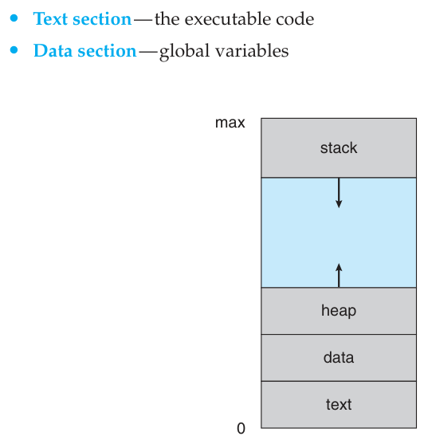
Every function call pushes a new activation record onto the stack, and returning pops it off; placing the heap at the bottom and the stack at the top allows both to grow toward the shared free space between them without colliding.每次函数调用都会向栈压入一个活动记录，返回时将其弹出；堆从低地址向上增长、栈从高地址向下增长，使二者能够共享中间的空闲空间。
In a compiled C program, the data area splits into initialized data (e.g., int y = 15;) and uninitialized data (e.g., int x;, known as the bss segment), while local variables such as int i; live on the stack and blocks returned by malloc reside on the heap. Running the size command reports the byte size of text, data, and bss along with their decimal sum in the dec column (e.g., 1158 + 284 + 8 = 1450).在 C 程序中，全局数据进一步分为已初始化数据（如 int y = 15;）和未初始化数据（如 int x;，即 bss 段）；局部变量 int i; 位于栈上，malloc 分配的内存位于堆上。命令 size 会输出 text、data 和 bss 的字节数，并在 dec 列给出三者之和（例如 1158 + 284 + 8 = 1450）。
Step 2: the five states第 2 步：进程的五种状态
Core idea: As a process executes, it cycles through five states—new, ready, running, waiting, and terminated—and only the scheduler can dispatch it into running.核心思路：进程在其生命周期中会在新建、就绪、运行、等待和终止五种状态间转换，且唯有调度程序能将其从就绪派往运行。
Because a single CPU core can execute instructions from only one process at any instant, the OS separates processes that are eligible to run right now (ready) from those stalled on slow I/O or an external event (waiting):由于单个 CPU 核心在任一瞬间只能运行一个进程，操作系统必须把“只差 CPU 就能跑”的进程（就绪）与“正在等慢速 I/O 或事件”的进程（等待）区分开来：
| State状态 | Meaning含义 |
|---|---|
| New新建 | The process is being created进程正在创建中 |
| Ready就绪 | The process holds all needed resources except a CPU core and waits to be dispatched进程已具备运行条件，正排队等待分配 CPU |
| Running运行 | Instructions are actively executing on a CPU core指令正在 CPU 核心上执行 |
| Waiting等待 | The process is blocked waiting for an event, such as I/O completion or a signal进程因等待 I/O 完成或接收信号而阻塞 |
| Terminated终止 | The process has finished execution进程已结束执行 |

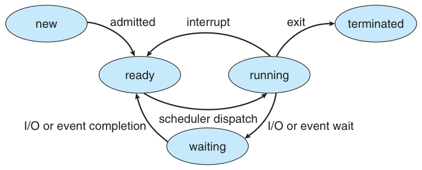
| Transition状态转换 | Label标准标签 | Typical cause典型触发原因 |
|---|---|---|
| new → ready新建 → 就绪 | admitted接纳 | The OS finishes setup and admits the process to memoryOS 完成初始化并接纳新进程进入内存 |
| ready → running就绪 → 运行 | scheduler dispatch调度分派 | The CPU scheduler selects the process and assigns it a core调度程序选中该进程并将其分派至核心 |
| running → ready运行 → 就绪 | interrupt中断 | Its time slice expires, or a higher-priority process becomes ready时间片用完，或更高优先级进程抢占 |
| running → waiting运行 → 等待 | I/O or event waitI/O 或事件等待 | The process invokes a blocking I/O call or waits for a signal/child进程发起阻塞 I/O 或等待事件/子进程 |
| waiting → ready等待 → 就绪 | I/O or event completionI/O 或事件完成 | The awaited disk read, network packet, or signal arrives等待的 I/O 完成或事件抵达 |
| running → terminated运行 → 终止 | exit退出 | The process finishes normally or is aborted进程正常结束或被异常终止 |
Crucially, waiting never leads directly to running: when I/O completes, the core is usually busy running another process, so the awakened process re-enters the ready queue and runs only when the scheduler dispatches it.务必记住：等待态永远不会直接跳转到运行态。I/O 完成时 CPU 核心往往正在运行其他进程，因此被唤醒的进程只能先回到就绪队列，等待调度程序再次分派。
Step 3: the process control block第 3 步：进程控制块（PCB）
Core idea: The PCB is the kernel's per-process dossier holding everything required to pause a process and restart it seamlessly later.核心思路：PCB 是内核为每个进程维护的“档案袋”，存有暂停并随后无痕恢复该进程所需的全部状态。
Whenever the OS pauses a process—whether for a timer interrupt or an I/O request—it must save a complete snapshot so execution can resume from the exact next instruction. The OS stores that snapshot in the process control block (PCB)（进程控制块）, also called a task control block, which groups seven categories of information:每当系统暂停一个进程时，都必须把当前现场完整存档，以便日后从断点精确恢复。这份存档就是进程控制块（PCB）（亦称任务控制块），它包含七类核心字段：
| PCB fieldPCB 字段组 | Content保存内容 |
|---|---|
| Process state进程状态 | Current state: new, ready, running, waiting, halted, etc.当前状态（新建、就绪、运行、等待、停止等） |
| Program counter程序计数器 | Address of the next instruction to execute for this process该进程下一条待执行指令的地址 |
| CPU registersCPU 寄存器 | Accumulators, index registers, stack pointers, general-purpose registers, and condition codes saved on interrupt中断时连同 PC 一并保存的累加器、变址寄存器、栈指针、通用寄存器与状态标志 |
| CPU-scheduling informationCPU 调度信息 | Process priority, pointers to scheduling queues, and scheduling parameters (Chapter 3)进程优先级、调度队列指针及其他调度参数（第 3 章） |
| Memory-management information内存管理信息 | Base and limit registers, page tables, or segment tables (Chapters 6 and 7)基址与界限寄存器、页表或段表指针（第 6、7 章） |
| Accounting information记账信息 | CPU and wall-clock time consumed, time limits, account and process IDs已用 CPU 时间与实际耗时、时间限额、账户与进程号 |
| I/O status informationI/O 状态信息 | List of I/O devices allocated to the process and open file descriptors分配给该进程的 I/O 设备及打开文件列表 |
In Linux, the PCB is implemented as the C structure task_struct; all tasks are linked in a doubly linked list, and the kernel maintains a pointer current referencing the task currently executing on a core. Once threads are introduced (Chapter 2), the PCB is extended to track per-thread execution state.在 Linux 中，PCB 对应 C 结构体 task_struct：内核将所有进程组织成双向链表，并用指针 current 指向正在运行的那一个。引入多线程后（第 2 章），内核还会进一步跟踪每个线程的独立状态。
Practice练习
Q1. (Trace) A process is created and admitted, dispatched, issues a disk read, is dispatched again after the read completes, is preempted when its time slice expires, is dispatched once more, and finally calls exit(). Write the sequence of states with the label of every transition.Q1.（手工演算）某进程创建后被接纳、获分派运行、发起一次磁盘读、读完成后再次被分派、时间片用尽被抢占、第三次被分派后调用 exit()。写出完整状态序列及每次转换的标签。
Answer
new →(admitted) ready →(scheduler dispatch) running →(I/O or event wait) waiting →(I/O or event completion) ready →(scheduler dispatch) running →(interrupt) ready →(scheduler dispatch) running →(exit) terminated.new →（admitted）ready →（scheduler dispatch）running →（I/O or event wait）waiting →（I/O or event completion）ready →（scheduler dispatch）running →（interrupt）ready →（scheduler dispatch）running →（exit）terminated。
The process is dispatched three times; after the disk read completes, it returns to the ready queue rather than jumping directly back onto the CPU.该进程共被分派三次；磁盘读完成后它必须先回到就绪队列排队，而不会直接切回 CPU。
Q2. (Layout) A C program declares int x; and int y = 15; outside main; inside main it declares int i; and int *values = malloc(5 * sizeof(int));. (a) In which memory section do x, y, i, the pointer values, the 20 bytes returned by malloc, and the machine code of main live? (b) size prints text 1158, data 284, bss 8. Compute dec and convert it to hexadecimal.Q2.（内存布局）某 C 程序在 main 外部声明 int x; 与 int y = 15;，在 main 内部声明 int i; 与 int *values = malloc(5 * sizeof(int));。（a）指出 x、y、i、指针变量 values、malloc 分配的 20 字节以及 main 的机器码分别位于哪个段。（b）若 size 输出 text 1158、data 284、bss 8，计算 dec 并化为十六进制。
Answer
- (a) Sections:
x→ bss (uninitialized global data);y→ data (initialized global data);iand the pointer variablevalues→ stack (local variables); the 20 bytes frommalloc→ heap (dynamically allocated memory); machine code ofmain→ text. Note that the pointer variable lives on the stack, whereas the block it points to lives on the heap.（a）各元素所在段：x→ bss（未初始化全局数据）；y→ data（已初始化全局数据）；i与指针变量values→ 栈（局部变量）；malloc返回的 20 字节 → 堆（动态分配内存）；main机器码 → 代码段（text）。注意指针变量本身在栈上，它指向的内存块才在堆上。 - (b) Calculation: \(\text{dec}=1158+284+8=1450\). Converting to hex: \(1450=5\times 256+10\times 16+10\), which equals
0x5AA.（b）数值计算：\(\text{dec}=1158+284+8=1450\)。转为十六进制：\(1450=5\times 256+10\times 16+10\)，即0x5AA。
Process scheduling and context switch ★★★进程调度与上下文切换
Goal. Explain why multiprogramming raises CPU utilization, trace how processes move between ready and wait queues, describe a context switch step by step, and compute switching overhead and CPU utilization.目标。理解多道程序设计为何能提升 CPU 利用率，说明进程在就绪与等待队列间的流转，分步描述上下文切换，并计算切换开销与 CPU 利用率。
Step 1: why keep several processes in memory?第 1 步：为什么要在内存中保留多个进程？
Core idea: Multiprogramming hides slow I/O waits by keeping another ready process available whenever the running one stalls, while time sharing switches rapidly for user interactivity.核心思路：多道程序设计让运行进程因 I/O 阻塞时 CPU 能立刻切换去跑别的就绪进程；分时系统则在此基础上高频切换以保证交互响应。
If only one process sits in memory, the expensive CPU goes completely idle whenever that process waits for a slow disk or network transfer. Operating systems solve this waste using two complementary ideas depending on the workload:如果内存里只装一个进程，每当它等待慢速磁盘或网络 I/O 时，昂贵的 CPU 就只能彻底闲置。针对这一瓶颈，操作系统结合以下机制与进程特征来提升效率：
- Multiprogramming（多道程序设计）keeps several processes in memory—the count is the degree of multiprogramming（多道程序度）—so that another ready process can take over the CPU whenever the running process waits, maximizing CPU utilization.多道程序设计：在内存中同时驻留多个进程（其个数称为多道程序度），一旦当前进程等待 I/O，立即切换执行其他就绪进程，从而最大化 CPU 利用率。
- Time sharing（分时）goes a step further by switching CPU cores among processes so frequently (every few milliseconds) that users can interact smoothly with each running program.分时：以毫秒级频率在进程间快速轮换 CPU，让用户能与每个程序实时交互。
- I/O-bound vs. CPU-bound processes: An I/O-bound（I/O 密集型）process spends most of its time waiting on I/O with short CPU bursts, whereas a CPU-bound（CPU 密集型）process performs long computations and rarely requests I/O.I/O 密集型与 CPU 密集型：I/O 密集型进程大部分时间在等 I/O，CPU 爆发极短；CPU 密集型进程则长时间连续计算，极少发起 I/O。
Quantitatively, if each of \(n\) processes spends a fraction \(p\) of its time waiting for I/O independently, the CPU sits idle only during the fraction \(p^n\) when all \(n\) happen to wait simultaneously.定量来看，若内存中 \(n\) 个进程相互独立，且各自有占比 \(p\) 的时间在等 I/O，那么只有全部 \(n\) 个进程碰巧同时等待时 CPU 才会空闲（概率为 \(p^n\)）。
For instance, with \(p=0.8\) and \(n=4\), \(p^n=0.4096\), giving \(U=1-0.4096\approx 0.59\). Adding more processes pushes \(U\) higher, though each additional process yields diminishing returns while consuming extra memory.例如，取 \(p=0.8\)、\(n=4\)，则 \(p^n=0.4096\)，得出 \(U=1-0.4096\approx 0.59\)。继续增加进程能提升 \(U\)，但边际收益递减且会消耗更多内存。
Step 2: the queues第 2 步：调度队列的流转
Processes waiting to run sit in the ready queue（就绪队列）—a linked list of PCBs with head and tail pointers—while processes blocked on an event reside in the corresponding wait queue（等待队列）. Once dispatched onto a core, a running process leaves the CPU in one of three ways:等待调度的进程排在就绪队列（带头尾指针的 PCB 链表）中，等待特定事件的进程则挂在相应的等待队列里。进程上核运行后，有三种离开 CPU 的路径：
- It issues an I/O request and moves into that device's I/O wait queue.发起 I/O 请求，进入对应设备的 I/O 等待队列。
- It spawns a child process and enters a wait queue until the child terminates.创建子进程并等待其结束，进入等待队列。
- It is forcibly removed by an interrupt (such as time-slice expiry) and returns straight to the ready queue.被中断或时间片耗尽换下，直接退回就绪队列。
In cases 1 and 2, the process moves back to the ready queue once its awaited event finishes; upon termination, it leaves all queues and its PCB and resources are reclaimed.在情形 1 和 2 下，事件完成后进程会重返就绪队列；终止时则退出所有队列并释放 PCB 与资源。
The CPU scheduler（CPU 调度程序）picks the next process from the ready queue frequently—typically at least once every 100 ms. When memory runs tight, swapping（交换）temporarily moves inactive processes out to disk to reduce the degree of multiprogramming and swaps them back in later (Chapter 6).CPU 调度程序运行极为频繁（通常每 100 ms 至少一次），负责从就绪队列挑出下一个执行对象。当内存吃紧时，交换机制会将部分进程暂时移到磁盘以降低多道程序度，待日后内存宽裕再换回（见第 6 章）。
Step 3: the context switch第 3 步：上下文切换
Core idea: Context switching saves the running process's CPU state into its PCB and loads the next process's saved state from its PCB—pure overhead during which no user code runs.核心思路：上下文切换就是把旧进程现场存回 PCB，再从新进程 PCB 恢复现场；切换耗时属于纯开销，期间没有任何用户指令在推进。

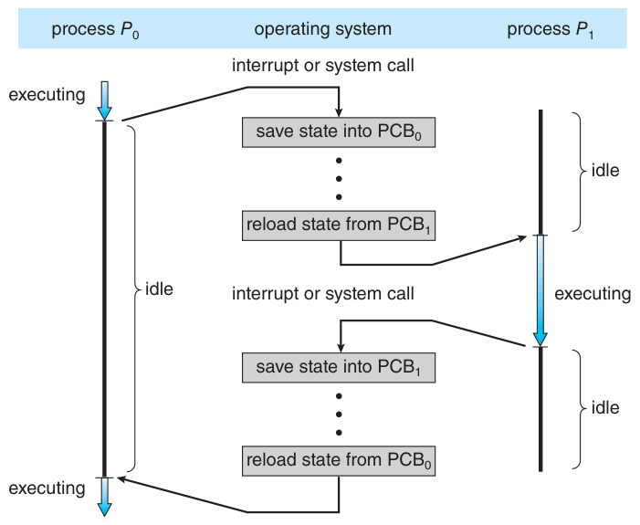
A complete context switch proceeds in five steps:一次完整的上下文切换包含五个步骤：
- An interrupt or system call transfers CPU control to the kernel.中断或系统调用将 CPU 控制权移交给内核。
- The kernel saves the running process's context (registers, PC, memory state) into its PCB.内核把当前进程的寄存器、PC 等上下文保存到其 PCB。
- The CPU scheduler selects the next ready process to run.CPU 调度程序选出下一个待运行进程。
- The kernel loads the selected process's saved context from its PCB.内核从新进程的 PCB 装入其之前保存的上下文。
- Control returns to user mode, and the new process resumes right where it left off.返回用户态，新进程从上次中断处继续执行。
Because the CPU executes no useful user work during a context switch, switch time—typically a few microseconds—is pure overhead. Its duration depends on memory speed, how many registers must be copied, whether the CPU provides single instructions to load/store all registers, and how complex the OS address-space management is.切换期间系统不产生任何有效计算，因此这段耗时（通常为数微秒）属于纯开销，具体取决于内存速度、待复制寄存器数量、是否具备批量存取寄存器的硬件指令，以及 OS 自身维护状态的复杂程度。
Some CPUs reduce this cost by offering multiple register sets in hardware: switching between processes already residing in register sets merely updates a single pointer. However, once active processes outnumber the available register sets, registers must again be spilled to and reloaded from memory PCBs.部分处理器在硬件中提供多组寄存器：若目标进程上下文已在另一组寄存器中，只需切换组指针即可瞬时完成；但一旦并发进程数超过寄存器组数，仍需像普通机器那样将寄存器拷贝进出内存 PCB。
Practice练习
Q1. (Calculation) Every process spends 80% of its time waiting for I/O. (a) What is the CPU utilization with 4 processes in memory? (b) What is the smallest degree of multiprogramming that achieves at least 90% utilization?Q1.（计算）假设每个进程有 80% 的时间在等待 I/O。（a）当内存中有 4 个进程时，CPU 利用率是多少？（b）至少需要多高的多道程序度才能使 CPU 利用率达到 90%？
Answer
- (a) \(U=1-p^n=1-0.8^4=1-0.4096=0.5904\approx 59\%\).（a）\(U=1-p^n=1-0.8^4=1-0.4096=0.5904\approx 59\%\)。
- (b) Setting \(1-0.8^n\ge 0.9\) gives \(0.8^n\le 0.1\), so \(n\ge \ln 0.1/\ln 0.8\approx 10.3\), giving \(n=11\) (\(n=10\) yields 89.3%, while \(n=11\) reaches 91.4%). Keeping heavily I/O-bound workloads busy therefore demands significant memory to hold many resident processes.（b）由 \(1-0.8^n\ge 0.9\) 得 \(0.8^n\le 0.1\)，故 \(n\ge \ln 0.1/\ln 0.8\approx 10.3\)，向上取整为 \(n=11\)（\(n=10\) 仅 89.3%，\(n=11\) 达 91.4%）。可见高 I/O 密集负载必须靠更多内存来容纳大量并发进程。
Q2. (Calculation) A context switch takes 5 µs. (a) What fraction of CPU time is lost when the time slice is 10 ms? (b) What is the smallest time slice that keeps overhead at or below 2%?Q2.（计算）一次上下文切换耗时 5 µs。（a）时间片为 10 ms 时，CPU 时间损耗占比是多少？（b）要将开销压在 2% 以内，时间片至少应为多大？
Answer
- (a) Convert 10 ms = 10,000 µs: \(\text{overhead}=5/(10\,000+5)\approx 0.0005=0.05\%\).（a）统一单位 10 ms = 10,000 µs：\(\text{overhead}=5/(10\,000+5)\approx 0.0005=0.05\%\)。
- (b) Solving \(t_{cs}/(q+t_{cs})\le 0.02\) gives \(q\ge 49\,t_{cs}=49\times 5=245\,\mu\text{s}\).（b）由 \(t_{cs}/(q+t_{cs})\le 0.02\) 解得 \(q\ge 49\,t_{cs}=49\times 5=245\,\mu\text{s}\)。
Q3. (Explain) A processor provides multiple hardware register sets. Describe what happens during a context switch (a) when the incoming context is already loaded in a register set, and (b) when it resides in memory and all register sets are occupied.Q3.（简答）某处理器提供多组硬件寄存器。说明上下文切换时以下两种情况的处理过程：（a）新上下文已驻留在某组寄存器中；（b）新上下文位于内存且所有寄存器组均已被占用。
Answer
- (a) Already in a register set: The hardware merely updates the current-register-set pointer to point to the target set without copying registers to memory, making the switch extremely fast.（a）已在某组寄存器中：仅需修改“当前寄存器组指针”指向新组即可，无需读写内存，切换速度极快。
- (b) All sets in use: The OS must evict one victim set (e.g., via LRU), copy its registers back to its owner's PCB in memory, load the incoming process's registers from memory into that freed set, and update the pointer—costing slightly more than a single-register-set context switch due to victim selection.（b）寄存器组已满：系统必须选出一个牺牲组（如采用 LRU），将其寄存器存回原所属进程的内存 PCB，再把新进程的现场从内存装入腾出的寄存器组并切换指针；其开销与普通上下文切换相当甚至略高（多出挑选牺牲组的时间）。
Process creation and termination ★★★进程的创建与终止
Goal. Trace code using fork(), exec(), and wait() to count created processes, predict outputs, and draw process trees, and distinguish zombie from orphan processes.目标。读懂包含 fork()、exec() 与 wait() 的代码并统计进程数、预测输出、画出进程树，同时准确区分僵尸进程与孤儿进程。
Step 1: design choices when creating a process第 1 步：创建进程时的两种核心选择
Core idea: Spawning a child presents two orthogonal choices: whether the parent runs concurrently or waits, and whether the child duplicates the parent or loads a fresh program.核心思路：创建子进程面临两个独立抉择——执行上父子并发还是父等子结束，地址空间上子进程克隆父进程还是立即加载新程序。
| Dimension维度 | Option 1选项 1 | Option 2选项 2 |
|---|---|---|
| Execution执行顺序 | Parent and children execute concurrently父进程与子进程并发执行 | Parent waits until some or all children terminate父进程阻塞等待部分或全部子进程终止 |
| Address space地址空间 | Child is a duplicate of the parent (same code and data)子进程是父进程的副本（程序与数据相同） | A new program is loaded into the child子进程加载一个全新的程序 |
Step 2: fork(), exec() and wait()第 2 步：fork()、exec() 与 wait()
Core idea: fork() clones the calling process, exec() replaces its program image while keeping the PID, and wait() pauses the parent until a child exits.核心思路：fork() 负责“复制自己”，exec() 负责“原地换壳加载新程序”，wait() 负责“等待子进程收尾”。
In UNIX-like systems, process creation and program loading are split into two separate system calls, coordinated with a third call for reaping children:UNIX 将“创建新进程”与“运行新程序”拆成两个独立系统调用，再配合等待回收调用完成协作：
fork()creates a child whose address space is a copy of the parent's, and both resume at the instruction immediately followingfork(). To let them diverge,fork()returns 0 in the child, the child's positive PID in the parent, and a negative value on error.fork()复制父进程的地址空间生成子进程，父子随后均从fork()之后的下一条指令继续执行。二者靠返回值分道扬镳：子进程收到 0，父进程收到子进程的正数 PID，失败则返回负值。exec()(such asexeclp()) overwrites the calling process's memory image with a new executable from disk while preserving its PID. Because the old code is destroyed, a successfulexec()never returns.exec()（如execlp()）用新程序彻底覆盖当前进程的内存映像（但 PID 不变）。由于原程序已被抹除，成功的exec()永远不会返回。wait()suspends the parent until one of its children exits, returning the finished child's PID and exit status.wait()使父进程阻塞直至某个子进程结束，并返回该子进程的 PID 与退出状态。
pid_t pid = fork(); /* fork a child process */
if (pid < 0) { /* error occurred */
fprintf(stderr, "Fork Failed");
return 1;
}
else if (pid == 0) /* child process */
execlp("/bin/ls", "ls", NULL);
else { /* parent process */
wait(NULL); /* wait for the child to complete */
printf("Child Complete");
}

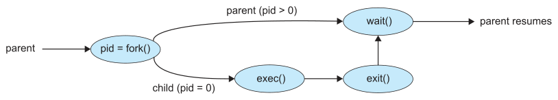
wait(), while the child overlays its image with exec() and exits before the parent resumes标准 UNIX 创建模式：父进程 fork() 后进入 wait() 等待，子进程经 exec() 加载新程序并最终 exit()，随后唤醒父进程In the listing above, the child replaces its address space with /bin/ls to print a directory listing, while the parent waits and prints Child Complete afterward; any statement placed after execlp() in the child executes only if exec() fails. Furthermore, once fork() returns, parent and child hold separate copies of every variable, so changes in one are invisible to the other. By contrast, Windows combines creation and loading into a single call, CreateProcess():上例中，子进程用 /bin/ls 覆盖自身并输出目录清单，父进程等到其退出后才打印 Child Complete；子进程中紧跟 execlp() 后的代码只有加载失败时才会被执行。注意 fork() 之后父子进程各自持有独立变量副本，互不可见。相比之下，Windows 的 CreateProcess() 在创建进程时便一步到位直接加载新程序：
UNIX fork() |
Windows CreateProcess() |
|
|---|---|---|
| Child address space子进程地址空间 | Copy of the parent's address space复制父进程的地址空间 | Loads a specified executable program directly at creation创建时直接装入指定可执行程序 |
| Parameters调用参数 | None无 | At least ten (command line, inheritance and creation flags, environment, working directory, STARTUPINFO, PROCESS_INFORMATION)至少十个（命令行、继承与创建标志、环境变量、目录、STARTUPINFO、PROCESS_INFORMATION） |
| Waiting for child等待子进程 | wait() |
WaitForSingleObject() on the child's handle在子进程句柄上调用 WaitForSingleObject() |
Step 3: how to count processes第 3 步：如何统计 fork 产生的进程数
To count processes reliably by hand without falling for tricks, trace execution line by line:考场数进程题切忌死背公式，按以下四步逐行追踪最稳妥：
- Start with a single process (\(P_0\)).从最初的 1 个父进程（\(P_0\)）出发。
- Step through the code line by line.逐行向下追踪执行流。
- At every
fork(), every process currently reaching that line doubles (parent + newly spawned child both resume at the next instruction).每遇到一次fork()，所有执行到该行的进程数量翻倍（父子双方都从下一条指令继续）。 - Whenever a guard like
if (fork() == 0)orbreakfilters the branch, only the processes satisfying the condition reach subsequent forks.若带有if (fork() == 0)或break等条件限制，只有满足分支条件的进程才会触发后续的fork()。
| Code代码片段 | Total processes总进程数 | Reason原因 |
|---|---|---|
fork(); fork(); fork(); |
8 | \(2^3\) (all processes execute all 3 calls)\(2^3\)（所有进程均执行全部 3 次调用） |
for (i = 0; i < 4; i++) fork(); |
16 | \(2^4\) (every child continues the loop with the parent's i)\(2^4\)（每个子进程都继承 i 并继续后续循环） |
for (i = 0; i < 4; i++) if (fork() == 0) break; |
5 | Each child breaks out of the loop, so only the parent forks again: \(4+1\)子进程立即 break 退出循环，只有父进程连生 4 个：共 \(4+1\) 个 |
Step 4: termination, zombies and orphans第 4 步：进程终止、僵尸进程与孤儿进程
Core idea: A process terminates via exit(), lingers as a zombie if its parent hasn't called wait() yet, and becomes an orphan adopted by init/systemd if its parent terminates first.核心思路：进程经 exit() 终止后，若父进程尚未 wait() 则暂留为僵尸进程；若父进程先行退出，仍在运行的子进程则变成由 init/systemd 收养的孤儿进程。
A process ends normally when it executes its final statement and calls exit() (invoked automatically by the C runtime), releasing its memory and open files and returning an integer exit status that its parent reads via wait(&status). A parent can also forcibly terminate a child that exceeds resource limits or is no longer needed; on systems forbidding children from outliving parents, this triggers cascading termination（级联终止）of all descendants.进程执行完最后一条语句后会调用 exit()（C 运行时默认自动补全）释放内存与文件，并留下整型退出码供父进程通过 wait(&status) 读取。父进程也可在子进程资源超限或任务取消时主动将其终止；若系统不允许子进程比父进程活得久，便会触发级联终止，将所有后代一并结束。
| Zombie僵尸进程 | Orphan孤儿进程 | |
|---|---|---|
| Situation触发情形 | The child has terminated, but its parent has not yet called wait()子进程已结束，但父进程尚未调用 wait() |
The parent terminated without calling wait()父进程未调用 wait() 便先于子进程退出 |
| What remains当前状态 | Only its process-table entry (holding the exit status) and PID remain资源已释放，仅在进程表中保留表项（含退出码）与 PID | The process itself keeps executing normally进程本体仍在正常执行 |
| Resolution清理方式 | Reaped when the parent calls wait(), freeing the entry and PID父进程调用 wait() 收割后释放表项与 PID |
Adopted by init or systemd (pid 1), which periodically calls wait() to reap it由 init 或 systemd（PID 1）收养，待其结束时定期 wait() 回收 |
Practice练习
Q1. (Trace) What does the program print at LINE A? Which of the stack, the heap, and a shared-memory segment are shared between parent and child after fork()?Q1.（手工演算）程序在 LINE A 处输出什么？fork() 之后，栈、堆与共享内存段中哪些在父子进程间共享？
int value = 5;
int main() {
pid_t pid = fork();
if (pid == 0) { /* child process */
value += 15;
return 0;
}
else if (pid > 0) { /* parent process */
wait(NULL);
printf("PARENT: value = %d", value); /* LINE A */
return 0;
}
}
Answer
Output: PARENT: value = 5. The child increments its own copy of value to 20, while the parent waits and prints its untouched copy (5). After fork(), only an attached shared-memory segment is shared; the stack and heap are logically duplicated per process (typically via copy-on-write).输出：PARENT: value = 5。子进程把自己的副本改成了 20，而父进程等待后打印的仍是自己未改动的副本 5。fork() 后只有预先挂接的共享内存段在父子间共享，栈与堆均为各自独立副本（内核通常用写时复制实现）。
Q2. (Counting) How many processes, including the initial one, execute the code if (fork() == 0) fork(); fork();? Draw the process tree.Q2.（计数）包含初始进程在内，执行 if (fork() == 0) fork(); fork(); 共产生多少个进程？请画出进程树。
Answer
6 processes in total:共 6 个进程：
- \(P_0\) executes the outer
fork(), creating \(P_1\).\(P_0\) 执行外层fork()，创建 \(P_1\)。 - Only \(P_1\) sees
fork() == 0and enters theifbranch to execute the innerfork(), creating \(P_2\).仅 \(P_1\) 满足fork() == 0进入分支并执行内层fork()，创建 \(P_2\)。 - All three existing processes (\(P_0, P_1, P_2\)) then execute the final
fork(), creating \(P_3, P_4, P_5\) respectively.随后当前存活的 3 个进程（\(P_0, P_1, P_2\)）共同执行最后一个fork()，分别创建 \(P_3, P_4, P_5\)。
Process tree: \(P_0\) has children \(P_1, P_3\); \(P_1\) has children \(P_2, P_4\); \(P_2\) has child \(P_5\).进程树结构：\(P_0\) 的子进程为 \(P_1, P_3\)；\(P_1\) 的子进程为 \(P_2, P_4\)；\(P_2\) 的子进程为 \(P_5\)。
Q3. (Explain) (a) In the fork/exec/wait snippet of this section, when can a statement right after execlp() in the child run? (b) Contrast a zombie with an orphan and state who reaps each.Q3.（简答）（a）在本节的 fork/exec/wait 示例中，子进程里紧跟在 execlp() 后的语句何时才会被执行？（b）对比僵尸进程与孤儿进程，并说明各自由谁回收。
Answer
- (a) Only if
execlp()fails (e.g., binary not found or permission denied); a successfulexec()overwrites the entire memory image and never returns.（a）仅当execlp()调用失败（如目标文件不存在或无权限）时才会执行；一旦成功，原程序映像已被替换，绝不会返回。 - (b) A zombie has already exited while its parent has not called
wait(), leaving its process-table entry intact until its parent reaps it viawait(). An orphan is a still-running child whose parent terminated first; the kernel reassigns it toinit/systemd, which periodically callswait()to reap it once it finishes.（b）僵尸进程已终止但父进程尚未wait()，内核保留其进程表项直至父进程调用wait()回收；孤儿进程则是父进程先退出而自身仍在运行的子进程，内核会将其过继给init/systemd，由后者定期调用wait()完成收尾。
Interprocess communication: shared memory and message passing ★★★进程间通信：共享内存与消息传递
Goal. Compare shared memory and message passing in a table, trace the bounded-buffer producer–consumer code and explain its capacity, and classify the three design choices of message passing.目标。制表对比共享内存与消息传递，演算有界缓冲区生产者–消费者代码并解释其容量限制，并掌握消息传递的三大设计维度。
Step 1: the two IPC models第 1 步：两种基本 IPC 模型
Core idea: Shared memory lets processes read and write a common memory segment directly at full speed, whereas message passing routes structured messages through the kernel.核心思路：共享内存让进程直接读写同一块内存区，速度极快；消息传递则由内核代理收发消息，天然自带同步且支持跨机通信。

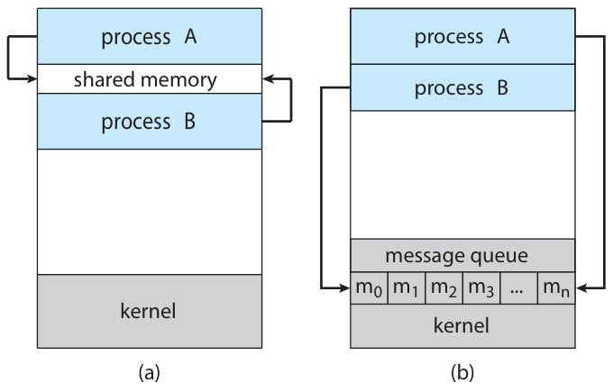
| Dimension比较维度 | Shared memory共享内存 | Message passing消息传递 |
|---|---|---|
| Core mechanism核心机制 | Processes read and write directly inside a shared memory region进程直接读写同一块共享内存区 | Processes exchange messages via send and receive进程通过 send 与 receive 原语交换消息 |
| Kernel involvement内核介入 | Setup only; subsequent accesses are ordinary memory loads/stores仅建立映射时介入；后续读写即为普通访存 | Every message requires a system call and kernel copying每条消息均需触发系统调用并经由内核处理 |
| Speed通信速度 | Faster (memory-bus speed)更快（接近内存总线速度） | Slower (system-call overhead per message)较慢（受限于系统调用开销） |
| Synchronization同步责任 | Managed explicitly by user processes (Chapter 4)须由通信进程自行协调同步（第 4 章） | Built directly into the IPC primitives内置于通信操作本身 |
| Best suited for适用场景 | Large volumes of data on a single machine单机内部的大规模高速数据共享 | Small control messages and distributed systems across networks小规模数据交换及跨网络的分布式系统 |
Normally, the OS forbids one process from accessing another's memory. Shared memory works only when the creator establishes a shared segment and peers agree to attach it into their own address spaces; because the kernel steps back afterward, the processes themselves must define the data layout and prevent simultaneous conflicting writes.默认情况下操作系统严禁进程互访内存；共享内存相当于双方协商放开这一隔离——由一方创建共享区并允许另一方挂接到自身地址空间。内核退居幕后之后，数据格式与并发防冲突便全靠进程自行把关。
Step 2: producer–consumer with a bounded buffer第 2 步：基于有界缓冲区的生产者–消费者模型
Core idea: A bounded circular buffer reuses an \(N\)-slot array via modulo arithmetic and sacrifices one empty slot so that “full” can be distinguished from “empty” without an extra shared counter.核心思路：有界循环缓冲区用取模运算原地复用 \(N\) 个槽位，并刻意留空一格，从而仅靠 in 与 out 两个指针就能无歧义地区分“空”与“满”。
The producer–consumer problem（生产者–消费者问题）models two cooperating processes—such as a compiler generating assembly code consumed by an assembler—communicating through a buffer. With a bounded buffer（有界缓冲区）of fixed capacity, the consumer stalls when the buffer is empty and the producer stalls when it is full (whereas an unbounded buffer never blocks the producer).生产者–消费者问题是协作进程的经典范式（如编译器产出汇编代码交由汇编器处理）。若采用固定大小的有界缓冲区，空时消费者等待、满时生产者等待（无界缓冲区则生产者永不阻塞）。
To avoid shifting array elements on every removal, shared-memory implementations arrange the array circularly with two indices—in pointing to the next free slot and out pointing to the first occupied slot:为了避免每次取出数据都要整体搬移数组，实现时将数组首尾相连构成循环队列：in 指向下一个空槽，out 指向第一个满槽：
#define BUFFER_SIZE 10
typedef struct { /* ... */ } item;
item buffer[BUFFER_SIZE];
int in = 0; /* next free position */
int out = 0; /* first full position */
/* producer */
while (true) {
/* produce an item in next_produced */
while (((in + 1) % BUFFER_SIZE) == out)
; /* buffer full: do nothing */
buffer[in] = next_produced;
in = (in + 1) % BUFFER_SIZE;
}
/* consumer */
while (true) {
while (in == out)
; /* buffer empty: do nothing */
next_consumed = buffer[out];
out = (out + 1) % BUFFER_SIZE;
/* consume the item in next_consumed */
}
This solution holds at most BUFFER_SIZE - 1 items because allowing the last slot to be filled would make in == out true for both a full and an empty buffer. Note also that both loops busy-wait (spin) and assume only one producer updates in and one consumer updates out; concurrent updates to shared counters require synchronization primitives from Chapter 4.该方案最多只能装 BUFFER_SIZE - 1 个元素：若最后一个槽位也允许填满，满状态同样会出现 in == out，从而与空状态无法区分。此外，代码中两个 while 循环均采用忙等待，且仅安全支持单生产者–单消费者；多方同时修改共享计数器则需要第 4 章的同步机制。
Step 3: message passing and its design choices第 3 步：消息传递及其三大设计维度
Core idea: Message passing uses send and receive across a communication link and varies along three design axes: naming, synchronization (blocking), and buffering capacity.核心思路：消息传递通过通信链路执行 send 与 receive，设计时须在命名方式、同步/阻塞行为与缓冲区容量三个维度做出权衡。
A message-passing facility provides at least send(message) and receive(message) across a logical communication link, allowing processes to communicate without sharing an address space—making it ideal for distributed systems. Its behavior is defined by three choices:消息传递至少提供 send(message) 与 receive(message) 两个原语，在逻辑通信链路上收发数据。由于无需共享地址空间，它天然契合分布式系统，核心设计可拆成三个选择：
Choice 1: naming (direct vs. indirect). Processes either name each other explicitly or communicate through an intermediate mailbox/port:选择 1：命名方式（直接通信 vs. 间接通信）。进程既可以直接指名道姓，也可以经由邮箱/端口中转：
| Direct communication直接通信 | Indirect communication间接通信 | |
|---|---|---|
| Primitives通信原语 | send(P, message) and receive(Q, message) (symmetric); in the asymmetric form, receive(id, message) accepts from any sender and sets id对称：send(P, msg) 与 receive(Q, msg)；非对称：receive(id, msg) 接收任意来信并回填发送方 id |
send(A, message) and receive(A, message) via mailbox/port A通过共享邮箱（或端口）A 收发：send(A, msg) 与 receive(A, msg) |
| Link setup链路建立 | Established automatically between every communicating pair在需要通信的一对进程间自动建立 | Established only if processes share a mailbox仅当双方共享同一邮箱时建立 |
| Processes per link每条链路进程数 | Exactly two恰好两个 | Two or more两个或更多 |
| Links per pair每对进程链路数 | Exactly one恰好一条 | Several (one per shared mailbox)可有多条（每个共享邮箱对应一条） |
| Drawback主要缺陷 | Limited modularity: renaming a process forces updating all hard-coded references模块化较差：修改进程标识就必须改动所有硬编码引用 | Requires a rule when multiple receivers share one mailbox多接收方共用同一邮箱时须规定由谁收信 |
When processes P1, P2, and P3 share mailbox A and both P2 and P3 call receive on a message from P1, ambiguity arises; the OS resolves it by restricting a link to at most two processes, permitting only one active receiver at a time, or picking a receiver (e.g., round robin). Mailboxes may be owned either by a process—disappearing when that owner exits, with only the owner allowed to receive—or by the OS itself as independent objects.若 P1、P2、P3 共用邮箱 A 且 P2 与 P3 同时接收 P1 的消息，就必须明确由谁收信：系统可以限制一条链路最多连两个进程、同一时刻只允许一个接收方，或按轮转等方式挑选接收者。此外，邮箱既可归进程所有（只有所有者能从中接收，且随进程退出而销毁），也可由操作系统独立托管。
Choice 2: synchronization (blocking vs. nonblocking). Blocking primitives are called synchronous, whereas nonblocking ones are called asynchronous:选择 2：阻塞与否（同步 vs. 异步）。阻塞原语称作同步，非阻塞原语称作异步：
- Blocking send: Sender waits until the message is received by the receiver or the mailbox.阻塞发送：发送方暂停，直至消息被接收方或邮箱收下。
- Nonblocking send: Sender dispatches the message and continues immediately.非阻塞发送：发送方发出消息后立刻继续执行。
- Blocking receive: Receiver waits until a message becomes available.阻塞接收：接收方暂停，直至有消息到达。
- Nonblocking receive: Receiver immediately retrieves either a valid message or null.非阻塞接收：接收方立刻返回一条有效消息或空值（null）。
When both send and receive block, the two processes achieve a rendezvous（会合）: the producer simply loops on send(next_produced) and the consumer loops on receive(next_consumed) with zero explicit buffer code.当发送和接收同时阻塞时，双方构成会合——此时生产者只需循环 send、消费者只需循环 receive，完全不需要手写缓冲区代码。
Choice 3: buffering capacity. Every link holds a temporary message queue of one of three capacities (bounded and unbounded together constitute automatic buffering):选择 3：缓冲区容量。通信链路上的临时队列分为三种容量（有界与无界统称自动缓冲）：
| Capacity队列容量 | Queue length最大长度 | Sender behavior发送方行为 |
|---|---|---|
| Zero零容量 | 0 | Blocks until the receiver accepts the message (rendezvous / no buffering)必须阻塞，直到接收方取走消息（会合，即无缓冲） |
| Bounded有界容量 | \(n\) | Continues immediately if the queue is not full; blocks when full队列未满时直接继续，满则阻塞等待 |
| Unbounded无界容量 | unlimited无限 | Never blocks永不阻塞 |
Practice练习
Q1. (Trace) Given BUFFER_SIZE = 6, in = 4, and out = 1: (a) How many items are in the buffer, and can the producer insert another? (b) The producer adds two items and then the consumer removes three; give in, out, and the item count after each step.Q1.（手工演算）设 BUFFER_SIZE = 6，当前 in = 4、out = 1。（a）缓冲区现有几个元素？生产者还能否再放入一个？（b）生产者放入两个元素后消费者再取出三个，分别给出两步后的 in、out 与元素数。
Answer
- (a) \(\text{count}=(4-1)\bmod 6=3\). Because
(4 + 1) % 6 = 5 != out(\(1\)), the buffer is not full and the producer can add an item.（a）\(\text{count}=(4-1)\bmod 6=3\)。由于(4 + 1) % 6 = 5 != out（1），未满，生产者可以放入。 - (b) After producing 2 items:
inmoves 4 → 5 → 0 whileout = 1, giving \(\text{count}=(0-1)\bmod 6=5=N-1\) (now full, since(0 + 1) % 6 = 1 = out). After consuming 3 items:outmoves 1 → 2 → 3 → 4 whilein = 0, leaving \(\text{count}=(0-4)\bmod 6=2\).（b）放入两项后：in依次变为 5、0，out = 1，元素数为 \((0-1)\bmod 6=5=N-1\)（此时已满，因(0 + 1) % 6 = 1 = out）。取出三项后：out依次变为 2、3、4，in = 0，剩余元素数为 \((0-4)\bmod 6=2\)。
Q2. (Design) Modify the bounded-buffer scheme so all BUFFER_SIZE slots can hold items without introducing a shared variable written by both processes.Q2.（设计）如何修改上述有界缓冲区方案，使其能用满全部 BUFFER_SIZE 个槽位，同时又不引入被双方共同写入的共享变量？
Answer
Maintain in and out as monotonically increasing unsigned counters rather than wrapping them modulo N, and index into the array via in % N and out % N. Then the buffer is empty when in == out, full when in - out == N, and holds in - out items. Because only the producer writes in and only the consumer writes out, no variable has two writers—unlike a shared count variable, which would cause a race condition (Chapter 4). Choosing a power-of-two \(N\) keeps modular indexing exact even across unsigned wraparound.将 in 和 out 改为单调递增的无符号计数器（不再在赋值时取模），仅在访问数组槽位时使用 in % N 与 out % N。此时判空为 in == out，判满为 in - out == N，元素数为 in - out。由于只有生产者写 in、只有消费者写 out，避免了双写共享变量 count 导致的竞争条件（第 4 章）；取 \(N\) 为 2 的幂还能保证无符号整型溢出回绕时依然正确。
Q3. (Compare) (a) Contrast direct and indirect communication in terms of links and modularity. (b) Which combination of send/receive synchronization creates a rendezvous, and what queue capacity does it correspond to?Q3.（对比）（a）从链路关系与模块化角度对比直接通信和间接通信。（b）哪种收发同步组合会构成会合？它对应怎样的队列容量？
Answer
- (a) Direct communication names the peer explicitly (
send(P, m)/receive(Q, m)) with exactly one link per pair; modularity is poor because changing a process identifier forces edits across every communicating peer. Indirect communication routes messages through mailboxes, allowing links to connect more than two processes and letting processes be swapped transparently—though multiple receivers on one mailbox require a tie-breaking rule.（a）直接通信显式指定对方进程名，每对进程间恰有一条链路，一旦修改进程标识就得改遍所有通信方，模块化差；间接通信经由邮箱解耦，一条链路可连多进程且可透明替换进程本身，但多接收者共用一箱时须制定投递规则。 - (b) Blocking send paired with blocking receive produces a rendezvous, corresponding to a zero-capacity queue where the sender blocks until the receiver takes the message.（b）阻塞发送配合阻塞接收即构成会合，对应零容量队列（发送方阻塞直至接收方取走消息）。
IPC in practice: POSIX, Mach, Windows and pipes ★★进程间通信实践：POSIX、Mach、Windows 与管道
Goal. List the POSIX shared-memory calls in order, summarize how Mach and Windows ALPC pass messages, and compare ordinary pipes with named pipes.目标。按顺序列出 POSIX 共享内存的系统调用流程，概括 Mach 与 Windows ALPC 的消息机制，并对比普通管道与命名管道。
POSIX shared memoryPOSIX 共享内存
Core idea: POSIX shared memory creates a named memory-mapped object, sizes it, maps it into each process's address space, accesses it via a normal pointer, and unlinks it when done.核心思路：POSIX 共享内存沿“创建命名对象 → 设定大小 → 内存映射 → 指针读写 → 解除链接”五步完成。
fd = shm_open(name, O_CREAT | O_RDWR, 0666)creates (or opens) the named shared-memory object and returns a file descriptor used by peers.shm_open(...)创建或打开指定名称的共享内存对象，返回文件描述符。ftruncate(fd, 4096)sets the object's size to 4096 bytes.ftruncate(fd, 4096)将对象大小设定为 4096 字节。ptr = mmap(0, SIZE, PROT_READ | PROT_WRITE, MAP_SHARED, fd, 0)maps the object into the caller's virtual address space;MAP_SHAREDensures writes are visible to all sharing processes.mmap(...)将其映射到当前进程地址空间并返回指针，MAP_SHARED保证修改对其他共享进程可见。- Processes read and write directly through
ptr(e.g.,sprintf(ptr, "%s", message)) with no further system calls.进程通过ptr像操作普通内存一样直接读写，无需再触发系统调用。 shm_unlink(name)removes the shared-memory object once finished.使用完毕后调用shm_unlink(name)删除该共享内存对象。
Mach and Windows ALPCMach 与 Windows ALPC
In the Mach microkernel (underlying macOS and iOS), virtually all communication occurs via mach_msg() passing messages through ports（端口）—bounded, unidirectional mailboxes supporting many senders but one receiver. Two-way interaction requires a second reply port, and tasks must hold explicit port rights（端口权限）to send or receive.Mach 微内核（macOS 与 iOS 的内核基础）几乎所有通信都依赖 mach_msg() 经由端口传递消息：端口是有限容量的单向邮箱（可多发一收），双向通信需另建回复端口，且任务必须持有对应的发送或接收端口权限。
Windows connects processes on the same machine via advanced local procedure call (ALPC): the server advertises a connection port and opens a private pair of communication ports per client request. To balance latency and copying cost, ALPC selects the transport mechanism by message size:Windows 使用高级本地过程调用（ALPC）连接本机进程：服务器发布连接端口，并在收到连接请求后为每个客户端分配一对私有通信端口。为兼顾小消息低延迟与大消息零拷贝，ALPC 按消息体大小自适应切换传输方式：
| Message size消息大小 | ALPC transport mechanism传输机制 |
|---|---|
| Up to 256 bytes不超过 256 字节 | Copied directly through the port's internal message queue直接经由端口内部消息队列拷贝传递 |
| Medium / larger较大消息 | Transferred via a shared section object attached to the channel; the small message carries only a pointer and size, avoiding bulk data copies附加一块共享节对象（section object）；消息本身仅携带指针与长度，避免大数据拷贝 |
| Exceeds section capacity超出节对象容量 | Server reads and writes directly inside the client's address space服务器直接读写客户端进程的地址空间 |
Pipes管道
Core idea: An ordinary pipe is a temporary, one-way byte stream shared between parent and child; a named pipe adds a filesystem entry so unrelated processes can communicate persistently.核心思路：普通管道是仅限亲缘进程使用的临时单向字节流；命名管道则拥有文件系统路径名，能跨无关进程且独立存活。
An ordinary pipe（普通管道）connects a single producer write end to a consumer read end. On UNIX, pipe(fd) allocates fd[0] (read end) and fd[1] (write end) before the parent calls fork() so the child inherits both descriptors; once communication ends, the pipe vanishes (called an anonymous pipe on Windows, and used by shell pipelines such as ls | less).普通管道在一端写入、另一端读出，呈单向传输。在 UNIX 中，父进程先调用 pipe(fd) 创建读端 fd[0] 与写端 fd[1]，再通过 fork() 让子进程继承描述符；通信结束管道即销毁（Windows 称之为匿名管道，命令行 ls | less 正是基于它）。
int fd[2]; pid_t pid;
pipe(fd); /* create the pipe */
pid = fork();
if (pid > 0) { /* parent: writer */
close(fd[READ_END]); /* close the unused end */
write(fd[WRITE_END], write_msg, strlen(write_msg) + 1);
close(fd[WRITE_END]);
}
else { /* child: reader */
close(fd[WRITE_END]); /* close the unused end */
read(fd[READ_END], read_msg, BUFFER_SIZE);
close(fd[READ_END]);
}
Each side must immediately close the pipe end it does not use because a reader detects end-of-file (read() returning 0) only after every write-end descriptor has been closed.通信双方必须第一时间关闭自己用不到的那一端——因为只有当管道的所有写端描述符全部关闭后，读端才会收到 EOF（read() 返回 0）。
A named pipe（命名管道）removes the parent–child restriction, supports multiple writers, and outlives the communicating processes: UNIX implements it as a half-duplex, local-only filesystem entry via mkfifo(), whereas Windows named pipes support full-duplex communication even across networked hosts.命名管道打破了亲缘关系限制，允许多个写者且不随进程退出而销毁：UNIX 的 FIFO（由 mkfifo() 创建）支持本机半双工通信，而 Windows 命名管道支持全双工且可跨机通信。
| Property特性 | UNIX ordinary pipeUNIX 普通管道 | Windows anonymous pipeWindows 匿名管道 | UNIX FIFO | Windows named pipeWindows 命名管道 |
|---|---|---|---|---|
| Direction通信方向 | Unidirectional单向 | Unidirectional单向 | Half duplex半双工 | Full duplex全双工 |
| Parent–child needed需亲缘关系 | Yes是 | Yes是 | No否 | No否 |
| Cross-machine跨机通信 | No否 | No否 | No否 | Yes是 |
| Lifetime生存期 | Only while processes communicate仅通信期间存在 | Only while processes communicate仅通信期间存在 | Persists until explicitly unlinked持久存在直到删除 | Outlives communicating processes超越进程生存期 |
Practice练习
Q1. (Trace) A producer executes sprintf(ptr, "%s", "Hello"); ptr += strlen("Hello"); sprintf(ptr, "%s", "World!"); on a 4096-byte POSIX shared-memory object. What does the consumer print via printf("%s", start) when start points to the beginning of the object, and how many bytes are occupied?Q1.（手工演算）生产者在 4096 字节的 POSIX 共享内存对象上执行 sprintf(ptr, "%s", "Hello"); ptr += strlen("Hello"); sprintf(ptr, "%s", "World!");。若消费者令 start 指向对象首地址并运行 printf("%s", start)，会输出什么？共占用多少字节？
Answer
It prints HelloWorld! (with no space). The first sprintf writes Hello\0; advancing by strlen("Hello") = 5 places ptr onto that NUL byte, which the second sprintf overwrites with World!\0. The combined 11-character string plus its terminating NUL occupies 12 bytes out of 4096, after which the consumer calls shm_unlink() to remove the object.输出 HelloWorld!（中间无空格）。第一次写入 Hello\0，指针前移 5 字节刚好落在 \0 上，第二次写入从此处覆盖为 World!\0。11 个字符加末尾 \0 共占用 4096 字节中的 12 字节，消费完成后调用 shm_unlink() 删除对象。
Q2. (Explain) In the parent–child pipe example, the parent writes "Greetings" using length strlen(write_msg) + 1. (a) How many bytes are written? (b) Why must the child close fd[WRITE_END] if it reads in a loop until read() returns 0? (c) How can the child send a reply?Q2.（简答）在父子管道程序中，父进程以 strlen(write_msg) + 1 的长度写入 "Greetings"。（a）共写入多少字节？（b）若子进程循环读取直到 read() 返回 0，为何它必须先关闭 fd[WRITE_END]？（c）子进程如何向父进程回传数据？
Answer
- (a) 9 characters plus 1 terminating NUL byte = 10 bytes.（a）9 个字符加上结尾 NUL 字节，共写入 10 字节。
- (b)
read()returns EOF (0) only when all write-end descriptors are closed. Because the child inherited a copy offd[WRITE_END], keeping it open makes the kernel assume a writer still exists even after the parent closes its end, causing the child'sread()to block forever.（b）只有管道所有写端均关闭时read()才会返回 0（EOF）。子进程继承了一份写端拷贝，若不关闭它，即便父进程退出，内核仍认为写端未绝，导致子进程的read()永远死等。 - (c) Because an ordinary pipe is unidirectional, add a second ordinary pipe in the reverse direction (or switch to a bidirectional named pipe).（c）普通管道单向传输，须另建一条反向管道（或改用支持双向传输的命名管道）。
Client–server communication: sockets and RPC ★★客户机–服务器通信：套接字与 RPC
Goal. Identify a socket connection, trace the steps of an RPC including stubs and marshaling, and distinguish the two RPC call semantics.目标。说明套接字连接的唯一标识，追踪带存根与参数编组的 RPC 调用流程，并区分两种 RPC 调用语义。
Sockets套接字
Core idea: A socket is an IP-address-and-port endpoint, and every active connection is uniquely identified by its pair of endpoints.核心思路：一个套接字等于“IP 地址 + 端口号”，而一条网络连接的唯一标识是通信双方的两个套接字对。
A socket（套接字）acts as a communication endpoint such as 146.86.5.20:1625. Servers listen on standardized well-known ports below 1024 (e.g., FTP 21, SSH 22, HTTP 80), whereas each client is assigned an arbitrary ephemeral port above 1024. Because every connection is uniquely identified by its pair of sockets, opening a second connection from the same client host to the same server receives a distinct client port so packets route to the proper process.套接字是网络通信的端点（如 146.86.5.20:1625）。服务器通常在小于 1024 的知名端口监听（如 FTP 21、SSH 22、HTTP 80），客户端则由系统分配一个大于 1024 的临时端口。由于连接由两端套接字对唯一确定，同一主机向同一服务器发起第二个连接时必须分配不同的客户端端口，数据包才不会串线。

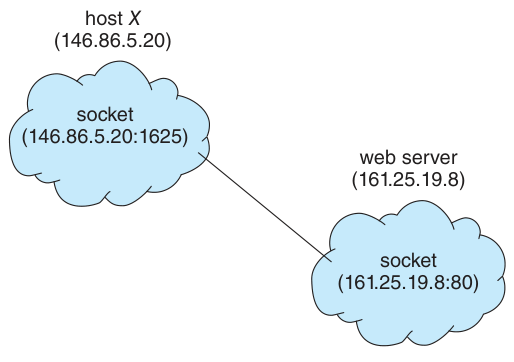
At the transport layer, TCP sockets are connection-oriented, UDP sockets are connectionless, and 127.0.0.1 denotes the local loopback address; importantly, raw sockets carry only an unstructured byte stream that applications must parse themselves.传输层中 TCP 套接字面向连接，UDP 套接字无连接，127.0.0.1 始终代表本机回环地址；需要留意的是，普通套接字只负责传递无结构的原始字节流，消息边界与格式须由应用层自行解析。
Remote procedure calls远程过程调用（RPC）
Core idea: RPC hides network messaging behind client and server stubs so calling a remote service feels like an ordinary local procedure call.核心思路：RPC 借助客户端与服务器端存根屏蔽网络细节与字节序差异，让跨机远程调用在写法上如同普通本地函数调用。
Built atop message passing, a remote procedure call (RPC)（远程过程调用）bridges machine differences in four steps:构建在消息传递之上的 RPC 按以下四步完成一次跨机调用：
- The client invokes its local stub（存根）just like an ordinary procedure.客户端像调普通函数一样调用本地存根。
- The client stub locates the server port and marshals（参数编组）parameters into a structured message.客户端存根定位服务器端口，并将参数编组为标准消息。
- The server stub receives the message, unmarshals the parameters, and calls the actual server procedure.服务器存根收信并解组参数，随即调用真正的服务端过程。
- The return value is marshaled back to the client along the reverse path.返回值沿原路编组回传，交还客户端调用方。
To prevent byte-order mismatches between heterogeneous CPUs, marshaling converts parameters into a machine-independent wire representation such as external data representation (XDR).为防止不同硬件平台字节序冲突，参数编组会将数据统一转为与机器无关的格式，如外部数据表示（XDR）。
Unlike local calls, RPC messages traverse unreliable networks that can lose or duplicate packets, giving rise to two standard execution semantics:与几乎不会中途丢包的本地调用不同，RPC 必须面对网络丢包与重传重复，因此定义了两种调用语义：
| Semantics调用语义 | Implementation实现机制 | Guarantee执行保证 |
|---|---|---|
| At most once至多一次 | Messages carry timestamps; the server tracks processed timestamps in a history table and drops duplicates消息附带时间戳，服务器记录已处理历史并丢弃重复请求 | Executed at most once—never twice, though a lost request may execute zero times绝不重复执行，但请求若半路丢失则可能一次都不执行 |
| Exactly once恰好一次 | At-most-once deduplication plus server ACKs; client resends periodically until an ACK arrives在“至多一次”基础上增加服务器 ACK，客户端超时重发直至收到确认 | Executed once and only once (provided failures eventually recover)保证请求不重不漏、恰好执行一次 |
To locate the target procedure's port, RPC uses either fixed binding (hard-coded at compile time) or dynamic binding, in which the client first queries a matchmaker daemon on a well-known port to obtain the procedure's current port before sending calls.为了获知目标过程的端口号，RPC 要么在编译期进行固定绑定，要么采用动态绑定——客户端先向固定端口上的 matchmaker 守护进程查询目标端口，再正式发起调用。
Practice练习
Q1. (Calculation) Host X (146.86.5.20) opens two simultaneous connections to web server 161.25.19.8 on port 80. (a) Give a valid socket pair for each connection. (b) Why must the client ports differ? (c) Using client ports 1025–65535, how many concurrent connections can X open to this single server socket?Q1.（计算）主机 X（146.86.5.20）同时向 Web 服务器 161.25.19.8:80 发起两条连接。（a）写出每条连接可能对应的套接字对。（b）为什么客户端端口必须不同？（c）若可用客户端端口为 1025–65535，X 最多能对该服务器套接字并发建立多少条连接？
Answer
- (a)
(146.86.5.20:1625, 161.25.19.8:80)and(146.86.5.20:1626, 161.25.19.8:80).（a）(146.86.5.20:1625, 161.25.19.8:80)与(146.86.5.20:1626, 161.25.19.8:80)。 - (b) Because a connection is identified by its socket pair, identical client ports would give both connections the exact same identifier and prevent demultiplexing packets to the right process.（b）连接由双方套接字对唯一标识，若客户端端口相同，两条连接将撞车，内核无法分拣数据包。
- (c) \(65535-1025+1=64{,}511\) concurrent connections.（c）\(65535-1025+1=64{,}511\) 条并发连接。
Q2. (Marshaling) A little-endian client sends the 32-bit integer 258 as raw bytes to a big-endian server. What value does the server read, and how does XDR prevent the error?Q2.（参数编组）小端序客户端把 32 位整数 258 以原始字节流发给大端序服务器。服务器会读出什么数值？XDR 如何消除该错误？
Answer
Since \(258=\text{0x00000102}\), the little-endian client sends bytes 02 01 00 00, which the big-endian server interprets as \(\text{0x02010000}=33{,}619{,}968\). With XDR, the client stub converts 258 into the big-endian wire format 00 00 01 02 before transmission, and the server stub decodes it into its native byte order, so both sides see 258.258 的十六进制为 0x00000102，小端主机发出字节 02 01 00 00，大端服务器会误读成 0x02010000（即 33,619,968）。使用 XDR 后，客户端存根先将数据编码为统一的大端传输格式 00 00 01 02，服务器存根再解码为本地端序，确保双方均得到 258。
Terms to recognize ★需要认识的术语
| Term术语 | Key takeaway核心释义 |
|---|---|
| Long-term, short-term, medium-term scheduler长期、短期、中期调度程序 | Long-term admits programs from disk; short-term (CPU scheduler) picks the next ready process; medium-term handles swapping. UNIX and Windows omit a long-term scheduler长期调度控制作业准入；短期调度挑选下一个就绪进程上 CPU；中期调度负责内存交换；UNIX 与 Windows 无长期调度 |
| Copy-on-write（写时复制） | Optimization where parent and child share read-only pages after fork() and duplicate a page only when either writes (Chapter 7)fork() 后父子先共享只读页，仅在一方写入时才真正复制该页（第 7 章） |
task_struct |
The Linux PCB structure; kernel pointer current references the actively running taskLinux 内核表示 PCB 的结构体，内核用 current 指针指向当前运行任务 |
| Mach portsMach 端口 | Bounded single-receiver mailboxes governed by send/receive port rights受发送/接收端口权限控制的有限容量单接收方邮箱 |
| ALPC | Windows local IPC: copies messages up to 256 bytes and uses a shared section object for larger payloadsWindows 本地高速 RPC：256 字节以内直接拷贝，更大载荷改用共享节对象 |
| Zombie, orphan僵尸进程、孤儿进程 | Zombie has exited and awaits wait(); orphan is a running child whose parent died first and is adopted by init/systemd (pid 1)僵尸进程已终止待父进程 wait()；孤儿进程因父先逝而被 PID 1 的 init/systemd 收养 |
| Cascading termination级联终止 | OS policy that terminates all descendants whenever a parent process exits不允许子进程比父进程存活更久时，父进程终止引发所有后代一并终止 |
| Rendezvous会合 | Blocking send paired with blocking receive (zero-capacity buffering)发送与接收同时阻塞的零缓冲同步通信 |
| Socket types套接字类型 | TCP is connection-oriented, UDP is connectionless, and multicast delivers to multiple recipientsTCP 面向连接，UDP 无连接，组播面向多个接收方 |
| Matchmaker匹配器（matchmaker） | RPC daemon on a fixed port that returns the dynamic port of a requested remote procedure监听固定端口的 RPC 守护进程，负责在动态绑定中查询并返回目标过程端口 |
Exam-style questions考试题型练习
Q1. (Processes and context switch, 10 marks)Q1.（进程与上下文切换，10 分）
- Define a process and explain how it differs from a program (2 marks).给出进程的定义，并说明其与程序的区别（2 分）。
- Name the five process states and give the label of every transition in the state diagram (3 marks).写出五种进程状态，并列出状态图中所有转换的标准标签（3 分）。
- Describe the kernel's actions during a context switch, explain why it is pure overhead, and list the factors determining its duration (5 marks).分步描述上下文切换中内核的操作，解释为何它属于纯开销，并列举影响其耗时的因素（5 分）。
Answer
(a) Process vs. program (2 marks): A process is a program in execution—an active entity with a program counter, CPU registers, a memory image (text, data, heap, stack), and OS resources. A program is a passive executable file on disk; loading it into memory creates a process, and one program can spawn multiple processes sharing text while keeping private data, heap, and stack.(a) 进程与程序（2 分）：进程是执行中的程序，是带有 PC、寄存器、内存映像（代码、数据、堆、栈）及系统资源的活动实体；程序则是磁盘上的静态文件。同一程序可启动多个进程，共享代码段但数据、堆、栈各自独立。
(b) States and transitions (3 marks): Five states: new, ready, running, waiting, terminated. Six transitions:(b) 状态与转换（3 分）：五种状态为新建、就绪、运行、等待、终止；六条转换分别为：
new → ready(admitted);ready → running(scheduler dispatch);running → ready(interrupt)new → ready（admitted）；ready → running（scheduler dispatch）；running → ready（interrupt）running → waiting(I/O or event wait);waiting → ready(I/O or event completion);running → terminated(exit)running → waiting（I/O or event wait）；waiting → ready（I/O or event completion）；running → terminated（exit）
(c) Context-switch steps, overhead, and duration factors (5 marks):(c) 上下文切换步骤、开销与耗时因素（5 分）：
- An interrupt or system call enters kernel mode.中断或系统调用触发切入内核态。
- The kernel saves the running process's context (registers, PC, state, memory info) into its PCB and places the PCB in the ready or wait queue.内核将当前进程的寄存器、PC、状态与内存信息存回 PCB，并放入就绪或等待队列。
- The scheduler selects the next process, and the kernel restores its saved context from its PCB and switches back to user mode.调度程序挑出下一进程，内核从其 PCB 装入现场并返回用户态恢复执行。
Because no user process advances during these steps, context-switch time is pure overhead. Its duration (typically microseconds) depends on memory speed, the number of registers copied, hardware support (bulk load/store instructions or multiple register sets), and OS complexity (e.g., address-space switching).切换期间没有任何用户进程向前推进，因此耗时纯属系统开销；其长短取决于内存速率、需拷贝的寄存器数量、硬件是否提供多组寄存器或批量存取指令，以及 OS 复杂程度。
Q2. (fork tracing, 10 marks) Consider the program below:Q2.（fork 追踪，10 分）阅读下列代码并回答：
int main() {
int x = 1;
pid_t pid = fork();
if (pid == 0) {
x = x + 1;
pid = fork();
if (pid == 0) x = x + 10;
printf("x=%d\n", x);
} else {
wait(NULL);
printf("x=%d\n", x);
}
return 0;
}
- How many processes exist, including the initial one? Draw the process tree (2 marks).共产生多少个进程（含初始进程）？画出进程树（2 分）。
- What value does each process print (2 marks)?每个进程分别输出什么（2 分）？
- Which output orderings are possible (3 marks)?各行输出可能有哪些合法顺序（3 分）？
- Can a zombie or an orphan occur during execution (3 marks)?执行过程中是否可能产生僵尸进程或孤儿进程（3 分）？
Answer
- 3 processes in a chain \(P_0 \to P_1 \to P_2\): \(P_0\) spawns \(P_1\) at the first
fork(); only \(P_1\) entersif (pid == 0)and executes the secondfork()to spawn \(P_2\).共 3 个进程，呈链式 \(P_0 \to P_1 \to P_2\)：\(P_0\) 第一次 fork 出 \(P_1\)，仅 \(P_1\) 进入if分支并第二次 fork 出 \(P_2\)。 - Printed values: Because
fork()duplicatesx, each process modifies only its own copy: \(P_0\) printsx=1; \(P_1\) setsx=2and printsx=2; \(P_2\) inheritsx=2from \(P_1\), adds 10, and printsx=12.各自输出：fork()复制变量副本，互不干扰——\(P_0\) 打印x=1，\(P_1\) 改为 2 后打印x=2，\(P_2\) 从 \(P_1\) 继承 2 再加 10 后打印x=12。 - Possible orderings: Because \(P_0\) calls
wait(NULL)before printing, \(P_1\) must print and exit before \(P_0\) prints, sox=2always precedesx=1. Meanwhile \(P_2\) runs unsynchronized and can print anywhere, yielding three legal orders:可能顺序：\(P_0\) 先调用wait(NULL)等待 \(P_1\) 结束才打印，故x=2必在x=1之前；\(P_2\) 无人等待，位置任意。合法输出共三种：x=12, x=2, x=1x=2, x=12, x=1x=2, x=1, x=12
- Zombies and orphans: \(P_0\) reaps \(P_1\) via
wait(), so \(P_1\) is never an orphan (only briefly a zombie before \(P_0\) collects it). However, \(P_1\) never callswait()for \(P_2\): if \(P_1\) exits first, \(P_2\) becomes an orphan adopted and reaped byinit/systemd; if \(P_2\) exits first, it lingers as a zombie until \(P_1\) terminates andinit/systemdadopts and reaps it.僵尸与孤儿情况：\(P_0\) 会用wait()回收 \(P_1\)，但 \(P_1\) 从未等待 \(P_2\)——若 \(P_1\) 先结束，\(P_2\) 成为孤儿进程并被init/systemd收养；若 \(P_2\) 先结束，它先变为僵尸进程，直至 \(P_1\) 退出后同样被init/systemd接管回收。
Q3. (Bounded buffer, 10 marks) A circular shared buffer has BUFFER_SIZE = 6 and starts empty. Trace: (1) producer adds 5 items; (2) consumer removes 2 items; (3) producer attempts to add 3 items; (4) consumer removes 3 items.Q3.（有界缓冲区，10 分）某循环共享缓冲区 BUFFER_SIZE = 6 且初始为空。依次发生：（1）生产 5 项；（2）消费 2 项；（3）尝试生产 3 项；（4）消费 3 项。
- Give
in,out, and the item count after each event, noting when the producer must wait (5 marks).给出每步之后的in、out及元素数，并指出生产者何时阻塞（5 分）。 - State the full and empty tests and explain why at most 5 items fit (2 marks).写出判空与判满条件，并解释为何最多只能存放 5 项（2 分）。
- Show how the producer and consumer simplify under blocking
send()andreceive(), and explain why no buffer code is needed (3 marks).改用阻塞型send()与receive()时代码如何改写？为何无需缓冲区逻辑（3 分）？
Answer
(a) Buffer trace (5 marks): Using \(\text{count}=(\text{in}-\text{out})\bmod 6\):(a) 状态演进表（5 分）：元素数始终为 \((\text{in}-\text{out})\bmod 6\)：
| After event事件后 | in | out | Items元素数 | Note说明 |
|---|---|---|---|---|
| (1) produce 5（1）生产 5 项 | 5 | 0 | 5 | Full: (5 + 1) % 6 = 0 = out已满：(5 + 1) % 6 = 0 = out |
| (2) consume 2（2）消费 2 项 | 5 | 2 | 3 | Slots 0 and 1 freed释放槽位 0 与 1 |
| (3) produce 3（3）尝试生产 3 项 | 1 | 2 | 5 | Only 2 items fit (slots 5 and 0); full again: (1 + 1) % 6 = 2 = out; the 3rd item blocks仅能写入 2 项（槽位 5、0），再次判满：(1 + 1) % 6 = 2 = out，第 3 项须等待 |
| (4) consume 3（4）消费 3 项 | 1 | 5 | 2 | Space opens up so the producer can resume腾出空间，生产者恢复运行 |
(b) Full/empty conditions & capacity \(N-1\) (2 marks): Empty is in == out; full is (in + 1) % BUFFER_SIZE == out. If all 6 slots were filled, a full buffer would also satisfy in == out, making full indistinguishable from empty using only in and out; sacrificing one slot limits capacity to \(6-1=5\).(b) 判空/判满与容量原因（2 分）：判空为 in == out，判满为 (in + 1) % BUFFER_SIZE == out。若允许填满 6 格，满状态也会令 in == out，导致空满无法分辨，故须留空一格，容量为 \(6-1=5\)。
(c) Rendezvous version (3 marks): Producer: while (true) { /* produce */ send(next_produced); }. Consumer: while (true) { receive(next_consumed); /* consume */ }. Because blocking send() and receive() synchronize directly (rendezvous), the OS manages all waiting and message handoff internally—no in, out, or full/empty checks are needed.(c) 阻塞消息版（3 分）：生产者仅循环 send(next_produced)，消费者仅循环 receive(next_consumed)。由于阻塞原语本身构成会合，操作系统在内核内包揽等待与交付，用户代码无需维护 in、out 或空满判断。
Q4. (IPC comparison and design, 10 marks)Q4.（IPC 对比与选型，10 分）
- Compare shared memory and message passing across speed, kernel involvement, synchronization, and typical use (4 marks).从速度、内核介入、同步及典型场景四方面比较共享内存与消息传递（4 分）。
- Select and justify an IPC mechanism for: (i) shell command
ls | less; (ii) two unrelated local processes repeatedly exchanging a 50 MB dataset; (iii) querying logged-in users on a remote server (3 marks).为以下场景选择合适 IPC 并说明理由：（i）shell 管道ls | less；（ii）本机两个无关进程反复交换 50 MB 数据集；（iii）向远端服务器查询登录用户列表（3 分）。 - Give one advantage and one disadvantage each for blocking send and fixed-size messages (3 marks).分别给出阻塞发送与定长消息的一条优点和一条缺点（3 分）。
Answer
- Comparison (4 marks): Shared memory needs the kernel only to attach the region; afterward accesses run at memory speed, but processes must synchronize themselves and it fits large local data. Message passing invokes a system call per message (slower), includes built-in synchronization, and suits smaller payloads and distributed hosts.对比（4 分）：共享内存仅建立映射时经过内核，后续访问快但须自行同步，适合单机大数据；消息传递每次收发都走系统调用、速度较慢，但内置同步且适合小消息与分布式环境。
- Mechanism selection (3 marks):
- (i) Ordinary pipe: Parent shell spawns related producer/consumer children, and the pipe automatically closes on exit.（i）普通管道：由 shell 创建的亲缘进程单向传流，用完自动销毁。
- (ii) POSIX shared memory: Unrelated processes can open it by name, and zero-copy access avoids repeatedly copying 50 MB across the kernel (with synchronization from Ch. 4).（ii）POSIX 共享内存：支持无关进程按名挂接，且无需每次搬运 50 MB 数据穿越内核（另配合第 4 章同步）。
- (iii) RPC (or TCP socket): Spans separate hosts over a network, with RPC providing structured request/reply semantics.（iii）RPC（或套接字）：支持跨主机网络通信，RPC 还能直接封装结构化请求与应答。
- Trade-offs (3 marks):
- Blocking send: Pro: sender knows the message arrived and avoids buffering complexity; Con: sender stalls idle while waiting.阻塞发送：优点：发送方确知对方已收信且省去缓冲管理；缺点：等待期间无法并行计算。
- Fixed-size messages: Pro: simple kernel buffer management (uniform slots); Con: awkward for programmers, who must split large payloads or waste space on short ones.定长消息：优点：系统缓冲分配极其简单；缺点：编程不便，大数据须拆包、小数据浪费空间。
Q5. (Sockets and RPC, 10 marks) A client on 146.86.5.20 invokes remote procedure X on server 161.25.19.8 without knowing X's port beforehand.Q5.（套接字与 RPC，10 分）主机 146.86.5.20 上的客户端欲调用服务器 161.25.19.8 上的远程过程 X，且事先不知 X 的端口号。
- Trace the messages and stub actions under dynamic port binding (4 marks).描述动态绑定下的消息流向及客户端/服务器端存根的作用（4 分）。
- If the server executes X and returns an ACK that is lost in transit, explain how exactly-once semantics still holds (3 marks).若服务器执行 X 后发回的 ACK 在网络中丢失，说明“恰好一次”语义如何依然成立（3 分）。
- Why are sockets considered low-level, and what abstractions does RPC add (3 marks)?为何说套接字较为底层？RPC 在此基础上增加了哪些抽象（3 分）？
Answer
- Dynamic-binding trace (4 marks):
- Client invokes its local stub for X.客户端调用本地的 X 存根。
- Client stub sends a lookup message to the server's well-known matchmaker daemon port, which replies with X's active port
P.存根先向服务器固定端口上的 matchmaker 守护进程发起查询，获知过程 X 的实际端口P。 - Client stub marshals parameters (e.g., via XDR) and sends the request from an ephemeral socket such as
146.86.5.20:1625to portP.客户端存根将参数编组（如 XDR 格式）后，从本地临时套接字发往服务器端口P。 - Server stub unmarshals parameters, executes X, marshals the result back to the client stub, and caches port
Pfor future calls.服务器存根解组参数并调用 X，将返回值编组回传，同时客户端后续调用可直连端口P。
- Lost ACK recovery (3 marks): Receiving no ACK before timeout, the client retransmits the call carrying the exact same timestamp. Seeing that timestamp already in its history table, the server skips re-executing X and simply resends the ACK until the client receives it—ensuring X ran exactly once.ACK 丢失恢复（3 分）：客户端超时未收到 ACK 后，会携带原时间戳重传同一请求；服务器在已处理历史中查到该时间戳，不再重复执行 X，仅补发 ACK 直至客户端收到，从而严格保证 X 恰好执行一次。
- Sockets vs. RPC (3 marks): Raw sockets deliver only an unstructured byte stream, leaving message framing, procedure IDs, endianness conversion, and failure retries to the developer. RPC adds structured procedure calls, transparent local stubs, machine-independent marshaling, port binding, and formal delivery semantics.套接字 vs. RPC（3 分）：套接字只提供无结构的原始字节流，消息边界、函数路由、字节序转换与容错重传全得手写；RPC 则封装了过程标识、本地存根透明调用、跨平台参数编组、端口绑定以及标准调用语义。
Textbook exercises课后习题
Textbook exercises with answers: 16 questions教材习题及答案（共 16 题，点击展开）
E1. (Practice Exercise 3.1) Using the program below, explain what the output will be at LINE A.E1. （练习题 3.1）阅读下面程序，解释 LINE A 处的输出结果。
#include <sys/types.h>
#include <stdio.h>
#include <unistd.h>
int value = 5;
int main()
{
pid_t pid;
pid = fork();
if (pid == 0) { /* child process */
value += 15;
return 0;
}
else if (pid > 0) { /* parent process */
wait(NULL);
printf("PARENT: value = %d", value); /* LINE A */
return 0;
}
}
Answer
The output at LINE A is PARENT: value = 5.LINE A 处的输出为 PARENT: value = 5。
Because fork() gives the child an independent copy of the parent's address space—including the global variable value—the child's value += 15 modifies only its private copy (to 20) before exiting. Once wait(NULL) returns, the parent prints its own untouched copy, which remains 5. Thus, parent and child do not share ordinary variables after fork() and must rely on IPC to exchange modified data.fork() 为子进程复制了一份独立的地址空间（包含全局变量 value），因此子进程的 value += 15 仅修改了自身副本（变成 20）便退出。父进程在 wait(NULL) 返回后打印的是自己从未改变的那份 value，结果仍为 5。可见父子进程不共享普通变量，跨进程传递数据须依赖 IPC。
E2. (Practice Exercise 3.2) Including the initial parent process, how many processes are created by the program below?E2. （练习题 3.2）包括初始父进程在内，以下程序共创建多少个进程？
#include <stdio.h>
#include <unistd.h>
int main()
{
/* fork a child process */
fork();
/* fork another child process */
fork();
/* and fork another */
fork();
return 0;
}
Answer
8 processes in total (the initial parent plus 7 new children). Because all three fork() calls are unconditional and each newly created child continues immediately after the fork() that spawned it, every existing process doubles at each call:共产生 8 个进程（初始父进程加 7 个新建子进程）。由于三次 fork() 均无任何条件过滤，且子进程均从当前 fork() 之后继续往下执行，每一级调用都会使存活进程数翻倍：
| After调用阶段 | Processes alive存活进程总数 | New in this call本轮新增 |
|---|---|---|
1st fork() |
2 | 1 |
2nd fork() |
4 | 2 |
3rd fork() |
8 | 4 |
In general, \(n\) unconditional consecutive fork() calls yield \(2^n\) processes (\(2^3=8\) here).一般地，\(n\) 次无条件连续 fork() 共产生 \(2^n\) 个进程（此处 \(2^3=8\)）。
E3. (Practice Exercise 3.3) Original versions of Apple's mobile iOS operating system provided no means of concurrent processing. Discuss three major complications that concurrent processing adds to an operating system.E3. （练习题 3.3）早期苹果移动系统 iOS 不支持多任务并发处理。讨论引入并发处理给操作系统带来的三大复杂挑战。
Answer
Supporting multiple concurrent processes forces an OS to handle three responsibilities absent in single-process systems:支持多进程并发后，操作系统必须额外解决单进程环境不存在的三类核心难题：
- CPU scheduling and context switching: The OS must track all PCBs across ready and wait queues, run a scheduling policy to decide who gets the CPU next, and perform context switches (pure overhead).CPU 调度与上下文切换：内核须维护全部进程的 PCB 与各类队列，设计调度算法决定谁占用 CPU，并承担纯开销性质的上下文切换。
- Interprocess communication and synchronization: Concurrent processes cooperate or share resources, requiring IPC mechanisms (shared memory / message passing) and synchronization tools to prevent race conditions and deadlocks.进程间通信与同步：协作进程须借助共享内存或消息传递交换数据，并需配套同步原语以防数据竞争与死锁。
- Memory management and protection: Multiple address spaces must coexist safely in limited RAM; the OS must allocate memory, enforce strict isolation, and throttle or terminate greedy processes on memory-constrained mobile devices.内存管理与隔离保护：多进程必须安全共存于有限物理内存中，内核既要防越界篡改，又要在资源紧张时限制甚至淘汰耗尽内存的进程。
E4. (Practice Exercise 3.4) Some computer systems provide multiple register sets. Describe what happens when a context switch occurs if the new context is already loaded into one of the register sets. What happens if the new context is in memory rather than in a register set and all the register sets are in use?E4. （练习题 3.4）某些计算机提供多组硬件寄存器。若新上下文已装入某组寄存器，切换时会发生什么？若新上下文尚在内存中且所有寄存器组均已被占满，又该如何处理？
Answer
- New context already in a register set: The OS simply updates process states/queues and redirects the CPU's current-register-set pointer to the set holding the incoming process; because no registers move across memory, the switch is nearly instantaneous.新上下文已在某组寄存器中：仅更新状态队列并将 CPU 的当前寄存器组指针指向目标组即可，全程无需访存拷贝，切换极快。
- New context in memory and all sets occupied: The OS selects a victim register set (e.g., via LRU), saves its registers back to the owner's PCB in memory, loads the incoming context from memory into that freed set, and points the current-set pointer to it—costing slightly more than a single-register-set switch due to victim selection.新上下文在内存中且寄存器组已满：必须先按替换策略（如 LRU）选出牺牲组，把其中寄存器保存回对应内存 PCB，再将新进程的现场从内存装入腾出的组并更新指针；此时耗时等价于普通切换外加选牺牲组的开销。
E5. (Practice Exercise 3.5) When a process creates a new process using the fork() operation, which of the following states is shared between the parent process and the child process? (a) Stack (b) Heap (c) Shared memory segmentsE5. （练习题 3.5）进程通过 fork() 创建子进程时，下列哪几项在父子进程之间共享？(a) 栈 (b) 堆 (c) 共享内存段
Answer
Only (c) Shared memory segments are shared.只有 (c) 共享内存段是共享的。
fork() duplicates the parent's private address space for the child, giving it separate logical copies of both the stack (a) and the heap (b); even when modern kernels defer physical copying via copy-on-write, any write by one process remains isolated from the other. By contrast, a shared-memory segment attached prior to fork() stays mapped to the same physical memory frames in both processes so writes remain mutually visible.fork() 会为子进程复制一份独立地址空间，因此栈（a）与堆（b）在逻辑上完全私有（即便内核采用写时复制延后拷贝，修改仍互不可见）。唯有在 fork() 前已挂接的共享内存段在父子进程中仍指向同一批物理页帧，因而保持共享。
E6. (Practice Exercise 3.6) Consider the "exactly once" semantic with respect to the RPC mechanism. Does the algorithm for implementing this semantic execute correctly even if the ACK message sent back to the client is lost due to a network problem? Describe the sequence of messages, and discuss whether "exactly once" is still preserved.E6. （练习题 3.6）考察 RPC 的“恰好一次”语义：若服务器发回客户端的 ACK 因网络故障丢失，该算法是否仍能正确保持“恰好一次”语义？请写出消息交互序列并分析原因。
Answer
Yes, the algorithm remains correct and still preserves exactly-once execution.依然成立，该算法能准确维持“恰好一次”语义。
The protocol combines two safeguards: unique timestamps tracked in a server history table guarantee at-most-once execution (suppressing duplicates), while client timeouts and retries until an ACK arrives guarantee at-least-once execution. When an ACK is lost, the message sequence unfolds as follows:该算法由两部分构成：请求时间戳配合服务器端历史表确保“至多一次”（去重），客户端超时重传直至收到 ACK 确保“至少一次”。ACK 丢失时的消息序列如下：
1. Client -> Server : RPC(t1, args) client starts a timeout clock
2. Server : t1 not in history -> executes the procedure ONCE, records t1
3. Server -> Client : ACK(t1) lost in the network
4. Client : timeout, no ACK received -> resends
5. Client -> Server : RPC(t1, args) retransmission with the SAME timestamp t1
6. Server : t1 is in history -> duplicate, NOT executed again
7. Server -> Client : ACK(t1) sent again
8. Client : ACK received -> stops resending
Two conditions are vital: the retry must carry the same timestamp t1 so the server recognizes the duplicate, and the server must reply to a recognized duplicate with a fresh ACK so the client stops retransmitting.有两点最为关键：重发包必须保留相同的时间戳 t1 以供服务器识别去重；且服务器识别出重复请求后必须重新补发 ACK，否则客户端会无限重传。
E7. (Practice Exercise 3.7) Assume that a distributed system is susceptible to server failure. What mechanisms would be required to guarantee the "exactly once" semantic for execution of RPCs?E7. （练习题 3.7）假设分布式系统中的服务器可能发生宕机崩溃，还需引入哪些机制才能在服务器故障恢复后依然保证 RPC 的“恰好一次”语义？
Answer
If a server crashes and reboots, an in-memory timestamp history is lost, risking re-execution of retried requests. Guaranteeing exactly-once across server crashes requires four mechanisms:服务器一旦崩溃重启，纯内存里的历史表就会清空，导致客户端重发请求被当成新请求再次执行。跨故障维持“恰好一次”须依赖四项机制：
- Unique request IDs & client retries: Clients tag every request with a unique timestamp/sequence number and keep retransmitting across outages until an ACK arrives.唯一请求号与客户端重传：请求携带唯一标识，并在服务器恢复前持续重发直至收到 ACK。
- Non-volatile stable log: The server records received request IDs, completion status, and cached results in stable disk storage rather than RAM alone.稳定存储日志：服务器将已处理的请求号、完成标志与返回结果写入持久化磁盘日志。
- Atomic execution and logging: Applying side effects and flushing the log entry must occur atomically (via write-ahead logging, transactions, or idempotent operations) before returning the ACK, preventing a crash window between execution and logging.执行与记日志原子化：业务变更与日志落盘必须绑定为原子操作（如 WAL 预写日志、事务或幂等设计），且须先落盘再发 ACK，避免执行完却没记日志就宕机。
- Crash recovery lookup: After restarting, the server rebuilds its table from the log; if a retried request ID is already logged as complete, it skips execution and returns the cached result and ACK.重启日志恢复：服务器重启后读取日志恢复历史记录，遇到已执行过的重传请求直接回传缓存结果与 ACK。
E8. (Exercise 3.8) Describe the actions taken by a kernel to context-switch between processes.E8. （习题 3.8）详细描述内核在两个进程之间执行上下文切换的完整动作。
Answer
Switching the CPU from running process \(P_0\) to \(P_1\) follows eight kernel actions:将 CPU 从正在运行的 \(P_0\) 切换给 \(P_1\) 共经历八个步骤：
- Enter kernel mode: An interrupt or system call traps into the kernel, saving the hardware PC.切入内核态：中断或系统调用将控制权交给内核。
- Save \(P_0\)'s context: Store \(P_0\)'s PC, CPU registers (stack pointer, status flags, general registers), and memory-management info into \(\text{PCB}_0\).保存旧现场：把 \(P_0\) 的 PC、CPU 寄存器与内存管理信息存入 \(\text{PCB}_0\)。
- Update \(P_0\)'s state and queues: Change state to ready (if preempted) or waiting (if blocked), update accounting info, and insert \(\text{PCB}_0\) into the matching queue.更新旧进程队列：更新状态（就绪或等待）与记账数据，将 \(\text{PCB}_0\) 挂入相应队列。
- Select \(P_1\): Run the CPU scheduler to pick the next ready process \(P_1\).调度新进程：调度程序从就绪队列挑出 \(P_1\)。
- Update \(P_1\)'s state: Remove \(\text{PCB}_1\) from the ready queue and mark it running.更新新进程状态：将 \(\text{PCB}_1\) 移出就绪队列并置为运行态。
- Switch address space: Load \(P_1\)'s page-table base register (flushing or ASID-tagging the TLB).切换地址空间：装载 \(P_1\) 的页表基址并刷新或按 ASID 区分 TLB。
- Restore \(P_1\)'s context: Reload registers and PC from \(\text{PCB}_1\).恢复新现场：从 \(\text{PCB}_1\) 读出寄存器与 PC。
- Return to user mode: Return from interrupt so \(P_1\) resumes seamlessly.返回用户态：中断返回，\(P_1\) 从上次断点继续执行。
E9. (Exercise 3.10) Explain the role of the init (or systemd) process on UNIX and Linux systems in regard to process termination.E9. （习题 3.10）解释 UNIX 和 Linux 系统中 init（或 systemd）进程在进程终止回收中的作用。
Answer
When a child terminates, the OS releases its memory and open files but retains its process-table entry (storing its exit status) as a zombie until its parent calls wait(). If the parent itself exits without waiting, its surviving children become orphans whose exit statuses nobody would otherwise reap.子进程退出后虽然释放了内存和文件，但内核会保留其进程表项（含退出码）作为僵尸进程等待父进程调用 wait() 回收；若父进程先行退出，留下的子进程就变成无人收尾的孤儿进程。
UNIX and Linux prevent orphaned process entries from leaking permanently by assigning init (or systemd, pid 1)—the root of the user process tree—as the new parent of every orphan, including any already in zombie state. Because init/systemd periodically calls wait(), every adopted child's exit status is collected promptly upon termination and its PID and table entry are freed.为此，UNIX/Linux 会将所有孤儿进程（包含尚未被父进程 wait() 的孤儿僵尸）统统过继给进程树之根 init/systemd（PID 1）。该根进程会周期性执行 wait()，从而确保所有孤儿在结束后都能被及时收尸、释放 PID 与进程表项。
E10. (Exercise 3.11) Including the initial parent process, how many processes are created by the program below?E10. （习题 3.11）包含初始父进程在内，以下程序共创建多少个进程？
#include <stdio.h>
#include <unistd.h>
int main()
{
int i;
for (i = 0; i < 4; i++)
fork();
return 0;
}
Answer
16 processes in total (the initial parent plus 15 new children). Each child inherits the loop counter i and continues from the next iteration, so every surviving process executes fork() at each step, doubling the count four times:共产生 16 个进程（初始父进程加 15 个新建子进程）。由于每个子进程都会继承当前循环变量 i 并继续下一轮迭代，每轮循环存活进程数均翻倍：
| Iteration循环轮次 | Before本轮前 | After本轮后 | New新增 |
|---|---|---|---|
| \(i=0\) | 1 | 2 | 1 |
| \(i=1\) | 2 | 4 | 2 |
| \(i=2\) | 4 | 8 | 4 |
| \(i=3\) | 8 | 16 | 8 |
Generally, an unconditional loop of \(n\) fork() iterations generates \(2^n\) processes (\(2^4=16\)).一般地，无条件循环 \(n\) 轮共产生 \(2^n\) 个进程（\(2^4=16\)）。
E11. (Exercise 3.12) Explain the circumstances under which the line of code marked printf("LINE J") in the program below will be reached.E11. （习题 3.12）说明下方程序中标记为 printf("LINE J") 的代码行在什么情况下才会被执行。
#include <sys/types.h>
#include <stdio.h>
#include <unistd.h>
int main()
{
pid_t pid;
/* fork a child process */
pid = fork();
if (pid < 0) { /* error occurred */
fprintf(stderr, "Fork Failed");
return 1;
}
else if (pid == 0) { /* child process */
execlp("/bin/ls", "ls", NULL);
printf("LINE J");
}
else { /* parent process */
/* parent will wait for the child to complete */
wait(NULL);
printf("Child Complete");
}
return 0;
}
Answer
printf("LINE J") is reached only if execlp() fails in the child process.只有在子进程中调用 execlp() 失败时，才会执行到 printf("LINE J")。
- When
execlp()succeeds: It replaces the child's entire address space (code, data, heap, stack) with/bin/ls, erasing the original program includingprintf("LINE J"); thus, a successfulexec()never returns.若execlp()成功：新程序/bin/ls会彻底覆盖子进程原有的代码段与数据段，printf("LINE J")不复存在，因此永远不会返回到该行。 - When
execlp()fails: It returns-1(e.g., if/bin/lsis missing, lacks execute permission, or memory is insufficient), leaving the child's original code intact so execution falls through toLINE J. Neither the parent branch (pid > 0) nor a failed fork (pid < 0) can reach that line.若execlp()失败：返回-1（例如可执行文件不存在、无权限或内存不足），子进程原代码保留，执行流顺延进入LINE J；父进程或fork()失败分支均不经过此处。
E12. (Exercise 3.13) Using the program below, identify the values of pid at lines A, B, C, and D. (Assume that the actual pids of the parent and child are 2600 and 2603, respectively.)E12. （习题 3.13）阅读下方程序，给出 A、B、C、D 四处打印的值（设父进程 PID 为 2600、子进程 PID 为 2603）。
#include <sys/types.h>
#include <stdio.h>
#include <unistd.h>
int main()
{
pid_t pid, pid1;
/* fork a child process */
pid = fork();
if (pid < 0) { /* error occurred */
fprintf(stderr, "Fork Failed");
return 1;
}
else if (pid == 0) { /* child process */
pid1 = getpid();
printf("child: pid = %d", pid); /* A */
printf("child: pid1 = %d", pid1); /* B */
}
else { /* parent process */
pid1 = getpid();
printf("parent: pid = %d", pid); /* C */
printf("parent: pid1 = %d", pid1); /* D */
wait(NULL);
}
return 0;
}
Answer
Recall that fork() returns 0 to the child and the child's PID to the parent, while getpid() always returns the calling process's own PID:牢记 fork() 在子进程返回 0、在父进程返回子进程 PID，而 getpid() 始终返回调用者自身的 PID：
| Line行标 | Process进程 | Expression打印变量含义 | Value输出值 |
|---|---|---|---|
| A | child子进程 | pid (return value of fork())pid（fork() 返回值） |
0 |
| B | child子进程 | pid1 (child's own getpid())pid1（子进程自身 PID） |
2603 |
| C | parent父进程 | pid (return value of fork())pid（fork() 返回值） |
2603 |
| D | parent父进程 | pid1 (parent's own getpid())pid1（父进程自身 PID） |
2600 |
Note that because the parent calls wait(NULL) after its two printf statements, the interleaving between parent and child output lines is unspecified.注意父进程是在打印完毕之后才调用 wait(NULL)，因此父子进程输出行的交错顺序不固定。
E13. (Exercise 3.14) Give an example of a situation in which ordinary pipes are more suitable than named pipes and an example of a situation in which named pipes are more suitable than ordinary pipes.E13. （习题 3.14）分别举例说明普通管道比命名管道更合适的场景，以及命名管道比普通管道更合适的场景。
Answer
An ordinary pipe is an unnamed, temporary, one-way channel restricted to processes with a parent–child relationship, whereas a named pipe (FIFO) exposes a filesystem name so unrelated processes can share it persistently.普通管道无名、临时且仅限具有亲缘关系的进程；命名管道（FIFO）拥有文件系统名字，可供无关进程持久共用。
- Ordinary pipe is better: A shell pipeline like
ls | wc -l. The shell spawns both children and connects them privately; no external file needs naming or cleanup, and the pipe vanishes automatically once both exit.普通管道更合适：如命令行ls | wc -l。父进程 shell 创建并连接两个子进程，通道私有、免命名、随进程退出自动销毁，干净无残留。 - Named pipe is better: A centralized logging service where independent client programs started at different times open a well-known FIFO path to submit log entries to a daemon—impossible with ordinary pipes because clients share no common ancestor and the channel must outlive individual clients.命名管道更合适：系统日志服务。守护进程读取固定路径的 FIFO，不同时间启动的无关客户端程序均可打开同一命名管道写入日志，通道寿命远超单个客户端。
E14. (Exercise 3.15) Consider the RPC mechanism. Describe the undesirable consequences that could arise from not enforcing either the "at most once" or "exactly once" semantic. Describe possible uses for a mechanism that has neither of these guarantees.E14. （习题 3.15）针对 RPC 机制，说明若既不保证“至多一次”也不保证“恰好一次”会产生哪些不良后果；并举例说明没有这两项保证的机制适用于哪些场景。
Answer
Because networks can drop or duplicate packets, an unguarded RPC may execute zero times or multiple times:网络可能丢包或重复投递，缺乏语义保证时远程过程可能一次都没执行，也可能被执行多次：
- Consequences without guarantees:
- Lost execution (no at-least-once retry): A client assumes an order or bank deposit succeeded when the packet was silently dropped.静默漏执行：请求包丢失而客户端未重传，导致订单或转账悄无声息地失效。
- Duplicate execution (no at-most-once deduplication): Retrying after a lost reply causes non-idempotent operations to run twice—debiting an account twice, double-ordering items, or corrupting counters—leaving client and server state inconsistent.重复执行：应答丢失触发重传，服务器不去重导致账户被扣款两次、数据重复追加，引发状态严重不一致。
- Suitable uses without guarantees: Cheap, fast idempotent or read-only operations where missing or repeated execution causes no harm—such as querying current server time, looking up a DNS record, reading a fixed file block, setting a variable to an absolute value, or streaming periodic sensor readings where fresh updates supersede missed ones.适用场景：适合幂等或只读操作——例如查询服务器当前时间、DNS 解析、按绝对偏移读取只读文件块、把变量设成绝对值，或周期性传感器上报（新数据直接覆盖旧数据），可省去时间戳历史表与 ACK 日志开销。
E15. (Exercise 3.16) Using the program below, explain what the output will be at lines X and Y.E15. （习题 3.16）阅读下面程序，解释 LINE X 与 LINE Y 处的输出结果。
#include <sys/types.h>
#include <stdio.h>
#include <unistd.h>
#define SIZE 5
int nums[SIZE] = {0, 1, 2, 3, 4};
int main()
{
int i;
pid_t pid;
pid = fork();
if (pid == 0) {
for (i = 0; i < SIZE; i++) {
nums[i] *= -i;
printf("CHILD: %d ", nums[i]); /* LINE X */
}
}
else if (pid > 0) {
wait(NULL);
for (i = 0; i < SIZE; i++)
printf("PARENT: %d ", nums[i]); /* LINE Y */
}
return 0;
}
Answer
- LINE X (child):
CHILD: 0 CHILD: -1 CHILD: -4 CHILD: -9 CHILD: -16LINE X（子进程）：CHILD: 0 CHILD: -1 CHILD: -4 CHILD: -9 CHILD: -16 - LINE Y (parent):
PARENT: 0 PARENT: 1 PARENT: 2 PARENT: 3 PARENT: 4LINE Y（父进程）：PARENT: 0 PARENT: 1 PARENT: 2 PARENT: 3 PARENT: 4
After fork(), the child gets its own copy of global array nums, updates each element to \(-i^2\), and prints its results first. Because the parent blocks on wait(NULL) until the child finishes and then prints its own unmodified array on the same line (no \n is printed), the full output is: CHILD: 0 CHILD: -1 CHILD: -4 CHILD: -9 CHILD: -16 PARENT: 0 PARENT: 1 PARENT: 2 PARENT: 3 PARENT: 4.fork() 后子进程拥有全局数组 nums 的独立副本，将各元素改为 \(-i^2\) 并率先输出。父进程因调用 wait(NULL) 等到子进程退出后才打印自己未受影响的数组；因代码未输出换行符，最终结果全部连在同一行：CHILD: 0 CHILD: -1 CHILD: -4 CHILD: -9 CHILD: -16 PARENT: 0 PARENT: 1 PARENT: 2 PARENT: 3 PARENT: 4。
E16. (Exercise 3.17) What are the benefits and the disadvantages of each of the following? Consider both the system level and the programmer level. (a) Synchronous and asynchronous communication (b) Automatic and explicit buffering (c) Send by copy and send by reference (d) Fixed-sized and variable-sized messagesE16. （习题 3.17）从系统实现层与程序员编程层两个视角，对比以下四组设计抉择的优缺点：(a) 同步与异步通信 (b) 自动与显式缓冲 (c) 值传递（复制发送）与引用发送 (d) 定长与变长消息
Answer
| Choice设计抉择 | Benefits优点 | Disadvantages缺点 |
|---|---|---|
| (a) Synchronous (blocking)(a) 同步（阻塞） | System: Needs no buffering queue, simplifying kernel code. Programmer: Easy to reason about—return from send guarantees delivery and rendezvous.系统：省去内核缓冲队列，实现极简。程序员：逻辑清晰，send 返回即代表已送达，天然实现同步会合。 |
Communication and computation cannot overlap, reducing concurrency; an unresponsive partner can block the caller indefinitely (deadlock risk).计算与通信无法重叠，并发度低；对方挂起或迟迟不收信会引发阻塞甚至死锁。 |
| (a) Asynchronous (nonblocking)(a) 异步（非阻塞） | Sender and receiver continue immediately, overlapping computation with communication for higher throughput.收发双方立即继续执行，计算与通信充分重叠，吞吐量更高。 | System: Requires queue memory and overflow handling. Programmer: Must check completion via polling or explicit ACKs, complicating debugging.系统：须维护消息队列并处理溢出。程序员：须靠轮询或额外 ACK 确认送达，编写与调试复杂。 |
| (b) Automatic buffering(b) 自动缓冲 | Programmer: No buffer sizing, allocation, or freeing; sender rarely stalls because the OS supplies the queue.程序员：免去缓冲分配与回收负担，发送方很少阻塞。 | System: Must manage dynamic queues (risking memory waste/exhaustion) and pay extra kernel copies. Programmer: No control over queue capacity.系统：须承担队列内存管理与额外拷贝开销，无界时还可能耗尽内存；程序员：无法掌控缓冲区上限。 |
| (b) Explicit buffering(b) 显式缓冲 | Programmer: Controls exact buffer size and placement, keeping memory bounded, predictable, and copy-free.程序员：自主决定容量与内存位置，占用可预测且可减少额外拷贝。 | Programmer: Must allocate, size, and free buffers safely (risking overflows/leaks) and handle full-buffer failures. System: Less flexible.程序员：须亲自申请释放并防范溢出或内存泄漏；系统：灵活性降低。 |
| (c) Send by copy(c) 复制发送 | Strong protection (receiver cannot corrupt sender's memory), works across address spaces and networks, and sender can reuse its buffer immediately.隔离性好（接收方改不坏发送方数据），可跨地址空间与网络工作，发送方调用后即可复用本地缓冲。 | Copying large messages consumes CPU time and RAM (often two copies: user → kernel → user).大消息拷贝消耗 CPU 与内存（常需用户→内核→用户两次搬运）。 |
| (c) Send by reference(c) 引用发送 | Passes only a pointer—fast with zero bulk copy, and allows in-place updates.仅传指针，零大数据拷贝、速度快且支持原地更新。 | Requires shared memory; creates race and corruption hazards, forcing synchronization and preventing the sender from freeing/modifying data until the receiver finishes.必须处于同一共享内存；易发生竞争与越界破坏，须加同步并锁定原数据直至对方读完。 |
| (d) Fixed-sized messages(d) 定长消息 | System: Trivial fixed-slot buffer allocation and capacity accounting.系统：固定槽位管理极为简单，容量精确可算。 | Programmer: Must manually split/reassemble large payloads while small messages waste padding space.程序员：长消息须手工拆包重组，短消息则浪费槽位空间。 |
| (d) Variable-sized messages(d) 变长消息 | Programmer: Convenient—any payload ships in a single call without splitting or padding.程序员：极为便捷，任意长度数据一次发完，无需拆包或填充。 | System: Complex dynamic buffer allocation, length tracking, and memory fragmentation; buffer message capacity is unpredictable.系统：须处理动态分配、长度头与内存碎片，无法预知缓冲区能存几条消息。 |
Every pair represents a trade-off between kernel simplicity/safety and programmer convenience/efficiency, which is why modern OS IPC suites often provide both variants.每一组都是“系统实现简单安全”与“程序员便捷高效”之间的工程权衡，因此现代操作系统往往同时提供多种接口按需选用。
Chapter 2Threads and Concurrency线程与并发Reading: Silberschatz Ch. 4
Threads and their benefits ★★★线程及其优点
Goal. Define a thread, distinguish shared vs. private per-thread state, explain the four key benefits of multithreading, and compare processes with threads.目标。说明线程的定义，分清线程与所属进程之间的共享与私有状态，阐述多线程的四大优点，并对比进程与线程。
Step 1: what a thread is第 1 步：线程的本质与状态划分
Core idea: a thread is a lightweight unit of execution inside a process—it keeps only the private context needed to run independently while sharing memory and OS resources with its sibling threads.核心思路：线程是进程内轻量的执行单元——它只保留独立运行所需的私有上下文，其余内存与系统资源均与同进程内的兄弟线程共享。
Formally, a thread is the basic unit of CPU utilization. To step through instructions independently, each thread maintains its own thread ID, program counter (PC), register set, and call stack (holding local variables, function parameters, and return addresses). Everything owned by the enclosing process—its code section, data section (global/static variables and heap), and OS resources such as open files and signals—is shared across all sibling threads.从定义上讲，线程是 CPU 调度的基本单位。为了能够独立推进指令，每个线程各自维护线程 ID、程序计数器（PC）、一组寄存器以及调用栈（保存局部变量、函数参数与返回地址）。而所属进程的代码段、数据段（全局/静态变量与堆）以及打开文件、信号等操作系统资源，则由同进程内的所有线程共同共享。

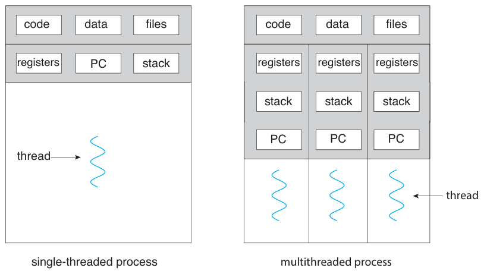
| Private to each thread每个线程私有 | Shared by all threads of the process同进程内所有线程共享 |
|---|---|
| Thread ID, program counter (PC), register set线程 ID、程序计数器（PC）、寄存器组 | Code (text) section代码（正文）段 |
| Call stack (local variables, parameters, return addresses)调用栈（局部变量、参数、返回地址） | Data section (global/static variables) and heap数据段（全局与静态变量）及堆 |
| Signal mask, scheduling state, thread-local storage (TLS)信号掩码、调度状态、线程局部存储（TLS） | Open files, signal handlers, working directory, process credentials打开文件列表、信号处理函数、工作目录、进程权限凭证 |
As seen in Chapter 1, the PCB tracks resources for the entire process. Suppose two threads in the same process call the same helper function concurrently: each invocation pushes its own local variables onto its private stack, whereas any read or write to a global counter touches the exact same memory location.结合第 1 章的进程概念可以看出，PCB 管的是整座“进程房子”的资源，而线程只携带运行现场。举个直观例子：同一进程的两个线程同时调用同一个辅助函数时，各自的函数参数和局部变量压在自己的私有栈上互不干扰；但若两者读写同一个全局变量，操作的则是同一块共享内存。
Step 2: why use threads?第 2 步：为什么要使用多线程？
Core idea: multithreading keeps applications responsive, avoids IPC setup overhead, slashes creation and switching costs, and unlocks multiple CPU cores.核心思路：多线程既能让程序在耗时操作期间保持响应，又免去了进程间通信开销，还能大幅降低创建与切换成本并发挥多核性能。
Consider a busy network server handling thousands of incoming requests. Spawning a separate process for every client wastes memory and time duplicating address spaces and page tables; instead, a multithreaded server keeps one listener thread accepting connections and hands each request to a worker thread inside the same process. This design delivers four textbook benefits:以高并发网络服务器为例：如果每来一个客户端请求就创建一个新进程，重复分配地址空间与页表的开销会非常可观；而多线程服务器只需让主线程专心监听连接，每接入一个请求就交由同进程内的工作线程处理。这种模型带来了四大核心优势：
| Benefit优点 | Explanation核心机制与意义 |
|---|---|
| Responsiveness响应性 | An application can remain interactive even when part of it blocks on I/O or runs a heavy computation—for instance, keeping the UI thread responsive while a background thread downloads data.当程序的一部分因 I/O 阻塞或执行重计算时，其余部分仍能继续推进；例如后台线程下载数据时，界面线程依然响应操作。 |
| Resource sharing资源共享 | Unlike separate processes that require explicit IPC mechanisms (shared memory or message passing, Chapter 1), threads share their parent process's code and memory automatically.独立进程之间通信必须显式建立共享内存或消息传递（第 1 章），而同进程线程默认共享代码与数据内存，协作零配置。 |
| Economy经济性 | Creating a thread needs only a new stack and register context rather than a full address space, making thread creation and intra-process context switching far cheaper in both time and memory.创建线程只需分配栈与寄存器上下文，无需重建整套地址空间；因此创建线程及同进程内线程切换的时间和内存开销都远低于进程。 |
| Scalability可扩展性 | On multiprocessor systems, threads of the same process can run truly in parallel on separate cores, whereas a single-threaded process can exploit at most one core regardless of hardware.在多核处理器上，同一进程的多个线程可以同时调度到不同核心上真正并行；而单线程进程无论硬件有几个核心，一次最多只能用到一个。 |
Step 3: process versus thread第 3 步：进程与线程的全面对比
While sharing makes thread communication effortless, it eliminates hardware memory protection between sibling threads—this trade-off determines whether a system isolates components in processes or groups them as threads.共享虽然让线程间配合极其轻量，但也同时去掉了彼此之间的内存硬件隔离——这一“效率与隔离”的权衡，正是系统决定用多进程还是多线程的关键依据。
| Dimension对比维度 | Process进程 | Thread线程 |
|---|---|---|
| Address space地址空间 | Private, isolated virtual address space各自独立，受硬件隔离 | Shared across all threads in the same process同一进程内所有线程共享 |
| Creation & switching创建与切换 | Expensive (new page tables, PCB, TLB flush on switch)开销大（需建页表、PCB，切换常伴随 TLB 刷新） | Cheap (shared page tables; only registers, PC, and stack pointer switch)开销小（页表不变，仅保存恢复寄存器、PC 与栈指针） |
| Communication通信方式 | Explicit OS-mediated IPC (shared memory or message passing)需显式通过 OS 的 IPC（共享内存或消息传递） | Direct access to shared variables (requires synchronization, Ch. 4)直接读写共享变量（需同步防竞争，第 4 章） |
| Fault isolation故障隔离 | Strong: a crash stays contained within that process强：单个进程崩溃不会波及其他进程 | None: one buggy thread can corrupt shared memory or abort the whole process无：任一线程越界写坏堆数据或触发致命异常，都会拖垮整个进程 |
Practice练习
Q1. (Classification) Which of the following components are shared across threads of the same process: (a) register values, (b) heap memory, (c) global variables, (d) stack memory, (e) open files?Q1.（分类）在同一进程的多个线程之间，下列哪些组成部分是共享的？（a）寄存器值，（b）堆内存，（c）全局变量，（d）栈内存，（e）打开的文件？
Answer
- Shared: (b) heap memory, (c) global variables, and (e) open files—these belong to the process's shared address space and OS resource table.共享：（b）堆内存、（c）全局变量和（e）打开的文件——它们属于整个进程的地址空间与操作系统资源表。
- Private: (a) register values (saved/restored on every thread switch) and (d) stack memory (each thread tracks its own call chain and local variables). Note that although all stacks live within the same virtual address space, each thread is assigned and executes on its own stack.私有：（a）寄存器值（每次切换都要独立保存和恢复）与（d）栈内存（各自保存调用链与局部变量）。虽然各线程的栈位于同一个虚拟地址空间中，但运行时各用各的栈区域。
Q2. (Explain why) Google Chrome opens each tab in a separate process. Would creating a thread per tab achieve the same benefits?Q2.（原因解释）Google Chrome 为每个标签页开启独立进程。如果改成每个标签页一个线程，能获得同样好处吗？
Answer
No. Chrome uses one process per tab primarily for process isolation (fault containment and security):不能。Chrome 采用“一页一进程”的核心目的是进程隔离（兼顾故障控制与安全）：
- Fault and security isolation: Each process has a separate address space, so a crashing renderer or malicious web page in one tab cannot corrupt or inspect the memory of other tabs or take down the whole browser.故障与安全隔离：每个进程拥有独立地址空间，某标签页渲染崩溃或遭遇恶意页面攻击时，既不会读写其他标签页内存，也不会拖垮整个浏览器。
- Resource reclamation: Closing a tab terminates its process, letting the OS reclaim all allocated memory immediately.资源彻底回收：关闭标签页即终止对应进程，操作系统可以立即彻底回收其全部内存。
Switching to threads would reduce creation and memory overhead and allow faster data sharing, but it would sacrifice those exact reliability and security guarantees.改用线程确实能省下部分内存和创建开销，却会彻底丧失上述可靠性与安全性保障。
Multicore programming and Amdahl's law ★★★多核编程与 Amdahl 定律
Goal. Distinguish concurrency from parallelism and data parallelism from task parallelism, compute speedup and efficiency using Amdahl's law, and identify the serial-fraction bottleneck.目标。区分并发与并行、数据并行与任务并行；运用 Amdahl 定律计算加速比、极限上限与并行效率，并认清串行瓶颈。
Step 1: concurrency and parallelism第 1 步：并发与并行
Core idea: concurrency means multiple tasks make progress over an overlapping time span (possible via interleaving on one core), whereas parallelism means multiple tasks literally execute at the exact same instant (requiring multiple cores).核心思路：并发指多个任务在同一时间段内交替推进（单核即可实现），而并行指多个任务在同一瞬间同时执行（必须依赖多核）。
- Concurrency（并发）: a system supports multiple tasks by allowing all of them to make progress.并发：系统通过调度切换让多个任务都能向前推进。
- Parallelism（并行）: a system physically performs more than one task simultaneously.并行：系统在同一物理时刻同时执行多个任务。

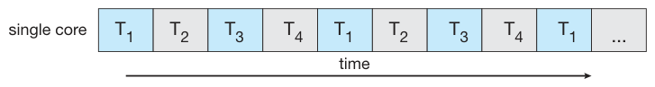
On a single-core CPU, the scheduler time-slices threads so quickly that they appear simultaneous—this is concurrency without parallelism. Only with multiple cores can threads run at the same instant, meaning parallelism always implies concurrency, while concurrency does not imply parallelism.在单核 CPU 上，调度器快速轮流切换线程时间片，让多个任务宏观上都在推进——这就是有并发而无并行。只有具备多个核心时，线程才能在同一个瞬间同步执行；因此并行必然蕴含并发，但并发并不一定代表并行。
Step 2: data parallelism and task parallelism第 2 步：数据并行与任务并行
Core idea: data parallelism runs the same operation on different slices of a dataset, whereas task parallelism runs different operations across threads (often on the same or different data).核心思路：数据并行是“不同数据片做同一件事”，任务并行是“不同线程做不同的事”。
Data parallelism（数据并行）partitions a dataset across multiple cores and applies the same operation to each subset—for instance, summing an \(N\)-element array by having thread A sum the first half while thread B sums the second half. By contrast, task parallelism（任务并行）assigns distinct operations to different threads—such as one thread computing the minimum and another computing the mean of the array. Real-world applications often combine both patterns.数据并行把同一份数据拆分给各个核心，并对每个子集执行相同的操作——例如对长度为 \(N\) 的数组求和时，线程 A 算前半段、线程 B 算后半段。相反，任务并行为不同线程分配各自独特的操作——例如一个线程从数组求最小值，另一个线程求平均值。实际大型程序常常同时混合这两种模式。

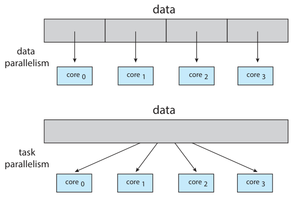
Turning a serial program into an efficient multicore program introduces five classic programming challenges:将程序改造成高效的多核并行程序时，开发者需要解决五大经典挑战：
- Identifying tasks: discover independent areas of work that can run concurrently.识别并发任务：找出代码中相互独立、可以并发执行的区域。
- Balance: distribute work evenly so fast threads do not sit idle waiting for a straggler.负载均衡：确保各任务工作量相近，避免个别核心早早空闲干等。
- Data splitting: divide datasets cleanly so separate cores operate without colliding.数据划分：按任务合理切分数据，尽量减少跨核干扰。
- Data dependency: synchronize tasks whenever one task depends on results produced by another (Chapter 4).数据依赖：若某任务依赖另一任务的计算结果，必须通过同步保证先后顺序（见第 4 章）。
- Testing and debugging: non-deterministic thread interleavings create vastly more execution paths than single-threaded code.测试与调试：线程交错顺序千变万化，定位并发缺陷比单线程困难得多。
Step 3: Amdahl's law第 3 步：Amdahl 定律与加速极限
Core idea: adding CPU cores accelerates only the parallelizable fraction \(1-S\); the mandatory serial fraction \(S\) never shrinks and therefore caps maximum speedup at \(1/S\).核心思路：增加核心数量只能加速可并行部分 \(1-S\)，而无法并行的串行部分 \(S\) 耗时恒定，这直接把最终加速比上限死死锁在 \(1/S\)。
Suppose total execution time on one core is normalized to \(1\), split into a strictly serial fraction \(S\) and a parallelizable fraction \(1-S\). On \(N\) cores, the serial portion still takes \(S\), while the parallel portion shrinks at best to \((1-S)/N\), giving the speedup bound below.将单核上的总运行时间归一化为 \(1\)，其中不可并行的串行比例占 \(S\)，可并行比例占 \(1-S\)。放到 \(N\) 个核上运行时，串行部分耗时依然为 \(S\)，并行部分理想情况下缩减为 \((1-S)/N\)，由此即得著名的 Amdahl 定律上界。
Follow these five steps when solving Amdahl's law problems by hand:考场手工求解 Amdahl 定律按以下五步走最稳：
- Extract the serial fraction \(S\) first: if a problem says “70% parallel,” then \(S = 1 - 0.70 = 0.30\).先确定串行比例 \(S\)：若题干给的是“70% 可并行”，务必先算 \(S=1-0.7=0.3\)。
- Divide the parallel fraction by the core count: compute \((1-S)/N\).把并行比例平摊到核心数：计算 \((1-S)/N\)。
- Add \(S\) to get the new normalized runtime, then invert to find the speedup.加上 \(S\) 得到新时间占比，取倒数即得加速比。
- For the many-core limit, simply compute \(1/S\).若问无限多核的上限，直接算 \(1/S\)。
- For efficiency on \(N\) cores, compute \(E = \text{speedup} / N\).若问效率，则计算 \(E=\text{speedup}/N\)。
| Cores \(N\) | \(S=0.05\) | \(S=0.10\) | \(S=0.50\) |
|---|---|---|---|
| 2 | 1.90 | 1.82 | 1.33 |
| 4 | 3.48 | 3.08 | 1.60 |
| 8 | 5.93 | 4.71 | 1.78 |
| 16 | 9.14 | 6.40 | 1.88 |
| 64 | 15.42 | 8.77 | 1.97 |
| \(\infty\) | 20 | 10 | 2 |
As the table confirms, adding cores exhibits rapid diminishing returns: even with only 5% serial code, jumping from 16 to 64 cores raises speedup from 9.14 to 15.42 against a hard ceiling of 20. Beyond a modest core count, reducing \(S\) pays off far more than adding hardware. Note also that Amdahl's law assumes a fixed workload; when larger machines tackle correspondingly larger problems (scaling up the parallel work while serial overhead stays roughly flat), Gustafson's law gives a more optimistic scaled speedup.上表清晰展示了显著的边际收益递减：哪怕串行代码仅占 5%，核心数从 16 个猛增到 64 个，加速比也只从 9.14 升至 15.42（硬上限 20）。因此，当核数已经较多时，削减串行比例 \(S\) 远比盲目堆核心划算。另外要注意，Amdahl 定律假设问题规模固定；在高性能计算中，核数越多往往意味着人们顺带把输入规模做大（并行工作随 \(N\) 放大而串行部分基本不变），此时 Gustafson 定律衡量的是这种“扩大规模后”的加速比。
Practice练习
Q1. (Calculation) Use Amdahl's law to find the speedup and the maximum possible speedup of (a) an application that is 60 percent parallel, on 2 and 4 cores; (b) an application that is 90 percent parallel, on 4 and 8 cores.Q1.（计算）利用 Amdahl 定律计算下列应用的加速比与最大可能加速比：（a）60% 可并行应用在 2 核与 4 核上；（b）90% 可并行应用在 4 核与 8 核上。
Answer
- 60% parallel (\(S = 1 - 0.60 = 0.40\)):
- 2 cores: \(1/(0.40 + 0.60/2) = 1/0.70 \approx 1.43\)2 核：\(1/(0.40+0.60/2)=1/0.70\approx 1.43\)
- 4 cores: \(1/(0.40 + 0.60/4) = 1/0.55 \approx 1.82\)4 核：\(1/(0.40+0.60/4)=1/0.55\approx 1.82\)
- Maximum speedup: \(1/0.40 = 2.50\)最大上限：\(1/0.40=2.50\)
- 90% parallel (\(S = 1 - 0.90 = 0.10\)):
- 4 cores: \(1/(0.10 + 0.90/4) = 1/0.325 \approx 3.08\)4 核：\(1/(0.10+0.90/4)=1/0.325\approx 3.08\)
- 8 cores: \(1/(0.10 + 0.90/8) = 1/0.2125 \approx 4.71\)8 核：\(1/(0.10+0.90/8)=1/0.2125\approx 4.71\)
- Maximum speedup: \(1/0.10 = 10.0\) (even at 90% parallel, 8 cores achieve less than half the limit).最大上限：\(1/0.10=10.0\)（即便 90% 可并行，8 核也还没跑出极限的一半）。
Q2. (Classification) (a) Can a system have concurrency without parallelism? (b) Classify each case as data or task parallelism: (i) generating a thumbnail for each photo on its own thread; (ii) transposing a matrix in parallel; (iii) one thread reading from the network while another writes to it; (iv) fork-join array summation; (v) Grand Central Dispatch.Q2.（分类）（a）系统能否只有并发而没有并行？（b）判断下列场景属于数据并行还是任务并行：（i）每张照片各用一个线程生成缩略图；（ii）并行转置矩阵；（iii）一个线程读网络而另一个线程写网络；（iv）Fork-Join 数组求和；（v）Grand Central Dispatch。
Answer
- Yes. On a single core, interleaved execution lets several threads make progress over time (concurrency), even though only one instruction stream runs at any instant (no parallelism).可以。单核通过时间片轮流交替推进多个线程，一段时间内大家都在前进（并发），但任一物理瞬间最多只跑一条指令流（无并行）。
- Classification:
- (i) Data parallelism: every thread executes the identical thumbnail routine on a different photo.（i）数据并行：各线程对不同照片执行相同的生成缩略图逻辑。
- (ii) Data parallelism: sub-blocks or rows of the matrix are processed with the same operation.（ii）数据并行：矩阵按块或按行分配，操作完全相同。
- (iii) Task parallelism: the reading thread and writing thread perform distinct operations.（iii）任务并行：读与写是两种截然不同的功能。
- (iv) Data parallelism: each subtask sums a disjoint subarray before merging partial sums.（iv）数据并行：各子任务对互不重叠的子数组做相同的求和操作。
- (v) Task parallelism: Grand Central Dispatch schedules heterogeneous code blocks (tasks) onto dispatch queues.（v）任务并行：GCD 把代表不同任务的独立代码块提交到队列并调度给线程。
Q3. (Extension: inverting Amdahl's law) A designer wants a speedup of 3 on 4 cores. What fraction \(p = 1 - S\) of execution time must be parallel? Can speedup ever reach 4?Q3.（拓展：反推 Amdahl 定律）某设计者想在 4 个核心上实现 3 倍加速。程序中必须可并行的比例 \(p=1-S\) 至少要多少？加速比有可能达到 4 吗？
Answer
Substitute \(S = 1 - p\) and the target speedup \(s\) into Amdahl's law to isolate \(p\):将 \(S=1-p\) 与目标加速比 \(s\) 代入 Amdahl 公式并反解 \(p\)：
\[\frac{1}{s} = (1-p) + \frac{p}{N} = 1 - p\left(1 - \frac{1}{N}\right) \implies p = \frac{1 - 1/s}{1 - 1/N}\]
For \(s = 3\) and \(N = 4\), we need \(p = \frac{1 - 1/3}{1 - 1/4} = \frac{2/3}{3/4} = \frac{8}{9} \approx 0.889\) (check: \(S = 1/9\) gives \(1/(1/9 + 2/9) = 3\)). Reaching linear speedup \(s = 4\) requires \(p = 1\) (\(S = 0\)), which is unattainable in real programs due to sequential initialization, synchronization, and I/O.代入 \(s=3, N=4\)，算得 \(p=\frac{2/3}{3/4}=\frac{8}{9}\approx 0.889\)（验算：\(S=1/9\) 时加速比为 \(1/(1/9+2/9)=3\)）。而要达到满额线性加速 \(s=4\)，则必须令 \(p=1\)（即 \(S=0\)），这在实际程序中因初始化、同步与 I/O 等串行步骤的存在而不可能实现。
Multithreading models ★★★多线程模型
Goal. Explain the many-to-one, one-to-one, and many-to-many (plus two-level) models, weigh their trade-offs, and identify which model Linux and Windows use.目标。说明多对一、一对一与多对多（含两级）线程模型的映射方式与优缺点，并明确 Linux 与 Windows 采用的模型。
Step 1: three fundamental mappings第 1 步：三种基本映射方式
Core idea: a multithreading model defines how \(n\) user threads are mapped onto \(m\) kernel threads—and therefore decides blocking behaviour and multicore concurrency.核心思路：多线程模型决定了“多少个用户线程映射到多少个内核线程”，这直接决定了系统调用是否连带阻塞以及能否利用多核。
Three classic mappings (plus a hybrid two-level variant) link user threads (\(U\)) to kernel threads (\(K\)):三种核心映射模型（外加两级混合变体）按如下方式把用户线程 \(U\) 映射到内核线程 \(K\)：
Many-to-one U1 U2 U3 U4 -> K1
One-to-one U1 -> K1 U2 -> K2 U3 -> K3 U4 -> K4
Many-to-many U1 U2 U3 U4 -> K1 K2 K3 (m kernel threads, m <= n user threads)
Two-level many-to-many, plus selected U threads bound 1-to-1 to their own K
Step 2: trade-offs of each model第 2 步：各模型机制与优缺点
Core idea: many-to-one is lightweight yet serial and blind to blocking; one-to-one is parallel at higher kernel cost; many-to-many balances both but is complex to build.核心思路：多对一轻便但“一阻塞全卡死”且无并行；一对一能并行但每个线程都要内核买单；多对多试图两全却实现复杂。
- Many-to-one model: Maps many user threads to one kernel thread, managed purely by a user-space library without system calls. Although thread creation and switching are very fast, two fatal flaws limit its use: first, one thread making a blocking system call stalls the entire process because the kernel sees only one schedulable entity; second, only one thread can enter the kernel at a time, precluding multicore parallelism (used historically by Solaris Green Threads and early Java).多对一模型：多个用户线程共享同一个内核线程，切换由用户库在本地完成、无需陷入内核，因此极为轻量。但它有两大硬伤：其一，只要任一线程发起阻塞式系统调用，内核只看得见这唯一一个调度实体，整个进程便随之全盘挂起；其二，一次最多一个线程进入内核，完全无法利用多核并行（早期的 Solaris 绿色线程与初代 Java 曾用过）。
- One-to-one model: Dedicates a separate kernel thread to every user thread. When one thread blocks, others continue running, and sibling threads execute simultaneously across multiple cores. The drawback is kernel overhead: creating every user thread allocates kernel structures, so OSes sometimes cap thread counts—nonetheless, abundant cores make this the standard design in Linux and Windows.一对一模型：每个用户线程都绑定一个独立的内核线程。某线程阻塞时其余线程照常运行，且多核上可真正并行执行。代价是内核资源开销：每次建用户线程都要同步创建内核线程，过多会拖累系统（部分系统会限制线程总数）。但随着多核普及，这已是 Linux 与 Windows 的主流做法。
- Many-to-many model: Multiplexes \(n\) user threads onto a smaller or equal pool of \(m \le n\) kernel threads tuned to the application or CPU count. Developers can create arbitrarily many cheap user threads while kernel threads run in parallel and bypass blocked siblings, though coordinating user and kernel schedulers is notoriously complex. Today it mainly survives inside implicit-threading task runtimes (Section 2.5).多对多模型：将 \(n\) 个用户线程多路复用到数量不超过它的 \(m\) 个内核线程（\(m\le n\)）上。开发者可自由创建海量用户线程，底层内核线程又能并发补位、绕开阻塞，但用户态与内核态两级调度协同非常复杂，现多见于隐式线程任务调度库（第 2.5 节）。
- Two-level model: Keeps the many-to-many pool while letting select critical user threads (e.g., real-time threads) bind exclusively to a dedicated kernel thread.两级模型：在多对多模型的基础上，额外允许关键用户线程（如实时线程）一对一独占绑定自己的内核线程，兼顾灵活性与可预测延迟。

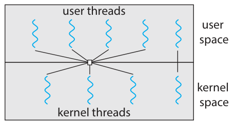
| Dimension对比项 | Many-to-one多对一 | One-to-one一对一 | Many-to-many多对多 |
|---|---|---|---|
| Mapping映射关系 | \(n\) user to \(1\) kernel\(n\) 个用户线程 → 1 个内核线程 | \(1\) user to \(1\) kernel1 个用户线程 → 1 个内核线程 | \(n\) user to \(m \le n\) kernel\(n\) 个用户线程 → \(m \le n\) 个内核线程 |
| Managed by管理主体 | User library (no syscalls)用户空间线程库（无需系统调用） | OS kernel操作系统内核 | User library + kernel线程库与内核协同 |
| Blocking syscall阻塞系统调用 | Blocks the entire process阻塞整个进程 | Blocks only the calling thread仅阻塞调用线程，其余照常运行 | Kernel switches to another kernel thread内核另派空闲内核线程继续跑 |
| Multicore parallelism多核并行 | No否 | Yes是 | Yes是 |
| Thread limit线程数限制 | None (only user memory)无（仅受用户内存约束） | Capped by kernel thread resources受内核线程上限与开销制约 | Unbounded user threads用户线程数不受限制 |
| Main drawback主要缺点 | No parallelism; one block stalls all无法并行，一阻塞即全体卡死 | High per-thread kernel overhead每个线程都要占用内核控制结构 | Hard to implement well双层调度实现难度大 |
| Examples典型系统 | Solaris Green Threads早期 Solaris Green Threads | Linux, Windows | Task runtimes; older Solaris/IRIX任务并发库及早期 Solaris/IRIX |
Practice练习
Q1. (True or false, justify) (a) In the many-to-one model, a blocking system call by one thread blocks the entire process. (b) A program with multiple user threads under many-to-one runs faster on a multiprocessor than on a uniprocessor. (c) On a single processor, multiple kernel threads can speed up a program that performs I/O.Q1.（判断并说明理由）（a）多对一模型中，一个线程发起阻塞系统调用会阻塞整个进程。（b）多对一模型下的多线程程序在多处理器上跑得比单处理器快。（c）在单处理器上，多个内核线程能提升执行 I/O 的程序性能。
Answer
- True. The process maps to a single kernel thread; once it blocks in the kernel, no sibling user thread can be scheduled.正确。整个进程只对应 1 个内核线程，它一阻塞，其余用户线程谁也拿不到 CPU。
- False. The OS kernel sees and schedules only that one kernel thread, confining the entire process to a single core at any moment.错误。内核只看得到那唯一 1 个内核线程，任意瞬间整个进程最多占用 1 个核，其余核只能干等。
- True. While one kernel thread waits on I/O, the kernel runs another ready thread of the same process, overlapping computation with I/O (whereas a purely CPU-bound program would not benefit).正确。一个内核线程等 I/O 期间，内核可调度同进程内别的就绪内核线程继续运算，实现计算与 I/O 重叠（但对纯计算型程序无效）。
Q2. (Analysis) Under the many-to-many model, a program has more user threads than the machine's 8 cores. Evaluate performance when the allocated kernel thread count \(K\) is (a) fewer than 8, (b) equal to 8, and (c) greater than 8 but fewer than the user thread count.Q2.（分析）多对多模型下某程序的用户线程数超过机器的 8 个核心。分别分析分配给该程序的内核线程数 \(K\) 满足以下条件时的性能：（a）\(K < 8\)；（b）\(K = 8\)；（c）\(8 < K < U\)。
Answer
- \(K < 8\): Cores stay underutilized because only \(K\) kernel threads exist to be scheduled, even though extra user threads are ready.\(K < 8\)：即便用户线程大把就绪，内核也只能同时调度 \(K\) 个，剩余核心被迫闲置，无法跑满硬件并行度。
- \(K = 8\): Ideal for CPU-bound work (all 8 cores stay busy with minimal kernel switching). However, if 3 kernel threads block on I/O, 3 cores sit idle for this process.\(K = 8\)：对纯计算任务恰好打满 8 核且内核切换最少；但一旦有 3 个内核线程因 I/O 阻塞，就会立刻空出 3 个核没法由同进程接管。
- \(8 < K < U\): Best when threads frequently block—spare kernel threads step onto free cores (e.g., with \(K=12\) and 3 blocked, 9 runnable threads keep all 8 cores busy), at the trade-off of extra kernel context switches and memory overhead.\(8 < K < U\)：最适合 I/O 或同步阻塞频繁的场景——即使 3 个内核线程堵了，其余就绪内核线程（如 12 个里剩 9 个）仍能填满全部 8 核；代价是内核态切换与控制结构内存略增。
Q3. (Design) A CPU-intensive application on a 4-core one-to-one system reads a single input file at start-up, executes CPU-bound work in the middle, and writes one output file at completion. How many threads should you create for (a) the file I/O phases and (b) the CPU-bound phase?Q3.（设计）某运行在 4 核一对一系统上的 CPU 密集型应用启动时顺序读单个输入文件，中间全是纯 CPU 计算，末尾写单个输出文件。你应分别为（a）I/O 阶段与（b）CPU 计算阶段创建多少线程？
Answer
- File I/O phases — 1 thread: Sequential reads and writes on a single file cannot be parallelized meaningfully; extra threads would merely contend over file offsets and locks (this is the serial fraction \(S\) in Amdahl's law).文件 I/O 阶段——1 个线程：单个文件的顺序读写无法并行加速，多开线程只会争抢文件偏移和锁（这正是 Amdahl 定律中的串行部分 \(S\)）。
- CPU-bound phase — 4 threads (one per core): Fewer than 4 leaves cores idle, whereas more than 4 adds context-switch and cache overhead without doing extra useful computation.CPU 计算阶段——4 个线程（每核 1 个）：少于 4 个会让核心空转；多于 4 个则因线程从不阻塞，只能平白增加切换与缓存抖动开销。
Thread libraries ★★线程库
Goal. Identify the three major thread libraries, trace short Pthreads code to determine its output and thread count, and distinguish asynchronous from synchronous threading.目标。掌握三大主流线程库及其实现层，能读懂简短 Pthreads 代码并判断线程数与输出，并区分异步线程与同步线程。
A thread library（线程库）gives programmers an API for creating, joining, and synchronizing threads. It can be implemented either purely in user space—where library calls stay local function calls without invoking the kernel—or directly at kernel level, where API calls trigger system calls into the OS.线程库为程序员提供创建、汇合与管理线程的 API。它既可以纯在用户空间实现（库调用只是普通本地函数调用，不触发系统调用），也可以由内核原生支持（API 调用通常对应真正的系统调用）。
| Library线程库 | Implementation level实现层 | Platform适用平台 |
|---|---|---|
| Pthreads (POSIX IEEE 1003.1c)Pthreads（POSIX 标准） | User-level or kernel-level (it is a specification, not a single implementation)用户级或内核级均可（它是规范标准，而非单一实现） | UNIX-like systems (Linux, macOS, Solaris)类 UNIX 系统（Linux、macOS、Solaris） |
| Windows threadsWindows 线程 | Kernel-level内核级 | Windows |
| Java threadsJava 线程 | Built atop the host OS thread library (Windows API on Windows; Pthreads on UNIX/macOS)依托宿主系统底层库实现（Windows 上走 Windows API，UNIX/macOS 上走 Pthreads） | Any platform running a JVM任何支持 JVM 的平台 |
Notice a subtle difference in data sharing: Pthreads and Windows share global variables across all threads by default, whereas Java has no true global variables and shares data explicitly by passing object references.数据共享方式也有细节差异：Pthreads 与 Windows 中全局变量天然对同进程所有线程可见；而 Java 没有真正意义上的全局变量，线程之间必须通过传入共享对象引用来协作。
Step 1: creating and joining第 1 步：线程创建与汇合等待
Core idea: create launches a sibling thread inside a target entry function, while join blocks the caller until that thread finishes so shared results are safe to read.核心思路：create 让新线程从指定入口函数开始执行，而 join 让当前线程阻塞等到目标线程结束，确保安全读取共享结果。
| Operation核心操作 | Pthreads | Windows | Java |
|---|---|---|---|
| Create thread创建线程 | pthread_create(&tid, &attr, fn, arg) |
CreateThread(...) |
new Thread(runnable), then start() |
| Wait for one等待单个线程 | pthread_join(tid, NULL) |
WaitForSingleObject(h, INFINITE) |
t.join() |
| Wait for many等待多个线程 | Loop of pthread_join()循环调用 pthread_join() |
WaitForMultipleObjects(n, hs, TRUE, INFINITE) |
Loop of t.join()循环调用 t.join() |
| Share data / result共享数据或返回值 | Global variables / pointers全局变量或传指针 | Global variables / pointers全局变量或传指针 | Shared objects; Callable & Future共享对象；Callable 与 Future |
In the Pthreads example below, main() spawns a second thread running runner(&n) and then blocks on pthread_join():以下 Pthreads 示例展示了标准流程——主线程调用 pthread_create() 启动新线程执行 runner(&n)，并调用 pthread_join() 等它算完再输出：
#include <pthread.h>
#include <stdio.h>
int sum = 0; /* global: shared by all threads */
void *runner(void *param) { /* the new thread starts here */
int n = *(int *)param;
for (int i = 1; i <= n; i++) sum += i;
return NULL;
}
int main(void) {
pthread_t tid;
int n = 4;
pthread_create(&tid, NULL, runner, &n); /* creates thread 2 */
pthread_join(tid, NULL); /* wait until runner ends */
printf("sum = %d\n", sum); /* prints sum = 10 */
return 0;
}
Two threads exist during execution (the original main thread plus runner), and the program prints sum = 10 (\(1+2+3+4\)). Without pthread_join(), main() would race ahead and might print sum = 0 before runner finishes updating the global variable.程序运行期间共有两个线程（初始主线程 + runner 子线程），最终输出 sum = 10（\(1+2+3+4\)）。若拿掉 pthread_join()，主线程可能不等子线程算完就抢先打印出 sum = 0，形成典型的竞态风险。
Step 2: asynchronous and synchronous threading第 2 步：异步线程、同步线程与 Java 机制
Core idea: in asynchronous threading the parent launches children and immediately moves on; in synchronous threading the parent waits for all children to join before combining results.核心思路：异步线程是“发出去就各干各的”；同步线程是“派出去干活，主线程原地等全部汇合再汇总结果”。
In asynchronous threading（异步线程）, parent and child threads run independently with minimal shared data—for example, a multithreaded web server spawning a worker per request and immediately returning to accept the next client. In synchronous threading（同步线程）, the parent spawns child threads to perform subtasks in parallel and joins all of them before proceeding, typical of fork-join aggregation where children compute partial results (Section 2.5).采用异步线程时，父线程创建子线程后无需等待便继续前进，彼此数据耦合极少（如网络服务器主线程派发工作线程后立刻回去继续监听新连接）。采用同步线程时，父线程拆出多个子线程并行计算后，必须阻塞等待所有子线程汇合结束才能继续向下汇总数据（常见于第 2.5 节的 Fork-Join 策略）。
In Java, threads are created either by extending Thread or implementing Runnable, both defining a void run() method. Crucially, calling start() asks the JVM to allocate a new thread and invoke run() there, whereas calling run() directly merely executes it synchronously on the caller's thread. Because Runnable.run() returns void, Java uses Callable<V> (whose V call() method returns a value) paired with Future<V>, where calling get() blocks until the result is ready.在 Java 中可通过继承 Thread 或实现 Runnable 来定义线程任务，两者核心都是 void run() 方法。务必注意：只有调用 start() 才会向 JVM 申请新线程并在新线程中执行 run()；若直接调用 run()，则只是在当前线程里同步执行普通方法。此外，由于 Runnable.run() 无返回值且 Java 无全局共享变量，要让异步任务带回结果需改用 Callable<V>，其 V call() 返回值由 Future<V> 接住，主线程调用 future.get() 阻塞等待结果就绪。
Practice练习
Q1. (Design) Sketch a Pthreads program that sums an array a of \(N\) integers using 4 threads, each summing one quarter. Identify the threading strategy and parallelism type, and explain why no explicit synchronization is needed inside the sum loop.Q1.（设计）写一个 Pthreads 程序草图：用 4 个线程对含 \(N\) 个整数的数组 a 求和（每线程负责 1/4）。指出其属于哪种线程策略与并行类型，并解释为何求和中无需额外加锁同步。
Answer
long partial[4]; /* one slot per thread */
void *worker(void *arg) {
long id = (long)arg, sum = 0;
for (long i = id * (N / 4); i < (id + 1) * (N / 4); i++) sum += a[i];
partial[id] = sum; /* only this thread writes this slot */
return NULL;
}
int main(void) {
pthread_t tid[4];
long total = 0;
for (long i = 0; i < 4; i++) pthread_create(&tid[i], NULL, worker, (void *)i);
for (int i = 0; i < 4; i++) { pthread_join(tid[i], NULL); total += partial[i]; }
printf("sum = %ld\n", total);
}
This illustrates synchronous threading (fork-join) and data parallelism (applying the same summation operation across disjoint array slices). Explicit locks are unnecessary because threads only read disjoint segments of a and write only to their dedicated partial[id] slot, while main() reads partial[i] only after joining each thread.这体现了同步线程（先分叉后汇合）与数据并行（不同切片执行相同的累加操作）。循环内无需额外加锁是因为各线程只读互不重叠的数组区间、且仅写入各自专属的 partial[id] 槽位，主线程也等到 pthread_join() 完成后才读取汇总。
Q2. (Compare) (a) Contrast asynchronous and synchronous threading, naming one typical use case for each. (b) Why does Java introduce Callable and Future alongside Runnable?Q2.（对比）（a）对比异步线程与同步线程，并各举一个典型应用。（b）Java 已有 Runnable，为什么还要引入 Callable 和 Future？
Answer
- In asynchronous threading, the parent resumes execution right after creating a child thread, with minimal data sharing (e.g., a multithreaded web server handling independent client connections). In synchronous threading, the parent blocks until all spawned children join before continuing, usually to merge results (e.g., parallel array summation).异步线程中父线程创建子线程后立即继续执行，数据很少共享（如多线程 Web 服务器处理彼此独立的请求）；同步线程中父线程必须等所有子线程汇合后才能推进，常用来合并子任务结果（如并行数组求和）。
Runnable.run()returnsvoidand Java has no global variables for threads to update directly.Callable.call()returns a computed value wrapped in aFuture, whoseget()method blocks until that result is ready.因为Runnable.run()返回类型为void，而 Java 又没有全局变量可直接写回结果；Callable.call()可以返回计算值，并由Future.get()阻塞直到拿到结果。
Implicit threading ★★隐式线程
Goal. Explain thread pools, fork-join parallelism, and OpenMP concisely, and count the total tasks created by a fork-join recursion.目标。简明阐述线程池、Fork-Join 与 OpenMP 的核心机制，并能计算 Fork-Join 递归总共生成的任务数。
As core counts grow into the dozens or hundreds, manually spawning and sizing threads becomes error-prone. Implicit threading（隐式线程）shifts thread creation and scheduling from the programmer to compilers and run-time libraries: the programmer simply identifies parallelizable tasks, and the run-time maps them onto hardware threads. Note, however, that logical correctness issues like race conditions and deadlocks remain the programmer's responsibility (Chapters 4–5).在多核环境下手动管理成百上千个线程既繁琐又易错。隐式线程把创建与调度线程的负担交给编译器和运行时库——开发者只需标出哪些工作可以作为并行任务，由运行时自动分配给底层线程（但竞争条件与死锁等逻辑同步问题仍需程序员自己防范，见第 4–5 章）。
Step 1: thread pools第 1 步：线程池
Core idea: a thread pool pre-creates a bounded set of worker threads at start-up so requests reuse idle threads instead of creating and destroying threads repeatedly.核心思路：线程池在启动时预先养好一批数量有界的常驻工作线程，任务一来直接派空闲线程上场、做完归队复用，省去反复建毁开销。
Spawning a fresh thread per incoming request suffers from two drawbacks: creation time adds latency to every request only to discard the thread right afterward, and unbounded thread creation during traffic spikes can exhaust CPU time and memory. A thread pool（线程池）pre-allocates workers that sleep until work is queued; when all workers are busy, new tasks simply wait in a submission queue until a worker finishes and returns to the pool. This yields three practical advantages:服务器如果“每来一个请求就新建线程，用完即弃”，不仅创建与销毁白白拖慢响应，高并发突袭时线程数无限膨胀还会耗尽内存与 CPU。线程池通过在启动时预建固定规模的线程并复用，将等待任务放入队列调度，带来三大好处：
- Servicing a request with an existing thread eliminates thread-creation latency.复用现成线程省去了创建与销毁的时间开销，响应更快；
- Capping pool size bounds active threads so the system cannot be overwhelmed.池容量限制了同时存在的线程总数，避免资源被无限请求耗干；
- Decoupling task submission from execution mechanics allows scheduling policies such as delayed or periodic runs.将“提交任务”与“如何运行”解耦，便于扩展延迟执行或周期定时等策略。
Step 2: fork-join第 2 步：Fork-Join 分治并行
Core idea: fork-join recursively splits a large task into smaller subtasks, forks them in parallel, waits at a join point, and combines their partial results.核心思路：Fork-Join 采用同步分治策略——将大问题递归拆小后并行分叉（fork），在汇合点（join）等待子任务完成并合并结果。
Designed as a synchronous pattern atop a worker pool, fork-join naturally fits divide-and-conquer algorithms such as quicksort, mergesort, and parallel array summation:作为建立在工作线程池之上的同步模式，Fork-Join 非常适合快速排序、归并排序和数组求和等分治算法：
Task(problem)
if problem is small enough (size <= THRESHOLD)
solve the problem directly
else
subtask1 = fork(new Task(subset of problem))
subtask2 = fork(new Task(subset of problem))
result1 = join(subtask1)
result2 = join(subtask2)
return combined results
Choosing THRESHOLD tunes task granularity: setting it too small creates excessive tiny tasks whose scheduling overhead dwarfs the computation, whereas setting it too large creates too few tasks to keep all CPU cores busy. Internally, each worker thread (often one per core) maintains its own task deque, and an idle worker uses work stealing（工作窃取）to pull tasks from a busy sibling's queue, balancing load dynamically. In Java's fork-join framework, tasks subclass RecursiveTask<V> (returning a value) or RecursiveAction (returning void) and invoke fork() and join().阈值 THRESHOLD 用来权衡任务粒度：设得太小会产生铺天盖地的微小任务，创建调度开销反超计算本身；设得太大又拆不出足够任务去填满全部 CPU 核心。运行时内部通常为每个核心配一个工作线程与本地任务队列，空闲线程通过工作窃取从繁忙同事的队列尾端偷取任务，从而动态实现负载均衡。在 Java 中，任务类继承 RecursiveTask<V>（有返回值）或 RecursiveAction（无返回值），并通过 fork() 与 join() 驱动。
Step 3: OpenMP第 3 步：OpenMP 编译指令并行
Core idea: OpenMP lets programmers annotate parallel regions or loops with compiler directives, offloading thread creation and loop partitioning to the compiler and runtime.核心思路：OpenMP 让程序员只需用编译指示标出并行区域或循环，线程的创建与迭代分配全交由编译器和运行时自动包办。
OpenMP provides portable shared-memory compiler directives for C, C++, and Fortran. Placing #pragma omp parallel before a block spins up a team of threads (typically one per CPU core) that execute the region concurrently and join upon exit, while #pragma omp parallel for automatically splits loop iterations across those threads:OpenMP 为共享内存多核机上的 C、C++ 和 Fortran 提供了一套编译制导指令：#pragma omp parallel 会唤醒一组线程（默认与核数相等）共同执行随后代码块并在出口同步会师；更常用的 #pragma omp parallel for 则自动把循环迭代分摊给各个线程：
#pragma omp parallel for
for (i = 0; i < N; i++)
c[i] = a[i] + b[i];
Because each iteration writes a distinct array slot c[i], no locking is required. Related implicit frameworks include Apple's Grand Central Dispatch (GCD)—which submits code blocks to serial or concurrent dispatch queues backed by a kernel-managed thread pool—and Intel Threading Building Blocks (TBB), a C++ template library whose task scheduler maps algorithms like parallel_for onto worker threads.由于每次迭代只写入互不重叠的 c[i]，该循环无需额外加锁同步。同类隐式框架还有 Apple 的 Grand Central Dispatch（GCD）（把任务代码块提交到由线程池消化的串行或并发分派队列）以及 C++ 的 Intel TBB 模板库（通过 parallel_for 等构件自动把任务调度到硬件线程上）。
Practice练习
Q1. (Explain) A server spawns a new thread for every incoming request. (a) Identify two flaws with this design. (b) Explain how a thread pool fixes both. (c) What happens when a request arrives while all pool threads are busy?Q1.（解释）某服务器为每个到来的请求新建线程。（a）指出该设计的两个弊端；（b）说明线程池如何解决；（c）若请求到达时池中所有线程都在忙，会发生什么？
Answer
- Spawning a thread adds creation/destruction overhead to every request, and an unbounded number of simultaneous threads can exhaust CPU time or memory under heavy load.每次请求都要白白花时间建毁线程，且峰值流量下线程数量失控会耗尽 CPU 与内存资源。
- A thread pool pre-allocates a bounded number of worker threads at start-up and reuses them, eliminating creation delay per request while capping memory/CPU consumption.线程池启动时预建有限数量的常驻工作线程并在任务间循环复用，既省下建毁延迟，又牢牢限制了最大线程数。
- The incoming task waits in the pool's work queue until an active worker completes its current request and becomes free.请求对应的任务会在线程池任务队列中排队等待，一旦有工作线程做完手头任务归队便立刻接手处理。
Q2. (Calculation) A fork-join SumTask halves an array range until each segment contains at most THRESHOLD elements. (a) With 8,000 elements and THRESHOLD = 1,000, how many tasks are created in total and how many sum directly? (b) Repeat for THRESHOLD = 2,000. (c) What happens if THRESHOLD = 1?Q2.（计算）某 Fork-Join SumTask 每次将数组对半拆分，直至子区间不超过 THRESHOLD 个元素。（a）8,000 个元素、THRESHOLD = 1,000 时共创建多少任务？其中多少个直接求和？（b）THRESHOLD = 2,000 时呢？（c）若 THRESHOLD = 1 会有什么问题？
Answer
- Leaves (direct summation tasks): \(8{,}000 / 1{,}000 = 8\). Total tasks created: \(2\cdot 8 - 1 = 15\).叶任务（直接求和）\(8{,}000 / 1{,}000 = 8\) 个；连同 7 个内部拆分任务，总共 \(2\cdot 8 - 1 = 15\) 个任务。
- Leaves: \(8{,}000 / 2{,}000 = 4\). Total tasks created: \(2\cdot 4 - 1 = 7\).叶任务 \(8{,}000 / 2{,}000 = 4\) 个；总计 \(2\cdot 4 - 1 = 7\) 个任务。
- With
THRESHOLD = 1, each single number becomes its own leaf (8,000 leaves), creating \(2\cdot 8{,}000 - 1 = 15{,}999\) tasks—task creation, queueing, and joining overhead completely swamps single additions.会生成 8,000 个叶节点、总计 \(2\cdot 8{,}000 - 1 = 15{,}999\) 个任务，每个叶子只加 1 个数，建毁与调度开销彻底淹没实际计算。
Threading issues ★★多线程语义与实现问题
Goal. Explain how fork() and exec() behave in multithreaded processes, how signals are delivered, how deferred vs. asynchronous cancellation works, what thread-local storage (TLS) and scheduler activations do, and count processes/threads created by short code.目标。说明多线程环境下 fork() 与 exec() 的行为差异、信号投递策略、异步/延迟取消、线程局部存储（TLS）及调度器激活，并能准确统计短代码的进程数与线程数。
Step 1: fork() and exec()第 1 步：多线程下的 fork() 与 exec()
Core idea: under POSIX, calling fork() duplicates only the calling thread (unless a full-duplicate variant is used), whereas exec() immediately replaces the entire process image and every thread inside it.核心思路：在 POSIX 规范下，fork() 默认只克隆发起调用的那个线程（部分系统另提供全线程克隆版本）；而 exec() 会用新程序彻底覆盖整个进程映像，原进程内的所有线程瞬间被替换。
Calling fork() inside a multithreaded process introduces an ambiguity: should the new child process duplicate all sibling threads or only the caller? Some UNIX variants supply both versions, whereas POSIX clones only the calling thread. That choice hinges on whether exec() comes next: if the child calls exec() immediately, duplicating other threads is wasted work because exec() wipes the whole process anyway; if the child continues executing without exec(), cloning every thread is safer.一旦进程里有多条线程，调用 fork() 就会面临歧义：子进程究竟该把父进程的全体线程统统复制过去，还是只复制发起调用的那一条？部分 UNIX 提供两种版本，而 POSIX 标准规定只复制调用线程。判断哪种更合理全看后续：若子进程紧接着就调 exec()，新程序会替换整个进程映像及全部线程，提前复制一堆其他线程纯属白忙；反之若子进程不调 exec() 而继续独立运行，就应当选用全线程克隆版。
int value = 0; /* global variable */
void *runner(void *param) { value = 5; pthread_exit(0); }
int main(void) {
pid_t pid = fork();
if (pid == 0) { /* child process */
pthread_t tid;
pthread_create(&tid, NULL, runner, NULL);
pthread_join(tid, NULL);
printf("CHILD: value = %d", value); /* LINE C */
} else if (pid > 0) { /* parent process */
wait(NULL);
printf("PARENT: value = %d", value); /* LINE P */
}
}
Step 2: signals第 2 步：信号处理与投递
Core idea: signals notify a process of asynchronous external events or synchronous program traps; in a multithreaded process, delivery depends on whether the signal targets one culprit thread or the whole process.核心思路：信号用来通知程序发生了某种内部异常（同步信号）或外部事件（异步信号）；多线程下，内核须根据信号性质决定只发给肇事线程，还是投递给整个进程。
A signal（信号）notifies a process that an event has occurred, and once delivered it is handled by either the kernel's default handler or a user-defined handler:UNIX/POSIX 系统的信号在事件触发时生成、投递给目标进程并由默认处理函数或用户注册的处理函数响应，分为两大类：
| Dimension对比项 | Synchronous signal同步信号 | Asynchronous signal异步信号 |
|---|---|---|
| Origin来源 | Triggered internally by the running thread's own instruction由当前正在执行指令的线程自身触发 | Generated by an event external to the running process由进程外部事件触发 |
| Examples常见示例 | Illegal memory access (SIGSEGV), division by zero (SIGFPE)非法访存（SIGSEGV）、除零异常（SIGFPE） | Ctrl-C interrupt (SIGINT), timer expiration (SIGALRM)键盘中断 Ctrl-C（SIGINT）、定时器超时（SIGALRM） |
| Target投递目标 | Delivered directly to the specific thread that caused it精确投递给引发该错误的那个线程 | Delivered per policy (process-wide, non-blocking thread, etc.)按策略投递（全进程、指定线程或未屏蔽信号的线程） |
Whereas a single-threaded process has only one destination, a multithreaded process offers four delivery policies:单线程进程只有一个接收者，而多线程进程面对异步信号时有四种常见投递选项：
- Deliver the signal to the specific thread to which it applies (mandatory for synchronous faults).投递给与该信号直接相关的特定线程（同步异常的必选做法）；
- Deliver the signal to every thread in the process (suitable for terminating signals like Ctrl-C).广播投递给进程中的每个线程（适合 Ctrl-C 等终止信号）；
- Deliver the signal to a subset of threads that have not blocked it in their signal masks.投递给信号掩码未将其屏蔽的特定线程；
- Assign one dedicated signal-handling thread to receive all asynchronous signals for the process.指定唯一一个专职线程统一拦截并处理所有异步信号。
In practice, an asynchronous signal is handled once by the first eligible thread that has not masked it out; POSIX distinguishes targeting via kill(pid, sig) (process-wide) vs. pthread_kill(tid, sig) (specific thread).实际运行时，同一份异步信号通常只由第一个未屏蔽它的线程处理一次；在接口上，kill(pid, sig) 把信号发向整个进程，而 pthread_kill(tid, sig) 则点名发给指定线程。
Step 3: thread cancellation第 3 步：线程取消
Core idea: cancellation terminates a target thread before it finishes naturally—asynchronous cancellation kills it immediately (unsafe), whereas deferred cancellation lets it clean up and exit safely at a cancellation point.核心思路：线程取消用于在工作完成前提前终止目标线程；异步取消强行立刻抹杀（容易留烂摊子），而延迟取消让目标线程走到安全检查点再自己体面退场。
Suppose multiple worker threads search a database concurrently and one finds the answer; the others become redundant and must be stopped. Two mechanisms handle such early termination:当多个线程并行检索同一数据库、其中之一率先命中目标时，其余仍在瞎忙的线程就成了目标线程需要被提前终止。这有两种截然不同的方式：
| Aspect对比维度 | Asynchronous cancellation异步取消 | Deferred cancellation延迟取消 |
|---|---|---|
| Mechanism触发机制 | Cancelling thread kills the target immediately请求方当场强行终止目标线程 | Target periodically checks a cancellation flag and terminates itself cleanly目标线程定期检查取消标志，自己在安全时机有序退出 |
| Safety risk数据与资源风险 | High: target may be mid-update on shared data or holding locks/memory that OS cannot reclaim高：可能在改一半共享结构或正持锁时被杀，造成数据损坏、资源泄漏或死锁 | Minimal: cancellation only happens at safe cancellation points with cleanup handlers低：仅在合法的取消点配合清理函数退出，状态完整可控 |
Because asynchronous termination risks corrupting shared structures, deferred cancellation is strongly preferred and is the Pthreads default. Note that pthread_cancel(tid) only posts a cancellation request; actual termination obeys the target's state and type:由于强制异步杀线程隐患太大，系统几乎都把延迟取消设为默认策略。调用 pthread_cancel(tid) 只是投递一个“请求”而非强制命令，何时生效完全取决于目标线程自身的取消状态与类型：
| Mode模式 | State取消状态 | Type取消类型 |
|---|---|---|
| Off关闭（待定） | Disabled禁用 | — (requests stay pending until re-enabled)—（请求暂时挂起，直到重新启用） |
| Deferred (default)延迟（默认） | Enabled启用 | Deferred (acts at cancellation points)延迟（到达取消点时执行清理并退出） |
| Asynchronous异步 | Enabled启用 | Asynchronous (terminates immediately)异步（随时立刻终止） |
If cancellation is disabled (e.g., inside a critical multi-step update), pending cancel requests wait safely. Under deferred mode, termination occurs at a cancellation point（取消点）—most blocking system calls like read(), plus explicit calls to pthread_testcancel()—which invokes registered cleanup handlers to release locks and memory before exiting.当线程把取消设为禁用时（例如正持有互斥锁改写链表），外来的取消请求会先挂起排队；切回启用后，延迟模式会在下一个取消点（如绝大多数阻塞系统调用或手动插入的 pthread_testcancel()）触发清理处理程序释放资源，然后安全退出。
Step 4: thread-local storage and scheduler activations第 4 步：线程局部存储（TLS）与调度器激活
Thread-local storage (TLS)（线程局部存储）gives each thread its own persistent private copy of a variable—for example, a per-worker transaction ID in a thread pool. Unlike local variables (which disappear once a function returns) and unlike global variables (which are shared by all sibling threads), TLS persists across multiple function calls while staying private to each thread, which is vital when a thread pool hides thread creation from the caller.线程局部存储（TLS）让每个线程各自拥有一份跨函数调用持久保存的私有数据（例如线程池中各自记录当前正在处理的事务编号）。它既不像函数局部变量那样“函数一返回就销毁”，也不像全局变量那样“全员共有需加锁”——尤其是面对无法通过参数传上下文的线程池场景时，TLS 尤为关键。
Scheduler activations（调度器激活）solve the coordination problem in many-to-many systems by placing a pool of virtual processors called lightweight processes (LWPs)（轻量级进程）between user threads and kernel threads. Ideally, an application holds enough LWPs to cover its concurrent blocking system calls. Whenever a user thread is about to block in the kernel, the kernel issues an upcall（上调用）to notify the user thread library and temporarily lends it a fresh virtual processor so the library's upcall handler can save the blocking thread's state and dispatch another ready user thread onto the free CPU; once the blocking event finishes, a second upcall marks the original thread runnable again.调度器激活用于解决多对多模型下用户库与内核的配合难题：系统在用户线程与内核线程之间架起一层被称为轻量级进程（LWP）的虚拟处理器（应用所需的 LWP 数量取决于同时可能阻塞的系统调用数）。当某条线程即将在内核中阻塞时，内核通过上调用主动通知用户态线程库，并临时分配一个新的虚拟处理器；线程库随即保存阻塞线程的状态，把另一个就绪用户线程切换上去继续跑；待 I/O 完成后，内核再用第二次上调用通知库将其重新置为就绪。
Practice练习
Q1. (Count) How many unique new processes and unique created threads result from the following code segment? Assume POSIX fork() duplicates only the calling thread.Q1.（计数）下列代码一共会新建多少个进程、多少个线程？（假设 fork() 按 POSIX 约定只复制调用线程。）
pid_t pid;
pid = fork();
if (pid == 0) { /* child process */
fork();
thread_create( . . .);
}
fork();
Answer
Label the original process \(P_0\) and trace each statement step by step:设最初的进程为 \(P_0\)，逐行追踪：
- First
fork(): \(P_0\) spawns child \(P_1\). Only \(P_1\) enters theif (pid == 0)block.第一次fork()：\(P_0\) 创建 \(P_1\)，仅 \(P_1\) 进入if分支。 - Inside
if: \(P_1\) callsfork()to spawn \(P_2\); then both \(P_1\) and \(P_2\) executethread_create(), creating 2 new threads.if内：\(P_1\) 先通过fork()生出 \(P_2\)，随后 \(P_1\) 与 \(P_2\) 各自执行一次thread_create()，新增 2 个子线程。 - Final
fork(): now executed by the main thread of \(P_0, P_1,\) and \(P_2\), spawning \(P_3, P_4,\) and \(P_5\) (remember POSIXfork()copies only the calling thread, so \(P_4\) and \(P_5\) start single-threaded).末尾fork()：\(P_0, P_1, P_2\) 的主线程各执行一次，分别生出 \(P_3, P_4, P_5\)（只克隆调用线程，故 \(P_4, P_5\) 只有一个主线程）。
Totals: 5 unique child processes created (\(P_1\)–\(P_5\), i.e., 6 processes total including \(P_0\)) and 2 created worker threads (or 8 total threads if counting every process's initial main thread).合计：共新建 5 个子进程（含初始 \(P_0\) 共 6 个进程），以及 2 个显式创建的新线程（若连同各进程主线程共 8 个线程）。
Q2. (Classification) State whether each signal is synchronous or asynchronous and which thread(s) should receive it: (a) thread T2 divides by zero; (b) the user presses Ctrl-C; (c) a timer set by thread T3 expires.Q2.（分类）判断下列信号属于同步还是异步，并说明应投递给哪些线程：（a）线程 T2 执行除零操作；（b）用户按下 Ctrl-C；（c）线程 T3 设置的定时器到期。
Answer
- Synchronous—caused by T2's own instruction, so it must be delivered directly to T2.同步信号：由 T2 自身运算错误触发，直接精准投递给 T2。
- Asynchronous—triggered externally; a process-terminating signal like Ctrl-C should be sent to all threads (and handled once by the first unblocked thread).异步信号：来自进程外部；像 Ctrl-C 这类终止信号应投递给所有线程（实际由第一个未屏蔽该信号的线程响应一次）。
- Asynchronous—timer expiry is an external hardware/kernel event; delivered to T3 (the thread that armed the timer) or any unblocked thread.异步信号：定时器到期属于外部事件，通常投递给设置它的线程 T3，或任一未屏蔽该信号的线程。
Threads in Windows and Linux ★Windows 与 Linux 的内核线程模型
Modern operating systems both implement the one-to-one model, yet organize kernel bookkeeping differently: Windows distinguishes process containers from thread descriptors across kernel and user space, whereas Linux models every process and thread uniformly as a schedulable task.两大主流系统虽然底层都采用一对一模型，但内核记账方式颇有差异：Windows 明确区分进程容器与跨内核/用户态的线程结构，Linux 则直接用“任务”一统进程与线程。
In Windows, each thread has an ID, register set, PC, separate user and kernel stacks, and private storage split across three core blocks:在 Windows 中，每个线程拥有 ID、寄存器、PC、双栈（用户栈与内核栈）及私有存储，具体拆分成三大结构：
| Structure数据结构 | Space所在空间 | Contents核心内容 |
|---|---|---|
ETHREAD (executive thread block)ETHREAD（执行体线程块） |
Kernel内核态 | Pointer to parent process, thread start-routine address, pointer to KTHREAD所属进程指针、起始例程入口地址、指向 KTHREAD 的指针 |
KTHREAD (kernel thread block)KTHREAD（内核线程块） |
Kernel内核态 | Scheduling & synchronization info, kernel-mode stack, pointer to TEB调度与同步信息、内核栈、指向 TEB 的指针 |
TEB (thread environment block)TEB（线程环境块） |
User用户态 | Thread ID, user-mode stack, array for thread-local storage (TLS)线程 ID、用户态栈、线程局部存储（TLS）数组 |
Linux does not make a rigid kernel-level distinction between processes and threads—every schedulable entity is simply a task described by task_struct. Rather than holding dedicated data directly, task_struct holds pointers to memory, open files, file-system metadata, and signal handlers. Calling clone() selects via bitmask flags whether a child shares those structures (acting like a thread) or receives private copies (acting like fork()):Linux 在内核层不死板区分进程与线程，两者统称为由 task_struct 描述的任务（task）。task_struct 本身不直接内嵌资源，而是指向地址空间、文件描述符表、文件系统信息与信号表；调用 clone() 时通过按位传入共享标志即可决定子任务“更像线程还是更像进程”——若以下四项全选则等价于创建线程，全不选则接近传统 fork()：
| Flag标志位 | Shared resource when set置位时父子共享的资源 |
|---|---|
CLONE_FS |
File-system info (e.g., root directory, current working directory)文件系统信息（如根目录、当前工作目录） |
CLONE_VM |
Virtual memory address space同一份虚拟内存地址空间 |
CLONE_SIGHAND |
Signal handlers table信号处理函数表 |
CLONE_FILES |
Open file descriptor table已打开文件描述符表 |
Practice练习
Q1. (Short answers) (a) What does Linux clone() create when invoked with CLONE_FS | CLONE_VM | CLONE_SIGHAND | CLONE_FILES vs. with no flags? (b) Which of ETHREAD, KTHREAD, and TEB is accessible from user mode? (c) Why does a Windows thread maintain two stacks?Q1.（简答）（a）Linux 中调用 clone() 传入 CLONE_FS | CLONE_VM | CLONE_SIGHAND | CLONE_FILES 与不传任何标志分别创建什么？（b）ETHREAD、KTHREAD 与 TEB 中哪个能在用户态直接访问？（c）为什么 Windows 线程有用户栈与内核栈两套栈？
Answer
- Passing all four flags causes the child task to share file-system state, memory, signal handlers, and open files with its parent—behaviorally identical to creating a thread. Passing zero flags copies everything independently, acting like
fork().全带四个标志时子任务与父任务共享内存、文件系统、信号与文件表，效果上就是一个线程；全不带则互不共享（按需拷贝），效果等同于fork()创建新进程。 - Only the
TEBlives in user space and can be accessed directly in user mode; bothETHREADandKTHREADreside in protected kernel space.只有TEB位于用户空间可供用户态直接访问；ETHREAD与KTHREAD均受内核态内存保护。 - Each thread executes on its user stack during normal execution and switches cleanly to its dedicated kernel stack upon trapping into kernel mode (protecting kernel state from user-space tampering or stack overflow).普通代码在用户态使用用户栈；通过系统调用或中断陷入内核时改用专有内核栈，防止用户栈溢出或被篡改从而危及内核安全。
Terms to recognize ★需要认识的术语
| Term术语 | Key takeaway核心释义 |
|---|---|
| Green threads绿色线程 | User-level threads mapped via many-to-one, used in early Solaris and early Java采用多对一模型映射的用户级线程，曾见于早期 Solaris 与初代 Java |
| Two-level model两级模型 | Many-to-many multiplexing plus the option to bind specific user threads 1-to-1 to kernel threads多对多模型加上“允许关键用户线程一对一绑定专属内核线程”的混合方案 |
| Work stealing工作窃取 | Dynamic load balancing where an idle worker pulls queued subtasks from a busy worker's deque空闲工作线程主动从繁忙同事的双端队列里“偷”任务来执行，实现动态负载均衡 |
| Grand Central Dispatch | Apple's implicit threading framework dispatching task blocks onto serial/concurrent queues backed by a thread poolApple 的隐式线程技术：将任务代码块投入串行或并发队列，由系统线程池自动调度 |
| Intel TBB | C++ template library (e.g., parallel_for) whose scheduler maps tasks dynamically to worker threadsC++ 并行模板库（如 parallel_for），由内置调度器将细粒度任务映射到工作线程 |
| Callable and FutureCallable 与 Future | Java interfaces letting an asynchronous task return a value; Future.get() blocks until completion支持返回结果的 Java 并发接口；调用 Future.get() 会阻塞等待任务算完取值 |
| Cancellation point取消点 | Safe checkpoint (e.g., blocking syscalls or pthread_testcancel()) where deferred cancellation takes effect延迟取消生效的安全检查位置（常见于阻塞系统调用或显式 pthread_testcancel()） |
| LWP and upcallLWP 与上调用 | Virtual processor (LWP) linking user and kernel threads; kernel callback (upcall) notifying the thread library夹在用户与内核线程之间的虚拟处理器（LWP），以及内核反向通知线程库的回调机制（上调用） |
| ETHREAD, KTHREAD, TEB | Windows thread descriptor trio: ETHREAD and KTHREAD live in kernel space, while TEB lives in user spaceWindows 线程的三大控制块：ETHREAD 与 KTHREAD 位于内核空间，TEB 位于用户空间 |
clone() flagsclone() 共享标志 |
CLONE_FS, CLONE_VM, CLONE_SIGHAND, CLONE_FILES toggle sharing of FS metadata, memory, signal handlers, and open filesCLONE_FS、CLONE_VM、CLONE_SIGHAND 与 CLONE_FILES 分别控制文件系统、地址空间、信号表与打开文件表是否共享 |
Exam-style questions考试题型练习
Q1. (Calculation, 12 marks) An application spends 20% of its single-core execution time in strictly sequential code:Q1.（计算，12 分）某应用程序在单核上运行时，有 20% 的时间花在严格无法并行的串行代码上：
- State Amdahl's law and calculate the speedup on 2, 8, and 16 cores (4 marks).写出 Amdahl 定律表达式，并计算其在 2、8 和 16 个核上的加速比（4 分）。
- Find the maximum theoretical speedup and the parallel efficiency on 16 cores (2 marks).求最大理论加速比，以及 16 核上的并行效率（2 分）。
- Starting from an 8-core machine, compare two upgrades: (i) double cores to 16; (ii) speed up the serial code by 2× on the same 8 cores. Which yields greater speedup? (4 marks)以 8 核机器为基准对比两种升级方案：（i）扩充至 16 核；（ii）保持 8 核不变，将串行代码提速一倍。计算两者新加速比并给出推荐（4 分）。
- Using Gustafson's law with \(\alpha = 0.2\), compute the scaled speedup on 16 cores and explain why it differs from part (a) (2 marks).令 \(\alpha = 0.2\)，按 Gustafson 定律计算 16 核的扩展加速比，并解释为何与（a）小题差距显著（2 分）。
Answer
- Amdahl's law states \(\text{speedup} \le \frac{1}{S + (1-S)/N}\). Here \(S = 0.2\) and \(1-S = 0.8\):
- 2 cores: \(1/(0.2 + 0.8/2) = 1/0.6 \approx 1.67\)2 核：\(1/(0.2+0.4)=1.67\)
- 8 cores: \(1/(0.2 + 0.8/8) = 1/0.3 \approx 3.33\)8 核：\(1/(0.2+0.1)=3.33\)
- 16 cores: \(1/(0.2 + 0.8/16) = 1/0.25 = 4.00\)16 核：\(1/(0.2+0.05)=4.00\)
- Maximum speedup: \(1/S = 1/0.2 = 5.0\). Efficiency on 16 cores: \(4.00 / 16 = 25\%\).最大加速比 \(1/S = 5.0\)；16 核并行效率 \(4.00 / 16 = 25\%\)。
- Compare both options against the 8-core baseline (3.33):
- Option (i) (16 cores): speedup rises to \(4.00\) (+20% over 3.33).方案（i）堆到 16 核：加速比升至 \(4.00\)（仅比 3.33 提升 20%）。
- Option (ii) (2× faster serial part on 8 cores): runtime becomes \(0.2/2 + 0.8/8 = 0.1 + 0.1 = 0.2\), giving speedup \(1/0.2 = 5.00\) (+50% over 3.33).方案（ii）将串行部分提速 2 倍（核数不变）：总耗时降为 \(0.2/2 + 0.8/8 = 0.2\)，加速比跃升至 \(1/0.2 = 5.00\)（提升高达 50%）。
- Gustafson's law gives \(16 - 0.2\times(16-1) = 13.0\). Amdahl assumes a fixed problem size (causing diminishing returns as \(N\) grows), whereas Gustafson scales the workload with the machine so parallel work expands to fill all cores.按 Gustafson 定律得 \(16 - 0.2\times 15 = 13.0\)。两者前提不同：Amdahl 假定问题总规模固定，核越多串行占比相对越拖后腿；Gustafson 假定问题规模随核心数放大，使各核充分饱和工作。
Q2. (Compare, 10 marks) Answer the following on multithreading models:Q2.（对比，10 分）关于多线程映射模型，回答下列问题：
- Define a user thread and a kernel thread (2 marks).分别定义用户线程与内核线程（2 分）。
- For many-to-one, one-to-one, and many-to-many models, compare blocking-syscall behavior, multicore parallelism, and main drawback (6 marks).针对多对一、一对一与多对多模型，对比阻塞式系统调用行为、多核并行能力及主要缺点（6 分）。
- Which model do Linux and Windows use, and why did the most flexible model fail to dominate general-purpose OSes? (2 marks)Linux 与 Windows 采用哪种模型？最灵活的模型为何反倒未成通用 OS 主流？（2 分）
Answer
- A user thread is created and scheduled purely by a user-space thread library without OS awareness, whereas a kernel thread is directly supported and scheduled by the OS kernel onto CPU cores (a user thread executes only when mapped to a kernel thread).用户线程由用户空间线程库管理调度、内核无感知；内核线程则由操作系统内核直接管理并调度到 CPU 核心上执行（用户线程必须附着于内核线程才能运行）。
- Model comparison:
三模型横向对比见上表。
Model模型 Blocking syscall阻塞式系统调用 Multicore parallelism多核并行 Main drawback主要缺点 Many-to-one多对一 Blocks entire process阻塞整个进程 No否 Cannot exploit multiple cores or bypass blocking无法并发利用多核，一阻塞即全卡 One-to-one一对一 Blocks only that thread仅阻塞该线程 Yes是 1-to-1 kernel thread cost limits massive counts每线程均消耗内核结构，开销偏大 Many-to-many多对多 Kernel switches to another kernel thread内核改派其他内核线程运行 Yes是 Complex user/kernel two-tier scheduling双层协同调度实现极复杂 - Both Linux and Windows use one-to-one. Although many-to-many is theoretically most flexible, implementing two-level coordination is hard and abundant modern CPU cores reduce pressure to cap kernel threads, making one-to-one the practical winner.Linux 与 Windows 均采用一对一模型。多对多虽灵活但双层实现太复杂，且随着多核硬件普及，限制内核线程数量的紧迫性大大降低，最终简单直给的一对一胜出。
Q3. (Design and calculation, 10 marks) Consider implicit vs. explicit threading on a busy server:Q3.（设计与计算，10 分）考察服务器线程管理与 Fork-Join 计算：
- Identify two problems when a web server creates a fresh thread per client request (2 marks).说明服务器“每来一个请求就新建线程”的两个问题（2 分）。
- Explain how a thread pool works and list three benefits (4 marks).解释线程池工作原理并列出三大优点（4 分）。
- A Java fork-join
SumTasksums 16,000 integers, halving segments until size ≤THRESHOLD = 2,000. How many total tasks are created, how many sum directly, and what role does work stealing play? (4 marks)Java Fork-JoinSumTask对 16,000 个整数求和，不断对半拆至子段 ≤THRESHOLD = 2,000。问共生成多少任务？多少个直接求和？工作窃取起什么作用？（4 分）
Answer
- Spawning and tearing down threads repeatedly adds latency per request, and unbounded thread counts under heavy bursts can exhaust CPU and memory.反复建毁线程平添请求延迟；且高并发时线程数无上限会耗竭 CPU 与内存。
- A thread pool pre-allocates worker threads at start-up that wait for queued requests, run them, and return to the pool upon completion. Benefits: (1) reuses warm threads with zero creation latency; (2) bounds total thread count safely; (3) decouples submission from execution mechanics (enabling delayed/periodic runs).线程池启动时预创建若干线程休眠待命，请求进队列后分配给空闲线程执行，完成后归队复用。优点：（1）复用免去创建耗时；（2）约束最大并发数护盘；（3）将任务提交与调度执行解耦（方便定时、延迟触发）。
- Halving 16,000 down to 2,000 produces \(16{,}000 / 2{,}000 = 8\) leaf tasks (each directly summing 2,000 elements) and \(8 - 1 = 7\) internal split tasks, totaling \(2\cdot 8 - 1 = 15\) tasks. With work stealing, any worker thread whose local task deque runs empty steals a queued subtask from a busier worker, keeping all cores evenly loaded.16,000 对半切到 2,000 共分出 \(16{,}000/2{,}000=8\) 个直接求和的叶任务，外加 \(8-1=7\) 个拆分节点，总计 \(2\cdot 8 - 1 = 15\) 个任务。工作窃取让做完本地队列的空闲线程主动去忙碌同伴的任务队列尾端“偷”子任务，从而动态均衡多核负载。
Q4. (Trace, 10 marks) Trace the following POSIX/Pthreads program:Q4.（代码追踪，10 分）分析下列结合 fork() 与 Pthreads 的程序：
#include <pthread.h>
#include <stdio.h>
#include <sys/wait.h>
#include <unistd.h>
int x = 10;
void *f(void *p) { x += 5; return NULL; }
int main(void) {
pthread_t t;
pid_t pid = fork();
if (pid == 0) { /* child */
pthread_create(&t, NULL, f, NULL);
pthread_join(t, NULL);
printf("child x = %d\n", x);
} else { /* parent */
wait(NULL);
x += 1;
printf("parent x = %d\n", x);
}
return 0;
}
- What exact output is printed, and why? (4 marks)程序准确打印什么结果？为什么？（4 分）
- Why must the child call
pthread_join()before printing? (2 marks)子进程打印前为何必须先调pthread_join()？（2 分） - What happens to sibling threads when one thread calls
exec(), and how does this governfork()design? (4 marks)某一线程调用exec()时同进程其余线程会怎样？这如何影响fork()的实现选择？（4 分）
Answer
- Output:
child x = 15followed byparent x = 11. Afterfork(), parent and child have separate address spaces each holdingx = 10. Inside the child, threadfshares the child's memory and adds 5 (15); meanwhilewait(NULL)ensures the parent prints only after the child exits, updating its own separate copy ofxto \(10 + 1 = 11\).输出顺序与数值为：先child x = 15，后parent x = 11。fork()使父子进程各自拥有独立的全局变量副本（初始均为 10）；子进程内部的新线程共享子进程地址空间并将x改为 15，父进程因wait(NULL)晚一步唤醒并把自己独立的x加 1 得 11。 - Without
pthread_join(), a race condition exists betweenmain'sprintf()and threadf: the child could print10beforefadds 5.没有pthread_join()就会发生竞争条件，子进程主线程可能在线程f加 5 之前抢先打印出10。 - Calling
exec()replaces the entire process address space and all existing threads with the new program. Therefore, iffork()is immediately followed byexec(), duplicating only the calling thread suffices; only when the child keeps executing withoutexec()are all threads duplicated.exec()会用全新程序替换整个进程映像并消灭原有全部线程。因此若fork()后立刻调exec()，只需克隆发起调用的单个线程即可，否则才需要克隆所有线程。
Q5. (Short answers, 10 marks) Answer the following on signals, cancellation, and scheduler activations:Q5.（简答，10 分）回答下列关于信号、线程取消与调度器激活的问题：
- Classify each signal as synchronous or asynchronous and state which thread(s) should receive it: (i) a thread divides by zero; (ii) Ctrl-C pressed; (iii) process timer expires (3 marks).判定各信号是同步还是异步，并说明投递对象：（i）线程除零；（ii）按下 Ctrl-C；（iii）进程定时器到期（3 分）。
- Compare asynchronous vs. deferred cancellation and explain how Pthreads implements deferred cancellation (3 marks).对比异步取消与延迟取消，并说明 Pthreads 如何落实延迟取消（3 分）。
- A many-to-many process has six threads that may block in system calls concurrently. How many LWPs are required, and what roles do kernel upcalls and the user library play under scheduler activations? (4 marks)某多对多模型进程有 6 个线程可能同时在系统调用处阻塞。至少需要多少 LWP？调度器激活中内核与线程库如何配合？（4 分）
Answer
- (i) Synchronous → offending thread; (ii) Asynchronous → broadcast to all threads (terminating signal, handled once by first unblocked thread); (iii) Asynchronous → requesting thread or first unblocked thread.（i）同步，精准送达除零线程；（ii）异步，送达全体线程（由首个未屏蔽线程触发进程终止）；（iii）异步，送达设表线程或任一未屏蔽线程。
- Asynchronous cancellation kills the target immediately, risking torn shared state and leaked locks/memory. Deferred cancellation sets a pending flag checked safely by the target at well-defined cancellation points (blocking syscalls or
pthread_testcancel()) with cleanup handlers—this is Pthreads' default whenpthread_cancel()is called.异步取消立即强杀线程，易导致共享数据改一半和资源泄漏；延迟取消只投递请求标志（Pthreads 下调用pthread_cancel()的默认语义），待目标线程走到阻塞系统调用或pthread_testcancel()等取消点时再经清理函数安全退场。 - Six LWPs (one per concurrent blocking syscall). Under scheduler activations, when a thread is about to block in the kernel, the kernel sends an upcall granting a new virtual processor to the user library; the upcall handler saves the blocking thread's state and dispatches another ready user thread, and a second upcall signals when the blocked thread becomes runnable again.需要 6 个 LWP（每个并发阻塞系统调用配 1 个）。当线程即将在内核阻塞时，内核发出上调用通知线程库并借出新虚拟处理器，由库中的处理例程保存阻塞线程上下文并换入就绪用户线程；阻塞事件就绪后再通过第二次上调用唤醒原线程。
Textbook exercises课后习题
Textbook exercises with answers: 21 questions教材习题及答案（共 21 题，点击展开）
E1. (Practice Exercise 4.1) Provide three programming examples in which multithreading yields better performance than a single-threaded design.E1.（练习题 4.1）举出三个多线程比单线程性能更优的程序设计实例。
Answer
Multithreading boosts performance whenever a program can overlap I/O waits with computation or distribute independent work across multiple CPU cores. Three classic examples include:当程序能将 I/O 等待与计算重叠，或把独立计算拆到多个 CPU 核心并行时，多线程就能明显提速。三个典型场景如下：
- Web server: Handling each incoming client connection on a separate worker thread lets other requests run on other cores or advance while one thread blocks on disk or network I/O, rather than stalling all clients behind a single thread.Web 服务器：用独立工作线程响应各个客户端请求。某个线程因磁盘或网络阻塞时，其余线程仍可推进，多核上更可并行服务多个连接，避免单线程逐个排队的长延迟。
- Parallel matrix multiplication: Partitioning rows or sub-blocks of the result matrix across threads lets every core compute disjoint output elements simultaneously instead of confining computation to one core.并行矩阵乘法：将结果矩阵按行或子块拆分，各线程在不同核心上同步计算互不干扰的分块，突破单核吞吐上限（受 Amdahl 定律约束）。
- Interactive GUI application (debugger or word processor): Separating UI event polling, foreground computation, and background tasks (spell-checking, auto-save) keeps the interface snappy even during slow background I/O.交互式图形程序（调试器或文字处理软件）：将用户输入监听、主计算逻辑与后台拼写检查/自动保存拆分给不同线程，即使后台正在慢速读写磁盘，界面依旧流畅响应。
In all three cases, shared address spaces keep cooperation lightweight.以上三例中，线程共享同一地址空间的特性也让协作通信开销保持极低。
E2. (Practice Exercise 4.2) Using Amdahl's law, calculate the speedup gain of an application with a 60% parallel component for (a) 2 cores and (b) 4 cores.E2.（练习题 4.2）用 Amdahl 定律计算并行部分占 60% 的应用在（a）双核与（b）四核上的加速比。
Answer
With a 60% parallel component, the serial fraction is \(S = 1 - 0.6 = 0.4\). Substituting into Amdahl's law \(\text{speedup} \le \frac{1}{S + (1-S)/N}\):并行占 60%，即串行比例 \(S = 1 - 0.6 = 0.4\)。代入 Amdahl 定律 \(\text{speedup} \le \frac{1}{S + (1-S)/N}\)：
- 2 cores: \(\frac{1}{0.4 + 0.6/2} = \frac{1}{0.7} \approx 1.43\)双核：\(\frac{1}{0.4 + 0.6/2} = \frac{1}{0.7} \approx 1.43\)
- 4 cores: \(\frac{1}{0.4 + 0.6/4} = \frac{1}{0.55} \approx 1.82\)四核：\(\frac{1}{0.4 + 0.6/4} = \frac{1}{0.55} \approx 1.82\)
Doubling from 2 to 4 cores adds only ~27% speedup because the 40% serial part caps maximum possible speedup at \(1/0.4 = 2.5\).核心翻倍仅带来约 27% 的额外提升，原因在于 40% 的串行部分把极限加速比牢牢封死在 \(1/0.4 = 2.5\)。
E3. (Practice Exercise 4.3) Does a multithreaded web server (one listener thread spawning a worker thread per client request) exhibit task parallelism or data parallelism?E3.（练习题 4.3）多线程 Web 服务器（主线程监听并给每个客户端请求派生工作线程）体现的是任务并行还是数据并行？
Answer
It exhibits data parallelism. Each worker thread runs the exact same request-handling routine (parse request, locate resource, send response) on a different slice of input data—namely, a separate client request. By contrast, if threads were specialized into distinct stages (one parsing HTTP headers, another reading disk blocks, another writing logs), the design would exhibit task parallelism.体现的是数据并行。因为每条工作线程执行的都是完全相同的请求服务代码（解析请求、定位资源、发回响应），区别仅仅在于各自处理的“数据”（不同客户端的请求）不同。只有当线程按职能分工（如一个专门解析报文、一个读盘、一个写日志）时，才属于任务并行。
E4. (Practice Exercise 4.4) State two differences between user-level threads and kernel-level threads, and explain under what circumstances each is preferable.E4.（练习题 4.4）指出用户级线程与内核级线程的两大区别，并说明各自更适合什么场景。
Answer
Two key distinctions separate them:两者主要有两点区别：
- Visibility and management: User-level threads are created and scheduled entirely by a user-space library, remaining invisible to the kernel; kernel-level threads are known to and directly scheduled by the OS kernel.可见性与调度主体：用户级线程由用户态线程库负责创建、切换与管理，内核对其一无所知；内核级线程则由操作系统内核直接登记并参与 CPU 调度。
- Overhead vs. blocking/parallelism: User-level operations are cheap local calls requiring no syscalls or kernel structures, whereas kernel threads require syscalls and per-thread kernel descriptors. In return, kernel threads can run in parallel across cores without one thread's blocking syscall freezing its siblings (under pure many-to-one user threads, one block stalls the entire process).切换开销与阻塞/并行行为：用户级线程切来切去只需普通函数调用，开销极低；内核级线程则涉及内核态切换与结构体分配。但作为回报，内核级线程既可多核真并行，又不会因单个线程阻塞拖垮全进程。
When each is better:各自适用场景：
- User-level threads: workloads with huge numbers of short-lived, rarely blocking CPU/cooperating threads, especially on single-core machines or OSes lacking kernel thread support.用户级线程更优：存在海量短命且极少发生阻塞的线程（频繁切换但不涉及阻塞系统调用），或运行于不支持内核线程的单核平台；
- Kernel-level threads: workloads making blocking system calls, incurring page faults, or needing true multicore parallelism (e.g., network servers and parallel scientific apps).内核级线程更优：线程常发阻塞 I/O、容易触发缺页异常，或必须利用多核实现真正并行的服务器与数值计算程序。
E5. (Practice Exercise 4.5) Describe the actions taken by a kernel to context-switch between kernel-level threads.E5.（练习题 4.5）简述内核在两个内核级线程之间执行上下文切换的关键步骤。
Answer
Switching from kernel thread \(A\) to kernel thread \(B\) follows four steps:内核从线程 \(A\) 切换到线程 \(B\) 依次经过四步：
- Save \(A\)'s context: Store \(A\)'s CPU registers (PC, stack pointer, general-purpose and status registers) in its thread control block, change its state from running to ready or waiting, and enqueue it appropriately.保存 \(A\) 的现场：将 \(A\) 的 CPU 寄存器（PC、栈指针、通用及状态寄存器）存入 \(A\) 的线程控制块，将其置为就绪或等待态并入队。
- Select \(B\): Invoke the scheduler to choose the next ready kernel thread \(B\) and mark it running.挑选 \(B\)：调度器选出下一个就绪线程 \(B\) 并设为运行态。
- Switch address space if cross-process: If \(B\) belongs to a different process, load its page-table base register and flush/retag the TLB; if \(B\) belongs to the same process, skip this step—which is why intra-process thread switches are much faster.按需切换地址空间：若 \(B\) 属于其他进程，则须更换页表基址寄存器并冲刷或重标 TLB；若属同一进程则免去此步——这正是同进程内线程切换比进程切换便宜得多的根因。
- Restore \(B\)'s context: Load \(B\)'s saved registers, stack pointer, and PC so it resumes seamlessly where it stopped.恢复 \(B\) 的现场：加载 \(B\) 的寄存器组与 PC，让其精准从断点恢复运行。
All four steps execute OS bookkeeping without advancing user computation, making context switches pure overhead.上述过程纯属系统调度开销，切换越频繁有效算力损失越大。
E6. (Practice Exercise 4.6) What resources are allocated when creating a thread vs. creating a process?E6.（练习题 4.6）创建一个线程需要分配哪些资源？这与创建进程有何差异？
Answer
Creating a thread allocates only a compact descriptor (thread ID, register context, scheduling priority/state, and a private stack—plus a kernel stack for a kernel thread). It reuses the enclosing process's existing code, globals, heap, and file descriptors.创建线程只需分配极轻量的数据（线程控制块、ID、寄存器现场、调度状态和私有栈——内核线程另配内核栈），代码、全局变量、堆与文件句柄全部直接复用所属进程。
Creating a process allocates a full process control block (PCB), open-file table, environment, security/accounting metadata, and most expensively, a separate virtual address space (new page tables, typically initialized via copy-on-write on fork()). Consequently, threads spawn much faster and use far less memory.创建进程则必须建立庞大的 PCB、打开文件表、权限与环境信息，并付出最高昂的代价——重建一套独立虚拟地址空间与页表（即使采用写时复制也很耗时）。因此线程远比进程省时省内存。
E7. (Practice Exercise 4.7) Under a many-to-many model using LWPs, should real-time threads be bound permanently to an LWP? Explain.E7.（练习题 4.7）在使用 LWP 实现的多对多系统中，用于实时系统的实时线程是否有必要永久绑定到一个 LWP？请说明理由。
Answer
Yes. Because user threads only execute while attached to an LWP (which maps 1-to-1 to a kernel thread), an unbound real-time thread loses its LWP to sibling threads whenever it blocks or is preempted. Upon waking up, it must wait an unbounded amount of time for the user library to reassign a free LWP—risking missed real-time deadlines. Permanently binding each real-time thread to a dedicated LWP guarantees minimal, predictable dispatch delay whenever the kernel schedules it.非常有必要。在多对多模型下，用户线程必须抢占到空闲 LWP 才能运行。若实时线程未绑定专属 LWP，一旦它阻塞或被抢占，原本的 LWP 就会被别人借走；等它再次就绪时不得不反过来干等库分配空闲 LWP，这种延迟毫无上界可言，极易错过实时截止期。永久绑定一个 LWP 后，只要内核调度它就能立即上核，换来可预测的低延迟（少量实时线程独占几个 LWP 的代价完全值得）。
E8. (Exercise 4.8) Provide two programming examples where multithreading does not outperform a single-threaded solution.E8.（习题 4.8）给出两个多线程无法带来性能优于单线程的程序实例。
Answer
Multithreading offers no gain—and often degrades performance due to creation, switching, and locking overhead—when tasks lack independent parallel work:当工作存在强顺序依赖或完全共用同一串行瓶颈时，多线程只会白白增加同步与切换开销：
- Strictly sequential computation: Step-dependent algorithms such as calculating an income tax form or iterating \(x_{k+1} = f(x_k)\) have serial fraction \(S = 1\), capping speedup at 1.严格串行计算：如个人所得税逐项核定或迭代公式 \(x_{k+1}=f(x_k)\)，后步强依赖前步结果，串行比例 \(S=1\)，Amdahl 定律注定加速比封顶为 1。
- A command-line shell: Its read-execute-wait main loop is inherently sequential, and threads would continually serialize on shared working directory, open files, and environment state.命令行解释器（shell）：它的“读入命令—启动执行—等待完成”主循环天然串行，而且工作目录、打开文件表与环境变量全程共享，多线程只会为同一把锁排队干等。
E9. (Exercise 4.9) When can multiple kernel threads outperform a single-threaded solution even on a single-processor system?E9.（习题 4.9）即便在单处理器系统上，多个内核线程何时仍能取得优于单线程程序的性能？
Answer
Whenever the program blocks frequently—such as performing disk/network I/O, hitting page faults, or awaiting user input. With multiple kernel threads, when one thread blocks in the kernel, the OS immediately dispatches another ready sibling thread onto the CPU, overlapping computation with waiting (improving responsiveness, utilization, and throughput). A single-threaded process would freeze entirely while waiting, and purely CPU-bound threads on one core would gain nothing.只要程序包含频繁阻塞等待的操作（磁盘/网络 I/O、缺页或等用户输入）就能获益。使用多条内核线程时，当一条线程在内核态因等待而阻塞，操作系统可立即把 CPU 让给同进程内另一条就绪的内核线程继续干活，从而将等待与计算重叠。注意两项前提：纯计算型程序在单核上无此红利，且必须是内核级线程（多对一用户线程一阻塞就会全盘卡死）。
E10. (Exercise 4.10) Which state components are shared across threads in a multithreaded process: (a) register values, (b) heap memory, (c) global variables, (d) stack memory?E10.（习题 4.10）在多线程进程中，下列哪些组件跨线程共享？(a) 寄存器值 (b) 堆内存 (c) 全局变量 (d) 栈内存
Answer
Shared: (b) heap memory and (c) global variables. Private: (a) register values and (d) stack memory, because each thread needs its own PC, register context, and call stack (local variables and return addresses) to execute independently. (Though all stacks reside within the shared address space, each thread uses only its dedicated stack.)共享：(b) 堆内存 与 (c) 全局变量；私有：(a) 寄存器值 与 (d) 栈内存。每个线程必须拥有自己的寄存器现场和调用栈（局部函数帧与返回地址）才能独立前进（各栈只是物理上共处同一个虚拟地址空间中，彼此约定互不侵犯）。
E11. (Exercise 4.11) Can a solution using only multiple user-level threads perform better on a multiprocessor than on a single processor?E11.（习题 4.11）纯使用多个用户级线程的方案，在多处理器上会比单处理器跑得更快吗？
Answer
No (assuming a pure many-to-one mapping). The kernel sees only one process backed by a single kernel-level thread and can schedule it onto at most one CPU core at a time. Other cores sit idle with respect to this process; harnessing multiple cores requires multiple kernel threads (one-to-one or many-to-many).不会（针对纯多对一模型而言）。内核只能看见这一个内核级调度实体，任意时刻最多将该进程放上 1 个物理核心，多余核心对此进程毫无助益。要跑满多核，必须依赖内核感知的一对一或多对多模型。
E12. (Exercise 4.12) Chrome opens each new tab in a separate process. Would using a separate thread per tab deliver the same benefits?E12.（习题 4.12）Google Chrome 为每个新标签页开独立进程。若改用每个标签页一条线程，能得到相同的好处吗？
Answer
No. One-process-per-tab provides strict process isolation across independent address spaces:不能。“一页一进程”的核心优势源自彼此隔离的独立地址空间：
- Fault isolation: A segfault or hang in one tab kills only that process while the rest of Chrome stays alive; in a shared-memory multithreaded browser, one crashing thread aborts the entire browser.故障隔离：单个网页渲染崩溃或卡死只影响对应进程，其余标签页安然无恙；若在同一进程用多线程，一条线程崩溃或越界即导致整个浏览器闪退。
- Security: Exploiting one tab compromises only its sandboxed process rather than exposing passwords/cookies across all open tabs.安全防护：攻击者攻破某页后也无法跨地址空间窃取其他标签页中的密码或 Cookie。
- Clean reclamation: Closing a tab forces the OS to reclaim all of its memory immediately.彻底回收资源：关掉标签页即退出进程，操作系统可立刻一次性收回其所有内存，避免碎片或泄漏累积。
Threads would reduce RAM overhead and startup cost, but cannot provide those isolation guarantees.多线程虽更省内存、启动快，但换不来任何故障与安全隔离。
E13. (Exercise 4.13) Is it possible to have concurrency without parallelism? Explain.E13.（习题 4.13）只有并发而没有并行是否可能？请解释。
Answer
Yes. Concurrency means multiple tasks make progress over overlapping time spans, whereas parallelism means multiple tasks run simultaneously on different cores at the same instant. On a single-core CPU time-slicing between \(T_1\) and \(T_2\):可能。并发指多任务在一段时间内交替推进，而并行要求同一时刻在多个物理核上真正同时执行。单核分时轮转就是经典例子：
core 1: | T1 | T2 | T1 | T2 | T1 | T2 | --> time
Both threads advance concurrently over time, yet at most one executes at any instant—concurrency with zero parallelism.\(T_1\) 与 \(T_2\) 在宏观时间段内齐头并进（存在并发），但任意物理瞬间只有一个在核心上跑指令（毫无并行）。
E14. (Exercise 4.14) Apply Amdahl's law to compute speedup for: (1) 40% parallel on 8 and 16 cores; (2) 67% parallel on 2 and 4 cores; (3) 90% parallel on 4 and 8 cores.E14.（习题 4.14）应用 Amdahl 定律分别计算以下应用的加速比：(1) 40% 可并行在 8、16 核上；(2) 67% 可并行在 2、4 核上；(3) 90% 可并行在 4、8 核上。
Answer
Using \(\text{speedup} \le \frac{1}{S + (1-S)/N}\) with \(S = 1 - \text{parallel fraction}\):先由 \(S = 1 - \text{parallel fraction}\) 求得串行比例，再代入 Amdahl 定律公式算得：
| Parallel part并行比例 | \(S\) | Cores \(N\) | Speedup加速比 | Limit \(1/S\) |
|---|---|---|---|---|
| 40% | 0.60 | 8 | \(1/(0.60+0.40/8)=1/0.650\approx 1.54\) | 1.67 |
| 40% | 0.60 | 16 | \(1/(0.60+0.40/16)=1/0.625=1.60\) | 1.67 |
| 67% | 0.33 | 2 | \(1/(0.33+0.67/2)=1/0.665\approx 1.50\) | 3.03 |
| 67% | 0.33 | 4 | \(1/(0.33+0.67/4)=1/0.4975\approx 2.01\) | 3.03 |
| 90% | 0.10 | 4 | \(1/(0.10+0.90/4)=1/0.325\approx 3.08\) | 10 |
| 90% | 0.10 | 8 | \(1/(0.10+0.90/8)=1/0.2125\approx 4.71\) | 10 |
Notice how quickly scaling stalls when \(S\) is large: doubling cores from 8 to 16 at 40% parallel yields a mere 4% improvement.不难看出：并行比例越低（即 \(S\) 越大），盲目加核收益越微薄（例如 40% 并行从 8 核翻倍到 16 核仅快了 4%）。
E15. (Exercise 4.15) Classify each problem as exhibiting data parallelism or task parallelism:E15.（习题 4.15）判断下列各问题体现的是数据并行还是任务并行：
- Using a separate thread to generate a thumbnail for each photo in a collection每张照片用一个独立线程生成缩略图
- Transposing a matrix in parallel并行转置矩阵
- A networked app where one thread reads from the network and another writes to it网络应用中一个线程负责收包读网，另一个负责发包写网
- Fork-join array summation (halving into subarrays, summing in parallel, combining partial sums)Fork-Join 数组求和（递归拆分后各子段并行相加再合并）
- The Grand Central Dispatch (GCD) systemApple 的 Grand Central Dispatch（GCD）系统
Answer
| Problem场景 | Type类型 | Justification判断依据 |
|---|---|---|
| Thumbnail per photo照片缩略图 | Data数据并行 | Every thread performs the identical resize operation on a different image所有线程对不同照片执行相同的缩放生成操作 |
| Matrix transposition矩阵转置 | Data数据并行 | Threads run identical index-swap work on distinct rows or matrix tiles各线程对不同行或分块执行完全相同的转置步骤 |
| Network read + write一读一写 | Task任务并行 | The two threads carry out functionally distinct operations (receiving vs. sending)两条线程职责迥异（读与写是两种独立功能） |
| Fork-join array sumFork-Join 求和 | Data数据并行 | Every leaf task performs the same summation logic on its assigned subarray slice各子任务在互不重叠的子数组上执行同样的求和逻辑 |
| Grand Central Dispatch | Task任务并行 | Applications enqueue heterogeneous code blocks (arbitrary independent tasks) onto dispatch queues for execution核心抽象是将执行不同逻辑的代码块作为独立任务投递给分派队列 |
Although GCD can run one block across many elements, its fundamental unit of abstraction is the independent task block rather than a partitioned dataset.（注：虽可用 GCD 对多个数据反复投同一代码块，但其系统抽象层面以独立任务块为核心，故教材归为任务并行。）
E16. (Exercise 4.16) A system with two dual-core processors provides four cores total. A program opens and reads a single input file at start-up, performs purely CPU-bound computation in the middle, and writes results to a single output file at termination. On a one-to-one threading OS, how many threads should you allocate for (a) the input/output phases and (b) the CPU-intensive portion? Explain.E16.（习题 4.16）某机器装有两颗双核处理器（共 4 个核心），运行在一对一线程模型系统上。程序启动时读入单个输入文件，中间全是纯 CPU 计算，结束前写出单个输出文件。分别该为（a）输入/输出阶段 与（b）CPU 计算阶段分配几个线程？
Answer
- Input and output (1 thread): File reads at start-up and writes at termination are strictly sequential operations against a single file (and never overlap in time, so one thread suffices for both). Spawning extra I/O threads creates lock contention over shared file offsets and disk seeks without accelerating sequential file access—this is the irreducibly serial portion \(S\) in Amdahl's law.输入与输出（1 个线程）：首尾的单个文件读写天生顺序受限于文件偏移与磁盘，且二者在时间上绝不重叠，一条线程即可胜任；额外增开线程只会争抢同一文件偏移锁、徒增开销（这正对应 Amdahl 定律中的串行比例 \(S\)）。
- CPU-bound phase (4 threads, one per core): Under one-to-one mapping, each user thread maps to a kernel thread so four threads saturate all four physical cores concurrently. Fewer threads waste idle cores; more than four yield zero computation gain (since CPU-bound threads never block) while adding context-switch overhead, cache pollution, and extra stack memory.CPU 计算阶段（4 个线程，每核 1 个）：在一对一模型下，4 个线程可同时跑满全部 4 个核心；少于 4 个会让核心闲置，多于 4 个则因计算线程从不阻塞而只赚来上下文切换、缓存冲刷和多余栈开销。
E17. (Exercise 4.17) Trace the following code segment:E17.（习题 4.17）分析下列代码段：
pid_t pid;
pid = fork();
if (pid == 0) { /* child process */
fork();
thread_create( . . .);
}
fork();
(a) How many unique new processes are created? (b) How many unique threads are created?(a) 会新建多少个独立进程？(b) 会显式创建多少个新线程？
Answer
Denote the initial process as \(P_0\) and track each statement:把初始进程记为 \(P_0\)，逐句追踪执行流：
| Statement语句 | Executed by执行主体 | Effect结果 |
|---|---|---|
pid = fork(); |
\(P_0\) | Spawns \(P_1\) (\(P_0\) gets pid > 0 and skips if; \(P_1\) gets pid == 0 and enters if)创建 \(P_1\)（\(P_0\) 跳过 if；\(P_1\) 进入 if） |
fork(); inside if |
\(P_1\) | Spawns \(P_2\) inside the if block在 if 内部派生出 \(P_2\) |
thread_create(...) |
\(P_1\) and \(P_2\)\(P_1\) 与 \(P_2\) | Creates one new worker thread inside \(P_1\) and one inside \(P_2\)在 \(P_1\) 和 \(P_2\) 中各自新建 1 个线程 |
Final fork(); |
\(P_0, P_1, P_2\) | Each main thread spawns a child (\(P_3, P_4, P_5\))三者主线程各执行一次，分别新建子进程 \(P_3, P_4, P_5\) |
- New processes: 5 unique new child processes (\(P_1\)–\(P_5\)), bringing the system total to 6 processes when including \(P_0\).新建进程数：5 个（\(P_1\)–\(P_5\)；连同初始进程 \(P_0\) 共 6 个）。
- Created threads: 2 new worker threads (via
thread_create()in \(P_1\) and \(P_2\)). Because POSIXfork()duplicates only the calling main thread, \(P_3, P_4,\) and \(P_5\) start single-threaded (giving 8 threads total across all 6 processes).显式创建的新线程：2 个（分别在 \(P_1\) 和 \(P_2\) 内创建；因最后一次fork()只克隆主线程，故所有 6 个进程合计 8 条线程）。
E18. (Exercise 4.18) Linux models both processes and threads uniformly as tasks using clone() flags, whereas Windows tracks separate process objects pointing to thread objects. Contrast these two kernel designs.E18.（习题 4.18）Linux 用统一的“任务（task_struct）”加 clone() 标志位模糊进程与线程界限，而 Windows 在内核明确用进程对象指针指向各所属线程对象。对比这两种内核建模思路。
Answer
In Linux, every execution unit is a task_struct pointing to separate memory, file-system, open-file, and signal-handler descriptors; setting clone() flags makes parent and child share pointers (thread-like) or duplicate them (process-like). In Windows, a distinct process object owns the address space and resource handle table alongside pointers to separate thread blocks holding per-thread CPU contexts and stacks.Linux 将进程与线程统一抽象为 task_struct 任务，本身只存放指向地址空间、文件系统、文件表与信号表的指针，全凭 clone() 的标志位灵活决定是“指同一份资源（像线程）”还是“拷贝新资源（像进程）”；Windows 则是典型的强分层模型——进程对象总揽地址空间与资源句柄，其内维护指针指向各个独立的线程控制块。
| Aspect对比点 | Unified task model (Linux)统一任务模型（Linux） | Process-contains-threads model (Windows)进程包含线程模型（Windows） |
|---|---|---|
| Kernel primitives内核对象 | Single entity type & unified creation path只有一种实体与一条创建路径 | Separate process & thread structures and APIs进程与线程结构分离，各自管理 |
| Resource sharing共享粒度 | Fine-grained per resource via bitflags (e.g., share memory only)可按资源精细拼装（如只共享内存不共享文件表） | All-or-nothing: sibling threads always share every process resource固定绑定：同进程线程默认共享一切进程资源 |
| Process-wide ops进程级操作 | Requires grouping tasks by thread-group ID (TGID) for accounting/kill需借助线程组 ID（TGID）反向聚合以实现杀进程或记账 | Straightforward, since process directly enumerates its threads天然顺畅，进程对象直接掌握名下全部线程 |
Linux favors simplicity and partial-sharing flexibility, whereas the explicit model enforces cleaner conceptual boundaries and simpler process-wide management.简言之，Linux 胜在内核极简与精细共享自由；显式双层模型则语义清晰、过程管理直观。
E19. (Exercise 4.19) Determine the output at LINE C and LINE P in this Pthreads program:E19.（习题 4.19）给出下列 Pthreads 程序在 LINE C 与 LINE P 处的输出结果：
#include <pthread.h>
#include <stdio.h>
int value = 0;
void *runner(void *param); /* the thread */
int main(int argc, char *argv[])
{
pid_t pid;
pthread_t tid;
pthread_attr_t attr;
pid = fork();
if (pid == 0) { /* child process */
pthread_attr_init(&attr);
pthread_create(&tid,&attr,runner,NULL);
pthread_join(tid,NULL);
printf("CHILD: value = %d",value); /* LINE C */
}
else if (pid > 0) { /* parent process */
wait(NULL);
printf("PARENT: value = %d",value); /* LINE P */
}
}
void *runner(void *param) {
value = 5;
pthread_exit(0);
}
Answer
LINE C prints CHILD: value = 5 first, and LINE P prints PARENT: value = 0 afterward.LINE C 先打印 CHILD: value = 5，LINE P 随后打印 PARENT: value = 0。
Because fork() gives the child process its own copy of the address space containing value = 0, the thread spawned inside the child updates only the child's copy to 5 before pthread_join() completes. Meanwhile, the parent waits via wait(NULL) and prints its own untouched copy of value (0). Remember: threads share globals within a process, whereas child processes do not.原因在于：fork() 使子进程拥有独立地址空间（初始 value = 0）；子进程派生的线程共享子进程地址空间，把子进程的 value 改成 5 并在 pthread_join() 返回后打印；而父进程经过 wait(NULL) 等到子进程退场才继续执行，手中那份独立的 value 纹丝未动，故仍打印 0。
E20. (Exercise 4.20) A multicore program using the many-to-many model has \(U\) user-level threads exceeding the number of CPU cores \(C\) (\(U > C\)). Analyze performance under three kernel-thread allocations \(K\):E20.（习题 4.20）多核系统运行一个多对多模型程序，其中用户级线程数 \(U\) 大于系统物理核心数 \(C\)（\(U > C\)）。分析内核线程数 \(K\) 在以下三种情况下的性能影响：
- \(K < C\) (fewer kernel threads than cores)\(K < C\)（内核线程少于物理核数）
- \(K = C\) (kernel threads equal to cores)\(K = C\)（内核线程恰好等于物理核数）
- \(C < K < U\) (more kernel threads than cores, fewer than user threads)\(C < K < U\)（内核线程多于物理核数，但仍少于用户线程数）
Answer
Since the kernel dispatches only kernel threads and a user thread executes only while bound to one, at most \(\min(K, C)\) threads can run in parallel:因为内核只调度内核线程，同时运行线程数上限为 \(\min(K, C)\)：
- \(K < C\): At most \(K\) cores stay busy, stranding \(C - K\) idle cores even when plenty of ready user threads exist; concurrency is hardware-underutilized.\(K < C\)：最多只利用 \(K\) 个核，其余 \(C - K\) 个核白白空闲，硬件并行度未跑满。
- \(K = C\): Optimal for purely CPU-bound workloads—all \(C\) cores saturate with minimal kernel switching overhead. However, whenever any kernel thread blocks on I/O or a page fault, its core idles with no spare kernel thread available to take over.\(K = C\)：纯 CPU 密集型负载的理想甜点（满核且内核切换最少）；但缺点在于一旦某内核线程因 I/O 或缺页阻塞，由于没有备用内核线程补位，该核心只能立刻空转。
- \(C < K < U\): Keeps all cores active even when some kernel threads block, because spare kernel threads step in to pick up ready user work. The trade-off is extra kernel context switches and memory (stacks/TCBs for \(K\) kernel threads), making this best for I/O-heavy workloads rather than pure compute.\(C < K < U\)：当部分内核线程阻塞时，富余的备用内核线程可立刻顶上占用空闲核，保证核心不闲；代价是内核态切换与控制块开销上升（仅在频繁阻塞而非纯计算时划算）。
E21. (Exercise 4.21) Give two examples of operations suitable to place between disabling and re-enabling Pthreads thread cancellation:E21.（习题 4.21）结合下列代码片段，举出两类适合放在“关闭取消”与“重新开启取消”之间的关键操作：
int oldstate;
pthread_setcancelstate(PTHREAD_CANCEL_DISABLE, &oldstate);
/* What operations would be performed here? */
pthread_setcancelstate(PTHREAD_CANCEL_ENABLE, &oldstate);
Answer
Cancellation must be temporarily disabled around non-interruptible operations where stopping halfway would corrupt state or leak resources:凡是中途被掐断会破坏结构一致性或导致资源泄漏的关键操作，都应当在执行期间暂时屏蔽取消请求：
- Lock-protected shared structure updates: e.g., modifying linked-list pointers or multi-field tables while holding a mutex—aborting mid-way would leave broken pointers and potentially leave the mutex permanently locked.持锁更新共享数据结构：如修改共享链表指针或联动计数器——若中途退出不仅链表残缺，还可能令互斥锁永远无人释放，死锁所有等待线程。
- All-or-nothing multi-step transactions / resource pairs: e.g., atomic fund transfers (debit + credit), flushing a complete record, or acquiring and cleaning up sensitive OS handles/memory. Any pending cancel arrives safely once cancellation is re-enabled.必须保持原子性（全做或全不做）的多步操作：如银行转账（扣款后入账）、写入完整日志记录或成对申请/释放底层系统句柄。期间收到的取消请求会先挂起，待恢复启用后在下一取消点安全兑现。
Chapter 3CPU SchedulingCPU 调度Reading: Silberschatz Ch. 5
Basic concepts ★★基本概念
Goal. Distinguish preemptive from nonpreemptive scheduling, identify the four scheduling circumstances, and explain the role of the dispatcher.目标。区分抢占式与非抢占式调度，掌握触发调度的四种时机，并说明分派程序（dispatcher）的职责与延迟。
Step 1: who decides, and when?第 1 步：何时触发调度？抢占 vs. 非抢占
Core idea: whenever the CPU needs a new occupant, the CPU scheduler selects one ready process from the ready queue.核心思路：每当 CPU 空出或需要换人运行时，CPU 调度程序负责从就绪队列中挑出下一个接班进程。
The CPU scheduler（CPU 调度程序）picks the next runnable process from the ready queue（就绪队列）—which need not be strictly FIFO and is often structured as a priority queue or balanced tree. Scheduling decisions take place under four circumstances:CPU 调度程序负责从就绪队列中选中下一个进程投入运行（就绪队列不一定是先进先出，按算法需求也常实现为优先队列或树形结构）。调度决策主要发生在以下四种情形：
| # | Event触发事件 | State transition状态转移 | Any choice?是否有权不换？ |
|---|---|---|---|
| 1 | Running process requests I/O or waits for a child (wait())进程发起 I/O 请求或调用 wait() |
running → waiting运行 → 等待 | No: the CPU is free, so another process must be picked否（被迫让出 CPU，必须另选） |
| 2 | Interrupt occurs (e.g., timer quantum expires)发生中断（如时间片定时器到期） | running → ready运行 → 就绪 | Yes (preemptive decision)是（可继续或抢占切换） |
| 3 | I/O completes or higher-priority process wakes upI/O 完成或等待事件就绪 | waiting → ready等待 → 就绪 | Yes (preemptive decision)是（可维持现状或立即抢占） |
| 4 | Running process terminates进程执行完毕终止 | running → terminated运行 → 终止 | No: another ready process must take over否（进程已结束，必须另选） |
Core idea: nonpreemptive (cooperative) scheduling acts only when a process voluntarily blocks or terminates (cases 1 & 4), whereas preemptive scheduling can reclaim the CPU mid-burst (cases 2 & 3).核心思路：非抢占式调度只在进程自己阻塞或终止时介入（情形 1、4）；抢占式调度则可以在进程正跑得欢时强行收回 CPU（情形 2、3）。
All modern desktop and server OSes (Windows, macOS, Linux, UNIX) are preemptive（抢占式）because preemption guarantees fair sharing and responsiveness. Its main complication is concurrency hazard: suspending a process halfway through updating shared variables or kernel tables can trigger race conditions (Chapter 4), forcing the kernel to guard shared structures with locks or disable interrupts carefully.现代主流桌面与服务器系统（Windows、macOS、Linux、UNIX）全都是抢占式的，以保证交互响应速度。但抢占是有代价的：若进程或内核正在修改共享数据中途被强制切走，极易引发竞争条件（第 4 章），因此内核数据结构必须严格保护。
Step 2: the dispatcher第 2 步：分派程序与分派延迟
While the scheduler decides who runs next, the dispatcher（分派程序）is the module that actually hands control of the CPU core to that chosen process. It performs three tasks on every switch: saving/restoring context, switching to user mode, and jumping to the saved location in the user program. The pure overhead time needed to stop one process and start another is called dispatch latency（分派延迟）(context switch mechanics appear in Section 1.2).如果说调度程序负责“挑谁”，那么分派程序就是真正执行交接、把 CPU 核心交给选中进程的执行模块——它完成保存/恢复上下文、切换回用户态并跳转到目标指令地址这三步。停掉旧进程到启动新进程之间的纯管理耗时称为分派延迟（上下文切换细节见第 1.2 节）。
Notice how switching behavior reveals workload type: a voluntary context switch occurs when a process willingly yields the CPU (e.g., blocking on I/O), whereas a nonvoluntary context switch occurs when the OS forces a yield (quantum expiry or higher-priority preemption). Consequently, I/O-bound processes incur predominantly voluntary switches.从切换原因还能反推进程特征：进程主动因 I/O 等待让出 CPU 称为自愿上下文切换；时间片耗尽或被高优先级进程强行挤下台称为非自愿上下文切换。显然，I/O 密集型程序的切换绝大多数都是自愿的。
Practice练习
Q1. (Concept) Contrast preemptive and nonpreemptive scheduling, and identify which of the four scheduling circumstances a nonpreemptive scheduler can use.Q1.（概念）对比抢占式与非抢占式调度，并指出非抢占式调度能发生在四种情形中的哪几种？
Answer
- Nonpreemptive scheduling: Once assigned the CPU, a process holds it until it either blocks (circumstance 1: running → waiting) or finishes (circumstance 4: terminated).非抢占式调度：进程一旦拿到 CPU 便一直持有，仅在主动阻塞（情形 1：运行→等待）或执行终止（情形 4：运行→终止）时才触发重新调度。
- Preemptive scheduling: The OS can additionally revoke the CPU mid-burst—at timer interrupts (circumstance 2: running → ready) or when a higher-priority process wakes up (circumstance 3: waiting → ready)—at the cost of needing synchronization around shared data and kernel tables.抢占式调度：除 1、4 外，还允许在时钟中断到期（情形 2：运行→就绪）或外部唤醒高优进程（情形 3：等待→就绪）时强行收回 CPU；代价是共享数据与内核表必须加锁防范竞争条件。
Q2. (Analysis) Which workload type—I/O-bound or CPU-bound—exhibits mostly voluntary context switches, and which mostly nonvoluntary? In Linux /proc/<pid>/status, a process logs 150 voluntary and 8 nonvoluntary switches. Classify it.Q2.（分析）I/O 密集型与 CPU 密集型程序中，哪类主要发生自愿切换、哪类主要是非自愿切换？某进程在 Linux /proc/<pid>/status 中记录了 150 次自愿切换和 8 次非自愿切换，试判断其类型。
Answer
I/O-bound processes trigger mostly voluntary switches because they frequently request I/O before using up a quantum. CPU-bound processes exhaust their full time slice or get preempted, producing mostly nonvoluntary switches. With 150 voluntary vs. 8 nonvoluntary switches, the process is clearly I/O-bound.I/O 密集型程序常在时间片耗尽前主动发起 I/O 阻塞，因此以自愿切换为主；CPU 密集型程序往往把时间片耗光或被抢占，以非自愿切换为主。该进程自愿切换远多于非自愿（150 vs. 8），显然属于 I/O 密集型程序。
Scheduling criteria ★★★调度准则与基本指标
Goal. Define the five core scheduling criteria, extract turnaround, waiting, and response times from a Gantt chart, and compute CPU utilization and throughput accurately.目标。掌握五大 CPU 调度准则，能从甘特图中准确读取并计算周转、等待与响应时间，以及 CPU 利用率和吞吐量。
Different systems prioritize competing goals—batch servers care about total work completed per hour, whereas interactive laptops care about snappy responses. Five standard criteria capture these objectives:不同应用场景对调度的诉求截然不同（批处理服务器看重整体吞吐量，交互式桌面更在意按键是否跟手）。操作系统围绕以下五大指标衡量调度器优劣：
| Criterion准则 | Definition定义与直观含义 | Optimization goal优化方向 |
|---|---|---|
| CPU utilizationCPU 利用率 | Percentage of total elapsed time the CPU stays busy (typically 40% light load to 90% heavy load)CPU 实际处于忙碌执行状态的时间占比（真实系统轻载约 40%，重载可达 90%） | Maximize最大化 |
| Throughput吞吐量 | Number of processes completed per unit of time单位时间内完成执行的进程总数 | Maximize最大化 |
| Turnaround time周转时间 | Total elapsed interval from submission to completion (ready-queue waiting + CPU execution + I/O)进程从提交到最终完成的全部耗时（排队等待 + CPU 运行 + I/O 耗时总和） | Minimize最小化 |
| Waiting time等待时间 | Total time spent waiting strictly in the ready queue (excluding execution and I/O)进程纯粹在就绪队列中干等 CPU 的各段时间累计总和 | Minimize最小化 |
| Response time响应时间 | Elapsed time from request submission until the first response is produced (critical for interactive work)从提交请求到首次获得 CPU 响应的时间间隔（反映交互系统流畅度，并非全部输出结束时间） | Minimize最小化 |
A CPU scheduler cannot alter how long a process needs to compute or wait for disk—it affects only how long processes wait in the ready queue. Unless stated otherwise, textbook traces model one pure CPU burst per process without I/O.调度算法本身改变不了进程实际要算多久、要等多少 I/O，它唯一能优化的就是进程在就绪队列中白等的时间。若无特殊说明，本章所有演算例题均假设每个进程只包含单一纯 CPU 区间且无 I/O。
Step 1: the three times of one process第 1 步：单个进程的三个核心时间公式
Core idea: turnaround measures total time spent in the system, waiting isolates the time spent idle in the ready queue, and response tracks the delay until first dispatch.核心思路：周转时间是从入场到离场的总停留时长；等待时间是其中白白坐在就绪队列里发呆的时间；响应时间则只算到第一次上台运行为止。
Step 2: how to trace a schedule by hand第 2 步：手工画甘特图标准五步法
Follow this disciplined procedure on every scheduling problem:无论考哪种调度算法，都按这五步推进以确保万无一失：
- Record each process's arrival time, CPU burst, and priority (if applicable), noting the question's priority convention.整理所有进程的到达时刻、CPU 区间与优先级，确认题干优先级方向约定。
- Maintain a current timestamp and an explicit ready set of processes that have arrived and not yet finished.维护当前时钟与实时就绪列表（已到达且尚未完成）。
- At every decision point—CPU completion/idle, and for preemptive policies also every arrival or quantum expiry—apply the algorithm rule.在每个决策点（CPU 完成或空闲；抢占式还含新到达与时间片耗尽）按算法规则抉择。
- Log each execution slice as (process, start, end); if no process is ready, insert an
idleblock until the next arrival.依次在甘特图写出执行区间；若当前无人就绪，则填入idle直至下一进程到达。 - Extract \(T_{\text{first}}\) and \(T_{\text{finish}}\) to compute turnaround, waiting, and response times, and verify slice sums match each burst.读取首次运行与完成时刻计算三大时间，并复核各进程片长总和是否吻合其 CPU 区间。
Unless explicitly overridden by a question, standard textbook conventions apply:除非题目另有声明，默认遵从以下考场通用约定：
- Context-switch overhead is zero.忽略上下文切换耗时（记为 0）。
- Ties are broken in FCFS order (earlier arrival first, then lower process ID).同级别平局一律按 FCFS（先到先得，同刻按进程号从小到大）打破。
- A new arrival preempts the running process only if it is strictly better (strictly shorter remaining time or strictly higher priority).新来者仅在“严格更优”（剩余时间严格更短或优先级严格更高）时才触发抢占，相等不抢占。
- In Round Robin, a process arriving at the exact instant a quantum expires enters the ready queue ahead of the preempted process.轮转调度中，恰好在时间片到期同一瞬间新到达的进程排在被抢占进程的前面入队。
- For priority numbers in general explanations, these notes use “smaller number = higher priority” (always check each problem statement).无特别指明时，正文举例默认“数字越小优先级越高”（做题时务必优先看清题干约定）。
Practice练习
Q1. (Calculation) Processes P1 (arrival 0, burst 3), P2 (5, 2), and P3 (6, 4) are scheduled with FCFS. Draw the Gantt chart and compute turnaround, waiting, and response times per process, plus CPU utilization and throughput.Q1.（计算）进程（到达，CPU 区间）分别为 P1 (0, 3)、P2 (5, 2)、P3 (6, 4)，按 FCFS 调度。画出甘特图，计算各进程三时间及总 CPU 利用率与吞吐量。
Answer
P1 runs during 0–3, the CPU stays idle during 3–5 awaiting P2, then P2 runs 5–7 and P3 runs 7–11:P1 于 0–3 执行完毕；随后 CPU 在 3–5 空闲等待 P2 到达；P2 运行 5–7，P3 紧接在 7–11 运行：
| P1 | idle | P2 | P3 |
0 3 5 7 11
| Process进程 | Finish完成 | Turnaround周转时间 | Waiting等待时间 | Response响应时间 |
|---|---|---|---|---|
| P1 | 3 | 3 − 0 = 3 | 3 − 3 = 0 | 0 − 0 = 0 |
| P2 | 7 | 7 − 5 = 2 | 2 − 2 = 0 | 5 − 5 = 0 |
| P3 | 11 | 11 − 6 = 5 | 5 − 4 = 1 | 7 − 6 = 1 |
Averages & system metrics: avg waiting \(1/3 \approx 0.33\), avg turnaround \(10/3 \approx 3.33\), avg response \(0.33\). Busy time is 9 out of 11 units (\(U_{\text{CPU}} = 9/11 \approx 81.8\%\)); throughput \(X = 3/11 \approx 0.27\text{ processes/unit}\).汇总：平均等待 \(1/3 \approx 0.33\)、平均周转 \(10/3 \approx 3.33\)、平均响应 \(0.33\)；11 个时间单位内忙 9 单位，利用率 \(9/11 \approx 81.8\%\)，吞吐量 \(3/11 \approx 0.27\)。
Q2. (Compare) Explain how each pair of scheduling criteria can conflict: (a) CPU utilization vs. response time; (b) average turnaround time vs. maximum waiting time; (c) I/O device utilization vs. CPU utilization.Q2.（对比）说明以下三对调度指标为何常此消彼长：（a）CPU 利用率与响应时间；（b）平均周转时间与最大等待时间；（c）I/O 设备利用率与 CPU 利用率。
Answer
- CPU utilization vs. response time: Maximizing utilization minimizes context-switch overhead via long quanta or nonpreemptive runs, whereas fast interactive response requires frequent preemptive switching to cycle through ready processes promptly.CPU 利用率 vs. 响应时间：追求极高利用率需要尽量少切换（大时间片或非抢占），减少纯损耗；但追求低响应时间则必须高频切分时间片让每个交互进程尽早露面。
- Average turnaround vs. maximum wait: Short-job-first policies (SJF/SRTF) optimize average turnaround by putting brief tasks ahead of long ones, yet steady arrivals of short jobs can delay long jobs indefinitely—pushing maximum waiting time toward starvation—whereas bounding max wait (via FCFS or aging) increases the average.平均周转时间 vs. 最大等待时间：SJF/SRTF 通过先跑短作业压低平均周转时间，却会让长作业一直靠后甚至饥饿（拉高最大等待时间）；反之若要限制最长等待（如老化或 FCFS），平均周转就会上升。
- I/O device utilization vs. CPU utilization: Keeping slow I/O devices saturated demands dispatching short-CPU-burst I/O-bound jobs immediately upon readiness (increasing preemptions and switching overhead), whereas letting CPU-bound jobs run uninterrupted maximizes raw CPU efficiency while starving I/O devices behind the convoy.I/O 设备利用率 vs. CPU 利用率：为了不让磁盘/网卡闲着，I/O 密集型进程一就绪就该抢回 CPU，但这会打断长计算任务并增高切换开销；若放任 CPU 密集型任务独占 CPU，又会引发护航效应导致 I/O 设备大量空转。
FCFS and shortest-job-first scheduling ★★★FCFS 与最短作业优先调度
Goal. Trace FCFS, nonpreemptive SJF, and preemptive SRTF on Gantt charts, compare their waiting and turnaround times, and predict CPU bursts via exponential averaging.目标。能手工画出 FCFS、非抢占式 SJF 与抢占式 SRTF 的甘特图并对比平均等待/周转时间，掌握指数平均法预测下一段 CPU 区间。
To compare the algorithms fairly, all three traces below run on the same four single-burst processes on one CPU:为了方便横向对比，接下来三个演算采用完全相同的单 CPU、单 CPU 区间进程样本：
| Process进程 | Arrival (ms)到达时刻 (ms) | CPU burst (ms)CPU 区间 (ms) |
|---|---|---|
| P1 | 0 | 8 |
| P2 | 1 | 4 |
| P3 | 2 | 9 |
| P4 | 3 | 5 |
Step 1: first-come, first-served (FCFS)第 1 步：先来先服务（FCFS）
Core idea: processes execute strictly in arrival order on a FIFO ready queue, running nonpreemptively until each CPU burst completes.核心思路：就绪队列是严格的 FIFO 队伍，谁先来谁就非抢占式地一直运行到 CPU 区间结束。
Although trivial to implement, FCFS（先来先服务）produces wildly varying waiting times depending on arrival order. Follow these steps to trace it by hand:FCFS（先来先服务）实现最简单，但平均等待时间对到达顺序极为敏感。手算步骤如下：
- Sort processes in ascending arrival order.按到达先后排列进程；
- Dispatch each process sequentially to completion (insert
idleif the ready queue is empty).依次让每个进程跑完整个 CPU 区间（队列为空则填idle）； - Compute \(T_{\text{turn}} = T_{\text{finish}} - T_{\text{arrival}}\) and \(T_{\text{wait}} = T_{\text{start}} - T_{\text{arrival}}\), then average.逐一计算等待与周转时间并求均值。
| P1 | P2 | P3 | P4 |
0 8 12 21 26
| Process进程 | Starts开始 | Finishes完成 | Waiting = start − arrival等待 = 开始 − 到达 | Turnaround = finish − arrival周转 = 完成 − 到达 |
|---|---|---|---|---|
| P1 | 0 | 8 | 0 − 0 = 0 ms | 8 − 0 = 8 ms |
| P2 | 8 | 12 | 8 − 1 = 7 ms | 12 − 1 = 11 ms |
| P3 | 12 | 21 | 12 − 2 = 10 ms | 21 − 2 = 19 ms |
| P4 | 21 | 26 | 21 − 3 = 18 ms | 26 − 3 = 23 ms |
Here, average waiting time is \((0 + 7 + 10 + 18)/4 = 8.75\text{ ms}\) and average turnaround time is \((8 + 11 + 19 + 23)/4 = 15.25\text{ ms}\). Why can FCFS suffer badly? Consider three processes arriving together at time 0 with bursts 24, 3, and 3 ms: arriving as (24, 3, 3) gives avg wait \((0 + 24 + 27)/3 = 17\text{ ms}\), whereas ordering as (3, 3, 24) drops avg wait to \((0 + 3 + 6)/3 = 3\text{ ms}\). Worse, a single CPU-intensive process holding the processor stalls dozens of short I/O-bound jobs behind it, starving disk/network devices of work—the classic convoy effect（护航效应）.本例 FCFS 平均等待时间为 \(8.75\text{ ms}\)，平均周转 \(15.25\text{ ms}\)。其痛点在于到达顺序决定一切：若 0 时刻同到 24、3、3 ms 三个作业，大块头排最前平均等 \(17\text{ ms}\)，而短作业排前只需 \(3\text{ ms}\)！在真实系统中，一个漫长的计算型进程占住 CPU 导致大批短 I/O 进程排队干等、连带外设闲置的现象，称为护航效应（convoy effect）。
Step 2: shortest-job-first (SJF), nonpreemptive第 2 步：非抢占式最短作业优先（SJF）
Core idea: whenever the CPU becomes free, dispatch the ready process with the shortest next CPU burst (breaking ties via FCFS).核心思路：每当 CPU 空闲，从当前已就绪的进程中挑选下一个 CPU 区间最短者运行（平局按 FCFS）。
SJF（最短作业优先）is provably optimal for minimizing average waiting time across any batch of simultaneously ready processes, because placing a short process ahead of a long one cuts the short process's wait by more than it lengthens the long process's wait. Trace it by hand as follows:对于同时就绪的一批进程，SJF 在理论上是平均等待时间最短的最优策略（把短作业挪到长作业前，短作业减小的等待远大于长作业增加的等待）。手算流程：
- At any completion timestamp (or \(t=0\)), identify only the processes that have already arrived.每当 CPU 空闲，只列出此刻已经到达的未完成进程；
- Select the candidate with the shortest CPU burst (ties go to earlier arrival) and run it nonpreemptively to completion.选出 CPU 区间最短的候选者并完整跑完（绝不中途抢占）；
- Repeat until all processes terminate.循环直至全部结束。
At \(t = 0\) only P1 has arrived, so P1 must run \(0\text{–}8\). At \(t = 8\), P2 (4), P3 (9), and P4 (5) are all ready; P2 runs \(8\text{–}12\), then P4 (\(12\text{–}17\)), and finally P3 (\(17\text{–}26\)):由于 0 时刻只有 P1 在场，它先独跑 \(0\text{–}8\)；到 \(t=8\) 时 P2（4）、P3（9）、P4（5）全员就位，按区间短优先依次跑 P2（\(8\text{–}12\)）、P4（\(12\text{–}17\)）、P3（\(17\text{–}26\)）：
| P1 | P2 | P4 | P3 |
0 8 12 17 26
| Process进程 | Finishes完成 | Turnaround = finish − arrival周转 = 完成 − 到达 | Waiting = turnaround − burst等待 = 周转 − CPU 区间 |
|---|---|---|---|
| P1 | 8 | 8 − 0 = 8 ms | 8 − 8 = 0 ms |
| P2 | 12 | 12 − 1 = 11 ms | 11 − 4 = 7 ms |
| P3 | 26 | 26 − 2 = 24 ms | 24 − 9 = 15 ms |
| P4 | 17 | 17 − 3 = 14 ms | 14 − 5 = 9 ms |
Average waiting time improves to \((0 + 7 + 15 + 9)/4 = 7.75\text{ ms}\) and average turnaround to \((8 + 11 + 24 + 14)/4 = 14.25\text{ ms}\). SJF faces two practical hurdles: future CPU burst lengths cannot be known directly (they must be predicted, Step 4), and continuous short arrivals can starve long jobs.平均等待降至 \(7.75\text{ ms}\)，平均周转降至 \(14.25\text{ ms}\)。SJF 面临两大现实难题：其一，下一次 CPU 区间多长无法预知（需靠第 4 步预测）；其二，若短作业源源不断到来，长作业可能陷入饥饿。
Step 3: shortest-remaining-time-first (SRTF)第 3 步：最短剩余时间优先（SRTF）
Core idea: SRTF is the preemptive counterpart of SJF—whenever a newly arriving process has a burst strictly shorter than the current process's remaining time, it preempts immediately.核心思路：SRTF 即抢占式 SJF——一旦新到达进程的 CPU 区间严格短于当前运行进程的剩余时间，立刻抢占换上新人。
In SRTF（最短剩余时间优先）, check every arrival and every completion timestamp, track each ready process's remaining CPU time, and run whichever is smallest. For our sample processes:演算 SRTF 务必在每次新进程到达及旧进程完成时比较所有就绪进程的剩余时间。本例追踪如下：
- At \(t = 1\), P2 (burst 4) preempts P1 (7 remaining).\(t=1\)：P2（4）< P1 剩余（7），立即抢占；
- At \(t = 2\) and \(t = 3\), P3 (9) and P4 (5) exceed P2's remaining 3 and 2 ms, so P2 finishes at \(t = 5\).\(t=2, 3\)：新来的 P3（9）与 P4（5）均长于 P2 当时的剩余（3 与 2），故不抢占，P2 在 \(t=5\) 跑完；
- Remaining bursts at \(t = 5\) are P4 (5), P1 (7), and P3 (9), which finish in that exact order.\(t=5\)：就绪剩 P4（5）、P1（7）、P3（9），按短到长依次跑完。
| P1 | P2 | P4 | P1 | P3 |
0 1 5 10 17 26
| Process进程 | Finishes完成 | Turnaround周转时间 | Waiting = finish − arrival − burst等待 = 完成 − 到达 − CPU 区间 | Response响应时间 |
|---|---|---|---|---|
| P1 | 17 | 17 − 0 = 17 ms | 17 − 0 − 8 = 9 ms | 0 ms |
| P2 | 5 | 5 − 1 = 4 ms | 5 − 1 − 4 = 0 ms | 0 ms |
| P3 | 26 | 26 − 2 = 24 ms | 26 − 2 − 9 = 15 ms | 17 − 2 = 15 ms |
| P4 | 10 | 10 − 3 = 7 ms | 10 − 3 − 5 = 2 ms | 5 − 3 = 2 ms |
Average waiting time drops further to \((9 + 0 + 15 + 2)/4 = 6.5\text{ ms}\), turnaround to \(13\text{ ms}\), and response to \(4.25\text{ ms}\). Over all possible schedules with dynamic arrivals, SRTF yields the global minimum average waiting time, though at the cost of extra context switches and possible starvation for long jobs.SRTF 将平均等待进一步压至 \(6.5\text{ ms}\)，平均周转 \(13\text{ ms}\)，平均响应 \(4.25\text{ ms}\)。在动态到达前提下，SRTF 达到理论全局最短平均等待时间，代价则是更多上下文切换与长作业饥饿风险。
Step 4: predicting the next CPU burst第 4 步：指数平均预测下一次 CPU 区间
Core idea: since future burst lengths cannot be seen directly, approximate the next burst as a weighted blend of the most recent actual burst and the previous prediction.核心思路：未来 CPU 区间无法提前偷看，OS 通过“最近一次实测值”与“上一轮历史预测”按权重加权来逼近下一段长度。
Because an OS cannot foretell a program's next burst, SJF predicts it using an exponential average（指数平均）of past observed bursts:操作系统通过指数平均法结合过往实测表现滚动预测下次 CPU 区间：
For instance, with \(\alpha = \frac{1}{2}\) and \(\tau_0 = 10\text{ ms}\), measured bursts of 6, 4, 6, 4, 13, 13, 13 ms update the predictions step by step:例如设定 \(\alpha=\tfrac12\) 且 \(\tau_0=10\text{ ms}\)，依次观测到实测序列 6, 4, 6, 4, 13, 13, 13 ms，递推预测如下：
| \(n\) | Actual \(t_n\) (ms) | Next prediction \(\tau_{n+1}\)下一轮预测 \(\tau_{n+1}\) |
|---|---|---|
| 0 | 6 | 0.5 × 6 + 0.5 × 10 = 8 ms |
| 1 | 4 | 0.5 × 4 + 0.5 × 8 = 6 ms |
| 2 | 6 | 0.5 × 6 + 0.5 × 6 = 6 ms |
| 3 | 4 | 0.5 × 4 + 0.5 × 6 = 5 ms |
| 4 | 13 | 0.5 × 13 + 0.5 × 5 = 9 ms |
| 5 | 13 | 0.5 × 13 + 0.5 × 9 = 11 ms |
| 6 | 13 | 0.5 × 13 + 0.5 × 11 = 12 ms |
Notice how the predictor trails behind the sudden jump from 4 ms to 13 ms and then converges smoothly toward 13.可以看到，当实际负载突然从 4 ms 跃升到 13 ms 时，预测值先略有滞后，随后平滑稳步向 13 收敛。

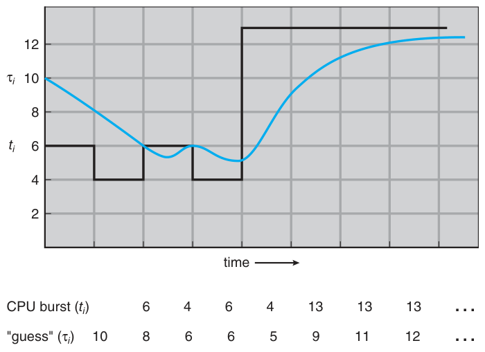
Practice练习
Q1. (Calculation) Processes arrive as P1 (0.0, 8), P2 (0.4, 4), and P3 (1.0, 1). Using nonpreemptive scheduling, compute average turnaround time for: (a) FCFS; (b) SJF (deciding strictly with knowledge available at each decision); (c) “future-knowledge scheduling” (idle CPU for the first 1.0 unit, then SJF).Q1.（计算）已知 P1 (0.0, 8)、P2 (0.4, 4)、P3 (1.0, 1)，均采用非抢占式调度且只能依据当下信息决策，求以下方案的平均周转时间：（a）FCFS；（b）SJF；（c）头 1 个单位保持 CPU 空闲后再启用 SJF（“全知调度”）。
Answer
- FCFS: P1 (0–8), P2 (8–12), P3 (12–13). Turnaround times: \(8, 12-0.4=11.6, 13-1.0=12\); average \(= 31.6/3 \approx 10.53\).FCFS：运行 P1 (0–8)、P2 (8–12)、P3 (12–13)；周转依次为 \(8, 11.6, 12\)，平均 \(31.6/3 \approx 10.53\)。
- SJF: Only P1 is present at \(t=0\), so P1 runs 0–8; then P3 (1) beats P2 (4): P3 (8–9), P2 (9–13). Turnaround: \(8, 13-0.4=12.6, 9-1.0=8\); average \(= 28.6/3 \approx 9.53\).SJF：\(t=0\) 仅 P1 在场只能先跑 P1 (0–8)，结束后选 P3 (8–9) 再 P2 (9–13)；周转依次为 \(8, 12.6, 8\)，平均 \(28.6/3 \approx 9.53\)。
- Future-knowledge (idle 0–1): At \(t=1\) all three are waiting, yielding P3 (1–2), P2 (2–6), P1 (6–14):
Turnaround: \(14, 6-0.4=5.6, 2-1.0=1\); average \(= 20.6/3 \approx 6.87\). Wait-free short jobs shrink the average substantially—greedy nonpreemptive SJF lacks lookahead.全知调度：\(t=0\text{–}1\) 空等至三人全员到齐后跑 P3 (1–2)、P2 (2–6)、P1 (6–14)，周转依次为 \(14, 5.6, 1\)，平均降至 \(20.6/3 \approx 6.87\)（说明在线非抢占 SJF 无法预知即将抵达的短作业，故未必全局最优）。| idle | P3 | P2 | P1 | 0 1 2 6 14
Q2. (Calculation) Given \(\alpha=0.8\), \(\tau_0=10\text{ ms}\), and bursts 6, 12, 14, 4 ms, compute \(\tau_1,\dots,\tau_4\). Also interpret the limiting settings (i) \(\alpha=0, \tau_0=100\text{ ms}\) and (ii) \(\alpha=0.99, \tau_0=10\text{ ms}\).Q2.（计算）取 \(\alpha=0.8, \tau_0=10\text{ ms}\)，实测 CPU 区间为 6, 12, 14, 4 ms，计算 \(\tau_1\dots\tau_4\)，并解释极值参数（i）\(\alpha=0, \tau_0=100\text{ ms}\) 与（ii）\(\alpha=0.99, \tau_0=10\text{ ms}\) 的行为特征。
Answer
- Predictions: \(\tau_1 = 0.8(6)+0.2(10) = 6.8\text{ ms}\); \(\tau_2 = 0.8(12)+0.2(6.8) = 10.96\text{ ms}\); \(\tau_3 = 0.8(14)+0.2(10.96) = 13.392\text{ ms}\); \(\tau_4 = 0.8(4)+0.2(13.392) = 5.878\text{ ms}\).预测序列：\(\tau_1=6.8\text{ ms}\)、\(\tau_2=10.96\text{ ms}\)、\(\tau_3=13.392\text{ ms}\)、\(\tau_4=5.878\text{ ms}\)。
- (i) \(\alpha=0, \tau_0=100\text{ ms}\): \(\tau_{n+1}=\tau_n=100\text{ ms}\) permanently; recent history is ignored so all processes look identical and SJF degenerates into FCFS.(i) \(\alpha=0\)：新实测毫无权重，\(\tau\) 恒死守 100 ms，所有进程预测长度全相等，SJF 退化成 FCFS。
- (ii) \(\alpha=0.99, \tau_0=10\text{ ms}\): \(\tau_{n+1}\approx t_n\); almost all prior history vanishes immediately, reacting rapidly to shifts yet swinging wildly on noisy spikes.(ii) \(\alpha=0.99\)：基本只盯刚结束的那一次区间 \(t_n\)，初猜和远期历史迅速归零；对突变极其灵敏，但极易受偶发抖动干扰。
Q3. (Calculation) Given P1 (0, 9), P2 (1, 3), P3 (2, 6), and P4 (4, 2), draw Gantt charts for SRTF and nonpreemptive SJF, giving full metrics for SRTF and avg waiting time for SJF.Q3.（计算）已知 P1 (0, 9)、P2 (1, 3)、P3 (2, 6)、P4 (4, 2)，画出 SRTF 与非抢占式 SJF 的甘特图，列出 SRTF 各项指标并给出 SJF 的平均等待时间。
Answer
SRTF: At \(t=1\), P2 (3) preempts P1 (8 left). At \(t=2\), P3 (6) does not preempt P2 (2 left). P2 finishes at \(t=4\) right as P4 (2) arrives; P4 runs 4–6, then P3 (6–12) and P1 (12–20):SRTF：\(t=1\) P2 抢占剩 8 ms 的 P1；\(t=2\) P3 (6) 抢不动剩 2 ms 的 P2；\(t=4\) P2 完结同时 P4 (2) 到达，依次跑完 P4、P3、P1：
| P1 | P2 | P4 | P3 | P1 |
0 1 4 6 12 20
| Process进程 | Finish完成 | Turnaround周转时间 | Waiting等待时间 | Response响应时间 |
|---|---|---|---|---|
| P1 | 20 | 20 − 0 = 20 | 20 − 9 = 11 | 0 − 0 = 0 |
| P2 | 4 | 4 − 1 = 3 | 3 − 3 = 0 | 1 − 1 = 0 |
| P3 | 12 | 12 − 2 = 10 | 10 − 6 = 4 | 6 − 2 = 4 |
| P4 | 6 | 6 − 4 = 2 | 2 − 2 = 0 | 4 − 4 = 0 |
SRTF averages: waiting 3.75 ms, turnaround 8.75 ms, response 1.0 ms.SRTF 均值：等待 3.75 ms、周转 8.75 ms、响应 1.0 ms。
Nonpreemptive SJF: P1 runs uninterrupted 0–9, then P4 (9–11), P2 (11–14), and P3 (14–20):非抢占式 SJF：P1 在 0–9 一跑到底，之后按长度依次 P4 (2)、P2 (3)、P3 (6)：
| P1 | P4 | P2 | P3 |
0 9 11 14 20
Waiting times: P1 = 0, P2 = 11 − 1 = 10, P3 = 14 − 2 = 12, P4 = 9 − 4 = 5 → avg waiting = 6.75 ms (nearly double SRTF).各进程等待：P1=0, P2=10, P3=12, P4=5，平均等待 6.75 ms（接近 SRTF 的两倍）。
Round-robin and priority scheduling ★★★轮转与优先级调度
Goal. Trace round-robin and priority scheduling (both preemptive and nonpreemptive), calculate waiting and turnaround metrics, and explain starvation and aging.目标。熟练演算时间片轮转（RR）与抢占/非抢占式优先级调度，计算等待与周转时间，并掌握饥饿及老化对策。
Step 1: round robin (RR)第 1 步：时间片轮转调度（RR）
Core idea: RR turns FCFS into a fair preemptive carousel—each process runs for at most one fixed time quantum \(q\) before yielding to the next ready process and rejoining the tail of the ready queue.核心思路：RR 是“带定时抢占的 FCFS”——每个进程每次最多只跑一个固定时间片 \(q\)，到点没跑完或阻塞就让位给下一位，并回到循环队列队尾等待下一轮。
Designed specifically for interactive time-sharing systems, round-robin (RR) scheduling（轮转调度）assigns a fixed time quantum（时间片）\(q\)—typically 10–100 ms—and treats the ready queue as a circular FIFO ring. Trace it by hand carefully:轮转调度（RR）专为分时交互系统打造，通常取时间片 \(q=10\text{–}100\text{ ms}\)。手算时最容易错在队列顺序，请严格按这五步推进：
- Enqueue processes into the circular FIFO queue as they arrive.按到达顺序将进程放入循环 FIFO 就绪队列；
- Dispatch the head process and run it for \(\min(q, \text{remaining burst})\).每次取队首进程运行，时长取 \(q\) 与其剩余 CPU 区间的较小值；
- Place any new arrivals that appear during (or right at the end of) that slice into the tail first, then push the preempted process behind them.本片运行期间（包括恰好在片尾那一刻）新到达的进程先入队尾，刚刚用完时间片被抢占的进程再排在它们之后；
- Record the remaining burst time of the preempted process.同步更新该进程的剩余时间；
- Repeat until all processes finish.重复上述步骤直至队列清空。
Tracing the four sample processes from Section 3.3 with \(q = 4\text{ ms}\): during P1's first 4 ms slice (\(0\text{–}4\)), P2, P3, and P4 arrive at \(t=1, 2, 3\), so the ready queue becomes [P2, P3, P4, P1] at \(t=4\):沿用 3.3 节的四个样本进程并设 \(q=4\text{ ms}\)：P1 首轮运行 \(0\text{–}4\) 期间，P2、P3、P4 先后到达，故时刻 4 时的就绪队列顺序为 [P2, P3, P4, P1]：
| P1 | P2 | P3 | P4 | P1 | P3 | P4 | P3 |
0 4 8 12 16 20 24 25 26
| Process进程 | Finishes完成 | Turnaround = finish − arrival周转 = 完成 − 到达 | Waiting = turnaround − burst等待 = 周转 − CPU 区间 | Response = first start − arrival响应 = 首启 − 到达 |
|---|---|---|---|---|
| P1 | 20 | 20 − 0 = 20 ms | 20 − 8 = 12 ms | 0 − 0 = 0 ms |
| P2 | 8 | 8 − 1 = 7 ms | 7 − 4 = 3 ms | 4 − 1 = 3 ms |
| P3 | 26 | 26 − 2 = 24 ms | 24 − 9 = 15 ms | 8 − 2 = 6 ms |
| P4 | 25 | 25 − 3 = 22 ms | 22 − 5 = 17 ms | 12 − 3 = 9 ms |
Averages: waiting \(11.75\text{ ms}\), turnaround \(18.25\text{ ms}\), and response \(4.5\text{ ms}\).平均值：等待时间 \(11.75\text{ ms}\)，周转时间 \(18.25\text{ ms}\)，响应时间 \(4.5\text{ ms}\)。
Choosing \(q\) balances responsiveness against switching cost: as \(q \to \infty\), RR degenerates into nonpreemptive FCFS; as \(q \to s\), context switches consume most of the CPU. Comparing all four algorithms on the same dataset illustrates the classic trade-off:时间片 \(q\) 的大小直接左右性能走势：若 \(q\) 极大（大于所有作业区间），RR 退化为 FCFS；若 \(q\) 极小接近切换耗时 \(s\)，CPU 光忙着切换不干正事。将 3.3 节同一样本下的四种算法汇总对比：
| Algorithm (same four processes)调度算法（同一组进程） | Avg waiting (ms)平均等待（ms） | Avg turnaround (ms)平均周转（ms） | Avg response (ms)平均响应（ms） |
|---|---|---|---|
| FCFS | 8.75 | 15.25 | 8.75 |
| SJF (nonpreemptive)SJF（非抢占式） | 7.75 | 14.25 | 7.75 |
| SRTF | 6.5 | 13 | 4.25 |
| RR (\(q=4\)) | 11.75 | 18.25 | 4.5 |
Notice why RR posts the longest average waiting and turnaround times (\(11.75\text{ ms}, 18.25\text{ ms}\)): slicing forces long jobs to wait across multiple rounds. Its decisive advantage is fairness and worst-case response latency—everyone gets a first slice within 9 ms (vs. 15 ms in SRTF and 18 ms in FCFS).不难发现：RR 在平均等待与平均周转上居然排垫底，因为所有较长进程都被打散拖慢了总完成节奏；但它真正的杀手锏在于极佳的响应公平性——最惨的进程 9 ms 内也能见到第一轮 CPU（而 SRTF 最高等 15 ms，FCFS 更是高达 18 ms）。
Step 2: priority scheduling第 2 步：优先级调度
Core idea: each process carries a priority rank and the highest-priority ready process runs (breaking ties by FCFS); if starvation threatens low-priority jobs, aging lifts their priority over time.核心思路：每次选当前优先级最高的就绪进程运行（同级按 FCFS）；为防止低优先级进程长期饿死，通过“老化”随等待时间逐步拔高其优先级。
Priority scheduling（优先级调度）assigns every process a numeric priority (SJF is simply priority scheduling using \(1/\tau\) as priority). Because systems disagree on whether 0 is highest or lowest, always check the problem convention first; general examples here use “smaller number = higher priority.” It comes in both nonpreemptive (a newly arrived higher-priority job waits at the head of the queue until the current burst ends) and preemptive (it takes the CPU immediately) forms. Trace it step by step:优先级调度为进程赋予权重数值（事实上 SJF 正是取“预测区间倒数”作为优先级的特例）。务必留意：不同教材或考题对“数字大小”含义相反，做题先看清约定（本节默认“数字越小优先级越高”）。它分非抢占（新到的高优进程排到队首等待）与抢占式（立即赶走低优进程），手算规则如下：
- At each decision point, list ready processes and pick the highest priority (ties broken via FCFS).每次决策列出就绪进程并挑选最高优先级者，同级按 FCFS；
- If preemptive, inspect every new arrival: preempt only if its priority is strictly higher than the running process's.若是抢占式，新到达者仅在优先级严格高于当前运行者时抢占（同级不抢）；
- Compute \(T_{\text{turn}} = T_{\text{finish}} - T_{\text{arrival}}\) and \(T_{\text{wait}} = T_{\text{turn}} - T_{\text{burst}}\).计算完成后的周转与等待时间。
Consider P1 (arrival 0, burst 6, priority 3), P2 (2, 4, 1), P3 (3, 2, 2), and P4 (5, 3, 1): under preemptive scheduling, P2 (pri 1) preempts P1 at \(t=2\), P3 (pri 2) cannot preempt P2, and P4 (pri 1, equal to P2) waits until P2 ends at \(t=6\):以 P1 (到达 0, 区间 6, 优先级 3)、P2 (2, 4, 1)、P3 (3, 2, 2)、P4 (5, 3, 1) 为例：抢占式下 P2 于 \(t=2\) 抢占 P1；P3 (2) 与同级 P4 (1) 均不能抢占正在跑的 P2：
Preemptive:
| P1 | P2 | P4 | P3 | P1 |
0 2 6 9 11 15
Nonpreemptive:
| P1 | P2 | P4 | P3 |
0 6 10 13 15
| Process进程 | Preemptive: finish抢占式：完成 | Turnaround周转 | Waiting等待 | Nonpreemptive: finish非抢占式：完成 | Turnaround周转 | Waiting等待 |
|---|---|---|---|---|---|---|
| P1 | 15 | 15 − 0 = 15 | 15 − 6 = 9 | 6 | 6 − 0 = 6 | 6 − 6 = 0 |
| P2 | 6 | 6 − 2 = 4 | 4 − 4 = 0 | 10 | 10 − 2 = 8 | 8 − 4 = 4 |
| P3 | 11 | 11 − 3 = 8 | 8 − 2 = 6 | 15 | 15 − 3 = 12 | 12 − 2 = 10 |
| P4 | 9 | 9 − 5 = 4 | 4 − 3 = 1 | 13 | 13 − 5 = 8 | 8 − 3 = 5 |
Preemptive yields avg wait \((9 + 0 + 6 + 1)/4 = 4.0\text{ ms}\) and avg turnaround \(7.75\text{ ms}\); nonpreemptive gives avg wait \((0 + 4 + 10 + 5)/4 = 4.75\text{ ms}\) and avg turnaround \(8.5\text{ ms}\).抢占式平均等待 \(4.0\text{ ms}\)、周转 \(7.75\text{ ms}\)；非抢占式分别为 \(4.75\text{ ms}\) 与 \(8.5\text{ ms}\)。
Starvation and aging: A steady stream of high-priority arrivals can trap low-priority processes indefinitely—a fatal liveness bug called starvation（饥饿，or indefinite blocking）. The classic fix is aging（老化）, which gradually increases the priority of processes waiting long in the system (e.g., decrementing a priority number 0–127 by 1 every second guarantees eventual elevation to priority 0 in 127 s).饥饿与老化：若高优先级进程源源不断地涌入，低优先级进程可能无限期苦等——这就是饥饿（无限期阻塞）。标准解药是老化（aging）：定期提升久等进程的优先级（例如在 0 高～127 低体系下每秒将等待进程优先级数减 1，哪怕最底层 127 号熬 127 秒也必升至 0 级跑上 CPU）。
Priority with round robin: Real schedulers combine both schemes—always running the highest-priority non-empty queue, while round-robin sharing CPU time among processes at the same priority level (preempted processes return to the tail of their own priority queue).优先级 + RR 混合调度：现实 OS 常组合两招——跨优先级按严格高低抢占，同优先级队列内部则采用时间片轮转公平分片。
Practice练习
Q1. (Calculation) Processes P1–P5 arrive at \(t=0\) in order, with burst (priority): P1 5 (4), P2 3 (1), P3 1 (2), P4 7 (2), P5 4 (3), where a larger number = higher priority. (a) Draw Gantt charts for FCFS, SJF, nonpreemptive priority, and RR (\(q=2\)). (b) Compute turnaround and (c) waiting times per process. (d) Which achieves minimum avg waiting time?Q1.（计算）P1–P5 按此顺序均于 \(t=0\) 到达，CPU 区间（优先级，大数优先）为 P1 5 (4)、P2 3 (1)、P3 1 (2)、P4 7 (2)、P5 4 (3)。（a）画 FCFS、SJF、非抢占优先级、RR（\(q=2\)）甘特图；（b）求各周转时间；（c）求各等待时间；（d）哪种平均等待最小？
Answer
- Gantt charts (at equal priority 2, P3 arrived before P4):
各算法甘特图见上（同为优先级 2 时，按序 P3 在 P4 之前）。FCFS: | P1 | P2 | P3 | P4 | P5 | 0 5 8 9 16 20 SJF: | P3 | P2 | P5 | P1 | P4 | 0 1 4 8 13 20 Priority (larger = higher): | P1 | P5 | P3 | P4 | P2 | 0 5 9 10 17 20 RR (q = 2): | P1 | P2 | P3 | P4 | P5 | P1 | P2 | P4 | P5 | P1 | P4 | P4 | 0 2 4 5 7 9 11 12 14 16 17 19 20 - & (c) Turnaround and waiting times (order: P1, P2, P3, P4, P5):
周转时间与等待时间统计汇总见上表（全员 0 时刻到达，周转即完成时刻，再减各自 CPU 区间即等待时间）。
Algorithm算法 Turnaround周转时间 Waiting等待时间 Avg waiting平均等待 FCFS 5, 8, 9, 16, 20 0, 5, 8, 9, 16 7.6 SJF 13, 4, 1, 20, 8 8, 1, 0, 13, 4 5.2 Priority优先级调度 5, 20, 10, 17, 9 0, 17, 9, 10, 5 8.2 RR 17, 12, 5, 20, 16 12, 9, 4, 13, 12 10.0 - (d) SJF achieves the lowest average waiting time (5.2 ms), guaranteed optimal when all jobs are ready simultaneously.(d) SJF 平均等待时间最短（5.2 ms），这也是全员同时就绪前提下的理论必然结论。
Q2. (Calculation) Under RR, a system runs 10 I/O-bound tasks and 1 CPU-bound task indefinitely. Each I/O-bound task runs 1 ms before issuing a 10 ms I/O operation, and each context switch costs 0.1 ms. Compute CPU utilization when (a) \(q = 1\text{ ms}\) and (b) \(q = 10\text{ ms}\).Q2.（计算）系统长期运行 10 个 I/O 密集型与 1 个 CPU 密集型任务，采用 RR 调度。I/O 任务每算 1 ms 即发起耗时 10 ms 的 I/O，上下文切换每次耗时 0.1 ms。计算（a）\(q=1\text{ ms}\) 与（b）\(q=10\text{ ms}\) 时的 CPU 利用率。
Answer
- \(q = 1\text{ ms}\): Every task executes for 1 ms (I/O tasks block; CPU task is preempted) followed by a 0.1 ms context switch, so useful CPU fraction is \(1 / (1 + 0.1) \approx \mathbf{90.9\%}\) (one round of 11 dispatches takes 12.1 ms > 10 ms I/O, so no idle time occurs).\(q = 1\text{ ms}\)：每个任务跑完 1 ms 就伴随 0.1 ms 切换，故利用率 = \(1/1.1 \approx \mathbf{90.9\%}\)（11 轮总周期 12.1 ms > 10 ms I/O 时长，各 I/O 任务回队时必已就绪，CPU 永不闲）。
- \(q = 10\text{ ms}\): Each of the 10 I/O tasks still blocks after 1 ms + 0.1 ms switch (\(10\times 1.1 = 11\text{ ms}\)), while the CPU task runs all 10 ms + 0.1 ms switch (\(10.1\text{ ms}\)). One cycle spans \(21.1\text{ ms}\) with \(10\times 1 + 10 = 20\text{ ms}\) of useful work, giving utilization \(20 / 21.1 \approx \mathbf{94.8\%}\).\(q = 10\text{ ms}\)：10 个 I/O 任务仍是跑 1 ms 主动阻塞（耗 \(10\times 1.1=11\text{ ms}\)），CPU 任务跑满 10 ms + 0.1 ms 切换；单周期总长 21.1 ms 内有效计算 20 ms，故利用率 = \(20/21.1 \approx \mathbf{94.8\%}\)。
Multilevel queue and feedback queue scheduling ★★★多级队列与多级反馈队列调度
Goal. Trace both multilevel queue (MLQ) and multilevel feedback queue (MLFQ) schedules on Gantt charts, and state when processes demote or stay in their current queue.目标。能手工画出多级队列（MLQ）与多级反馈队列（MLFQ）的甘特图，并准确说明进程何时降级、何时保留原队。
Step 1: multilevel queue (MLQ)第 1 步：多级队列（MLQ）
Core idea: partition processes permanently into prioritized queues by workload type (real-time, system, interactive, batch), where each queue uses its own scheduler and higher queues preempt lower ones.核心思路：按进程身份预先划分好固定优先级队列（如实时、系统、交互、批处理），各队列自选内部算法，且高层队列严格优先抢占低层队列。
Rather than scheduling every process in one giant ready list, a multilevel queue (MLQ)（多级队列）groups processes permanently by category—such as foreground interactive jobs (RR) vs. background batch jobs (FCFS)—and arbitrates between queues via fixed-priority preemption (lower queues run only when all higher queues are empty). Because processes never switch queues, MLQ has minimal overhead at the cost of inflexibility. Trace it by hand:相比把所有进程塞进同一张列表，多级队列把固定属性相同的进程分进各自队列（例如前台交互用 RR、后台批处理用 FCFS），跨队列则按“固定高优先级抢占”仲裁（所有高层队列彻底空了，底层才能上 CPU）。进程一旦落队便终身不挪窝，调度极轻快但也偏死板。手算四步：
- Assign each process permanently to its designated queue.按题干设定把各进程放进所属固定队列；
- At every decision point, select the highest non-empty queue and follow that queue's internal policy.每次决策只盯当前最高层非空队列并执行其内部算法；
- If a process arrives in a strictly higher queue, it immediately preempts a lower-queue process.一旦更高层队列有新人抵达，立刻抢占当前正在跑的低层队列进程；
- Return a preempted lower-queue process to the head of its own queue if it arrived earlier than siblings (e.g., inside an FCFS queue).被更高层抢走 CPU 的低层进程回到本队列队首（比如在 FCFS 队列中仍保有早到优势）。
| Process进程 | Assigned queue所属队列 | Arrival到达 | CPU burstCPU 区间 |
|---|---|---|---|
| B1 | Background (FCFS)后台（FCFS） | 0 | 6 |
| B2 | Background (FCFS)后台（FCFS） | 1 | 2 |
| F1 | Foreground (RR, \(q=2\) ms)前台（RR，\(q=2\) ms） | 2 | 3 |
| F2 | Foreground (RR, \(q=2\) ms)前台（RR，\(q=2\) ms） | 3 | 2 |
B1 runs alone from 0–2 until F1 enters the higher foreground queue and preempts it. F1 and F2 round-robin until finishing at 7, after which background FCFS resumes B1 (0–2 already run, 4 remaining) ahead of B2:B1 独跑 0–2 后被新到达前台的 F1 抢占；F1 与 F2 在前台轮转至时刻 7 全部完结，后台队列才得以重启，先前已跑完 2 ms 的 B1（剩 4 ms）按先到先服务排在 B2 之前完成：
| B1 | F1 | F2 | F1 | B1 | B2 |
0 2 4 6 7 11 13
| Process进程 | Finishes完成 | Turnaround = finish − arrival周转 = 完成 − 到达 | Waiting = turnaround − burst等待 = 周转 − CPU 区间 |
|---|---|---|---|
| B1 | 11 | 11 − 0 = 11 ms | 11 − 6 = 5 ms |
| B2 | 13 | 13 − 1 = 12 ms | 12 − 2 = 10 ms |
| F1 | 7 | 7 − 2 = 5 ms | 5 − 3 = 2 ms |
| F2 | 6 | 6 − 3 = 3 ms | 3 − 2 = 1 ms |
Average waiting time = \((5 + 10 + 2 + 1)/4 = 4.5\text{ ms}\); average turnaround time = \((11 + 12 + 5 + 3)/4 = 7.75\text{ ms}\).平均等待时间 = \(4.5\text{ ms}\)；平均周转时间 = \(7.75\text{ ms}\)。
Step 2: multilevel feedback queue (MLFQ)第 2 步：多级反馈队列（MLFQ）
Core idea: MLFQ automatically separates interactive and CPU-bound jobs without needing burst estimates—new jobs start in the top short-quantum queue and sink one level whenever they exhaust an entire quantum.核心思路：MLFQ 无需提前预知 CPU 区间长度也能自动区分“短交互”与“长计算”——所有新人一律进最顶层快车道，谁用满一整个时间片还没完就自动降一级。
A multilevel feedback queue (MLFQ)（多级反馈队列）allows processes to migrate across queues based on observed behavior. Processes with short CPU bursts (I/O-bound and interactive tasks) finish or block before exhausting small top-tier quanta and stay at high priority, whereas CPU hogs sink into lower queues with longer quanta—where aging can promote long waiters back up to prevent starvation.多级反馈队列（MLFQ）放开了队列壁垒：短 CPU 区间进程总能在顶层小时间片内跑完或阻塞从而继续享有高优先权；CPU 消耗型任务每次耗尽时间片便逐层下沉（配以“老化”提级即可防止底层饿死）。
Textbook three-queue structure: Queue 0 (RR, \(q=8\text{ ms}\)), Queue 1 (RR, \(q=16\text{ ms}\)), and Queue 2 (FCFS), served strictly top-down.经典三层教材架构自上而下为：队列 0（RR，\(q=8\text{ ms}\)）、队列 1（RR，\(q=16\text{ ms}\)）、队列 2（FCFS），高层清空才轮到低层：

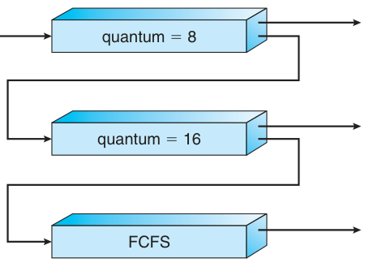
MLFQ is the most general and flexible scheduler, tuned by five defining parameters:MLFQ 通用性最强、调参最细，完全由以下五个参数决定行为：
- Number of queues.队列层数；
- Scheduling algorithm assigned to each queue.各层队列内部的调度算法；
- Rule determining when to upgrade (promote) a process (aging).将进程向高层升级的条件（老化规则）；
- Rule determining when to demote a process to a lower queue.将进程向低层降级的条件（时间片耗尽等）；
- Rule choosing which queue a process enters when needing service.进程重新需要 CPU 服务时最初进入哪一层队列的规则。
Trace MLFQ systematically by following these five rules:按以下五步追踪 MLFQ 状态，清晰记录每个决策时刻各队列成员即可零失误：
- Admit every newly arriving process into Queue 0.所有新进程统一入队列 0；
- Always dispatch from the highest-priority non-empty queue.始终调度当前最高层非空队列；
- If a process exhausts its entire quantum without finishing, demote it to the tail of the next lower queue.若进程把当层完整时间片用完仍未结束，降一级并排入下层队尾；
- If preempted early by a new arrival in a higher queue, move it to the tail of its current queue (keeping its tier and receiving a full quantum next time, per standard convention).若因高层来了新人而半路被抢占，不降级，退回自身所在当前队列的队尾（遵循考题常见约定，下次仍领完整时间片）；
- Write out the contents of Q0, Q1, and Q2 at every decision point.每逢事件变化立刻写出 Q0/Q1/Q2 实时名单。
| Algorithm算法 | Preemptive是否抢占 | Starvation饥饿风险 | Favors偏爱对象 | Main weakness主要短板 |
|---|---|---|---|---|
| FCFS | No否 | No否 | Early arrivals, long bursts先到者、长 CPU 区间 | Convoy effect; poor interactivity护航效应；交互响应差 |
| SJF | No否 | Yes (long jobs)有（长作业） | Short bursts短作业 | Needs burst prediction; cannot preempt long active bursts依赖长度预测；没法打断已开跑的长作业 |
| SRTF | Yes是 | Yes (long jobs)有（长作业） | Short bursts, even dynamic arrivals短作业（含中途新到短作业） | Needs prediction; higher context-switch overhead需长度预测；切换较多 |
| RR | Yes是 | No否 | Response time fairness交互体验与公平响应时间 | Higher average waiting/turnaround; sensitive to \(q\)平均等待/周转偏长；\(q\) 选值敏感 |
| Priority优先级调度 | Either均可 | Yes (low priority; cured by aging)有（靠老化解决） | Critical processes高优先关键进程 | Starvation; priority-assignment tuning低级易饥饿；优先级定权难 |
| Multilevel queue多级队列 | Yes (between queues)跨队列是 | Yes (lower queues)有（底层队列） | Fixed workload tiers按进程类型分治 | Rigid—processes cannot adapt queues队列终身制，缺乏弹性 |
| Multilevel feedback多级反馈队列 | Yes是 | Possible; aging prevents it可能（老化可防） | I/O-bound & interactive jobsI/O 密集型与交互进程 | Complex parameter tuning; can be gamed五个参数难调；易被“临超时阻塞”钻空子 |
Practice练习
Q1. (Trace) An MLFQ has Queue 0 (RR, \(q=8\)), Queue 1 (RR, \(q=16\)), and Queue 2 (FCFS), strictly prioritized top-down. Arrivals enter Queue 0; using an entire quantum demotes one level; preemption by a higher queue sends the victim to the tail of its own queue with a full quantum next time. Processes (arrival, burst): P1 (0, 40), P2 (5, 6), P3 (10, 20), P4 (30, 5). Draw the Gantt chart and compute turnaround and waiting times.Q1.（手工演算）某三级反馈队列包含 Q0（RR，\(q=8\)）、Q1（RR，\(q=16\)）与 Q2（FCFS），高层严格抢占低层；用完时间片降一级，被上层抢占者退本队尾（下次重领满片）。进程（到达，CPU 区间）：P1 (0, 40)、P2 (5, 6)、P3 (10, 20)、P4 (30, 5)。画出甘特图并求周转和等待时间。
Answer
- 0–8: P1 uses its full 8 ms Q0 quantum (32 left) → demotes to Q1. Meanwhile P2 arrived at 5 in Q0.0–8：P1 在 Q0 用满 8 ms（剩 32）降入 Q1；P2 已在 5 时刻进 Q0。
- 8–22: P2 finishes in Q0 (8–14). P3 arrived at 10 in Q0, runs 14–22 (8 ms used, 12 left) → demotes to Q1 behind P1.8–22：P2 在 Q0 跑完（8–14）；10 时刻抵达的 P3 跑满 Q0 的 8 ms（14–22，剩 12）→ 降入 Q1 排 P1 后。
- 22–35: P1 starts a 16 ms Q1 slice at 22, but P4 arrives in Q0 at 30 and preempts P1 (P1 ran 8 ms, 24 left → moves to Q1 tail behind P3). P4 finishes in Q0 during 30–35.22–35：P1 于 22 跑 Q1，到 30 时 P4 杀入 Q0 抢占它（P1 已跑 8 ms 还剩 24 → 退 Q1 队尾排 P3 后）；P4 于 30–35 在 Q0 跑完。
- 35–71: Q1 dispatches P3 (35–47, finishes its remaining 12 ms), then P1 exhausts a full 16 ms Q1 slice (47–63, 8 left) → demotes to Q2 (FCFS) and finishes 63–71.35–71：Q1 让 P3 用 12 ms 完结（35–47）；随后 P1 用满 16 ms（47–63，剩 8）降入 Q2 并于 63–71 结束。
| P1 | P2 | P3 | P1 | P4 | P3 | P1 | P1 |
0 8 14 22 30 35 47 63 71
Turnaround: P1 = 71, P2 = 9, P3 = 37, P4 = 5 ms. Waiting: P1 = 71 − 40 = 31, P2 = 3, P3 = 17, P4 = 0 ms → avg waiting = 12.75 ms.周转时间：P1=71, P2=9, P3=37, P4=5 ms；等待时间：P1=31, P2=3, P3=17, P4=0 ms，平均等待 12.75 ms。
Q2. (Calculation) Traditional UNIX recalculates priorities once per second via \(\text{priority} = (\text{recent CPU usage})/2 + \text{base}\) with \(\text{base} = 60\) (higher number = lower priority). Recent CPU usage is 40 (P1), 18 (P2), and 10 (P3). Compute the new priorities, state whether UNIX lowers or raises a CPU-bound job's relative priority, and explain why CPU-bound jobs still avoid permanent starvation.Q2.（计算）传统 UNIX 调度器每秒按 \(\text{priority} = (\text{recent CPU usage})/2 + 60\) 重算优先级（数值越大优先级越低）。若 P1、P2、P3 的近期 CPU 用量为 40、18、10，求新优先级，并说明该机制对 CPU 密集型任务如何调权及为何不会将其饿死。
Answer
New priorities: P1 = \(40/2 + 60 = \mathbf{80}\), P2 = \(18/2 + 60 = \mathbf{69}\), P3 = \(10/2 + 60 = \mathbf{65}\).新优先级分别为：P1 = 80、P2 = 69、P3 = 65。
Because larger numbers represent lower priorities, P1 (which consumed the most CPU recently) suffers the highest penalty (80)—so UNIX lowers CPU-bound processes' priority relative to short-burst I/O-bound jobs. However, CPU-bound processes cannot starve forever: while waiting in the ready queue, their recent CPU usage decays toward 0 every interval, pulling their priority back down toward 60 until they outrank idle processes (built-in aging).数值大反而优先权低，因此刚刚猛吃 CPU 的 P1 被压到最低优先权（80），而很少占 CPU 的 I/O 密集型任务稳占优势。同时系统内置了“衰减老化”机制：CPU 密集型进程在排队等待期间不占 CPU，其近期用量持续衰减归零，优先级数回落向 60 从而最终重新夺回运行权，绝不会永久饿死。
Thread scheduling ★线程调度
On modern operating systems, the kernel schedules kernel-level threads directly onto CPUs, whereas user-level threads managed by a thread library must first be mapped onto kernel threads or LWPs (Section 2.3). Because two schedulers may be involved, CPU competition occurs at two distinct levels, known as contention scopes（竞争范围）.在现代操作系统中，内核直接将内核级线程调度到 CPU 上，而由线程库管理的用户级线程则需先映射到内核线程或 LWP（见第 2.3 节）。这种两层映射关系使 CPU 竞争分化为两个层面，称为竞争范围。
| Process-contention scope (PCS)进程竞争范围（PCS） | System-contention scope (SCS)系统竞争范围（SCS） | |
|---|---|---|
| Scheduler调度主体 | Thread library maps and schedules user-level threads onto available LWPs线程库将用户级线程调度到可用的 LWP 上 | OS kernel schedules kernel-level threads onto physical CPUs内核将内核级线程调度到物理 CPU 上 |
| Competing pool竞争对象 | Threads belonging to the same process同一进程内部的各个线程 | All runnable threads across the entire system整个系统中的所有可运行线程 |
| Thread models适用模型 | Many-to-one and many-to-many models多对一与多对多模型 | All models; the only scope in the one-to-one model (Windows, Linux)所有模型；且为一对一模型唯一支持的范围（如 Windows、Linux） |
| Priority rules优先级规则 | Assigned by the programmer; the highest-priority runnable thread runs and preempts lower ones, with no guaranteed time slicing among equal priorities由程序员显式设定；最高优先级的可运行线程执行并可抢占低优先级线程，但同优先级之间不保证时间片轮转 | Governed by the kernel scheduler policy covered in earlier sections遵循前文介绍的内核调度策略 |
| Pthreads constantPthreads 常量 | PTHREAD_SCOPE_PROCESS |
PTHREAD_SCOPE_SYSTEM |
In Pthreads, a program selects the contention scope via pthread_attr_setscope(). However, because Linux and macOS implement the one-to-one model exclusively, they only permit PTHREAD_SCOPE_SYSTEM.在 Pthreads 中，可通过 pthread_attr_setscope() 指定竞争范围；但由于 Linux 与 macOS 均采用纯粹的一对一模型，因此只支持 PTHREAD_SCOPE_SYSTEM。
Practice练习
Q1. (Concept) Distinguish PCS from SCS scheduling. Which scope applies to a one-to-one threading model?Q1.（概念）区分 PCS 与 SCS 调度，并说明一对一线程模型适用哪一种。
Answer
Under PCS (process-contention scope), the user-level thread library schedules runnable threads belonging to the same process onto available LWPs, typically using programmer-assigned priorities. Under SCS (system-contention scope), the kernel selects among all runnable kernel threads across the entire system to allocate CPU cores. In a one-to-one model (such as Linux and Windows), every user thread maps directly to a dedicated kernel thread, so only SCS scheduling exists.在进程竞争范围（PCS）下，同一进程内的线程互相竞争，由用户级线程库按程序员设定的优先级将其调度到可用 LWP 上；在系统竞争范围（SCS）下，全系统所有可运行内核线程共同参与竞争，由操作系统内核分配 CPU 核心。在一对一模型（如 Linux 和 Windows）中，每个用户线程都直接对应一个内核线程，因此只存在 SCS 调度。
Multiprocessor scheduling ★★多处理器调度
Goal. Contrast common vs. per-core run queues, calculate logical CPUs from hardware threads, and explain why load balancing conflicts with processor affinity.目标。对比全局共享队列与每核私有队列，能由物理核心与硬件线程算出逻辑 CPU 数，并阐明负载均衡与处理器亲和性为何矛盾。
Step 1: organizing ready queues on SMP第 1 步：SMP 多核就绪队列组织
Core idea: modern symmetric multiprocessing (SMP) lets every core schedule itself—either from one lock-protected shared ready queue or from lock-free per-core private queues.核心思路：现代对称多处理（SMP）让所有核心平等自调度——要么共用一把带锁全局队列，要么每核各管一条私有队列。
Unlike legacy asymmetric multiprocessing（非对称多处理）, where a single master CPU handles all OS scheduling and becomes a bottleneck, modern OSes use symmetric multiprocessing (SMP)（对称多处理）so each core executes the scheduler independently using one of two queue designs:早期的非对称多处理由主 CPU 包揽一切调度易成瓶颈，如今通用系统全部采用对称多处理（SMP），各个核心各跑各的调度器，但在队列摆法上有两种路线：

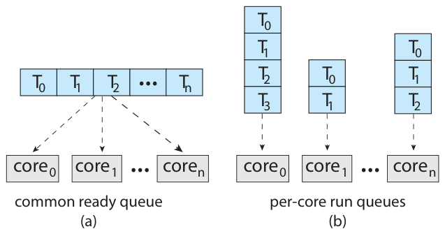
- (a) Common ready queue: Load stays naturally balanced (no core idles while work exists), yet every enqueue/dequeue must acquire a mutex lock—turning the shared queue into a severe scalability bottleneck and destroying cache affinity.（a）全局共享就绪队列：优点是天然负载均衡、绝不会“旱的旱死涝的涝死”；但所有核心每次取任务都抢同一把互斥锁，核数一多立刻成为瓶颈，且线程频换核心、缓存无法复用。
- (b) Per-core run queues (standard design): Eliminates lock contention and preserves warm caches on each core, at the expense of potentially imbalanced queue depths that require periodic load balancing.（b）每核私有运行队列（现代主流）：消除锁竞争且天然保住热缓存，代价是各队列可能冷热不均，须搭配周期性的负载均衡。
Step 2: hardware threads and logical CPUs第 2 步：硬件线程与逻辑 CPU
When a core waits on main memory (a memory stall), its execution pipeline sits idle. To harvest those stalled cycles, modern chips equip each physical core with multiple hardware threads（硬件线程，如超线程 SMT），letting another thread compute while one stalls. The OS treats every hardware thread as an independent logical CPU (e.g., 2 sockets × 4 cores × 2 hardware threads = 16 logical CPUs). Critically, hardware threads sharing one physical core share its ALU pipeline and L1/L2 caches, so running two CPU-bound threads on one core runs slower than spreading them across separate physical cores.当核心因等待主存返回发生内存停顿时，运算流水线白白空转；为此现代 CPU 在每个物理核内做出多套寄存器上下文即硬件线程，趁某线程卡在访存时立刻切另一条流继续算。OS 会把每个硬件线程当成一颗逻辑 CPU（例如 2 颗处理器 × 4 核心 × 2 硬件线程 = 16 个逻辑 CPU）。注意：同核的两个硬件线程共享物理计算管线与缓存，因此两个纯计算任务必须尽量打散放到不同物理核心上。
Step 3: load balancing vs. processor affinity第 3 步：负载均衡与处理器亲和性的拉锯
- Load balancing（负载均衡）spreads work evenly across per-core queues via push migration（推迁移，周期任务把重核进程推向轻核）and pull migration（拉迁移，空闲核主动去繁忙核队里拉人）。负载均衡靠推迁移（后台定期查各核负载、把超载队列里的任务推走）和拉迁移（空闲核心主动向忙碌核心“伸手偷活”）来填平忙闲差异。
- Processor affinity（处理器亲和性）keeps a thread pinned to its previous core to reuse its warm cache—either as soft affinity（软亲和：OS 尽量留原核但不绝对禁止迁移）or hard affinity（硬亲和：强制绑定仅在指定核心集合运行）。处理器亲和性则拼命让线程原地不动吃热缓存红利，分为软亲和（OS 尽量照旧核派发）和硬亲和（系统调用强制限定核集合）。
These two goals fundamentally clash: migrating a thread to balance load instantly invalidates its warm cache (and on NUMA（非统一内存访问）architectures, forces slower remote-node RAM accesses instead of fast local memory). Hence, schedulers migrate only when queue imbalance crosses a meaningful threshold.两者天生矛盾：一做迁移均衡负载，热缓存立刻报废（在 NUMA 架构下甚至还会导致原本访问本地内存变成跨互联总线的高延迟远程访存！）。因此，现代调度器只在失衡超过明显阈值时才勉强迁移。
Practice练习
Q1. (Compare) Compare common vs. per-core run queues in an SMP system, and explain why a common queue limits scalability.Q1.（对比）对比 SMP 中公共运行队列与每核私有运行队列的优劣，并解释公共队列为何会限制多核扩展。
Answer
- Common run queue: Automatically balances work (no core sits idle while ready threads exist), yet requires a lock protecting every enqueue/dequeue; as core count grows, cores stall spinning on queue locks and repeatedly trigger cache misses from losing processor affinity.公共运行队列：天然实现全局负载均衡且实现简单；但随着核心数增加，所有核高频争抢同一把队列锁引发严重串行化瓶颈，且线程频换核心、缓存全部失效率飙升。
- Per-core run queues: Eliminate lock contention and maintain natural processor affinity for warm caches, at the cost of occasional imbalance that must be corrected via push/pull migration (trading off lost cache state upon migration).每核私有运行队列：彻底免锁并天然保留热缓存亲和性，成为现代内核首选；缺点是各核忙闲不均时须动用推/拉迁移，并在迁移时付出重建缓存的代价。
Q2. (Application) A server has 2 processors, each with 4 cores and 2 hardware threads per core. (a) How many logical CPUs does the OS see? (b) Where should two independent CPU-bound threads run? (c) On a NUMA host, why should an unblocked thread resume on its previous CPU?Q2.（应用）服务器有 2 颗物理 CPU，每颗 4 核、每核 2 硬件线程。（a）OS 看到几个逻辑 CPU？（b）两个独立的纯 CPU 计算线程应排在哪里？（c）在 NUMA 机器上，为何刚解除阻塞的线程应尽量回到原先运行的 CPU？
Answer
- \(2 \times 4 \times 2 = \mathbf{16}\) logical CPUs.\(2\times 4\times 2 = \mathbf{16}\) 个逻辑 CPU。
- On two separate physical cores (ideally across separate processors/caches), because sibling hardware threads on one core contend for the same pipeline and caches and run noticeably slower than two distinct cores.应放在两个不同物理核心上（理想情况分属不同共享缓存/插槽），避免在同一核的两个硬件线程上互抢计算管线与缓存。
- Its working set may still warm the previous CPU's cache, and under NUMA its heap/stack pages reside in memory directly attached to that socket—running elsewhere forces costly remote memory fetches over the interconnect.既能直接命高原核残留的缓存，又因 NUMA 下它的内存大概率就近分配在该节点上，回到原核可避免昂贵的跨节点远程内存读取。
Real-time scheduling ★★★实时调度
Goal. Contrast soft vs. hard real-time guarantees, evaluate periodic task sets using the RMS utilization bound and exact response-time recurrence, and construct RMS and EDF schedules.目标。区分软实时与硬实时要求，熟练用 RMS 利用率界限及响应时间递推验证周期任务集可调度性，并手绘 RMS 与 EDF 调度甘特图。
Step 1: soft vs. hard real time, and bounded latencies第 1 步：软/硬实时与两大延迟界限
Soft real-time（软实时）systems merely favor critical tasks over noncritical ones without strict deadline enforcement, whereas hard real-time（硬实时）systems treat a missed deadline as a complete failure. Meeting hard deadlines requires bounding event latency（事件延迟）—the total delay from event occurrence to service start—composed of two critical hardware/OS delays:软实时只保证关键进程享有高优先权、不死守零超时；硬实时则一旦错过截止期就视为彻底失败（等同事故）。为此硬实时系统必须给事件响应总耗时——事件延迟——设立严格最坏上界，其核心构成有二：
- Interrupt latency（中断延迟）: arrival of an interrupt to the start of its interrupt service routine (including time spent with interrupts disabled).中断延迟：中断信号抵达至 ISR 服务例程首条指令开始运行的时间（主要受内核关中断时长拖累）；
- Dispatch latency（分派延迟）: time the dispatcher needs to stop the current process and launch the higher-priority real-time task (kept small via a preemptive kernel).分派延迟：分派程序强行让现役低优任务让位、把实时任务切上去所需的时间（依赖可抢占内核将其压低）。
In hard real-time systems, small average latency is insufficient—both latencies must have deterministic upper bounds.重点注意：硬实时系统看重的不是“平均延迟小”，而是上述两项延迟在最坏情况下也必须严格有界。
Step 2: periodic task model and CPU utilization第 2 步：周期任务模型与利用率
Each periodic task \(i\) is parameterized by processing time \(t_i\), deadline \(d_i\), and period \(p_i\) satisfying \(0 \le t_i \le d_i \le p_i\).每个周期任务由单轮耗时 \(t_i\)、截止期 \(d_i\) 与周期 \(p_i\) 刻画（\(0 \le t_i \le d_i \le p_i\)）。
The hyperperiod（超周期）is the least common multiple of all periods—e.g., \(\operatorname{lcm}(20, 30, 60) = 60\). When all tasks launch together at \(t=0\), any schedule repeats identically every hyperperiod, so verifying deadlines across the first hyperperiod suffices.所有周期的最小公倍数称为超周期（hyperperiod），如 \(\operatorname{lcm}(20,30,60)=60\)。当任务都在 \(t=0\) 同时启动时，整套调度轨迹每隔一个超周期完美重演，因此手算只需检验第一个超周期内是否全部按期完工即可。
Step 3: rate-monotonic scheduling (RMS)第 3 步：速率单调调度（RMS）
Core idea: RMS assigns static priorities strictly inversely proportional to period—shorter period (higher frequency) always gets higher priority, making it optimal among all fixed-priority schedulers.核心思路：RMS 采用“周期越短、固定优先级越高”的静态抢占规则，它是所有静态优先级实时调度算法中理论上最优的一种。
Because higher-frequency tasks run more often, prioritizing shorter periods gives rate-monotonic scheduling (RMS)（速率单调调度）the following famous worst-case utilization guarantee:速率单调调度（RMS）规定谁的周期短谁就是老大（高优先级可随时抢占低优先级）。其最坏情况可调度性拥有著名的充分条件上界：
Test and trace an RMS task set in four steps:考场碰到 RMS 可调度性判定，稳步走这四步：
- Compute total utilization \(U = \sum t_i / p_i\) (if \(U > 1\), immediately impossible).先算总利用率 \(U\)（若 \(U>1\) 直接宣告无解）；
- Check against \(N(2^{1/N}-1)\): if \(U \le\) bound, conclude schedulable at once.若 \(U \le N(2^{1/N}-1)\)，无需画图直接宣布“必可调度”；
- If \(U\) falls between the bound and 1, rank fixed priorities by shortest period and draw the schedule over one hyperperiod (or apply the exact recurrence below).若 \(U\) 落在界限与 1 之间“待定区”，把最短周期设为最高权并手画超周期甘特图（或用下方响应时间递推验证）；
- Verify every released instance finishes before its deadline.核对每个周期实例是否都在截止期内跑完。
Example: P1 has \(p_1=50, t_1=25\) and P2 has \(p_2=80, t_2=35\). Here \(U = 25/50 + 35/80 = 0.9375 > 0.828\) (inconclusive). Assigning higher priority to P1 (shorter period): P1 runs 0–25, P2 runs 25–50 (leaving 10 ms unfinished), P1 preempts at 50–75, and P2 finishes at 85—missing its deadline of 80 despite \(U < 1\)!实例：P1（周期 50，区间 25）与 P2（周期 80，区间 35），总利用率 \(U = 0.5 + 0.4375 = 0.9375 > 0.828\) 落入待定区。P1 周期更短故优先级更高：0–25 跑 P1；25–50 跑 P2（还差 10 ms 没算完就被 50 时刻新释放的 P1 抢占）；直到 75 后 P2 才捡起最后 10 ms 并拖到 85 完工，错过 80 的截止期！
RMS:
| P1 | P2 | P1 | P2 |
0 25 50 75 85 (missed deadline 80!)
When a hyperperiod is awkwardly large, test fixed-priority schedulability algebraically via the exact response-time recurrence:如果超周期实在太长不好画图，也可以用固定优先级的精确响应时间递推式直接算出最坏完工时刻：

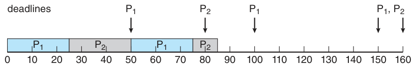
Step 4: earliest-deadline-first (EDF)第 4 步：最早截止期优先调度（EDF）
Core idea: EDF dynamically awards highest priority to whichever runnable job has the nearest absolute deadline, enabling theoretical 100% single-CPU utilization whenever \(U \le 1\).核心思路：EDF 采用动态优先级——眼下谁的“绝对截止时刻”离得最近，谁就享有最高优先权；只要总利用率 \(U \le 1\)，EDF 理论上全都能安排妥当。
Unlike RMS, earliest-deadline-first (EDF)（最早截止期优先）recomputes priority dynamically as deadlines pass and needs neither strict periodicity nor constant burst lengths. Trace EDF by hand cleanly:EDF 无需固定周期或恒定区间也能工作。手算追踪牢记三步：
- At every new release and every job completion, compare the absolute deadline timestamps of all active jobs.每当有新实例释放或旧实例完成时，对比所有就绪作业各自的绝对截止期；
- Run the job with the earliest deadline (a newly released job preempts only if its deadline is strictly earlier than the running job's).挑绝对截止时刻最靠前的作业跑（仅当新人截止期严格更早时才触发抢占）；
- Check every completion timestamp against its deadline.核对每次完工时刻是否早于或等于该次截止期。
Tracing the exact same two tasks (\(U = 0.9375 \le 1\)) where RMS failed: at \(t=50\), P1's second job has deadline 100 whereas active P2 has deadline 80, so P2 is not preempted and finishes safely at 60! At \(t=100\), P1's third job (deadline 150) beats P2's second job (deadline 160) and preempts it cleanly:换 EDF 来救前面 RMS 失败的那组任务（\(U=0.9375\le 1\)）：时刻 50 新出的 P1 实例截止期为 100，比正跑着的 P2（截止期 80）更宽裕，于是 P2 不被打断顺畅于 60 完工；直到 100 时刻 P1 新实例（截止 150）紧迫于 P2（截止 160），才发起抢占，最终全员零失误：
EDF:
| P1 | P2 | P1 | P2 | P1 | P2 |
0 25 60 85 100 125 145
| Job作业实例 | Released释放时刻 | Deadline截止期 | Completes完成时刻 | Met?达标？ |
|---|---|---|---|---|
| P1, job 1P1，第 1 次 | 0 | 50 | 25 | Yes是 |
| P2, job 1P2，第 1 次 | 0 | 80 | 60 | Yes是 |
| P1, job 2P1，第 2 次 | 50 | 100 | 85 | Yes是 |
| P2, job 2P2，第 2 次 | 80 | 160 | 145 | Yes是 |
| P1, job 3P1，第 3 次 | 100 | 150 | 125 | Yes是 |
| Feature特性对比 | Rate-monotonic (RMS)速率单调调度（RMS） | Earliest-deadline-first (EDF)最早截止期优先（EDF） |
|---|---|---|
| Priority优先级 | Static, fixed by task period静态固定（按周期长短排定，终身不变） | Dynamic, updated by nearest absolute deadline动态变化（实时比对绝对截止期） |
| Task model适用任务模型 | Strict periodic tasks with constant bursts要求周期稳定且执行期恒定 | Any task declaring a deadline (periodic or aperiodic)任何能标出截止期的任务（周期/非周期均可） |
| Schedulability test可调度判据 | \(U \le N(2^{1/N} - 1)\) (sufficient only)\(U \le N(2^{1/N} - 1)\)（仅为充分条件） | \(U \le 1\) (necessary & sufficient assuming zero switch cost)\(U \le 1\)（忽略切换开销时为充要条件） |
| CPU utilization ceiling利用率上限 | Worst case drops toward 69.3% (can reach 100% if periods are harmonic multiples)最坏情况保底约 69.3%（若周期呈倍数调和亦可跑满 100%） | 100% in theory (slightly less in practice due to context-switch/ISR overhead)理论上高达 100%（现实受中断与切换耗时拖累略低于 100%） |
Practice练习
Q1. (Calculation) \(P_1\) has period 50 and burst 25; \(P_2\) has period 75 and burst 30 (deadlines equal periods). (a) Determine whether RMS can schedule both tasks and draw its Gantt chart. (b) Trace EDF over one hyperperiod.Q1.（计算）\(P_1\) 周期 50、区间 25；\(P_2\) 周期 75、区间 30（截止期等于周期）。（a）判断 RMS 能否调度并画甘特图；（b）画出一个超周期内的 EDF 调度甘特图。
Answer
\(U = 25/50 + 30/75 = 0.5 + 0.4 = 0.9 > 0.828\) (inconclusive under bound).\(U = 25/50 + 30/75 = 0.9 > 0.828\)（落在待定区）。
- RMS fails: \(P_1\) has higher priority (shorter period). \(P_1\) runs 0–25, \(P_2\) runs 25–50 (25 of 30 done), \(P_1\) preempts 50–75, leaving \(P_2\) to finish at 80—missing its 75 deadline:RMS 失败：\(P_1\) 优先级高，0–25 跑完 \(P_1\)，25–50 跑 \(P_2\)（尚余 5 ms）；\(t=50\) 被新 \(P_1\) 抢占至 75，\(P_2\) 拖到 80 才完工，错过 75 截止期：
| P1 | P2 | P1 | P2 | 0 25 50 75 80 - EDF succeeds over hyperperiod \(H = \operatorname{lcm}(50, 75) = 150\): at \(t=50\), active \(P_2\) (deadline 75) beats new \(P_1\) (deadline 100) and finishes at 55; at \(t=100\), \(P_1\) and \(P_2\) share deadline 150 so \(P_2\) finishes first at 110, \(P_1\) finishes 110–135, leaving 15 units idle (\(1-U = 10\%\)):EDF 全部达标（超周期 150）：\(t=50\) 时 \(P_2\)（截止 75）急于 \(P_1\)（截止 100）不被抢占并于 55 完成；\(t=100\) 时二者截止期同为 150 不抢占，\(P_2\) 在 110 完成、\(P_1\) 在 135 完成，余 15 空闲（10%）：
| P1 | P2 | P1 | P2 | P1 | idle | 0 25 55 80 110 135 150
Q2. (Schedulability tests) For each task set (period, burst), apply the RMS bound first; if inconclusive, run the response-time recurrence. Also state EDF schedulability: (a) (4, 1), (5, 2), (10, 1); (b) (20, 5), (30, 10), (60, 15); (c) (4, 2), (6, 3).Q2.（可调度检验）对各任务集（周期，CPU 区间），先用 RMS 上界判别，若待定则用精确响应时间递推确认；并同时判定 EDF 是否可调度：（a）(4, 1)、(5, 2)、(10, 1)；（b）(20, 5)、(30, 10)、(60, 15)；（c）(4, 2)、(6, 3)。
Answer
- \(U = 0.25 + 0.4 + 0.1 = 0.75 \le 3(2^{1/3}-1) \approx 0.780\) → RMS guaranteed directly (and EDF yes since \(U \le 1\)).\(U=0.75 \le 0.780\)，RMS 直接达标；\(U\le 1\)，EDF 亦可调度。
- \(U = 0.25 + 0.333 + 0.25 \approx 0.833 > 0.780\) (inconclusive). Response times: \(R_1 = 5 \le 20\); \(R_2 = 10 + \lceil 10/20\rceil 5 = 15 \le 30\); \(R_3: 15 \to 15+5+10=30 \to 15+10+10=35 \to 15+10+20=45 \to 15+15+20=50 \to 50 \le 60\). All converge ≤ deadline → RMS schedulable (last job ends at 50) and EDF yes.\(U\approx 0.833 > 0.780\)（待定）。递推：\(R_1=5\le 20\)、\(R_2=15\le 30\)、\(R_3\) 收敛于 \(50 \le 60\)，全部达标，故 RMS 可调度（说明超界未必失败！），EDF 亦可。
- \(U = 0.5 + 0.5 = 1.0 > 0.828\) (inconclusive). \(R_1 = 2 \le 4\); \(R_2: 3 \to 3 + 2 = 5 \to 3 + 4 = 7 > 6\) → RMS fails, whereas EDF succeeds (\(U \le 1\) ignoring overhead).\(U=1.0 > 0.828\)（待定）。\(R_2\) 算到 \(7 > 6\) 越界，故 RMS 失败；而 EDF 理论可调度（\(U=1\le 1\)）。
Q3. (Explain) Why must both interrupt latency and dispatch latency be strictly bounded in a hard real-time OS?Q3.（解释）为什么硬实时操作系统中的中断延迟与分派延迟都必须有严格上界？
Answer
Every hard real-time task must finish completely before its deadline, and total completion latency equals interrupt latency + dispatch latency + task execution time. If either OS delay lacks a deterministic upper bound (for instance, due to arbitrarily long interrupt-disabled regions or nonpreemptible kernel paths), worst-case execution cannot be bounded and deadlines cannot be guaranteed—making low average latency insufficient.硬实时要求最坏情况下也绝不能超时，而事件总响应时间 = 中断延迟 + 分派延迟 + 任务执行耗时。只要前两项 OS 延迟中的任意一项没有严格确定的最坏上界（例如内核长期关中断或存在长不可抢占路径），就无法提供硬性截止期担保。
Operating-system examples ★操作系统示例
Real-world general-purpose operating systems combine priority levels, preemption, and feedback mechanisms so interactive threads respond quickly without starving background work.主流通用操作系统通常将优先级、抢占与反馈机制结合起来，使交互式线程能够快速响应，同时不至于饿死后台计算任务。
- Linux (Completely Fair Scheduler, CFS): Rather than assigning fixed time slices, CFS tracks each task's priority-weighted virtual run time (
vruntime) in a red-black tree and always picks the leftmost node (smallestvruntime). Lowernicevalues (ranging from −20 to +19) give higher scheduling weights, so theirvruntimeaccumulates more slowly.Linux（完全公平调度器 CFS）： CFS 不再依赖固定时间片，而是用红黑树记录每个任务按优先级权重缩放后的虚拟运行时间（vruntime），并始终调度最左侧（vruntime最小）的任务。nice值越低（范围 −20 到 +19），权重越高，其vruntime增长得越慢。 - Windows: Uses a priority-based preemptive dispatcher with 32 priority levels (including real-time levels 16–31). Dynamic priorities adjust automatically: a thread woken from wait or I/O receives a priority boost for faster interactivity, whereas a thread that exhausts its full quantum has its priority lowered.Windows： 采用基于优先级的抢占式调度，共设 32 个优先级（其中 16–31 为实时级）。普通线程的动态优先级会随行为调整：从等待或 I/O 唤醒的线程会获得优先级提升，以改善交互响应；用完整个时间片的线程则会被降低优先级。
- Solaris: Organizes threads into six scheduling classes. Its default time-sharing class implements a multilevel feedback table: threads that consume their entire quantum drop in priority (receiving longer quanta less frequently), while threads returning from sleep are promoted.Solaris： 将线程划分为六个调度类，其默认的分时类采用多级反馈调度表：用尽时间片的线程会被降级（同时在较低优先级上配给更长但更少获得的时间片），而从睡眠中返回的线程则会被提升优先级。
Algorithm evaluation ★★算法评价
Goal. Name the four scheduler-evaluation methods along with their trade-offs, apply Little's formula, and compare algorithms via deterministic modeling.目标。 掌握四种调度算法评价方法及其局限，运用 Little 公式，并用确定性建模对比算法性能。
Before deploying a new scheduler inside an operating system kernel, designers must evaluate it using methods that trade off realism, generality, and engineering cost.在将新的调度算法真正写入操作系统内核之前，设计者需要在“真实性、普适性与实现代价”之间权衡，选用合适的评价方法。
| Method评价方法 | Input输入 | Accuracy准确度 | Cost or limitation代价或局限 |
|---|---|---|---|
| Deterministic modeling确定性建模 | One fixed workload (exact arrival and burst times)单一固定工作负载（精确的到达与执行时间） | Exact for that workload alone仅对该特定负载完全精确 | Requires exact workload numbers; results do not generalize依赖事先给定的精确数据，结论不具普适性 |
| Queueing model排队论模型 | Statistical arrival and burst-length distributions到达过程与执行期长度的概率分布 | Approximate analytical bounds/averages得到近似的解析均值或边界 | Requires mathematically tractable distributions and strong independence assumptions须假定数学上可解的分布和独立性前提 |
| Simulation模拟仿真 | Synthetic random stream or recorded real trace随机分布生成器或真实事件轨迹（trace） | High; trace-driven runs feed identical real events to every algorithm较高；轨迹驱动可让不同算法在完全相同的真实输入上公平对比 | High compute time, trace storage overhead, and simulator development effort仿真运行耗时，轨迹采集存储与仿真器编写成本较高 |
| Implementation实际系统实现 | Live real-world workload真实环境中的在线负载 | Highest (ground truth)最准确（真实基准） | Most expensive to build and test; users may also alter behaviour to adapt to scheduler rules研发与测试代价最高；且用户可能根据调度策略调整自身行为 |
Core idea: Deterministic modeling takes one concrete, fixed workload and computes exact wait/turnaround numbers for each candidate algorithm on that exact input.核心思路： 确定性建模是指选定一组固定且精确的工作负载，直接算出各候选算法在该负载下的具体性能指标。
When solving deterministic-modeling problems by hand, follow four steps:手工完成确定性建模对比时，按以下步骤操作：
- Draw the Gantt chart for each scheduling algorithm.为每种调度算法画出甘特图。
- Compute the waiting time (and turnaround time if asked) of each process.算出每个进程的等待时间（若题目要求，一并算周转时间）。
- Average across all processes.对所有进程求平均值。
- Select the algorithm with the lowest average metric.比较得出平均指标最优的算法。
While deterministic modeling is simple and fast to demonstrate, its conclusion holds only for that exact workload; it cannot establish general superiority.尽管确定性建模计算直观、便于展示趋势，但其结论仅对当前这组数据成立，无法推广为一般性结论。
Core idea: Little's formula states that in any steady-state queueing system, the average queue length equals the arrival rate multiplied by the average waiting time.核心思路： Little 公式指出，在任意稳态排队系统中，平均队列长度等于平均到达率乘以平均等待时间。
For instance, if \(\lambda=7\) processes/s and the queue averages \(n=14\) waiting processes, then each process waits \(W=14/7=2\) s on average.例如，若 \(\lambda=7\) 个进程/秒且平均队长为 \(n=14\)，则平均等待时间为 \(W=14/7=2\) s。
To go beyond small analytical models without modifying a production kernel, simulation（模拟仿真） runs a software model of the scheduler driven either by a random-number generator or by a recorded trace（轨迹） of real system events; using a trace ensures that competing algorithms are judged on the exact same event sequence. Full implementation inside a live OS yields true measurements, but incurs the highest development cost and can skew behaviour as users adapt to the scheduler.若想在不改动真实内核的前提下突破排队论模型过多假设的限制，可以采用模拟仿真：用随机数发生器或记录下来的真实系统事件序列（轨迹）去驱动调度器模型，其中轨迹驱动能够保证不同算法在完全相同的真实事件序列下对比。而将算法直接实际实现在运行中的操作系统里虽最精准，但工程代价最高，且结果可能因用户逐步适应调度规则而产生偏差。
Practice练习
Q1. (Calculation) Applying Little's formula:Q1.（计算）应用 Little 公式回答下列两问：
- On average, 4 processes arrive per second and each waits 0.5 s in the ready queue. What is the average queue length?若平均每秒到达 4 个进程，且每个在就绪队列中平均等待 0.5 s，平均队列长度是多少？
- In steady state, the average queue length is 10 and the arrival rate is 4 processes/s. What is the average waiting time?若系统处于稳态，平均队列长度为 10，到达率为每秒 4 个进程，平均等待时间是多少？
Answer
Because Little's formula \(n=\lambda W\) holds in steady state for any scheduler:稳态下 Little 公式 \(n=\lambda W\) 对任何调度算法都成立：
- \(n = 4 \times 0.5 = 2\) waiting processes.\(n = 4 \times 0.5 = 2\) 个等待进程。
- \(W = n / \lambda = 10 / 4 = 2.5\) s.\(W = n / \lambda = 10 / 4 = 2.5\) s。
Q2. (Calculation) Use deterministic modeling for P1 = 9, P2 = 2, P3 = 14, P4 = 5 ms, all arriving at time 0 in this order. Compute the average waiting time under FCFS, nonpreemptive SJF, and RR (\(q=4\) ms). Which is best?Q2.（计算）假设 P1 = 9、P2 = 2、P3 = 14、P4 = 5 ms 均在时刻 0 按此顺序到达。利用确定性建模计算 FCFS、非抢占式 SJF 以及时间片 \(q=4\) ms 的 RR 的平均等待时间，并比较优劣。
Answer
FCFS:
| P1 | P2 | P3 | P4 |
0 9 11 25 30
SJF:
| P2 | P4 | P1 | P3 |
0 2 7 16 30
RR (q = 4):
| P1 | P2 | P3 | P4 | P1 | P3 | P4 | P1 | P3 |
0 4 6 10 14 18 22 23 24 30
- FCFS: waiting times 0, 9, 11, 25 ms → average = 11.25 ms.FCFS： 等待时间为 0、9、11、25 ms，平均为 11.25 ms。
- SJF: waiting times P2 = 0, P4 = 2, P1 = 7, P3 = 16 ms → average = 6.25 ms.SJF： 等待时间为 P2 = 0、P4 = 2、P1 = 7、P3 = 16 ms，平均为 6.25 ms。
- RR: waiting times P1 = 24 − 9 = 15, P2 = 6 − 2 = 4, P3 = 30 − 14 = 16, P4 = 23 − 5 = 18 ms → average = 13.25 ms.RR： 等待时间为 P1 = 24 − 9 = 15、P2 = 6 − 2 = 4、P3 = 30 − 14 = 16、P4 = 23 − 5 = 18 ms，平均为 13.25 ms。
SJF achieves the lowest average waiting time (as expected when all jobs arrive together), whereas RR is the worst of the three here.本例中 SJF 的平均等待时间最低（全部同时到达时正合理论预期），而 RR 最差。
Terms to recognize ★需要认识的术语
| Term术语 | Key takeaway核心释义 |
|---|---|
| Dispatch latency分派延迟 | Time taken by the dispatcher to stop one process and start another分派程序停止一个进程并启动另一个进程所需的耗时 |
| Proportional share比例份额调度 | Out of \(T\) total shares, an application with \(N\) shares receives fraction \(N/T\); requests are admitted only if enough free shares remain系统共分配 \(T\) 份份额，持有 \(N\) 份的应用可分得 \(N/T\) 的 CPU 时间；仅当剩余空闲份额足够时才接纳新请求 |
| Admission control准入控制 | Mechanism where a scheduler either guarantees deadline completion for a new task or rejects it outright调度器评估后，要么确保新任务在截止期前完成并接纳，要么直接拒绝其请求 |
SCHED_FIFO, SCHED_RR |
POSIX real-time scheduling classes: non-time-sliced FCFS within each priority, versus round robin among equal-priority threadsPOSIX 实时调度类：同优先级内不切分时间片的先来先服务，以及同优先级内按时间片轮转 |
| Starvation饥饿 | Indefinite postponement of a runnable process under SJF, SRTF, or static priority scheduling; solved by aging在 SJF、SRTF 或静态优先级调度下进程长期得不到 CPU，可通过老化（随等待时间提升优先级）避免 |
| Windows classesWindows 优先级类 | Six base priority classes combined with seven relative levels yield numeric priorities from 1 to 316 个优先级类与 7 个相对优先级组合，映射出 1 至 31 的数值优先级 |
| Solaris dispatch tableSolaris 分派表 | Lookup table specifying priority, quantum, new priority after quantum expiry, and new priority after sleep return规定了当前优先级、时间片长度、时间片耗尽后降级值以及睡眠唤醒后提升值的核心查找表 |
| Hardware thread硬件线程 | An independent hardware instruction stream on a core, exposed to the OS as a logical CPU物理核心内的一条硬件指令流，在操作系统看来就是一个逻辑 CPU |
big.LITTLE |
Heterogeneous multicore architecture pairing fast big cores for short bursts with power-efficient little cores for background work异构多核架构：用高性能大核应对突发计算任务，用低功耗小核处理长时后台工作 |
| Trace-driven simulation轨迹驱动模拟 | Evaluating competing scheduling algorithms by replaying a recorded sequence of real system events将预先采集的真实事件序列反复输入各待测算法模型中进行对比评估 |
Exam-style questions考试题型练习
Q1. (Calculation, 20 marks) Five processes arrive as follows (arrival, burst in ms): P1 (0, 7), P2 (2, 4), P3 (3, 1), P4 (5, 4), P5 (6, 2). Ties are broken in FCFS order, context-switch overhead is zero, and any process arriving at the exact instant a quantum expires is enqueued before the preempted process.Q1.（计算，20 分）五个进程的（到达时间，CPU 执行期，单位 ms）如下：P1（0, 7）、P2（2, 4）、P3（3, 1）、P4（5, 4）、P5（6, 2）。平局按 FCFS 顺序处理，忽略上下文切换开销；恰好在时间片到期瞬间到达的新进程排在刚被抢占的进程之前入队。
- Draw the Gantt chart for nonpreemptive SJF (5 marks).画出非抢占式 SJF 的甘特图（5 分）。
- Draw the Gantt chart for SRTF (6 marks).画出 SRTF 的甘特图（6 分）。
- Draw the Gantt chart for RR with \(q=3\) ms (6 marks).画出时间片为 \(q=3\) ms 的 RR 甘特图（6 分）。
- Report the average waiting, turnaround, and response times for each algorithm, and state which performs best on each metric (3 marks).汇总三种算法的平均等待时间、平均周转时间和平均响应时间，并说明各自在哪些指标下最优（3 分）。
Answer
Nonpreemptive SJF: P1 arrives alone at 0 and runs uninterrupted through 0–7. At time 7 all other processes are ready, ordered by burst: P3 (1), P5 (2), then P2 (4) ahead of P4 (4) by FCFS tie-breaking.非抢占式 SJF： 时刻 0 只有 P1 就绪，运行 0–7 不可抢占。时刻 7 时其余进程全部就绪，按执行期由短到长依次调度 P3（1）、P5（2），最后同为 4 ms 的 P2 与 P4 按 FCFS 顺序先运行 P2。
| P1 | P3 | P5 | P2 | P4 | 0 7 8 10 14 18SRTF: P2 (4) preempts P1 (5 remaining) at 2; P3 (1) preempts P2 (3 remaining) at 3 and finishes at 4. P2 resumes at 4 and keeps running because P4 (4 > 2 remaining at 5) and P5 (2 > 1 remaining at 6) are not strictly shorter. Thereafter P5 (2), P4 (4), and P1 (5) run in shortest-remaining-time order.SRTF： 时刻 2 时 P2（4）抢占 P1（剩 5）；时刻 3 时 P3（1）抢占 P2（剩 3）并运行至 4。时刻 4 时 P2 恢复执行，时刻 5 到达的 P4（4 > 剩 2）与时刻 6 到达的 P5（2 > 剩 1）均不能抢占 P2；随后按剩余时间从短到长依次运行 P5（2）、P4（4）和 P1（5）。
| P1 | P2 | P3 | P2 | P5 | P4 | P1 | 0 2 3 4 7 9 13 18RR (\(q=3\) ms): At 3, P3 arrives just as P1's quantum ends, so P3 queues ahead of P1 (queue: P2, P3, P1). Similarly at 6, P2 is preempted just as P5 arrives, leaving the ready queue as P3, P1, P4, P5, P2.RR（\(q=3\) ms）： 时刻 3 时 P1 时间片到期而 P3 恰好到达，按题意新到达的 P3 排在刚下 CPU 的 P1 之前，队列变为 P2、P3、P1。同理，时刻 6 时队列为 P3、P1、P4、P5、P2。
| P1 | P2 | P3 | P1 | P4 | P5 | P2 | P1 | P4 | 0 3 6 7 10 13 15 16 17 18Metrics comparison: Finish times are SJF (P1 7, P3 8, P5 10, P2 14, P4 18); SRTF (P3 4, P2 7, P5 9, P4 13, P1 18); RR (P3 7, P5 15, P2 16, P1 17, P4 18).指标汇总： 完成时刻分别为 SJF（P1 7、P3 8、P5 10、P2 14、P4 18）；SRTF（P3 4、P2 7、P5 9、P4 13、P1 18）；RR（P3 7、P5 15、P2 16、P1 17、P4 18）。
Algorithm算法 Waiting (P1…P5)各进程等待时间（P1…P5） Avg waiting平均等待时间 Avg turnaround平均周转时间 Avg response平均响应时间 SJF (nonpreemptive)SJF（非抢占式） 0, 8, 4, 9, 2 4.6 8.2 4.6 SRTF 11, 1, 0, 4, 1 3.4 7.0 1.0 RR (\(q=3\)) 10, 10, 3, 9, 7 7.8 11.4 3.2 SRTF minimizes average waiting and turnaround time (as provably optimal) and also wins response time on this trace. RR achieves better response time than nonpreemptive SJF, where response equals waiting time, at the cost of much higher waiting and turnaround times.SRTF 在平均等待时间与平均周转时间上最优（符合其理论最优性），且在本例中响应时间也最低。RR 的响应时间优于非抢占式 SJF（非抢占式下响应时间等于等待时间），但代价是等待和周转时间明显上升。
Q2. (Calculation, 20 marks) Consider preemptive priority scheduling with round robin among equal priorities (\(q=10\)), where a larger number indicates higher priority, a preempted thread moves to the tail of its priority queue, and an idle task (priority 0) runs whenever nothing else is ready. Processes are P1 (priority 40, burst 20, arrival 0), P2 (30, 25, 25), P3 (30, 25, 30), P4 (35, 15, 60), P5 (5, 10, 100), and P6 (10, 10, 105).Q2.（计算，20 分）考虑抢占式优先级调度（同优先级采用 \(q=10\) 的轮转），数值越大优先级越高；被抢占的进程排回所属优先级队列尾部；无进程就绪时运行优先级为 0 的空闲任务。各进程参数为（优先级，执行期，到达时间）：P1（40, 20, 0）、P2（30, 25, 25）、P3（30, 25, 30）、P4（35, 15, 60）、P5（5, 10, 100）、P6（10, 10, 105）。
- Draw the Gantt chart (10 marks).画出甘特图（10 分）。
- Compute the turnaround time and waiting time of each process (6 marks).计算每个进程的周转时间和等待时间（6 分）。
- Compute the CPU utilization (4 marks).计算 CPU 利用率（4 分）。
Answer
Execution trace: P1 runs 0–20, followed by idle 20–25. P2 and P3 share priority 30 and round-robin: P2 (25–35), P3 (35–45), P2 (45–55), P3 (55–60). At 60, P4 (priority 35) preempts P3 (queued after P2 at priority 30) and finishes 60–75; P2 finishes 75–80 and P3 runs 80–90. After idle 90–100, P5 (priority 5) starts at 100–105, is preempted by P6 (priority 10) for 105–115, and finishes 115–120.执行轨迹： P1 运行 0–20，20–25 空闲。同为优先级 30 的 P2 与 P3 轮转运行：P2（25–35）、P3（35–45）、P2（45–55）、P3（55–60）。时刻 60 时，P4（优先级 35）抢占 P3（此时 P3 排至优先级 30 队列中 P2 之后），P4 运行 60–75；随后 P2 运行 75–80 结束，P3 运行 80–90。90–100 空闲，P5（优先级 5）在 100–105 运行，被 P6（优先级 10）抢占并在 105–115 运行后者，最后 P5 在 115–120 完成。
| P1 | idle | P2 | P3 | P2 | P3 | P4 | P2 | P3 | idle | P5 | P6 | P5 | 0 20 25 35 45 55 60 75 80 90 100 105 115 120Turnaround and waiting times:周转时间与等待时间：
Process进程 P1 P2 P3 P4 P5 P6 Finish完成时刻 20 80 90 75 120 115 Turnaround周转时间 20 55 60 15 20 10 Waiting等待时间 0 30 35 0 10 0 CPU utilization: Total idle time is 15 units (20–25 and 90–100) out of 120, leaving 105 busy units: utilization \(= 105 / 120 = 87.5\%\).CPU 利用率： 在总长 120 个时间单位中，CPU 于 20–25 及 90–100 共空闲 15 个单位，有效工作 105 个单位，因此利用率 \(= 105 / 120 = 87.5\%\)。
Q3. (Multilevel feedback queue, 15 marks) A scheduler uses queue 0 (RR, \(q=2\)), queue 1 (RR, \(q=4\)), and queue 2 (FCFS) in strict priority order. New arrivals enter queue 0; using an entire quantum demotes a process one level; a process preempted by a higher-queue arrival moves to the tail of its own queue and gets a full quantum next time. Arrivals (arrival, burst): P1 (0, 9), P2 (1, 3), P3 (5, 10), P4 (9, 2).Q3.（多级反馈队列，15 分）某调度器按严格优先级设有队列 0（RR，\(q=2\)）、队列 1（RR，\(q=4\)）和队列 2（FCFS）。新进程进入队列 0；用完完整时间片后降至下一级队列；被高队列新进程抢占时回到原队列末尾，且下次重新获得完整时间片。各进程（到达时间，执行期）：P1（0, 9）、P2（1, 3）、P3（5, 10）、P4（9, 2）。
- Draw the Gantt chart (8 marks).画出甘特图（8 分）。
- Give the turnaround and waiting times of all processes (4 marks).求所有进程的周转时间与等待时间（4 分）。
- Explain how starvation can occur and how to prevent it (3 marks).说明饥饿是如何发生的以及如何预防（3 分）。
Answer
Execution trace: P1 runs 0–2 in Q0 (7 left → Q1); P2 runs 2–4 in Q0 (1 left → Q1). P1 runs in Q1 at 4–5 before P3 arrives at 5 and preempts it (P1 has 6 left, moves behind P2 in Q1). P3 runs 5–7 in Q0 (8 left → Q1: P2, P1, P3), then P2 finishes 7–8. P1 resumes 8–9 before P4 arrives and preempts it (P1 has 5 left → tail of Q1 behind P3). P4 finishes 9–11 in Q0. In Q1, P3 runs 11–15 (4 left → Q2) and P1 runs 15–19 (1 left → Q2). Finally in Q2 (FCFS), P3 runs 19–23 and P1 runs 23–24.执行轨迹： P1 在 Q0 运行 0–2（剩 7 降至 Q1）；P2 在 Q0 运行 2–4（剩 1 降至 Q1）。P1 在 4 时于 Q1 运行，5 时被新到的 P3 抢占（P1 剩 6 排到 Q1 末尾，即 P2 之后）。P3 在 Q0 运行 5–7（剩 8 降至 Q1，队列为 P2、P1、P3）；随后 P2 运行 7–8 完成。P1 在 8 时继续运行，9 时被 P4 抢占（P1 剩 5 排到 Q1 中 P3 之后）。P4 在 Q0 运行 9–11 完成。接着 Q1 中 P3 运行 11–15（剩 4 降至 Q2），P1 运行 15–19（剩 1 降至 Q2）。最后在 Q2 中按 FCFS 先运行 P3（19–23），再运行 P1（23–24）。
| P1 | P2 | P1 | P3 | P2 | P1 | P4 | P3 | P1 | P3 | P1 | 0 2 4 5 7 8 9 11 15 19 23 24Times (ms): Turnaround: P1 = 24, P2 = 7, P3 = 18, P4 = 2. Waiting: P1 = 24 − 9 = 15, P2 = 4, P3 = 8, P4 = 0 → average waiting time = 6.75 ms.指标计算（ms）： 周转时间：P1 = 24、P2 = 7、P3 = 18、P4 = 2；等待时间：P1 = 24 − 9 = 15、P2 = 4、P3 = 8、P4 = 0，平均等待时间为 6.75 ms。
Starvation and cure: A continuous stream of short arrivals in Q0 and Q1 can indefinitely delay processes in Q2. Using aging—periodically promoting processes whose wait exceeds a threshold to a higher queue—prevents starvation while still favouring short I/O-bound bursts.饥饿与防治： 若 Q0 和 Q1 不断有短进程到达，Q2 中的长计算进程将被无限推迟（饥饿）。采用老化机制，定期把等待超过阈值的进程提升到更高队列，即可在保留对短 I/O 型任务优待的同时消除饥饿。
Q4. (Real-time scheduling, 15 marks) Three periodic tasks have deadlines equal to their periods: \(T_1\) (period 20, burst 5), \(T_2\) (30, 10), and \(T_3\) (60, 15).Q4.（实时调度，15 分）三个周期性任务的截止期均等于其周期：\(T_1\)（周期 20，执行期 5）、\(T_2\)（30, 10）与 \(T_3\)（60, 15）。
- Compute the total CPU utilization (2 marks).计算总 CPU 利用率（2 分）。
- Does the RMS utilization bound guarantee schedulability? (3 marks)RMS 的利用率上界能否保证该任务集可调度？（3 分）
- Draw the RMS schedule over one hyperperiod and verify all deadlines (6 marks).画出一个超周期内的 RMS 调度图，并逐一检查是否满足所有截止期（6 分）。
- Is the task set schedulable under EDF? What theoretical utilization can EDF reach, and why is that unreachable in practice? (4 marks)该任务集能否在 EDF 下成功调度？EDF 理论上最高可达多高利用率，而实践中为何无法达到？（4 分）
Answer
\(U = 5/20 + 10/30 + 15/60 = 0.25 + 0.333 + 0.25 = 0.833\).总利用率 \(U = 5/20 + 10/30 + 15/60 = 0.25 + 0.333 + 0.25 = 0.833\)。
For \(N=3\), the Liu–Layland bound is \(3(2^{1/3}-1) \approx 0.780\). Because \(0.833 > 0.780\), the test does not guarantee schedulability; however, since the bound is only sufficient (not necessary), failure to meet it is inconclusive and requires plotting the timeline.对 \(N=3\) 而言，RMS 充分性上界为 \(3(2^{1/3}-1) \approx 0.780\)。由于 \(0.833 > 0.780\)，该上界无法直接保证可调度；但由于它只是充分条件而非必要条件，超界并不代表必然失败，仍须进一步画图验证。
Hyperperiod \(H = \operatorname{lcm}(20, 30, 60) = 60\); RMS assigns fixed priorities \(T_1 > T_2 > T_3\).超周期 \(H = \operatorname{lcm}(20, 30, 60) = 60\)，RMS 按周期由短到长赋予固定优先级 \(T_1 > T_2 > T_3\)。
| T1 | T2 | T3 | T1 | T3 | T2 | T1 | T3 | idle | 0 5 15 20 25 30 40 45 50 60\(T_3\) is preempted by \(T_1\) at 20 and by \(T_2\) at 30, then finishes at 50 (leaving 10 idle units, matching \(1-U\)). Completion times are \(T_1\) at 5, 25, 45 (deadlines 20, 40, 60), \(T_2\) at 15, 40 (deadlines 30, 60), and \(T_3\) at 50 (deadline 60)—so all deadlines are met under RMS.\(T_3\) 在时刻 20 被 \(T_1\) 抢占、时刻 30 被 \(T_2\) 抢占，并于时刻 50 完成（最后 10 单位空闲，恰为 \(1-U\)）。各次完成时刻分别为：\(T_1\) 于 5、25、45（截止期 20、40、60），\(T_2\) 于 15、40（截止期 30、60），\(T_3\) 于 50（截止期 60），全部满足截止期，因而可由 RMS 成功调度。
Since \(U = 0.833 \le 1\), the task set is schedulable under EDF. In theory, EDF achieves 100% CPU utilization whenever \(U \le 1\); in practice, context-switching and interrupt-handling overhead consume CPU cycles, preventing full 100% effective utilization.因为 \(U = 0.833 \le 1\)，EDF 可确保调度成功。理论上 EDF 对任意满足 \(U \le 1\) 的任务集都能达到 100% 利用率；但现实中上下文切换与中断处理会耗费额外 CPU 开销，因此无法真正达到 100%。
Q5. (Multiprocessor scheduling, 15 marks)Q5.（多处理器调度，15 分）
- Define processor affinity and distinguish soft from hard affinity (4 marks).给出处理器亲和性的定义，并区分软亲和性与硬亲和性（4 分）。
- Why does load balancing conflict with affinity? Describe push and pull migration (5 marks).为何负载均衡会与处理器亲和性产生冲突？解释推迁移与拉迁移（5 分）。
- A server has 2 physical processors, each with 4 cores and 2 hardware threads per core. How many logical CPUs does the OS see, and where should two CPU-bound threads sharing no data be placed? (4 marks)一台服务器有 2 颗物理处理器，每颗 4 个核心，每核 2 个硬件线程。操作系统可见多少个逻辑 CPU？两个不共享数据的 CPU 密集型线程应放置在哪里？（4 分）
- Which contention scope do Pthreads use on Linux? (2 marks)Linux 上的 Pthreads 采用哪种竞争范围？（2 分）
Answer
- Processor affinity keeps a thread running on the same CPU so its data stays warm in that CPU's private cache (migrating invalidates old cache lines and incurs cold misses). Under soft affinity, the OS tries to preserve placement without guaranteeing it; under hard affinity, the process restricts allowed CPUs via a system call (such as Linux
sched_setaffinity()).处理器亲和性倾向于让线程持续留在原先运行的处理器上，以充分复用其热缓存（跨核迁移会导致缓存失效并引发冷缓存重载）。软亲和性仅尽量保持而不做强制保证；硬亲和性则由程序通过系统调用（如 Linuxsched_setaffinity()）显式限定可运行的 CPU 集合。 - Load balancing moves threads from overloaded CPUs to idle ones, which invalidates warm caches (and loses local NUMA memory access), directly trading off cache affinity for CPU utilization. In push migration, a periodic balancer checks CPU loads and pushes threads off overloaded run queues; in pull migration, an idle CPU pulls a waiting thread from a busy CPU's queue.负载均衡通过把线程从繁忙 CPU 迁向空闲 CPU 来提高整体利用率，但每次迁移都会令原有缓存（及 NUMA 本地内存优势）失效，因而与亲和性相矛盾。其中推迁移由周期性任务检测负载并主动把线程推给空闲核；拉迁移则由空闲 CPU 主动从繁忙队列拉取等待线程。
- The OS sees \(2 \times 4 \times 2 = 16\) logical CPUs. The two CPU-bound threads should be placed on different physical cores, because hardware threads sharing one core contend for the same execution pipelines and caches.操作系统共识别出 \(2 \times 4 \times 2 = 16\) 个逻辑 CPU。这两个 CPU 密集型线程应分配到不同的物理核心上，因为同一物理核心上的硬件线程共享流水线与缓存，会互相争抢资源并拖慢执行速度。
- Linux uses the one-to-one thread model, so only system-contention scope (
PTHREAD_SCOPE_SYSTEM) is supported, meaning the kernel schedules all threads system-wide.Linux 采用一对一线程模型，仅支持系统竞争范围（PTHREAD_SCOPE_SYSTEM），由内核统一在全系统范围内调度。
Q6. (Evaluation and Linux, 15 marks)Q6.（评价与 Linux，15 分）
- A server averages 12 requests in its queue while receiving 6 requests/s. Compute the average waiting time, and find the new queue length if the arrival rate rises to 8 requests/s with the same waiting time (4 marks).某服务器队列平均有 12 个请求，每秒新到 6 个请求。求平均等待时间；若等待时间不变而到达率升至每秒 8 个请求，求新的平均队列长度（4 分）。
- Which evaluation method compares two schedulers on identical real inputs, and why is deterministic modeling insufficient for general claims? (5 marks)哪种评价方法能在完全相同的真实输入上对比两个调度器？为何确定性建模不能用来得出一般性结论？（5 分）
- Under Linux CFS, why does an I/O-bound task respond quickly despite sharing the same nice value as a CPU-bound task? (6 marks)在 Linux CFS 下，为何与 CPU 密集型任务具有相同 nice 值的 I/O 密集型任务依然能迅速响应？（6 分）
Answer
- By Little's formula \(n=\lambda W\), \(W = 12 / 6 = 2\) s. At \(\lambda = 8\) requests/s with \(W=2\) s, \(n = 8 \times 2 = 16\) requests.由 Little 公式 \(n=\lambda W\) 得 \(W = 12 / 6 = 2\) s；当 \(\lambda = 8\) 请求/秒且等待时间保持 2 s 时，新队列长度为 \(n = 8 \times 2 = 16\) 个请求。
- Trace-driven simulation records real system events once and feeds that exact trace to every candidate algorithm, preserving realistic arrival order and burst correlations. By contrast, deterministic modeling evaluates algorithms on a single small hand-crafted workload, so its outcome applies only to that specific case.轨迹驱动模拟预先记录一次真实的 CPU 与 I/O 事件序列，并将其输入不同调度算法仿真器中，从而在包含真实事件先后关系的完全一致输入上公平比较；而确定性建模仅针对单个小型给定算例计算精确值，无法推广至一般场景。
- CFS dispatches the runnable task with the smallest
vruntime(weighted actual CPU time). Because an I/O-bound task runs only briefly before blocking on I/O, itsvruntimelags well behind a continuously running CPU-bound task. Once I/O completes, the I/O-bound task becomes the leftmost node in the red-black tree and preempts the CPU-bound task immediately without requiring an explicit priority boost.CFS 总是选择vruntime最小的任务运行。I/O 密集型任务每次仅运行极短时间便会等待 I/O，其vruntime增长远慢于持续占用 CPU 的计算密集型任务；因此当 I/O 就绪返回可运行状态时，它的vruntime明显更小，会自然成为红黑树最左端节点并立即抢占运行，无需人为设置优先级提升规则。
Textbook exercises课后习题
Textbook exercises with answers: 37 questions教材习题及答案（共 37 题，点击展开）
E1. (Practice Exercise 5.1) A CPU-scheduling algorithm determines an execution order for its scheduled processes. Given \(n\) processes to run on a single processor, how many distinct nonpreemptive schedules are possible? Express your answer in terms of \(n\).E1.（练习题 5.1）CPU 调度算法会为其调度的进程确定执行顺序。假设单处理器上有 \(n\) 个进程等待调度，共有多少种不同的非抢占式调度方案？请用 \(n\) 给出公式。
Answer
Each nonpreemptive schedule is a permutation in which every process runs to completion before the next starts: any of the \(n\) processes can go first, any of the remaining \(n-1\) second, and so on. By the multiplication rule, the total number of schedules is:每种非抢占式调度方案都是这些进程的一个全排列（每个进程连续运行直至结束）：第 1 个位置有 \(n\) 种选法，第 2 个位置有 \(n-1\) 种，依此类推。由乘法原理可得总方案数为：
\[n\,(n-1)(n-2)\cdots 2\cdot 1 = n!\]
For example, 3 processes yield \(3!=6\) orderings and 5 processes yield \(5!=120\) (preemption would multiply the count even further). Because \(n!\) grows faster than any exponential function, an OS scheduler cannot search all schedules exhaustively; instead, it relies on practical heuristics such as FCFS, SJF, or priority rules.例如，3 个进程有 \(3!=6\) 种排法，5 个进程则有 \(5!=120\) 种（若允许抢占，方案数会更多）。由于 \(n!\) 的增长远超任何指数函数，操作系统不可能穷举所有排程来挑最优解，只能依赖 FCFS、SJF 或优先级等启发式规则。
E2. (Practice Exercise 5.2) Explain the difference between preemptive and nonpreemptive scheduling.E2.（练习题 5.2）说明抢占式调度与非抢占式调度的区别。
Answer
In nonpreemptive scheduling, once a process gets the CPU it keeps executing until it either terminates or voluntarily switches to the waiting state (such as for I/O); scheduling occurs only at those points. In preemptive scheduling, the OS can revoke the CPU mid-burst—for instance, when a time quantum expires, a higher-priority thread becomes ready, or a shorter job arrives (under SRTF).在非抢占式调度下，进程一旦拿到 CPU 就会持续运行，直到自行终止或主动进入等待态（例如等待 I/O）为止，调度仅在这些节点触发。而在抢占式调度下，操作系统可以在执行期中途强制收回 CPU，例如时间片耗尽、更高优先级线程就绪或更短任务到达（SRTF）时。
Preemptive scheduling improves responsiveness and fairness for interactive and real-time workloads, but incurs extra context switches and requires kernel synchronization so shared data is not corrupted mid-update. Conversely, nonpreemptive scheduling has minimal overhead and requires simpler kernel locking, yet risks the convoy effect when one long burst holds up shorter jobs. Standard algorithms map as follows: FCFS is nonpreemptive, RR and SRTF are preemptive, and SJF and priority scheduling come in both variants.抢占式调度响应更快、更公平，是分时系统与实时系统的标配，但代价是更多上下文切换，且须保护共享内核数据防止中途被打断引发竞态；非抢占式则实现简单、开销极低，却可能因单个长作业占死 CPU 而引发护航效应。其中 FCFS 为非抢占式，RR 和 SRTF 为抢占式，SJF 与优先级调度则两种变体皆有。
E3. (Practice Exercise 5.3) Suppose the following processes arrive at the indicated times with the given CPU burst lengths. Using nonpreemptive scheduling and making each decision based solely on information available at that moment:E3.（练习题 5.3）假设下列进程按给定时间到达且执行期如下，采用非抢占式调度并仅根据决策当下已知的信息做出选择：
| Process进程 | Arrival time到达时间 | Burst time执行期长度 |
|---|---|---|
| P1 | 0.0 | 8 |
| P2 | 0.4 | 4 |
| P3 | 1.0 | 1 |
- Compute the average turnaround time under FCFS.计算 FCFS 调度下的平均周转时间。
- Compute the average turnaround time under nonpreemptive SJF.计算非抢占式 SJF 下的平均周转时间。
- Suppose the scheduler leaves the CPU idle for the first 1 time unit (holding P1 and P2) and then runs nonpreemptive SJF (“future-knowledge scheduling”). What is the new average turnaround time?若系统在最初 1 个时间单位内刻意让 CPU 空闲（即使 P1 和 P2 已到且处于等待），随后再按非抢占式 SJF 调度（即所谓“预知未来”调度），此时的平均周转时间是多少？
Answer
Because turnaround time equals finish time minus arrival time, remember to subtract each process's arrival timestamp.周转时间 = 完成时刻 − 到达时刻，切记扣除各自的到达时间。
FCFS: Services P1, P2, P3 strictly in arrival order.FCFS： 严格按到达次序服务 P1、P2、P3。
| P1 | P2 | P3 | 0 8 12 13Turnaround times: P1 = \(8 - 0 = 8\); P2 = \(12 - 0.4 = 11.6\); P3 = \(13 - 1.0 = 12\) → average = \((8+11.6+12)/3 = 31.6/3 \approx \mathbf{10.53}\).周转时间：P1 = \(8-0=8\)，P2 = \(12-0.4=11.6\)，P3 = \(13-1.0=12\)，平均值 = \(31.6/3 \approx \mathbf{10.53}\)。
Nonpreemptive SJF: At time 0 only P1 is ready, so it runs uninterrupted through 0–8. By time 8 both P2 (4) and P3 (1) have arrived, so P3 runs first.非抢占式 SJF： 时刻 0 仅有 P1 就绪，必须非抢占跑完 0–8；到时刻 8 时 P2（4）与 P3（1）均已就绪，较短的 P3 先行。
| P1 | P3 | P2 | 0 8 9 13Turnaround times: P1 = 8; P3 = \(9 - 1.0 = 8\); P2 = \(13 - 0.4 = 12.6\) → average = \(28.6/3 \approx \mathbf{9.53}\).周转时间：P1 = 8，P3 = \(9-1.0=8\)，P2 = \(13-0.4=12.6\)，平均值 = \(28.6/3 \approx \mathbf{9.53}\)。
Future-knowledge scheduling: After idling on [0, 1], all three jobs are present at time 1, letting SJF dispatch P3 (1), then P2 (4), then P1 (8).“预知未来”调度： CPU 在 [0, 1] 故意空等，到时刻 1 三个进程全部到齐，SJF 按由短到长依次执行 P3（1）、P2（4）、P1（8）。
| idle | P3 | P2 | P1 | 0 1 2 6 14Turnaround times: P3 = \(2 - 1.0 = 1\); P2 = \(6 - 0.4 = 5.6\); P1 = \(14 - 0 = 14\) → average = \(20.6/3 \approx \mathbf{6.87}\).周转时间：P3 = \(2-1.0=1\)，P2 = \(6-0.4=5.6\)，P1 = \(14-0=14\)，平均值 = \(20.6/3 \approx \mathbf{6.87}\)。
Although waiting 1 unit delays P1 and P2 slightly, preventing the two short jobs from blocking behind P1 cuts average turnaround from 9.53 to 6.87. This shows that nonpreemptive SJF is optimal only across jobs already present at each dispatch decision, not globally across future arrivals.尽管空等 1 个单位推迟了 P1 和 P2，却让两个短任务免于被长任务 P1 拖累，使平均周转从 9.53 降至 6.87。这说明非抢占式 SJF 仅在当前已到达集合内局部最优，在存在未来到达时并非全局最优。
E4. (Practice Exercise 5.4) Consider the following processes arriving in order P1, P2, P3, P4, P5 at time 0 (burst lengths in ms):E4.（练习题 5.4）设下列进程均在时刻 0 按 P1、P2、P3、P4、P5 顺序到达（执行期单位为 ms）：
| Process进程 | Burst time执行期长度 | Priority优先级 |
|---|---|---|
| P1 | 2 | 2 |
| P2 | 1 | 1 |
| P3 | 8 | 4 |
| P4 | 4 | 2 |
| P5 | 5 | 3 |
- Draw Gantt charts for FCFS, SJF, nonpreemptive priority (larger number = higher priority), and RR (\(q=2\)).分别画出 FCFS、SJF、非抢占式优先级调度（数值越大优先级越高）以及 RR（\(q=2\)）的甘特图。
- Compute each process's turnaround time under all four algorithms.求四种算法下每个进程的周转时间。
- Compute each process's waiting time under all four algorithms.求四种算法下每个进程的等待时间。
- Which algorithm yields the minimum average waiting time?哪种算法的平均等待时间最小？
Answer
Since all arrival times are 0, turnaround equals finish time and waiting equals turnaround minus burst; ties (P1 and P4 at priority 2) follow FCFS order, with zero context-switch overhead.因全部在时刻 0 到达，周转时间等于完成时刻，等待时间等于周转时间减去执行期；同优先级（P1 与 P4 均为 2）按到达先后的 FCFS 规则排定，忽略切换开销。
Gantt charts:甘特图：
FCFS:
| P1 | P2 | P3 | P4 | P5 | 0 2 3 11 15 20SJF (ordered by burst: P2=1, P1=2, P4=4, P5=5, P3=8):SJF（按执行期由短到长：P2=1, P1=2, P4=4, P5=5, P3=8）：
| P2 | P1 | P4 | P5 | P3 | 0 1 3 7 12 20Nonpreemptive priority (P3=4, P5=3, P1 & P4=2, P2=1):非抢占式优先级调度（P3=4, P5=3, P1 与 P4=2, P2=1）：
| P3 | P5 | P1 | P4 | P2 | 0 8 13 15 19 20RR (\(q=2\); P1 and P2 finish in round 1, while P3, P4, P5 continue):RR（\(q=2\)；P1 与 P2 首轮即完成，P3、P4、P5 继续轮转）：
| P1 | P2 | P3 | P4 | P5 | P3 | P4 | P5 | P3 | P5 | P3 | 0 2 3 5 7 9 11 13 15 17 18 20Turnaround times (ms):周转时间（ms）：
Process进程 FCFS SJF Priority优先级调度 RR P1 2 3 15 2 P2 3 1 20 3 P3 11 20 8 20 P4 15 7 19 13 P5 20 12 13 18 Average平均值 10.2 8.6 15.0 11.2 Waiting times (ms) = turnaround − burst:等待时间（ms）= 周转时间 − 执行期：
Process进程 FCFS SJF Priority优先级调度 RR P1 0 1 13 0 P2 2 0 19 2 P3 3 12 0 12 P4 11 3 15 9 P5 15 7 8 13 Average平均值 6.2 4.6 11.0 7.2 SJF achieves the minimum average waiting time of 4.6 ms (vs. 6.2 for FCFS, 7.2 for RR, and 11.0 for Priority), because moving shorter jobs ahead of longer ones strictly reduces cumulative waiting. Priority performs worst here because the longest job (P3) holds the top priority while the shortest (P2) sits lowest. Meanwhile, RR gives the lowest average response time (3.4 ms) since all five jobs start within round 1.SJF 取得最小平均等待时间 4.6 ms（对比 FCFS 的 6.2、RR 的 7.2 与优先级的 11.0），因为将短任务前置必然使总等待下降。本例中优先级调度最差，恰因最长任务 P3 优先级最高而最短任务 P2 优先级最低。不过 RR 拥有最好的平均响应时间（3.4 ms），所有进程都在首轮就获得了 CPU。
E5. (Practice Exercise 5.5) Consider the following processes scheduled using preemptive priority scheduling with round robin (\(q=10\)) among equal priorities:E5.（练习题 5.5）考虑下述采用抢占式优先级与同优先级轮转（\(q=10\)）的调度场景：
| Process进程 | Priority优先级 | Burst执行期 | Arrival到达时间 |
|---|---|---|---|
| P1 | 40 | 20 | 0 |
| P2 | 30 | 25 | 25 |
| P3 | 30 | 25 | 30 |
| P4 | 35 | 15 | 60 |
| P5 | 5 | 10 | 100 |
| P6 | 10 | 10 | 105 |
A larger priority number denotes higher priority; a preempted process moves to the tail of its priority queue; and a zero-priority idle task \(P_{\text{idle}}\) runs whenever nothing else is ready.数值越大优先级越高；被抢占者排至自身优先级队列尾部；无进程就绪时执行优先级为 0 的空闲任务 \(P_{\text{idle}}\)。
- Illustrate the execution schedule using a Gantt chart.用甘特图画出调度顺序。
- Compute each process's turnaround time.求每个进程的周转时间。
- Compute each process's waiting time.求每个进程的等待时间。
- Compute the CPU utilization rate.求 CPU 利用率。
Answer
At each decision point, the highest-priority ready thread runs; threads sharing a priority round-robin with \(q=10\), and preemption by a higher-priority arrival places the interrupted thread at the tail of its priority queue.每个调度点总选择最高优先级就绪线程运行；同优先级按 \(q=10\) 轮转，被高优先级新进程抢占者回到其队列末尾。
- 0–25: P1 (priority 40) runs alone until 20 (since nobody else is ready when its quantum ticks at 10); CPU idles 20–25.0–25： P1（优先级 40）独占跑完 0–20（10 时无人就绪故继续）；20–25 空闲。
- 25–60: P2 and P3 (both priority 30) alternate: P2 (25–35), P3 (35–45), P2 (45–55), then P3 starts at 55.25–60： 同为优先级 30 的 P2 与 P3 轮转：P2（25–35）、P3（35–45）、P2（45–55），55 时轮到 P3。
- 60–90: At 60, P4 (priority 35) preempts P3 (which joins the tail behind P2 with 20 left) and finishes 60–75. Then P2 completes 75–80 and P3 completes 80–90.60–90： 时刻 60 时 P4（优先级 35）抢占 P3（P3 剩 20 排至 P2 之后），P4 跑完 60–75；随后 P2（75–80）与 P3（80–90）依次结束。
- 90–120: CPU idles 90–100. P5 (priority 5) runs 100–105 before P6 (priority 10) preempts it for 105–115; P5 finishes 115–120.90–120： 90–100 空闲；P5（优先级 5）运行 100–105 后被 P6（优先级 10）抢占，后者运行 105–115，最后 P5 于 115–120 完成。
Gantt chart:甘特图：
| P1 | idle | P2 | P3 | P2 | P3 | P4 | P2 | P3 | idle | P5 | P6 | P5 | 0 20 25 35 45 55 60 75 80 90 100 105 115 120and (c) Turnaround (= finish − arrival) and waiting (= turnaround − burst):及 (c) 周转时间（完成时刻 − 到达时间）与等待时间（周转时间 − 执行期）：
Process进程 Arrival到达时间 Burst执行期 Finish完成时刻 Turnaround周转时间 Waiting等待时间 P1 0 20 20 20 0 P2 25 25 80 55 30 P3 30 25 90 60 35 P4 60 15 75 15 0 P5 100 10 120 20 10 P6 105 10 115 10 0 As a quick check on P2: it sits waiting during 35–45 and 55–75, totaling \(10+20=30\) units.可核对 P2：其等待时段为 35–45 和 55–75，恰为 \(10+20=30\) 单位。
CPU utilization: Total busy time is \(20+25+25+15+10+10=105\) out of 120 units (idle 20–25 and 90–100), so utilization = \(105/120 = \mathbf{87.5\%}\). Notice that P1, P4, and P6 never wait because they hold the top priority during their presence, while P2 and P3 wait longest due to round-robin sharing and P4's preemption.CPU 利用率： 总长 120 内 CPU 有效工作 \(20+25+25+15+10+10=105\) 单位（20–25 及 90–100 空闲），故利用率为 \(105/120=\mathbf{87.5\%}\)。其中 P1、P4、P6 在场期间均处于最高优先级，故等待时间为 0；而 P2 与 P3 既同级轮转又遭 P4 抢占，等待最长。
E6. (Practice Exercise 5.6) What is the benefit of assigning different time-quantum sizes at different levels of a multilevel queueing system?E6.（练习题 5.6）在多级队列调度系统中，为不同层级的队列配置不同长度的时间片有何优势？
Answer
Different queues host processes with distinct workload profiles, and tuning quantum size per level satisfies both interactive responsiveness and batch efficiency simultaneously—something no single fixed quantum can achieve.不同层级的进程负载特征截然不同，分层设定时间片可同时兼顾交互响应与批处理吞吐，而这是任何单一固定时间片都无法做到的。
- High-priority interactive queues (small quanta): Interactive processes like editors need frequent, fast turnarounds over short bursts. Small quanta prevent any single process from hogging the CPU and keep response times tight.高优先级交互队列（小时间片）： 编辑器等交互任务执行期短且要求高频响应，较小的时间片让它们能够迅速抢得 CPU 并轮流推进，缩短等待感。
- Low-priority CPU-bound queues (large quanta): Batch computations rarely block on I/O. Running them with longer quanta cuts down unnecessary context-switch overhead, letting them finish with higher CPU utilization.低优先级计算密集队列（大时间片）： 后台批处理作业极少等待 I/O，分配较大的时间片可显著摊薄上下文切换开销，提升有效 CPU 利用率。
In a multilevel feedback queue, processes that burn through their quantum automatically drop to lower, longer-quantum tiers, adapting scheduling granularity dynamically to runtime behaviour.在多级反馈队列中，用满时间片的进程会自动沉降至时间片更大的下层队列，从而使时间片粒度随进程实际运行行为动态自适应。
E7. (Practice Exercise 5.7) Scheduling algorithms can be viewed as parameterized families (for instance, RR spans all time-quantum values, making FCFS equal to RR with \(q=\infty\)). Determine what inclusion relation, if any, holds between each pair of families:E7.（练习题 5.7）调度算法可视作带参数的算法族（例如不同时间片 \(q\) 构成 RR 族，且 \(q=\infty\) 时退化为 FCFS）。判断下列每对算法族之间是否存在包含关系（若存在，说明方向与理由）：
- Priority scheduling and SJF.优先级调度与 SJF。
- Multilevel feedback queues (MLFQ) and FCFS.多级反馈队列（MLFQ）与 FCFS。
- Priority scheduling and FCFS.优先级调度与 FCFS。
- RR and SJF.RR 与 SJF。
Answer
Family \(A\) includes family \(B\) whenever every instance of \(B\) arises as a special parameter choice of \(A\):若可通过为算法族 \(A\) 选定特定参数精准得到 \(B\) 中的任一算法，则称 \(A\) 包含 \(B\)：
- Priority includes SJF: SJF is simply priority scheduling whose priority metric is the inverse of the predicted next CPU burst length.优先级调度包含 SJF： 只要将优先级取为下一段预测 CPU 执行期的倒数（执行越短优先级越高），优先级调度就化为 SJF。
- MLFQ includes FCFS: Configuring an MLFQ with a single queue scheduled under FCFS (just as the bottom tier normally is) reproduces FCFS exactly.MLFQ 包含 FCFS： 将多级反馈队列配置为仅含单一队列且采用 FCFS 服务规则，即与 FCFS 完全一致。
- Priority includes FCFS: Assigning priority based on earliest arrival time (or assigning equal priority with FCFS tie-breaking) reduces priority scheduling to FCFS.优先级调度包含 FCFS： 只需按到达时间先后赋值（或令所有人同优先级且按到达时间打破平局），优先级调度即退化为 FCFS。
- Neither includes the other: RR allocates equal slices ignoring burst lengths (large \(q\) gives FCFS, never SJF), whereas SJF prioritizes strictly by burst length without time slicing.互不包含： RR 按固定时间片平等轮转而完全忽略执行期长短（\(q\) 极大时得到 FCFS 而非 SJF）；SJF 则按执行期排序且不切片轮转，无论参数如何取都无法变成对方。
E8. (Practice Exercise 5.8) Suppose a CPU scheduler favors processes that have accumulated the least processor time in the recent past. Why does this policy favor I/O-bound programs without permanently starving CPU-bound programs?E8.（练习题 5.8）设某调度算法优先照顾近期累计占用 CPU 最少的进程，说明为何它会偏向 I/O 密集型程序，却又不会永久饿死 CPU 密集型程序。
Answer
An I/O-bound program uses only tiny bursts before blocking for I/O, so its recent CPU usage remains low and it regains the CPU immediately once I/O completes—keeping both interactive response snappy and I/O devices busy.I/O 密集型程序每次仅执行极短一段便阻塞等待 I/O，其近期 CPU 占用始终很低，一旦 I/O 就绪便能立即重获 CPU，从而保证低延迟响应并维持外设高利用率。
At the same time, CPU-bound programs never starve permanently for two reasons: first, I/O-bound threads yield the CPU voluntarily whenever they block, letting CPU-bound work run in the gaps; second, because accounting tracks only the recent past, a waiting CPU-bound process's recorded usage gradually decays until its priority rises enough to get scheduled.与此同时，CPU 密集型程序不会陷入永久饥饿，原因有二：其一，I/O 密集型任务阻塞时会主动让出 CPU，使计算任务可利用空档推进；其二，由于统计窗口仅针对“近期”，等待期间其历史 CPU 占用会随时间衰减（类似老化），最终必能升至最低占用而重新获选运行。
E9. (Practice Exercise 5.9) Distinguish between PCS and SCS scheduling.E9.（练习题 5.9）区分 PCS 调度与 SCS 调度。
Answer
Process-contention scope (PCS) operates within a single process: the user-level thread library multiplexes user threads onto available LWPs (kernel threads), usually following programmer-specified priorities without guaranteed time slicing. By contrast, system-contention scope (SCS) applies system-wide: the OS kernel schedules kernel-level threads onto physical CPUs across all processes.进程竞争范围（PCS）局限于单个进程内部，由用户级线程库依据程序员指定优先级将用户线程复用到可用 LWP（内核线程）上，通常不保证时间片轮转；而系统竞争范围（SCS）面向整个系统，由操作系统内核在全局所有进程的所有内核级线程间竞争分配物理 CPU。
Under many-to-one and many-to-many threading models, PCS and SCS are distinct layers because unmapped user threads are invisible to the kernel. Under a one-to-one model (e.g., Linux and Windows), every user thread owns a dedicated kernel thread, so PCS collapses into SCS.在多对一与多对多模型中，内核看不见未绑定到 LWP 的用户线程，因而两级竞争截然分明；而在一对一模型（如 Linux 与 Windows）中，每个用户线程直接对应一个内核线程，故仅存在 SCS 调度。
E10. (Practice Exercise 5.10) Traditional UNIX scheduling defines numeric priorities inversely (higher numbers = lower priority) and recalculates them once per second via Priority = (recent CPU usage / 2) + base, where base = 60. Given recent CPU usage values P1 = 40, P2 = 18, and P3 = 10, compute their new priorities and explain whether this lowers or raises the relative priority of a CPU-bound process.E10.（练习题 5.10）传统 UNIX 调度器中优先级数值越大表示优先级越低，每秒按 Priority = (recent CPU usage / 2) + base（base = 60）重算一次。若 P1、P2、P3 的近期 CPU 使用量分别为 40、18、10，求各自的新优先级数值，并判断该机制是提高还是降低了 CPU 密集型进程的相对优先级。
Answer
| Process进程 | Recent CPU usage近期 CPU 使用量 | New priority number新优先级数值 |
|---|---|---|
| P1 | 40 | \(40/2+60=80\) |
| P2 | 18 | \(18/2+60=69\) |
| P3 | 10 | \(10/2+60=65\) |
Because larger numbers denote lower priority, P3 (65) now holds the highest priority and P1 (80) the lowest. Thus, heavy CPU users accumulate larger priority numbers—meaning traditional UNIX lowers the relative priority of CPU-bound processes while favoring interactive and I/O-bound tasks (and prevents starvation by decaying recent usage during waits).由于数值越小优先级越高，重算后 P3（65）优先级最高而 P1（80）最低。这表明传统 UNIX 调度器会压低近期耗费 CPU 最多的计算密集型进程的相对优先级，转而照顾 I/O 密集型和交互式进程，同时依托使用量的周期衰减防止长期饥饿。
E11. (Exercise 5.11) Between (a) I/O-bound and (b) CPU-bound programs, which undergoes more voluntary context switches and which undergoes more nonvoluntary context switches? Explain.E11.（习题 5.11）在 (a) I/O 密集型程序 与 (b) CPU 密集型程序 之间，哪一类更容易触发自愿上下文切换，哪一类更容易触发非自愿上下文切换？说明原因。
Answer
A voluntary context switch happens when a running thread yields the CPU itself (usually by blocking for I/O or waiting on an event), whereas a nonvoluntary switch occurs when the scheduler preempts a thread that could otherwise continue executing (on quantum expiry or arrival of a higher-priority thread).当进程主动让出 CPU（如等待 I/O 或事件阻塞）时发生自愿上下文切换；当进程仍可继续运算却被操作系统强制收回 CPU（如时间片到期或遭高优先级抢占）时，则发生非自愿上下文切换。
- I/O-bound programs (mostly voluntary): They run short bursts and promptly block on I/O well before using an entire time quantum.I/O 密集型程序（以自愿为主）： 每次仅短暂计算即等待 I/O 阻塞，通常远早于时间片耗尽便主动放弃 CPU。
- CPU-bound programs (mostly nonvoluntary): They compute continuously without blocking until preempted by timer expiry or a higher-priority task.CPU 密集型程序（以非自愿为主）： 极少主动阻塞，绝大多数情况下都持续执行直至时间片到点或被更高优先级任务打断。
E12. (Exercise 5.12) Discuss how the following pairs of scheduling criteria conflict in practice:E12.（习题 5.12）阐述下列三对调度评价准则在实际场景中为何相互冲突：
- CPU utilization vs. response time.CPU 利用率 与 响应时间。
- Average turnaround time vs. maximum waiting time.平均周转时间 与 最大等待时间。
- I/O device utilization vs. CPU utilization.I/O 设备利用率 与 CPU 利用率。
Answer
- CPU utilization vs. response time: Maximizing CPU utilization calls for long time quanta or nonpreemptive bursts to amortize context-switch overhead; conversely, minimizing response time demands short quanta and frequent switches so every interactive request starts quickly—at the price of higher switching overhead (e.g., \(q=1\) ms with a 0.1 ms switch wastes ~9% of CPU time).CPU 利用率 vs. 响应时间： 提高 CPU 利用率需要大时间片或少切换以减少纯调度开销；而压缩交互响应时间则须高频抢占、小时间片轮转，切换开销随之攀升（如 \(q=1\) ms、切换 0.1 ms 会损失约 9% 的 CPU）。
- Average turnaround vs. maximum waiting time: Running shortest jobs first (SJF/SRTF) minimizes average turnaround/waiting time, but a steady stream of short jobs can postpone long jobs indefinitely (raising worst-case wait toward starvation). Bounding maximum wait (e.g., via FCFS or aging) occasionally schedules long jobs ahead of short ones, raising the overall average.平均周转时间 vs. 最大等待时间： SJF/SRTF 通过先跑短作业使全局平均周转时间最小，却可能让源源不断的新短任务持续插队，使长作业最大等待时间趋于无穷；若用 FCFS 或老化来限制最大等待，就不可避免要让长作业先于部分短作业，从而推高平均值。
- I/O device vs. CPU utilization: Keeping I/O devices busy requires dispatching ready I/O-bound jobs promptly so they issue their next I/O requests immediately—forcing extra preemptions on CPU-bound tasks and reducing CPU efficiency. Conversely, letting CPU-bound tasks run uninterrupted maximizes CPU utilization while starving I/O devices of timely requests.I/O 设备利用率 vs. CPU 利用率： 为避免磁盘或网卡空转，需在 I/O 密集型任务就绪时立即抢占分配 CPU 以便尽快发出下一轮 I/O，但这会打断计算型任务、增加切换成本；若放任长计算任务持续占用 CPU，又会导致外设经常处于等待空闲状态。
E13. (Exercise 5.13) BTV implements lottery scheduling by holding 50 lotteries per second, awarding 20 ms of CPU time to each winning ticket (\(20\text{ ms} \times 50 = 1\text{ s}\)). How can BTV ensure higher-priority threads receive more CPU time than lower-priority threads?E13.（习题 5.13）BTV 操作系统采用彩票调度：每秒举行 50 次抽奖，每次中奖线程获得 20 ms 的 CPU 时间（\(20\text{ ms} \times 50 = 1\text{ s}\)）。BTV 应如何确保高优先级线程比低优先级线程获得更多 CPU 时间？
Answer
The scheduler allocates more lottery tickets to higher-priority threads. If thread \(i\) holds \(n_i\) out of \(N\) total tickets, it wins each draw with probability \(n_i/N\), expecting \(50\,n_i/N\) wins—or \(1000\,n_i/N\) ms of CPU time—every second. Thus CPU share is strictly proportional to ticket count.只需为高优先级线程分配更多彩票即可。若总票数为 \(N\)，线程 \(i\) 持有 \(n_i\) 张，则每次抽奖的中奖概率为 \(n_i/N\)，每秒期望中奖 \(50\,n_i/N\) 次，对应获得 \(1000\,n_i/N\) ms 的 CPU 时间——分得的算力严格与票数成正比。
For example, with \(N=100\) tickets divided as high = 60, medium = 30, and low = 10, the threads average 30, 15, and 5 wins per second (600, 300, and 100 ms of CPU time). Every thread holding at least one ticket avoids starvation (even the 10-ticket thread misses all 50 draws in a second with probability only \(0.9^{50}\approx 0.5\%\)), though short-interval allocations remain probabilistic.例如总计 100 张彩票，高、中、低优先级线程分别持有 60、30、10 张时，每秒平均分别分得 600、300 和 100 ms CPU 时间。只要持有至少 1 张彩票就不会彻底饿死（10 张彩票一秒内全不中的概率仅 \(0.9^{50}\approx 0.5\%\)），但短时间窗内实际占比会呈现概率性波动。
E14. (Exercise 5.14) Multicore schedulers typically maintain either (1) private per-core run queues or (2) a single shared run queue across all cores. What are the advantages and disadvantages of each approach?E14.（习题 5.14）多核系统的运行队列通常有两种组织方式：（1）每个核心维护私有运行队列；或（2）所有核心共享一个全局运行队列。分析这两种方案各自的优缺点。
Answer
(1) Per-core private run queues:（1）每核私有运行队列：
- Advantages: Eliminates lock contention on a central queue so scheduling scales cleanly with core count; keeps threads bound to the same core, preserving L1/L2 cache warmth and NUMA locality (processor affinity).优点： 无中心队列锁争用，调度开销可随核心数良好扩展；线程倾向于留在原核，自然保持热缓存与 NUMA 本地内存优势（处理器亲和性）。
- Disadvantages: Queues can grow uneven, requiring explicit push/pull load balancing that incurs migration and cache-refill overhead; enforcing strict global priorities or fairness across independent queues is harder.缺点： 各核负载容易冷热不均，须引入推/拉负载均衡迁移线程，带来额外的缓存重填代价；全局优先级与公平性也更难严格对齐。
(2) Single shared run queue:（2）全局共享运行队列：
- Advantages: Automatic load balancing—whenever any core goes idle it pops the next ready thread immediately—with simple global priority enforcement.优点： 天生实现负载均衡（任一核心空闲即取走下一个就绪任务），且全局优先级排序实现简单。
- Disadvantages: Lock contention and cache-coherence traffic on the shared queue serialize dispatches and bottleneck on many-core CPUs; threads bounce across cores and lose cache affinity.缺点： 全局队列必须加锁保护，核数一多锁争用与缓存一致性流量便成为严重瓶颈；线程频繁跨核切换，缓存亲和性差。
Because contention kills multicore scaling, modern OS kernels adopt per-core run queues paired with periodic load balancing.因此，现代操作系统普遍采用“每核私有队列 + 定期负载均衡”的折中架构。
E15. (Exercise 5.15) Consider the exponential averaging formula for predicting the next CPU burst. Explain what happens when:E15.（习题 5.15）考虑预测下一次 CPU 执行期长度的指数平均公式，说明取以下两组参数时的预测行为及调度含义：
- \(\alpha=0\) and \(\tau_0=100\) ms.\(\alpha=0\) 且 \(\tau_0=100\) ms。
- \(\alpha=0.99\) and \(\tau_0=10\) ms.\(\alpha=0.99\) 且 \(\tau_0=10\) ms。
Answer
Recall \(\tau_{n+1} = \alpha\,t_n + (1-\alpha)\,\tau_n\), where \(t_n\) is the latest observed burst, \(\tau_n\) the prior estimate, and \(\tau_0\) the initial seed.指数平均公式为 \(\tau_{n+1} = \alpha\,t_n + (1-\alpha)\,\tau_n\)，其中 \(t_n\) 为刚结束的实测执行期，\(\tau_n\) 为上次预测值，\(\tau_0\) 为初始猜测。
- \(\alpha=0, \tau_0=100\) ms: The formula reduces to \(\tau_{n+1}=\tau_n=\tau_0=100\) ms forever. Recent observations carry zero weight, the predictor never adapts, and SJF degenerates into FCFS because every process appears to have the identical predicted burst.\(\alpha=0, \tau_0=100\) ms： 恒有 \(\tau_{n+1}=\tau_n=100\) ms。实测历史完全不起作用，预测器毫无自适应能力；所有进程的预测值都相同，SJF 实际上退化为 FCFS。
- \(\alpha=0.99, \tau_0=10\) ms: Here \(\tau_{n+1} = 0.99\,t_n + 0.01\,\tau_n \approx t_n\). History decays almost instantly (a burst \(k\) steps old keeps weight \(0.99\cdot 0.01^k\), and \(\tau_0=10\) ms vanishes after one sample—e.g. a 6 ms burst gives \(\tau_1=6.04\) ms). The estimate reacts immediately to regime shifts, but is sensitive to noise from any single anomalous burst.\(\alpha=0.99, \tau_0=10\) ms： 此时 \(\tau_{n+1} = 0.99\,t_n + 0.01\,\tau_n \approx t_n\)。早期初值在一次执行后几乎被彻底遗忘（例如第一次实测为 6 ms，下一次预测即变为 \(6.04\) ms），\(k\) 步前的权重仅余 \(0.99\cdot 0.01^k\)。这种配置对进程行为变化反应极快，但极易受单次突发抖动干扰。
E16. (Exercise 5.16) A regressive round-robin scheduler starts each process with a 50 ms quantum. Whenever a process consumes its full quantum without blocking for I/O, its quantum grows by 10 ms (capped at 100 ms) and its priority increases; whenever it blocks early, its quantum shrinks by 5 ms with priority unchanged. Does this scheduler favor CPU-bound or I/O-bound processes? Explain.E16.（习题 5.16）“回归式轮转调度器”初始为每个进程分配 50 ms 时间片。每当进程用完完整时间片而未因 I/O 阻塞，其时间片加 10 ms（上限 100 ms）且优先级提升；若在时间片用完前阻塞，时间片减 5 ms 且优先级不变。该算法偏向 CPU 密集型还是 I/O 密集型进程？
Answer
It favors CPU-bound processes—the exact opposite of standard feedback scheduling.它偏向 CPU 密集型进程，策略与常规反馈队列恰恰相反。
- A CPU-bound process repeatedly uses its entire quantum, so its quantum climbs steadily toward 100 ms and its priority rises above other processes, letting it run long uninterrupted stretches ahead of the queue.CPU 密集型进程每次都会耗尽时间片，使其时间片稳步升至上限 100 ms 且优先级不断抬高，从而抢在他人前面长时段少切换运行。
- An I/O-bound process blocks before expiry every time, shrinking its quantum by 5 ms per burst while keeping its priority low. Upon I/O readiness, it waits behind boosted CPU hogs, degrading both interactive response and device utilization.I/O 密集型进程则屡次提前阻塞，导致时间片越缩越短且优先级毫无起色，I/O 完成后还需排在被抬高的计算任务后面干等，既拖慢交互响应又闲置外设。
E17. (Exercise 5.17) Consider the following processes arriving in order P1, P2, P3, P4, P5 at time 0 (burst lengths in ms):E17.（习题 5.17）考虑在时刻 0 按 P1、P2、P3、P4、P5 顺序到达的进程集合（执行期单位为 ms）：
| Process进程 | Burst time执行期长度 | Priority优先级 |
|---|---|---|
| P1 | 5 | 4 |
| P2 | 3 | 1 |
| P3 | 1 | 2 |
| P4 | 7 | 2 |
| P5 | 4 | 3 |
- Draw Gantt charts for FCFS, SJF, nonpreemptive priority (larger number = higher priority), and RR (\(q=2\)).画出 FCFS、SJF、非抢占式优先级调度（数值越大优先级越高）和 RR（\(q=2\)）的甘特图。
- Give each process's turnaround time under each algorithm.计算四种算法下每个进程的周转时间。
- Give each process's waiting time under each algorithm.计算四种算法下每个进程的等待时间。
- Which algorithm yields the smallest average waiting time?哪种算法的平均等待时间最小？
Answer
All processes arrive at time 0, so turnaround equals finish time and waiting equals turnaround minus burst; ties (P3 and P4 at priority 2) follow FCFS order with zero switch overhead.因全部在时刻 0 到达，周转时间等于完成时刻，等待时间等于周转时间减去执行期；同优先级（P3 与 P4 均为 2）按到达先后排列，忽略切换开销。
Gantt charts:甘特图：
FCFS:
| P1 | P2 | P3 | P4 | P5 | 0 5 8 9 16 20SJF (ordered by burst: P3=1, P2=3, P5=4, P1=5, P4=7):SJF（按执行期由短到长：P3=1, P2=3, P5=4, P1=5, P4=7）：
| P3 | P2 | P5 | P1 | P4 | 0 1 4 8 13 20Nonpreemptive priority (P1=4, P5=3, P3 & P4=2, P2=1):非抢占式优先级调度（P1=4, P5=3, P3 与 P4=2, P2=1）：
| P1 | P5 | P3 | P4 | P2 | 0 5 9 10 17 20RR (\(q=2\); P4 completes its remaining time alone over 17–20):RR（\(q=2\)；最后仅剩 P4 在 17–20 独占运行结束）：
| P1 | P2 | P3 | P4 | P5 | P1 | P2 | P4 | P5 | P1 | P4 | 0 2 4 5 7 9 11 12 14 16 17 20Turnaround times (ms):周转时间（ms）：
Process进程 FCFS SJF Priority优先级调度 RR P1 5 13 5 17 P2 8 4 20 12 P3 9 1 10 5 P4 16 20 17 20 P5 20 8 9 16 Average平均值 11.6 9.2 12.2 14.0 Waiting times (ms) = turnaround − burst:等待时间（ms）= 周转时间 − 执行期：
Process进程 FCFS SJF Priority优先级调度 RR P1 0 8 0 12 P2 5 1 17 9 P3 8 0 9 4 P4 9 13 10 13 P5 16 4 5 12 Average平均值 7.6 5.2 8.2 10.0 SJF achieves the lowest average waiting time at 5.2 ms (vs. 7.6 for FCFS, 8.2 for Priority, and 10.0 for RR), because scheduling shorter bursts first minimizes total wait across simultaneously ready jobs. RR yields the worst average waiting time by stretching every job's completion, yet achieves the best average response time (3.6 ms vs. 5.2 ms for SJF) since every process starts in round 1.SJF 获得最小平均等待时间 5.2 ms（对比 FCFS 的 7.6、优先级的 8.2 和 RR 的 10.0），因为它总把短作业前置从而压低整体排队时间。RR 因频繁切换推迟所有进程完工，平均等待时间最差；但它让各进程首轮即获服务，因而平均响应时间最优（3.6 ms，SJF 为 5.2 ms）。
E18. (Exercise 5.18) The following processes are scheduled using a preemptive, priority-based round-robin scheduler (\(q=10\) among equal priorities; larger number = higher priority; preempted threads go to the tail of their queue):E18.（习题 5.18）以下进程由基于优先级的抢占式轮转调度器调度（同优先级按 \(q=10\) 轮转；数值越大优先级越高；被抢占者回到自身优先级队尾）：
| Process进程 | Priority优先级 | Burst执行期 | Arrival到达时间 |
|---|---|---|---|
| P1 | 8 | 15 | 0 |
| P2 | 3 | 20 | 0 |
| P3 | 4 | 20 | 20 |
| P4 | 4 | 20 | 25 |
| P5 | 5 | 5 | 45 |
| P6 | 5 | 15 | 55 |
- Show the schedule with a Gantt chart.用甘特图表示调度顺序。
- Compute each process's turnaround time.求各进程的周转时间。
- Compute each process's waiting time.求各进程的等待时间。
Answer
Step-by-step trace:逐步推演：
- 0–20: P1 (priority 8) runs alone through 0–15 (quantum tick at 10 changes nothing); P2 (priority 3) then runs 15–20 until P3 (priority 4) arrives at 20 and preempts it (P2 keeps 15 left).0–20： P1（优先级 8）独占运行 0–15（10 时无人竞争）；随后 P2（优先级 3）运行 15–20，在时刻 20 被新到的 P3（优先级 4）抢占（P2 剩 15）。
- 20–45: P3 runs 20–30 while P4 (priority 4) arrives at 25 and queues. They alternate: P4 (30–40), then P3 (40–45) until P5 (priority 5) preempts P3 at 45 (P3 has 5 left, queuing behind P4).20–45： P3 运行 20–30，同级 P4 于 25 到达排队；接着 P4 运行 30–40，P3 运行 40–45，到 45 时 P5（优先级 5）抢占 P3（P3 剩 5 排至 P4 之后）。
- 45–70: P5 finishes 45–50. P4 resumes 50–55 before P6 (priority 5) preempts it (P4 has 5 left, queuing behind P3). P6 runs alone at priority 5 through 55–70.45–70： P5 跑完 45–50；P4 恢复运行 50–55，到 55 时被 P6（优先级 5）抢占（P4 剩 5 排至 P3 之后）；P6 独占运行 55–70 完成。
- 70–95: At priority 4, P3 finishes 70–75 and P4 finishes 75–80; finally P2 completes its remaining 15 units over 80–95.70–95： 优先级 4 的 P3（70–75）和 P4（75–80）依次结束；最后低优先级的 P2 在 80–95 完成剩余 15 单位。
Gantt chart:甘特图：
| P1 | P2 | P3 | P4 | P3 | P5 | P4 | P6 | P3 | P4 | P2 | 0 15 20 30 40 45 50 55 70 75 80 95and (c) Turnaround and waiting times (all bursts sum to 95, zero idle time):及 (c) 周转时间与等待时间（CPU 无空闲，总执行期恰好为 95）：
Process进程 Arrival到达时间 Burst执行期 Finish完成时刻 Turnaround周转时间 Waiting等待时间 P1 0 15 15 15 0 P2 0 20 95 95 75 P3 20 20 75 55 35 P4 25 20 80 55 35 P5 45 5 50 5 0 P6 55 15 70 15 0 Lowest-priority P2 waits longest (75), whereas P1, P5, and P6 never wait.优先级最低的 P2 等待最长（75），而 P1、P5、P6 全程无等待。
E19. (Exercise 5.19) On Linux and UNIX systems, why do many environments let ordinary users set nice >= 0 on their processes, while restricting nice < 0 to root/administrators?E19.（习题 5.19）在 Linux 和 UNIX 系统中，为何普通用户通常只被允许为进程设置 nice ≥ 0，而只有 root（管理员）才能设置 nice < 0？
Answer
Higher nice values mean being “nicer” to others—yielding lower priority than the default (0)—whereas negative values elevate priority above normal.nice 值代表对其他进程的“礼让程度”：值越大于 0，调度优先级越低；负值则使优先级高于默认水平（0）。
Setting nice >= 0 voluntarily reduces a process's own priority and leaves more CPU for everyone else, so any user can safely use it for background jobs. Conversely, setting nice < 0 steals CPU time from other users; if unprivileged users could lower their own nice values, everyone would pick −20, defeating priority differentiation and letting a rogue user monopolize the CPU or starve critical system daemons. Thus raising priorities above baseline is reserved for administrators.将 nice 设为 \(\ge 0\) 相当于主动调低自己进程的优先级、让出算力给他人，不会伤害系统或其他用户，因此人人都可用于后台作业；反之，设置 \(<0\) 会从他人进程抢夺 CPU，若开放给普通用户，所有人都会将自己调成 −20，不仅令优先级机制彻底失效，还可能导致恶意进程霸占 CPU 甚至饿死关键系统守护进程，故仅限管理员使用。
E20. (Exercise 5.20) Which of the following scheduling algorithms can cause starvation? (a) FCFS (b) SJF (c) RR (d) PriorityE20.（习题 5.20）下列哪些调度算法可能导致饥饿？(a) FCFS (b) SJF (c) RR (d) 优先级调度
Answer
Starvation occurs when a runnable process can be postponed indefinitely:饥饿指就绪进程可能遭遇无限期推迟：
- FCFS — No: Processes execute strictly in arrival order, so every process waits only behind finitely many earlier arrivals.FCFS — 不会： 严格按到达顺序执行，排在前面的进程数有限，绝不会插队超越。
- SJF — Yes: An endless stream of shorter arrivals repeatedly jumps ahead of a long job (same for SRTF).SJF — 会： 若持续到达更短的作业，长作业会被反复插队而永远轮不到（SRTF 同理）。
- RR — No: With \(n\) ready processes, every process gets a quantum at least once per \((n-1)q\) time units, guaranteeing a bounded wait.RR — 不会： 共有 \(n\) 个就绪进程时，每个进程最多等 \((n-1)q\) 就能轮到一个时间片，等待时间严格有界。
- Priority — Yes: Continuous higher-priority arrivals can keep a low-priority process waiting forever.优先级调度 — 会： 只要更高优先级进程不断到达，低优先级进程便可能永久饥饿。
Applying aging (gradually boosting priority or shrinking predicted bursts as wait time grows) cures starvation in (b) and (d).对于（b）和（d），采用老化（随等待时间逐步提权）即可消除饥饿。
E21. (Exercise 5.21) Consider an RR variant whose ready queue holds pointers to PCBs.E21.（习题 5.21）考虑一种 RR 调度变体，其就绪队列存放指向各进程 PCB 的指针：
- What is the effect of placing two pointers to the same process in the ready queue?在就绪队列中放入两个指向同一进程的指针会产生什么效果？
- Identify two major advantages and two disadvantages of this scheme.说明该方案的两个主要优点与两个主要缺点。
- How can basic RR achieve the same CPU share without duplicate pointers?如何修改基本 RR 算法，在不使用重复指针的情况下取得相同效果？
Answer
- Because each pointer triggers one time quantum upon reaching the head of the queue, a process appearing twice runs twice per cycle—effectively receiving twice the CPU share (higher priority) of single-entry peers.队列中的指针每到达一次队首就会触发一个时间片，因此出现两次的进程在每轮中运行两次，获得两倍于普通进程的 CPU 份额（变相实现了更高优先级）。
Trade-offs:优缺点权衡：
- Advantages: (1) Implements proportional-share priorities directly on an existing FIFO queue without changing the scheduler logic; (2) if the two pointers are spaced apart, the process runs more frequently per cycle, cutting its response latency.优点：（1）无需改动调度器代码即可利用现有轮转队列实现按比例优先级；（2）若两个指针分散摆放，该进程每轮被唤醒得更频繁，交互响应更快。
- Disadvantages: (1) Lengthening the queue delays every other process (especially short jobs); (2) bookkeeping grows complex and costly—all pointers to a terminated or reprioritized process must be hunted down and removed, and separated pointers double context switches.缺点：（1）整条队列拉长会延误所有其他进程（尤其是短作业）；（2）管理开销大——进程终止或优先级调整时须遍历删除所有重复指针，且条目分散增加了上下文切换次数。
- Store a per-process time quantum (or weight) inside each PCB and keep a single queue pointer per process: higher-priority processes simply run for a longer slice when dispatched, matching the CPU share with fewer context switches and zero duplicate cleanup.每个进程在队列中只保留单个条目，把“应得时间片大小”直接记入 PCB 即可：重要进程被调度时一次运行更长的时间片，无需维护重复指针，还能减少切换开销。
E22. (Exercise 5.22) Suppose a system runs 10 I/O-bound tasks and 1 CPU-bound task. Each I/O-bound task runs 1 ms of CPU then issues a 10 ms I/O operation, while context switching costs 0.1 ms. Compute steady-state RR CPU utilization when:E22.（习题 5.22）系统运行 10 个 I/O 密集型任务与 1 个 CPU 密集型任务（均为长运行任务）。每个 I/O 密集型任务每计算 1 ms 就发起一次耗时 10 ms 的 I/O，上下文切换开销为 0.1 ms。分别计算时间片为以下两种取值时 RR 的 CPU 利用率：
- The time quantum is \(q=1\) ms.时间片 \(q=1\) ms。
- The time quantum is \(q=10\) ms.时间片 \(q=10\) ms。
Answer
In steady state, CPU utilization equals useful compute time divided by total elapsed time across one full round of the ready queue (with each dispatch incurring a 0.1 ms switch).稳态下，CPU 利用率等于就绪队列轮转一圈内“有效计算时间 ÷ 经历总时间”（每次分派伴随 0.1 ms 切换开销）。
\(q=1\) ms: Each I/O task computes 1 ms and blocks; the CPU task also runs its 1 ms quantum. Every dispatch delivers 1 ms of useful work over \(1+0.1\) ms (a full 11-task round takes 12.1 ms > 10 ms I/O time, so every I/O task is ready again when its turn arrives and the CPU never idles):\(q=1\) ms： 每个 I/O 任务跑 1 ms 后阻塞，CPU 任务也用完 1 ms 时间片。每次分派有效计算 1 ms、总耗时 \(1+0.1\) ms（一圈 11 次共 12.1 ms > 10 ms I/O 耗时，故任务总能按时重新就绪，CPU 不空转）：
\[U = \frac{1}{1+0.1} \approx \mathbf{90.9\%}\]
\(q=10\) ms: The 10 I/O tasks still compute only 1 ms before blocking, whereas the single CPU task now uses all 10 ms. One round spans \(10\times(1+0.1) + (10+0.1) = 21.1\) ms, of which \(10\times 1 + 10 = 20\) ms is useful work:\(q=10\) ms： 10 个 I/O 任务依旧各算 1 ms 即阻塞，而计算任务一次跑满 10 ms。一圈总耗时 \(10\times(1+0.1) + (10+0.1) = 21.1\) ms，其中有效计算 \(10\times 1 + 10 = 20\) ms：
\[U = \frac{20}{21.1} \approx \mathbf{94.8\%}\]
A larger quantum improves CPU utilization by cutting context switches on the CPU-bound task, at the cost of delaying the I/O-bound tasks longer per round (21.1 ms vs. 12.1 ms), reducing how frequently they submit new I/O requests.增大时间片降低了计算任务的切换频率，使利用率升至 94.8%，但代价是 I/O 任务每轮等待时间拉长（21.1 ms vs. 12.1 ms），外设请求吞吐有所下降。
E23. (Exercise 5.23) In a system implementing multilevel queue scheduling, what strategies could a user try to maximize the CPU time given to a process?E23.（习题 5.23）在采用多级队列调度的系统中，用户可能通过哪些策略骗取尽可能多的 CPU 时间？
Answer
Because each queue has a fixed priority or CPU share shared among its members, the user wants the process placed in (and kept in) the highest-priority queue or multiplied across entries:由于各队列按固定优先级或固定配额分得 CPU，用户会设法挤入高优先级队列、赖着不降级，或通过多实例抢占份额：
- Qualify for a top queue: Launch the program under an interactive/foreground class or request the highest non-privileged priority allowed by the OS.伪装或申请高优先级类别： 以交互式/前台任务属性启动，或直接申请普通用户允许的最高优先级。
- Game feedback rules (in MLFQ): Run up to just before the end of each quantum and then voluntarily yield or perform a quick dummy I/O so the scheduler never sees a full quantum expire and never demotes the process.卡时间片边界防降级（若存在反馈机制）： 每次在时间片即将耗尽前主动让出 CPU 或发起一次短 I/O，避开“用满降级”规则从而长期留在顶层。
- Split into multiple processes/threads: Divide the computation across several concurrent processes so each copy gets its own queue slot and CPU share.拆分多进程或多线程： 把单任务拆成多个独立进程，让每个子实例都在队列中占有一份 CPU 份额。
Because users can manipulate process attributes or burst patterns, production OSes restrict real-time/high-priority queues to privileged accounts.正因存在这类“钻空子”行为，实际系统都会把最高优先级/实时队列严格限定给特权进程。
E24. (Exercise 5.24) Consider a preemptive dynamic-priority scheduler (larger number = higher priority) where processes enter the ready queue with priority 0. While waiting in the ready queue, priority changes at rate \(\alpha\); while running, it changes at rate \(\beta\). Identify the resulting scheduling discipline when:E24.（习题 5.24）考虑一种动态优先级抢占式调度（数值越大优先级越高）：所有进程进入就绪队列时初值为 0；在队列中等待时优先级以速率 \(\alpha\) 变化，正在运行时以速率 \(\beta\) 变化。分析下列两种参数配置分别对应哪种调度算法：
- \(\beta > \alpha > 0\).\(\beta > \alpha > 0\)。
- \(\alpha < \beta < 0\).\(\alpha < \beta < 0\)。
Answer
Comparing the waiting growth rate \(\alpha\) against the running rate \(\beta\) shows whether already-waiting jobs keep their ordering or a newly arriving job at priority 0 outranks them.只需比较“等待时的变化速率 \(\alpha\)”与“运行时的变化速率 \(\beta\)”，即可看出谁的优先级会压过谁：
- \(\beta > \alpha > 0\) → FCFS: All priorities climb positively from 0, so among waiting processes the longest waiter holds the highest priority (no newer arrival can overtake it). Once dispatched, its priority rises even faster (\(\beta > \alpha\)) than every waiter's, so it can never be preempted and runs to completion—strictly nonpreemptive arrival order (FCFS).\(\beta > \alpha > 0\) → FCFS： 所有人优先级都从 0 向上增长，故队列中等得越久（越早到达）优先级越高，后来者无法反超；一旦开始运行，其优先级增速（\(\beta\)）更大于等待者（\(\alpha\)），绝不会被任何已就绪或新来的进程抢占，必将连续运行完毕——即非抢占式 FCFS。
- \(\alpha < \beta < 0\) → Preemptive LIFO: Every existing process has dropped to a negative priority (and waiting processes sink faster than the running one). Whenever a new process arrives at priority 0, its priority beats every existing process, so it immediately preempts the running job. Whenever the CPU frees, the most recently arrived/preempted process has fallen least and runs next—giving a preemptive LIFO (stack) schedule.\(\alpha < \beta < 0\) → 抢占式 LIFO： 已进入系统的进程优先级全都降为负值（且等待者比运行者掉得更快）。每当新进程以初值 0 到达时，其优先级高于所有旧进程，必然立即抢占当前运行者；CPU 空闲时则选跌得最少的“最近到达/被抢占者”，从而形成栈式的抢占后进先出调度。
E25. (Exercise 5.25) Explain whether each of the following scheduling algorithms favors or discriminates against short processes: (a) FCFS (b) RR (c) Multilevel feedback queuesE25.（习题 5.25）说明下列三种调度算法对短进程究竟是优待还是不利：(a) FCFS (b) RR (c) 多级反馈队列
Answer
- FCFS — Discriminates against short processes: Any short job arriving behind a long burst must wait for the entire long burst to finish (the convoy effect), making its waiting time disproportionately large relative to its execution time.FCFS — 不利于短进程： 短进程排在长作业后面到达时，必须干等对方彻底运行结束（护航效应），等待时间相对自身长度极不划算；长作业却几乎不受短作业拖累。
- RR — Favors short processes (relative to FCFS): Each process receives at most one quantum per round, so a short process finishes in one or a few rounds and exits early while long processes cycle many times (note that as \(q\) exceeds all burst lengths, RR collapses into FCFS and this advantage vanishes).RR — 相对有利于短进程： 每一轮各进程至多执行一个时间片，短进程往往一两轮便早早结束离开，不必等长作业跑完（仅当时间片大于所有执行期时退化为 FCFS，这一优势才消失）。
- Multilevel feedback queues — Strongly favor short processes: New processes start in the highest-priority, shortest-quantum queue, where short interactive jobs finish quickly. Longer CPU-bound jobs consume full quanta and sink to lower queues that only run when top queues empty—risking starvation without aging.多级反馈队列 — 显著优待短进程： 新任务进入最高优先级的小时间片顶层队列，短任务和交互任务很快便能完成；长计算任务则反复用完时间片并逐步降到下层低优先级队列，若无老化甚至可能饥饿。
E26. (Exercise 5.26) Why can a single shared ready queue cause performance bottlenecks in an SMP environment?E26.（习题 5.26）说明为何在对称多处理（SMP）环境下，单一全局共享就绪队列会导致性能瓶颈。
Answer
Sharing one ready queue across many cores introduces three scalability bottlenecks:多核共享单一就绪队列会在扩展性上带来三重瓶颈：
- Lock contention: Every enqueue and dequeue must acquire a central mutex/spinlock; because scheduling runs frequently on every core, cores serialize waiting for the lock.锁争用与串行化： 每次入队出队都须先获取同一把锁，多核高频调度会让各核心排队等锁。
- Cache-coherence traffic: Modifying the shared queue and lock ping-pongs cache lines across core caches.缓存一致性开销： 队列头部指针与锁变量所在的缓存行在多核之间频繁失效与来回同步。
- Loss of processor affinity: A thread resumes on whichever core becomes free next, losing warm private caches (and local NUMA access). Using private per-core run queues avoids all three.丧失处理器亲和性： 线程每次唤醒都可能落到不同核心上，无法复用原有热缓存。因此现代系统转而采用每核私有运行队列。
E27. (Exercise 5.27) Consider a load-balancing algorithm that equalizes only thread counts across run queues while ignoring priorities. How effective is priority-based scheduling if one queue holds all high-priority threads and another holds only low-priority threads?E27.（习题 5.27）若某种负载均衡算法只追求各运行队列中的线程数大致相等而忽略优先级，当高优先级线程集中在核 1 队列、低优先级线程集中在核 2 队列时，优先级调度的效果如何？
Answer
Ineffective—priority semantics break down across cores. Each core's scheduler only picks the highest priority inside its own local queue. Because both queues contain the same number of threads (say 4 each), the priority-blind balancer detects zero imbalance and migrates nothing. Consequently, all high-priority threads split a single core (~1/4 core each), while low-priority threads monopolize the second core (~1/4 core each too), completely inverting system-wide priorities.效果很差——优先级策略在跨核层面基本失效。 各核调度器只在本地队列内部比大小；既然两个队列线程数相等（比如各有 4 个），无视优先级的均衡器就认为“完全均衡”而不做迁移。结果高优先级线程只能在核 1 内部挤占算力（每人约 1/4 核），而低优先级线程却惬意地把持整个核 2，违背了高优先级优先的初衷。
Fixing this requires a priority-aware load balancer that balances priority-weighted load across cores (or distributes each priority tier evenly), rather than raw queue lengths.解决方法是改用感知优先级的负载均衡器，按优先级加权负载（或分优先级均匀打散）来决定迁移，而非只看队列总长度。
E28. (Exercise 5.28) On an SMP system with private per-processor run queues, a newly created child process can be placed either in the parent's queue or in another processor's queue. What are the benefits of each choice?E28.（习题 5.28）在采用每核私有运行队列的 SMP 系统中，创建新进程时可将其放入父进程所在队列，或另选空闲核队列。分别说明这两种选择的优势。
Answer
- Same queue as the parent: The child inherits or shares memory pages and data already warm in that core's cache (and local to its NUMA node), maximizing cache hits and local-memory speed while eliminating migration overhead and making parent–child shared-memory communication cheapest.放入父进程同一队列： 子进程沿用或共享的代码与数据往往仍保留在该核热缓存及所属 NUMA 本地内存中，能直接享受缓存命中、零迁移成本，且父子共享数据通信开销最低。
- Different queue: Spreads CPU work immediately across underutilized cores, allowing parent and child to execute in genuine parallel without queuing behind one another or waiting for periodic load balancing—boosting throughput especially for compute-bound workloads (or when
fork()is followed closely byexec()).放入另一处理器队列： 立即将工作量分摊到闲置核心，让父子进程立刻实现真并行，不必在同一核心上排队等待周期性负载均衡器迁出，尤其利于计算密集型任务以及随后会执行exec()替换镜像的场景。
E29. (Exercise 5.29) A thread previously blocked on network I/O becomes runnable again. Why should a NUMA-aware scheduler reschedule it onto the same CPU it used before?E29.（习题 5.29）当某线程从网络 I/O 阻塞唤醒重新就绪时，为何 NUMA 感知调度器应优先把它放回原先运行的同一 CPU？
Answer
On a NUMA architecture, accessing memory attached to a processor's local node is noticeably faster than crossing the interconnect to another node's memory. Because a NUMA-aware OS allocates the thread's stack, heap, and network buffers in memory local to its original node, resuming it on the same CPU preserves fast local-memory access (and any surviving L1/L2 cache lines), whereas placing it on a remote node converts every memory reference into slower, bandwidth-consuming remote accesses.在 NUMA 架构下，访问本节点内存的速度显著高于跨节点互连访存，且互连带宽有限。由于 NUMA 感知系统最初就把该线程的栈、堆与网络缓冲区分配在原核心所在的本地内存节点上，若将其放回原 CPU（至少同节点）恢复执行，便能继续享受低延迟本地访存与残留缓存命中；若迁往远程节点，大量内存读写都会退化为慢速远程访存并挤占总线带宽。
E30. (Exercise 5.33) Suppose Linux tasks A and B have nice values −5 and +5 respectively. Using CFS scheduling rules, describe how their vruntime values evolve under three scenarios:E30.（习题 5.33）设 Linux 系统中任务 A 与 B 的 nice 值分别为 −5 和 +5。结合 CFS 调度机制，分析以下三种情景下两者的 vruntime 如何演变：
- Both A and B are CPU-bound.A 与 B 均为 CPU 密集型。
- A is I/O-bound and B is CPU-bound.A 为 I/O 密集型，B 为 CPU 密集型。
- A is CPU-bound and B is I/O-bound.A 为 CPU 密集型，B 为 I/O 密集型。
Answer
CFS always picks the runnable task with the smallest vruntime, advancing a running task's vruntime by \(\Delta t \times (1024/\text{weight})\). Because each nice step changes weight by ~1.25×, nice −5 (weight ≈ 3100) accrues roughly 0.33 units of vruntime per ms while nice +5 (weight ≈ 335) accrues ~3.1 units per ms (~9× faster).CFS 恒选 vruntime 最小的任务运行，且每跑 \(\Delta t\) 时长其 vruntime 递增 \(\Delta t \times (1024/\text{weight})\)。nice 每差 1 级权重差约 1.25 倍：nice −5（权重约 3100）每跑 1 ms vruntime 仅增约 0.33，而 nice +5（权重约 335）每跑 1 ms 约增 3.1（快约 9 倍）。
- Both CPU-bound: Since both stay continuously runnable, CFS alternates them to keep their
vruntimevalues nearly equal. Because B's counter grows ~9× faster per real millisecond, A receives roughly 90% of real CPU time and B receives ~10%, even though theirvruntimetrajectories track closely together.均为 CPU 密集型： 两者始终就绪竞争，CFS 通过交替运行让两者的vruntime几乎齐头并进。因为 B 每毫秒实际运行使vruntime涨得快 9 倍，A 大约分得 90% 的真实 CPU 时间而 B 分得约 10%，二者vruntime数值保持贴近增长。 - A is I/O-bound, B is CPU-bound: A runs short bursts and sleeps, keeping its
vruntimegrowth tiny while B climbs continuously. Whenever A wakes, its much smallervruntimeputs it leftmost in the tree so it preempts B immediately, leaving B the remaining CPU.A 为 I/O 密集型，B 为 CPU 密集型： A 多数时间睡眠、运行期短且权重又高，其vruntime增长极慢；B 持续计算使vruntime不断拉高。A 每次 I/O 唤醒时均处于红黑树最左端并立即抢占 B，B 利用 A 睡眠的空档运行。 - A is CPU-bound, B is I/O-bound: B spends most of its time sleeping, so its
vruntimelags well below A's even though it ticks up quickly when running. Thus B still preempts A immediately on wake-up despite its lower priority—though any longer burst quickly drives B'svruntimeup to match A's, returning control to A.A 为 CPU 密集型，B 为 I/O 密集型： B 虽然优先级低、运行时vruntime涨得快，但大部分时间都在睡眠等待 I/O，vruntime仍大幅落后于持续运行的 A。因此 B 唤醒后照样能迅速抢占 A，但一旦某次计算稍久，其vruntime很快追上 A 并交还 CPU。
E31. (Exercise 5.34) Construct a concrete example demonstrating a situation where rate-monotonic scheduling (RMS) fails to meet real-time deadlines while earliest-deadline-first (EDF) succeeds.E31.（习题 5.34）构造一个具体算例，说明在满足实时任务截止期方面单调速率调度（RMS）何时会失效而最早截止期优先（EDF）能够成功。
Answer
Any two periodic tasks whose total utilization \(U\) falls between the 2-task RMS guarantee bound \(2(2^{1/2}-1)\approx 0.828\) and EDF's 100% bound \(1.0\) can expose the gap. Take \(P_1\) (\(p_1=50, t_1=25\)) and \(P_2\) (\(p_2=80, t_2=35\)), where deadlines equal periods: total utilization \(U = 25/50 + 35/80 = 0.9375\).只要令两个周期性任务的总 CPU 利用率 \(U\) 落在二任务 RMS 充分上界 \(2(2^{1/2}-1)\approx 0.828\) 与 EDF 理论上限 \(1.0\) 之间即可体现差异。例如设 \(P_1\)（周期 \(p_1=50\)，执行期 \(t_1=25\)）与 \(P_2\)（\(p_2=80, t_2=35\)），截止期均等于周期，总利用率 \(U = 25/50 + 35/80 = 0.9375\)。
RMS fails (fixed priority \(P_1 > P_2\)): \(P_1\) runs 0–25 and \(P_2\) runs 25–50 (completing 25 ms). At \(t=50\), \(P_1\)'s second period starts and preempts \(P_2\) through 50–75. \(P_2\) finishes its remaining 10 ms at 85, missing its deadline of 80 despite \(U < 1\).RMS 失败（固定优先级 \(P_1 > P_2\)）： \(P_1\) 跑 0–25，\(P_2\) 跑 25–50（仅完成 25 ms）。50 时 \(P_1\) 新周期到来并强行抢占至 75，\(P_2\) 直到 85 才补完最后 10 ms，错过截止期 80。
| P1 | P2 | P1 | P2 | 0 25 50 75 85 (misses 80)EDF succeeds (dynamic deadline priority): At \(t=50\), \(P_2\)'s deadline (80) is earlier than \(P_1\)'s new deadline (100), so \(P_2\) is not preempted and finishes on time at 60. At 100, \(P_1\) (deadline 150) preempts \(P_2\) (deadline 160), and every instance meets its deadline.EDF 成功（动态按最近截止期调度）： 时刻 50 时，已在跑的 \(P_2\) 截止期为 80，比新到的 \(P_1\)（截止期 100）更紧迫，故不被抢占而在 60 准时完成；100 时 \(P_1\)（截止期 150）抢占 \(P_2\)（160），所有截止期全部满足。
| P1 | P2 | P1 | P2 | P1 | P2 | idle | 0 25 60 85 100 125 145 150
E32. (Exercise 5.35) Consider two periodic processes \(P_1\) (\(p_1=50, t_1=25\)) and \(P_2\) (\(p_2=75, t_2=30\)), with deadlines equal to periods.E32.（习题 5.35）考虑两个周期性进程 \(P_1\)（\(p_1=50, t_1=25\)）和 \(P_2\)（\(p_2=75, t_2=30\)），截止期等于各自周期：
- Can they be scheduled using RMS? Illustrate with a Gantt chart.它们能否用单调速率调度（RMS）成功调度？用甘特图说明。
- Illustrate their schedule using earliest-deadline-first (EDF) scheduling.用最早截止期优先（EDF）画出调度甘特图。
Answer
Total utilization is \(U = 25/50 + 30/75 = 0.5 + 0.4 = 0.90\).总利用率为 \(U = 25/50 + 30/75 = 0.5 + 0.4 = 0.90\)。
No, RMS fails. Because \(U=0.90\) exceeds the 2-task RMS sufficient bound \(2(2^{1/2}-1)\approx 0.828\), we draw the timeline with fixed priority \(P_1 > P_2\): \(P_1\) runs 0–25, \(P_2\) runs 25–50 (completing 25 ms), and \(P_1\)'s second release preempts \(P_2\) across 50–75—leaving \(P_2\) finishing at 80, after its deadline of 75 (exact response-time check confirms: \(R_2 = 30 \to 55 \to 80 > 75\)). Since RMS is optimal among fixed-priority schemes, no static assignment works either.不能，RMS 会超时失败。 因为 \(U=0.90 > 0.828\)，必须画出调度图检验：取固定优先级 \(P_1 > P_2\)，\(P_1\) 跑 0–25，\(P_2\) 跑 25–50（完成 25 ms）；50 时 \(P_1\) 第二次释放抢占至 75，\(P_2\) 等到 80 才完成，错过截止期 75（响应时间迭代同样算出 \(R_2=80>75\)）。鉴于 RMS 在静态优先级中最优，任何固定优先级均不可行。
| P1 | P2 | P1 | P2 | 0 25 50 75 80 (misses 75)Yes, EDF succeeds over one hyperperiod \(H=\operatorname{lcm}(50,75)=150\) because \(U=0.90 \le 1\):能，EDF 可行（因为 \(U=0.90 \le 1\)）。一个超周期 \(H=\operatorname{lcm}(50,75)=150\) 内的调度如下：
| P1 | P2 | P1 | P2 | P1 | idle | 0 25 55 80 110 135 150At \(t=50\), \(P_2\)'s deadline (75) beats \(P_1\)'s new release (100), so \(P_2\) finishes at 55; at \(t=75\), \(P_1\) (100) beats \(P_2\) (150); and at \(t=100\), both have deadline 150 so \(P_2\) continues nonpreemptively until 110. Completions are \(P_1\) at 25, 80, 135 (deadlines 50, 100, 150) and \(P_2\) at 55, 110 (deadlines 75, 150), with 15 units idle before the cycle repeats.时刻 50 时 \(P_2\) 截止期（75）早于新到的 \(P_1\)（100），故不被打断并在 55 完成；时刻 75 时 \(P_1\)（100）仍早于新 \(P_2\)（150）；时刻 100 时 \(P_1\) 与正在运行的 \(P_2\) 截止期同为 150，无需抢占，\(P_2\) 于 110 完成。全部实例均如期交付，末段空闲 15 个单位。
E33. (Exercise 5.36) Explain why interrupt latency and dispatch latency must be strictly bounded in a hard real-time system.E33.（习题 5.36）解释为何在硬实时系统中中断延迟与分派延迟必须有严格上界。
Answer
A hard real-time system must guarantee that critical tasks complete before their deadlines under worst-case conditions—missing a deadline (e.g., for brakes or airbags) counts as a system failure. Total response time from event arrival to task completion equals interrupt latency + dispatch latency + task execution time.硬实时系统必须担保关键任务在最坏情形下也绝不错过截止期——一旦超时（如刹车或安全气囊控制）即视为系统失效。从外部事件发生到任务处理完毕的总延时由三项相加：中断延迟 + 分派延迟 + 任务自身执行时间。
To prove mathematically that this sum never exceeds any deadline, every component must possess a finite, predictable upper bound. If interrupts could stay disabled indefinitely or the dispatcher could block without limit waiting for a low-priority thread to exit a kernel critical section, no worst-case deadline guarantee would be possible.要从最坏情形出发严格证明总耗时不越界，每一项都必须具备确定的有限上界。若内核允许长时间关中断，或分派器必须无限等待低优先级任务退出不可抢占内核区，就无法提供硬实时截止期承诺。
E34. (Exercise 5.37) Describe the advantages of heterogeneous multiprocessing (HMP) in mobile systems.E34.（习题 5.37）简述在移动设备中采用异构多处理（HMP）的优势。
Answer
Heterogeneous multiprocessing pairs cores implementing the same ISA at different performance/power points—high-speed “big” cores and power-frugal “little” cores—allowing the scheduler to match each task to the right core type:异构多处理（HMP）将同一指令集下性能与功耗各异的“大核心”与“小核心”集成于同一芯片，使调度器能够按任务特性灵活指派：
- Extended battery life: Background syncing, audio playback, and idle UI tasks run on little cores while big cores can be powered off completely.延长电池续航： 后台同步、音频解码与轻量界面任务交由低功耗小核运行，闲置大核可直接断电节能。
- Peak responsiveness on demand: Demanding interactive work (gaming, video, camera processing) is steered to big cores for fast completion.按需提供峰值性能： 游戏、视频编解码及相机图像处理等高算力突发负载可立即调往大核运行。
- Thermal management: Limiting high-power big-core activity keeps skin temperatures controlled and allows low-power modes restricted purely to little cores.控制机身发热： 仅在必要时刻唤醒高功耗大核，有效防止过热降频，且省电模式可全局锁定仅启用小核。
E35. (Exercise 5.30) Using the Windows scheduling table, determine the numeric priority of each thread:E35.（习题 5.30）根据 Windows 调度优先级表，确定下列各线程的数值优先级：
- A thread in
REALTIME_PRIORITY_CLASSwith relative priorityNORMAL.属于REALTIME_PRIORITY_CLASS类、相对优先级为NORMAL的线程。 - A thread in
ABOVE_NORMAL_PRIORITY_CLASSwith relative priorityHIGHEST.属于ABOVE_NORMAL_PRIORITY_CLASS类、相对优先级为HIGHEST的线程。 - A thread in
BELOW_NORMAL_PRIORITY_CLASSwith relative priorityABOVE_NORMAL.属于BELOW_NORMAL_PRIORITY_CLASS类、相对优先级为ABOVE_NORMAL的线程。
Answer
The Windows dispatcher maps (priority class, relative priority) to a numeric priority from 0 to 31 using the table below:Windows 分派器依据线程的“优先级类 × 类内相对优先级”查表得到 0–31 的数值优先级：
| Relative priority相对优先级 | real-time实时 | high高 | above normal高于正常 | normal正常 | below normal低于正常 | idle空闲 |
|---|---|---|---|---|---|---|
| time-critical时间关键 | 31 | 15 | 15 | 15 | 15 | 15 |
| highest最高 | 26 | 15 | 12 | 10 | 8 | 6 |
| above normal高于正常 | 25 | 14 | 11 | 9 | 7 | 5 |
| normal正常 | 24 | 13 | 10 | 8 | 6 | 4 |
REALTIME_PRIORITY_CLASS+NORMAL→ 24 (the base priority of the real-time class, inside range 16–31).REALTIME类 +NORMAL→ 24（即实时类的基准优先级，落在 16–31 实时区间）。ABOVE_NORMAL_PRIORITY_CLASS+HIGHEST→ 12 (variable range 1–15).ABOVE_NORMAL类 +HIGHEST→ 12（位于 1–15 可变区间）。BELOW_NORMAL_PRIORITY_CLASS+ABOVE_NORMAL→ 7 (variable range 1–15).BELOW_NORMAL类 +ABOVE_NORMAL→ 7（位于 1–15 可变区间）。
E36. (Exercise 5.31) Assuming no thread belongs to REALTIME_PRIORITY_CLASS and none may take TIME_CRITICAL relative priority, which class-and-level combination produces the highest possible priority in Windows?E36.（习题 5.31）若排除 REALTIME_PRIORITY_CLASS 类且禁止使用 TIME_CRITICAL 相对优先级，在 Windows 调度中哪种“类 + 相对优先级”组合能取得最高优先级？
Answer
HIGH_PRIORITY_CLASS with relative priority HIGHEST, giving numeric priority 15 (the ceiling of the variable range 1–15). Nearby alternatives fall short: HIGH + ABOVE_NORMAL gives 14, HIGH + NORMAL gives 13, and ABOVE_NORMAL_PRIORITY_CLASS tops out at 12 with HIGHEST (ignoring TIME_CRITICAL and the real-time 16–31 range excluded by the prompt).答案是 HIGH_PRIORITY_CLASS 配相对优先级 HIGHEST，对应数值优先级 15（即普通可变优先级区间 1–15 的天花板）。其余备选均更低：HIGH 类中 ABOVE_NORMAL 为 14、NORMAL 为 13，而次一等的 ABOVE_NORMAL 类即便取 HIGHEST 也仅到 12（题目已排除实时的 16–31 区间及各类的 TIME_CRITICAL）。
E37. (Exercise 5.32) Refer to the Solaris time-sharing dispatch table below:E37.（习题 5.32）结合下方的 Solaris 分时调度分派表回答：
| Priority优先级 | Time quantum (ms)时间片（ms） | Quantum expired时间片到期后 | Return from sleep睡眠返回后 |
|---|---|---|---|
| 15 | 160 | 5 | 51 |
| 20 | 120 | 10 | 52 |
| 40 | 40 | 30 | 55 |
| 50 | 40 | 40 | 58 |
- What is the time quantum (in ms) for a thread at priority 15? At priority 40?优先级 15 与优先级 40 各自对应的时间片是多少 ms？
- If a priority-50 thread consumes its whole time quantum without blocking, what priority is assigned next?优先级 50 的线程未阻塞且用满时间片后，新优先级是多少？
- If a priority-20 thread blocks for I/O before its quantum expires, what priority is assigned when it returns?优先级 20 的线程在时间片未满前因 I/O 阻塞，唤醒返回后的新优先级是多少？
Answer
Solaris trades priority for quantum length inversely: CPU hogs sink to low priority with long quanta, whereas I/O sleepers get boosted into the interactive 50–59 band:Solaris 使“优先级与时间片长度成反比”——CPU 型降级配长片，I/O 型唤醒即提至 50–59 交互档：
- Priority 15 → 160 ms; priority 40 → 40 ms.优先级 15 → 160 ms；优先级 40 → 40 ms。
- Exhausting the full quantum at priority 50 demotes it to 40 (still retaining a 40 ms quantum).在优先级 50 用尽时间片被视作计算密集型，降级为 40（时间片仍为 40 ms）。
- Blocking early at priority 20 promotes the thread on wake-up to 52 for rapid interactive response.在优先级 20 提前阻塞于 I/O，唤醒后优先级被提升至 52 以改善交互响应。
Chapter 4Process Synchronization进程同步Reading: Silberschatz Ch. 6 (and 7.1)
Race conditions and the critical-section problem ★★★竞争条件与临界区问题
Goal. Demonstrate a race condition by interleaving two threads' machine instructions to enumerate all possible outcomes, and verify any proposed critical-section protocol against all three correctness requirements.目标。 通过交错两个线程的机器指令揭示竞争条件并列出所有可能结果；熟记临界区解法的三项要求并能逐一检验给定代码。
Step 1: the race condition第 1 步：竞争条件
Core idea: A race condition arises when multiple threads manipulate shared data concurrently without coordination, making the final state depend on instruction interleaving order.核心思路： 当多个进程不加协调地并发修改同一份共享数据时，最终结果取决于指令的交错顺序，这就构成竞争条件。
Because a single-core OS can preempt a thread between any two machine instructions—and multicore CPUs execute threads truly simultaneously—concurrent updates interleave unpredictably. In the classic bounded-buffer example, the producer runs count++ while the consumer runs count--:无论是在单核上随时被中断抢占，还是在多核上真正同时运行，两条语句的底层机器指令都可能交错穿插。以经典有界缓冲区为例，生产者执行 count++，消费者执行 count--：
/* producer */ /* consumer */
while (count == BUFFER_SIZE) ; while (count == 0) ;
buffer[in] = next_produced; next_consumed = buffer[out];
in = (in + 1) % BUFFER_SIZE; out = (out + 1) % BUFFER_SIZE;
count++; count--;
Each update compiles into three indivisible machine instructions, which keep their internal order while interleaving across the two threads:它们各自编译为三条机器指令；两条序列内部先后不变，但彼此可以任意交错：
count++: register1 = count; register1 = register1 + 1; count = register1
count--: register2 = count; register2 = register2 - 1; count = register2
Starting from count = 5, consider the following six-step interleaving:设初值为 count = 5，考察下面这一种交错执行序列：
| Time时刻 | Process进程 | Instruction指令 | Result寄存器 / 内存状态 |
|---|---|---|---|
| T0 | producer生产者 | register1 = count |
register1 = 5 |
| T1 | producer生产者 | register1 = register1 + 1 |
register1 = 6 |
| T2 | consumer消费者 | register2 = count |
register2 = 5 |
| T3 | consumer消费者 | register2 = register2 - 1 |
register2 = 4 |
| T4 | producer生产者 | count = register1 |
count = 6 |
| T5 | consumer消费者 | count = register2 |
count = 4 |
Ending with count = 4 wrongly reports four items when five remain in the buffer; swapping T4 and T5 instead leaves count = 6. Only serializing one full statement before the other yields the true result 5. By definition, a race condition（竞争条件）occurs when several processes access and manipulate the same data concurrently and the outcome depends on the particular access order—preventable only by synchronization（同步）so that at most one process modifies the shared variable at a time.最终写入的 4 掩盖了生产者的更新（而交换 T4、T5 则会覆盖消费者，得到 6）；唯有两条三步操作完全错开串行，才得出正确的 5。由此定义竞争条件：多个进程并发访问并操纵同一共享数据时，结果依赖具体的访问先后次序。要根除它，必须实施进程同步，保证同一时刻至多只有一个进程修改共享数据。
Step 2: the critical-section problem第 2 步：临界区问题
Core idea: A critical section is any code segment touching shared mutable state; synchronization protocols wrap it in entry and exit sections so at most one process executes it at once.核心思路： 临界区是访问共享可变数据的代码段；同步协议通过进入区与退出区加以包裹，确保同一时间至多只有一个进程处于其中。
Suppose \(n\) processes \(P_0,\dots,P_{n-1}\) each contain a critical section（临界区）where shared variables, tables, or files may be modified. Solving the critical-section problem requires designing a coordination protocol: each process requests permission in its entry section（进入区）, releases ownership in its exit section（退出区）, and executes non-shared code in its remainder section（剩余区）.设有 \(n\) 个进程 \(P_0,\dots,P_{n-1}\)，各自都有一段可能修改共享变量、表格或文件的临界区。临界区问题的目标就是设计一套协作协议：进程须先经由进入区申请许可，再进入临界区，离开时通过退出区归还许可，其余与共享数据无关的逻辑则在剩余区中运行。

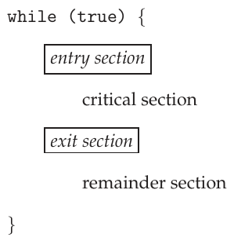
Every valid solution must satisfy three requirements (assuming nonzero execution speed for all processes, with no assumptions about relative speeds):任何正确解法都必须同时满足以下三项条件（假设进程均以非零速度前进，但对其相对快慢不做任何假定）：
- Mutual exclusion（互斥）: If \(P_i\) is executing inside its critical section, no other process may execute in its critical section.互斥：若进程 \(P_i\) 正在执行临界区代码，则其他任何进程都不得同时进入各自的临界区。
- Progress（前进 / 空闲让进）: If no process is in its critical section and some processes wish to enter, only processes not currently in their remainder sections may participate in deciding who enters next, and this selection cannot be postponed indefinitely.前进（空闲让进）：若无进程处于临界区且有进程渴望进入，则仅允许不在剩余区的进程参与裁决下一个进入者，且该裁决不得被无限期推迟。
- Bounded waiting（有限等待）: After a process requests entry and before that request is granted, there is a finite upper bound on how many times other processes may enter their critical sections.有限等待：从某个进程发出进入请求到该请求获批之前，其他进程抢先进入临界区的次数存在明确上限。
When auditing candidate code on an exam, test the three conditions systematically:考场检验伪代码时，可逐条排查这三项条件：
- Check mutual exclusion: Try constructing an interleaving where two processes simultaneously slip past their entry sections.查互斥： 构造一种交错执行顺序，看能否让两个进程双双通过进入区。
- Check progress: Park one process forever inside its remainder section and check whether the other process can still enter repeatedly (also check whether two competing processes can deadlock together at entry).查前进： 让一个进程永远停在剩余区不回头，看另一个进程能否独立多次进入（并排查双方是否会在入口相互僵持死锁）。
- Check bounded waiting: See whether a fast competitor can repeatedly re-enter and starve a waiting process.查有限等待： 看一个刚刚退出的竞争者能否连续插队，令已提出申请的等待者无限落败。
For instance, strict alternation (while (turn != i) ; critical section; turn = j;) enforces mutual exclusion but fails progress: if \(P_0\) remains in its remainder section after handing over the turn, \(P_1\) cannot enter a second time even when the critical section sits idle (Practice Q2).例如严格轮替法 while (turn != i) ; 临界区; turn = j; 虽能保证互斥，却破坏前进条件：一旦 \(P_0\) 交出轮次后一直待在剩余区，\(P_1\) 就无法连续两次进入哪怕空无一人的临界区（见练习 Q2）。
Step 3: where races occur in the kernel第 3 步：竞争在内核中出现的位置
Inside an OS kernel, shared structures—open-file tables, memory-allocation lists, ready queues, and PID counters—are concurrently touched by system calls and interrupts. Classic example: two concurrent fork() calls can both read next_available_pid = 2615 before either increments it, accidentally assigning identical PIDs to two child processes.操作系统内核内部遍布共享数据结构，例如打开文件表、内存分配链表、进程列表与 PID 计数器。经典例子是两个并发 fork() 同时读到相同的 next_available_pid = 2615，导致两个子进程拿到同一个 PID。
While disabling interrupts works on a single-core CPU for brief kernel updates, broadcasting interrupt-disable messages across multiprocessors severely stalls throughput—and exposing interrupt control to user programs would let buggy or malicious apps freeze the machine. Consequently, kernels adopt one of two concurrency models:单核上可通过短暂关中断保护内核变量；但在多核上向所有核心同步关中断开销太大，且绝不能允许用户态程序关中断（否则程序死循环不恢复即可彻底锁死整机）。因此现代内核主要采用以下两种设计之一：
| Nonpreemptive kernel不可抢占内核 | Preemptive kernel可抢占内核 | |
|---|---|---|
| Kernel-mode execution内核态行为 | Runs uninterrupted until exiting kernel mode, blocking, or yielding voluntarily持续运行直至主动离开内核态、阻塞或让出 CPU | May be preempted at safe points even while executing in kernel mode即使处于内核态执行期间也可被高优先级任务抢占 |
| Race exposure on kernel data内核数据竞争风险 | Essentially race-free on uniprocessors (at most one active kernel thread)单核下基本无竞争（同一时刻至多一个线程在内核中活跃） | Requires explicit locks/synchronization throughout, especially under SMP必须全面加锁防竞争，在对称多处理（SMP）多核并跑时尤具挑战 |
| Responsiveness实时响应性 | Lower: a long syscall delays urgent threads较差：长系统调用可能长期占用核心 | Superior; essential for interactive responsiveness and real-time guarantees响应迅速，更适合交互式与实时系统要求 |
Practice练习
Q1. (Race condition) An auction server updates its top bid with void bid(double amount) { if (amount > highestBid) highestBid = amount; }. Starting with highestBid = 50, thread A calls bid(100) while thread B calls bid(200) concurrently. Give an interleaving leaving highestBid = 100 and explain how to fix it.Q1.（竞争条件）拍卖服务器按 void bid(double amount) { if (amount > highestBid) highestBid = amount; } 更新最高出价。初值 highestBid = 50 时，线程 A 调用 bid(100)，线程 B 同时调用 bid(200)。给出一种导致终值为 highestBid = 100 的交错执行序列，并说明如何修复。
Answer
Because checking and writing are two separate steps: A evaluates \(100>50\) (true); B evaluates \(200>50\) (true); B writes highestBid = 200; finally A executes its stale branch and writes highestBid = 100, silently losing the higher bid. To fix it, wrap the entire check-and-update body in one mutex lock so the comparison always observes the latest committed bid (making only the assignment atomic would still fail).因为“判断”与“写入”是两步操作：A 先判定 \(100>50\) 为真；随即 B 判定 \(200>50\) 也为真并写入 200；最后 A 继续执行已过时的赋值语句写回 100，覆盖了更高的出价。修复关键是把整个“比较＋赋值”整体用一把互斥锁保护起来，仅让赋值本身原子化远远不够。
Q2. (Requirements) Two processes share int turn = 0, and each runs while (turn != i) ; /* critical section */ turn = j; /* remainder section */. Which critical-section requirement fails? Give a concrete scenario.Q2.（三项要求检验）两进程共享 int turn = 0，各自运行 while (turn != i) ; /* critical section */ turn = j; /* remainder section */。该协议违反哪项要求？举例说明。
Answer
Mutual exclusion holds because turn can take only one value (0 or 1), preventing simultaneous entry. However, progress fails due to strict alternation: if \(P_0\) finishes its critical section, sets turn = 1, and stays in a long remainder section while \(P_1\) enters, exits, and resets turn = 0, then \(P_1\) cannot re-enter even though the critical section is completely empty—being blocked solely by \(P_0\) sitting in its remainder section. Peterson's flag[] fixes this by tracking explicit intent.互斥成立（turn 同一时刻只等于 0 或 1），但强迫严格交替破坏了前进（空闲让进）要求：若 \(P_0\) 运行完一次并把 turn 设为 1 后长期停留在剩余区，而 \(P_1\) 用完临界区把 turn 设回 0，随后 \(P_1\) 再次想进临界区时即便里面空无一人也只能干等——只因 \(P_0\) 并不打算来交班。引入 flag[] 表征真实进入意愿（Peterson 算法）即可修复。
Q3. (Race condition) A kernel enforces a process limit via a shared counter number_of_processes (initially 0):Q3.（竞争条件）内核通过初值为 0 的共享计数器 number_of_processes 限制最大进程数：
int allocate_process() {
if (number_of_processes == MAX_PROCESSES) /* 255 */
return -1;
/* allocate necessary process resources */
++number_of_processes;
return new_pid;
}
void release_process() {
/* release process resources */
--number_of_processes;
}
- Identify every race condition in this code.指出代码中存在的全部竞争条件。
- Specify exact placement of a mutex lock.说明互斥锁应加在何处。
- Would replacing
int number_of_processeswith an atomic integer fix the bug? Why or why not?若仅将number_of_processes改为原子整数是否足够？为什么？
Answer
- Both
++number_of_processesand--number_of_processesare non-atomic read–modify–write updates that can drop counts; worse, the checkif (number_of_processes == MAX_PROCESSES)is separated from++number_of_processes, so at 254 processes two concurrent callers can both pass the check and raise the count to 256 (exceedingMAX_PROCESSES).++与--均非原子操作，并发时可能丢失计数；更严重的是容量检查与递增两步分离——当前为 254 时两个线程可同时通过上限检查并各加一次，使实际进程数涨到 256（超出MAX_PROCESSES）。 - Acquire the mutex before the
iftest insideallocate_process()and release it on every exit path (both right after++number_of_processesand inside the earlyreturn -1branch); acquire and release the same mutex around--number_of_processesinsiderelease_process().在allocate_process()进入if判断之前加锁，并在所有返回路径（包括提前return -1分支与正常递增之后）释放锁；同时在release_process()递减计数前后加同一把锁。 - No. An atomic integer prevents lost updates on
++/--individually, yet leaves the check and increment as two separate atomic steps—so two callers at 254 can still both pass the test before either increments. The test and update must be locked together in one critical section.不够。 原子整数只保证单次自增/自减不丢计数，但“判断尚未达上限”和“加一”依然是隔开的两步原子指令，在 254 个进程时照样可能双双放行。必须把检验与更新放进同一个互斥临界区。
Peterson's solution and hardware support ★★★Peterson 算法与硬件支持
Goal. Trace Peterson's algorithm and explain why it meets all three critical-section requirements under sequential consistency, understand why modern CPUs break it, and analyze hardware test_and_set and compare_and_swap spinlocks.目标。 读懂 Peterson 算法并能说明其如何在顺序一致下满足三项要求；理解现代 CPU 为何会使纯软件方案失效；掌握基于硬件指令 test_and_set 与 compare_and_swap 的自旋锁及有限等待改进。
Step 1: Peterson's solution第 1 步：Peterson 算法
Core idea: Raise your own flag to declare intent, then politely hand turn to the other process—wait only if the rival both wants in and holds turn.核心思路： 先举旗表态自己想进，再礼貌地把“先走轮次”让给对方；只有当对方既举了旗、轮次又恰好指着对方时自己才等。
Peterson's algorithm is a classic software-based solution for two processes \(P_0\) and \(P_1\) (where \(P_i\) denotes the caller and \(P_j\) with \(j=1-i\) denotes the peer). They share boolean flag[2] (intent to enter) and int turn (tie-breaker naming who yields priority):Peterson 算法是针对两进程 \(P_0\) 与 \(P_1\)（其中设自身为 \(P_i\)、另一方为 \(P_j, j=1-i\)）的经典纯软件解法。双方共享两个变量：boolean flag[2] 表示各自进入意愿，int turn 用作平局仲裁：
while (true) {
flag[i] = true;
turn = j;
while (flag[j] && turn == j)
; /* busy wait */
/* critical section */
flag[i] = false;
/* remainder section */
}
Whenever both processes invoke entry concurrently, both write to turn; the later write overwrites the earlier one, forcing the thread that wrote last to wait:若两人几乎同时到达入口，双方都会覆盖写入 turn；后写完的一方把先手权交到了先写的一方手里，从而主动退让等待：
- Mutual exclusion: For both \(P_0\) and \(P_1\) to enter together, both flags must be
true. Yetturntakes a single value (0 or 1): whichever process wroteturnsecond—say \(P_j\) settingturn = i—observes bothflag[i] == trueandturn == i, trapping it in thewhileloop until \(P_i\) exits and setsflag[i] = false.互斥： 若双方都在临界区内，必有两者的flag皆为true；但同一刻turn只能等于 0 或 1。最后更新turn的进程（假设为 \(P_j\) 写入turn = i）检查时必见flag[i] == true && turn == i成立，故只得留在循环自旋，直到 \(P_i\) 退出并将flag[i]清零。 - Progress: \(P_i\) can only stall inside
while (flag[j] && turn == j). If \(P_j\) is uninterested (in its remainder section),flag[j]isfalseso \(P_i\) enters immediately; if both are competing,turnuniquely names one winner who proceeds without delay.前进： \(P_i\) 只可能停在单一条件循环里。若对方留在剩余区无意竞争，flag[j] == false让 \(P_i\) 畅通无阻；若双方同时竞争，turn必指向其中之一使其脱困进入，决策不会无限期僵持。 - Bounded waiting: Even if \(P_j\) exits and immediately requests entry again, it sets
turn = iin its entry section; since waiting \(P_i\) does not touchturn, \(P_i\)'s loop condition breaks on its next check—guaranteeing entry after at most one rival turn.有限等待： 即使 \(P_j\) 退出后立刻折返再请求，它在进入区也必须执行turn = i再次让出先手；仍在等候的 \(P_i\) 绝不会改写turn，因此下轮判断即可立即跳出等待——至多只会被对手抢先 1 次。
Step 2: why software solutions fail today第 2 步：为什么今天的软件解法不再可靠
Although logically airtight under sequential consistency, Peterson's algorithm can break on modern architectures because compilers and out-of-order processors reorder independent loads and stores to improve single-thread throughput. Since flag[i] = true and turn = j touch unrelated addresses, hardware or compilers may execute turn = j first.Peterson 算法虽然在逻辑上无懈可击，但在现代计算机上却可能失效——只因现代处理器与编译器为优化单线程性能，会对没有数据依赖的读写指令重排序。由于 flag[i] = true 与 turn = j 操作不同变量，硬件或编译器完全可能先执行 turn = j。
If \(P_0\) reorders its stores so turn = 1 becomes visible before flag[0] = true, \(P_1\) can execute flag[1] = true; turn = 0, inspect flag[0] (still false), and enter its critical section; meanwhile \(P_0\) sets flag[0] = true, sees turn == 0, and enters too—breaking mutual exclusion.若 \(P_0\) 先对其他核暴露 turn = 1（而 flag[0] 尚未变为 true），恰逢 \(P_1\) 执行 flag[1] = true; turn = 0，此时 \(P_1\) 检查发现 flag[0] == false 直接闯入；随后 \(P_0\) 补上 flag[0] = true 并读到 turn == 0 也一同闯入，互斥彻底失效。

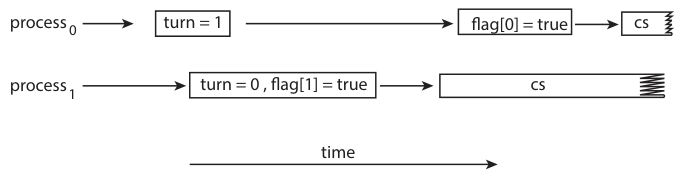
Fixing this requires placing a memory barrier（内存屏障 / memory fence）between flag[i] = true and turn = j, forcing prior stores to commit globally before subsequent memory operations begin. A processor's memory model（内存模型）defines these visibility guarantees—ranging from strongly ordered (writes appear globally in program order immediately) to weakly ordered (explicit barriers required).要堵住漏洞，必须在两条赋值之间插入一条内存屏障（memory barrier/fence），强制屏障前所有写操作对全局其他核可见后才能开始后续操作。处理器的内存模型规定了这种可见性强度，主要分为强序模型（写操作立刻按序全局可见）与弱序模型（需手动用屏障保证跨核顺序）。
Step 3: atomic hardware instructions第 3 步：原子硬件指令
Core idea: test_and_set atomically grabs a boolean flag and returns what it used to be; compare_and_swap atomically swaps in a new value only if memory still equals an expected value.核心思路： test_and_set 原子地“读取旧状态并强行置真”；compare_and_swap 则原子地检查“值是否仍是预期旧值，是则改为新值，否则不动”。
Modern CPUs eliminate instruction-reordering fragility by providing indivisible read–modify–write instructions. test_and_set() reads the old boolean and writes true as one atomic step: whichever thread sees false claims ownership, while rivals receive true and spin:现代 CPU 直接提供不可分割的硬件“读—改—写”指令以摆脱纯软件协议的脆弱性。其中 test_and_set() 原子地返回旧布尔值并将其设为 true——返回 false 者赢得锁，其余收到 true 者继续空转等待：
boolean test_and_set(boolean *target) { /* executed atomically */
boolean rv = *target;
*target = true;
return rv;
}
/* P_i; shared: boolean lock = false */
while (true) {
while (test_and_set(&lock))
; /* spin */
/* critical section */
lock = false;
/* remainder section */
}
More generally, compare-and-swap (CAS)（比较并交换）checks whether *value == expected, sets *value = new_value only on match, and always returns the original contents (0 = unlocked, 1 = locked):功能更通用的比较并交换（CAS）指令只在 *value == expected 时才将 *value 改写为 new_value，并始终返回修改前的原始值（这里 0 表空闲、1 表被占）：
int compare_and_swap(int *value, int expected, int new_value) { /* atomic */
int temp = *value;
if (*value == expected)
*value = new_value;
return temp;
}
/* P_i; shared: int lock = 0 */
while (true) {
while (compare_and_swap(&lock, 0, 1) != 0)
; /* spin */
/* critical section */
lock = 0;
/* remainder section */
}
The first thread finds lock == 0 and sets it to 1, while later contenders spin on non-zero returns until the holder clears lock. Note carefully: both plain spinlocks guarantee mutual exclusion and progress, yet lack bounded waiting—an unlucky thread can lose the atomic race arbitrarily often.首个线程检测到 0 即刻抢占置 1，后来者因返回值为 1 而持续自旋直到持有者归零。务必注意：这两种朴素原子锁虽保证了互斥与前进，却不满足有限等待——倒霉的线程可能在每次竞争中屡抢屡败、无限挨饿。
Step 4: achieving bounded waiting with CAS第 4 步：用 CAS 实现有限等待
Adding a shared waiting array boolean waiting[n] (initially all false) alongside int lock (0) and a per-thread local key enforces a cyclic turn order:只要搭配共享数组 boolean waiting[n]（初值全为 false）、int lock（初值 0）及线程私有变量 key，并在退出时按环形顺序接力交棒，即可补齐有限等待：
while (true) {
waiting[i] = true;
key = 1;
while (waiting[i] && key == 1)
key = compare_and_swap(&lock, 0, 1);
waiting[i] = false;
/* critical section */
j = (i + 1) % n;
while ((j != i) && !waiting[j])
j = (j + 1) % n;
if (j == i)
lock = 0;
else
waiting[j] = false;
/* remainder section */
}
A contender spins until either its own CAS grabs lock (key == 0) or an exiting process grants it entry by setting waiting[i] = false. On exit, \(P_i\) scans cyclically from \(i+1\): if a waiter \(P_j\) exists, it wakes that waiter directly without touching lock; only when nobody waits does it clear lock = 0.请求者在入口循环等待，直到自己幸运通过 CAS 抢锁成功（key == 0），或被刚退出的进程主动放行（waiting[i] = false）。退出时 \(P_i\) 从 \(i+1\) 起环形扫描：若遇到正在等的 \(P_j\)，便保持 lock = 1 不变并直接把 waiting[j] 置假定向交棒；只有环视一圈无人等待时才置 lock = 0 开锁。
- Mutual exclusion:
key == 0happens only once per free lock, and an exiting thread resets at most one waiter'swaiting[j] = false.互斥：lock从 0 变 1 时至多有一人拿到key == 0，而退出时又至多只唤醒一名接棒者waiting[j] = false，临界区始终仅一人。 - Progress: Exiting always either clears
lockor unblocks one waiting thread, so an available critical section is never left idle.前进： 离开临界区必定要么开放lock = 0，要么放行一个等待者，绝不卡死后续进入。 - Bounded waiting: Because cyclic scanning visits every slot in index order, any waiting process enters within at most \(n-1\) rival turns.有限等待： 按下标顺序环形巡检点名，任何正在等待的进程至多等待 \(n-1\) 轮必然轮到。
Built on top of CAS, an atomic variable（原子变量）provides indivisible operations on single integers or booleans (such as atomic increment for counters). However, atomic variables cannot protect multi-step check-then-act logic: checking while (count == 0) and then consuming remain two unlinked instructions, letting two consumers race after both observe count == 1.基于 CAS 构建的原子变量为单个整型或布尔提供不可分割的读改写操作，十分适合单纯计数。但它仅护单次变量更新，无法绑定“先检查再行动”的两步逻辑——例如两消费者可能同时通过 while (count == 0) 检测看到 count = 1 而重复消费，这类复合操作仍须锁入同一个临界区。
Practice练习
Q1. (Trace) Two processes interleave Peterson's entry section as: P0 flag[0] = true; P1 flag[1] = true; P1 turn = 0; P0 turn = 1. Who enters first and who second? What happens if P1 loops back to re-enter while P0 is still spinning?Q1.（手工演算）两进程按 P0 flag[0] = true → P1 flag[1] = true → P1 turn = 0 → P0 turn = 1 进入临界区入口。谁先进入？若 P0 仍在等待时 P1 退出后立刻再次申请，谁先谁后？
Answer
Both flags are true and turn = 1 (because P0 wrote last). Thus P0's loop test flag[1] && turn == 1 is true (P0 spins), whereas P1's test flag[0] && turn == 0 is false (P1 enters first). When P1 exits and clears flag[1] = false, P0 enters; even if P1 immediately restarts and executes flag[1] = true; turn = 0;, P0 sees turn == 1 turn false and enters while P1 waits—confirming bounded waiting (at most 1 overtake).双旗均为真且因 P0 后写而 turn = 1。P0 检验 flag[1] && turn == 1 为真而自旋，P1 检验 flag[0] && turn == 0 为假故率先进入。P1 退出清空 flag[1] = false 后即使瞬间折返重设 flag[1] = true，紧接着执行 turn = 0 也会把先手让给等待中的 P0，从而保证 P0 至多只被反超 1 次。
Q2. (Trace) In the bounded-waiting CAS algorithm (\(n=5\)), P2 is in its critical section with waiting[] = [T, F, F, T, T]. In what order do P3, P4, and P0 enter, and how many rival entries does P0 wait for?Q2.（手工演算）在 \(n=5\) 的有限等待 CAS 算法中，P2 正处于临界区，此时 waiting[] = [T, F, F, T, T]。指出 P3、P4、P0 的进入顺序，并求 P0 还需等待几次他方进入。
Answer
Upon exiting, P2 scans from \(j=3\), sees waiting[3] == true, and clears it—passing entry directly to P3 (lock remains 1). P3's exit scan passes entry to P4; P4's scan wraps from 4 to 0 and passes entry to P0; and P0's exit finds no waiters (\(j=0\)) so it resets lock = 0. P0 enters after P3 and P4—waiting 2 entries, within \(n-1=4\).P2 退出时从 \(j=3\) 扫到 waiting[3] == true，于是置假并直接把锁接力交给 P3（lock 保持 1）；P3 退出转交 P4；P4 回绕至 0 转交 P0；P0 退出时环顾四周无人等待才将 lock 清零。因此顺序为 P3 → P4 → P0，P0 等待了 2 次进入，小于上界 \(n-1=4\)。
Q3. (Design insight) A “compare and compare-and-swap” spinlock checks the lock with an ordinary read first: while (true) { if (*lock == 0) { if (!compare_and_swap(lock, 0, 1)) break; } }. Is it correct, and why is it often faster than plain CAS spinning?Q3.（设计原理）“compare and compare-and-swap”自旋锁先做一次普通读检查：while (true) { if (*lock == 0) { if (!compare_and_swap(lock, 0, 1)) break; } }。它是否正确？为何通常比直接 CAS 循环更快？
Answer
Yes, it is correct. The initial read *lock == 0 serves purely as a hint: if two threads both read 0 and invoke CAS concurrently, atomic hardware guarantees only one flips lock from 0 to 1 and breaks (returning 0), while the loser gets 1 and resumes looping—preserving mutual exclusion (still without bounded waiting).正确。 先导普通读只提供启发式提示：即便两线程同时看到 0 并一齐发起 CAS，原子硬件仍保证只有一个能将 0 改为 1 并得到返回值 0 跳出循环，另一方收到 1 后继续等待，互斥绝对无恙（仍无有限等待）。
It outperforms plain CAS loops because waiting cores spin cleanly on shared read-only copies in their local L1 caches without generating memory-bus lock traffic or cross-core cache invalidations, issuing the expensive atomic CAS only when the lock appears free.加速的原因是等待期间各核只需读取各自本地缓存中的只读副本，不会在总线上触发昂贵的写独占请求与跨核缓存行作废风暴，仅在观察到锁可能空闲时才真正发出原子 CAS 指令。
Mutex locks and semaphores ★★★互斥锁与信号量
Goal. Protect critical sections using mutex locks or semaphores, enforce execution ordering between processes, and trace semaphore values and queues step by step.目标。 会用互斥锁与信号量实现临界区互斥，用信号量强制跨进程执行顺序，并能逐步手算信号量取值及等待队列状态。
Step 1: the mutex lock第 1 步：互斥锁
Core idea: A mutex lock acts like a single key to a critical section: a thread must acquire it on entry and only that owner may release it on exit.核心思路： 互斥锁就像临界区的唯一钥匙，进入前必须先夺取钥匙，退出时也只能由持锁本人归还。
The operating system provides a mutex lock（互斥锁, short for mutual exclusion）with two atomic operations—acquire() and release()—backed by a boolean flag available implemented via hardware atomic instructions like CAS:为避免程序员手写复杂的硬件原子循环，操作系统封装出带 acquire() 与 release() 两个原子操作的互斥锁（底层由 CAS 等保证原子性）：
acquire() {
while (!available)
; /* busy wait */
available = false;
}
release() {
available = true;
}
Because waiting threads loop inside acquire(), this basic lock exhibits busy waiting（忙等待）and is called a spinlock（自旋锁）. On a uniprocessor, spinlocks are useless because a spinning waiter prevents the lock holder from ever running to release it; on a multiprocessor, however, spinning avoids context-switch overhead whenever lock hold times stay shorter than two context switches:这种朴素实现会在 acquire() 内空转消耗 CPU 周期（忙等待），因此称为自旋锁。在单核系统上自旋毫无意义——等锁者霸占唯一 CPU 令持锁者永远跑不上核；但在多核系统上，只要临界区极短（持锁时间小于两次上下文切换耗时），原地自旋反而省去睡眠唤醒开销而更划算：
For example, if \(T_{\text{cs}}=4\) µs (threshold \(8\) µs), a 6 µs critical section favors spinning while a 20 µs one favors sleeping. When a lock frequently causes waiters to block or spin, it is said to be contended（争用锁）, degrading overall throughput.例如当 \(T_{\text{cs}}=4\) µs（阈值为 8 µs）时，持锁 6 µs 用自旋更省时，而 20 µs 则应让线程睡眠。若大量线程频繁卡在同一把锁上排队或空等，该锁就处于高争用状态，会严重拖累吞吐量。
Step 2: the semaphore第 2 步：信号量
Core idea: A semaphore is an integer counter tracking available permits: wait() consumes a permit (or pauses), and signal() adds a permit (waking one waiter if needed).核心思路： 信号量是一个记录可用“许可数”的整数计数器：wait() 拿走一个名额（不够则等），signal() 归还或发放一个名额。
A semaphore（信号量）\(S\) is an integer variable accessed—after initialization—exclusively through two atomic operations: wait() (Dijkstra's P) and signal() (Dijkstra's V). (These synchronization calls are unrelated to the Chapter 1 wait() syscall or UNIX process signals.) A counting semaphore（计数信号量）ranges freely over integers to manage multi-instance pools, whereas a binary semaphore（二值信号量）is restricted to 0 and 1 and works like a mutex:信号量 \(S\) 除初始化外只能通过两个原子原语访问：wait()（P 操作，申请资源）和 signal()（V 操作，释放或发送信号）（它们与第 1 章进程等待 wait() 系统调用及 UNIX 信号完全不同）。其中计数信号量可取任意整数值，而二值信号量仅取 0 或 1，行为近似互斥锁：
wait(S) {
while (S <= 0)
; /* busy wait */
S--;
}
signal(S) {
S++;
}
Depending on its initial value, a semaphore serves three standard roles:通过设定不同初值，信号量可覆盖三类经典同步模式：
| Use case使用场景 | Initial value初值 | Usage pattern标准写法 |
|---|---|---|
| Mutual exclusion互斥访问 | 1 | wait(mutex); critical section; signal(mutex); |
| Pool of \(N\) identical resources\(N\) 个同类资源池 | \(N\) | wait() reserves one resource, signal() frees it; once 0, extra callers blockwait() 领用一份资源，signal() 归还；耗尽至 0 后新申请者阻塞 |
| Ordering (\(S_2\) after \(S_1\))强制先后（\(S_2\) 晚于 \(S_1\)） | 0 | \(P_1\): S1; signal(synch); \(P_2\): wait(synch); S2; |
Remember: checking if (getValue(&sem) > 0) wait(&sem); does not prevent blocking, because another thread can decrement sem between the read and wait().注意：提前写 if (getValue(&sem) > 0) wait(&sem); 仍不能避免阻塞——读值与调用 wait() 并非同一原子操作，期间随时可能被其他进程抢先扣完。
Step 3: blocking semaphore implementation第 3 步：阻塞式信号量实现
Core idea: Instead of spinning, wait() decrements first and puts the thread to sleep in a queue whenever the counter goes negative—so a negative value \(-k\) directly counts the \(k\) waiting threads.核心思路： 为消除应用层空转，wait() 先将计数器减 1，若结果小于 0 则将自己挂起进入等待队列；因此信号量值为 \(-k\) 时恰有 \(k\) 个进程正在排队沉睡。
In the blocking implementation, each semaphore stores an integer value plus a FIFO queue of sleeping PCBs; calling sleep() shifts the thread from running to waiting, and wakeup(P) moves one sleeper back to ready (Section 1.1):在阻塞式实现中，信号量内置一个队列指针：若资源不足，wait() 调用 sleep() 让进程从运行态转为等待态让出 CPU；相应地 signal() 发现还有队列等待者时，弹出一个进程并通过 wakeup(P) 使其重新就绪：
typedef struct { int value; struct process *list; } semaphore;
wait(semaphore *S) {
S->value--;
if (S->value < 0) {
add this process to S->list;
sleep(); /* running -> waiting */
}
}
signal(semaphore *S) {
S->value++;
if (S->value <= 0) {
remove a process P from S->list;
wakeup(P); /* waiting -> ready */
}
}
Notice that wait() decrements before checking, so every blocked caller is already accounted for inside S->value:关键在于 wait() 先减再判，每个阻塞者都已被减入计数器中，因此可用下面两条公式直接验算：
To trace a blocking semaphore by hand:手工演算四步走：
- Start with the initial counter \(S_0\) and an empty queue.写出初值 \(S_0\) 与空队列。
- On each
wait(), decrement by 1; if the new value is< 0, the caller blocks and enters the queue.每遇wait()减 1；若新值小于 0，该调用者阻塞入队。 - On each
signal(), increment by 1; if the new value is<= 0, dequeue and wake one sleeping process.每遇signal()加 1；若新值小于或等于 0，出队唤醒一名等待者。 - Double-check the final state using \(S = S_0 - n_{\text{wait}} + n_{\text{signal}}\).最终用 \(S = S_0 - n_{\text{wait}} + n_{\text{signal}}\) 交叉核验结果。
Crucially, wait() and signal() must themselves execute atomically. Single-core kernels achieve this by briefly disabling interrupts; multiprocessors guard the short internal queue updates with CAS or short spinlocks—so busy waiting is not eliminated entirely, only confined to the tiny critical sections of wait() and signal().最后注意：wait() 和 signal() 自身内部必须保证原子性。单核内核可短暂关中断实现；多核内核则用 CAS 或短自旋锁保护这两段极短的操作。因此忙等待并未被彻底消灭，而是被压缩并转移到 wait() 与 signal() 内部极少冲突的短临界区里。
Misusing semaphore calls breaks the protocol even when mutex = 1 is initialized correctly:即使正确设对了初值 mutex = 1，一旦调用顺序或配对写错，同样会直接破坏同步：
- Swapped order (
signal(mutex)before,wait(mutex)after): pushes the count above 1 and lets multiple threads enter simultaneously—breaking mutual exclusion.先放后拿（前signal后wait）： 计数值涨超 1，允许多个进程一齐挤入临界区——互斥失效。 - Repeated wait (
wait(mutex)at both entry and exit): the process blocks forever on its secondwait()—causing deadlock.重复等待（前后都写wait）： 进程在第二次调用时把自己彻底卡死——死锁。 - Omitted call: missing
wait()breaks mutual exclusion, while missingsignal()deadlocks waiting processes forever.遗漏其一： 漏掉wait()失去互斥，漏掉signal()则后续等待者永久卡死。
Practice练习
Q1. (Trace) A blocking semaphore (FIFO wait queue) starts at \(S=2\) and receives, in order: P1 wait, P2 wait, P3 wait, P4 wait, P1 signal, P5 wait, P2 signal, P3 signal. Trace the value and queue after each operation and verify the final result with the invariant formula.Q1.（手工演算）阻塞式信号量（FIFO 等待队列）初值 \(S=2\)，依次发生如下操作：P1 wait、P2 wait、P3 wait、P4 wait、P1 signal、P5 wait、P2 signal、P3 signal。给出每一步后的信号量值与队列内容，并用公式校验终值。
Answer
| Operation操作 | Effect效果 | Value值 | Queue等待队列 |
|---|---|---|---|
P1 wait |
proceeds通过 | 1 | empty空 |
P2 wait |
proceeds通过 | 0 | empty空 |
P3 wait |
blocks阻塞 | −1 | P3 |
P4 wait |
blocks阻塞 | −2 | P3, P4 |
P1 signal |
wakes P3唤醒 P3 | −1 | P4 |
P5 wait |
blocks阻塞 | −2 | P4, P5 |
P2 signal |
wakes P4唤醒 P4 | −1 | P5 |
P3 signal |
wakes P5唤醒 P5 | 0 | empty空 |
Formula check: \(S = S_0 - n_{\text{wait}} + n_{\text{signal}} = 2 - 5 + 3 = \mathbf{0}\), and at every negative step \(|S|\) matches the queue length.公式校验：\(S = S_0 - n_{\text{wait}} + n_{\text{signal}} = 2 - 5 + 3 = \mathbf{0}\)，且过程里每当值为负时其绝对值恰等于队列长度。
Q2. (Design) Processes P1, P2, and P3 execute statements A, B, and C respectively. C may execute only after both A and B finish (in any order). Coordinate them with semaphores.Q2.（同步设计）P1、P2、P3 分别执行语句 A、B、C，要求 C 必须在 A 与 B 均完成后才可执行（A 与 B 先后不限）。请用信号量实现。
Answer
Use one ordering semaphore done initialized to 0:只需声明一个初值为 0 的信号量 done：
/* P1 */ A; signal(done);
/* P2 */ B; signal(done);
/* P3 */ wait(done); wait(done); C;
Because each signal(done) increments done by 1 regardless of order, P3 can pass both wait(done) calls only after both A and B have completed.无论 A、B 谁先完成，都会各自贡献 1 次 signal(done)；只有当两人全部做完发出两次信号后，P3 才能连续通过两次 wait(done) 执行 C。
Q3. (Decision) One context switch costs \(T=4\) µs on a multicore CPU.Q3.（选型判断）多核系统中单次上下文切换耗时 \(T=4\) µs，回答下列两问：
- Should you use a spinlock or a sleeping mutex for a critical section held for 6 µs? What about 20 µs?若持锁时间分别为 6 µs 与 20 µs，各应选用自旋锁还是睡眠式互斥锁？
- Why is a spinlock useless on a single-core CPU?为何在单核 CPU 上自旋锁毫无用处？
Answer
- The break-even threshold is \(2T = 8\) µs (one switch to sleep plus one to wake up). A 6 µs hold (< 8 µs) favors a spinlock; a 20 µs hold (> 8 µs) favors a sleeping mutex to avoid wasting CPU cycles.切换损益阈值为 \(2T = 8\) µs（睡下与唤醒各一次切换）。持锁 6 µs（< 8 µs）宜用自旋锁；持锁 20 µs（> 8 µs）应选睡眠互斥锁，省出 CPU 去跑其他任务。
- On a single core, if the waiter starts spinning while holding the sole CPU, the lock holder cannot be dispatched to release the lock until the waiter's time quantum expires—making the spin pure waste.单核上等锁者一自旋就占死了唯一的 CPU，导致真正持锁的进程直到等锁者时间片耗尽被迫切出之前根本无法上核释放锁，所有自旋周期全部白烧。
Monitors ★★★管程
Goal. Describe monitor encapsulation, explain the exact semantics of x.wait() and x.signal() under Hoare vs. Mesa styles, and trace a monitor using condition variables.目标。 说明管程的封装结构，分清 x.wait() 与 x.signal() 在两种语义下的行为，并能逐步阅读追踪条件变量管程代码。
Step 1: the monitor type第 1 步：管程类型
Core idea: A monitor is a single-occupancy room enforced by the compiler: mutual exclusion between entry methods is automatic, freeing programmers from matching wait()/signal() pairs by hand.核心思路： 管程是一间由编译器自动看门的“单人房间”：同一时刻只允许一个进程入内运行其方法，免去程序员手工配对 wait/signal 的易错负担。
Programming errors with raw semaphores (such as reversed or omitted calls) led to the monitor construct—available conceptually in Java (synchronized) and C# (lock). A monitor's local functions can access only its encapsulated shared variables and their own parameters, while callers arriving when the monitor is busy wait automatically in an external entry queue（入口队列）:由于底层信号量极易配对写反或漏写，高级语言引入了管程（如 Java 与 C# 均内建类似机制）。管程内函数只能访问自身共享数据与形式参数，当房间被占用时其他调用者会自动停在外部入口队列排队：
monitor monitor_name {
/* shared variable declarations */
function P1(...) { ... }
function P2(...) { ... }
function Pn(...) { ... }
initialization_code(...) { ... }
}

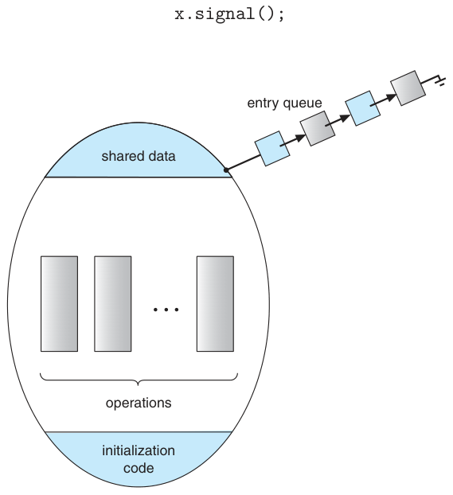
Step 2: condition variables第 2 步：条件变量
Core idea: A condition variable acts as an internal waiting room inside the monitor: x.wait() puts a thread to sleep and yields the monitor lock, whereas x.signal() wakes one waiting thread (or does nothing if none wait).核心思路： 条件变量是管程内部因某个状态尚未满足而设的“等候室”：x.wait() 会让出管程使用权并休眠，x.signal() 则恰好唤醒一名等候者（无人等候便直接作废）。
Mutual exclusion alone cannot pause a thread inside a monitor when a resource condition is not yet ready (holding the monitor lock while busy-waiting would deadlock everyone else out). Condition declarations such as condition x, y; add two operations:仅有自动互斥还不足以协调“进了房间却发现条件没就绪”的场景——若抱着管程互斥权在里面死等，别人永远进不来更新条件。为此需要声明 condition x, y; 条件变量，提供两个操作：
x.wait(): Suspends the calling process onx's queue and releases the monitor so another process can enter and eventually signalx.x.wait()：将自己挂起到条件x的等待队列，并临时释放管程独占权以放行其他进程进入。x.signal(): Resumes exactly one waiting process suspended onx. Crucially, unlike a semaphoresignal()(which increments a persistent counter), if no process is currently suspended onx, a monitorx.signal()has no effect and is lost.x.signal()：从条件x的队列中恰好唤醒一个挂起进程；若当前无人等待x，该信号不会保留而是直接失效（不同于信号量的signal()一定会给计数器加 1 留痕）。

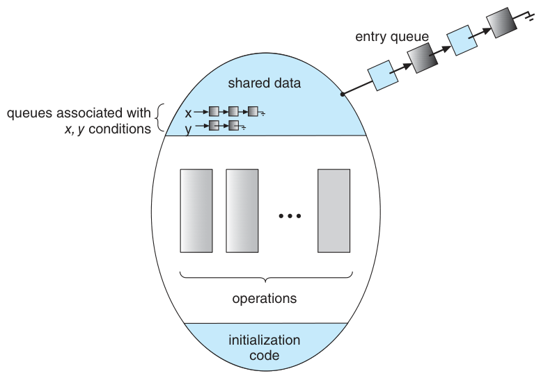
x and y alongside the entry queue带条件变量的管程：除入口队列外，每个条件变量 x、y 各有一条挂起等待队列When process \(P\) calls x.signal() while \(Q\) is suspended on x, both cannot remain active inside the monitor simultaneously—forcing a choice between two classic semantics:当进程 \(P\) 调用 x.signal() 唤醒了正等待在 x 上的 \(Q\) 时，由于管程内同一时刻至多只能有一个活跃进程，必须规定接下来谁先运行：
| Signalling style通知语义 | Who runs next执行交接规则 | Rationale & implication理由与编程影响 |
|---|---|---|
| Signal and wait (Hoare)信号并等待（Hoare 语义） | \(P\) pauses immediately until \(Q\) leaves the monitor or waits again\(P\) 立即暂停，让位于 \(Q\) 运行至退出或再次等待 | Guarantees the condition \(P\) established is still true when \(Q\) resumes, though requires an extra switch back to \(P\)\(Q\) 接手时环境绝未被第三方改坏，但多一次 \(P\) 让位再恢复的切换开销 |
| Signal and continue (Mesa)信号并继续（Mesa 语义） | \(P\) continues running inside; \(Q\) moves to entry queue and runs only after \(P\) exits\(P\) 继续在管程内执行，被唤醒的 \(Q\) 排回队列等 \(P\) 离开后再入内 | Natural and avoids immediate switching, yet another thread may change state before \(Q\) resumes—requiring while (!cond) x.wait();实现自然且减少即时切换，但在 \(Q\) 真正重新入场前其他进程可能改写条件，故必须使用 while (!cond) x.wait(); |
A common practical compromise exits the monitor immediately after calling signal() so \(Q\) runs right away without blocking \(P\). Because mainstream languages like Java and POSIX threads use signal and continue, always protect condition waits with a while (!cond) x.wait(); loop—which works correctly under both semantics.工程中也常用折中方案：令 \(P\) 把 signal() 作为离开前最后一句。Java 管程与 POSIX 条件变量均遵循信号并继续（Mesa 语义），因此务必用 while (!cond) x.wait(); 循环重检条件，该写法在两种语义下都安全正确。
Step 3: tracing a priority monitor & equivalence第 3 步：阅读带优先级的管程与等价性
When multiple threads wait on x, a simple FIFO wake-up ignores urgency. Using a conditional wait（条件等待）x.wait(c) attaches an integer priority number c to the suspended process so the next x.signal() resumes the waiter with the smallest c. Below, ResourceAllocator grants a single resource to whichever waiter requests the shortest duration time:多个进程同在 x 上等待时，条件等待 x.wait(c) 允许附带一个整数优先级编号 c，使下次 x.signal() 优先唤醒编号 c 最小的线程。下面的 ResourceAllocator 管程据此按申请时长由短到长分配单一资源：
monitor ResourceAllocator {
boolean busy;
condition x;
void acquire(int time) {
if (busy)
x.wait(time);
busy = true;
}
void release() {
busy = false;
x.signal();
}
initialization_code() { busy = false; }
}
Callers must still follow the usage discipline R.acquire(t); ... use resource ...; R.release();—a monitor guarantees mutual exclusion inside its own methods, yet cannot force callers outside to acquire before using or avoid double releases (recreating high-level semaphore bugs if misused). Finally, monitors and semaphores have identical expressive power: a monitor can be built out of semaphores (using mutex = 1 for entry, next = 0 for suspended signallers, and one x_sem = 0 per condition), and a semaphore can be implemented as a monitor (Practice Q3).尽管管程保证了自身方法内部互斥，它仍无法强制外部用户必须遵循 R.acquire(t) ... R.release() 的正确次序（若跳过申请直接用资源、或忘掉释放，依旧会产生高层次同步缺陷）。此外管程与信号量表达能力完全等价：用 mutex = 1、next = 0 和条件专用信号量 x_sem = 0 可构造管程，而管程也能反过来封装出信号量（见练习 Q3）。
Practice练习
Q1. (Compare) How does x.signal() on a monitor condition variable differ from signal(S) on a semaphore?Q1.（概念对比）管程条件变量上的 x.signal() 与信号量上的 signal(S) 有何区别？
Answer
signal(S) on a semaphore always increments an integer state, so even if no process is waiting, the increment is preserved and lets a future wait(S) proceed immediately. By contrast, a monitor's x.signal() wakes exactly one process waiting on x and does nothing at all if the queue is empty—meaning condition variables carry no memory, so a subsequent x.wait() still blocks. Moreover, x.signal() raises the Hoare vs. Mesa question of whether the signaller or the woken thread keeps the monitor lock immediately, whereas semaphore signal(S) simply readies a sleeper.信号量的 signal(S) 一定会令计数器永久加 1，即便当时无人等待，这个“名额”也会保留下来让后来的 wait(S) 立刻通过；而管程条件变量本身不存状态，x.signal() 若发现没人挂起在 x 上便直接失效丢弃，后续调用 x.wait() 仍须阻塞。此外 x.signal() 还需规定谁立即保有管程控制权（信号并等待 vs. 信号并继续），而信号量 signal(S) 只负责将等待者置为就绪。
Q2. (Trace) A holds the resource inside ResourceAllocator. Processes B, C, and D arrive in order calling acquire(8), acquire(3), and acquire(5). In what order do they acquire the resource once A releases it, and how does this differ from FCFS?Q2.（手工演算）A 正持有 ResourceAllocator 保护的资源。随后 B、C、D 依次调用 acquire(8)、acquire(3) 与 acquire(5) 等待。A 释放后它们按何顺序获资源？与 FCFS 有何不同？
Answer
B, C, and D queue on x with priority values 8, 3, and 5. A's release() signals C (smallest value 3); when C releases, it signals D (5); and when D releases, it signals B (8)—yielding order C, D, B (shortest requested duration first) rather than the arrival order B, C, D of FCFS.B、C、D 分别带优先级编号 8、3、5 排队挂在 x 上。每次 release() 触发 x.signal() 都唤醒现存编号最小者：先放 C（3），C 用完放 D（5），D 用完最后才放 B（8）——顺序为 C → D → B（按请求用时最短优先，不同于 FCFS 的 B → C → D）。
Q3. (Design) Implement a counting semaphore using a monitor to show they have equivalent expressive power.Q3.（设计证明）用管程实现一个计数信号量，以说明管程与信号量表达能力等价。
Answer
monitor Semaphore {
int value; /* set to the initial semaphore count */
condition positive;
void wait() {
while (value <= 0)
positive.wait();
value--;
}
void signal() {
value++;
positive.signal();
}
}
Monitor mutual exclusion makes both operations atomic; wait() suspends whenever value <= 0, and signal() increments value and resumes one waiter (using while ensures correctness under both Hoare and Mesa semantics). Together with the semaphore-based construction of a monitor above, the two abstractions are equally expressive.管程自动确保 wait() 与 signal() 互斥原子执行；当名额不足时在条件变量上挂起，释放时递增名额并唤醒一名等待者（while 循环保证在信号并等待与信号并继续两种语义下皆成立）。结合前文用信号量构建管程的方法，两者互可模拟、能力等价。
Liveness and choosing a tool ★★活性与同步工具选型
Goal. Distinguish deadlock, starvation, and priority inversion, and choose the right synchronization primitive based on contention, hold duration, and usage pattern.目标。 区分死锁、饥饿与优先级反转三种活性失效，并能依据竞争程度、持锁时长与业务场景准确选型同步原语。
Ensuring mutual exclusion only guarantees safety (nothing corrupts data); a synchronization mechanism must also satisfy liveness（活性）properties ensuring that concurrent threads continue making forward progress rather than stalling forever.只做到互斥仅仅保证了“安全性”（数据不被改坏）；同步协议还必须具备活性，即保证各并发进程能够持续向前推进，而不是陷入永久卡死。
Step 1: three liveness failures第 1 步：三种活性失效
- Deadlock（死锁）: A group of threads is deadlocked when every thread in the group is permanently blocked waiting for a synchronization event (such as a lock or semaphore release) that can be triggered only by another blocked member of the same group (covered in full in Chapter 5).死锁：一组进程中的每一个都在等待仅能由同组其他已阻塞成员发出的事件（如释放锁或信号量），导致全员无限僵持（第 5 章详述）。
- Starvation（饥饿 / indefinite blocking）: A runnable thread is perpetually overlooked by a biased lock or queue policy while other threads keep making progress. Note that a deadlock-free solution can still starve individual threads.饥饿（无限期阻塞）：尽管其他进程不断进出临界区，某个就绪进程却因锁或队列策略偏倚而长期得不到调度。注意：无死锁并不自动意味着无饥饿。
- Priority inversion（优先级反转）: Occurs when a low-priority thread \(L\) holds a lock needed by a high-priority thread \(H\), and an unrelated medium-priority thread \(M\) preempts \(L\)—allowing lower-priority \(M\) to delay \(H\) indirectly for an unbounded time (requires at least three priority tiers \(L < M < H\)).优先级反转：低优先级进程 \(L\) 持有高优先级进程 \(H\) 所需的锁并使 \(H\) 阻塞；此时若出现一个无关的中优先级进程 \(M\) 抢占 \(L\)，就会让 \(M\) 间接把最高优先级的 \(H\) 拖延任意久（至少需三个优先级 \(L < M < H\) 才会发生）。
A classic two-semaphore deadlock occurs with S = Q = 1 when two threads lock resources in opposite order:当 S = Q = 1 时，两线程按相反次序加锁即可触发最经典的死锁：
P0 P1
wait(S); wait(Q);
wait(Q); wait(S);
... ...
signal(S); signal(Q);
signal(Q); signal(S);
If P0 acquires S and P1 acquires Q simultaneously, P0 blocks on wait(Q) while P1 blocks on wait(S), so neither can ever reach its signal(). To resolve priority inversion instead, real-time kernels use the priority-inheritance protocol（优先级继承协议）: while \(L\) holds a lock sought by higher-priority \(H\), \(L\) temporarily inherits \(H\)'s priority so \(M\) cannot preempt it; once \(L\) releases the lock, its priority reverts and \(H\) executes immediately.若 P0 刚执行完 wait(S)、P1 刚执行完 wait(Q)，二者接着便各自卡死在对方的锁前，永远走不到释放语句。而面对优先级反转，实时内核采用优先级继承协议：当 \(L\) 拿着 \(H\) 急需的锁时，临时让 \(L\) 继承 \(H\) 的高优先级，令 \(M\) 无法中途插队抢占；待 \(L\) 快速释放锁并恢复原优先级后，\(H\) 立即上场。
Step 2: choosing the right synchronization tool第 2 步：选择同步工具
CAS-based lock-free algorithms take an optimistic approach (compute first, validate via CAS, retry on conflict), whereas mutexes and locks are pessimistic (acquire exclusive access before touching shared data). Their relative speed flips as contention climbs:无锁算法（基于 CAS）信奉乐观策略（先算再原子核验、冲突即重试），传统锁则是悲观策略（动数据前一律先关门拿锁）。两者效率随锁争用程度而逆转：
| Contention level争用程度 | Faster approach更快方案 | Reason原因解析 |
|---|---|---|
| Uncontended (none)无争用 | CAS (slightly)CAS（略胜一筹） | Both finish in a couple of fast atomic memory operations无冲突时两者皆仅需极少数原子指令 |
| Moderate中等争用 | CAS (often noticeably faster)CAS（往往显著更快） | Most CAS attempts succeed or retry once; contended locks sleep on wait queues and pay context switchesCAS 多数一次通过，偶发冲突重算即可；传统锁一旦遇阻便须入队挂起，代价高昂 |
| High极高争用 | Traditional lock传统阻塞锁 | CAS fails repeatedly and burns CPU in endless retry storms海量线程反复引发 CAS 冲突失效并在重试风暴中白耗算力，不如排队睡眠 |
| Scenario / requirement应用需求 / 场景 | Best tool推荐工具 |
|---|---|
| Single update to a scalar counter or flag单变量计数器或状态位更新 | Atomic integer/boolean—much lighter than acquiring a lock原子整数/原子变量——远比完整锁轻量 |
| Very short critical section (< \(2\,T_{\text{cs}}\)) on multiprocessor多核上的极短临界区（持锁 < \(2\,T_{\text{cs}}\)） | Spinlock—avoids context-switch overhead自旋锁——免除上下文切换代价 |
| General mutual exclusion通用临界区互斥 | Mutex lock—simpler and lower-overhead than a binary semaphore互斥锁——语义更清晰且比二值信号量更省开销 |
| Access to a pool of \(N\) identical resources or ordering管理 \(N\) 份同类资源或跨线程次序同步 | Counting semaphore计数信号量 |
| Read-heavy data with infrequent writes读多写少场景 | Reader–writer lock—allows concurrent readers读写锁——允许多个读者并发通行 |
| Waiting for complex predicates in structured code高层次结构化代码中等待复杂条件 | Monitor with condition variables (simpler, though heavier under high contention)带条件变量的管程（代码清晰不易错，但在极高争用下扩展性稍弱） |
Practice练习
Q1. (Calculation) On a single CPU, L (lowest priority) starts at \(t=0\) needing 4 ms and holding semaphore S throughout. H (highest) arrives at \(t=1\) needing S immediately and then 2 ms of CPU; M (medium) arrives at \(t=2\) needing 6 ms of CPU (and no S). Compute how long H stays blocked and when it finishes:Q1.（计算）单核 CPU 上低优先级任务 L 在 \(t=0\) 开始运行（需总计 4 ms 并全程持有信号量 S）。高优先级 H 于 \(t=1\) 到达（一到达即申请 S，随后运行 2 ms）；中优先级 M 于 \(t=2\) 到达（仅需 6 ms CPU，不用 S）。求以下两种情况下 H 的阻塞时长与完成时刻：
- Without priority inheritance.不采用优先级继承。
- With priority inheritance.采用优先级继承。
Answer
- Without priority inheritance: L runs 0–1; at \(t=1\) H preempts L, calls
wait(S), and blocks. L resumes 1–2; at \(t=2\) M preempts L and executes uninterrupted through 2–8! L then finishes its remaining 2 ms over 8–10 and releasesS, letting H run 10–12. Thus H is blocked for 9 ms (\(t=1\) to \(10\)) and finishes at 12.不采用优先级继承： L 运行 0–1；时刻 1 时 H 到并抢占 L，随即申请S失败阻塞；L 继续运行 1–2；时刻 2 时 M 到达并以中优先级压制 L，连续霸占 CPU 跑完 2–8！L 只得等到 8–10 跑完剩余 2 ms 并释放S，H 最终运行 10–12。故 H 被阻塞 9 ms（1 到 10），完成于 12。 - With priority inheritance: At \(t=1\) when H blocks on
S, L inherits H's top priority, preventing M from preempting L at \(t=2\). L finishes continuously through 1–4 and releasesS(reverting to low priority); H immediately executes 4–6, and M runs 6–12. Thus H is blocked for only 3 ms (\(t=1\) to \(4\)) and finishes at 6.采用优先级继承： 时刻 1 H 阻塞在S上时，L 立即临时继承 H 的最高优先级，因此时刻 2 M 到来时无法抢占 L；L 一口气在 1–4 跑完并释放S降回原级，H 紧接在 4–6 顺利完结（M 运行 6–12）。故 H 仅阻塞 3 ms（1 到 4），完成于 6。
Q2. (Design choice) Select the best synchronization tool for each scenario, and evaluate the statement below:Q2.（工具选型与辨析）为下列各场景选择最佳同步工具，并判断末句正误：
- A web server incrementing a global hit counter.Web 服务器统计总点击访问量。
- A server capping concurrent open connections at 50.服务器限制最大同时连接数不超过 50。
- A lookup table read thousands of times per second and updated rarely.每秒被读取数千次却极少更新的查询表。
- A 10-instruction critical section running on a 16-core machine.16 核机器上一小段仅 10 条指令的临界区。
True or false: Under very high contention, CAS-based optimistic updates outperform traditional locks.判断正误：在极高争用场景下，基于 CAS 的乐观更新比传统加锁更快。
Answer
- Atomic integer: handles a single counter update without lock/sleep overhead.原子整数： 专为单变量计数设计，比互斥锁更轻量。
- Counting semaphore (init 50): call
wait()before accepting a socket andsignal()on close.计数信号量（初值 50）： 接收连接前wait()，断开关闭时signal()。 - Reader–writer lock: permits concurrent read access while serializing rare writes.读写锁： 允许成千上万读者并行不卡，写时才独占。
- Spinlock: hold duration is tiny (< \(2\,T_{\text{cs}}\)), so spinning avoids two costly context switches.自旋锁： 多核下 10 条指令瞬间放锁，自旋省下两次上下文切换代价。
Statement — False: CAS wins under zero or moderate contention, but under extreme contention repeated failed CAS retries create cache-coherence storms that perform worse than queuing behind a traditional lock.判断：错误。 CAS 在无争用或轻中度争用下占优；到了极高争用时，海量线程反复碰撞重试反而形成缓存一致性风暴，整体表现反而不如乖乖排队阻塞的传统锁。
Classic synchronization problems ★★★经典同步问题
Goal. Master the semaphore solutions (and monitor version for dining philosophers) to the bounded-buffer, readers–writers, and dining-philosophers problems, identifying the role of every variable and avoiding deadlock/starvation pitfalls.目标。 掌握有界缓冲区、读者–写者（第一类）与哲学家就餐问题的标准解法，能说出每个信号量/状态变量的职责并识别其中的死锁与饥饿隐患。
Step 1: bounded buffer (producer–consumer)第 1 步：有界缓冲区（生产者–消费者）
Core idea: Use empty (init \(n\)) and full (init 0) to count free and filled slots, and mutex (init 1) to protect exclusive buffer access—always waiting on the counting semaphore before acquiring mutex.核心思路： 用 empty（初值 \(n\)）与 full（初值 0）分别管空闲与已满槽位配额，用 mutex（初值 1）保证改写缓冲区时互斥——且必须先 wait 资源计数再拿 mutex。
A producer and consumer share a pool of \(n\) single-item buffer slots: each item inserted consumes one empty slot and creates one full slot, while each item removed consumes one full slot and frees one empty slot:生产者与消费者共用 \(n\) 个缓冲区槽位，二者互为配额的提供者与消耗者：
int n;
semaphore mutex = 1;
semaphore empty = n;
semaphore full = 0;
/* producer */ /* consumer */
while (true) { while (true) {
/* produce an item */ wait(full);
wait(empty); wait(mutex);
wait(mutex); /* remove an item from the buffer */
/* add the item to the buffer */ signal(mutex);
signal(mutex); signal(empty);
signal(full); /* consume the item */
} }
Never swap the two wait() calls: if the producer grabs mutex first while the buffer is full, it sleeps on wait(empty) while still holding mutex—blocking the consumer on wait(mutex) so neither side can ever free a slot (instant deadlock).两条 wait() 的顺序绝不可颠倒：若生产者在缓冲区已满时先夺得 mutex，它便会抱着锁睡在 wait(empty) 上，直接堵死消费者获取 mutex 去取走数据腾空位的通路，瞬间触发死锁。
Step 2: readers–writers problem第 2 步：读者–写者问题
Core idea: Concurrent readers cause no harm and may share access freely, whereas a writer needs exclusive access—so only the first arriving reader locks out writers and the last departing reader unlocks them.核心思路： 多名读者互不修改数据可同时并发读，唯独写者必须彻底独占；因此只需“第一个进门”的读者替全队锁住 rw_mutex 挡开写者，“最后一个出门”的读者负责解开。
Readers only inspect shared data (such as a database), while writers modify it; thus readers may overlap with each other, but a writer must run strictly alone. Two standard fairness variants exist:读者只看不改、写者既读又写，由此引出两种经典变体：
- First readers–writers problem (reader preference): No reader waits unless a writer currently holds exclusive access—which risks starving waiting writers under a continuous stream of overlapping readers.第一类读者–写者问题（读者优先）： 除非写者已经拿到独占许可，否则任何新读者一律免等直接加入，代价是连续不断的读者流可能饿死等待中的写者。
- Second readers–writers problem (writer preference): Once a writer is ready, no newly arriving reader may start ahead of it—which risks starving readers.第二类读者–写者问题（写者优先）： 写者一旦提交请求并等待，后续新读者不得再插队，代价是连续到达的写者可能饿死读者。
Standard solution for the first problem:第一类（读者优先）的标准信号量实现如下：
semaphore rw_mutex = 1; /* exclusive access; used by writers and by the first and last reader */
semaphore mutex = 1; /* protects read_count */
int read_count = 0; /* number of readers currently reading */
/* writer */ /* reader */
while (true) { while (true) {
wait(rw_mutex); wait(mutex);
/* writing is performed */ read_count++;
signal(rw_mutex); if (read_count == 1)
} wait(rw_mutex);
signal(mutex);
/* reading is performed */
wait(mutex);
read_count--;
if (read_count == 0)
signal(rw_mutex);
signal(mutex);
}
Here rw_mutex enforces mutual exclusion for writers (and is acquired/released once on behalf of the entire active reader group by the first/last reader), while mutex guards updates to the shared integer read_count. Notice that if a writer is inside and \(n\) readers arrive, the first reader blocks on rw_mutex (still holding mutex) while the remaining \(n-1\) readers queue behind it on mutex. Hardware and OS libraries generalize this pattern into a reader–writer lock（读写锁）, worthwhile whenever reads vastly outnumber writes.其中 rw_mutex 掌控数据库读写大锁，mutex 仅用来互斥保护计数器 read_count。注意细节：若写者在里面时先后来了 \(n\) 个读者，第 1 个读者拿着 mutex 堵在 wait(rw_mutex) 上，其余 \(n-1\) 个读者则会整齐地堵在 wait(mutex) 门外。现代系统将该模式直接封装成读写锁，在“读多写少”负载下能大幅释放并发。
Step 3: dining-philosophers problem第 3 步：哲学家就餐问题
Core idea: Five philosophers sit around five single chopsticks and each needs two to eat—grabbing only one chopstick at a time symmetrically lets all five lock up in a circular wait.核心思路： 五人五筷围成一桌、每人须集齐左右两根方可用餐；若大家按完全对称的顺序逐根先抓左筷子，就会集体卡死在环形等待里。
Each hungry philosopher must claim both adjacent chopsticks (one at a time without grabbing a neighbor's held chopstick), illustrating multi-resource allocation without deadlock or starvation:这个问题专门检验“多进程同时申请多个共享资源”时的死锁与饥饿风险：

Naive semaphore solution (deadlock-prone): represent each chopstick as a binary semaphore initialized to 1:朴素信号量解法（会死锁）： 为五根筷子各配一个初值为 1 的信号量 chopstick[5]：
while (true) {
wait(chopstick[i]);
wait(chopstick[(i + 1) % 5]);
/* eat for a while */
signal(chopstick[i]);
signal(chopstick[(i + 1) % 5]);
/* think for a while */
}
Although neighbors never eat together, if all five grab their left chopstick (chopstick[i]) simultaneously, every semaphore drops to 0 and all five wait forever for their right chopstick—a circular wait deadlock. Three standard remedies eliminate deadlock:虽然相邻两人绝不同时吃，但如果五个人恰巧同一时刻伸手拿起左边筷子，五个信号量齐归 0，所有人都会永久等在右筷子前形成死锁。三种标准破局办法（且任意解法都还得小心别饿死人）：
- Cap occupancy at \(n-1=4\) philosophers: Allowing at most four philosophers at the table guarantees by pigeonhole principle that someone grabs two chopsticks.限座 4 人： 至多允许 4 人上桌，5 根筷子必有人能凑齐一双。
- All-or-nothing pickup: Pick up both chopsticks together inside a critical section only when both are available.双手同取： 放进临界区检验，唯有左右两根全空闲时才一并拿起。
- Asymmetric ordering: Have odd philosophers grab left-then-right while even philosophers grab right-then-left, breaking the dependency cycle.奇偶反序： 奇数号先左后右，偶数号先右后左，直接打破环形依赖。
Deadlock-free monitor solution: track each philosopher's state (THINKING, HUNGRY, EATING) and condition variable self[5], letting philosopher \(i\) transition to EATING only when neither neighbor is eating:无死锁的管程解法： 为每人记录状态（THINKING、HUNGRY、EATING）和条件变量 self[5]，仅当左右邻居都不在吃时才许开吃：
monitor DiningPhilosophers {
enum {THINKING, HUNGRY, EATING} state[5];
condition self[5];
void pickup(int i) {
state[i] = HUNGRY;
test(i);
if (state[i] != EATING)
self[i].wait();
}
void putdown(int i) {
state[i] = THINKING;
test((i + 4) % 5); /* left neighbour */
test((i + 1) % 5); /* right neighbour */
}
void test(int i) {
if (state[(i + 4) % 5] != EATING && state[i] == HUNGRY && state[(i + 1) % 5] != EATING) {
state[i] = EATING;
self[i].signal();
}
}
initialization_code() {
for (int i = 0; i < 5; i++) state[i] = THINKING;
}
}
Each philosopher runs pickup(i); eat; putdown(i);. Note an important subtlety in pickup(): calling test(i) when both neighbors are free sets state[i] = EATING and calls self[i].signal() when nobody is waiting (which is lost harmlessly because if (state[i] != EATING) then skips wait()); conversely, on exit putdown(i) calls test() on both left and right neighbors so any blocked hungry neighbor wakes immediately. Even though deadlock is impossible here, starvation remains possible if two neighbors deliberately alternate eating.其中隐藏了一个精彩细节：若调用 pickup(i) 时两边没人吃，test(i) 虽立刻调用了 self[i].signal() 并白发丢掉，但因为紧跟着 state[i] == EATING 成立而跳过 wait()，毫无问题；若吃不成，则自己老实睡在 self[i] 上，直到将来左右邻居吃完调用 putdown() 并帮她调 test(i) 来唤醒。不过切记：该管程虽绝不死锁，但如果某人的左右两邻故意此起彼伏交替吃，中间人仍可能饥饿！
Practice练习
Q1. (Trace) Consider a bounded buffer with \(n=3\) (blocking semaphores mutex=1, empty=3, full=0). The producer attempts four full iterations, then the consumer runs one iteration. Trace the semaphore values at each stage, and explain why swapping wait(empty) and wait(mutex) deadlocks.Q1.（手工演算）容量 \(n=3\) 的有界缓冲区（阻塞信号量初值 mutex=1, empty=3, full=0）。若生产者先尝试运行 4 轮，随后消费者运行 1 轮，追踪各阶段信号量值，并说明若把生产者两个 wait 对调为何死锁。
Answer
- After 3 successful producer iterations:
empty = 0,full = 3,mutex = 1.生产者顺利完成前 3 轮后：empty = 0，full = 3，mutex = 1。 - On iteration 4, producer calls
wait(empty)→empty = -1and blocks before reachingmutex.第 4 轮时，生产者执行wait(empty)使empty = -1并立即阻塞（尚未触碰mutex）。 - Consumer calls
wait(full)(full = 2), acquires and releasesmutexwhile removing an item, then callssignal(empty)→empty = 0and wakes the producer.消费者执行wait(full)（full = 2），拿放mutex取出一项后执行signal(empty)，empty回到 0 并唤醒生产者。 - Producer resumes, acquires/releases
mutex, inserts item 4, and signalsfull→ final state:empty = 0,full = 3,mutex = 1.生产者恢复后加锁写入并唤醒full，最终empty = 0、full = 3、mutex = 1。
Had the producer called wait(mutex) first on iteration 4, it would sleep inside wait(empty) while still holding mutex = 0—blocking the consumer at wait(mutex) so neither can unblock the other (deadlock).若生产者先调 wait(mutex)，第 4 轮就会抱着 mutex = 0 沉睡在 empty 上，消费者也卡在 wait(mutex) 进不去取货腾位，双方彻底死锁。
Q2. (Trace) In the first readers–writers solution, a writer is inside its critical section when five readers R1–R5 arrive. Which semaphore does each wait on, what occurs when the writer exits, and how can writers starve?Q2.（手工演算）在第一类读者–写者问题中，一名写者正处于临界区，此时先后到达 5 名读者 R1–R5。各自阻塞在哪个信号量上？写者退出后会怎样？写者为何可能饥饿？
Answer
R1 acquires mutex, sets read_count = 1, and blocks on wait(rw_mutex) while still holding mutex; consequently R2–R5 all queue on wait(mutex) (1 reader on rw_mutex, \(n-1=4\) readers on mutex). When the writer calls signal(rw_mutex), either R1 or another queued writer is woken; if R1 runs, it releases mutex, letting R2–R5 rapidly increment read_count up to 5 and read concurrently without touching rw_mutex until the last reader leaves and signals rw_mutex. Continuous overlapping reader arrivals prevent read_count from ever returning to 0, starving waiting writers.R1 拿走 mutex 并把 read_count 加为 1，随后在仍拿着 mutex 时阻塞在 wait(rw_mutex) 上；受此影响 R2–R5 全被堵在 wait(mutex) 门外（1 人等在 rw_mutex，其余 4 人等在 mutex）。当写者退出执行 signal(rw_mutex) 时（若放行 R1），R1 立即释放 mutex，于是 R2–R5 顺次加数到 5 并一齐并发读取，直到最后离开的读者将 read_count 减至 0 才释放 rw_mutex。只要读者源源不断接力到达，read_count 永不归零，写者便会饥饿。
Q3. (Trace) Inside the DiningPhilosophers monitor, P0–P4 call pickup() in order without putting down, after which P0, P2, and P4 call putdown() in sequence. Who is eating after every step?Q3.（手工演算）在 DiningPhilosophers 管程中，P0–P4 依次调用 pickup() 且暂不放下；之后 P0、P2、P4 依次调用 putdown()。逐步指出每步之后谁在进餐。
Answer
- After all 5
pickup()calls: P0 eats; P1 waits (left neighbor P0 eating); P2 eats; P3 waits (P2 eating); P4 waits (P0 eating) → Eating: {P0, P2}.5 次pickup()后： P0 开吃；P1 因 P0 在吃而等待；P2 开吃；P3 因 P2 在吃等待；P4 因 P0 在吃等待 → 进餐中：{P0, P2}。 putdown(0): Sets P0 toTHINKING;test(4)sees P3 hungry and P0 thinking so P4 starts eating;test(1)still sees P2 eating → Eating: {P2, P4}.putdown(0)后： P0 停餐，检查右邻 P1 仍受制于 P2，而检查左邻 P4 发现两边都未吃于是 P4 开吃 → 进餐中：{P2, P4}。putdown(2): Sets P2 toTHINKING;test(1)succeeds (P0 & P2 thinking);test(3)fails (P4 eating) → Eating: {P1, P4}.putdown(2)后： P2 停餐，左邻 P1 两侧均空闲而开吃，右邻 P3 仍受制于 P4 → 进餐中：{P1, P4}。putdown(4): Sets P4 toTHINKING;test(3)succeeds (P2 & P4 thinking);test(0)is inactive (P0 thinking) → Eating: {P1, P3}.putdown(4)后： P4 停餐，左邻 P3 两侧空闲顺利开吃，右邻 P0 在思考无需唤醒 → 进餐中：{P1, P3}。
At every stage, neighbors never eat simultaneously and concurrency respects the \(\lfloor 5/2\rfloor = 2\) limit.可见全程相邻者从不同时用餐，且并发数严格不超过 \(\lfloor 5/2\rfloor = 2\)。
Terms to recognize ★需要认识的术语
| Term术语 | Key takeaway核心释义 |
|---|---|
| Cooperating processes协作进程 | Processes that can affect or be affected by others through shared memory, message passing, or shared threads能够通过共享内存、消息传递或线程机制相互影响或共享数据的进程 |
| Interrupt disabling关中断 | Acceptable only for tiny kernel critical sections on a single CPU; fails scalability on multiprocessors and unsafe in user mode仅适合单核内核态极短临界区；多核扩展差且绝不可开放给用户态 |
| Nonpreemptive kernel不可抢占内核 | Essentially immune to kernel-data races on a single CPU, yet less responsive than a preemptive kernel单核上基本杜绝内核数据竞争，但实时响应性不及可抢占内核 |
| Memory model内存模型 | Architecture contract defining cross-core memory visibility guarantees (strongly ordered vs. weakly ordered)硬件架构承诺的跨核内存读写可见性顺序保证（分为强序与弱序模型） |
| ABA problemABA 问题 | CAS sees an unchanged bit-pattern/address even after the value swapped from A→B→A in between; fixed with version tagsCAS 只见终值仍为 A 却不知中途已被改成 B 又改回 A 的陷阱，常用版本号标记解决 |
| Lock-free algorithm无锁算法 | Updates shared structures optimistically via CAS retry loops without mutexes; low overhead in light contention, hard to design and verify不加锁而改用 CAS 循环乐观重试的并发算法；轻争用性能佳但极难设计与证明正确性 |
| Contended lock争用锁 | A lock whose acquisition frequently forces threads to block or spin, degrading parallel throughput线程抢锁时频繁碰撞阻塞的锁；高争用将严重拉低并发性能 |
| Hoare and Mesa monitorsHoare 管程与 Mesa 管程 | Hoare (signal-and-wait): woken thread runs immediately; Mesa (signal-and-continue): signaller finishes first, so waiter must re-check condition in a while loopHoare（发信号并等待）：被唤醒者立即接管管程；Mesa（发信号并继续）：通知者先跑完，唤醒者须在 while 循环内重检条件 |
| Atomic variable原子变量 | Hardware/CAS-backed basic scalar supporting indivisible operations; safeguards single updates only, not compound check-then-act logic基于 CAS 的不可分割基础类型；仅保单次读写更新，保不住“先检后改”两步动作 |
| Reader–writer lock读写锁 | Permits shared concurrent readers and exclusive single writers; pays off when reads dominate writes允许多个读者共享持锁、唯独写者独占的复合锁，适合读多写少场景 |
| Priority inheritance优先级继承 | Protocol raising a lock holder's priority temporarily to the highest waiting thread's priority until release, preventing priority inversion持锁者在释锁前临时继承最高等待者优先级以防中优先级插队拖慢高优先级任务的协议 |
Exam-style questions考试题型练习
Q1. (Race conditions and Peterson's solution, 12 marks) Two threads share int count = 5; thread A executes count++ and thread B executes count-- concurrently.Q1.（竞争条件与 Peterson 算法，12 分）两线程共享 int count = 5，并发下 A 执行 count++、B 执行 count--。
- Define a race condition and construct a machine-instruction interleaving that ends with
count = 6(4 marks).给出竞争条件定义，并写出一组使最终结果错误地等于6的机器指令交错顺序（4 分）。 - State the three requirements for a valid critical-section solution (3 marks).叙述临界区问题解法的三项核心要求（3 分）。
- Write Peterson's solution for process \(P_i\) and prove that mutual exclusion holds (3 marks).写出进程 \(P_i\) 的 Peterson 算法代码，并论证为何满足互斥（3 分）。
- Explain why Peterson's algorithm can fail on modern processors and how to fix it (2 marks).解释该算法在现代处理器上为何可能失效以及如何修补（2 分）。
Answer
A race condition occurs when several processes access and manipulate shared data concurrently and the outcome depends on the exact order of execution. Compiling
count++intor1 = count; r1 = r1 + 1; count = r1andcount--intor2 = count; r2 = r2 - 1; count = r2, consider:竞争条件指多个进程并发读写共享数据且结果依赖于执行交错次序的现象。将自增/自减展开为寄存器三步操作后，如下交错会令终值为 6：A:
r1 = count(5) → A:r1 = r1 + 1(6) → B:r2 = count(5) → B:r2 = r2 - 1(4) → B:count = r2(4) → A:count = r1(6). Thread A overwrites B's decrement, losing an update.A 读 5 → A 算 6 → B 读 5 → B 算 4 → B 写 4 → A 最后写回 6（覆盖了 B 的减一）。Mutual exclusion: at most one process executes inside its critical section at any time. Progress: when the critical section is free and processes seek entry, only processes outside their remainder sections decide who enters next, and selection cannot be postponed indefinitely. Bounded waiting: once a process requests entry, there is an upper bound on how many times others enter before its request is granted.互斥： 任一时刻至多一个进程处于临界区内；前进（空闲让进）： 临界区空且有请求时，仅非剩余区进程参与裁决，且不可无限推迟；有限等待： 提出申请至获批前，其他进程抢先进入的次数存在有限上界。
Shared variables:
int turn; boolean flag[2];(with \(j = 1 - i\)):共享变量为int turn; boolean flag[2];（\(j = 1 - i\)）：flag[i] = true; turn = j; while (flag[j] && turn == j) ; /* critical section */ flag[i] = false;If both entered concurrently, both
flag[0]andflag[1]would betrue. However,turncan equal only 0 or 1; whichever process wroteturnsecond (say \(P_j\) writingturn = i) observesflag[i] == true && turn == iand spins until \(P_i\) exits and setsflag[i] = false.若两者同在临界区内，则双旗必全为真；但turn仅有一个终值，后写turn者（如 \(P_j\) 写入i）在检测时必见flag[i] && turn == i为真，从而只得自旋等待 \(P_i\) 退出清旗。Out-of-order CPUs or optimizing compilers may reorder independent writes (
flag[i] = trueandturn = j), letting both threads slip through their checks simultaneously. Placing a memory barrier between the two assignments enforces program-order visibility.现代处理器与编译器常对无数据依赖的flag[i] = true与turn = j重排序，导致两线程先后穿过检验同时闯入；在两句间插入内存屏障可强制写顺序全局可见。
Q2. (Hardware support and spinlocks, 10 marks)Q2.（硬件原子支持与自旋锁，10 分）
- Define atomic
compare_and_swap()and show how it protects a critical section (3 marks).给出原子指令compare_and_swap()的语义，并写出用它保护临界区的代码（3 分）。 - Which requirement does this simple spinlock violate? Describe the
waiting[]fix and trace the entry order of P2, P3, P0 after P1 exits for \(n=4\) withwaiting[] = [T, F, T, T](4 marks).这种简单自旋锁违反了哪项要求？简述借助waiting[]修复的算法，并在 \(n=4\)、waiting[] = [T, F, T, T]且 P1 离开时，写出 P2、P3、P0 的进入顺序（4 分）。 - If one context switch costs 5 µs, for what lock-hold durations does a spinlock beat a sleeping lock? (1 mark)若单次上下文切换耗时 5 µs，持锁时长在何范围内自旋锁更优？（1 分）
- Why does an atomic integer suffice for a web hit counter, yet fail for the bounded buffer's
count? (2 marks)为何原子整数足以应对网站点击计数器，却救不了有界缓冲区中的count？（2 分）
Answer
compare_and_swap(value, expected, new_value)atomically writesnew_valueinto*valueonly if*value == expected, always returning the original value. Sharingint lock = 0: entry runswhile (compare_and_swap(&lock, 0, 1) != 0) ;and exit runslock = 0;—only the first caller swaps 0→1 and proceeds.compare_and_swap(value, expected, new_value)仅当*value == expected时原子修改为new_value，并恒返回原值。共享int lock = 0时，进入区执行while (compare_and_swap(&lock, 0, 1) != 0) ;、退出区置lock = 0;——仅有首位读 0 换 1 者成功通过。- It violates bounded waiting because unlucky waiters can repeatedly lose CAS races. The repaired version shares
boolean waiting[n]: on entry each process setswaiting[i] = trueand loops until either CAS returns 0 or a leaver setswaiting[i] = false; on exit it scans cyclically from \(i+1\), waking the first waiting slot (or clearinglock = 0if none waits), bounding waits to \(n-1\) turns. Starting from P1 exiting withwaiting = [T, F, T, T]: P1 hands over to P2, P2 hands to P3, P3 hands to P0, and P0 clearslock = 0.它违反了有限等待（倒霉线程可能反复抢锁失败）。修复算法共享waiting[n]：退出时从 \(i+1\) 起环形扫描并直接清除首个等待者的waiting[j]定向传棒（无人等才归零lock），从而限制至多等 \(n-1\) 轮。在waiting = [T, F, T, T]且 P1 退出后，交接顺序为 P2 → P3 → P0，随后 P0 无人可交遂重置lock = 0。 - A sleeping lock incurs two context switches (\(2\times 5 = 10\) µs), so a spinlock is better whenever hold duration is below 10 µs.睡眠锁需付出两次上下文切换开销（\(2\times 5 = 10\) µs），故持锁时间 < 10 µs 时自旋锁更占优。
hits++updates a single variable once, whereas the bounded buffer separates testingwhile (count == 0)from acting/decrementing—two separate atomic operations still let two consumers readcount = 1and race past the check.hits++是单一变量的孤立更新；而有界缓冲区存在“先检while (count == 0)再修改”两步分离操作，仅把计数原子化仍会让两个消费者同时读到count = 1并通过检查。
Q3. (Semaphores, 10 marks)Q3.（信号量，10 分）
- Implement blocking
wait()andsignal()with a waiting queue and explain what a negative semaphore value signifies (4 marks).给出带等待队列的阻塞式wait()与signal()实现，并解释负值含义（4 分）。 - Given
semaphore mutex = 1, what happens if a thread executes (i)wait(mutex)at both entry and exit, or (ii)signal(mutex)before andwait(mutex)after? (2 marks)设mutex = 1，若线程误写了（i）两次wait(mutex)，或（ii）先signal(mutex)后wait(mutex)，各会发生什么？（2 分） - Use semaphores so statement S1 (in P1) completes before S2 (in P2), and S2 completes before S3 (in P3) (2 marks).用信号量确保 P1 的 S1 先于 P2 的 S2、S2 先于 P3 的 S3 执行（2 分）。
- How are
wait()andsignal()themselves made atomic on single-core vs. multicore systems? (2 marks)在单核与多核系统上，如何保证wait()与signal()自身操作的原子性？（2 分）
Answer
wait(semaphore *S) { S->value--; if (S->value < 0) { add this process to S->list; sleep(); } } signal(semaphore *S) { S->value++; if (S->value <= 0) { remove a process P from S->list; wakeup(P); } }Because
wait()decrements before checking, every blocked process is counted: a value of \(-k\) indicates \(k\) processes sleeping inS->list(sleep()shifts running → waiting;wakeup(P)shifts waiting → ready).因wait()先自减再判负，每个阻塞者皆已计入：值 \(-k\) 直接表明队列S->list中正有 \(k\) 个睡眠进程（sleep()将状态由运行转为等待，wakeup(P)将其转为就绪）。- (i) On its second
wait(mutex), value becomes 0 and the thread blocks forever on a lock only it can free—causing deadlock (liveness failure). (ii)signal(mutex)boosts count above 1, letting multiple threads enter concurrently and breaking mutual exclusion.（i）第二次wait(mutex)见值为 0 后进程自锁在自己身上并卡死所有人——造成死锁（活性失败）；（ii）先signal(mutex)使计数值增至 2，放行多个进程同时进入临界区——破坏互斥。 - With
semaphore s12 = 0, s23 = 0;: P1 executesS1; signal(s12);; P2 executeswait(s12); S2; signal(s23);; P3 executeswait(s23); S3;.声明semaphore s12 = 0, s23 = 0;：P1 写S1; signal(s12);；P2 写wait(s12); S2; signal(s23);；P3 写wait(s23); S3;。 - On a single core, interrupts are briefly disabled during the few instructions of
wait()/signal(); on a multicore system, inter-CPU interrupt disabling is too slow, so hardware CAS or short spinlocks protect those tiny queue-manipulation sections.单核上可在原语内部短时间关中断防止交错；多核上跨核关中断太慢，因而改用 CAS 或短自旋锁保护原语内部的计数与队列操作。
Q4. (Monitors and liveness, 12 marks)Q4.（管程与活性问题，12 分）
- Describe the structure of a monitor and define
x.wait()andx.signal()(4 marks).简述管程结构并说明x.wait()与x.signal()的含义（4 分）。 - Contrast signal-and-wait vs. signal-and-continue semantics, giving one rationale for each (3 marks).对比“信号并等待”与“信号并继续”两种语义，各举一条理由（3 分）。
- Explain priority inversion across three levels \(L<M<H\) and how priority inheritance fixes it (3 marks).解释 \(L<M<H\) 三级下的优先级反转及优先级继承解法（3 分）。
- Define deadlock and give a two-process, two-semaphore example (2 marks).定义死锁并写出一个双进程双信号量的死锁例（2 分）。
Answer
- A monitor is an abstract data type encapsulating shared variables, entry operations, and initialization code where the compiler enforces mutual exclusion (only one active process at a time). On a condition variable
x:x.wait()suspends the caller outside the active monitor region (letting others enter) until signaled;x.signal()resumes one suspended thread onxand does nothing if none wait.管程是将共享变量、操作函数与初始化封装在一起的抽象数据类型，由编译器保障同一时刻至多一个线程在内部活跃。条件变量x中，x.wait()挂起调用者并让出管程锁；x.signal()恰好唤醒一名挂起在x上的进程，无人等待则无操作。 - Signal and wait (Hoare): signaller \(P\) pauses until woken \(Q\) exits or waits—advantage: \(Q\) runs immediately while the condition holds true. Signal and continue (Mesa): \(P\) runs to completion inside first while \(Q\) waits—advantage: fewer context switches and \(P\) keeps its momentum, though \(Q\) must re-test the predicate inside a
whileloop.信号并等待： 通知者 \(P\) 暂停让位给刚醒来的 \(Q\)——理由是 \(Q\) 接手时前置条件一定仍为真；信号并继续： \(P\) 继续跑完再放 \(Q\) 入场——理由是免于打断正在执行的 \(P\)，但 \(Q\) 重入前条件可能生变，必须用while循环重检。 - When \(H\) blocks on semaphore
Sheld by \(L\) and runnable medium-priority \(M\) preempts \(L\), \(M\) indirectly delays higher-priority \(H\) indefinitely. Under priority inheritance, \(L\) inherits \(H\)'s priority while holdingS, blocking \(M\) from preempting until \(L\) releasesSand \(H\) runs.若 \(H\) 等 \(L\) 释放S时无关的 \(M\) 半途抢占了 \(L\)，就会让较低优先级的 \(M\) 间接地拖死高优先级 \(H\)。采用优先级继承让 \(L\) 在持锁期间临时继承 \(H\) 优先级，挡住 \(M\) 抢占直至 \(L\) 迅速释锁交给 \(H\)。 - A set of threads is deadlocked if each waits for an event triggerable only by another member of the set. Example: with
S = Q = 1, P0 callswait(S); wait(Q);while P1 callswait(Q); wait(S);—if P0 holdsSand P1 holdsQ, both wait forever.一组进程若各自都在等待仅能由同组其他已阻塞进程引发的事件，即发生死锁。例如S = Q = 1，P0 执行wait(S); wait(Q);而 P1 执行wait(Q); wait(S);，交叉拿第一把锁后便永久僵持。
Q5. (Classic problems, 12 marks)Q5.（经典同步问题，12 分）
- Give the initialized semaphores and producer/consumer pseudocode for bounded buffer, and explain why the
wait()ordering cannot be reversed (5 marks).写出有界缓冲区问题中信号量初值、生产者与消费者伪代码，并解释为何wait()顺序不能颠倒（5 分）。 - State the requirement of the first readers–writers problem, which group can starve, and what
rw_mutexprotects (3 marks).说明第一类读者–写者问题的要求、可能饥饿的对象及rw_mutex的作用（3 分）。 - Explain why the naive dining-philosophers semaphore code can deadlock and propose two fixes (4 marks).解释朴素哲学家就餐信号量方案为何死锁，并给出两种解决方法（4 分）。
Answer
semaphore mutex = 1, empty = n, full = 0;
Producer:wait(empty); wait(mutex); /* add item */ signal(mutex); signal(full);
Consumer:wait(full); wait(mutex); /* remove item */ signal(mutex); signal(empty);emptyandfullcount free and occupied slots, whilemutexserializes buffer edits. Always wait on the counting semaphore first: waiting onmutexfirst would let the producer holdmutexwhile sleeping on a full buffer (empty == 0), locking out the consumer permanently (deadlock).信号量：mutex = 1, empty = n, full = 0；生产者wait(empty); wait(mutex); 写入; signal(mutex); signal(full);；消费者wait(full); wait(mutex); 取出; signal(mutex); signal(empty);。前两者计空满槽位数，mutex护临界区互斥；若先拿mutex再等empty/full，缓冲区满或空时抱锁睡死会堵死另一方解锁通路导致死锁。- First problem: no reader waits unless a writer already holds exclusive permission. Writers may starve if overlapping readers keep
read_count > 0endlessly sorw_mutexstays locked.rw_mutexenforces mutual exclusion for writers (acquired by the first reader and freed by the last), whilemutexguardsread_count.除非写者已持有许可，否则读者绝不等待；因此若读者接踵而至使read_count永不归零，写者会饥饿。其中rw_mutex保护写独占（由首名读者代抢、末名读者归还），mutex仅护read_count。 - Each chopstick starts as a semaphore
chopstick[5] = {1}. If all five philosophers simultaneously execute their firstwait(chopstick[i]), all five chopstick semaphores drop to 0 and everyone blocks forever on their right chopstick (circular wait). Any two remedies work: (1) allow at most 4 philosophers at the table; (2) pick up both chopsticks atomically inside a critical section; or (3) use asymmetric ordering (odd left-first, even right-first).每根筷子为初值 1 的信号量，若五人同时先拿起左筷子，五个信号量皆归 0 并永远等右筷子形成环形死锁。任意两种解法即可打破：（1）最多只许 4 人同时上桌；（2）放进临界区仅当双筷可用时一次全拿；（3）奇号先左后右、偶号先右后左的不对称顺序。
Textbook exercises课后习题
Textbook exercises with answers: 45 questions教材习题及答案（共 45 题，点击展开）
E1. (Practice Exercise 6.1) Frequent interrupt disabling can cause the OS system clock to drift. Explain why this happens and how kernels minimize its impact.E1.（练习题 6.1）频繁关中断会拖慢甚至弄乱系统时钟。说明原因以及操作系统如何尽量减小这种影响。
Answer
The system clock relies on periodic hardware timer interrupts: each tick updates time-of-day counters and decrements the running process's time quantum. While interrupts are disabled, incoming timer interrupts stay pending; because standard interrupt controllers buffer at most one pending signal per line, disabling interrupts longer than a single tick interval causes subsequent timer ticks to be dropped completely, making the system clock fall behind and distorting quantum accounting.系统时钟依赖硬件定时器按固定间隔发出中断来推进时刻计数并扣减当前进程的时间片。关中断期间，定时器中断只能保持挂起；由于中断控制器对每条中断线通常只记忆至多一个未处理请求，一旦关中断跨过超过一个滴答周期，后续滴答就会直接永久丢失，导致系统走时变慢且时间片计量失准。
To prevent clock drift, kernels disable interrupts only across tiny, strictly bounded instruction sequences (much shorter than one tick) and rely on mutex locks or semaphores for longer critical sections. After any unavoidably long interrupt-off interval, the kernel can also re-synchronize time against a free-running hardware counter.因此内核仅在极短且耗时确定有界的指令片段内暂时关中断，较长的临界区一律改用锁或信号量保护；若因特殊硬件原因确需长时间屏蔽，内核可借助持续走时的硬件时钟计数器重新校准时间。
E2. (Practice Exercise 6.2) What is busy waiting, what other kinds of waiting exist in an operating system, and can busy waiting be eliminated altogether?E2.（练习题 6.2）什么是忙等待？操作系统中还有哪几类等待？忙等待能否被完全消除？
Answer
Busy waiting occurs when a thread waits for a condition by spinning in a tight CPU loop (such as while (!available) ;), burning processor cycles while another thread is actually needed to change the condition.忙等待指线程占用着 CPU 反复空循环检查条件（如 while (!available) ;），在等待期间白白消耗算力，却无助于改变状态。
Alternatively, OSes use non-busy waiting via kernel state queues: a blocked (waiting) thread yields the CPU and sleeps in a semaphore, lock, or I/O wait queue until awakened; a ready thread sits passively in the ready queue awaiting CPU dispatch.与之相对，非忙等待会把线程移出 CPU 放入队列：阻塞（等待）态线程在信号量、锁或 I/O 队列中休眠让出处理器，直到事件触发唤醒；就绪态线程则在就绪队列里被动等待调度。
However, busy waiting cannot be eliminated completely: first, short multiprocessor waits shorter than two context switches are faster with spinlocks; second, even blocking primitives like wait() and signal() must protect their internal queue updates atomically using brief hardware spinlocks/CAS loops—meaning busy waiting shrinks into those few kernel instructions rather than vanishing.但忙等待无法彻底消灭：一方面，多核下极短等待用自旋锁比经历两次上下文切换更省时；另一方面，连阻塞原语 wait()/signal() 自身更新等待队列时也需依靠短自旋锁或 CAS 保证原子性（且中断处理程序等上下文根本禁止睡眠）。忙等待只是被压缩进这些极短内核关键段中。
E3. (Practice Exercise 6.3) Why are spinlocks inappropriate on single-processor systems yet widely used on multiprocessor systems?E3.（练习题 6.3）为何自旋锁不适用于单处理器系统，却常用于多处理器系统？
Answer
Because a spinlock keeps the waiter running on the CPU until the holder releases it, spinning helps only when the holder can execute concurrently elsewhere.自旋锁要求等待者不放开 CPU，因此唯有锁持有者能在另一颗核心上同期向前推进并很快释锁时才有意义。
- Single-processor system: Holder and waiter share the lone CPU. If the holder was preempted mid-critical-section, the waiter spins uselessly for its entire quantum (or forever under nonpreemptive scheduling) blocking the holder from ever running to unlock it—so blocking locks or preemption-disabling should be used instead.单处理器系统： 持锁者与自旋者争抢同一颗 CPU；等待者一旦开转就死占处理器不放，持锁者至少在整个时间片用完之前毫无机会释放锁，属于纯粹空耗（单核改用睡眠锁或短时关抢占）。
- Multiprocessor system: While one core spins, the lock holder executes concurrently on another core and releases soon; as long as lock hold duration stays under two context switches (\(2T\)), spinning avoids sleep/wake overhead.多处理器系统： 持锁者正并行运行在另一颗物理核上并将很快解锁，只要临界区持锁时间小于两次上下文切换耗时（\(2T\)），自旋就更高效。
E4. (Practice Exercise 6.4) Demonstrate how mutual exclusion can be violated if semaphore operations wait() and signal() fail to execute atomically.E4.（练习题 6.4）举例说明若信号量的 wait() 与 signal() 操作不满足原子性，互斥将会如何被破坏。
Answer
Let binary semaphore S = 1 guard a critical section via wait(S) { while (S <= 0) ; S--; }. If testing S <= 0 and decrementing S-- are not indivisible, two threads can interleave right between the test and decrement:设保护临界区的二值信号量初值 S = 1。若 wait() 中的判零循环与减一操作之间能被打断，两进程便可能同时穿关闯入：
P0: tests S <= 0 (sees S = 1, exits loop)
P1: tests S <= 0 (still sees S = 1, exits loop too!)
P0: executes S-- (S = 0) -> P0 enters critical section
P1: executes S-- (S = -1) -> P1 enters critical section as well!
Both threads pass wait() simultaneously, violating mutual exclusion. (Even splitting S-- or signal()'s S++ into load–add–store can likewise lose updates or leave sleepers stranded.) Therefore, OS implementations wrap both operations in interrupt-disabled sections (1-core) or hardware CAS/spinlocks (multicore).P0 与 P1 双双通过检验同时进入临界区，互斥彻底失效（即便只是把 S-- 或 signal() 里的 S++ 拆成读–改–写也会丢失更新）。因此单核靠关中断、多核靠自旋锁/CAS 保障两操作本身的原子性。
E5. (Practice Exercise 6.5) Show how a binary semaphore provides mutual exclusion across \(n\) processes.E5.（练习题 6.5）说明如何用二值信号量实现 \(n\) 个进程间的互斥访问。
Answer
All \(n\) processes share one binary semaphore mutex = 1 and bracket every critical section cleanly between wait(mutex) and signal(mutex):所有 \(n\) 个进程共享一个初值为 1 的二值信号量 mutex，并在各自临界区前后成对调用 wait(mutex) 与 signal(mutex)：
semaphore mutex = 1; /* shared across all n processes */
/* process Pi */
while (true) {
wait(mutex);
/* critical section */
signal(mutex);
/* remainder section */
}
The first thread to execute wait(mutex) drops mutex from 1 to 0 and enters, while subsequent arrivals see 0 and queue/block (mutual exclusion). On exit, calling signal(mutex) either hands control immediately to one waiting process or resets mutex = 1 if none wait (progress), and using a FIFO queue ensures each waiter is overtaken at most \(n-1\) times (bounded waiting).首个执行 wait(mutex) 者将值从 1 减至 0 顺利入内，后续请求者均见 0 而被阻塞入队（保证互斥）；持有者退出执行 signal(mutex) 时直接唤醒队头或重置 1（保证前进），若等待队列按 FIFO 组织则等待者至多被超越 \(n-1\) 次（保证有限等待）。
E6. (Practice Exercise 6.6) A husband and wife share a bank account updated by deposit(amount) and withdraw(amount). If the husband calls withdraw() concurrently with the wife calling deposit(), show how a race condition arises and how to prevent it.E6.（练习题 6.6）夫妻二人共用银行账户，分别通过 deposit(amount) 存钱与 withdraw(amount) 取钱。演示两人并发操作时如何产生竞争条件，并说明防止方法。
Answer
Because updating balance compiles into three non-atomic steps (load, compute, store), concurrent invocations can overwrite each other. Suppose balance = $250, Husband calls withdraw(50), and Wife calls deposit(100) (expected balance = $300):对共享变量 balance 的加减都会被编译为“读取—算术—写回”三条指令。若初始余额为 $250，丈夫调 withdraw(50) 与妻子调 deposit(100) 同时执行（正确结果应为 $300），如下交错会导致账目出错：
Husband: load balance (250) -> compute 250 - 50 = 200
Wife: load balance (250) -> compute 250 + 100 = 350
Wife: store balance = 350
Husband: store balance = 200 -> final balance $200 ($100 deposit lost!)
Conversely, if Husband stores before Wife, the $50 withdrawal vanishes ($350 final). Protecting the entire body of both deposit() and withdraw() (including any overdraft check balance >= amount) with a single mutex lock guarantees serialized updates so the final balance is always $300.若两人写回顺序调换，则会丢掉 $50 取款变成 $350。只要在 deposit() 和 withdraw() 的出入口（连同透支检验 balance >= amount）加上同一把互斥锁使二者整体串行化，最终余额必然恒为 $300。
E7. (Practice Exercise 7.3) In the bounded-buffer solution using semaphore mutex = 1, empty = n, full = 0;, describe the exact changes required to replace the binary semaphore mutex with a mutex lock.E7.（练习题 7.3）在采用 mutex = 1, empty = n, full = 0 信号量的有界缓冲区解法中，若改用互斥锁取代其中的二值信号量 mutex，需要改动哪些地方？
Answer
Only declarations and calls involving mutex change—replacing semaphore mutex = 1 with a mutex_lock initialized as available, wait(mutex) with acquire(mutex), and signal(mutex) with release(mutex):仅改动 mutex 本身的声明与加解锁原语：将二值信号量换为初始可用的互斥锁，并把 wait/signal(mutex) 换成 acquire/release(mutex)：
mutex_lock mutex; /* replaces binary semaphore mutex = 1 */
semaphore empty = n; /* stays a counting semaphore */
semaphore full = 0; /* stays a counting semaphore */
/* producer */ /* consumer */
wait(empty); wait(full);
acquire(mutex); acquire(mutex);
/* add item to buffer */ /* remove item from buffer */
release(mutex); release(mutex);
signal(full); signal(empty);
Crucially, empty and full must remain counting semaphores (a mutex holds only locked/unlocked state and cannot count \(n\) items), and the counting wait() must still precede acquire(mutex) to avoid holding the mutex lock while sleeping on a full/empty buffer. Moreover, because each thread both acquires and releases mutex around its own access, mutex ownership rules are respected.注意：empty 与 full 必须继续使用计数信号量（互斥锁无法记录 \(0\sim n\) 个槽位），且仍须先 wait(empty/full) 再 acquire(mutex) 防死锁；另外正因为同一线程自己加锁、自己解锁，所以完美契合互斥锁的所有权约束。
E8. (Practice Exercise 7.4) Explain how deadlock can occur in the dining-philosophers problem and how to break it.E8.（练习题 7.4）解释哲学家就餐问题为何可能出现死锁，并简述如何破除。
Answer
Representing each of the 5 chopsticks by a semaphore initialized to 1, philosopher \(i\) runs wait(chopstick[i]); wait(chopstick[(i+1)%5]); before eating. If all five grow hungry at once and each executes only her first wait() before anyone runs the second, every chopstick semaphore hits 0: each philosopher holds her left chopstick while waiting forever for her neighbor's held chopstick—a classic circular wait deadlock.把 5 根筷子设为初值 1 的信号量，每人餐前依次执行 wait(chopstick[i]); wait(chopstick[(i+1)%5]);。若五位哲学家恰巧同时饥饿并各自先完成第一个 wait()，此时全桌 5 根筷子清零、每人左手一根筷子，接着全部卡死在第二个 wait() 上永久互等右手邻座放筷，彻底死锁。
Notice all four deadlock conditions hold (exclusive chopsticks, holding one while awaiting another, no preemption, circular chain). Breaking any one prevents deadlock—for example: seat at most four philosophers; pick up both chopsticks together atomically inside a critical section; or reverse order for even vs. odd philosophers.互斥、占有并等待、非抢占、循环等待四条件同时成立。打破任一即可避免（如最多 4 人入座、进临界区双手同拿、或奇左偶右反序拾筷）。
E9. (Exercise 6.7) Consider the array-based stack operations push(), pop(), and is_empty() shown below in a concurrent environment:E9.（习题 6.7）考虑并发环境下如下所示的基于数组的栈操作代码：
push(item) {
if (top < SIZE) {
stack[top] = item;
top++;
}
else
ERROR
}
pop() {
if (!is_empty()) {
top--;
return stack[top];
}
else
ERROR
}
is_empty() {
if (top == 0)
return true;
else
return false;
}
- Which data have a race condition, and what corruption can occur?哪些共享数据存在竞争条件？可能引发什么错误？
- How should the race condition be fixed?如何修正该竞争条件？
Answer
- Shared state consists of
topand the arraystack[]. Because bounds testing, slot read/write, and index update are separate steps: two concurrentpush()calls attop = 0can both writestack[0]then incrementtopto 2 (losing one item and leavingstack[1]garbage); two pushes attop = SIZE - 1can overflowtop = SIZE + 1; and twopop()calls with 1 element can both passis_empty(), pushingtopto −1 or returning duplicate items. Even standalonetop++/top--can lose counts.共享数据是索引top与数组槽位stack[]。由于判空/判满、读写数组与修改top拆成了多步：两线程同时从top = 0执行push()会双双覆盖写入stack[0]并使top变成 2（丢数据且stack[1]为垃圾值）；在SIZE - 1时会溢出；剩 1 个元素时两次pop()可同时过is_empty()导致top = -1或重复弹出；且top++/--本身也会丢更新。 - Protect all stack methods—including
push(),pop()(wrapping theis_empty()check and array read together), and any publicis_empty()—with one shared mutex lock: acquire at entry and release along every return path (includingERRORbranches). An atomic integer fortopalone fails becausestack[top]andtopmust transition atomically together.必须用同一把互斥锁保护整个push()与pop()（把is_empty()检查连同数组访问、ERROR分支退出全都包入锁内）。仅把top设为原子整数是不够的，因为下标与数组元素必须作为一个整体绑定更新。
E10. (Exercise 6.8) An online auction maintains the highest bid via bid(amount) below:E10.（习题 6.8）在线拍卖系统通过下述 bid(amount) 函数维护当前最高出价：
void bid(double amount) {
if (amount > highestBid)
highestBid = amount;
}
Explain how a race condition can occur here and show how to prevent it.说明此处如何发生竞争条件，并给出预防方案。
Answer
bid() performs a non-atomic check-then-act sequence on shared highestBid. Suppose highestBid = 90, thread A runs bid(100), and thread B runs bid(120) concurrently:bid() 是典型的对共享变量 highestBid 进行“先比较后写入”的非原子操作。设初值 90，线程 A 调用 bid(100)、线程 B 同时调用 bid(120)：
A evaluates 100 > 90 (true)
B evaluates 120 > 90 (true)
B stores highestBid = 120
A stores highestBid = 100 -> B's higher bid is overwritten!
Prevent this by making the entire comparison-and-assignment a single critical section with a mutex lock—or lock-free using a CAS retry loop that re-checks against the freshest value:根治方法有两种：用互斥锁将“判断＋赋值”包成同一个临界区；或者采用无锁 CAS 循环不断按最新值重检并原子替换：
void bid(double amount) {
double old;
do {
old = highestBid;
if (amount <= old) return; /* outbid already */
} while (compare_and_swap(&highestBid, old, amount) != old);
}
E11. (Exercise 6.9) Consider the parallel array-summation loop below running on \(N\) cores for an \(N\)-element array (illustrated for \(N=8\)):E11.（习题 6.9）在含 \(N\) 个核心的机器上并行计算长度为 \(N\) 的数组元素之和，代码与 \(N=8\) 时的演化如下：
for j = 1 to log2(N) {
for k = 1 to N {
if ((k + 1) % pow(2,j) == 0) {
values[k] += values[k - pow(2,(j-1))]
}
}
}
index 0 1 2 3 4 5 6 7
initial 5 10 15 20 25 30 35 40
after j=1 5 15 15 35 25 55 35 75
after j=2 5 15 15 50 25 55 35 130
after j=3 5 15 15 50 25 55 35 180
Are there any race conditions? Identify where they can occur (with a concrete example) or prove why it is race-free.该代码是否存在竞争条件？若存在请结合反例指出在何处发生；若不存在请证明原因。
Answer
(Indexing elements \(0,\dots,N-1\) as shown in the trace, where all \(N\) cores run the inner loop for step \(j\) in parallel.)（按示例表格记下标为 \(0,\dots,N-1\)，每轮 \(j\) 中各核心并行执行内层循环。）
Within a single step \(j\), there is NO race condition: core \(k\) writes values[k] only if \((k+1) \bmod 2^j = 0\), whereas its read index \(m = k - 2^{j-1}\) satisfies \((m+1) \bmod 2^j = 2^{j-1} \ne 0\). Thus, every element written in round \(j\) has at most one writer, and read indices are completely disjoint from write indices:同一轮 \(j\) 内部绝对无竞争： 核心 \(k\) 仅当 \((k+1)\bmod 2^j=0\) 时才修改独享单元 values[k]，而读取位置 \(m=k-2^{j-1}\) 满足 \((m+1)\bmod 2^j=2^{j-1}\ne 0\)——同一轮内的读集合与写集合完全不相交：
| Step \(j\) | Indices written本轮写入下标 | Indices read本轮读取下标 |
|---|---|---|
| 1 | 1, 3, 5, 7 | 0, 2, 4, 6 |
| 2 | 3, 7 | 1, 5 |
| 3 | 7 | 3 |
Across consecutive steps, a synchronization barrier IS required: step \(j+1\) reads outputs written during step \(j\) (for instance, step 2 reads values[1] computed in step 1). If cores run steps asynchronously without a barrier between iterations of j, a read-after-write race occurs: if core 3 starts step 2 (values[3] += values[1]) before core 1 completes step 1 (values[1] += values[0]), core 3 reads stale 10 instead of 15 and writes 45 instead of 50, yielding final sum 175 instead of 180.但在跨轮次 \(j \to j+1\) 之间存在写后读依赖，必须加栅栏（barrier）同步： 若缺少轮间同步屏障，跑得快的核可能抢先读旧值。例如核心 3 若在核心 1 完成第 1 轮（values[1] += values[0] 变为 15）前就擅自执行第 2 轮（values[3] += values[1]），就会误读旧值 10 算出错误结果，最终总和错成 175（而非 180）。
E12. (Exercise 6.10) Consider the CAS-based lock-free linked-list stack implementation below. Is it free from race conditions?E12.（习题 6.10）分析下方基于 CAS 的无锁链表栈实现：它是否真正无竞争条件？
typedef struct node {
value_t data;
struct node *next;
} Node;
Node *top; // top of stack
void push(value_t item) {
Node *old_node;
Node *new_node;
new_node = malloc(sizeof(Node));
new_node->data = item;
do {
old_node = top;
new_node->next = old_node;
}
while (compare_and_swap(top, old_node, new_node) != old_node);
}
value_t pop() {
Node *old_node;
Node *new_node;
do {
old_node = top;
if (old_node == NULL)
return NULL;
new_node = old_node->next;
}
while (compare_and_swap(top, old_node, new_node) != old_node);
return old_node->data;
}
Answer
No. While push() is safe (the new node remains private until CAS publishes it), pop() suffers from the classic ABA problem (plus use-after-free races on freed nodes). Because compare_and_swap() only tests pointer equality on top, another thread can pop and reallocate/re-push the same address A while a thread sleeps with a stale new_node = B:不是。 push() 是安全的（新节点在 CAS 发布前仅供私有）；但 pop() 存在致命的 ABA 问题与释放后使用风险：CAS 只核对 top 指针值表面是否相同，却察觉不到中途别人曾弹出并重新推入同一地址 A。设原栈为 top -> A -> B -> C：
T1: inside pop(): reads old_node = A, new_node = A->next = B (preempted before CAS)
T2: pop() -> returns A (stack: top -> B -> C)
T2: pop() -> returns B, frees B (stack: top -> C)
T2: push(node at recycled addr A) (stack: top -> A -> C)
T1: CAS(top, A, B) succeeds because top == A!
-> stack corrupted: top points to freed/detached node B (C is leaked)!
Additionally, dereferencing old_node->next or old_node->data concurrently while another thread frees old_node causes a use-after-free race. Fixes include pairing the pointer with a monotonic version counter via double-width CAS, safe memory reclamation (hazard pointers / epoch-based reclamation / GC), or using a lock.另外，T1 读 old_node->next/data 时若对方已 free(A) 还会造成释放后使用越界。修复手段包括为栈顶指针附带单调递增的版本计数器并改用双宽 CAS、引入安全内存回收机制（危险指针 / 基于纪元的回收 / GC），或直接改用锁保护。
E13. (Exercise 6.11) Compare plain CAS spinlocking against the “compare and compare-and-swap” (test-and-test-and-set) idiom:E13.（习题 6.11）评估“compare and compare-and-swap”（先普通读再 CAS）自旋锁写法的正确性与性能表现：
void lock_spinlock(int *lock) {
while (compare_and_swap(lock, 0, 1) != 0)
; /* plain CAS spin */
}
void lock_spinlock(int *lock) {
while (true) {
if (*lock == 0) {
/* lock appears to be available */
if (!compare_and_swap(lock, 0, 1))
break;
}
}
}
Does this idiom work correctly? Explain why or why not.该惯用法能否正确维护互斥锁完整性？请解释原因。
Answer
Yes, it works correctly (and is typically much faster on multiprocessors). The initial plain read *lock == 0 acts purely as an optimization hint: even if two threads read 0 together and invoke CAS concurrently, atomic CAS allows only one to flip 0 → 1 and break out of the loop (receiving return value 0, so !0 is true), while the other receives 1 and continues looping.可以正确工作（且多核下通常明显更快）。外层的普通读取 *lock == 0 仅充当提示：即使两线程同时看到 0 并一齐调用 CAS，硬件级原子性仍保证至多只有一方把 0 改成 1 并收到 0（!0 为真跳出），另一方收到 1 后乖乖退回循环等待，互斥严丝合缝。
Crucially, spinning threads loop on an ordinary read served cleanly out of their local caches without flooding the interconnect with expensive cache-line invalidations, firing atomic CAS only when the lock appears free. (Be sure *lock uses volatile or an atomic load so the compiler does not hoist the read; like plain CAS, it still lacks bounded waiting.)其性能优势在于等锁核只需不断读自己 L1 缓存的只读副本，不触发昂贵的写独占总线锁与全核缓存失效流量，唯有探测到锁有望释放时才真正发起 CAS（需注意加 volatile 或原子读防止编译器优化掉循环读；同样仍不保证有限等待）。
E14. (Exercise 6.12) Some semaphore APIs offer getValue(), tempting callers to write:E14.（习题 6.12）有些信号量实现提供 getValue() 函数，使人忍不住按如下方式“规避阻塞”：
if (getValue(&sem) > 0)
wait(&sem);
Explain the race flaw in using getValue() this way.说明这种用法潜藏什么问题。
Answer
Because checking getValue(&sem) and decrementing inside wait(&sem) are two separate steps, the returned value can go stale instantly—a check-then-act race:getValue(&sem) 读取值与紧接着调用 wait(&sem) 之间存在时间窗，构成典型的“检查后执行”竞争：
Initially sem = 1
P1: getValue(&sem) returns 1 (> 0) -> decides it can call wait() safely
P2: wait(&sem) -> sem becomes 0
P1: wait(&sem) -> P1 STILL BLOCKS unexpectedly!
Conversely, a caller seeing 0 might skip waiting even if another thread just called signal(). To avoid blocking safely, testing and decrementing must be fused into a single atomic primitive such as trywait().反之看到 0 跳过后下一微秒可能刚好被别人释放。要真正实现非阻塞获取，必须把“判正与减一”封装为单一原子原语（例如 POSIX 的 sem_trywait()）。
E15. (Exercise 6.13) Below is Dekker's algorithm for two processes \(P_i\) and \(P_j\) (\(j=1-i\)) sharing boolean flag[2] (init false) and int turn. Assuming sequential consistency, prove it satisfies mutual exclusion, progress, and bounded waiting.E15.（习题 6.13）下方为著名的双进程 Dekker 算法（共享初值全假的 boolean flag[2] 与 int turn）。在顺序一致内存模型假设下，证明它满足互斥、前进与有限等待三项要求。
while (true) {
flag[i] = true;
while (flag[j]) {
if (turn == j) {
flag[i] = false;
while (turn == j)
; /* do nothing */
flag[i] = true;
}
}
/* critical section */
turn = j;
flag[i] = false;
/* remainder section */
}
Answer
Observe two invariants from the code: (F1) flag[i] remains true continuously from the last flag[i] = true before \(P_i\) enters until exit clears it; (F2) turn is modified solely in exit sections, so it stays constant while nobody holds the critical section.首先由代码结构直接得两条不变式：(F1) 自 \(P_i\) 获准进入前最后一次置位 flag[i] = true 起直至退出区清零为止，flag[i] 始终为真；(F2) turn 仅在退出区改写，故只要无人正在临界区内，turn 保持不变。
- Mutual exclusion: Suppose both entered simultaneously. Let \(r_i\) be the time \(P_i\) last set
flag[i] = trueand \(t_i > r_i\) be the time \(P_i\) exitedwhile (flag[j])after seeingflag[j] == false(likewise \(r_j < t_j\) for \(P_j\)). Without loss of generality assume \(t_i < t_j\). Because \(P_i\) readflag[j] == falseat \(t_i\) whileflag[j]holds continuously from \(r_j\) onward, we must have \(t_i < r_j < t_j\). Hence \(r_i < t_i < r_j < t_j\)—meaning at \(t_j\), \(P_i\) already heldflag[i] == trueinside its critical section, contradicting \(P_j\) readingflag[i] == falseat \(t_j\).互斥： 反证法。设两进程同时在临界区内。记 \(r_i\) 为 \(P_i\) 进入前最后置真flag[i]的时刻，\(t_i > r_i\) 为其见flag[j] == false而跳出循环的时刻；不失一般性设 \(t_i < t_j\)。因 \(P_i\) 于 \(t_i\) 见flag[j]为假而 \(P_j\) 从 \(r_j\) 起恒为真，必有 \(r_i < t_i < r_j < t_j\)。从而在 \(t_j\) 时刻 \(P_i\) 必保持flag[i] == true，与 \(P_j\) 在 \(t_j\) 读到flag[i] == false矛盾！ - Progress: A thread in its remainder section keeps its flag
false, so it never blocks the peer. If both vie for entry while nobody is inside,turnstays fixed at say \(k\) (by F2): \(P_k\) refuses the innerifand holdsflag[k] = true, whereas the peer \(P_{1-k}\) enters theif, temporarily lowers its flag tofalse, and spins onwhile (turn == k)—letting \(P_k\) break out and enter in finite steps.前进： 处于剩余区的进程其flag为假，绝不妨碍另一方。若临界区空且双方同时争入，由 (F2) 知turn固定不变（不妨设turn == k）：此时 \(P_k\) 不进if分支而高举flag[k] = true；对手发现turn != self后只得进入if暂降自身标志并等turn变化，从而放行 \(P_k\) 有限步内入内。 - Bounded waiting: \(P_i\) yields its flag only while
turn == j(at most waiting for \(P_j\)'s current critical section). Upon exiting, \(P_j\) setsturn = i(which holds by F2 until \(P_i\) exits), letting \(P_i\) raiseflag[i] = trueand enter next (even if \(P_j\) returns immediately, it seesturn == iand yields)—bounding waits to at most 1 rival turn (modulo arbitrary thread preemption between waking fromturn == jand re-raisingflag[i], which still guarantees no starvation).有限等待： \(P_i\) 仅当turn == j时才退让。待 \(P_j\) 退出时主动设turn = i（且直到 \(P_i\) 退出前不改），\(P_i\) 随即重举flag[i] = true；即便 \(P_j\) 立即折返请求，见turn == i也只能降旗等 \(P_i\) 先完——等待上界为 1 次（若不计较醒来与重举标志间的极端调出，仍至少保不饥饿）。
E16. (Exercise 6.15) Explain why implementing synchronization primitives by disabling interrupts is inappropriate for user-level programs even on a single-processor machine.E16.（习题 6.15）解释为什么即使在单处理器系统上，也不能靠允许用户程序“关中断”来实现用户态同步原语。
Answer
Disabling interrupts is a privileged hardware instruction: granting it to arbitrary user programs would let any buggy infinite loop or malicious process turn interrupts off and never re-enable them—silencing timer preemptions, stalling I/O completions and the system clock, and hanging the entire machine indefinitely. Even a legitimate long user critical section with interrupts masked would starve all system interrupts.关中断属于特权指令：若向普通用户程序放开该权限，只要有恶意代码或死循环程序关中断后不再恢复，定时器中断就彻底失灵，系统无法调度抢占、时钟与 I/O 全部停摆，整台机器即刻死锁；即便是正常的较长用户态临界区也会拖延全局中断响应。
Hence user programs must synchronize through OS system calls or unprivileged atomic instructions (mutexes, semaphores, CAS); only trusted kernel code may briefly disable interrupts across the few instructions implementing those primitives.因此用户态只能通过系统调用或非特权原子指令同步；只有受信任的内核才会在实现原语内部极短的几条指令期间短暂关中断。
E17. (Exercise 6.16) Consider how to implement a mutex lock using the compare_and_swap() instruction. Assume that the following structure defining the mutex lock is available:E17.（习题 6.16）考虑如何使用 compare_and_swap() 指令实现互斥锁。假定已有如下定义互斥锁的结构体：
typedef struct {
int available;
} lock;
Here available == 0 indicates that the lock is available, and 1 indicates that it is unavailable. Using this struct, show how to implement void acquire(lock *mutex) and void release(lock *mutex) with compare_and_swap(), including any necessary initialization.其中 available == 0 表示锁可用，1 表示锁不可用。利用该结构体，说明如何使用 compare_and_swap() 实现 void acquire(lock *mutex) 和 void release(lock *mutex)，并给出必要的初始化代码。
Answer
void init(lock *mutex) {
mutex->available = 0; /* the lock starts available */
}
void acquire(lock *mutex) {
while (compare_and_swap(&mutex->available, 0, 1) != 0)
; /* spin until the swap from 0 to 1 succeeds */
}
void release(lock *mutex) {
mutex->available = 0; /* only the holder calls release() */
}
compare_and_swap(&mutex->available, 0, 1) atomically sets available to 1 only if its current value is 0, and returns the original value. When multiple threads call acquire() concurrently on a free lock, only one observes a return value of 0 and enters the critical section, while the others see 1 and keep spinning—guaranteeing mutual exclusion.compare_and_swap(&mutex->available, 0, 1) 仅在 available 原值为 0 时将其原子地改为 1，并返回修改前的原值。因此当多个线程同时对空闲锁调用 acquire() 时，只有一个线程能拿到返回值 0 并进入临界区，其余线程都会读到 1 并继续自旋，从而保证互斥。
Because only the lock holder calls release(), a plain store of 0 suffices (with a memory barrier before the store on weakly ordered hardware so critical-section writes become visible before the lock opens). Omitting init() leaves available uninitialized so no thread may ever acquire the lock; note also that this implementation is a spinlock and does not guarantee bounded waiting.由于只有锁的持有者会调用 release()，直接写回 0 即可（在弱内存序硬件上，写回前需加一条内存屏障，以确保临界区内的修改在开锁前对其他核可见）。若遗漏初始化 available = 0，可能没有任何线程能拿到锁；同时需注意，这是一个自旋锁实现，不提供有限等待保证。
E18. (Exercise 6.17) Explain why disabling interrupts is not appropriate for implementing synchronization primitives in multiprocessor systems.E18.（习题 6.17）解释为什么不宜用关闭中断的方式在多处理器系统中实现同步原语。
Answer
Disabling interrupts stops preemption only on the local processor that executes the instruction; on a multiprocessor, other cores continue running and can concurrently enter critical sections accessing the same shared data, breaking mutual exclusion. Making interrupt disabling work system-wide would require broadcasting a disable message to every processor and waiting for all acknowledgments before each entry, which adds heavy latency, destroys scalability, and disrupts per-core timer interrupts needed for clock updates.关闭中断只能阻止执行该指令的本核发生抢占，在多处理器上，其他处理器核仍在照常运行，依然可以同时进入访问同一共享数据的临界区，互斥根本无法成立。若想强行跨核生效，每次进临界区前都必须向所有处理器广播关中断消息并等待全部确认，这会带来高昂的进入延迟、严重破坏可扩展性，还会干扰各核依赖时钟中断完成的计时更新。
Instead, multiprocessors build synchronization primitives—such as spinlocks, mutex locks, and semaphores—on shared-memory atomic hardware instructions (test_and_set() and compare_and_swap()), which operate uniformly across all cores without interfering with interrupt handling.因此，多处理器转而依赖共享内存上的硬件原子指令（如 test_and_set() 和 compare_and_swap()）来实现自旋锁、互斥锁和信号量，既能在所有核心间生效，又不会干扰中断处理。
E19. (Exercise 6.18) The spinlock implementation acquire() { while (!available) ; available = false; } and release() { available = true; } suffers from busy waiting. Describe what changes are necessary so that a waiting process is blocked and placed into a waiting queue until the lock becomes available.E19.（习题 6.18）采用 acquire() { while (!available) ; available = false; } 与 release() { available = true; } 实现的互斥锁存在忙等待问题。请说明需要做哪些修改，使等待锁的进程被阻塞并放入等待队列，直到锁再次可用。
Answer
Attach a waiting queue to the lock struct, block callers instead of spinning when the lock is held, and wake a queued waiter directly on release:在锁结构体中增加一个等待进程队列，拿不到锁时让进程阻塞入队而非空转，释放时直接从队列唤醒一个等待者并移交锁：
typedef struct {
boolean available; /* true: the lock is free */
struct process *list; /* processes waiting for the lock */
} lock;
acquire(lock *m) {
if (m->available)
m->available = false;
else {
add this process to m->list;
block(); /* running -> waiting; the scheduler runs another process */
}
}
release(lock *m) {
if (m->list is empty)
m->available = true;
else {
remove a process P from m->list;
wakeup(P); /* waiting -> ready; the lock passes to P, so available stays false */
}
}
Blocking frees the CPU while a process waits, and serving m->list in FIFO order guarantees bounded waiting. Note that the check-and-enqueue in acquire() and dequeue-and-wakeup in release() modify shared queue state and are themselves short critical sections; they must be executed atomically by disabling interrupts briefly on a uniprocessor or using a short spinlock/CAS guard on a multiprocessor. Thus, busy waiting is shrunk from the entire lock-hold duration down to just a few synchronization instructions.阻塞后等待进程不再占用 CPU，按 FIFO 顺序唤醒队列还能保证有限等待。需要注意的是，acquire() 中的“检查并入队”以及 release() 中的“出队并唤醒”本身会修改共享队列，仍属于短临界区，必须通过短暂关中断（单核）或短自旋锁 / CAS 守卫（多核）保证原子性。这样就把忙等待从整个持锁期间压缩到了短短几条同步指令之内。
E20. (Exercise 6.19) Assume that a system has multiple processing cores. For each scenario below, determine whether a spinlock or a sleeping mutex lock (where waiting processes sleep until the lock becomes available) is a better choice:E20.（习题 6.19）假设系统有多个处理核。针对以下每种场景，说明自旋锁与睡眠互斥锁（等待进程在锁可用前挂起睡眠）哪一种更合适：
- The lock is to be held for a short duration.锁仅需持有较短时间。
- The lock is to be held for a long duration.锁需要持有较长时间。
- A thread may be put to sleep while holding the lock.线程在持有锁期间可能会被挂起睡眠。
Answer
A spinlock keeps the waiting thread executing on its core, whereas a sleeping mutex avoids burning CPU cycles at the cost of two context switches (blocking and waking up).选择的关键在于权衡“空转消耗的 CPU 时间”与“睡眠加唤醒所需的两次上下文切换开销”：
- Short duration — Spinlock: Spinning wastes fewer cycles than two context switches, and on a multicore machine the lock holder makes concurrent progress on another core.持锁时间短 — 选自旋锁： 短暂自旋的代价小于两次上下文切换，且多核系统上持锁线程可在另一核心上继续推进，很快就会释放锁。
- Long duration — Sleeping mutex: Spinning would tie up an entire core for a long period, whereas two context switches are negligible relative to the wait time and immediately free the core for other ready threads.持锁时间长 — 选睡眠互斥锁： 长时间自旋会白白占满整颗核心，而两次上下文切换相对漫长的等待微不足道，还能立即把核心让给其他就绪线程运行。
- Holder may sleep — Sleeping mutex (never a spinlock): If the holder sleeps for I/O, a page fault, or another lock, spinners burn CPU for an unbounded duration; worse, if the woken holder needs a core occupied by spinners in order to run and release the lock, deadlock can follow. A sleeping mutex suspends waiters cleanly so cores stay available.持锁期间可能睡眠 — 必须用睡眠互斥锁（绝不能用自旋锁）： 若持锁者因 I/O、缺页或等另一把锁而睡眠，等待时长没有上界，自旋者会持续空耗 CPU；更糟的是，如果持锁者醒来时正好需要被自旋者占死的核心才能释放锁，甚至会直接死锁。使用睡眠互斥锁则能让等待者安全挂起并让出核心。
E21. (Exercise 6.20) Assume that a context switch takes time \(T\). Suggest an upper bound (in terms of \(T\)) for holding a spinlock, beyond which a sleeping mutex lock is a better alternative.E21.（习题 6.20）假设一次上下文切换耗时为 \(T\)。请给出自旋锁持锁时长的一个上界（用 \(T\) 表示），超过该上界后改用睡眠互斥锁更划算。
Answer
The upper bound is \(2T\). Blocking on a sleeping mutex incurs two context switches—one to switch out when sleeping and one to switch back in when woken—for a fixed overhead of roughly \(2T\) regardless of hold duration. By contrast, a spinning waiter wastes CPU time at most equal to the hold duration \(t_{\text{hold}}\), so spinning pays off only while \(t_{\text{hold}} < 2T\):上界为 \(2T\)。使用睡眠互斥锁时，等待线程要经历“睡眠换出”和“唤醒换入”两次上下文切换，固定开销约为 \(2T\)；而自旋等待浪费的 CPU 时间至多等于持锁时长 \(t_{\text{hold}}\)，因此只有当 \(t_{\text{hold}} < 2T\) 时自旋才比睡眠更省开销：
\[t_{\text{hold}} < 2T \Rightarrow \text{spinlock},\qquad t_{\text{hold}} > 2T \Rightarrow \text{sleeping mutex}\]
For example, if one context switch takes \(T = 4\) µs, a spinlock should be held for less than \(8\) µs.例如，若一次上下文切换耗时 \(T = 4\) µs，则自旋锁的持有时间应低于 \(8\) µs。
E22. (Exercise 6.21) A multithreaded web server tracks the number of serviced requests in a variable hits. Consider two strategies to prevent race conditions on hits. The first uses a basic mutex lock:E22.（习题 6.21）一个多线程 Web 服务器用变量 hits 统计已处理的请求数。考虑以下两种防止 hits 发生竞争条件的方案，第一种使用基本互斥锁：
int hits;
mutex_lock hit_lock;
hit_lock.acquire();
hits++;
hit_lock.release();
The second strategy uses an atomic integer:第二种方案使用原子整型：
atomic_t hits;
atomic_inc(&hits);
Explain which strategy is more efficient.解释哪种方案更高效。
Answer
The second strategy—using an atomic integer—is significantly more efficient:第二种方案（原子整型）明显更高效：
- Single atomic instruction without blocking:
atomic_inc(&hits)executes as one hardware fetch-and-add (or a brief CAS retry loop) and never puts the calling thread to sleep.单条原子指令且不阻塞：atomic_inc(&hits)编译为单条硬件 fetch-and-add（或极短的 CAS 重试循环），从不阻塞调用线程。 - Lower contention overhead: Wrapping a single increment in
acquire()andrelease()executes at least two atomic lock operations around the update, and under heavy traffic on a busy server, contended threads spin or pay context-switch costs just to increment one counter.消除锁竞争开销：在一次自增前后加减锁本身就需要至少两次原子操作；在高并发服务器上，大量线程频繁争抢全局hit_lock还会触发自旋或昂贵的上下文切换。 - Right-sized mechanism: Mutexes are designed for arbitrary critical sections spanning multiple shared variables; an atomic integer matches a single-variable update directly. (A mutex is needed only if
hitsmust be updated consistently alongside other shared state.)粒度恰好匹配：互斥锁适合保护跨多个变量的复杂临界区，而单个计数器的自增直接用原子整型即可。（仅当hits必须与其他共享状态一起保持一致更新时，才需要改用互斥锁。）
E23. (Exercise 6.22) Consider the code below for allocating and releasing process slots:E23.（习题 6.22）考虑下面分配与释放进程槽位的代码示例：
#define MAX_PROCESSES 255
int number_of_processes = 0;
/* the implementation of fork() calls this function */
int allocate_process() {
int new_pid;
if (number_of_processes == MAX_PROCESSES)
return -1;
else {
/* allocate necessary process resources */
++number_of_processes;
return new_pid;
}
}
/* the implementation of exit() calls this function */
void release_process() {
/* release process resources */
--number_of_processes;
}
- Identify the race condition(s).找出存在的竞争条件。
- Assume you have a mutex lock named
mutexwith operationsacquire()andrelease(). Indicate where locking must be placed to prevent the race condition(s).假设有一个名为mutex的互斥锁（提供acquire()和release()操作），请指出应在何处加锁以消除竞争条件。 - Could we replace
int number_of_processes = 0withatomic_t number_of_processes = 0to prevent the race condition(s)?能否仅用原子整型atomic_t number_of_processes = 0替代int number_of_processes = 0来消除所有竞争条件？
Answer
The shared variable
number_of_processessuffers from two distinct race conditions:共享变量number_of_processes存在两类竞争条件：- Lost updates on increment/decrement: Both
++number_of_processesand--number_of_processescompile into load-modify-store sequences. If an allocation and a release both read10concurrently, one stores11and the other overwrites it with9, leaving an incorrect count instead of10.自增与自减丢失更新：++number_of_processes和--number_of_processes都会编译为“读-改-写”三步序列。若一次分配与一次释放同时读到10，一个写回11、另一个写回9，其中一次更新就会丢失，而不是维持正确的10。 - Check-then-act race on capacity: In
allocate_process(), whennumber_of_processesis254, two concurrent callers can both pass the== MAX_PROCESSEScheck and both increment it, reaching256processes. Because the guard tests==rather than>=, the limit is never triggered again afterward.容量上限的“先检查后操作”竞争：当计数为254时，两个并发调用allocate_process()的进程都能通过== MAX_PROCESSES检查并各自递增，使进程数达到256；由于判断条件是==而非>=，此后再也无法检测到超限。
- Lost updates on increment/decrement: Both
Both the capacity check and the increment in
allocate_process()must execute inside one critical section, andrelease_process()must protect its decrement using the same mutex:allocate_process()中的容量判断与递增必须位于同一个临界区内，release_process()也必须用同一把锁保护递减操作：int allocate_process() { int new_pid; mutex.acquire(); if (number_of_processes == MAX_PROCESSES) { mutex.release(); return -1; } else { ++number_of_processes; mutex.release(); /* allocate necessary process resources */ return new_pid; } } void release_process() { /* release process resources */ mutex.acquire(); --number_of_processes; mutex.release(); }No, not by itself. Replacing the counter with
atomic_tand callingatomic_inc()/atomic_dec()fixes the lost-update race on individual increments and decrements, but the capacity checknumber_of_processes == MAX_PROCESSESand the subsequent increment remain two separate operations that two callers at254can still interleave across. Either keep the mutex from part (b) or combine the check and increment using a CAS loop:不能单靠原子整型解决。配合atomic_inc()和atomic_dec()使用只能保证单次加减不丢失更新，但“判断是否达到MAX_PROCESSES”与“执行递增”仍然是两个独立步骤，计数为254时两个并发调用者依然会同时通过检查。必须沿用 (b) 中的互斥锁，或改用 CAS 循环将检查与递增合并为一次原子尝试：do { old = number_of_processes; if (old == MAX_PROCESSES) return -1; } while (compare_and_swap(&number_of_processes, old, old + 1) != old);
E24. (Exercise 6.23) Servers can be designed to limit the number of open connections. For example, a server may allow at most \(N\) concurrent socket connections: once \(N\) connections are active, it will not accept another incoming connection until an existing one is released. Illustrate how semaphores can enforce this limit.E24.（习题 6.23）服务器通常需要限制同时打开的连接数。例如，服务器可能要求任一时刻最多只允许 \(N\) 个套接字连接：一旦已建立 \(N\) 个连接，就必须等某个现有连接关闭后才能接受新连接。说明如何使用信号量来实现这一并发连接限制。
Answer
Maintain a counting semaphore slots initialized to \(N\), representing the remaining available connection slots. The acceptor acquires a slot before calling accept(), and each handler returns its slot when closing the connection:维护一个初值为 \(N\) 的计数信号量 slots，用于记录当前仍可分配的连接名额。接收线程在 accept() 前申请名额，处理线程在关闭连接后归还名额：
semaphore slots = N; /* free connection slots */
/* acceptor */
while (true) {
wait(slots); /* blocks while N connections are open */
conn = accept(listen_socket);
start a handler (thread or process) for conn;
}
/* handler, when the client has finished */
close(conn);
signal(slots); /* frees one slot: the acceptor may continue */
As long as fewer than \(N\) connections are active, wait(slots) succeeds immediately; once \(N\) connections are open, slots reaches 0 and the acceptor blocks until some handler runs close(conn) followed by signal(slots). A counting semaphore fits naturally here because there are \(N\) identical instances and different threads perform wait() and signal() (unlike a mutex, which tracks only a single owner). Note that if accept() fails, the acceptor should also call signal(slots) so the reserved slot is not leaked.只要活跃连接数少于 \(N\)，wait(slots) 就能立即通过；当连接数达到 \(N\) 时，信号量降为 0，接收线程随即阻塞，直到某个处理线程关闭连接并调用 signal(slots) 将其唤醒。这里必须使用计数信号量而非互斥锁，因为连接槽位有 \(N\) 个等价实例，且申请与释放由不同线程执行。实际实现中还需注意：若 accept() 调用失败，接收线程也应补调一次 signal(slots)，以免名额泄漏。
E25. (Exercise 6.24) The following code misuses semaphores when attempting to solve the critical-section problem (with mutex initialized to 1):E25.（习题 6.24）下面这段解决临界区问题的代码错误地使用了信号量（其中 mutex 初始化为 1）：
wait(mutex);
...
critical section
...
wait(mutex);
Explain why this is an example of a liveness failure.解释为什么这是一个活性失效的例子。
Answer
Liveness（活性）requires that processes continue making progress and never wait forever for an event that cannot occur. Here the first wait(mutex) decrements mutex from 1 to 0 so the process enters its critical section. On exit, instead of calling signal(mutex), it executes wait(mutex) a second time and immediately blocks because mutex == 0.活性要求系统中的进程持续推进，而不会无限期等待一个永远不会发生的事件。在这段代码中，第一次 wait(mutex) 将 mutex 从 1 减为 0，使进程进入临界区；但在离开时，它没有调用 signal(mutex)，反而再次调用 wait(mutex)，于是因信号量为 0 而立即阻塞。
Only a matching signal(mutex) could wake it—either from the blocked process itself (impossible while suspended) or from another process (which must pass wait(mutex) first and therefore also blocks). Thus all processes using mutex stall forever in a deadlock（死锁）. Safety (mutual exclusion) still holds trivially, but liveness fails completely because both progress and bounded waiting are violated.能唤醒它的唯一操作是执行 signal(mutex)：但已阻塞的进程自己无法继续执行，其他进程想调用 signal(mutex) 又必须先通过 wait(mutex)，结果同样被卡住。最终，所有涉及 mutex 的进程都会陷入永久死锁。虽然安全性（互斥）在形式上并未被打破，但前进（空闲让进）与有限等待双双失效，因此构成了彻底的活性失效。
E26. (Exercise 6.25) Demonstrate that monitors and semaphores are equivalent to the degree that they can be used to implement solutions to the same types of synchronization problems.E26.（习题 6.25）证明管程与信号量在同步表达能力上等价，即双方都可以用来求解同一类同步问题。
Answer
Equivalence follows if each primitive can implement the other, meaning any synchronization problem solved with one can also be solved with the other.只要证明二者可以相互实现，就说明任何用其中一种机制能解决的问题，用另一种机制同样能够解决。
1. Implementing a semaphore using a monitor.1. 用管程实现信号量。
monitor Semaphore {
int value; /* initialised to the semaphore's initial value */
condition positive;
void wait() {
while (value <= 0)
positive.wait();
value--;
}
void signal() {
value++;
positive.signal();
}
}
Mutual exclusion within the monitor guarantees atomicity of both methods. Using a while loop ensures correctness under both monitor signaling styles (signal-and-wait as well as signal-and-continue).管程自带的互斥特性保证了 wait() 与 signal() 的原子性；使用 while 循环则确保该实现同时兼容两种管程信号语义（信号并等待与信号并继续）。
2. Implementing a monitor using semaphores. Protect monitor entry with a binary semaphore mutex = 1, suspend signalers on next = 0 (counted by next_count) so woken waiters can run immediately under signal-and-wait semantics, and give each condition variable x a semaphore x_sem = 0 and counter x_count. Each monitor function \(F\) is wrapped as:2. 用信号量实现管程。 用二元信号量 mutex = 1 控制管程入口互斥，用 next = 0 和计数 next_count 让发信号者在唤醒等待者后暂时挂起（实现“信号并等待”语义），再为每个条件变量 x 配备信号量 x_sem = 0 与计数 x_count。每个管程函数 \(F\) 都按如下框架包裹：
wait(mutex);
/* body of F */
if (next_count > 0) signal(next); else signal(mutex);
and condition variable operations expand to:条件变量上的两个操作展开为：
/* x.wait() */ /* x.signal() */
x_count++; if (x_count > 0) {
if (next_count > 0) signal(next); next_count++;
else signal(mutex); signal(x_sem);
wait(x_sem); wait(next);
x_count--; next_count--;
}
Hence monitors and semaphores share identical expressive power; monitors primarily add structured encapsulation and compiler-checked mutual exclusion rather than extra synchronization capability.因此，信号量与管程具有相同的表达能力；二者的差异在于封装便利性与安全性（管程由编译器自动保证互斥），而非所能解决的问题范围。
E27. (Exercise 6.26) Describe how the signal() operation associated with monitors differs from the corresponding operation defined for semaphores.E27.（习题 6.26）说明管程中的 signal() 操作与信号量的 signal() 操作有何区别。
Answer
- Persistence (state vs. stateless). A semaphore
signal(S)always incrementsS; if nobody is waiting, that increment persists so the nextwait(S)passes immediately. By contrast, a monitor condition variable holds no counter—if no thread is suspended onx, callingx.signal()does nothing and is lost, so monitors must track state explicitly in shared variables.信号是否保留（有状态 vs. 无状态）： 信号量的signal(S)总会让计数加 1，即使此时无人等待，这次信号也会被保留下来，后续wait(S)可直接通过。相反，管程的条件变量本身没有计数状态；若x上无人等待，x.signal()不会产生任何效果并直接丢失，状态必须靠管程内的共享变量显式维护。 - Scheduling after signaling. A semaphore
signal(S)simply readies a waiter while the signaler continues running. Inside a monitor, only one thread may be active at once, so waking a waiter onx.signal()forces a scheduling choice between signal-and-wait (the signaler pauses so the waiter runs immediately) and signal-and-continue (the waiter moves to the entry queue until the signaler exits).唤醒后的执行顺序： 信号量的signal(S)只把等待者移入就绪队列，调用者自身继续执行；而管程同一时刻只允许一个线程活动，因此x.signal()唤醒等待者后，必须明确采用信号并等待（发信号者暂停，让被唤醒者立即接管管程）还是信号并继续（被唤醒者进入入口队列，等发信号者退出后再竞争）。 - Invocation context. A monitor's
x.signal()may only be invoked from inside the monitor where mutual exclusion is already held, whereas a semaphore'ssignal(S)is itself an atomic call invocable from anywhere.调用环境： 管程的x.signal()只能在已持锁的管程内部调用，而信号量的signal(S)本身就是原子操作，可在任意同步上下文中调用。
E28. (Exercise 6.27) Suppose the signal() statement can appear only as the last statement in a monitor function. Show how the semaphore-based implementation of a monitor can be simplified in this situation.E28.（习题 6.27）假设 signal() 语句只能作为管程函数的最后一条语句出现。说明在此限制下应如何简化用信号量实现管程的方案。
Answer
In the general signal-and-wait implementation, a signaler must suspend itself on next while the woken waiter runs, requiring next_count to be checked at every exit before mutex is released.在通用的“信号并等待”实现中，发信号者唤醒等待者后仍可能有后续语句要执行，因此不得不先在 next 上挂起自己，并在每次函数退出时检查 next_count。
When signal() is restricted to the very last statement of a monitor procedure, the signaler is immediately exiting and has nothing left to run inside the monitor. Thus it never needs to suspend on next—it simply hands monitor ownership directly to the woken waiter (leaving mutex locked), eliminating both next and next_count completely:如果规定 signal() 只能出现在管程函数的最后一行，发信号者在发完信号后立即退出，管程内已无其他语句需要执行，因此根本无需挂起到 next 等待恢复，只需把管程的互斥权直接移交给被唤醒者（保持 mutex 处于锁定状态）即可，从而彻底省去 next 和 next_count：
/* entry of every external function F */
wait(mutex);
/* exit of F if its last statement is not a signal */
signal(mutex);
/* exit of F if its last statement is x.signal() */
if (x_count > 0)
signal(x_sem); /* the waiter inherits the monitor: mutex stays locked */
else
signal(mutex);
/* x.wait() */
x_count++;
signal(mutex); /* let another process enter the monitor */
wait(x_sem);
x_count--;
Mutual exclusion stays intact because either mutex is released (when no waiter exists) or ownership transfers directly to the single woken process—never both. This removes one semaphore, one counter, and two context switches per signal.任何时刻仍然至多只有一个进程在管程内活动：要么无人等待而释放 mutex，要么由唯一的被唤醒者继承锁。这种简化省去了一个信号量、一个计数器，以及每次发信号时发信号者自身的挂起与唤醒开销。
E29. (Exercise 6.28) Consider a system consisting of processes \(P_1, P_2, \dots, P_n\), each with a unique priority number. Write a monitor that allocates three identical printers to these processes, using priority numbers to decide the order of allocation.E29.（习题 6.28）设系统中有进程 \(P_1, P_2, \dots, P_n\)，每个进程拥有唯一的优先级编号。请编写一个管程，将三台相同的打印机按优先级编号顺序分配给这些进程。
Answer
Following standard convention, a smaller priority number represents a higher priority. Track the free printer count with free and block waiting callers using conditional wait printer.wait(p) so printer.signal() always resumes the queued waiter with the smallest priority number:按常规约定，优先级编号越小代表优先级越高。用计数器 free 记录空闲打印机台数，调用者通过带优先级参数的条件等待 printer.wait(p) 阻塞，使 printer.signal() 总能唤醒编号最小的等待进程：
monitor PrinterAllocator {
int free = 3; /* printers not in use */
condition printer; /* waiting processes, smallest priority number first */
void request(int p) { /* p: priority number of the caller */
while (free == 0)
printer.wait(p);
free--;
}
void release() {
free++;
printer.signal(); /* resumes the waiting process with the smallest p */
}
}
Each process executes request(p); use printer; release();. Monitor mutual exclusion makes updates to free atomic, and a simple counter suffices because all three printers are interchangeable. Keeping the guard as a while loop guarantees correctness under both signaling styles (under signal-and-wait, an if would suffice and preserve strict priority order among queued callers, whereas under signal-and-continue a newly arriving caller could grab the freed printer first).进程按 request(p); 使用打印机; release(); 的模式调用。管程互斥保证了 free 更新的原子性，且三台打印机完全等价，因此无需逐台记录分配给谁。将等待条件写成 while 循环可同时兼容两种管程信号语义（在信号并等待语义下 if 也成立且能严格按队首最高优先级分配；而在信号并继续语义下，新到达的进程可能会在被唤醒者重新进入前先抢走打印机）。
E30. (Exercise 6.29) A file is shared among processes, each having a unique ID number. Multiple processes may access the file concurrently provided that the sum of the ID numbers of all currently accessing processes stays strictly less than \(n\). Write a monitor to coordinate access.E30.（习题 6.29）多个进程共享同一个文件，每个进程都有唯一编号。允许多个进程同时访问该文件，只要当前所有正在访问该文件的进程编号之和严格小于 \(n\)。编写一个管程来协调对文件的访问。
Answer
Track the running total sum of active processes inside the monitor. Because processes perform the actual file I/O outside the monitor after request(id) returns, multiple processes can access the file concurrently while waiting processes queue on condition c ordered by smallest id first:管程仅负责维护当前访问者编号之和 sum：进程在 request(id) 返回后于管程外部实际读写文件，从而允许并发访问；无法立即进入的进程则在条件变量 c 上按编号从小到大排队等待：
monitor FileAccess {
int sum = 0; /* sum of the numbers of the processes now accessing the file */
condition c; /* waiting processes, smallest number first */
void request(int id) { /* id: unique number of the caller, id < n */
while (sum + id >= n)
c.wait(id);
sum = sum + id;
c.signal(); /* pass the wake-up on: the next waiter may fit as well */
}
void release(int id) {
sum = sum - id;
c.signal();
}
}
Each process runs request(id); access the file; release(id);. Three key properties govern this design:每个进程按 request(id); 访问文件; release(id); 执行，该设计依赖三个关键性质：
- Cascaded wakeup in
request(): Releasing one large ID may create room for several smaller waiting IDs, yet eachsignal()resumes only one waiter. Having each newly admitted process callc.signal()forwards the wakeup down the queue until reaching the first waiter that no longer fits (since later waiters have even larger IDs, none of them can fit either).request()中的链式唤醒： 退出一个大编号进程可能同时为多个小编号等待者腾出空间，但每次signal()只唤醒一人。让刚获准进入的进程接着再调一次c.signal()，就能把唤醒沿队列传递下去，直到遇到第一个放不下的等待者为止（因后续编号更大，必然也放不下）。 - Safety invariant: Because
sumis incremented only aftersum + id < nholds inside the monitor, the constraint is never violated; extra signals whencis empty are harmlessly lost.安全性保证： 由于只能在管程内确认sum + id < n后才累加sum，编号之和上限永远不会被突破；队列为空时多余的signal()直接丢失也无副作用。 - Possible starvation: Large-ID processes may starve under a steady stream of small-ID requests, which the problem statement permits.可能出现饥饿： 若小编号进程源源不断到达，大编号进程可能长期等待，但题意并未要求防止饥饿。
E31. (Exercise 6.30) When signaling a condition inside a monitor, the signaling process can either continue execution or transfer control to the signaled process. Explain how the solution to E30 differs under these two signaling semantics.E31.（习题 6.30）在管程内对条件执行 signal() 时，发信号者既可以继续执行，也可以立即把控制权交给被唤醒者。分析这两种信号语义下上一题（E30）解法的行为差异。
Answer
Both signaling semantics work with the exact code in E30 because the condition test uses a while loop, though the role of that loop and the strength of the ordering guarantee change significantly:由于 E30 使用了 while 循环，同一份代码在两种语义下都能保持正确，但循环的作用以及编号优先序的严格程度有所不同：
- Signal-and-wait (Hoare semantics): Control transfers immediately to the woken process \(Q\) while signaler \(P\) pauses until \(Q\) exits or waits again. No external process can slip in between, so \(Q\) sees the exact state \(P\) left and smallest-ID priority holds strictly. However,
whileis still essential becauserelease()signals without knowing whether the head waiter fits—for instance, with \(n = 10\), holders{1, 2, 6}(sum9), and waiter5, releasing1lowerssumto8where \(8 + 5 = 13 \ge 10\), so waiter5must loop back toc.wait(5)instead of entering.信号并等待（Hoare 语义）： 控制权立即交给被唤醒的进程 \(Q\)，发信号者 \(P\) 挂起直到 \(Q\) 离开管程或再次等待。中间不会有新进程插队，因此 \(Q\) 看到的就是 \(P\) 留下的状态，编号最小者优先也严格成立。但即便如此，while依然不可少：因为release()发信号时并不知道队首等待者是否放得下（例如 \(n = 10\) 时持有者为{1, 2, 6}、等待者为5，当1退出使sum = 8后，\(8 + 5 = 13 \ge 10\)，5必须重新等待而不能直接进入）。 - Signal-and-continue (Mesa semantics): Signaler \(P\) finishes its monitor call first while \(Q\) merely moves to the entry queue. Before \(Q\) re-enters, newly arriving processes may enter and claim the freed budget, making the
whilere-check mandatory and breaking strict smallest-ID priority. Chainedc.signal()calls still wake compatible waiters one by one, orrelease()can alternatively broadcast to let all waiters re-evaluatesum + id < n.信号并继续（Mesa 语义）： 发信号者 \(P\) 先执行完退出管程，\(Q\) 只是进入入口队列重新竞争。在 \(Q\) 再次进入之前，新到达的进程可能抢先进入并消耗掉刚刚释放的额度，因此while重新检验成为强制要求，且严格的编号最小优先序也会被打破。此时的链式c.signal()依然有效；另一种更直观的写法是在release()中改用广播（broadcast），唤醒所有等待者各自重新判断。
E32. (Exercise 6.31) Design a monitor implementing an alarm clock that allows a calling process to delay itself for a specified number of ticks, assuming a hardware clock invokes tick() in the monitor at regular intervals.E32.（习题 6.31）设计一个实现闹钟功能的管程，使调用进程能够将自己延迟指定的时钟滴答数，并假设硬件时钟会按固定周期调用管程内的 tick() 函数。
Answer
Maintain a logical clock now inside the monitor. Each caller computes its absolute wake-up tick alarm = now + n and waits on a condition variable ordered by alarm (smallest wake-up time first), so tick() always inspects the earliest scheduled alarm first:在管程内维护当前时钟计数 now。调用者算出自己的绝对唤醒时刻 alarm = now + n，并以该时刻作为优先参数在条件变量上排队等待（最早到点的排在队首），从而每次 tick() 都能先唤醒最早到时的休眠者：
monitor AlarmClock {
int now = 0; /* current time in ticks */
condition wakeup; /* sleepers, ordered by their wake-up time */
void delay(int n) { /* delay the caller for n ticks */
int alarm = now + n;
while (now < alarm)
wakeup.wait(alarm);
wakeup.signal(); /* another sleeper may be due at the same tick */
}
void tick() { /* called by the hardware clock at every tick */
now = now + 1;
wakeup.signal(); /* resume the sleeper with the earliest alarm time */
}
}
At each tick, if the earliest waiter's time has not yet arrived (now < alarm), it re-executes wakeup.wait(alarm) and remains at the head of the queue. Once its wake-up time arrives, it exits the loop and invokes wakeup.signal() so any other processes sharing the same deadline also wake up on that tick; chaining stops as soon as an unripe alarm is reached. Notice that delay(0) returns immediately, and signals sent when the queue is empty are harmlessly lost.每次滴答到达时，若队首等待者尚未到点（now < alarm），它会以相同的 alarm 值重新等待并保持在队首；一旦到点，它退出循环并补发一次 wakeup.signal()，将同一时刻到期的其余等待者依次链式唤醒，直到遇到尚未到点的等待者为止。此外，delay(0) 会直接返回，而队列为空时发出的信号会自然丢失、无任何副作用。
E33. (Exercise 6.32) Discuss how the priority inversion problem can be addressed in a real-time system, and whether these solutions can be implemented within a proportional-share scheduler.E33.（习题 6.32）讨论实时系统中如何解决优先级反转问题，并说明这些方案能否在比例份额调度器中实现。
Answer
Priority inversion（优先级反转）occurs when a high-priority task \(H\) blocks on a lock held by a low-priority task \(L\), and an unrelated medium-priority task \(M\) preempts \(L\), delaying \(H\) for an unbounded duration until it misses its deadline.优先级反转发生在以下场景：高优先级任务 \(H\) 等待低优先级任务 \(L\) 持有的锁，而一个与该锁无关的中优先级任务 \(M\) 抢占了 \(L\)，导致 \(L\) 迟迟无法释放锁，\(H\) 被无限期拖延甚至错过截止期。
Solutions in a real-time system:实时系统中的解决方案：
- Priority inheritance: Temporarily boost \(L\) to \(H\)'s priority (transitively across lock chains) while holding the contested lock so \(M\) cannot preempt \(L\), restoring \(L\)'s base priority upon release. Blocking of \(H\) is bounded to \(L\)'s critical-section length.优先级继承： 当 \(L\) 持有被高优先级任务等待的资源时，临时将 \(L\) 提升至 \(H\) 的优先级（沿等待链传递），使 \(M\) 无法抢占，释放资源后再恢复原优先级。这能把 \(H\) 的阻塞时长限制在 \(L\) 的临界区长度以内。
- Priority ceiling: Assign each lock a ceiling priority equal to the highest priority of any task that might acquire it, elevating the lock holder to that ceiling immediately; this bounds blocking to one critical section and prevents lock-based deadlocks.优先级天花板： 为每把锁设定“天花板优先级”（可能获取该锁的最高任务优先级），持锁者直接按天花板优先级运行；既把阻塞上界控制在单个临界区内，也能防止循环加锁死锁。
- Non-preemptive critical sections: Disable preemption (or interrupts) while holding a lock; simple, but delays unrelated high-priority tasks, so viable only for very short critical sections.临界区内禁止抢占： 持锁期间屏蔽抢占（或中断）；实现简单但会连带拖延无关高优先级任务，仅适合极短临界区。
- Lock-free / message-passing design: Avoid sharing locks across priority levels altogether.系统设计规避： 改用无锁结构或消息传递，避免不同优先级任务争抢同一把锁。
In a proportional-share scheduler: Because tasks hold CPU shares (tickets or weights) instead of fixed priorities, priority inversion still arises when heavy-share task \(H\) blocks behind light-share task \(L\). The direct analogue of priority inheritance—share/ticket transfer (temporarily lending \(H\)'s tickets or weight to \(L\) while \(H\) waits)—works naturally and accelerates \(L\) until it releases the lock. Disabling preemption also transfers directly, whereas priority ceilings rely on static priority ordering and lack an exact equivalent.在比例份额调度器中的适用性： 虽然比例份额调度器用权重或票数替代了固定优先级，但当大份额任务 \(H\) 等待小份额任务 \(L\) 持有的锁时，实质性的反转依然存在（\(L\) 推进缓慢拖累了 \(H\)）。此时优先级继承可直接迁移为份额 / 票数转让——让阻塞中的 \(H\) 临时把自己的份额借给 \(L\) 直到解锁；临界区禁止抢占同样直接适用；唯独优先级天花板依赖静态优先级序，在比例份额模型中没有直接对应物。
E34. (Exercise 7.9) Design an algorithm for a bounded-buffer monitor in which the buffer slots (portions) are stored inside the monitor itself.E34.（习题 7.9）设计一个有界缓冲区管程算法，其中缓冲区槽位（存放单元）直接嵌入在管程内部。
Answer
Store the \(N\) portions as a circular array inside the monitor. Built-in mutual exclusion replaces any external lock, while two condition variables let producers wait when full and consumers wait when empty:将 \(N\) 个缓冲区单元以循环数组形式内置于管程中。管程的互斥访问省去了外部锁，只需两个条件变量分别在队满时阻塞生产者、队空时阻塞消费者：
monitor BoundedBuffer {
item buffer[N]; /* the N portions are part of the monitor */
int in = 0, out = 0, count = 0; /* next free slot, next full slot, number of full slots */
condition notFull, notEmpty;
void append(item x) {
while (count == N)
notFull.wait();
buffer[in] = x;
in = (in + 1) % N;
count++;
notEmpty.signal();
}
item take() {
while (count == 0)
notEmpty.wait();
item x = buffer[out];
out = (out + 1) % N;
count--;
notFull.signal();
return x;
}
}
Producers invoke append(x) and consumers invoke x = take(), signaling each other whenever count changes. Waiting signals on an empty condition queue are harmlessly lost because callers test count inside while loops, which keeps the monitor correct under both signaling semantics (whereas an if would work only under signal-and-wait).生产者调用 append(x)、消费者调用 x = take()，双方在更新 count 后各自唤醒对方。无人等待时发出的 signal() 虽会丢失，但因为进入和退出都在 while 循环中显式检查 count，既不影响正确性，又可同时兼容信号并等待和信号并继续两种语义。
E35. (Exercise 7.10) Strict mutual exclusion within a monitor makes the embedded bounded-buffer design of E34 mainly suitable for small portions.E35.（习题 7.10）管程内部严格的互斥使得 E34 中嵌入式有界缓冲区设计主要只适用于小型存放单元：
- Explain why this is true.解释产生这一限制的原因。
- Design a new scheme suitable for larger portions.设计一种适用于大型数据块的改进方案。
Answer
In E34, copying each item into or out of
bufferhappens inside the monitor while exclusive ownership is held. When portions are small (a pointer or a few bytes), the copy takes nanoseconds and lost parallelism is negligible. When portions are large blocks, holding the monitor for the entire copy blocks all other producers and consumers at the entry queue—even though a producer and a consumer touching different slots could safely copy in parallel.在 E34 中，向buffer写入或读出数据的拷贝过程全部在管程互斥锁内部完成。当数据单元很小时（如指针或几个字节），拷贝只耗时几条指令；一旦变成大型数据块，整个复制期间管程入口都会被堵死，哪怕生产者与消费者操作的是不同槽位也无法并行传输。Decouple slot management from data copying: Store the large portions outside the monitor, and use the monitor solely to hand out and track slot indices in \(O(1)\) time so actual data transfers proceed concurrently outside:将槽位调度与数据拷贝解耦： 把大型数据槽放在管程外部，管程只负责以 \(O(1)\) 时间分配与回收槽位编号，使真正耗时的大块拷贝能够在管程外并行执行：
monitor BufferManager { queue freeSlots = {0, 1, ..., N-1}; /* numbers of the empty portions */ queue fullSlots = {}; /* numbers of the filled portions, in completion order */ condition hasFree, hasFull; int getEmpty() { /* producer: reserve an empty portion */ while (freeSlots.isEmpty()) hasFree.wait(); return freeSlots.dequeue(); } void putFull(int s) { /* producer: portion s is now filled */ fullSlots.enqueue(s); hasFull.signal(); } int getFull() { /* consumer: reserve a filled portion */ while (fullSlots.isEmpty()) hasFull.wait(); return fullSlots.dequeue(); } void putEmpty(int s) { /* consumer: portion s has been emptied */ freeSlots.enqueue(s); hasFree.signal(); } } /* producer */ /* consumer */ s = getEmpty(); s = getFull(); copy the new item into portion[s]; copy the item out of portion[s]; putFull(s); putEmpty(s);At any instant, each slot index resides in exactly one state: in
freeSlots, owned exclusively by one producer, infullSlots, or owned exclusively by one consumer. Therefore no two processes can access the same portion simultaneously, even though copying runs outside the monitor.任一时刻，每个槽位号都严格处于以下四种互斥状态之一：在空队列中、归单个生产者独占填充、在满队列中、或归单个消费者独占读取。因此尽管拷贝脱离了管程互斥区，依然不会发生对同一数据槽的并发冲突。
E36. (Exercise 7.11) Discuss the tradeoff between fairness and throughput of operations in the readers–writers problem. Propose a method for solving the readers–writers problem without causing starvation.E36.（习题 7.11）讨论读者-写者问题中操作公平性与吞吐量之间的权衡，并提出一种不会导致饥饿的读者-写者同步方案。
Answer
Fairness vs. throughput tradeoff: Readers can share access safely without interfering with one another, so maximizing reader concurrency boosts throughput—yet allowing one class to continuously overtake the other sacrifices fairness and risks starvation:公平性与吞吐量的权衡： 多个读者互不干扰，允许越多读者同时进入，系统吞吐量就越高；但一旦允许某一方无限插队，另一方就会陷入饥饿：
- Readers' preference: Newly arriving readers join active readers immediately, maximizing read throughput—but an unbroken stream of overlapping readers can starve waiting writers indefinitely.读者优先： 新到读者直接加入正在读的队列，读吞吐量最高，但只要读者源源不断，写者就可能被永久饿死。
- Writers' preference: Waiting writers block subsequent readers, ensuring timely writes—but steady writer traffic can starve waiting readers.写者优先： 写者一旦开始排队就挡住后续读者，保证写更新及时，但持续写入会让读者饿死。
- Strict arrival-order fairness: Eliminates starvation completely, yet a reader arriving behind a waiting writer must pause even while existing readers are reading, draining concurrent readers before each write and reducing overall throughput.按到达顺序严格公平： 彻底杜绝饥饿，但排在写者之后的读者即便看到有人在读也必须等待，每次写前都得排空读者，因而吞吐量下降。
Starvation-free solution: Introduce a FIFO turnstile semaphore order = 1 that every reader and writer must pass in arrival order so no latecomer can overtake a queued waiter:无饥饿方案： 增加一个 FIFO“旋转门”信号量 order = 1，所有读者和写者必须按到达顺序通过它，从而堵死后来者插队的通道：
semaphore order = 1; /* turnstile: service in arrival order */
semaphore rw_mutex = 1; /* exclusive access */
semaphore mutex = 1; /* protects read_count */
int read_count = 0;
/* writer */ /* reader */
wait(order); wait(order);
wait(rw_mutex); wait(mutex);
signal(order); read_count++;
/* writing is performed */ if (read_count == 1)
signal(rw_mutex); wait(rw_mutex);
signal(mutex);
signal(order);
/* reading is performed */
wait(mutex);
read_count--;
if (read_count == 0)
signal(rw_mutex);
signal(mutex);
When a writer waits inside wait(rw_mutex) while still holding order, any later readers or writers queue behind it on order; thus the writer only waits for readers already admitted. Conversely, once a writer finishes, consecutive queued readers pass order one by one and still read concurrently while blocking writers wait fairly in turn—yielding bounded waiting at the modest throughput cost noted above.当写者握着 order 在 wait(rw_mutex) 上等待时，后来到达的读者和写者只能全部排在 order 后面，写者最多只需等完已进入的读者；反之，写者退出后，队列中连续排队的读者会依次通过 order 并再次并发读取。所有请求均满足有限等待，代价正是前述公平性对吞吐量的适度折损。
E37. (Exercise 6.14) The first known correct software solution to the critical-section problem for \(n\) processes with a bounded waiting limit of \(n-1\) turns was presented by Eisenberg and McGuire. Processes share enum pstate {idle, want_in, in_cs}; pstate flag[n]; int turn;, with all flag entries initially idle and turn initially between \(0\) and \(n-1\). Prove that process \(P_i\)'s protocol below satisfies all three critical-section requirements.E37.（习题 6.14）针对 \(n\) 个进程且等待上界为 \(n-1\) 轮的临界区问题，首个已知的正确软件解法由 Eisenberg 与 McGuire 提出。进程共享 enum pstate {idle, want_in, in_cs}; pstate flag[n]; int turn;，初始时所有 flag 元素均为 idle，turn 初值在 \(0\) 到 \(n-1\) 之间。证明下面 \(P_i\) 的协议满足临界区问题的全部三项要求。
while (true) {
while (true) {
flag[i] = want_in; /* announce interest */
j = turn;
while (j != i) { /* wait until every process between */
if (flag[j] != idle) j = turn; /* turn and i (cyclically) is idle */
else j = (j + 1) % n;
}
flag[i] = in_cs; /* tentatively claim the CS */
j = 0;
while (j < n && (j == i || flag[j] != in_cs)) j++;
if (j >= n && (turn == i || flag[turn] == idle)) break; /* no rival */
}
/* critical section */
j = (turn + 1) % n;
while (flag[j] == idle) j = (j + 1) % n; /* next non-idle process */
turn = j;
flag[i] = idle;
/* remainder section */
}
Answer
(Note: The code matches textbook Figure 6.20—mistakenly cited as Figure 6.19 in the prompt—with its missing closing brace restored, and assumes sequential consistency.)（注：代码对应教材图 6.20——习题正文误印为图 6.19 且漏了一个右花括号，此处已补全——并假定内存满足顺序一致性。）
Core intuition: A process waits until everyone cyclically between turn and itself is idle, tentatively asserts flag[i] = in_cs, and checks that no rival also asserts in_cs (retrying otherwise). Upon exit, it passes turn cyclically to the next non-idle process.核心直觉： 进程先在以 turn 为起点的环形顺序中等待前序竞争者全部处于 idle，随后试探性地宣告 flag[i] = in_cs 并全盘扫描确认无其他对手；若发现冲突则回退重试；退出时将 turn 移交给环形序上的下一个非空闲进程。
1. Mutual exclusion: Suppose toward contradiction that \(P_i\) and \(P_k\) (\(i \ne k\)) reside in their critical sections simultaneously. Every entrant must first set its flag to in_cs, scan all other flags to verify none equals in_cs, and keep its flag equal to in_cs until leaving (flag[i] = idle is the very last exit action).1. 互斥： 反证法：假设 \(P_i\) 与 \(P_k\)（\(i \ne k\)）同时位于临界区内。任何进程进入前都必须先将自身标志设为 in_cs，接着扫描其余全部标志确认没有其他 in_cs，并在整个临界区期间一直保持 in_cs（退出时最后才重置为 idle）。
Without loss of generality, let \(P_i\) be the one that wrote flag[i] = in_cs first; then \(P_k\) writes flag[k] = in_cs afterward and only then begins scanning all flags. Because \(P_i\) still holds flag[i] == in_cs throughout \(P_k\)'s scan, \(P_k\) must detect \(P_i\) (\(j < n\)), fail the outer break test, and loop back to want_in—contradicting simultaneous entry.不失一般性，设 \(P_i\) 先执行 flag[i] = in_cs，那么 \(P_k\) 在此之后才设置 flag[k] = in_cs 并开始扫描。在 \(P_k\) 扫描期间 \(P_i\) 始终维持 flag[i] == in_cs，因此 \(P_k\) 必定撞见对手导致 \(j < n\)，无法跳出循环，从而不可能同时进入临界区。
2. Progress: Assume nobody is inside the critical section and at least one process wants to enter. Because turn is modified only on exit, turn stays fixed while all contenders remain outside. Let \(P_a\) be the first non-idle process cyclically from turn (possibly turn itself). Any newcomer lying between turn and \(P_a\) supersedes \(P_a\), which can happen at most \(n-1\) times because each stays non-idle until entering; thus \(P_a\) stabilizes after finitely many arrivals:2. 前进（空闲让进）： 假设临界区为空且至少有一个进程想进入。由于只有退出时才会修改 turn，在无人进出前 turn 保持固定。记从 turn 出发沿环形序遇到的第一个非空闲进程为 \(P_a\)（可能就是 turn 本身）。即使中途有位于 turn 与 \(P_a\) 之间的新进程加入，至多也只能取代 \(n-1\) 次（因为每个加入者进临界区前都不会变回 idle），故有限时间后 \(P_a\) 必固定不变：
- Any contender \(P_b \ne P_a\) running the inner scan starting from
turninevitably encountersflag[a] != idlebefore reaching \(b\) and resets \(j\) toturn, trapping \(P_b\) in the inner loop as long as \(P_a\) waits.任何其他竞争者 \(P_b \ne P_a\) 在内层循环从turn往自身扫描时，必定先碰到非空闲的 \(P_a\) 而把 \(j\) 重置回turn，从而被一直困在内层循环里。 - Any process that had already left its inner loop and set
in_cseither enters directly (satisfying progress) or detects a rival and falls back towant_in(getting trapped as above). Hence within finite time \(P_a\) is the sole claimant within_cs.此前已离开内层循环并设好in_cs的进程，要么直接进入（直接满足前进性），要么检测到冲突退回want_in并如前所述被困住。因而有限步后只有 \(P_a\) 持有in_cs。 - Meanwhile every process cyclically between
turnand \(a\) isidle, so \(P_a\) clears its inner loop, passes the rival scan (\(j \ge n\)), and passes the final condition (eitherturn == aorflag[turn] == idle), entering the critical section. Idle processes in remainder sections are ignored, so they never block progress.与此同时，turn与 \(a\) 之间全部进程都是idle，因此 \(P_a\) 顺利通过内层循环、全盘扫描（\(j \ge n\)）以及最终条件（turn == a或flag[turn] == idle）并进入临界区；其余区内的空闲进程会被直接跳过，绝不会拖延决策。
3. Bounded waiting (\(n-1\) turns): Suppose \(P_k\) waits with flag[k] != idle:3. 有限等待（至多 \(n-1\) 轮）： 设 \(P_k\) 正在等待，即 flag[k] != idle：
- If
turn == k, no other process \(P_b\) (\(b \ne k\)) can pass(turn == b || flag[turn] == idle); by the progress argument with \(P_k\) as the first non-idle process fromturn, \(P_k\) must enter next.若已有turn == k，则其他进程 \(P_b\)（\(b \ne k\)）不可能满足turn == b || flag[turn] == idle；结合前进性推导，此时 \(P_k\) 作为从turn起的首个非空闲进程必然下一个进入。 - Each exiting process sets
turnto the first non-idle process strictly following the oldturncyclically. Because \(P_k\) stays non-idle, this scan cannot skip past \(k\), so every exit strictly reduces the cyclic distance fromturnto \(k\) by at least \(1\).每次退出临界区都会把turn移交给旧turn之后沿环形序的下一个非空闲进程；因 \(P_k\) 一直非空闲，指针绝不会跳过 \(k\)，每退出一次就至少向 \(k\) 推进一格。 - Since entries execute sequentially by mutual exclusion and the initial cyclic distance from
turnto \(k\) is at most \(n-1\), \(P_k\) waits for at most \(n-1\) critical-section entries by other processes beforeturn == kand \(P_k\) enters.由于互斥保证了临界区严格串行进入且环形距离至多为 \(n-1\)，其余进程最多合计进入 \(n-1\) 次，就会轮到turn == k并让 \(P_k\) 进入。
E38. (Practice Exercise 7.1; beyond the syllabus) Explain why Windows and Linux implement multiple locking mechanisms. Describe the circumstances under which they use spinlocks, mutex locks, semaphores, and condition variables, and why each mechanism is needed.E38.（练习题 7.1；超出教学大纲）解释为何 Windows 和 Linux 都要实现多种同步与加锁机制，并说明它们分别在什么场合使用自旋锁、互斥锁、信号量和条件变量以及各自存在的必要性。
Answer
No single primitive suits every concurrency pattern because contention handling involves a core tradeoff between spinning (zero context-switch cost, burns CPU cycles while waiting) and blocking (frees the CPU, incurs two context switches), alongside kernel contexts where sleeping is illegal (such as interrupt handlers):没有任何一种锁能包打天下：等待锁时要么自旋（无切换开销但空耗核心），要么阻塞睡眠（让出核心但付出两次上下文切换开销），而且中断处理等内核上下文根本禁止睡眠。因此操作系统同时提供多种原语：
| Mechanism机制 | Used when使用场合 | Why it is needed设立原因 |
|---|---|---|
| Spinlock自旋锁 | Very short critical sections on multiprocessors, or kernel code that must not sleep (interrupt handlers, scheduler internals) where a holder on another core releases shortly. (On uniprocessor Linux, spinlocks compile away to disabling kernel preemption.)多处理器上极短的临界区，或禁止睡眠的内核路径（中断处理程序、调度器数据结构等），持锁者正在另一核心上运行并很快释放。（单核 Linux 中会退化为禁止内核抢占。） | Context-switch cost would exceed hold duration; the only safe primitive where blocking is illegal.省去高于持锁本身时长的切换开销，且是在禁睡上下文中唯一可用的锁定手段。 |
Mutex lock (Linux mutex, Windows mutex/critical-section objects, Pthreads mutex)互斥锁（Linux mutex、Windows 互斥体 / 临界区对象、Pthreads mutex） |
Longer or variable-length critical sections where waiters may sleep and only the lock owner releases it. (Adaptive variants like Windows critical sections spin briefly before blocking.)保护耗时较长或不可预测的资源，等待者可以睡眠，且必须由持锁者解锁。（Windows 临界区等自适应变体会在睡眠前先短暂自旋。） | Enforces mutual exclusion without wasting CPU cores on long waits.保证互斥的同时避免长等待白白空耗 CPU 核心。 |
| Semaphore (Linux/Windows counting semaphores)信号量（Linux / Windows 信号量对象） | Managing a pool of \(n\) identical resources, or signaling between distinct threads (e.g., producer–consumer) over potentially long intervals.管理包含 \(n\) 个等价资源的资源池，或在不同线程间跨较长时间传递完成信号（如生产者-消费者）。 | Ownerless counting mechanism: one thread can call wait() while another calls signal().无所有权归属的计数原语：支持由不同线程分别执行申请与释放，且阻塞不空耗 CPU。 |
| Condition variable (Pthreads, Windows condition variables, monitors)条件变量（Pthreads、Windows 条件变量、管程） | A thread must suspend until an arbitrary predicate over shared data holds, always paired with an associated mutex.线程需阻塞等待共享数据满足特定逻辑条件时，总是与保护该数据的互斥锁配对使用。 | Mutexes provide exclusion only; condition variables atomically release the mutex and sleep until state changes.互斥锁只管互斥不管状态等待；条件变量能在原子释放锁的同时休眠，直到条件变更后唤醒。 |
In short: choose spinlocks for tiny non-sleepable sections, mutexes/semaphores for long waits or resource pools/cross-thread signaling, and condition variables for waiting on shared-state predicates.简言之：短小或禁睡用自旋锁，长等待用互斥锁，资源计数与跨线程通知用信号量，等待复合状态条件用条件变量。
E39. (Practice Exercise 7.2; beyond the syllabus) Windows provides a lightweight tool called slim reader–writer locks. Unlike traditional reader–writer locks that favor readers, writers, or FIFO order, slim reader–writer locks favor neither readers nor writers and maintain no FIFO queue. Explain the benefits of providing such a mechanism.E39.（练习题 7.2；超出教学大纲）Windows 提供了一种轻量级工具——精简读写锁（slim reader–writer locks）。与偏向读者、偏向写者或按 FIFO 排队的传统读写锁不同，精简读写锁不作任何偏向也不维护 FIFO 队列。解释提供这一同步工具的好处。
Answer
While traditional fair or biased reader–writer locks guarantee specific wakeup policies, they must track reader/writer waiter counts, maintain ordered queues, and arbitrate wakeup handoffs on every operation. Stripping out policy state yields three major engineering benefits:传统的公平或偏向型读写锁虽然能保证特定服务顺序，但每次加解锁都要额外维护读者/写者等待计数、有序队列与唤醒仲裁逻辑。精简读写锁舍弃这些调度策略后换来三方面显着收益：
- Minimal memory footprint: Fits inside a single pointer-sized word with no kernel handle or heap-allocated queue to initialize.极致轻量化与零内核对象开销： 整把锁只占一个指针字长，无需创建内核对象或分配队列节点。
- Ultra-fast uncontended fast path: Acquire and release execute as a few user-mode atomic operations, making repeated short lock acquisitions very cheap.无竞争路径极快： 加解锁在无竞争时仅需几条用户态原子指令，适合极高频调用。
- Ideal for short, read-heavy critical sections: Maximizes throughput when low overhead matters far more than strict ordering; any application needing starvation freedom can still layer explicit fairness above it.契合读多写少且临界区极短的场景： 在低开销比严格排队更重要的热点路径上最大化吞吐；少数确实要求杜绝饥饿的模块可再在上层自行封装。
The explicit tradeoff is that starvation is possible because no waiting thread is promised FIFO or class-based ordering.其代价则是可能发生饥饿，因为系统不承诺按任何先后顺序服务等待者。
E40. (Practice Exercise 7.5; beyond the syllabus) Explain the difference between signaled and non-signaled states in Windows dispatcher objects.E40.（练习题 7.5；超出教学大纲）解释 Windows 分派器对象中“有信号（signaled）”与“无信号（non-signaled）”状态的区别。
Answer
Windows dispatcher objects (mutexes, semaphores, events, timers, threads) are kernel synchronization objects waited on via calls such as WaitForSingleObject(), and each stays in one of two states:Windows 分派器对象（互斥体、信号量、事件、定时器、线程等）是供 WaitForSingleObject() 等函数等待的内核同步对象，任意时刻处于以下两种状态之一：
- Signaled（有信号）: The object is available, so a wait call succeeds immediately without blocking the caller.对象当前可用，线程发起等待会立即成功并继续执行，不会阻塞。
- Non-signaled（无信号）: The object is unavailable (owned or pending); any waiting thread transitions to the waiting state and sleeps on the object's wait queue.对象当前不可用（已被占用或尚未就绪）；等待线程会被放入该对象的等待队列并转入等待态。
State transitions depend on the object type: acquiring a mutex flips it to non-signaled until its owner releases it back to signaled and wakes one waiter; a manual-reset event stays signaled to release all waiting threads until explicitly reset, whereas an auto-reset event releases only one waiter and automatically flips back to non-signaled.具体的状态转换因对象类型而异：获取互斥体会使其转为无信号，释放时恢复有信号并唤醒一名等待者；手动重置事件触发后会保持有信号以释放全部等待者，直到显式重置，而自动重置事件则仅放行一名等待者便立即恢复无信号。
E41. (Practice Exercise 7.6; beyond the syllabus) Assume val is an atomic integer in a Linux system. What is the value of val after the following sequence of operations?E41.（练习题 7.6；超出教学大纲）设 val 为 Linux 系统中的原子整型变量，执行完下列操作序列后 val 的值是多少？
atomic_set(&val, 10);
atomic_sub(8, &val);
atomic_inc(&val);
atomic_inc(&val);
atomic_add(6, &val);
atomic_sub(3, &val);
Answer
Linux's atomic_t provides indivisible arithmetic instructions (safe without locks even across multiprocessors). Evaluating sequentially gives:Linux 的 atomic_t 操作均以不可分割的原子指令执行（多核并发下也不会出错）。按顺序逐步求值如下：
| Operation操作 | val |
|---|---|
atomic_set(&val, 10) |
10 |
atomic_sub(8, &val) |
2 |
atomic_inc(&val) |
3 |
atomic_inc(&val) |
4 |
atomic_add(6, &val) |
10 |
atomic_sub(3, &val) |
7 |
Hence the final value is \(10 - 8 + 1 + 1 + 6 - 3 = 7\).因此最终结果为 \(10 - 8 + 1 + 1 + 6 - 3 = 7\)。
E42. (Exercise 7.7; beyond the syllabus) Describe two kernel data structures in which race conditions are possible, and explain how a race condition can occur in each.E42.（习题 7.7；超出教学大纲）举例说明两个可能出现竞争条件的内核数据结构，并描述竞争是如何发生的。
Answer
Because kernel paths can run concurrently across SMP cores, be preempted mid-syscall, or be interrupted asynchronously by interrupt handlers, shared kernel structures without synchronization suffer race conditions:由于多核上的并发系统调用、抢占式内核调度以及异步中断处理程序可能交错访问同一块内核内存，缺乏同步保护的共享数据结构都会发生竞争条件，典型例子包括：
- Ready / run queues and linked process lists: Suppose one CPU dequeues a process while another CPU (or an interrupt handler waking a sleeping task) executes list insertion (
new->next = head; head = new;). If two updaters both read the same initialheadand write their newheadvalues back in turn, one insertion is overwritten and lost—making a runnable task vanish—or concurrent dequeues hand the same task to two CPUs.就绪 / 运行队列与进程链表： 若一个 CPU 正在从链表取走进程，同时另一个 CPU（或中断处理程序唤醒任务）执行链表插入（new->next = head; head = new;）：若两者先后读到同一个旧head再依次写回新head，其中一次插入就会被覆盖丢失（可运行任务凭空“消失”），或者并发出队把同一任务派发给两颗 CPU。 - PID allocation state (
next_pidcounter or free-PID bitmap): Duringfork(), the kernel readsnext_pid, assigns it, and increments the counter. If two concurrentfork()calls on different cores readnext_pidbefore either writes the increment back, both child processes receive the exact same PID.PID 分配结构（next_pid计数器或空闲 PID 位图）： 执行fork()时需读取next_pid并递增；若两颗核上的并发fork()在彼此写回前读到相同的next_pid，就会把同一个 PID 重复分配给两个不同子进程。
Other classic examples include open-file reference counts in the kernel file table (lost count++/count-- updates causing premature close) and kernel memory allocator free lists; fixes protect lists with short spinlocks and counters with atomic integers.其他常见例子还有打开文件表的引用计数（count++/-- 丢失更新会导致文件被提前释放）和内核分配器空闲链表；通常需用短自旋锁保护链表结构，用原子整型维护独立计数。
E43. (Exercise 7.8; beyond the syllabus) Explain why the Linux kernel prohibits a process from holding a spinlock while attempting to acquire a semaphore.E43.（习题 7.8；超出教学大纲）解释为什么 Linux 内核禁止进程在持有自旋锁的同时去尝试获取信号量。
Answer
Unlike a spinlock, acquiring a semaphore (down()) may put the calling thread to sleep if the count is zero. Holding a spinlock while potentially sleeping breaks three invariants:信号量的获取（down()）在计数为零时会让调用进程阻塞睡眠，而在持有自旋锁期间陷入睡眠会同时破坏三点内核约束：
- Unbounded CPU waste: Other cores wanting that spinlock keep busy-waiting for the entire unbounded sleep duration.无止境的 CPU 空耗： 其他尝试获取同一自旋锁的核心只能在持锁者睡眠的整个无界时段内持续空转。
- Deadlock risk: The task expected to release the semaphore via
up()may first need that same spinlock—causing it to spin forever so the sleeper never wakes. On a uniprocessor, context switching away from a held spinlock lets the very next contender spin forever on the sole CPU.死锁风险： 负责释放该信号量的另一进程可能正需要先拿这把自旋锁，结果对方死等自旋锁、睡着的进程永远等不到唤醒；在单处理器上，睡着后切走的下一任务如果再试着拿同一把自旋锁，还会直接把唯一的 CPU 彻底锁死。 - Atomic-context violation: Holding a kernel spinlock disables preemption (and often local interrupts); invoking the scheduler to sleep inside a non-preemptible atomic section is invalid kernel behavior.违反原子上下文规则： Linux 内核在持自旋锁期间会禁止内核抢占（常连带关中断），在此原子上下文中调用调度器切换出去睡眠属于非法内核状态。
E44. (Exercise 7.12; beyond the syllabus) Explain why calling lock() on a Java ReentrantLock is placed outside the try block while calling unlock() is placed inside the finally clause.E44.（习题 7.12；超出教学大纲）解释为什么在使用 Java ReentrantLock 时，lock() 必须写在 try 代码块之外，而 unlock() 必须放进 finally 子句之中。
Answer
The standard Java idiom is:标准的 Java 安全写法如下：
Lock key = new ReentrantLock();
key.lock();
try {
/* critical section */
} finally {
key.unlock();
}
- Why
unlock()goes infinally: Once acquired, code inside the critical section may return early or throw an exception; executingunlock()infinallyguarantees the lock is always released instead of remaining leaked forever and deadlocking waiting threads.unlock()放入finally的原因： 持锁进入临界区后代码可能抛出异常或提前返回，把释放放进finally块可确保无论正常还是异常退出都会归还锁，避免锁泄漏导致其他线程永久死锁。 - Why
lock()stays outsidetry: Iflock()itself were insidetryand threw an exception before acquiring the lock, execution would enterfinallyand callunlock()on a lock the thread does not own—throwingIllegalMonitorStateExceptionand masking the original failure.lock()留在try之外的原因： 如果把lock()也塞进try，一旦加锁本身尚未成功就抛出异常，finally仍会被触发去调用未持有的unlock()，继而抛出IllegalMonitorStateException并掩盖掉最初的真实异常。
E45. (Exercise 7.13; beyond the syllabus) Explain the difference between software and hardware transactional memory.E45.（习题 7.13；超出教学大纲）解释软件事务内存（STM）与硬件事务内存（HTM）之间的区别。
Answer
Transactional memory lets programmers mark blocks as atomic { ... } so memory reads and writes execute optimistically as a single transaction—committing together if unconflicted, or rolling back and retrying on conflict without manual locks or lock-order deadlocks:事务内存允许程序员直接用 atomic { ... } 标记代码块：其中的内存读写按乐观事务执行——无冲突则原子提交，若检测到其他线程并发冲突则自动回滚并重试，从而免去显式锁与加锁顺序死锁。两种实现方式的对比如下：
| Software TM (STM)软件事务内存（STM） | Hardware TM (HTM)硬件事务内存（HTM） | |
|---|---|---|
| Implementation实现主体 | Compiler or runtime library instruments every shared memory read and write inside the atomic block.由编译器或运行时库在事务块内的每次共享读写处插入版本记录与检测代码。 | Processor hardware uses L1 caches and cache-coherence protocols to track read/write sets and detect conflicts.由处理器硬件直接借助一级缓存和缓存一致性协议追踪读写集并检测冲突。 |
| Overhead运行开销 | Higher: extra instrumentation instructions, undo/redo logs, and metadata versioning on every access.开销较大：每次内存访问都要执行额外的插桩检查并维护日志或版本号。 | Minimal: zero extra software instructions; conflict checks piggyback on normal cache-coherence traffic.开销极低：无额外插桩指令，冲突检测随普通缓存一致性消息自动完成。 |
| Capacity & limits容量限制 | No fixed hardware bound; transactions can span large data sets.不受硬件缓冲区容量限制，事务可覆盖任意大的数据结构。 | Bounded by cache capacity/associativity and aborted by interrupts or syscalls, requiring a software fallback path.受限于高速缓存容量与相联度，且中断或系统调用会中止事务，仍需软件回退路径兜底。 |
| Hardware support硬件需求 | None beyond standard CPU/compiler runtime support.无需专用硬件指令，仅依赖编译器和运行时支持。 | Requires dedicated hardware ISA extensions (e.g., Intel TSX).需要处理器提供专门的硬件指令集扩展（如 Intel TSX）。 |
Overall, both expose the same lock-free abstraction, trading STM's flexibility and unbounded size against HTM's near-zero overhead but cache-limited execution.总体而言，二者向上层提供相同的无锁事务语义，区别在于“软件插桩换取无限容量”与“硬件缓存追踪换取极低开销”的权衡。
Chapter 5Deadlocks死锁Reading: Silberschatz Ch. 8
System model and necessary conditions ★★★系统模型与必要条件
Goal. Define deadlock, list the four necessary conditions, and recognize each of them in a scenario or a short program.目标。定义死锁，掌握四个必要条件，并能在实际场景或短程序中逐条识别。
Step 1: how a thread uses a resource第 1 步：线程如何使用资源
Core idea: Every thread follows the cycle request → use → release, blocking at the request step whenever the resource is unavailable.核心思路：线程使用资源遵循“请求 → 使用 → 释放”三步；若所需资源尚未空闲，就在请求处阻塞等待。
In code, these three phases appear as paired system or library calls such as request()/release(), open()/close(), allocate()/free(), semaphore wait()/signal(), or mutex acquire()/release(). Internally, the OS maintains a table tracking whether each resource instance is free or allocated (and to which thread), along with a waiting queue for requests that cannot yet be satisfied.在实际程序中，这三步体现为成对的调用（如 request()/release()、open()/close()、allocate()/free()、信号量的 wait()/signal() 以及互斥锁的 acquire()/release()）。操作系统通过内部资源表记录每个实例是空闲还是已分配给某个线程，并为暂不能满足的请求维护等待队列。
Formally, a set of threads is in a deadlocked state（死锁）when every thread in the set is waiting for an event (specifically a resource allocation or release) that can be caused only by another thread in the same set. Recall the dining-philosophers problem (Section 4.6): if every philosopher picks up the left chopstick simultaneously, no chopstick remains free, and each waits forever for the right one held by a neighbor.当一组线程中的每一个都在等待只能由同组其他线程触发的事件（即资源的释放或让出）时，这组线程就处于死锁状态。回顾哲学家就餐问题（见第 4.6 节）：若每位哲学家同时拿起左边的筷子，桌上再无空闲筷子，每人都会永远等待邻座放下右边的筷子。
Step 2: deadlock in a program第 2 步：程序中的死锁
Consider two threads acquiring the same pair of mutex locks in opposite orders:考虑下面两个以相反顺序获取同一对互斥锁的线程：
pthread_mutex_t first_mutex, second_mutex; /* both initialised, unlocked */
void *do_work_one(void *param) { /* thread one */
pthread_mutex_lock(&first_mutex);
pthread_mutex_lock(&second_mutex);
/* do some work */
pthread_mutex_unlock(&second_mutex);
pthread_mutex_unlock(&first_mutex);
}
void *do_work_two(void *param) { /* thread two */
pthread_mutex_lock(&second_mutex);
pthread_mutex_lock(&first_mutex);
/* do some work */
pthread_mutex_unlock(&first_mutex);
pthread_mutex_unlock(&second_mutex);
}
Deadlock occurs if thread one acquires first_mutex and thread two acquires second_mutex before either asks for its second lock, leaving each blocked on the lock held by the other. Conversely, if one thread acquires and releases both locks before the other starts, execution completes normally. Because the CPU scheduler (Chapter 3) controls thread interleaving, such timing-dependent deadlocks may stay hidden across many test runs.若线程一获取 first_mutex 后尚未请求第二把锁，线程二抢先获取了 second_mutex，双方就会分别卡在对方持有的锁上形成死锁；反之，若某个线程先拿完并释放两把锁后另一线程才运行，程序又能顺利结束。由于具体交错顺序取决于 CPU 调度器（第 3 章），这类依赖时序的死锁很难仅靠常规测试暴露出来。
Step 3: the four necessary conditions第 3 步：四个必要条件
Core idea: Deadlock can arise only when four conditions hold simultaneously: mutual exclusion, hold and wait, no preemption, and circular wait.核心思路：只有当互斥、占有并等待、非抢占与循环等待四个条件同时成立时，死锁才可能发生。
A deadlock requires all four conditions below to hold at the same time:死锁发生时，以下四项必要条件必须同时满足：
| Condition条件 | Meaning含义 | In the two-mutex program双互斥锁程序中 |
|---|---|---|
| Mutual exclusion互斥 | At least one resource is held in a nonsharable mode: only one thread at a time can use it.至少有一种资源以非共享方式使用，同一时刻只能由一个线程占用。 | Each mutex allows only one owner at a time.每把互斥锁同一时刻只有一个持有者。 |
| Hold and wait占有并等待 | A thread holds at least one resource while waiting to acquire additional resources held by others.线程在已经持有至少一个资源的同时，等待获取其他线程持有的额外资源。 | Thread one holds first_mutex while waiting for second_mutex.线程一占着 first_mutex 等待 second_mutex。 |
| No preemption非抢占 | Resources cannot be forcibly reclaimed; only the holding thread can release a resource voluntarily after finishing.资源不能被强行剥夺，只能由持有者在用完后主动释放。 | A mutex cannot be forcibly taken away from its owner.互斥锁不能从当前持锁线程手中硬抢过来。 |
| Circular wait循环等待 | A closed chain of waiting threads \(T_0,\dots,T_n\) exists such that each \(T_i\) waits for a resource held by \(T_{i+1}\) (and \(T_n\) waits for \(T_0\)).存在一条首尾相接的等待链 \(T_0,\dots,T_n\)：\(T_i\) 等待 \(T_{i+1}\) 持有的资源，且 \(T_n\) 等待 \(T_0\) 持有的资源。 | Thread one waits for thread two, while thread two waits for thread one.线程一等线程二，线程二又反过来等线程一。 |
Crucially, these four conditions are necessary, not sufficient: breaking any single one guarantees no deadlock, whereas all four can hold simultaneously without deadlocking whenever a resource type has multiple instances (Section 5.2). Every prevention technique (Section 5.3) operates by denying one specific condition.这四个条件是必要不充分的：只要破坏其中任意一条，死锁就不会发生；但在某种资源拥有多个实例时，即便四条全部成立也可能不死锁（见第 5.2 节）。所有死锁预防策略（见第 5.3 节）都是通过逐一破坏这四个条件之一来实现的。
Practice练习
Q1. (Explain) The two-mutex program does not deadlock on every run. What determines whether deadlock happens, and what does this imply for software testing?Q1.（解释）双互斥锁程序并非每次运行都会死锁。究竟什么因素决定了它是否死锁？这对软件测试有何启示？
Answer
Deadlock occurs only under a specific execution interleaving in which thread one acquires first_mutex and thread two acquires second_mutex before either attempts its second lock. If the CPU scheduler lets one thread grab and release both locks before the other reaches its first lock, both finish cleanly. Because scheduling factors (time-slice boundaries, preemption points, core count) govern interleaving, a latent deadlock bug can remain invisible over many test runs—meaning lock ordering must be enforced by design (Section 5.3) rather than checked merely by testing.只有在“线程一拿到 first_mutex 且在取第二把锁前、线程二抢先拿到 second_mutex”这一特定交错时序下才会死锁；若调度器先让一个线程完成两把锁的加锁与解锁，另一线程就不会冲突。由于时间片、抢占时机和核数等调度因素具有高度随机性，测试即使反复通过也无法排除死锁隐患，必须在设计层面强制规范加锁顺序（见第 5.3 节）。
Q2. (Apply) Cars fill an intersection so every car occupies road space needed by another car. Show that the four necessary conditions hold, and give a simple rule that prevents this gridlock.Q2.（应用）汽车挤满十字路口，每辆车都占着另一辆车所需的路面。证明四个必要条件都成立，并提出一条防止交通死锁的简单规则。

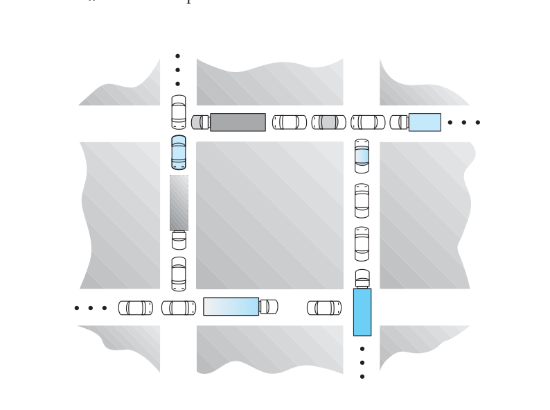
Answer
Treating road segments in the crossing as resources and cars as threads, all four conditions hold:将交叉路口的各段路面看作资源、汽车看作线程，四个条件均满足：
- Mutual exclusion: Only one car can occupy a road segment at a time.互斥： 同一段路面一次只能容纳一辆车。
- Hold and wait: Each car holds the segment under it while waiting to advance into the next.占有并等待： 每辆车占着脚下路段，同时等待前方路段空出。
- No preemption: A car cannot be lifted off the street (nor can it reverse when traffic is behind it); it only vacates by moving forward.非抢占： 车辆无法被吊离路面（车流堵塞后也无法倒退），只能等其自行往前开出。
- Circular wait: Cars form a closed waiting ring around the crossing, each blocked by the car ahead.循环等待： 四面车辆首尾相连，每辆车都在等环上下一辆车让路。
Simple rule: Permit a car to enter the intersection only if space beyond the far side is clear so it can exit immediately ("do not block the box"), which denies hold and wait.简单预防规则： 规定只有路口对面出口有空位、能确保一次驶出时才允许车辆进入交叉区（即“勿堵路口”），从而直接破坏“占有并等待”条件。
Resource-allocation graphs ★★★资源分配图
Goal. Draw a resource-allocation graph with explicit sets \(T\), \(R\), and \(E\), and determine whether the system is deadlocked.目标。画出包含顶点集 \(T\)、\(R\) 与边集 \(E\) 的资源分配图，并据此判定系统是否处于死锁。
Step 1: the symbols of the graph第 1 步：图中的符号
Core idea: A resource-allocation graph visualizes both ownership (\(R_j\to T_i\)) and waiting (\(T_i\to R_j\)) so deadlocks appear as closed cycles.核心思路：资源分配图用有向边同时刻画“谁持有资源（\(R_j\to T_i\)）”与“谁在等资源（\(T_i\to R_j\)）”，把死锁转化为图上的有向环问题。
A resource-allocation graph（资源分配图）is a directed graph \(G=(V,E)\) whose vertex set \(V\) is partitioned into active threads \(T=\{T_1,\dots,T_n\}\) and resource types \(R=\{R_1,\dots,R_m\}\):资源分配图是一个有向图 \(G=(V,E)\)，顶点集 \(V\) 划分为活动线程集 \(T=\{T_1,\dots,T_n\}\) 与资源类型集 \(R=\{R_1,\dots,R_m\}\)：
| Symbol符号 | Drawn as画法 | Meaning含义 |
|---|---|---|
| Thread \(T_i\) | circle圆圈 | an active thread活动线程 |
| Resource type \(R_j\) | rectangle with one dot per instance矩形框，内部每个圆点代表一个实例 | a resource type and its instance count资源类型及其拥有的实例个数 |
| Request edge \(T_i\to R_j\) | arrow from circle to rectangle由圆圈指向矩形框的箭头 | \(T_i\) has requested an instance of \(R_j\) and is waiting\(T_i\) 已请求 \(R_j\) 的一个实例并正在等待 |
| Assignment edge \(R_j\to T_i\) | arrow from a dot to circle由矩形内某个圆点指向圆圈的箭头 | an instance of \(R_j\) is currently allocated to \(T_i\)\(R_j\) 的一个实例已分配给 \(T_i\) |
When \(T_i\) requests \(R_j\), a request edge is inserted; once the request is granted, that edge flips into an assignment edge; when \(T_i\) releases the resource, the assignment edge is removed.当线程发起请求时新增一条请求边；请求获批后，该边立即反转为分配边；线程释放资源时，对应分配边被删除。
Step 2: how to analyze a graph by hand第 2 步：手工构造与判断
Procedure:分析步骤：
- List \(T\), \(R\), and the instance count of each resource type.写出线程集 \(T\)、资源集 \(R\) 及每种资源的实例数。
- Draw an assignment edge \(R_j\to T_i\) for each held instance and a request edge \(T_i\to R_j\) for each blocked wait.为每个已占用实例画分配边 \(R_j\to T_i\)，为每次等待画请求边 \(T_i\to R_j\)。
- Search for directed cycles (paths returning to their starting vertex).沿箭头方向查找有向环。
- If no cycle exists, the system has no deadlock.若图中无环，则系统肯定没有死锁。
- If a cycle exists and every resource type on it has only one instance, all threads on the cycle are deadlocked.若有环且环上每种资源都仅有一个实例，则环上所有线程必然死锁。
- If any resource type on the cycle has multiple instances, check for a non-waiting thread outside the cycle whose completion releases an instance needed to break the ring.若环上存在多实例资源，检查环外是否有不等待任何资源的线程——只要它能先运行完并归还实例给环上线程，环即可解开。
Applying this to the two-mutex program—with \(T=\{T_1,T_2\}\) and single-instance locks \(R=\{R_1,R_2\}\) (first_mutex, second_mutex)—gives edge set \(E=\{R_1\to T_1,\ T_1\to R_2,\ R_2\to T_2,\ T_2\to R_1\}\). The cycle \(T_1\to R_2\to T_2\to R_1\to T_1\) involves only single-instance types, proving deadlock immediately.对前述双互斥锁程序建模，令 \(T=\{T_1,T_2\}\)、单实例锁 \(R=\{R_1,R_2\}\)（first_mutex 与 second_mutex），得到边集 \(E=\{R_1\to T_1,\ T_1\to R_2,\ R_2\to T_2,\ T_2\to R_1\}\)。环 \(T_1\to R_2\to T_2\to R_1\to T_1\) 只涉及单实例资源，因而可立刻断定发生死锁。

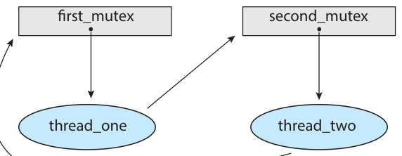
Step 3: reading a graph with several instances第 3 步：判读多实例资源分配图
In the left figure below, \(R_1, R_2, R_3, R_4\) have \(1, 2, 1, 3\) instances respectively, and \(E=\{T_1\to R_1,\,T_2\to R_3,\,R_1\to T_2,\,R_2\to T_2,\,R_2\to T_1,\,R_3\to T_3\}\). Thus \(T_1\) holds one instance of \(R_2\) and waits for \(R_1\); \(T_2\) holds \(R_1\) and an instance of \(R_2\) while waiting for \(R_3\); and \(T_3\) holds \(R_3\).在下左图中，\(R_1, R_2, R_3, R_4\) 分别有 \(1, 2, 1, 3\) 个实例，边集为 \(E=\{T_1\to R_1,\,T_2\to R_3,\,R_1\to T_2,\,R_2\to T_2,\,R_2\to T_1,\,R_3\to T_3\}\)：\(T_1\) 持有 \(R_2\) 的一个实例并等待 \(R_1\)，\(T_2\) 持有 \(R_1\) 和 \(R_2\) 的一个实例并等待 \(R_3\)，\(T_3\) 持有 \(R_3\)。
Here the left graph has no cycle: \(T_3\) can finish first and release \(R_3\), unblocking \(T_2\) and then \(T_1\). However, if \(T_3\) additionally requests \(R_2\) (right figure), both instances of \(R_2\) are occupied, creating two interlocked cycles where \(T_1\) waits for \(T_2\), \(T_2\) waits for \(T_3\), and \(T_3\) waits for the holders of \(R_2\)—so all three deadlock.左图中没有环：\(T_3\) 可以先跑完并释放 \(R_3\)，接着唤醒 \(T_2\)，最后 \(T_1\) 也能顺利结束。但如果此时 \(T_3\) 再请求 \(R_2\)（右图），\(R_2\) 的两个实例恰被占满，瞬间形成两条套在一起的有向环（\(T_1\to T_2\to T_3\to R_2\to\dots\)），三个线程全部死锁。

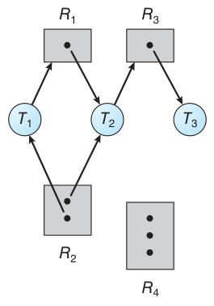

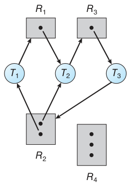
By contrast, a cycle does not guarantee deadlock when multiple instances exist. Below, the cycle \(T_1\to R_1\to T_3\to R_2\to T_1\) appears, yet \(R_1\) and \(R_2\) each have two instances; \(T_2\) and \(T_4\) hold the remaining instances without waiting on anything, so \(T_4\) can complete and release \(R_2\) to \(T_3\), breaking the cycle.相反，多实例图中出现环并不必然导致死锁。如下图所示，图中有环 \(T_1\to R_1\to T_3\to R_2\to T_1\)，但 \(R_1\) 和 \(R_2\) 各有两个实例；\(T_2\) 与 \(T_4\) 分别持有另一份实例且未阻塞在任何请求上，因此 \(T_4\) 跑完归还 \(R_2\) 后即可交给 \(T_3\)，环随即瓦解。

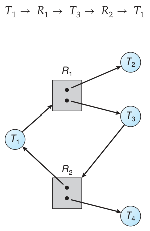
| Graph图特征 | Conclusion判定结论 |
|---|---|
| No cycle无环 | No deadlock无死锁 |
| Cycle, every resource type on it has one instance有环，且环上每种资源都仅有 1 个实例 | Deadlock: every thread on the cycle is deadlocked (necessary and sufficient)必然死锁：环上全部线程均死锁（环是充要条件） |
| Cycle, some resource type on it has multiple instances有环，且环上至少一种资源有多个实例 | Deadlock is possible, not certain (cycle is necessary, not sufficient)可能死锁，但不一定（环只是必要非充分条件） |
Practice练习
Q1. (Trace) Resource type \(R_1\) has two instances and \(R_2\) has one. The edges are \(R_1\to T_1\), \(R_1\to T_2\), \(R_2\to T_3\), \(T_1\to R_2\), and \(T_3\to R_1\):Q1.（手工演算）资源 \(R_1\) 有 2 个实例，\(R_2\) 有 1 个实例，边集为 \(R_1\to T_1\)、\(R_1\to T_2\)、\(R_2\to T_3\)、\(T_1\to R_2\) 与 \(T_3\to R_1\)：
- Find a directed cycle.找出一条有向环路。
- Does a deadlock exist?当前是否存在死锁？
- If \(T_2\) now adds the request \(T_2\to R_2\), is there a deadlock?若 \(T_2\) 接着发起请求 \(T_2\to R_2\)，此时是否死锁？
Answer
- Cycle: \(T_1\to R_2\to T_3\to R_1\to T_1\).有向环：\(T_1\to R_2\to T_3\to R_1\to T_1\)。
- No deadlock: Because \(R_1\) has two instances and \(T_2\) (holding one \(R_1\)) is not waiting on any resource, \(T_2\) finishes first and releases \(R_1\); then \(T_3\) acquires \(R_1\), finishes, and releases \(R_2\); finally \(T_1\) acquires \(R_2\) and finishes.无死锁： \(R_1\) 有两个实例，而持有其中一份的 \(T_2\) 并不等待任何资源，因此 \(T_2\) 可先结束并归还 \(R_1\)；接着 \(T_3\) 拿到 \(R_1\) 跑完释放 \(R_2\)，最后 \(T_1\) 拿到 \(R_2\) 完成。
- Yes, deadlocked: Adding \(T_2\to R_2\) leaves all three threads blocked—\(T_1\) and \(T_2\) wait on \(R_2\) (held by \(T_3\)), while \(T_3\) waits on \(R_1\) (both instances held by blocked \(T_1\) and \(T_2\))—so \(T_1, T_2, T_3\) all deadlock.发生死锁： 加入 \(T_2\to R_2\) 后，三者全被卡死——\(T_1, T_2\) 等待 \(T_3\) 手里的 \(R_2\)，而 \(T_3\) 等待的 \(R_1\) 两份实例又全被正在阻塞的 \(T_1, T_2\) 占死，故 \(T_1, T_2, T_3\) 全部死锁。
Q2. (Write down) Give the exact sets \(T\), \(R\), and \(E\) for the deadlocked state of the two-mutex program and identify the cycle.Q2.（规范书写）写出双互斥锁程序死锁状态下的顶点集 \(T\)、\(R\) 与边集 \(E\)，并指明环路。
Answer
Let \(T=\{T_1,T_2\}\) represent thread one and thread two, and \(R=\{R_1,R_2\}\) represent first_mutex and second_mutex (one instance each). Because thread one holds \(R_1\) waiting for \(R_2\) and thread two holds \(R_2\) waiting for \(R_1\), \(E=\{R_1\to T_1,\ T_1\to R_2,\ R_2\to T_2,\ T_2\to R_1\}\), containing the single-instance deadlock cycle \(T_1\to R_2\to T_2\to R_1\to T_1\).取线程集 \(T=\{T_1,T_2\}\)、单实例锁资源集 \(R=\{R_1,R_2\}\)（分别对应 first_mutex 与 second_mutex），则边集为 \(E=\{R_1\to T_1,\ T_1\to R_2,\ R_2\to T_2,\ T_2\to R_1\}\)。由于环 \(T_1\to R_2\to T_2\to R_1\to T_1\) 上全部资源均为单实例，两线程陷入死锁。
Handling deadlocks: prevention ★★★处理死锁：预防
Goal. List the four general ways to handle deadlock, give a prevention scheme and tradeoff for each necessary condition, and apply the lock-ordering rule.目标。掌握处理死锁的四类策略，针对每个必要条件写出一种预防手段及其代价，并熟练应用加锁顺序规则。
Step 1: four ways to handle deadlock第 1 步：处理死锁的四种策略
Core idea: Systems handle deadlocks along four approaches: ignore them, disallow one necessary condition statically (prevention), check safety dynamically (avoidance), or detect and recover after they happen.核心思路：处理死锁共有四条路线：忽略不管（鸵鸟策略）、静态破坏必要条件（预防）、动态保证安全状态（避免），以及允许发生后再检测与恢复。
| Method方法 | Idea思路 | Requirement and cost要求与代价 | Used by典型应用 |
|---|---|---|---|
| Ignore (the "ostrich" approach)忽略（“鸵鸟”策略） | Pretend deadlock never occurs and rely on manual intervention or reboot if a freeze happens.假设死锁极少发生而不加系统级干预，真卡死时由人工重启恢复。 | Zero runtime overhead; when deadlocks occur only rarely (e.g., monthly), systematic prevention costs far more than rebooting.零运行时开销；若系统数月才偶发一次死锁，持续做防护比偶尔重启代价更高。 | Most general-purpose OSs (Linux, Windows); burden rests on developers to write deadlock-free code.Linux、Windows 等绝大多数通用操作系统（由程序员自己保证代码无死锁）。 |
| Prevention死锁预防 | Constrain resource request patterns so at least one necessary condition can never hold.在请求规则上加静态限制，确保四个必要条件至少一个永远不成立。 | Needs no runtime state tracking, at the price of lower device utilization and throughput.无需运行时跟踪状态，但会压低设备利用率与系统吞吐量。 | Global lock-ordering conventions in kernels and multithreaded apps.内核与多线程程序中的全局加锁顺序规范。 |
| Avoidance死锁避免 | Inspect future demands dynamically and grant a request only if the resulting state remains safe.动态评估未来需求，只在批准后系统仍处于安全状态时才分配。 | Requires advance knowledge of each thread's maximum claim plus safety checks on every request.需提前获知每个线程的最大需求，且每次请求都要做安全性检测。 | Banker's algorithm (Section 5.5).银行家算法（第 5.5 节）。 |
| Detection and recovery检测与恢复 | Allow deadlocks to form, periodically run cycle/state detection, and break any deadlock found.放任自由分配，周期性运行检测，一旦查出死锁便终止或抢占以解除僵局。 | Pays both runtime detection cost and lost work during rollback/abort recovery.兼有定期检测的计算开销，以及回滚 / 终止恢复时的进度损失。 | Database management systems (transaction deadlock detectors).数据库系统（事务死锁检测与回滚）。 |
Both prevention and avoidance stop deadlocks before they occur: prevention imposes fixed structural rules on all requests regardless of runtime demand, whereas avoidance uses each thread's declared maximum claims to evaluate requests dynamically (Section 5.4).预防和避免都能在死锁发生前加以拦截：区别在于预防靠固定规则一刀切地限制请求方式，而避免则依赖事先申报的最大需求在运行时逐次动态决策（见第 5.4 节）。
Step 2: deny one condition第 2 步：逐个否定必要条件
Core idea: Deadlock prevention guarantees that at least one of the four necessary conditions can never hold.核心思路：只要用制度确保四个必要条件中至少有一个永远不成立，死锁便不可能发生。
| Condition条件 | How it is denied否定做法 | Drawbacks局限与代价 |
|---|---|---|
| Mutual exclusion互斥 | Allow concurrent shared access wherever possible (e.g., read-only files need no exclusive lock and cannot deadlock).尽量将资源改为可共享访问（例如只读文件无需独占，永不死锁）。 | Cannot be denied in general because mutex locks and write operations are intrinsically nonsharable.对本质上必须独占的资源（如互斥锁、写入设备）无法通用地消除互斥。 |
| Hold and wait占有并等待 | Ensure a thread never requests while holding another resource: Protocol 1 acquires all required resources before execution starts; Protocol 2 allows requests only when holding none (release all held resources before requesting again).禁止“边占边等”：协议 1 要求启动前一次性拿齐全部资源；协议 2 规定只有在什么都不占有时才允许新请求（再要资源前须先全放光）。 | Severe underutilization (resources needed only at the end sit idle throughout execution) and possible starvation for threads needing multiple hot resources; Protocol 1 is also impractical when demands evolve dynamically.资源利用率极低（临近结束才用的资源也要全程占死）；需要多个热门资源的线程可能迟迟凑不齐而饥饿；动态申请的场景下协议 1 更难以实现。 |
| No preemption非抢占 | If a thread holding resources blocks on another request, implicitly release all held resources and restart only once both old and new resources are reacquired (or preempt resources held by another waiting thread).若已占资源的线程请求新资源受阻，则隐式剥夺并释放其已持有的全部资源，等原资源与新资源都可用后再重新拿回；也可从另一正在阻塞等待的线程处抢占资源。 | Practical only for resources whose state can be cleanly checkpointed and restored (e.g., CPU registers, database transactions), not for mutexes or semaphores where deadlocks typically arise.仅适用于状态易于保存和恢复的资源（如 CPU 寄存器、数据库事务），不适用于最容易出死锁的互斥锁和信号量。 |
| Circular wait循环等待 | Impose a global total ordering \(F\) on all resource types and require every thread to acquire resources in strictly increasing order.给所有资源类型规定全局编号序 \(F\)，要求每个线程必须按编号严格递增的顺序加锁。 | Relies on programmer discipline; becomes hard to maintain across hundreds of locks or when lock objects are chosen dynamically at run time.完全依赖程序员遵守约定；当锁的数量达数百把或锁对象在运行时动态确定时难以维护。 |
In practice, only denying circular wait via lock ordering is broadly practical: it adds zero runtime overhead and acts as a clean design rule.四种方案中，只有通过全局加锁顺序破坏“循环等待”在工程上最可行：它没有任何运行时检测开销，纯粹靠编码规范即可落地。
Step 3: circular wait and lock ordering第 3 步：循环等待与加锁顺序
Core idea: Assign a unique rank \(F(R)\) to every resource type and require threads to request resources only in strictly increasing rank order.核心思路：为每类资源分配唯一序号 \(F(R)\)，规定线程在持有旧资源时只能申请序号严格更大的新资源。
For instance, setting \(F(\text{first\_mutex})=1\) and \(F(\text{second\_mutex})=5\) forces both threads to lock first_mutex before second_mutex.例如，令 \(F(\text{first\_mutex})=1\)、\(F(\text{second\_mutex})=5\)，所有线程就都会统一先锁 first_mutex 再锁 second_mutex。
Step-by-step check:手工检验步骤：
- List the rank \(F\) of every resource type.标出每种资源的序号 \(F\)。
- Trace a thread's requests chronologically, keeping track of which resources remain held at each step.按时间顺序逐条检查线程的请求，同时记清此刻手里还拿着哪些资源。
- Verify that every newly requested resource has a strictly higher rank than every resource currently held.确认每次新请求的序号严格大于当时持有的所有资源序号，规则即成立。
Why it prevents cycles: Suppose by contradiction a circular wait arises among \(T_0,\dots,T_n\), where \(T_i\) waits for \(R_i\) held by \(T_{i+1}\) (indices modulo \(n+1\)). Because \(T_{i+1}\) holds \(R_i\) while requesting \(R_{i+1}\), the ordering rule requires \(F(R_i)<F(R_{i+1})\) for all \(i\)—yielding the contradiction \(F(R_0)<F(R_1)<\dots<F(R_n)<F(R_0)\).防环证明： 用反证法：假设 \(T_0,\dots,T_n\) 之间形成等待环，\(T_i\) 等待 \(T_{i+1}\) 手里的 \(R_i\)（下标对 \(n+1\) 取模）。因为每个 \(T_{i+1}\) 都是拿着 \(R_i\) 去等 \(R_{i+1}\)，按递增规则必有 \(F(R_i)<F(R_{i+1})\)，串联一圈得出 \(F(R_0)<F(R_1)<\dots<F(R_n)<F(R_0)\)，产生矛盾，故循环等待不可能出现。
Note a subtle pitfall: lock ordering breaks down whenever locks are passed dynamically at run time rather than fixed statically in source order:注意一个隐蔽陷阱：当锁对象由函数参数在运行时动态传入时，仅仅按代码书写顺序加锁依然可能死锁：
void transaction(Account from, Account to, double amount)
{
mutex lock1 = get_lock(from);
mutex lock2 = get_lock(to);
acquire(lock1);
acquire(lock2);
withdraw(from, amount);
deposit(to, amount);
release(lock2);
release(lock1);
}
If one thread calls transaction(checking, savings, 25.0) while another concurrently calls transaction(savings, checking, 50.0), both execute the same source lines yet acquire the two locks in opposite orders. Ordering must therefore rely on an intrinsic key of the object (such as account ID or lock memory address) rather than parameter order.若线程 A 调用 transaction(checking, savings, 25.0) 而线程 B 同时调用 transaction(savings, checking, 50.0)，两人执行完全同一段函数，加锁次序却恰好相反。因此排序依据必须是对象自身的固有键（如账户编号或锁地址），绝不能是形参先后顺序。
Practice练习
Q1. (Apply) Resources \(A, B, C\) are ranked \(F(A)=1\), \(F(B)=5\), and \(F(C)=9\). Which request sequences below satisfy the rule "request only in strictly increasing order of \(F\)", and how does the answer change under the alternative release-first form?Q1.（应用）资源 \(A, B, C\) 编号分别为 \(F(A)=1\)、\(F(B)=5\)、\(F(C)=9\)。判断以下哪些序列满足“只能按 \(F\) 递增顺序请求”，若改用等价的“先释放再请求”形式又如何变化？
- \(A, B, C\)
- \(B, A\)
- \(A, C\)
- \(C, B\)
- \(B, C, A\)
Answer
Without intermediate releases: Only (a) (\(1<5<9\)) and (c) (\(1<9\)) are allowed; (b) (\(1<5\)), (d) (\(5<9\)), and (e) (\(1<9\) at \(A\)) violate strictly increasing order.不中途释放时： 仅 （a）（\(1<5<9\)）和 （c）（\(1<9\)）合法；（b）、（d）、（e） 均违背递增顺序而被禁止。
Under the alternative release-first rule: Before requesting \(R_j\), a thread releases all held \(R_i\) with \(F(R_i)\ge F(R_j)\)—making (b) legal if \(B\) is released first, (d) legal if \(C\) is released first, and (e) legal if both \(B\) and \(C\) are released before requesting \(A\).在等价规则下： 请求 \(R_j\) 前只要先释放所有满足 \(F(R_i)\ge F(R_j)\) 的已持有资源即合法——因此先放 \(B\) 则 （b） 合法，先放 \(C\) 则 （d） 合法，请求 \(A\) 前先放掉 \(B, C\) 则 （e） 也合法。
Q2. (Compare) A system contains synchronization objects \(A,\dots,E\). A containment scheme prevents deadlock by adding a master lock \(F\) that must be acquired before any of \(A,\dots,E\). Compare containment with lock ordering.Q2.（比较）系统中有同步对象 \(A,\dots,E\)。“包含”方案增加一把总锁 \(F\)，规定获取 \(A,\dots,E\) 中任意对象前都必须先拿到 \(F\)。比较该方案与循环等待（排序）方案的优劣。
Answer
Containment indeed prevents deadlock because holding any of \(A,\dots,E\) requires holding \(F\), guaranteeing only one thread runs across those locks at a time so no circular wait can form. However, \(F\) serializes unrelated operations—threads needing disjoint locks (e.g., \(A\) vs. \(D\)) block behind each other on \(F\), hurting concurrency and throughput.“包含”方案确能防死锁（任何线程持有 \(A,\dots,E\) 之一时必然独占着 \(F\)，根本不会出现互相等待），但代价是将原本互不相交的操作强行串行化，使总锁 \(F\) 成为吞吐瓶颈。
By contrast, lock ordering incurs zero runtime bottleneck and permits concurrent execution on disjoint locks, requiring only that programmers establish and obey a global rank order.相比之下，加锁顺序不引入额外瓶颈锁，访问不冲突资源的线程完全可以并发推进，唯一要求只是程序员在设计期约定并遵守统一的全序编号。
Q3. (Fix) Repair transaction() so that it cannot deadlock.Q3.（修复）修改 transaction() 函数以彻底消除死锁。
Answer
Order lock acquisition by each account's unique ID regardless of parameter order, and skip transferring when both accounts match:不论实参传入顺序如何，始终按账号 ID 从小到大加锁；同一账户直接返回以避免重复加锁：
void transaction(Account from, Account to, double amount)
{
if (from.id == to.id) return; /* one lock only: nothing to transfer */
Account lo = (from.id < to.id) ? from : to; /* smaller account number first */
Account hi = (from.id < to.id) ? to : from;
acquire(get_lock(lo));
acquire(get_lock(hi));
withdraw(from, amount);
deposit(to, amount);
release(get_lock(hi));
release(get_lock(lo));
}
Because both concurrent transfers now lock the lower-ID account before the higher-ID account, a circular wait is impossible, while the guard from.id == to.id prevents self-deadlock on the same lock.现在所有并发转账都按统一账号升序获取两把锁，彻底断绝循环等待；开头的相等判断则防止对同一账户锁加锁两次导致自死锁。
Deadlock avoidance: safe states ★★★死锁避免：安全状态
Goal. Determine whether a state is safe, construct a safe sequence, and distinguish safe, unsafe, and deadlocked states.目标。判断状态是否安全、找出安全序列，并准确区分安全、不安全与死锁三类状态的关系。
Step 1: what avoidance needs第 1 步：死锁避免的前提信息
Core idea: Each thread declares its maximum future demand up front, and the OS grants a request only if it can still finish every thread afterward.核心思路：每个线程事先申报最大资源需求，系统仅在确认“批准后依然存在让全体线程跑完的路径”时才放行本次请求。
Because static prevention rules constrain requests aggressively and lower utilization, deadlock avoidance trades extra a priori information for higher concurrency: each thread declares the maximum number of instances of every resource type it may ever need. Tracking the current resource-allocation state (available instances, current allocations, and maximum claims), the OS checks dynamically before every allocation that a circular wait can still be prevented.既然静态预防会过度限制并发、压低资源利用率，死锁避免改用额外的先验信息来动态权衡：每个线程启动前声明它一生中对各类资源的最大需求。系统据此维护当前的资源分配状态（空闲量、已分配量及各线程最大需求），只在确认批准请求后仍不失控的前提下放行分配。
Step 2: safe states and safe sequences第 2 步：安全状态与安全序列
Core idea: A state is safe if some ordering lets every thread obtain its remaining maximum need from currently free resources plus all resources released by threads finishing ahead of it.核心思路：只要能排出一串先后次序，让每个线程都仅靠“当前空闲 + 前面线程用完归还的资源”满足其剩余最大需求，状态就是安全的。
A state is safe（安全状态）if the system can allocate resources to each thread up to its declared maximum in some order without ever entering deadlock. Specifically, an ordering \(\langle T_1,\dots,T_n\rangle\) is a safe sequence（安全序列）if each \(T_i\) can satisfy its remaining demand using the currently available resources combined with the resources already held by all earlier threads \(T_j\) (\(j<i\)). A state with at least one safe sequence is safe; otherwise it is unsafe（不安全状态）.若系统存在至少一条分配次序，能够依次满足所有线程直至其最大需求而不陷入死锁，则称当前状态为安全状态。具体而言，序列 \(\langle T_1,\dots,T_n\rangle\) 是安全序列，意味着序列中的每个线程 \(T_i\) 都能借助“当前空闲资源 + 排在它前面所有线程 \(T_j\)（\(j<i\)）释放出来的资源”补足自己的剩余需求。找不到任何安全序列的状态称为不安全状态。
Three key relationships tie these state sets together:三类状态集合的包含关系如下：
- A safe state is guaranteed deadlock-free.安全状态绝不会死锁。
- Every deadlocked state is a subset of unsafe states.死锁状态一定是不安全状态的子集。
- An unsafe state is not necessarily deadlocked yet, but the OS can no longer prevent deadlock if threads suddenly ask up to their full claims.不安全状态未必已经死锁，但系统已失去最坏情况下的兜底保证——只要线程随后真按最大声明申请，死锁就会发生。

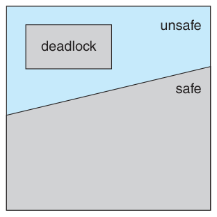
Consequently, an avoidance scheduler refuses any allocation that enters an unsafe state—even if free instances exist right now—making avoidance conservative because it plans against every thread claiming its full maximum.因此，即使眼前还有空闲资源，只要分配会落入不安全状态，避让算法也会让请求线程阻塞等待。这种基于“假设所有人都要满额借款”的保守检查正是死锁避免的本质。
Step 3: the claim-edge graph (one instance per type)第 3 步：需求边图（每种资源单实例）
Core idea: For single-instance resources, add dashed claim edges for potential future requests and refuse any allocation whose reversed assignment edge closes a cycle.核心思路：针对单实例资源，在资源分配图中加入虚线表示的未来可能请求（需求边）；每次预分配只需将请求边改为分配边并判环——一成环就立即拒绝。
A claim edge（需求边）\(T_i\dashrightarrow R_j\) indicates that \(T_i\) may request \(R_j\) in the future. It converts to a solid request edge \(T_i\to R_j\) upon actual request, becomes an assignment edge \(R_j\to T_i\) when granted, and reverts to a claim edge upon release.需求边 \(T_i\dashrightarrow R_j\) 表示 \(T_i\) 将来可能会请求 \(R_j\)。真正发起请求时它变成实线请求边，获批后反转为分配边，释放时再退回虚线需求边。
A request is granted only if converting \(T_i\to R_j\) into \(R_j\to T_i\) introduces no cycle (counting both solid and dashed claim edges); any cycle signals an unsafe state, so \(T_i\) must wait. Note that claim-edge graphs handle only single-instance resources; multi-instance resources require the banker's algorithm (Section 5.5).系统只在将 \(T_i\to R_j\) 试探转为 \(R_j\to T_i\) 后（连同虚线边一起考察）不产生环时才批准请求；一旦成环说明落入不安全状态，必须等待。不过需求边图仅适用于单实例资源，多实例场景需使用银行家算法（见第 5.5 节）。

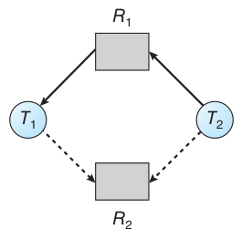

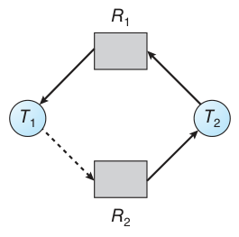
In the left figure, \(T_1\) holds \(R_1\) while both \(T_1\) and \(T_2\) hold dashed claim edges to \(R_2\). Even though \(R_2\) is free, allocating it to \(T_2\) (right figure) closes the cycle \(R_2\to T_2\dashrightarrow R_1\to T_1\dashrightarrow R_2\)—risking mutual blocking if \(T_1\) subsequently requests \(R_2\) and \(T_2\) requests \(R_1\)—so \(T_2\) must wait.左图中 \(T_1\) 持有 \(R_1\)，而 \(T_1, T_2\) 都声明了日后可能申请 \(R_2\)。尽管 \(R_2\) 眼下空闲，若把它分给 \(T_2\)（右图）就会借由虚线边闭合成环 \(R_2\to T_2\dashrightarrow R_1\to T_1\dashrightarrow R_2\)（一旦下一步 \(T_1\) 要 \(R_2\)、\(T_2\) 要 \(R_1\) 就必死无疑），故 \(T_2\) 必须等待。
Practice练习
Q1. (Explain) Suppose a system is in an unsafe state. Explain how all threads can still finish without deadlocking.Q1.（解释）假设系统已进入不安全状态，为什么各线程仍有可能在不发生死锁的情况下全部执行完毕？
Answer
An unsafe state only means the OS cannot guarantee completion if every thread demands its declared maximum; in real execution, threads frequently ask for less than their maximum or release resources early. For example, in the \(t_1\) unsafe state above (\(\text{Available}=2\); holds \(5,2,3\); max \(10,4,9\)), once T1 finishes (\(\text{Available}\to 4\)), if T0 actually requests only \(4\) more resources instead of \(5\), T0 completes and returns \(9\), letting T2 finish as well without deadlocking.“不安全”仅仅意味着“若每个线程都真要满最大额度，系统将无法保证全体完成”；而在实际运行中，线程未必真用满上限，也可能中途归还资源。例如在前述 \(t_1\) 不安全状态（可用 \(2\)）中，当 T1 跑完使可用升至 \(4\) 后，若 T0 实际只需再借 \(4\) 个（而非申报上限 \(5\)），T0 照样能完成并归还全部 \(9\) 个，进而让 T2 也顺利结束，从而避开死锁。
Q2. (Calculation) Ten identical resources are shared by T0, T1, and T2 with maximum claims \(9, 4, 7\) and current allocations \(3, 2, 2\):Q2.（计算）10 个相同资源由 T0、T1、T2 共享，最大需求分别为 \(9, 4, 7\)，当前已分配 \(3, 2, 2\)：
- Is the current state safe?当前状态是否安全？
- If T2 requests one more resource, should it be granted?若 T2 再申请 1 个资源，应否批准？
- Starting again from the original state, if T0 requests one more resource, should it be granted?若改从初始状态出发，T0 再申请 1 个资源，应否批准？
Answer
- Yes (safe): \(\text{Available} = 10 - (3+2+2) = 3\), and \(\text{Need} = (6, 2, 5)\). T1 needs \(2 \le 3\) (\(\text{Work}\to 5\)), T2 needs \(5 \le 5\) (\(\text{Work}\to 7\)), and T0 needs \(6 \le 7\) (\(\text{Work}\to 10\)), giving safe sequence \(\langle T_1, T_2, T_0\rangle\).安全： \(\text{Available}=3\)，\(\text{Need}=(6,2,5)\)。依次执行 T1（\(2\le 3\to \text{Work}=5\)）、T2（\(5\le 5\to 7\)）、T0（\(6\le 7\to 10\)），得安全序列 \(\langle T_1,T_2,T_0\rangle\)。
- Yes (grant): Pretending to grant leaves \(\text{Available} = 2\) and \(\text{Need} = (6, 2, 4)\). Now T1 fits (\(2 \le 2 \to \text{Work}=4\)), T2 fits (\(4 \le 4 \to \text{Work}=7\)), and T0 fits (\(6 \le 7\)), keeping the state safe.批准： 试探分配后 \(\text{Available}=2\)、\(\text{Need}=(6,2,4)\)。依次跑完 T1（得 \(4\)）、T2（得 \(7\)）、T0，仍存在安全序列，故予批准。
- No (must wait): Pretending to grant leaves \(\text{Available} = 2\) and \(\text{Need} = (5, 2, 5)\). After T1 finishes (\(\text{Work} = 4\)), neither T0 (\(5 > 4\)) nor T2 (\(5 > 4\)) fits. Because the post-allocation state is unsafe—even though one resource would still be free—T0 must wait.拒绝（令其等待）： 试探分配后 \(\text{Available}=2\)、\(\text{Need}=(5,2,5)\)。只有 T1 能先跑完使空闲涨到 \(4\)，此后 T0 与 T2 各需 \(5 > 4\)，无后续安全序列。因此即使分完还剩 1 个空闲资源，也因状态不安全而必须让 T0 等待。
Q3. (Prove; one step beyond the text) Suppose \(m\) identical resources are shared by \(n\) threads, each requesting/releasing one unit at a time with maximum claim between \(1\) and \(m\). Prove the system is deadlock-free if \(\sum_i\text{Max}_i < m+n\), and apply this to \(m=4\) resources and \(n=3\) threads of maximum claim \(2\) each.Q3.（证明；进阶题）设 \(n\) 个线程共享 \(m\) 个等价资源，每次仅申请或归还 1 个，各线程最大需求 \(\text{Max}_i \in [1, m]\)。证明：只要 \(\sum_i\text{Max}_i < m+n\)，系统必定无死锁；并将其应用于 \(m=4\)、\(n=3\) 且每人最大需求均为 \(2\) 的情形。
Answer
Proof by contradiction: Suppose a deadlock occurs. Then every thread is waiting for at least one more unit (\(\sum_i\text{Need}_i \ge n\)) and zero resources remain free (\(\sum_i\text{Allocation}_i = m\)). Summing gives \(\sum_i\text{Max}_i = \sum_i\text{Allocation}_i + \sum_i\text{Need}_i \ge m + n\), contradicting \(\sum_i\text{Max}_i < m+n\) (and \(\text{Max}_i \le m\) guarantees a single thread can always finish alone).反证法： 若系统死锁，则此时全部 \(m\) 个资源必已分配光（\(\sum_i\text{Allocation}_i=m\)），且每个等待线程至少还差 1 个（\(\sum_i\text{Need}_i\ge n\)），相加即得 \(\sum_i\text{Max}_i \ge m+n\)，与题设矛盾；同时 \(\text{Max}_i\le m\) 保证拿到资源的线程总能独自完成。
Application & tightness: With \(m=4\), \(n=3\), and \(\text{Max}_i=2\), \(\sum_i\text{Max}_i = 6 < 4+3 = 7\), so the system is deadlock-free (even if each thread holds 1 unit, 1 free unit remains to finish a thread). Notice the bound is tight: whenever \(\sum_i\text{Max}_i = m+n\), allocating \(\text{Max}_i - 1\) units to every thread uses all \(m\) units while leaving every thread 1 short—deadlock.具体算例与紧界性： 代入 \(m=4, n=3\) 得 \(\sum \text{Max}_i = 6 < 4+3 = 7\)，必无死锁（即使每人都拿 1 个，仍余 1 个可助某人凑满 2 个）。反之当 \(\sum \text{Max}_i = m+n\) 时，给每人分配 \(\text{Max}_i-1\) 恰耗尽全部 \(m\) 个资源且全员各差 1 个而死锁，说明上界紧致。
The banker's algorithm ★★★银行家算法
Goal. Run the banker's algorithm by hand: build the Need matrix, trace the safety algorithm table step by step to find a safe sequence, and evaluate a resource request.目标。手工演算银行家算法：构造 Need 矩阵，列表步进跟踪安全性算法以求出安全序列，并判断资源请求是否可批准。
While claim-edge graphs apply only to single-instance types, the banker's algorithm（银行家算法）handles resource types with multiple instances. Named after a bank that must never issue loans leaving it unable to satisfy all customers, it requires fixed thread and resource counts, advance declaration of maximum needs (each at most total system supply), and finite completion times.需求边图只适合单实例资源，而银行家算法能够处理每种类型拥有多个实例的场景——它的名字来源于银行放贷必须守住“始终能周转满足所有客户”的底线。该算法假设线程数与资源总量固定、各线程预先申报最大需求（不超过系统总量），且任何线程都能在有限时间内结束并归还资源。
Step 1: the data structures第 1 步：核心数据结构
Core idea: Four structures summarize the system state: free resources (Available), maximum claims (Max), current holdings (Allocation), and remaining demands (Need).核心思路：用四组数据刻画系统状态：空闲量（Available）、最大声明（Max）、当前占有（Allocation）与剩余需求（Need）。
Let \(n\) be the number of threads and \(m\) the number of resource types:设系统有 \(n\) 个线程与 \(m\) 类资源：
| Structure数据结构 | Dimensions维度 | Meaning含义 |
|---|---|---|
| Available | vector of length \(m\)长为 \(m\) 的向量 | Available[j] = k: \(k\) instances of \(R_j\) are currently freeAvailable[j] = k：资源 \(R_j\) 当前共有 \(k\) 个空闲实例 |
| Max | \(n\times m\) matrix\(n\times m\) 矩阵 | Max[i][j] = k: \(T_i\) may request at most \(k\) instances of \(R_j\) in totalMax[i][j] = k：线程 \(T_i\) 运行期间最多累计请求 \(k\) 个 \(R_j\) |
| Allocation | \(n\times m\) matrix\(n\times m\) 矩阵 | Allocation[i][j] = k: \(T_i\) currently holds \(k\) instances of \(R_j\)Allocation[i][j] = k：线程 \(T_i\) 当前已占用 \(k\) 个 \(R_j\) |
| Need | \(n\times m\) matrix\(n\times m\) 矩阵 | Need[i][j] = k: \(T_i\) may still request \(k\) more instances of \(R_j\)Need[i][j] = k：线程 \(T_i\) 今后最多还需 \(k\) 个 \(R_j\) |
Step 2: the safety algorithm第 2 步：安全性算法
Core idea: Repeatedly pick an unfinished thread whose remaining \(\text{Need}_i\) fits within current \(\text{Work}\), simulate its completion by recycling \(\text{Allocation}_i\) back into \(\text{Work}\), and verify that all threads can finish.核心思路：反复寻找尚未完成且满足 \(\text{Need}_i\le\text{Work}\) 的线程，模拟其执行完毕并回收 \(\text{Allocation}_i\) 加入 \(\text{Work}\)；若全部线程最终都能完成，则状态安全。
Here \(\text{Work}\) (length \(m\)) tracks the simulated free pool as threads finish one by one, while \(\text{Finish}\) (length \(n\)) records which threads have already completed.算法用长度 \(m\) 的向量 \(\text{Work}\) 模拟随着前面线程结束并归还资源后不断扩大的可用池，并用长度 \(n\) 的布尔向量 \(\text{Finish}\) 标记哪些线程已完成。
Execution steps:手工演算步骤：
- Compute \(\text{Need} = \text{Max} - \text{Allocation}\) row by row, and check/compute \(\text{Available} = \text{Total} - \sum_i\text{Allocation}_i\).逐行算出 \(\text{Need} = \text{Max} - \text{Allocation}\)，并核对 \(\text{Available} = \text{Total} - \sum_i\text{Allocation}_i\)。
- Initialize \(\text{Work} = \text{Available}\) and \(\text{Finish}[i] = \text{false}\) for all \(i\).初始化 \(\text{Work} = \text{Available}\)，所有 \(\text{Finish}[i] = \text{false}\)。
- Scan threads in index order to pick the first unfinished thread satisfying \(\text{Need}_i \le \text{Work}\) across all components.按编号扫描未完成线程，找出第一个各维分量均满足 \(\text{Need}_i \le \text{Work}\) 的线程。
- Record \(\text{Work} \leftarrow \text{Work} + \text{Allocation}_i\), set \(\text{Finish}[i] = \text{true}\), and repeat Step 3.更新 \(\text{Work} \leftarrow \text{Work} + \text{Allocation}_i\)、置 \(\text{Finish}[i] = \text{true}\) 并回到第 3 步。
- Stop once no eligible thread remains: if all threads finished, the selection order gives a safe sequence; otherwise the state is unsafe.若找不到可满足线程即停机：全员完成则所选次序即为安全序列，否则为不安全状态。
Step 3: the resource-request algorithm第 3 步：资源请求算法
Core idea: Grant a request only after it passes three ordered checks: within declared \(\text{Need}_i\), within current \(\text{Available}\), and leaving the pretend post-allocation state safe.核心思路：批准资源请求必须依次通过三项检查：不超过 \(\text{Need}_i\)、不超过当前 \(\text{Available}\)，且试探扣减后的新状态依然安全。
Let \(\text{Request}_i\) denote the resource vector requested by \(T_i\), where \(\text{Request}_i[j]=k\) means \(T_i\) asks for \(k\) additional instances of \(R_j\).设 \(\text{Request}_i\) 为线程 \(T_i\) 此次发出的请求向量，其中 \(\text{Request}_i[j]=k\) 表示再申请 \(k\) 个 \(R_j\)。
Request evaluation procedure:请求判定步骤：
- Verify \(\text{Request}_i\le\text{Need}_i\); otherwise raise an error (thread exceeded its declared maximum claim).检验 \(\text{Request}_i\le\text{Need}_i\)，不成立则直接报错（越界申报）。
- Verify \(\text{Request}_i\le\text{Available}\); otherwise \(T_i\) must wait (insufficient free resources).检验 \(\text{Request}_i\le\text{Available}\)，不成立则令 \(T_i\) 阻塞等待（空闲资源不足）。
- Tentatively apply the three updates above to form the pretend allocation state.假装按上述公式更新三条向量，得到试探分配后的状态。
- Run the safety algorithm (Step 2) on this pretend state.对该试探状态运行第 2 步的安全性算法。
- If safe, commit the allocation; if unsafe, roll back the pretend update and block \(T_i\).若状态安全则正式批准分配；若不安全则撤销修改、恢复原状并让 \(T_i\) 等待。
Practice练习
Q1. (Calculation) A system has four resource types A–D with \(\text{Available} = (1,5,2,0)\):Q1.（计算）某系统含四类资源 A–D，当前 \(\text{Available}=(1,5,2,0)\)，各线程状态如下：
| Thread线程 | Allocation | Max |
|---|---|---|
| T0 | 0 0 1 2 | 0 0 1 2 |
| T1 | 1 0 0 0 | 1 7 5 0 |
| T2 | 1 3 5 4 | 2 3 5 6 |
| T3 | 0 6 3 2 | 0 6 5 2 |
| T4 | 0 0 1 4 | 0 6 5 6 |
- Compute the Need matrix.计算 Need 矩阵。
- Is the system in a safe state?系统当前是否处于安全状态？
- If T1 requests \((0,4,2,0)\), can the request be granted immediately?若 T1 请求 \((0,4,2,0)\)，能否立即批准？
Answer
- Need = Max − Allocation: T0 \((0,0,0,0)\), T1 \((0,7,5,0)\), T2 \((1,0,0,2)\), T3 \((0,0,2,0)\), T4 \((0,6,4,2)\).Need 矩阵（逐行减法）： T0 \((0,0,0,0)\)、T1 \((0,7,5,0)\)、T2 \((1,0,0,2)\)、T3 \((0,0,2,0)\)、T4 \((0,6,4,2)\)。
- Yes (safe): Starting with \(\text{Work} = (1,5,2,0)\): T0 \((0,0,0,0)\to\text{Work}=(1,5,3,2)\); skip T1 (\(7>5\)); T2 \((1,0,0,2)\to(2,8,8,6)\); T1 \((0,7,5,0)\to(3,8,8,6)\); T3 \((0,0,2,0)\to(3,14,11,8)\); T4 \((0,6,4,2)\to(3,14,12,12)\). Safe sequence: \(\langle T_0,T_2,T_1,T_3,T_4\rangle\).处于安全状态： 取 \(\text{Work}=(1,5,2,0)\)：T0 \(\to(1,5,3,2)\)；跳过 T1（\(7>5\)）；T2 \(\to(2,8,8,6)\)；T1 \(\to(3,8,8,6)\)；T3 \(\to(3,14,11,8)\)；T4 \(\to(3,14,12,12)\)，得安全序列 \(\langle T_0,T_2,T_1,T_3,T_4\rangle\)。
- Yes (grant immediately): \((0,4,2,0)\le\text{Need}_1=(0,7,5,0)\) and \((0,4,2,0)\le\text{Available}=(1,5,2,0)\). Pretend allocation gives \(\text{Available}=(1,1,0,0)\), \(\text{Allocation}_1=(1,4,2,0)\), \(\text{Need}_1=(0,3,3,0)\). Tracing safety: T0 \(\to\text{Work}=(1,1,1,2)\); T2 \(\to(2,4,6,6)\); T1 \((0,3,3,0)\to(3,8,8,6)\); followed by T3 and T4. The pretend state remains safe, so grant immediately.可以立即批准： 先过前两关：\((0,4,2,0)\le\text{Need}_1=(0,7,5,0)\) 且 \((0,4,2,0)\le\text{Available}=(1,5,2,0)\)；试探更新得 \(\text{Available}=(1,1,0,0)\)、\(\text{Allocation}_1=(1,4,2,0)\)、\(\text{Need}_1=(0,3,3,0)\)；随后安全检验仍按 \(\langle T_0,T_2,T_1,T_3,T_4\rangle\) 全部走通（\(\text{Work}\) 依次为 \((1,1,1,2)\to(2,4,6,6)\to(3,8,8,6)\to\dots\)），状态安全故立刻批准。
Q2. (Explain) The single-resource banker's algorithm reduces vectors to scalars. Give a counterexample showing that the multi-type banker's algorithm cannot be replaced by running the single-type algorithm separately for each resource type.Q2.（解释）单资源银行家算法可把向量退化为标量。举一个反例说明：面对多种资源类型时，不能通过对每种资源各自独立运行一次单资源银行家算法来替代。
Answer
Consider two threads T0 and T1 sharing one instance each of types A and B, both with \(\text{Max}=(1,1)\). Suppose T0 holds A and T1 holds B, so \(\text{Available}=(0,0)\), \(\text{Need}_0=(0,1)\), and \(\text{Need}_1=(1,0)\). Checking type A independently appears safe (\(\text{Need}_{0,A}=0 \le 0\) so T0 finishes first, releasing A for T1), and checking type B independently also appears safe (T1 has \(\text{Need}_{1,B}=0\) and finishes first, releasing B for T0).构造如下反例：两个线程 T0 与 T1 共享各 1 个实例的 A、B 资源，双方 Max 均为 \((1,1)\)。当前 T0 持有 A、T1 持有 B，导致 \(\text{Available}=(0,0)\)、\(\text{Need}_0=(0,1)\)、\(\text{Need}_1=(1,0)\)。若拆开单独检测 A 类资源，T0 不再缺 A（\(0\le 0\)），看似 T0 能先结束并释放 A 给 T1；单独检测 B 类资源时，T1 不再缺 B，看似 T1 能先结束释放 B 给 T0——两边各自独立检验竟都显示“安全”。
Together, however, \(\text{Work}=(0,0)\) satisfies neither \(\text{Need}_0=(0,1)\) nor \(\text{Need}_1=(1,0)\): the state is in fact deadlocked because T0 waits for T1's B while T1 waits for T0's A. A thread must satisfy its needs across all resource types simultaneously before releasing what it holds, so safety must check full vectors jointly.但事实上两人早已死锁：T0 在等 T1 手里的 B、T1 在等 T0 手里的 A，合起来的 \(\text{Work}=(0,0)\) 谁也满足不了。根本原因在于线程必须同时拿齐所有类型的剩余需求才能跑完并释放资源，因此安全性检验绝不能按资源种类拆开单独判定。
Q3. (Analysis) When deadlock is controlled by the banker's algorithm, which changes below can be made without introducing the possibility of deadlock, and under what conditions?Q3.（分析）在由银行家算法控制死锁的系统中，以下哪些系统变更可以在不引入死锁可能性的前提下安全实施？各自需满足什么条件？
- Increase Available.增加 Available。
- Decrease Available.减少 Available。
- Increase Max of one thread.提高某个线程的 Max。
- Decrease Max of one thread.降低某个线程的 Max。
- Increase the number of threads.增加线程数量。
- Decrease the number of threads.减少线程数量。
Answer
| Change变更 | Safe?是否安全？ |
|---|---|
| (a) Increase Available（a）增加 Available | Always safe: every \(\text{Work}\) vector only increases, preserving all existing safe sequences.总是安全：各步 \(\text{Work}\) 只增不减，原有安全序列全部继续成立。 |
| (b) Decrease Available（b）减少 Available | Safe only if the new state passes the safety test; for instance, in the twelve-resource example above, removing one of the three free resources makes the state unsafe.未必安全，需重跑安全性算法检验；例如在前面 12 资源例子中抽走 1 个空闲资源就会立即变成不安全状态。 |
| (c) Increase Max of one thread（c）提高某线程 Max | Safe only if the post-change state remains safe (within total resources), because its Need grows; e.g., raising T1's Max from \(4\) to \(6\) in that example turns it unsafe.未必安全（且不能超系统总量），因该线程 Need 变大，必须重跑安全性算法验证；例如把上例 T1 的 Max 从 4 调到 6 就会变不安全。 |
| (d) Decrease Max of one thread（d）降低某线程 Max | Always safe (provided new \(\text{Max}\ge\text{Allocation}\)), because its Need only shrinks.总是安全（只要新 \(\text{Max}\ge\text{Allocation}\)），因为其 Need 只会缩小。 |
| (e) Increase the number of threads（e）增加线程数 | Immediately safe if the new thread holds nothing and its \(\text{Max}\le\text{Total}\) (it can be appended to the end of any safe sequence); otherwise must rerun the safety test.若新线程初始分配为 0 且 \(\text{Max}\le\text{Total}\)，直接把它接在原安全序列末尾即可安全完成；否则须重新检验安全性。 |
| (f) Decrease the number of threads（f）减少线程数 | Always safe: the departed thread releases its held resources and leaves the rest of the safe sequence valid.总是安全：退出线程归还所占资源（相当于增加 Available），其余安全序列保持有效。 |
Deadlock detection and recovery ★★★死锁检测与恢复
Goal. Detect deadlock using either a wait-for graph or the multi-instance detection algorithm, trace the algorithm by hand on a small state, and explain recovery strategies.目标。掌握用等待图与多实例检测算法识别死锁，能在小算例上手工推演，并列出常用的死锁恢复方案。
When a system employs neither static prevention nor dynamic avoidance, deadlocks may occur. Handling them requires two pieces: a detection（死锁检测）algorithm that inspects the current allocation state, and a recovery mechanism that breaks any detected cycle—paying both runtime detection overhead and work lost during recovery.若系统既不采用静态预防也不做动态避免，死锁就可能实际发生。此时系统需要“检测 + 恢复”两套机制：先用死锁检测算法检查当前状态，再由恢复机制打破死锁；相应代价也由“检测计算开销”与“恢复丢失的计算进度”两部分组成。
Step 1: one instance per type — the wait-for graph第 1 步：单实例资源与等待图
Core idea: For single-instance resource types, collapse out resource nodes to form a thread-only wait-for graph, where any directed cycle proves deadlock.核心思路：每种资源只有一个实例时，消去资源节点即可得到仅含线程节点的等待图；图中存在有向环就等价于发生死锁。
A wait-for graph（等待图）simplifies the resource-allocation graph by deleting resource vertices and merging edges: an edge \(T_i\to T_j\) exists if and only if the resource-allocation graph contains both \(T_i\to R_q\) and \(R_q\to T_j\) for some resource \(R_q\) (meaning \(T_i\) waits for \(T_j\) to release a resource). Because every type has only one instance, a deadlock exists if and only if the wait-for graph contains a cycle—detectable in \(O(n^2)\) time for \(n\) threads.等待图由资源分配图删去资源节点并合并边得到：当且仅当存在某资源 \(R_q\) 满足 \(T_i\to R_q\) 且 \(R_q\to T_j\) 时，等待图中画边 \(T_i\to T_j\)（表示 \(T_i\) 在等 \(T_j\) 释放资源）。在全单实例下，系统死锁当且仅当等待图含环；对 \(n\) 个线程找环耗时 \(O(n^2)\)。

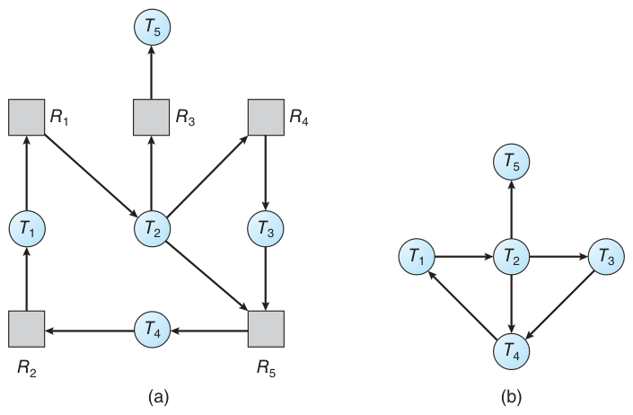
Real systems actively use wait-for cycle detection: Java thread dumps diagnose deadlocked monitors as cycles, and database servers periodically scan transaction lock waits for cycles to abort a victim transaction.真实系统广泛运用这一技术：例如 JVM 线程转储会直接标出锁等待环，数据库引擎也定期搜寻事务锁等待环并中止其中一笔“牺牲事务”来解开僵局。
Step 2: multiple instances — the detection algorithm第 2 步：多实例资源与死锁检测算法
Core idea: Multi-instance detection mirrors the banker's safety loop, replacing worst-case \(\text{Need}_i\) with currently blocked \(\text{Request}_i\); any thread that fails to finish is deadlocked.核心思路：多实例检测与安全性算法结构相同，只是把未来最大余量 \(\text{Need}_i\) 换成当前实时的 \(\text{Request}_i\)；最终仍无法结束的线程即陷入死锁。
Since wait-for graphs cannot represent multi-instance counts accurately, the general detection algorithm maintains \(\text{Available}\), \(\text{Allocation}\), and a \(\text{Request}\) matrix, where \(\text{Request}[i][j]=k\) records that \(T_i\) is currently requesting \(k\) more instances of \(R_j\).面对多实例资源，等待图无法体现剩余配额，因此需使用 \(\text{Available}\)、\(\text{Allocation}\) 以及当前请求矩阵 \(\text{Request}\)（\(\text{Request}[i][j]=k\) 表示 \(T_i\) 眼下正请求 \(k\) 个 \(R_j\)）。
Execution steps:手工演算步骤：
- Initialize \(\text{Work} = \text{Available}\); set \(\text{Finish}[i] = \text{true}\) wherever \(\text{Allocation}_i = 0\) and \(\text{false}\) elsewhere.令 \(\text{Work} = \text{Available}\)；对 \(\text{Allocation}_i = 0\) 的线程预置 \(\text{Finish}[i] = \text{true}\)，其余置为 \(\text{false}\)。
- Find an unfinished thread \(T_i\) whose current \(\text{Request}_i \le \text{Work}\) across every component.找一个尚未完成且当前各维均满足 \(\text{Request}_i \le \text{Work}\) 的线程 \(T_i\)。
- Update \(\text{Work} \leftarrow \text{Work} + \text{Allocation}_i\), mark \(\text{Finish}[i] = \text{true}\), and loop back to Step 2.更新 \(\text{Work} \leftarrow \text{Work} + \text{Allocation}_i\) 并置 \(\text{Finish}[i] = \text{true}\)，返回第 2 步继续扫描。
- When no eligible thread remains, every thread left with \(\text{Finish}[i] = \text{false}\) is deadlocked.当无可推进线程时停机，凡仍保持 \(\text{Finish}[i] = \text{false}\) 的线程均处于死锁中。
Notice the optimistic assumption behind Step 3: whenever \(\text{Request}_i \le \text{Work}\), the algorithm assumes \(T_i\) will finish without issuing further requests and promptly return its resources. If \(T_i\) later asks for more and blocks, that deadlock will simply be caught on the next detection pass—in contrast to the banker's safety test, which pessimistically tests against worst-case \(\text{Need}_i\).注意第 3 步背后的乐观假设：只要 \(\text{Request}_i \le \text{Work}\)，算法便假定 \(T_i\) 不会再追加请求且会顺利跑完归还资源。若 \(T_i\) 日后又提出新请求并卡死，那也只是推迟到下一次运行检测时捕获——这与银行家算法拿最大需求 \(\text{Need}_i\) 作悲观兜底形成鲜明对比。
Step 3: when to invoke detection第 3 步：何时运行检测算法
Because a deadlock can form only when a request cannot be satisfied immediately, OS designers choose among three invocation frequencies:死锁只可能在新请求无法当场满足时形成，实际系统通常在三种检测频率间做权衡：
- On every refused request: Catches deadlock immediately and identifies the exact thread whose request closed the cycle, at high runtime cost.每次请求被拒时立即检测： 能第一时间捕获死锁并锁定最后闭合环路的“元凶”线程，但频繁计算代价高昂。
- At fixed intervals (e.g., hourly): Cheap overall, though existing deadlocks linger longer and additional threads can pile into the block.按固定周期（如每小时一次）检测： 开销很小，但死锁可能白白僵持很久，期间还会拖累更多线程卷入。
- When CPU utilization drops below ~40%: Triggers only when throughput visibly collapses under deadlocks; note that with periodic or arbitrary runs, multiple cycles accumulate and you can no longer pinpoint which thread originally caused the deadlock.CPU 利用率跌破约 40% 时触发： 兼顾性能与及时性；不过只要不是“每次拒绝都查”，图里往往已积累了多个环，无法再追溯究竟是哪个线程最初引发了死锁。
Step 4: recovery第 4 步：从死锁中恢复
Core idea: Break a detected deadlock either by aborting deadlocked threads or by preempting held resources and rolling victims back until the cycle disappears.核心思路：打破僵局只有两条路：终止死锁线程（全部中止，或按最小代价逐个中止），或者抢占部分线程所持资源并回滚，直到循环瓦解。
Option 1 — Process/thread termination reclaims all resources held by the aborted victim(s):途径一：终止线程（强杀后自动回收其占用的全部资源）：
- Abort all deadlocked threads: Guaranteed to break every cycle immediately, but throws away large amounts of completed computation.全部中止： 一定彻底破局，但白白丢弃了所有线程已算出的中间结果，代价惨重。
- Abort one at a time until deadlock clears: Minimizes wasted work, though the detection algorithm must re-run after each termination to test whether the deadlock has resolved.逐个中止： 损失较小，但每杀一个都要重跑一次检测算法确认其余线程是否解套。
When choosing a single victim to terminate, systems weigh minimum economic cost using five factors:选择牺牲者（victim）通常综合衡量以下五项最低代价指标：
- Priority of the thread.线程优先级。
- Elapsed computation time versus remaining time to completion.已运行时间与距结束还剩多少时间。
- Quantity and type of resources currently held (and ease of preemption).已占用的资源种类及数量（是否容易重新分配）。
- Additional resources still needed to finish.完成任务还需申请多少资源。
- How many threads in total would have to be terminated.总共需要牵连中止多少个线程。
Option 2 — Resource preemption strips resources away from chosen victims and hands them to other threads until the deadlock breaks, raising three design issues:途径二：资源抢占（从牺牲者手中剥夺部分资源转分他人），必须解决三个关键问题：
- Victim selection: Pick which resources/threads to preempt using cost metrics (similar to partial termination).选择牺牲者： 按最低代价原则挑选要剥夺谁的资源。
- Rollback（回滚）: A thread losing its resources cannot proceed cleanly and must be rolled back to a prior safe state (the simplest form is total rollback: abort and restart from the beginning).回滚： 被抽走资源的线程不能继续往下跑，须回退到此前保存的安全检查点重启（最简单即完全回滚——终止后从头重跑）。
- Starvation prevention: Avoid picking the same victim repeatedly by including each thread's prior rollback/victim count in the cost metric.防止饥饿： 为防止同一倒霉线程反复被当牺牲品，必须把“历史回滚次数”计入选择代价，被抢占越多次代价越高。
Practice练习
Q1. (Trace) Resource types \(R_1,\dots,R_4\) each have one instance. \(T_1\) holds \(R_1\) and requests \(R_2\); \(T_2\) holds \(R_2\) and requests \(R_3\); \(T_3\) holds \(R_3\) and requests \(R_1\); \(T_4\) holds \(R_4\) and requests \(R_2\):Q1.（手工演算）资源 \(R_1,\dots,R_4\) 各仅 1 个实例：\(T_1\) 持有 \(R_1\) 等 \(R_2\)，\(T_2\) 持有 \(R_2\) 等 \(R_3\)，\(T_3\) 持有 \(R_3\) 等 \(R_1\)，\(T_4\) 持有 \(R_4\) 等 \(R_2\)：
- Construct the wait-for graph.画出对应的等待图。
- Determine whether deadlock exists and identify the cycle.判断是否存在死锁，并指明其中的环路。
- Which threads could be aborted to break the deadlock, and would aborting \(T_4\) help?中止哪些线程可打破死锁？若只中止 \(T_4\) 是否有用？
Answer
- Wait-for edges: \(T_1\to T_2\) (for \(R_2\)), \(T_2\to T_3\) (for \(R_3\)), \(T_3\to T_1\) (for \(R_1\)), and \(T_4\to T_2\) (for \(R_2\)).等待图有向边： \(T_1\to T_2\)（等 \(R_2\)）、\(T_2\to T_3\)（等 \(R_3\)）、\(T_3\to T_1\)（等 \(R_1\)）以及 \(T_4\to T_2\)（等 \(R_2\)）。
- Yes, deadlocked: Cycle \(T_1\to T_2\to T_3\to T_1\) proves deadlock over single-instance resources. Note that \(T_4\) is not inside the cycle, yet remains blocked waiting on \(R_2\) held by deadlocked \(T_2\) (so detection leaves \(\text{Finish}[4]=\text{false}\) too).存在死锁： 环路 \(T_1\to T_2\to T_3\to T_1\) 在单实例图中即确证死锁。\(T_4\) 虽不在环上，但因请求死锁线程 \(T_2\) 所持的 \(R_2\) 而同样卡住（多实例检测算法同样会将其
Finish[4]留为false）。 - Aborting \(T_1\), \(T_2\), or \(T_3\) breaks it; aborting \(T_4\) does not: For example, killing \(T_2\) frees \(R_2\) for \(T_1\) (and \(T_4\)), letting \(T_1\) release \(R_1\) for \(T_3\) so everyone finishes. Killing \(T_4\) only frees \(R_4\), leaving \(T_1\to T_2\to T_3\to T_1\) intact.中止 \(T_1\)、\(T_2\) 或 \(T_3\) 均可破环，中止 \(T_4\) 无效： 例如杀掉 \(T_2\) 会释放 \(R_2\)，让 \(T_1\) 先跑完放行 \(R_1\) 给 \(T_3\) 进而全部疏通；若只杀 \(T_4\) 仅释放没人等的 \(R_4\)，主环纹丝不动。
Q2. (Explain) What optimistic assumption does the detection algorithm make, and how can it be violated?Q2.（解释）多实例死锁检测算法作出了什么“乐观假设”？这一假设何时会失效？
Answer
Whenever a thread satisfies \(\text{Request}_i\le\text{Work}\), the detection algorithm immediately reclaims \(\text{Allocation}_i\) into \(\text{Work}\), optimistically assuming \(T_i\) will issue no additional requests before terminating and releasing all resources. That assumption fails if \(T_i\) actually requests more resources later and blocks—though any resulting deadlock is still caught on the next detection run.当某线程的当前请求满足 \(\text{Request}_i\le\text{Work}\) 时，算法即认为它能顺利运行并马上回收其 \(\text{Allocation}_i\)——乐观地假定它之后不会再申请额外资源。一旦该线程后续又发起新的资源请求并被阻塞，该假设便被打破；不过新形成的死锁仍会在下一次运行检测时被查出。
Q3. (Compare) Contrast running the detection algorithm on every refused request versus running it once per hour.Q3.（比较）对比“每次请求被拒立即检测”与“每小时定时检测一次”两种策略的利弊。
Answer
Checking on every refused request catches deadlocks immediately and pinpoints the exact thread that closed the ring, at the steep cost of paying \(O(m\,n^2)\) on every blocked allocation. Running hourly keeps average overhead tiny, yet allows deadlocks to waste held resources for up to an hour while tangling multiple cycles together so the original culprit can no longer be identified. A common middle ground triggers detection when CPU utilization drops below a threshold (indicating stalled threads).“拒即测”能当场捉住死锁并精准锁定闭合环路的元凶线程，但每次受阻都要承担 \(O(m\,n^2)\) 开销；“每小时一次”平时负担极轻，但死锁可能白占资源空耗长达一小时，且多条环缠绕后难以追查始作俑者。工程折中是监测到 CPU 利用率跌破阈值时再触发检测。
Terms to recognize ★核心术语速查
| Term术语 | Key takeaway核心释义 |
|---|---|
| Livelock活锁 | Threads keep running and retrying a failing action in lockstep without making progress; fixed via random back-off.线程未阻塞但不断同步重试却始终前进不了（如窄道互让）；常通过随机退避化解。 |
| Starvation饥饿 | A thread waits indefinitely while others repeatedly overtake it; fixed via aging or fair FIFO queuing.某线程长期被跳过、无限期得不到服务；可通过老化或 FIFO 公平队列防止。 |
| Ostrich approach鸵鸟策略 | Ignoring rare deadlocks altogether (used by Linux and Windows when prevention/avoidance overhead outweighs rare freezes).假装死锁不存在（Linux 与 Windows 等通用 OS 采用，因防护成本远高于偶发卡死）。 |
| lockdep | Linux kernel runtime validator that tracks lock-acquisition order graphs to warn about potential deadlocks before they happen.Linux 内核运行时锁序检测工具，通过监控加锁次序提前预警潜在死锁。 |
| Wait–die and wound–waitWait–die 与 wound–wait | Timestamp-based database deadlock prevention: older transactions wait or preempt ("wound"), while younger ones abort ("die") or wait.基于事务时间戳的数据库预防规则：老事务等待或强抢回滚，年轻事务自杀重来或等待。 |
| Claim edge需求边 | Dashed edge \(T_i\dashrightarrow R_j\) indicating \(T_i\) may request \(R_j\) later in a single-instance avoidance graph.单实例死锁避免图中的虚线边 \(T_i\dashrightarrow R_j\)，标识线程未来可能提出的申请。 |
| Rollback回滚 | Restoring a victim thread to an earlier safe state and restarting after its held resources are preempted.资源被强行剥夺后，将牺牲线程恢复至先前的安全状态并重新推进。 |
Exam-style questions考试题型练习
Q1. (Concepts and design, 14 marks) Two threads share two mutex locks: Thread A runs lock(m1); lock(m2); work; unlock(m2); unlock(m1), while Thread B runs lock(m2); lock(m1); work; unlock(m1); unlock(m2).Q1.（概念与设计，14 分）两线程共享互斥锁 m1, m2：线程 A 执行 lock(m1); lock(m2); work; unlock(m2); unlock(m1)；线程 B 执行 lock(m2); lock(m1); work; unlock(m1); unlock(m2)。
- Define deadlock and list the four necessary conditions. (4 marks)定义死锁，并列出四个必要条件。（4 分）
- Give an interleaving where the program deadlocks and show how each condition holds. (4 marks)给出一种触发死锁的执行交错，并逐条对应四个条件。（4 分）
- Eliminate the deadlock via resource ordering and prove the rule excludes circular wait. (4 marks)用资源排序法消除死锁，并证明其排除了循环等待。（4 分）
- Give two reasons why general-purpose operating systems usually ignore deadlocks. (2 marks)给出通用操作系统通常忽略死锁的两个原因。（2 分）
Answer
A set of threads is deadlocked when every thread in the set waits for an event (here, releasing a lock) that can be caused only by another thread in the set. The four necessary conditions that must hold simultaneously are:当一组线程中的每一个都在等待只能由同组其他线程触发的事件（此处即释锁）时，系统处于死锁。四个须同时成立的必要条件为：
- Mutual exclusion: each resource is nonsharable (one user at a time).互斥：资源不可共享，一次仅限一线程使用。
- Hold and wait: a thread holds at least one resource while waiting for another.占有并等待：线程持有一份资源的同时等待另一份。
- No preemption: resources can be released only voluntarily by their holder.非抢占：资源只能由持有者主动释放，不能硬夺。
- Circular wait: a closed waiting chain exists where each thread waits for a resource held by the next.循环等待：存在首尾闭合的等待环，每环等待下一环占有的资源。
Deadlocking interleaving: Thread A runs
lock(m1); Thread B runslock(m2); Thread A runslock(m2)and blocks; Thread B runslock(m1)and blocks.触发死锁的交错： A 执lock(m1)→ B 执lock(m2)→ A 试lock(m2)阻塞 → B 试lock(m1)阻塞。- Mutual exclusion: each mutex permits only one owner.互斥：每把锁最多一个持有者。
- Hold and wait: A holds
m1waiting form2; B holdsm2waiting form1.占有并等待：A 占m1等m2，B 占m2等m1。 - No preemption: only the owner can call
unlock.非抢占：只能由各自持有者解锁。 - Circular wait: A waits for B and B waits for A.循环等待：A 等 B 且 B 等 A。
Fix & proof: Assign \(F(m1)=1\) and \(F(m2)=2\), and rewrite B to call
lock(m1)beforelock(m2). Whichever thread winsm1acquiresm2freely while the loser waits without holdingm2.
Proof: Suppose circular wait held among \(T_0,\dots,T_n\) where \(T_i\) waits for \(R_i\) held by \(T_{i+1}\) (mod \(n+1\)). Since each \(T_{i+1}\) holds \(R_i\) while requesting \(R_{i+1}\), strict ordering requires \(F(R_i)<F(R_{i+1})\) for all \(i\), yielding the contradiction \(F(R_0)<F(R_1)<\dots<F(R_n)<F(R_0)\).排序修复与反证： 令 \(F(m1)=1, F(m2)=2\) 并让 B 也先锁m1再锁m2；谁先拿到m1就能接着拿m2，落败者空手等待。
证明： 若存在等待环，其中 \(T_i\) 等 \(T_{i+1}\) 手中的 \(R_i\)（下标取模），则由严格升序规则得 \(F(R_i)<F(R_{i+1})\)，串联一圈导成 \(F(R_0)<\dots<F(R_0)\) 的矛盾。First, deadlocks are rare in practice, so continuous avoidance/detection overhead outweighs an occasional reboot. Second, the OS kernel cannot observe or enforce application-level lock ordering across arbitrary user programs (unlike DBMSs that manage internal transaction locks directly).（1）系统死锁极其罕见，持续运行的检测/避免开销远超偶尔重启的损失；（2）通用内核无从提前获知或强制管束所有用户程序内部自定义的锁序（数据库因能直接掌控内部事务锁，才普遍使用死锁检测）。
Q2. (Banker's algorithm, 16 marks) Five threads T0–T4 share four resource types A–D with \(\text{Available} = (2,2,2,4)\). Evaluate each request in parts (c)–(e) independently from the original snapshot:Q2.（银行家算法，16 分）五个线程 T0–T4 共享四类资源 A–D，初始 \(\text{Available} = (2,2,2,4)\)；（c）–（e）问各自独立从初始快照出发判断：
| Thread线程 | Allocation | Max |
|---|---|---|
| T0 | 3 1 4 1 | 6 4 7 3 |
| T1 | 2 1 0 2 | 4 2 3 2 |
| T2 | 2 4 1 3 | 2 5 3 3 |
| T3 | 4 1 1 0 | 6 3 3 2 |
| T4 | 2 2 2 1 | 5 6 7 5 |
- Compute the Need matrix. (2 marks)求 Need 矩阵。（2 分）
- Prove the state is safe by giving a safe sequence and listing \(\text{Work}\) after each step. (4 marks)给出安全序列与每步更新后的 \(\text{Work}\) 证明状态安全。（4 分）
- T4 requests \((2,2,2,4)\): can it be granted immediately? Explain. (4 marks)T4 请求 \((2,2,2,4)\)，能否立刻批准？说明理由。（4 分）
- T2 requests \((0,1,1,0)\): can it be granted? (3 marks)T2 请求 \((0,1,1,0)\)，能否批准？（3 分）
- T3 requests \((2,2,1,2)\): can it be granted? (3 marks)T3 请求 \((2,2,1,2)\)，能否批准？（3 分）
Answer
Need = Max − Allocation: T0 \((3,3,3,2)\), T1 \((2,1,3,0)\), T2 \((0,1,2,0)\), T3 \((2,2,2,2)\), T4 \((3,4,5,4)\).Need 矩阵（逐行减法）： T0 \((3,3,3,2)\)、T1 \((2,1,3,0)\)、T2 \((0,1,2,0)\)、T3 \((2,2,2,2)\)、T4 \((3,4,5,4)\)。
Safe with sequence \(\langle T_2,T_0,T_1,T_3,T_4\rangle\) (initial \(\text{Work}=(2,2,2,4)\); T0 and T1 skip on first pass):状态安全，安全序列为 \(\langle T_2,T_0,T_1,T_3,T_4\rangle\)（初始 \(\text{Work}=(2,2,2,4)\)，首轮跳过 T0、T1）：
T2: Need (0,1,2,0) ≤ (2,2,2,4) -> Work = (4,6,3,7) T0: Need (3,3,3,2) ≤ (4,6,3,7) -> Work = (7,7,7,8) T1: Need (2,1,3,0) ≤ (7,7,7,8) -> Work = (9,8,7,10) T3: Need (2,2,2,2) ≤ (9,8,7,10) -> Work = (13,9,8,10) T4: Need (3,4,5,4) ≤ (13,9,8,10)-> Work = (15,11,10,11) (matches Total)Denied (must wait): \((2,2,2,4)\le\text{Need}_4=(3,4,5,4)\) and \(\le\text{Available}=(2,2,2,4)\). Pretend allocation gives \(\text{Available}=(0,0,0,0)\) and \(\text{Need}_4=(1,2,3,0)\). Now no thread has \(\text{Need}_i\le(0,0,0,0)\), making the resulting state unsafe; even though resources are currently free, granting leaves the OS unable to guarantee completion.拒绝并令 T4 等待： 请求虽同时满足 \(\le\text{Need}_4\) 与 \(\le\text{Available}\)，但试探扣除后 \(\text{Available}=(0,0,0,0)\)、\(\text{Need}_4=(1,2,3,0)\)，此时全员 Need 均非零，没有任何线程可先跑完——新状态不安全，即使眼前够分也不能放行。
Granted: \((0,1,1,0)\le\text{Need}_2=(0,1,2,0)\) and \(\le\text{Available}\). Pretend allocation yields \(\text{Available}=(2,1,1,4)\), \(\text{Need}_2=(0,0,1,0)\), \(\text{Allocation}_2=(2,5,2,3)\). T2 finishes first (\(\text{Work}=(4,6,3,7)\)), then T0, T1, T3, T4 finish identically to part (b)—state stays safe.批准： 通过前两关后试探扣减得 \(\text{Available}=(2,1,1,4)\)、\(\text{Need}_2=(0,0,1,0)\)、\(\text{Allocation}_2=(2,5,2,3)\)；先完成 T2 得 \(\text{Work}=(4,6,3,7)\)，随后按 (b) 顺序 T0、T1、T3、T4 全可完成，安全成立。
Granted: \((2,2,1,2)\le\text{Need}_3=(2,2,2,2)\) and \(\le\text{Available}\). Pretend allocation yields \(\text{Available}=(0,0,1,2)\), \(\text{Need}_3=(0,0,1,0)\), \(\text{Allocation}_3=(6,3,2,2)\). Running safety: T3 \((0,0,1,0)\to\text{Work}=(6,3,3,4)\), then T0 \(\to(9,4,7,5)\), T1 \(\to(11,5,7,7)\), T2 \(\to(13,9,8,10)\), T4 \(\to(15,11,10,11)\)—safe.批准： 试探扣减得 \(\text{Available}=(0,0,1,2)\)、\(\text{Need}_3=(0,0,1,0)\)、\(\text{Allocation}_3=(6,3,2,2)\)；随后 T3 先完成使 \(\text{Work}=(6,3,3,4)\)，接着 T0 \(\to(9,4,7,5)\)、T1 \(\to(11,5,7,7)\)、T2 \(\to(13,9,8,10)\)、T4 \(\to(15,11,10,11)\) 全部通过，状态安全。
Q3. (Graph, detection and recovery, 14 marks) Resource types \(R_1\) and \(R_2\) have one instance each while \(R_3\) has two instances. The graph contains edges \(R_1\to T_1\), \(R_2\to T_2\), \(R_3\to T_3\), \(R_3\to T_4\), \(T_1\to R_2\), \(T_2\to R_3\), and \(T_3\to R_1\).Q3.（资源图、检测与恢复，14 分）\(R_1, R_2\) 各有 1 个实例，\(R_3\) 有 2 个实例，边集为 \(R_1\to T_1\)、\(R_2\to T_2\)、\(R_3\to T_3\)、\(R_3\to T_4\)、\(T_1\to R_2\)、\(T_2\to R_3\) 与 \(T_3\to R_1\)。
- Identify a cycle and determine—without running an algorithm—whether deadlock exists. (3 marks)找出一个环，并在不运行检测算法的前提下判断系统是否死锁。（3 分）
- Write the Allocation, Request, and Available arrays, then run the detection algorithm. (5 marks)写出 Allocation、Request 与 Available 矩阵/向量，并运行多实例死锁检测算法。（5 分）
- Suppose \(T_4\) now requests \(R_1\); re-run detection and name the deadlocked threads. (3 marks)若 \(T_4\) 新提出对 \(R_1\) 的请求，重跑检测并列出所有死锁线程。（3 分）
- Name one thread whose abortion breaks the deadlock, prove recovery works, and explain how repeated victim selection avoids starvation. (3 marks)指出中止哪一个线程能解除死锁并给出恢复推演，同时说明如何防止反复选中同一牺牲者导致饥饿。（3 分）
Answer
No deadlock: Although cycle \(T_1\to R_2\to T_2\to R_3\to T_3\to R_1\to T_1\) exists, it traverses multi-instance \(R_3\) (2 instances), whose second instance is held by non-waiting thread \(T_4\); \(T_4\) can complete and release \(R_3\) to \(T_2\), breaking the cycle.当前无死锁： 虽存在有向环 \(T_1\to R_2\to T_2\to R_3\to T_3\to R_1\to T_1\)，但环上的 \(R_3\) 有 2 个实例，另一份正被不阻塞的 \(T_4\) 拿着；\(T_4\) 可顺利结束释放 \(R_3\) 给 \(T_2\)，环随即解开。
Columns \((R_1,R_2,R_3)\) give \(\text{Available}=(1,1,2)-(1,1,2)=(0,0,0)\) (all
Finishstartfalse):按 \((R_1,R_2,R_3)\) 列序，\(\text{Available}=(0,0,0)\)，各线程初值Finish = false：- Allocation: T1 \((1,0,0)\), T2 \((0,1,0)\), T3 \((0,0,1)\), T4 \((0,0,1)\).Allocation： T1 \((1,0,0)\)、T2 \((0,1,0)\)、T3 \((0,0,1)\)、T4 \((0,0,1)\)。
- Request: T1 \((0,1,0)\), T2 \((0,0,1)\), T3 \((1,0,0)\), T4 \((0,0,0)\).Request： T1 \((0,1,0)\)、T2 \((0,0,1)\)、T3 \((1,0,0)\)、T4 \((0,0,0)\)。
- Trace: \(T_4\) \((0,0,0)\to\text{Work}=(0,0,1)\); \(T_2\) \((0,0,1)\to(0,1,1)\); \(T_1\) \((0,1,0)\to(1,1,1)\); \(T_3\) \((1,0,0)\to(1,1,2)\). All
Finishreachtruealong \(\langle T_4,T_2,T_1,T_3\rangle\)—no deadlock.推演： 依次完成 \(T_4\to\text{Work}=(0,0,1)\)、\(T_2\to(0,1,1)\)、\(T_1\to(1,1,1)\)、\(T_3\to(1,1,2)\)，全部Finish为真，无死锁。
All four deadlocked: Setting \(\text{Request}_4=(1,0,0)\) while \(\text{Work}=(0,0,0)\) prevents every thread from fitting (T1 needs \(R_2\), T2 needs \(R_3\), T3 & T4 need \(R_1\)), leaving \(\text{Finish}[1..4]=\text{false}\) so \(T_1,T_2,T_3,T_4\) are all deadlocked.四者全死锁： 当 \(\text{Request}_4=(1,0,0)\) 且 \(\text{Work}=(0,0,0)\) 时，四个线程谁都无法推进，全部停留在
Finish = false，因此 \(T_1,T_2,T_3,T_4\) 悉数死锁。Recovery & starvation control: Aborting any one of the four threads breaks the deadlock—for instance, aborting \(T_4\) frees an \(R_3\) instance for \(T_2\), letting \(T_2\to T_1\to T_3\) finish in turn (selecting the lowest-cost victim by priority, progress, and held resources). To prevent starving the same victim repeatedly, include its prior rollback/victim count in the victim-selection cost metric.恢复与防饥饿： 任选其一（如终止 \(T_4\)）即可释放一份 \(R_3\) 给 \(T_2\)，随后 \(T_2\to T_1\to T_3\) 依次解套（实际选人依据优先级、运行进度、所持资源等代价权衡）；把“已充当牺牲者（回滚）的次数”写入代价函数即可避免同一线程屡遭毒手而饥饿。
Q4. (Analysis, 12 marks) A computing center runs 5,000 jobs/month without deadlock prevention or avoidance. Roughly 2 deadlocks occur per month, each forcing operators to abort and rerun 10 half-finished jobs worth $2 of total CPU time each. Installing a banker's-style avoidance scheme would increase average job execution time by 10% (fitting inside the existing 30% idle capacity) and lengthen average turnaround time by 20%.Q4.（分析，12 分）某计算中心每月运行 5,000 个作业且未开死锁防护，月均发生约 2 次死锁，每次需人工强杀并重跑约 10 个已完成一半的作业（完整 CPU 耗时成本 $2/个）。引入类似银行家算法的死锁避免机制会使单个作业平均执行耗时上涨 10%（现有 30% 空闲算力可消化），且平均周转时间延长 20%。
- Estimate the monthly dollar cost of deadlocks versus avoidance. (4 marks)估算死锁造成的月损失与开死锁避免的月开销。（4 分）
- State two arguments for and two against installing avoidance, and recommend a decision. (4 marks)分别给出支持与反对该机制的两条理由并下最终建议。（4 分）
- Compare circular-wait prevention (resource ordering) and the banker's algorithm on runtime overhead and throughput. (4 marks)从运行时开销与系统吞吐量角度对比循环等待预防（资源排序）与银行家算法。（4 分）
Answer
Deadlock cost: \(2 \times 10 \times (0.5 \times \$2) = \$20/\text{month}\) (affecting ~20 of 5,000 jobs). Avoidance cost: \(10\% \times 5{,}000 \times \$2 = \$1{,}000/\text{month}\) of extra CPU time—roughly 50× the deadlock loss—plus 20% longer turnaround for all 5,000 jobs.死锁损失： \(2\times 10\times(\$2\times 50\%)=\$20\)/月；避免代价： \(10\%\times 5{,}000\times \$2=\$1{,}000\)/月，约达死锁损失的 50 倍，同时 5000 个作业全员周转慢 20%。
For: eliminates lost work and operator intervention, absorbs overhead in idle time without new hardware, and hedges against heavier load. Against: $1,000/month cost far exceeds $20/month saved, penalizes every job by 20% turnaround, and requires advance maximum-claim declarations. Decision: on these numbers, do not install avoidance.支持理由： 彻底免除返工与人工介入，当前空闲算力吃得下无需买硬件；反对理由： 花 $1000 省 $20 严重亏本，全员周转慢 20% 且需要提前上报最大需求。结论： 按此数据不建议上线。
Resource ordering incurs near-zero runtime overhead (just programmer convention or a rank comparison), though forcing early acquisition slightly lengthens lock hold times. The banker's algorithm pays \(O(m\,n^2)\) per request plus matrix maintenance, and its conservative safety test blocks harmless requests—reducing throughput further while requiring advance claims.资源排序几乎零运行时开销（主要依赖编码约定或轻量级序号校验），仅因需提前按序加锁而略微拉长持锁时间；银行家算法每次申请都要跑 \(O(m\,n^2)\) 校验并维护矩阵，还会保守拒批本来安全的并发请求，进一步拉低吞吐量。
Textbook exercises课后习题
Textbook exercises with answers: 31 questions教材习题及答案（共 31 题，点击展开）
E1. (Practice Exercise 8.1) List three examples of deadlocks that are not related to a computer-system environment.E1.（练习题 8.1）列举三个与计算机系统环境无关的死锁实例。
Answer
Any scenario in which every participant holds an exclusive space or object needed by another while waiting in a closed ring illustrates non-computing deadlock. Three classic examples are:凡是“每人独占对方所需空间、互相僵持谁也不能退让”的场景都是现实中的死锁，常见三例包括：
- Single-lane bridge: Two cars enter a narrow bridge from opposite ends and meet in the middle; each occupies the roadway the other must cross and neither can drive over or back out (with traffic behind).单车道窄桥： 两车同时从对岸上桥在桥中迎面顶死，各自占着对方前行的桥面，又不能悬空挪走或倒车退回。
- Narrow ladder: One person climbs down while another climbs up on a single ladder; each holds the rung the other needs next.单人梯子： 一人往下爬、另一人往上爬在梯中相遇，两人各自踩着对方下一步必须落脚的横档。
- Single-track railway: Two trains approach from opposite ends on one track; each holds the track section ahead of the other and neither can pass.单线铁轨对向列车： 两列火车在同一单线铁轨上相向驶入同一区间并被迫停死，无法互相错车。
In all three examples, the resource (road segment, rung, track) serves only one party (mutual exclusion) and cannot be forcibly removed (no preemption), while each party retains its space waiting for the next (hold and wait) in a mutual dependency (circular wait).以上三例都同时满足死锁四条件：每次只容一人通过（互斥）、不能强行搬离（非抢占）、占着当前位置等下一段（占有并等待），以及首尾相顶成环（循环等待）。
E2. (Practice Exercise 8.2) Suppose that a system is in an unsafe state. Show that it is possible for the threads to complete their execution without entering a deadlocked state.E2.（练习题 8.2）假设系统处于不安全状态，说明线程依然有可能在不发生死锁的情况下全部执行完毕。
Answer
An unsafe state only means the system cannot guarantee deadlock avoidance if every thread actually demands its full declared maximum in an unfavorable order. Threads can still complete whenever they actually request less than their maximum or release resources before asking for more.不安全状态仅仅表示：若每个线程都真的按最不利次序要满其申报上限，系统无法保证不死锁；但只要实际运行中线程少申请一些或提前释放已占资源，全体依然能顺利结束。
For example, suppose 12 identical resources are shared among three threads:例如，3 个线程共享 12 个等价资源，当前状态如下：
| Thread线程 | Max | Holds持有 | Need |
|---|---|---|---|
| T0 | 10 | 5 | 5 |
| T1 | 4 | 2 | 2 |
| T2 | 9 | 3 | 6 |
With \(\text{Available} = 12 - (5+2+3) = 2\), the worst-case safety check lets only T1 finish (\(\text{Work}=2+2=4\)), leaving both T0 (\(5>4\)) and T2 (\(6>4\)) unsatisfied—so the state is unsafe.当前 \(\text{Available}=2\)，按最大需求检验时只有 T1（需 2）能跑完使可用涨至 4，既不够 T0（需 5）也不够 T2（需 6），找不到安全序列，故系统处于不安全状态。
Nevertheless, completion is still possible: T1 takes 2, finishes, and leaves \(\text{Available}=4\). If T2 then releases 1 resource early (or actually needs only 4 more instead of its maximum 6), \(\text{Available}\) rises to 5 so T0 finishes (raising Available to 10) and T2 finishes afterward. Hence unsafe means "no worst-case guarantee," not inevitable deadlock.但完全可能出现一条无死锁运行路径：T1 跑完使可用变为 4 后，若 T2 在进一步申请前先归还 1 个资源使可用升至 5（或者 T0/T2 实际只需借 4 个而非申报上限），T0 即可先拿够完成并归还 10 个，紧接着 T2 也能完成。因此，“不安全”不等于“必然死锁”。
E3. (Practice Exercise 8.3) Consider the following snapshot of a system:E3.（练习题 8.3）考虑如下某系统的资源分配快照：
| Thread线程 | Allocation (A B C D) | Max (A B C D) | Available (A B C D) |
|---|---|---|---|
| T0 | 0 0 1 2 | 0 0 1 2 | 1 5 2 0 |
| T1 | 1 0 0 0 | 1 7 5 0 | |
| T2 | 1 3 5 4 | 2 3 5 6 | |
| T3 | 0 6 3 2 | 0 6 5 2 | |
| T4 | 0 0 1 4 | 0 6 5 6 |
Answer the following questions using the banker's algorithm:用银行家算法回答下列问题：
- What is the content of the matrix Need?矩阵 Need 的内容是什么？
- Is the system in a safe state?系统是否处于安全状态？
- If a request from thread T1 arrives for \((0,4,2,0)\), can the request be granted immediately?若线程 T1 请求 \((0,4,2,0)\)，能否立即批准？
Answer
\(\text{Need} = \text{Max} - \text{Allocation}\) row by row:逐行相减得 \(\text{Need} = \text{Max} - \text{Allocation}\)：
Thread线程 Need (A B C D) T0 0 0 0 0 T1 0 7 5 0 T2 1 0 0 2 T3 0 0 2 0 T4 0 6 4 2 Yes, safe with sequence \(\langle T_0,T_2,T_1,T_3,T_4\rangle\) (ending with \(\text{Work}=(3,14,12,12)\) matching total resources):安全，安全序列为 \(\langle T_0,T_2,T_1,T_3,T_4\rangle\)（最终 \(\text{Work}=(3,14,12,12)\) 等于系统总量）：
T0: Need (0,0,0,0) ≤ Work (1,5,2,0) -> Work = (1,5,3,2) T2: Need (1,0,0,2) ≤ Work (1,5,3,2) -> Work = (2,8,8,6) T1: Need (0,7,5,0) ≤ Work (2,8,8,6) -> Work = (3,8,8,6) T3: Need (0,0,2,0) ≤ Work (3,8,8,6) -> Work = (3,14,11,8) T4: Need (0,6,4,2) ≤ Work (3,14,11,8) -> Work = (3,14,12,12)Yes, grant immediately: \((0,4,2,0)\le\text{Need}_1=(0,7,5,0)\) and \(\le\text{Available}=(1,5,2,0)\). Pretend allocation sets \(\text{Available}=(1,1,0,0)\), \(\text{Allocation}_1=(1,4,2,0)\), and \(\text{Need}_1=(0,3,3,0)\):可以立即批准： 先校验 \((0,4,2,0)\le\text{Need}_1=(0,7,5,0)\) 且 \(\le\text{Available}=(1,5,2,0)\)；试探分配后得 \(\text{Available}=(1,1,0,0)\)、\(\text{Allocation}_1=(1,4,2,0)\)、\(\text{Need}_1=(0,3,3,0)\)，安全性校验仍全部通过：
Work = (1,1,0,0) T0: Need (0,0,0,0) ≤ Work -> Work = (1,1,1,2) T2: Need (1,0,0,2) ≤ Work -> Work = (2,4,6,6) T1: Need (0,3,3,0) ≤ Work -> Work = (3,8,8,6) T3: Need (0,0,2,0) ≤ Work -> Work = (3,14,11,8) T4: Need (0,6,4,2) ≤ Work -> Work = (3,14,12,12)
E4. (Practice Exercise 8.4) A possible method for preventing deadlocks is to have a single, higher-order resource that must be requested before any other resource. For example, if multiple threads attempt to access the synchronization objects A, B, C, D, and E, deadlock is possible (such synchronization objects may include mutexes, semaphores, condition variables, and the like). We can prevent deadlock by adding a sixth object F: whenever a thread wants to acquire the lock for any of A through E, it must first acquire the lock for F. This solution is known as containment because the locks for A through E are contained within F. Compare this scheme with the circular-wait scheme (resource ordering).E4.（练习题 8.4）一种预防死锁的可行方法是引入一个更高层级的总控资源，任何其他资源在申请前都必须先获取它。例如，若多个线程交替访问同步对象 A、B、C、D 和 E（如互斥锁、信号量、条件变量等），就可能发生死锁。为此，可以新增第六个对象 F：每当线程需要获取 A 至 E 中任意对象的锁时，必须先获得 F 的锁。由于 A 至 E 的锁都被包裹在 F 的保护之下，这种方案称为包含策略（containment）。请将该方案与循环等待方案（资源排序）进行比较。
Answer
Both schemes eliminate circular waiting, but they trade off implementation simplicity against concurrency.两种方案都能消除死锁，但各自以不同的代价换取安全性。
Containment. Because a thread holds F for as long as it accesses any of A through E, at most one thread can hold an inner lock at a time. No thread ever blocks waiting for an inner lock; all waiting happens on F, and a thread waiting for F holds none of A through E (assuming no other locks are held). Thus no wait cycle can form—containment is the special case of ordering where F has the lowest rank and stays locked throughout.包含策略：只要线程正在操作 A 至 E 中的任一对象，就会一直持有 F，因此同一时刻最多只有一个线程持有内层锁。没有线程会在内层锁上阻塞——所有等待都只发生在 F 上，而等待 F 的线程本身不持有 A 至 E 中的任何锁（假设没有涉及其他外部锁），因而无法成环。它本质上是资源排序的一个特例：将 F 设为编号最小的锁，并在整个操作期间持续持有。
Circular-wait scheme. Each lock is assigned a global rank, and every thread acquires locks in strictly increasing rank order. Forming a cycle would require some lock's rank to be smaller than itself, which is impossible.循环等待方案：为每把锁分配全局编号，所有线程都严格按编号递增的顺序加锁。若出现等待环路，就等价于要求某个编号小于它自身，这显然不可能成立。
| Dimension维度 | Containment包含策略 | Circular-wait ordering循环等待排序 |
|---|---|---|
| Lock scope锁粒度与范围 | Coarse: F covers all of A–E粗粒度：F 覆盖 A 至 E 全部对象 | Fine: each lock covers one object细粒度：每把锁仅覆盖单个对象 |
| Concurrency并发度 | None across A–E, even for disjoint objectsA 至 E 之间完全串行，即便访问不同对象也不例外 | High: threads using disjoint locks run in parallel高：使用不同锁的线程可并行执行 |
| Hold time持锁时长 | Long: F is held across the entire operation长：F 在整个操作期间始终被持有 | Short: each lock is held only while needed短：每把锁仅在实际使用期间持有 |
| Upfront knowledge前置要求 | None regarding which inner objects a thread will use无需预先知道线程将使用哪些内层对象 | A global lock order respected by all code paths所有代码路径都必须遵守同一全局加锁顺序 |
| Enforcement约束执行方式 | By construction, once every path acquires F first由代码结构保证，只要每条路径先获取 F 即可 | By programmer discipline; typically unchecked at runtime通常仅靠编程约定，运行时一般不做强制检查 |
| Main weakness主要缺点 | F becomes a global bottleneck, limiting throughputF 极易成为全局瓶颈，限制系统吞吐量 | Hard to define a fixed order for many or dynamic locks当锁数量庞大或动态选择时，难以预先定义固定顺序 |
Containment is simple and easy to verify, but its lock scope is overly coarse because it serializes all work across A through E. Since a locking policy should keep lock granularity as narrow as possible, circular-wait ordering is preferable whenever a global order can be defined.包含策略简单直观且易于验证正确，但锁覆盖范围过粗，会把 A 至 E 上的所有操作强行串行化。良好的加锁策略应当让每把锁的保护范围尽可能窄，因此只要能够确立全局加锁顺序，循环等待方案就更值得采用。
E5. (Practice Exercise 8.5) Prove that the safety algorithm of the banker's algorithm requires an order of \(m\times n^2\) operations.E5.（练习题 8.5）证明银行家算法中安全性算法所需的运算次数为 \(m\times n^2\) 量级。
Answer
Let \(n\) be the number of threads and \(m\) the number of resource types. Counting operations step by step in the safety algorithm gives:设 \(n\) 为线程数，\(m\) 为资源类型数。逐步统计安全性算法的运算次数：
- Initialization: setting \(\text{Work}=\text{Available}\) takes \(m\) operations, and setting \(\text{Finish}[i]=\text{false}\) for all \(i\) takes \(n\) operations.初始化：执行 \(\text{Work}=\text{Available}\) 需 \(m\) 次操作；将全部 \(n\) 个 \(\text{Finish}[i]\) 置为
false需 \(n\) 次操作。 - Search: finding an index \(i\) with \(\text{Finish}[i]=\text{false}\) and \(\text{Need}_i\le\text{Work}\) compares two \(m\)-element vectors (\(\le m\) operations) across at most \(n\) threads, costing at most \(nm\) operations per scan.查找：寻找满足 \(\text{Finish}[i]=\text{false}\) 且 \(\text{Need}_i\le\text{Work}\) 的线程 \(i\)。每次向量比较最多耗时 \(m\) 次，一轮最多扫描 \(n\) 个线程，因此单轮查找至多需要 \(nm\) 次操作。
- Update: computing \(\text{Work}=\text{Work}+\text{Allocation}_i\) costs \(m\) operations, plus 1 operation to mark \(\text{Finish}[i]=\text{true}\).更新：计算 \(\text{Work}=\text{Work}+\text{Allocation}_i\) 需 \(m\) 次操作，另加 1 次操作将 \(\text{Finish}[i]\) 标记为
true。 - Iteration count: steps 2 and 3 repeat at most \(n\) times (one per thread marked finished), followed by one final scan that fails and terminates the algorithm.迭代次数：每成功一轮就会让一个线程进入完成集合，因此步骤 2 与步骤 3 至多重复 \(n\) 轮，随后再进行一轮失败的扫描，算法随之结束。
Summing all steps yields:将各步开销相加可得：
\[(m+n)+n\,(nm+m)+nm=mn^2+2mn+m+n\le 5\,mn^2\]
For all \(m,n\ge 1\), we have \(2mn\le 2mn^2\), \(m\le mn^2\), and \(n\le mn^2\), so the worst-case time complexity is \(O(m\,n^2)\).当 \(m,n\ge 1\) 时，显然有 \(2mn\le 2mn^2\)、\(m\le mn^2\) 且 \(n\le mn^2\)，故总运算次数不超过 \(5mn^2\)，最坏时间复杂度为 \(O(m\,n^2)\)。
This bound is also tight: if threads can finish only in reverse order \(T_{n-1},T_{n-2},\dots,T_0\) and each scan restarts from \(T_0\), the searches test \(n+(n-1)+\dots+1=n(n+1)/2\) threads at up to \(m\) comparisons each, giving \(\Theta(m\,n^2)\) operations. Because cost grows linearly with resource types and quadratically with threads, checking safety on every request becomes expensive at high thread counts.这一上界还是紧的：若线程只能按逆序 \(T_{n-1},T_{n-2},\dots,T_0\) 依次完成，且每次查找都从 \(T_0\) 重新扫起，则总计需检查 \(n+(n-1)+\dots+1=n(n+1)/2\) 个线程，每次比较至多耗时 \(m\)，总代价为 \(\Theta(m\,n^2)\)。由于耗时与线程数的平方成正比，在线程数很多时，每次分配都执行安全性检测会带来显著开销。
E6. (Practice Exercise 8.6) Consider a computer system that runs 5,000 jobs per month and has no deadlock-prevention or deadlock-avoidance scheme. Deadlocks occur about twice per month, and the operator must terminate and rerun about ten jobs per deadlock. Each job is worth about two dollars (in CPU time), and the jobs terminated tend to be about half done when they are aborted. A systems programmer has estimated that a deadlock-avoidance algorithm (like the banker's algorithm) could be installed in the system with an increase of about 10 percent in the average execution time per job. Since the machine currently has 30 percent idle time, all 5,000 jobs per month could still be run, although turnaround time would increase by about 20 percent on average.E6.（练习题 8.6）考虑一个每月运行 5,000 个作业且未部署死锁预防或避免机制的系统。每月约发生两次死锁，每次操作员都要终止并重跑约 10 个作业。每个作业的 CPU 时间价值约 2 美元，而被终止时往往已执行了一半。系统程序员估算，引入银行家算法一类的死锁避免机制会使单个作业的平均执行时间增加约 10%。由于机器当前有 30% 的空闲时间，这 5,000 个作业仍可全部跑完，但平均周转时间将延长约 20%。
- What are the arguments for installing the deadlock-avoidance algorithm?支持安装死锁避免算法的理由有哪些？
- What are the arguments against installing the deadlock-avoidance algorithm?反对安装死锁避免算法的理由有哪些？
Answer
First quantify both options per month:先对比两种选择每月的量化代价：
- Current deadlock cost: 2 deadlocks × 10 jobs × (half of $2 = $1 wasted CPU time) = $20/month, disrupting roughly 20 of the 5,000 jobs.当前死锁损失：2 次死锁 × 10 个作业 ×（$2 的一半，即浪费 $1 CPU 时间）= 每月 $20，约波及 5,000 个作业中的 20 个。
- Avoidance cost: total monthly CPU value is 5,000 × $2 = $10,000, so a 10% runtime overhead equals roughly $1,000/month (lifting utilization from 70% to 77%, which still fits in capacity) while lengthening every job's turnaround time by ~20%.避免算法代价：每月总 CPU 价值为 5,000 × $2 = $10,000，因此 10% 的执行开销约合 每月 $1,000（机器利用率从 70% 升至 77%，容量仍够），同时所有作业的平均周转时间均延长约 20%。
- Arguments for installing avoidance:
- Deadlocks are eliminated completely—no aborted jobs, lost computation, or manual operator recovery.彻底杜绝死锁：不再有作业被强杀或返工，也省去了操作员的人工干预。
- The 10% CPU overhead is absorbed by existing idle capacity, so all 5,000 jobs still complete without buying new hardware.多出的 10% CPU 开销可由现有空闲算力消化，无需添置硬件即可跑完全部 5,000 个作业。
- As workload, resource count, or job duration grows, deadlocks could become much costlier; moreover, the $20 figure omits operator labor and rerun delays.随着负载加重、资源增多或单作业时长增加，未来死锁的频率和损失可能大幅攀升；此外，$20 的估算并未计入人工运维成本与重跑延误。
- Arguments against installing avoidance:
- Deadlocks are rare and cheap ($20/month), whereas avoidance burns roughly 50× more CPU time ($1,000/month), even if drawn from otherwise idle cycles.死锁发生率低且经济损失极小（每月 $20），而避免算法消耗的 CPU 价值高达其 50 倍（每月 $1,000）。
- All 5,000 jobs suffer a 20% turnaround penalty merely to protect ~20 jobs per month.为了保护每月区区约 20 个作业，却要让全部 5,000 个作业的周转时间普遍慢上 20%。
- Algorithms like the banker's algorithm require knowing every job's maximum claim upfront, conservatively delay safe requests that might never deadlock, and add software complexity.银行家算法等机制还要求预先声明最大需求，保守地推迟实际上永不会死锁的请求，并增加系统开发与维护负担。
Given these figures, the case against avoidance is stronger: the system should not pay a 20% turnaround tax unless deadlocks become substantially more frequent or expensive.综合这组数据来看，反对的理由明显占优：除非日后死锁变得频繁或单次代价高昂得多，否则不值得引入该算法。
E7. (Practice Exercise 8.7) Can a system detect that some of its threads are starving? If you answer "yes," explain how it can. If you answer "no," explain how the system can deal with the starvation problem.E7.（练习题 8.7）系统能否检测出部分线程正在发生饥饿？若答案为“能”，请说明检测方法；若答案为“不能”，请说明系统应如何应对饥饿问题。
Answer
Yes, but only in a policy-defined (approximate) sense. Unlike deadlock—which forms an exact dependency cycle that cannot break without external intervention—a thread waiting a long time might still eventually receive the resource. Thus the OS cannot prove true indefinite waiting algorithmically; it can only flag waits that exceed a chosen tolerance threshold.可以，但只能依据策略阈值作近似判定。与死锁（存在精确且无外力绝不会自愈的依赖环路）不同，一个等待很久的线程理论上仍有希望在未来获得资源；因此系统无法从逻辑上断言“永远不会获批”，只能判断等待时长是否已经超出合理限度。
Detection: define an upper wait threshold \(T\). Timestamp (or start a timer for) each thread when it requests a resource; if its waiting time exceeds \(T\) without service, flag the thread as starving.检测方法：设定一个可容忍的等待时间上限 \(T\)。每当线程请求资源时记录时间戳（或启动计时器）；一旦其等待时间超过 \(T\) 仍未获服务，即将其标记为饥饿状态。
Mitigation strategies:应对策略：
- Strict FIFO (longest wait first): serve requests strictly by arrival order so no newer arrival can bypass an older one. This eliminates starvation completely, though it ignores priority.严格先来先服务（最长等待优先）：按等待时长排队分配，绝不允许后到请求插队。这样能彻底杜绝饥饿，但会屏蔽优先级差异。
- Bounded bypass (threshold-triggered service): normally allow higher-priority or shorter requests ahead, but as soon as any thread is flagged as starving, elevate it to be served next.受限插队（阈值触发救济）：平时允许高优先级或后续短请求先行；但一旦有线程触发饥饿标记，就立即优先满足该线程。
- Priority aging: gradually boost a thread's priority the longer it waits, guaranteeing that even the lowest-priority thread eventually outranks new arrivals.优先级老化：随等待时间累积逐步抬高线程的优先级，确保再低优先级的线程最终也能胜出获得调度或资源。
Threshold-based detection is therefore inexpensive, and combining it with aging or bounded bypass guarantees bounded waiting.由此可见，基于计时阈值的检测开销很低；只要再配合老化机制或受限插队策略，就能确保每个请求的等待时间都有明确上界。
E8. (Practice Exercise 8.8) Consider the following resource-allocation policy. Requests for and releases of resources are allowed at any time. If a request for resources cannot be satisfied because the resources are not available, then we check any threads that are blocked waiting for resources. If a blocked thread has the desired resources, then these resources are taken away from it and are given to the requesting thread. The vector of resources for which the blocked thread is waiting is increased to include the resources that were taken away.E8.（练习题 8.8）考虑如下资源分配策略：允许随时请求与释放资源。若某次资源请求因空闲资源不足而无法满足，系统就检查所有处于阻塞等待状态的线程；一旦发现某个阻塞线程正持有所需资源，便将这些资源从它手中剥夺并转分给当前请求者，同时把被剥夺的资源数量加回到该阻塞线程的等待需求向量中。
For example, a system has three resource types, and the vector Available is initialized to (4,2,2). If thread T0 asks for (2,2,1), it gets them. If T1 asks for (1,0,1), it gets them. Then, if T0 asks for (0,0,1), it is blocked (resource not available). If T2 now asks for (2,0,0), it gets the available one (1,0,0), as well as one that was allocated to T0 (since T0 is blocked). T0's Allocation vector goes down to (1,2,1), and its Need vector goes up to (1,0,1).例如，系统有三类资源，Available 初始化为 (4,2,2)。T0 请求 (2,2,1) 后获批，T1 请求 (1,0,1) 后获批。接着 T0 请求 (0,0,1) 因资源不足而阻塞。此时若 T2 请求 (2,0,0)，它将拿走仅剩的空闲资源 (1,0,0)，并从已阻塞的 T0 手中剥夺 1 个同类资源；于是 T0 的 Allocation 降至 (1,2,1)，而 Need 增至 (1,0,1)。
- Can deadlock occur? If you answer "yes," give an example. If you answer "no," specify which necessary condition cannot occur.是否可能发生死锁？若回答“可能”，请举例说明；若回答“不可能”，请指出哪个必要条件被破坏。
- Can indefinite blocking occur? Explain your answer.是否可能发生无限期阻塞（饥饿）？请解释原因。
Answer
- No, deadlock cannot occur because the no-preemption condition is violated: resources held by any blocked thread can be forcibly taken away. Forming a deadlock requires a cycle of threads that are all blocked while each holds something needed by the next; here, whichever request would close the cycle simply preempts the needed resources from the blocked holder instead of waiting, breaking any potential cycle.不会发生死锁，因为非抢占条件已被破坏：任何处于阻塞状态的线程所持有的资源都可以被强行收回。死锁要求形成一个“全部线程均被阻塞且首尾互持对方所需资源”的闭环；而在本策略下，本该闭合环路的请求会直接从阻塞的持有者手中夺取所需资源，绝不会形成环路等待。
- Yes, indefinite blocking (starvation) can occur. Each time a blocked thread loses resources to a new requester, its
Needvector increases (as happened when T2 took(1,0,0)from T0). If new requests targeting those resources keep arriving, T0 can have its allocations stripped repeatedly and never reassemble enough resources to resume, while other threads continue making progress.可能发生无限期阻塞（饥饿）。每当被阻塞的线程向后续请求者让出资源，它自己的Need向量就会相应膨胀（例如 T2 从 T0 夺走(1,0,0)后 T0 的需求回升）。如果这类新请求源源不断地到达，T0 手头的资源就会一再被拆走，始终无法凑齐唤醒所需的全部资源，而整个系统表面上仍在运转。
Preemption therefore eliminates deadlock at the cost of potential starvation; fixing it requires capping how many times a thread may be preempted or using priority aging.可见，允许抢占虽然能消灭死锁，却无法自动防止饥饿；解决之道是限制单个线程被剥夺资源的次数上限，或引入老化保护机制。
E9. (Practice Exercise 8.9) Consider the following snapshot of a system:E9.（练习题 8.9）考虑如下系统快照：
| Thread线程 | Allocation (A B C D) | Max (A B C D) |
|---|---|---|
| T0 | 3 0 1 4 | 5 1 1 7 |
| T1 | 2 2 1 0 | 3 2 1 1 |
| T2 | 3 1 2 1 | 3 3 2 1 |
| T3 | 0 5 1 0 | 4 6 1 2 |
| T4 | 4 2 1 2 | 6 3 2 5 |
Using the banker's algorithm, determine whether or not each of the following states is unsafe. If the state is safe, illustrate the order in which the threads may complete. Otherwise, illustrate why the state is unsafe.使用银行家算法判断以下两种状态是否安全：若安全，给出线程可完成的执行序列；若不安全，说明原因。
- Available = (0,3,0,1)
- Available = (1,0,0,2)
Answer
First compute Need = Max − Allocation: T0 (2,1,0,3), T1 (1,0,0,1), T2 (0,2,0,0), T3 (4,1,0,2), and T4 (2,1,1,3).首先计算 Need = Max − Allocation：T0 为 (2,1,0,3)，T1 为 (1,0,0,1)，T2 为 (0,2,0,0)，T3 为 (4,1,0,2)，T4 为 (2,1,1,3)。
- Start with
Work = (0,3,0,1):取初始Work = (0,3,0,1)：T2: Need (0,2,0,0) <= Work -> Work = (3,4,2,2) T1: Need (1,0,0,1) <= Work -> Work = (5,6,3,2) T3: Need (4,1,0,2) <= Work -> Work = (5,11,4,2) T0: Need (2,1,0,3): needs 3 of D, only 2 free -> cannot proceed T4: Need (2,1,1,3): needs 3 of D, only 2 free -> cannot proceedCompleting a thread only increases
Work, so running T2, T1, and T3 in any valid order always stalls at the same point. Together, T0 and T4 hold 4 + 2 = 6 of the 8 total units of resource D, each still needs 3 more units, and only 2 remain free; if both request their remaining claims, neither can ever finish. Hence the state is unsafe.由于线程结束后只会释放资源增大Work，检测顺序不影响最终能否走通：无论如何，仅有 T2、T1 和 T3 可以完成。T0 与 T4 共占据了全部 8 个 D 类资源中的 4 + 2 = 6 个，且双方各自还需 3 个 D，而系统剩余可用仅有 2 个——一旦两者同时申领最大余量，就会彻底陷入相互卡死。因此该状态不安全。 - Start with
Work = (1,0,0,2):取初始Work = (1,0,0,2)：T1: Need (1,0,0,1) <= Work -> Work = (3,2,1,2) T2: Need (0,2,0,0) <= Work -> Work = (6,3,3,3) T0: Need (2,1,0,3) <= Work -> Work = (9,3,4,7) T3: Need (4,1,0,2) <= Work -> Work = (9,8,5,7) T4: Need (2,1,1,3) <= Work -> Work = (13,10,6,9)All five threads finish, so the state is safe, with safe sequence \(\langle T_1,T_2,T_0,T_3,T_4\rangle\) (\(\langle T_1,T_2,T_3,T_0,T_4\rangle\) is also valid).五个线程全部可以完成，因此该状态安全，一个可行安全序列为 \(\langle T_1,T_2,T_0,T_3,T_4\rangle\)（\(\langle T_1,T_2,T_3,T_0,T_4\rangle\) 同样成立）。
E10. (Practice Exercise 8.10) Suppose that you have coded the deadlock-avoidance safety algorithm that determines if a system is in a safe state or not, and now have been asked to implement the deadlock-detection algorithm. Can you do so by simply using the safety algorithm code and redefining \(\text{Max}_i=\text{Waiting}_i+\text{Allocation}_i\), where \(\text{Waiting}_i\) is a vector specifying the resources for which thread \(i\) is waiting and \(\text{Allocation}_i\) is as defined for the banker's algorithm? Explain your answer.E10.（练习题 8.10）假设你已经实现了用于判断系统是否安全的死锁避免安全性算法，现在需要实现死锁检测算法。能否直接复用安全性算法的代码，仅将 \(\text{Max}_i\) 重定义为 \(\text{Waiting}_i+\text{Allocation}_i\)（其中 \(\text{Waiting}_i\) 是线程 \(i\) 当前等待的资源向量，\(\text{Allocation}_i\) 定义同银行家算法）？请说明理由。
Answer
Yes—with one minor initialization adjustment.可以，只需注意一个初始标记细节。
- Algorithmic equivalence: setting \(\text{Max}_i=\text{Waiting}_i+\text{Allocation}_i\) gives \(\text{Need}_i=\text{Max}_i-\text{Allocation}_i=\text{Waiting}_i\). Thus the safety check \(\text{Need}_i\le\text{Work}\) becomes \(\text{Waiting}_i\le\text{Work}\) (matching detection's \(\text{Request}_i\le\text{Work}\)), and the reclamation step \(\text{Work}=\text{Work}+\text{Allocation}_i\) is identical. Any thread ending with \(\text{Finish}[i]=\text{false}\) is deadlocked.核心判定等价：令 \(\text{Max}_i=\text{Waiting}_i+\text{Allocation}_i\) 后，立刻有 \(\text{Need}_i=\text{Max}_i-\text{Allocation}_i=\text{Waiting}_i\)。于是安全性检查中的 \(\text{Need}_i\le\text{Work}\) 自动变为 \(\text{Waiting}_i\le\text{Work}\)（与检测算法的 \(\text{Request}_i\le\text{Work}\) 完全一致），后续归还步 \(\text{Work}=\text{Work}+\text{Allocation}_i\) 也完全相同，最终仍为
false的线程就是死锁线程。 - Interpretation shift: because \(\text{Max}_i\) now ignores hypothetical future requests and counts only current holdings plus current blocked requests (detection's optimistic assumption), an "unsafe" verdict no longer means "deadlock might occur"—it means deadlock already exists.结论语义变化：此时 \(\text{Max}_i\) 不再考虑未来潜在最大申领，而假定线程拿到当前所等资源后就能结束（检测算法的乐观假设），因此返回“不安全”不再代表“未来可能死锁”，而是意味着死锁已经发生。
- Initialization detail: detection initializes \(\text{Finish}[i]=\text{true}\) whenever \(\text{Allocation}_i=0\) (a thread holding nothing cannot keep others blocked), whereas safety initializes all entries to
false. Setting \(\text{Max}_i=0\) (or pre-marking \(\text{Finish}[i]=\text{true}\)) for zero-allocation threads makes both routines match identically.零分配初始化细节：检测算法会将 \(\text{Allocation}_i=0\) 的线程预设为 \(\text{Finish}[i]=\text{true}\)（手头无资源的线程不会卡死别人），而安全性算法默认全为false。只要先为这类线程令 \(\text{Max}_i=0\) 或预置Finish[i] = true，两者输出就完全一致。
E11. (Practice Exercise 8.11) Is it possible to have a deadlock involving only one single-threaded process? Explain your answer.E11.（练习题 8.11）一个仅包含单个单线程进程的场景下，是否可能发生经典意义上的死锁？请解释原因。
Answer
No. By definition, deadlock requires hold and wait (a thread holding a resource waits for one held by another thread) and circular wait across at least two threads in a cycle of request and assignment edges.不可能。按定义，死锁需要满足占有并等待（线程持有自身资源的同时等待另一个线程所持有的资源）以及由至少两个线程首尾相接构成的循环等待环路。
For an isolated single-threaded process, every requested resource is either free (and granted immediately) or already held by itself—there is no second thread to wait on. While a single thread can freeze in a self-deadlock by re-locking a non-recursive mutex it already holds, that is a single-thread programming bug rather than inter-thread resource contention under the four Coffman conditions.当只有一个单线程进程时，它请求的资源要么空闲可直接获批，要么本就握在自己手里，根本没有第二个线程可供等待。虽然单线程对不可重入互斥锁重复加锁会导致“自锁死”（self-deadlock），但这属于代码编写失误，并非四条件所刻画的多线程资源竞争死锁。
E12. (Exercise 8.12) Consider the traffic deadlock in which cars on the four streets around a city block have all entered the intersections and each car is blocked by the car ahead of it, so that the blocked cars form a closed ring around the block.E12.（习题 8.12）考虑城市街区四周道路上的交通死锁：四条街上的车辆都已驶入交叉路口，且每辆车都被前方车辆挡住，在街区四周形成了一个封闭首尾相接的环。
- Show that the four necessary conditions for deadlock hold in this example.说明该场景满足死锁的四个必要条件。
- State a simple rule for avoiding deadlocks in this system.给出一条避免此类死锁的简单规则。
Answer
- Treat each road/intersection segment as a single-instance resource and each car as a process:
- Mutual exclusion: a given road segment can be occupied by only one car at a time.互斥：同一段路面在同一时刻只能停放一辆车。
- Hold and wait: each car occupies its current road segment while waiting to enter the occupied segment directly ahead.占有并等待：每辆车都占着当前车位，同时等待前方已被他车占据的路段。
- No preemption: cars cannot be lifted off the street or forced to back out because trailing traffic blocks them.非抢占：无法把车直接吊离路面，后方车流堵死也使其无法倒车让位。
- Circular wait: the four corner queues wait on one another in a closed loop: car 1 waits for car 2's segment, car 2 waits for car 3's, car 3 waits for car 4's, and car 4 waits for car 1's.循环等待：四个路口的车辆构成闭环——车 1 等车 2，车 2 等车 3，车 3 等车 4，车 4 又回等车 1。
- Require that a car may enter an intersection only when clear space exists on the far side for it to exit immediately ("do not block the box"). Because no car lingers inside an intersection waiting for space ahead, hold and wait is broken and the closed ring cannot form (alternatively, traffic signals allowing one direction at a time prevent the cycle).规定“唯有当路口对面有足够空位能让车辆直接驶出时，才允许进入路口”（即禁止滞留路口网格区）。这样车辆绝不会在路口中央停滞等待前车，从根源上破坏了占有并等待条件；或者用信号灯分时只放行单一方向，也可消除闭环。
E13. (Exercise 8.13) Draw the resource-allocation graph that illustrates deadlock from the program example in which two threads lock two mutexes in opposite orders: thread_one executes lock(first_mutex); lock(second_mutex); ... and thread_two executes lock(second_mutex); lock(first_mutex); ....E13.（习题 8.13）画出资源分配图，说明两个线程以相反顺序对两把互斥锁加锁时的死锁状态：thread_one 执行 lock(first_mutex); lock(second_mutex); ...，而 thread_two 执行 lock(second_mutex); lock(first_mutex); ...。
Answer
Let \(T_1\) (thread_one) and \(T_2\) (thread_two) contend for single-instance resources \(R_1\) (first_mutex) and \(R_2\) (second_mutex). Deadlock strikes if \(T_1\) locks first_mutex and \(T_2\) locks second_mutex before either issues its second lock call (arrows \(R\to T\) denote assignment; \(T\to R\) denote request):设线程 \(T_1\)（thread_one）与 \(T_2\)（thread_two）竞争单实例互斥锁 \(R_1\)（first_mutex）和 \(R_2\)（second_mutex）。当 \(T_1\) 先锁住 first_mutex、\(T_2\) 同时锁住 second_mutex，随后双方各自尝试请求另一把锁时，死锁随即发生（资源指向线程为分配边，线程指向资源为请求边）：
[R1: first_mutex] -----------------> (T1)
^ |
| |
| v
(T2) <----------------- [R2: second_mutex]
- Assignment edges: \(R_1\to T_1\) (\(T_1\) holds
first_mutex) and \(R_2\to T_2\) (\(T_2\) holdssecond_mutex).分配边：\(R_1\to T_1\)（\(T_1\) 持有first_mutex）与 \(R_2\to T_2\)（\(T_2\) 持有second_mutex）。 - Request edges: \(T_1\to R_2\) (\(T_1\) waits for
second_mutex) and \(T_2\to R_1\) (\(T_2\) waits forfirst_mutex).请求边：\(T_1\to R_2\)（\(T_1\) 等待second_mutex）与 \(T_2\to R_1\)（\(T_2\) 等待first_mutex）。 - Cycle & verdict: \(R_1\to T_1\to R_2\to T_2\to R_1\). Since both resources are single-instance, this cycle is both necessary and sufficient for deadlock.环路与结论：构成环路 \(R_1\to T_1\to R_2\to T_2\to R_1\)；由于两种资源都只有一个实例，该环路是死锁的充要条件。
E14. (Exercise 8.14) A potential deadlock scenario involves processes P0 and P1 and semaphores S and Q, both initialized to 1:E14.（习题 8.14）考虑涉及进程 P0、P1 以及两个初值均为 1 的信号量 S 和 Q 的并发场景：
P0: wait(S); wait(Q); ... signal(S); signal(Q);
P1: wait(Q); wait(S); ... signal(Q); signal(S);
Suppose P0 executes wait(S), then P1 executes wait(Q), and then each executes its second wait. Draw the resource-allocation graph that illustrates deadlock under this scenario.假设 P0 执行 wait(S)，接着 P1 执行 wait(Q)，随后两者各自执行第二个 wait。请画出说明此时发生死锁的资源分配图。
Answer
Model each binary semaphore as a single-instance resource assigned to whichever process completed wait() without yet issuing signal(). After the first two calls, P0 holds S and requests Q, while P1 holds Q and requests S:将每个二元信号量视为单实例资源，由已完成 wait() 尚未 signal() 的进程持有。前两步调用后，P0 持有 S 并请求 Q，P1 持有 Q 并请求 S：
[S] --------------------------> (P0)
^ |
| |
| v
(P1) <------------------------- [Q]
- Assignment edges: \(S\to P_0\) and \(Q\to P_1\).分配边：\(S\to P_0\) 与 \(Q\to P_1\)。
- Request edges: \(P_0\to Q\) and \(P_1\to S\).请求边：\(P_0\to Q\) 与 \(P_1\to S\)。
- Cycle & verdict: \(S\to P_0\to Q\to P_1\to S\). Because each semaphore has only one instance, both processes deadlock: P0 waits for a
signal(Q)only P1 can issue, while P1 waits for asignal(S)only P0 can issue.环路与结论：形成环路 \(S\to P_0\to Q\to P_1\to S\)；由于信号量均为单实例，双方陷入死锁——P0 苦等只能由 P1 发出的signal(Q)，而 P1 苦等只能由 P0 发出的signal(S)。
E15. (Exercise 8.15) Assume that a multithreaded application uses only reader–writer locks for synchronization. Applying the four necessary conditions for deadlock, is deadlock still possible if multiple reader–writer locks are used?E15.（习题 8.15）假设某多线程应用仅使用读者–写者锁（读写锁）进行同步。结合死锁的四个必要条件分析：若使用多把读写锁，死锁是否依然可能发生？
Answer
Yes. Deadlock remains possible whenever at least one thread acquires a lock in write mode, because all four Coffman conditions can hold simultaneously:可能。只要有线程以写模式申请加锁，死锁四个必要条件就依然可以同时成立：
- Mutual exclusion: write mode is exclusive, and read mode blocks writers; only concurrent reads share without exclusion. Thus any lock involved in a write request exhibits mutual exclusion.互斥：写锁具有排他性，读锁也会阻塞写者（仅“读–读”可共享）。因此只要涉及写模式请求，互斥条件就成立。
- Hold and wait: a thread can hold one reader–writer lock (in either read or write mode) while requesting another.占有并等待：线程可以在以读或写模式持有第一把读写锁的同时，去请求另一把锁。
- No preemption: a reader–writer lock cannot be forcibly stripped from its holder; it is freed only on explicit unlock.非抢占：锁只能由持有它的线程主动释放，系统无法强行剥夺。
- Circular wait: thread \(T_1\) holds lock \(A\) in read mode and requests lock \(B\) in write mode, while \(T_2\) holds \(B\) in read mode and requests \(A\) in write mode—producing the cycle \(T_1\to B\to T_2\to A\to T_1\) (two readers on the same lock both attempting to upgrade to write mode deadlock in the same way).循环等待：例如 \(T_1\) 以读模式持有锁 \(A\) 并请求写锁 \(B\)，而 \(T_2\) 以读模式持有锁 \(B\) 并请求写锁 \(A\)，立即构成闭环 \(T_1\to B\to T_2\to A\to T_1\)（同一把锁上的两个读者若同时尝试升级为写锁，也会以同样方式死锁）。
Deadlock is impossible only if every thread takes locks exclusively in read mode—in which case no writes occur anyway. In practice, multiple reader–writer locks require the exact same lock-ordering discipline as mutexes.只有所有线程永远只加读锁时才不会死锁，但此时数据无法修改，锁也就失去了同步意义。因此，使用多把读写锁必须像普通互斥锁一样遵守严格的全局加锁顺序。
E16. (Exercise 8.16) The program example in which two threads lock two mutexes in opposite orders (thread_one locks first_mutex and then second_mutex; thread_two locks second_mutex and then first_mutex) does not always lead to deadlock. Describe what role the CPU scheduler plays and how it can contribute to deadlock in this program.E16.（习题 8.16）两个线程按相反顺序对两把互斥锁加锁的程序（thread_one 先锁 first_mutex 再锁 second_mutex；thread_two 先锁 second_mutex 再锁 first_mutex）并非每次运行都会死锁。请说明 CPU 调度器在其中扮演的角色，以及它如何促成死锁发生。
Answer
Deadlock happens only under a specific execution interleaving where both threads acquire their first lock before either requests its second—so the CPU scheduler's timing directly determines whether a run deadlocks or completes cleanly:只有在一种特定交错时序下（双方在任一方申请第二把锁之前各自先拿到了第一把锁）才会发生死锁，因此 CPU 调度器的调度时机直接决定了程序是卡死还是顺利跑完：
- Deadlocking schedule:
thread_oneacquiresfirst_mutex, and before it executes the second lock, the scheduler switches tothread_two(due to time-slice expiration, an interrupt, or parallel execution on another core).thread_twoacquiressecond_mutex, leaving both threads blocked forever on each other's second lock.引发死锁的调度：thread_one刚锁住first_mutex，还没来得及去锁第二把，调度器就切换到thread_two（例如时间片耗尽或两线程在不同 CPU 核上并行推进）。thread_two趁机锁住second_mutex，随后双方各自卡死在第二把锁上。 - Harmless schedule: the scheduler runs
thread_onepast both lock calls (or through its entire critical section) beforethread_tworeaches its first lock.thread_twothen blocks cleanly while holding nothing and proceeds oncethread_oneunlocks both mutexes (and symmetrically ifthread_tworuns first).无害的调度：调度器让thread_one一鼓作气连续拿到两把锁（乃至执行完临界区），再调度thread_two。此时thread_two在不持有任何锁的状态下安全排队等待，待thread_one全部释放后即可顺利接续执行（反之亦然）。
Because the window between the first and second lock calls is tiny, many schedules slip past the hazard, making opposite-order locking a timing-sensitive Heisenbug that often hides during testing and surfaces only under heavy load or different hardware. The only reliable fix is enforcing a consistent lock order rather than hoping for favorable scheduling.由于两次加锁之间的时间窗口极短，多数普通测试运行都会“侥幸错过”死锁时机，使得这种逆序加锁缺陷极具隐蔽性，往往在高并发或更换机器后才暴露。根本之道是强制统一的加锁顺序，而非寄希望于调度巧合。
E17. (Exercise 8.17) Deadlock can be prevented by ensuring that all locks are acquired in a certain order. However, deadlock is still possible if two threads simultaneously invoke the following transaction() function, for example as transaction(checking, savings, 25.0) and transaction(savings, checking, 50.0). Fix the transaction() function to prevent deadlocks.E17.（习题 8.17）统一加锁顺序可以预防死锁。但如果两个线程同时调用下方的 transaction() 函数——例如一个调用 transaction(checking, savings, 25.0)，另一个调用 transaction(savings, checking, 50.0)——死锁仍然可能发生。请修改该函数以消除死锁隐患。
void transaction(Account from, Account to, double amount)
{
mutex lock1 = get_lock(from);
mutex lock2 = get_lock(to);
acquire(lock1);
acquire(lock2);
withdraw(from, amount);
deposit(to, amount);
release(lock2);
release(lock1);
}
Answer
Currently, transaction() locks accounts in caller parameter order rather than a fixed global order. Concurrent reverse transfers—(checking, savings) vs. (savings, checking)—therefore acquire the same two mutexes in opposite orders, creating a circular-wait hazard.原代码按调用者的形参传入顺序（先 from 后 to）加锁。当两笔反向转账并发执行时，一个先锁 checking 再锁 savings，另一个先锁 savings 再锁 checking，直接构成加锁逆序并引发死锁风险。
To prevent circular wait, derive lock order from an intrinsic, caller-independent account key—such as a unique account ID or mutex memory address—always acquiring the smaller key first:要消除循环等待，加锁顺序必须由账户自身固有、与参数位置无关的键值（如唯一账户 ID 或锁对象地址）决定，始终先锁键值较小的一方：
void transaction(Account from, Account to, double amount)
{
mutex first, second;
if (get_id(from) < get_id(to)) {
first = get_lock(from); second = get_lock(to);
} else {
first = get_lock(to); second = get_lock(from);
}
acquire(first);
acquire(second);
withdraw(from, amount);
deposit(to, amount);
release(second);
release(first);
}
Because every thread locks in strictly increasing account-ID order, any wait cycle would require some ID to be smaller than itself, which is impossible. (In practice, also handle the edge case where from and to refer to the same account by acquiring that single lock only once to avoid self-deadlock.)由于所有线程都严格按照账户 ID 从小到大的顺序加锁，若要形成等待闭环就等于要求某个 ID 小于自身，这在逻辑上不可能成立。（实际工程中还需处理 from 与 to 指向同一账户的边界情况：只加一次锁，避免非递归互斥锁发生自锁死。）
E18. (Exercise 8.18) Which of the six resource-allocation graphs (a) to (f) described below illustrate deadlock? For those situations that are deadlocked, provide the cycle of threads and resources. Where there is not a deadlock situation, illustrate the order in which the threads may complete execution.E18.（习题 8.18）判断下方 (a)–(f) 六张资源分配图中哪些发生了死锁：对于死锁情形，列出线程与资源构成的环路；对于非死锁情形，给出一个可行的线程完成序列。
In the graphs, an edge \(R\to T\) means thread \(T\) holds one instance of \(R\) and an edge \(T\to R\) means \(T\) requests one instance of \(R\); the number of instances of each resource type is shown in parentheses.图中边 \(R\to T\) 表示线程 \(T\) 持有一个 \(R\) 实例，边 \(T\to R\) 表示 \(T\) 请求一个 \(R\) 实例，括号内数字为该类资源的总实例数。
| Graph图 | Resources (instances)资源（实例数） | Assignment edges分配边 | Request edges请求边 |
|---|---|---|---|
| (a) | R1 (1), R2 (1) | R1→T1, R2→T2 | T1→R2, T3→R2 |
| (b) | R1 (1), R2 (1), R3 (1) | R1→T1, R2→T2, R3→T3 | T1→R3, T2→R3, T3→R1 |
| (c) | R1 (2), R2 (2) | R1→T2, R1→T3, R2→T2, R2→T3 | T1→R1, T1→R2 |
| (d) | R1 (2), R2 (2) | R1→T1, R1→T2, R2→T3, R2→T4 | T1→R2, T2→R2, T3→R1, T4→R1 |
| (e) | R1 (2), R2 (2) | R1→T1, R1→T3, R2→T2, R2→T4 | T1→R2, T3→R2, T4→R1 |
| (f) | R1 (1), R2 (2), R3 (2) | R1→T1, R2→T2, R2→T3, R2→T4, R3→T2, R3→T4 | T1→R2, T3→R1 |
(Note: in graph (f), three assignment edges leave R2 even though it has two instances in the textbook diagram.)（注：图 (f) 按原题绘制有三条分配边从 R2 出发，尽管标注为两个实例。）
Answer
A cycle is necessary for deadlock. When every resource on a cycle has only one instance, the cycle is also sufficient; when multiple instances exist, deadlock occurs only if no thread outside the cycle can finish and release a needed instance.有向环路是死锁的必要条件：若环上所有资源均为单实例，有环即必死锁；若涉及多实例资源，只有环外没有任何线程能率先结束并释放出所需实例时，才会形成死锁。
- No deadlock (acyclic): T2 requests nothing, finishes, and releases R2; T1 then acquires R2, finishes, and releases R1 and R2; finally T3 acquires R2 and finishes. Completion order: T2, T1, T3 (or T2, T3, T1).无死锁（无环）：T2 无未决请求，先完成并释放 R2；随后 T1 拿到 R2 完成并释放 R1 与 R2；最后 T3 拿到 R2 结束。可行序列：T2, T1, T3（或 T2, T3, T1）。
- Deadlock: single-instance cycle \(T_1\to R_3\to T_3\to R_1\to T_1\) deadlocks T1 and T3 (and T2 is also stuck waiting for R3, which T3 holds).死锁：全部资源均为单实例，存在环路 \(T_1\to R_3\to T_3\to R_1\to T_1\)（T2 也一并卡在等待 T3 所占的 R3 上）。
- No deadlock (acyclic): T2 and T3 hold all instances and have zero outgoing request edges, so both finish and release R1 and R2 for T1. Completion order: T2, T3, T1 (or T3, T2, T1).无死锁（无环）：T2 与 T3 虽占满全部实例但不再申请任何资源，两者均可顺利退出并归还资源供 T1 使用。可行序列：T2, T3, T1（或 T3, T2, T1）。
- Deadlock: R1's two instances are held by T1 and T2, R2's two instances by T3 and T4, and every thread requests the other resource type, leaving zero free instances. Deadlock cycles: \(T_1\to R_2\to T_3\to R_1\to T_1\) and \(T_2\to R_2\to T_4\to R_1\to T_2\).死锁：R1 的两个实例被 T1、T2 占尽，R2 的两个实例被 T3、T4 占尽，且四方互等对方资源，系统没有任何余量。死锁环路：\(T_1\to R_2\to T_3\to R_1\to T_1\) 与 \(T_2\to R_2\to T_4\to R_1\to T_2\)。
- No deadlock (despite cycle \(T_4\to R_1\to T_1\to R_2\to T_4\)): T2 holds one instance of R2 and requests nothing, so it finishes and frees that R2 instance. T1 then completes and frees R1 and R2, allowing T3 and T4 to finish. Completion order: T2, T1, T3, T4.无死锁（虽有环路 \(T_4\to R_1\to T_1\to R_2\to T_4\)）：环外线程 T2 持有一个 R2 实例且无任何请求，能率先结束并释放该 R2；随后 T1 拿到 R2 完成并归还 R1 与 R2，进而解锁 T3 和 T4。可行序列：T2, T1, T3, T4。
- No deadlock (despite cycle \(T_1\to R_2\to T_3\to R_1\to T_1\)): T2 and T4 hold instances of R2 and R3 and make no requests, so they finish and free R2; T1 then acquires R2, completes, and frees R1 for T3. Completion order: T2, T4, T1, T3 (regardless of R2's extra assignment edge in the figure, T2 and T4 still unblock T1).无死锁（虽有环路 \(T_1\to R_2\to T_3\to R_1\to T_1\)）：T2 与 T4 均无任何等待请求，可直接完成并释放 R2；于是 T1 拿到 R2 完成并释放 R1 给 T3。可行序列：T2, T4, T1, T3（即使忽略图中 R2 实例数与边数的印刷瑕疵，T2 与 T4 仍必然先行解锁）。
In summary, graphs (b) and (d) are deadlocked, (a) and (c) are acyclic, and (e) and (f) demonstrate why a cycle in a multi-instance graph does not guarantee deadlock.总结：只有 (b) 与 (d) 存在死锁；(a) 与 (c) 根本无环；(e) 与 (f) 则印证了多实例资源分配图中“有环未必死锁”。
E19. (Exercise 8.19) Compare the circular-wait scheme with the various deadlock-avoidance schemes (like the banker's algorithm) with respect to the following issues:E19.（习题 8.19）从以下两个角度比较循环等待方案（资源排序）与死锁避免方案（如银行家算法）：
- Runtime overhead运行时开销
- System throughput系统吞吐量
Answer
| Issue对比维度 | Circular-wait scheme (resource ordering)循环等待方案（资源排序） | Avoidance (banker's algorithm)死锁避免（银行家算法） |
|---|---|---|
| (a) Runtime overhead(a) 运行时开销 | Negligible: ordering is enforced at design time, adding at most a cheap rank check or debug-mode lock validator.几乎为零：顺序在编码设计期即已约定，运行时无需额外状态检查（至多调试期校验锁序）。 | High: every request runs the safety algorithm at \(O(m\,n^2)\) cost for \(n\) threads and \(m\) resource types, and requires maintaining Max, Allocation, and Need.很高：每次请求都要执行 \(O(m\,n^2)\) 的安全性检查，并持续维护 Max、Allocation 与 Need 矩阵。 |
| (b) System throughput(b) 系统吞吐量 | Lowered when threads must lock higher-ranked or earlier-ranked resources sooner than actually needed, lengthening hold times and reducing concurrency.部分受限：线程为满足锁序常被迫提前加锁，延长了持锁时长，降低了资源利用率与并行度。 | Lowered by conservative rejection: the safety check assumes worst-case future claims and stalls benign requests, besides burning CPU cycles on safety checks.同样受限：安全性检查按最坏未来需求悲观拦截合法请求，且算法本身占用可观 CPU 周期。 |
| Required info前置信息需求 | A global ordering across resource types.所有资源类型的全局编号顺序。 | Every thread's maximum claim declared in advance.每个线程提前声明各类资源的最大需求。 |
Overall, resource ordering imposes static structural constraints on every execution at virtually zero runtime cost, whereas the banker's algorithm only blocks dynamically unsafe transitions—yielding better utilization in theory, but demanding upfront Max declarations and \(O(m\,n^2)\) overhead per allocation. That trade-off explains why real operating systems rely on lock ordering rather than banker-style avoidance.综合来看，资源排序以静态编程约束换取近乎零运行时开销；银行家算法虽然只在动态进入不安全状态时才延迟请求，理论上资源利用更灵活，却因必须预知 Max 且每次分配耗时 \(O(m\,n^2)\) 而极少在通用操作系统中采用。
E20. (Exercise 8.20) In a real computer system, neither the resources available nor the demands of threads for resources are consistent over long periods (months). Resources break or are replaced, new processes and threads come and go, and new resources are bought and added to the system. If deadlock is controlled by the banker's algorithm, which of the following changes can be made safely (without introducing the possibility of deadlock), and under what circumstances?E20.（习题 8.20）在真实系统中，长期运行期间可用资源总数和线程需求都会动态变化（如硬件损坏、扩容、进程启停等）。若系统使用银行家算法控制死锁，下列各项变动中哪些可以直接安全执行（不引入死锁风险），分别需要什么前提条件？
- Increase Available (new resources added).增加 Available（系统扩容新增资源）。
- Decrease Available (resource permanently removed from system).减少 Available（部分资源故障下线移除）。
- Increase Max for one thread (the thread needs or wants more resources than allowed).调高某线程的 Max（线程需要超出原申明上限的资源）。
- Decrease Max for one thread (the thread decides it does not need that many resources).调低某线程的 Max（线程缩减最大需求申明）。
- Increase the number of threads.增加系统中的线程数（新线程加入）。
- Decrease the number of threads.减少系统中的线程数（线程结束或退出）。
Answer
Starting from a safe state, any modification is immediately safe if every pre-existing safe sequence remains valid; otherwise the safety algorithm must be re-run before committing the change.设系统当前处于安全状态：只要原有安全序列在变动后依然全程成立，该变动就天然安全；否则必须先运行一次安全性算法验证，通过后才可放行。
| Change系统变动 | Safe immediately?无需重检即安全？ | Reason and condition判断依据与前提条件 |
|---|---|---|
| (a) Increase Available(a) 增加 Available | Yes, always是，始终安全 | Work becomes strictly larger at every step, so all existing safe sequences remain valid.安全检查各步的 Work 只增不减，原安全序列必然继续成立。 |
| (b) Decrease Available(b) 减少 Available | Only after a safety check否，需重检确认 | Smaller Available may invalidate all safe sequences; only safe if a safety test on the reduced Available still passes.可用量减少后可能破坏所有原有安全序列，唯有扣减后重新通过安全性检测才安全。 |
| (c) Increase Max of one thread(c) 调高某线程 Max | Only after a safety check否，需重检确认 | That thread's Need rises, which can break prior safe sequences. Safe only if the new Max does not exceed total system supply and the updated state passes the safety test.该线程的 Need 增大，可能卡断原有安全序列；必须满足新 Max 不超系统总量且更新后仍通过安全性检查。 |
| (d) Decrease Max of one thread(d) 调低某线程 Max | Yes, always (provided \(\text{Max}\ge\text{Allocation}\))是（需不低于已分配量） | Need shrinks, making the test easier to satisfy along every existing safe sequence.只要新 Max 不小于该线程当前已持有的 Allocation，其 Need 严格减小，原安全序列必定仍然有效。 |
| (e) Increase thread count(e) 增加线程数 | Yes, if new \(\text{Max}\le\text{total supply}\)是（若新 Max 不超系统总量） | A new thread initially holds nothing (Need = Max) and can simply run at the end of an existing safe sequence—once all prior threads finish and release the system's full supply.新线程初始分配为 0，只要将其排在原安全序列最后运行即可——届时前方所有线程已归还全部系统资源，故只需新线程的 Max 不超过系统总供应量即安全。 |
| (f) Decrease thread count(f) 减少线程数 | Yes, always是，始终安全 | The departing thread releases its resources (raising Available as in (a)) and drops out of the remaining safe sequence.退出线程会释放所占资源（等价于增大 Available）且不再有未来需求，原安全序列去掉它后依然成立。 |
Rule of thumb: adding supply or reducing demands preserves safety automatically, whereas cutting supply or raising demands requires verifying safety first.规律速记：增加资源或削减需求天然保安全；削减资源或扩大需求则必须重新跑安全性检测。
E21. (Exercise 8.21) Consider the following snapshot of a system:E21.（习题 8.21）考虑如下系统快照：
| Thread线程 | Allocation (A B C D) | Max (A B C D) |
|---|---|---|
| T0 | 2 1 0 6 | 6 3 2 7 |
| T1 | 3 3 1 3 | 5 4 1 5 |
| T2 | 2 3 1 2 | 6 6 1 4 |
| T3 | 1 2 3 4 | 4 3 4 5 |
| T4 | 3 0 3 0 | 7 2 6 1 |
What are the contents of the Need matrix?请计算 Need 矩阵的各项数值。
Answer
Subtract elementwise using \(\text{Need}[i][j]=\text{Max}[i][j]-\text{Allocation}[i][j]\) to obtain the remaining claim of each thread:按公式 \(\text{Need}[i][j]=\text{Max}[i][j]-\text{Allocation}[i][j]\) 逐行逐列相减：
| Thread线程 | Allocation | Max | Need = Max − Allocation |
|---|---|---|---|
| T0 | 2 1 0 6 | 6 3 2 7 | 4 2 2 1 |
| T1 | 3 3 1 3 | 5 4 1 5 | 2 1 0 2 |
| T2 | 2 3 1 2 | 6 6 1 4 | 4 3 0 2 |
| T3 | 1 2 3 4 | 4 3 4 5 | 3 1 1 1 |
| T4 | 3 0 3 0 | 7 2 6 1 | 4 2 3 1 |
For example, T1 may still request up to 2 instances of A, 1 of B, 0 of C, and 2 of D.例如，T1 后续最多还可再申请 2 个 A、1 个 B、0 个 C 和 2 个 D。
E22. (Exercise 8.22) Consider a system consisting of four resources of the same type that are shared by three threads, each of which needs at most two resources. Show that the system is deadlock free.E22.（习题 8.22）某系统有 4 个同类资源供 3 个线程共享，且每个线程最多需要 2 个资源。证明该系统绝不会发生死锁。
Answer
Assume for contradiction that a deadlock occurs. Any non-blocked threads can run to completion and release their resources, leaving only deadlocked threads at this point:反证法：假设系统发生了死锁。所有未阻塞的线程都可先运行完毕并归还资源，因此在死锁僵局时刻考虑被阻塞的线程：
- All 4 instances must be allocated, since all instances are interchangeable and any free unit would satisfy a waiting thread's request.4 个资源必定已全部分配出去——因为资源互等价，只要还剩 1 个空闲实例，就能满足某个等待线程。
- Each of the (at most) 3 blocked threads is still waiting for resources below its maximum claim of 2, so each holds at most 1 instance.每个死锁线程都没凑齐自己的最大需求（2 个），故每个线程至多只持有 1 个资源。
Yet 3 threads holding at most 1 instance each can hold at most 3 resources in total—contradicting the fact that all 4 instances are allocated. Hence no deadlock can ever happen (equivalently, this matches E23's condition: \(\sum\text{Max}_i=2+2+2=6<m+n=4+3=7\)).然而 3 个线程每人至多拿 1 个，总共最多只能占据 3 个资源，这与“4 个资源已被全部分配”矛盾。因此系统不可能死锁（亦完全符合 E23 的判定条件：\(\sum\text{Max}_i=2+2+2=6<m+n=4+3=7\)）。
E23. (Exercise 8.23) Consider a system consisting of \(m\) resources of the same type being shared by \(n\) threads. A thread can request or release only one resource at a time. Show that the system is deadlock free if the following two conditions hold:E23.（习题 8.23）考虑由 \(n\) 个线程共享 \(m\) 个同类资源的系统，且每个线程每次只能请求或释放 1 个资源。证明只要满足以下两个条件，系统就无死锁：
- The maximum need of each thread is between one resource and \(m\) resources.每个线程的最大需求介于 1 个与 \(m\) 个资源之间。
- The sum of all maximum needs is less than \(m+n\).所有线程最大需求之和严格小于 \(m+n\)。
Answer
We prove that in every reachable state, at least one unfinished thread can still finish:我们只需证明：在任意可达状态下，总有某个未完成线程还能继续推进直至退出，因此绝不会全员卡死：
- Case 1 (at least one resource is free): since resources are interchangeable and requests arrive one unit at a time, any waiting thread can immediately receive a free instance and make progress.情形 1（至少有 1 个空闲资源）：同类资源可互换且每次只申领 1 个，任意等待线程都能立即领走空闲资源继续推进。
- Case 2 (all \(m\) resources are allocated): then \(\sum_i\text{Allocation}_i=m\), so summing remaining needs gives:情形 2（全部 \(m\) 个资源均已分完）：此时 \(\sum_i\text{Allocation}_i=m\)，总剩余需求满足：
\[\sum_i\text{Need}_i=\sum_i\text{Max}_i-\sum_i\text{Allocation}_i<(m+n)-m=n\]
Since there are \(n\) threads whose non-negative integer needs sum to less than \(n\), the pigeonhole principle guarantees that at least one thread has \(\text{Need}_i=0\). That thread already holds everything it will ever request, finishes, and frees its allocation.由于共 \(n\) 个线程的非负整数Need之和严格小于 \(n\)，由鸽巢原理可知至少存在一个线程满足 \(\text{Need}_i=0\)——它已集齐所需全部资源，必然运行结束并归还所持资源。
Once that thread completes, \(n-1\) threads remain and (because condition (a) gives every \(\text{Max}_i\ge 1\)) their combined maximum needs drop by at least 1, remaining strictly below \(m+(n-1)\). By induction—with \(\text{Max}_i\le m\) ensuring the final thread can finish alone—every thread finishes, so deadlock is impossible.该线程退出后，剩余 \(n-1\) 个线程的最大需求总和因条件 (a)（每个 \(\text{Max}_i\ge 1\)）至少减小 1，故仍满足严格小于 \(m+(n-1)\)。由归纳法即可保证全部线程逐一顺利完成（且条件 (a) 的 \(\text{Max}_i\le m\) 保证了最后单独运行也能满足），因此系统绝不会发生死锁。
E24. (Exercise 8.24) Consider the version of the dining-philosophers problem in which the chopsticks are placed at the center of the table and any two of them can be used by a philosopher. Assume that requests for chopsticks are made one at a time. Describe a simple rule for determining whether a particular request can be satisfied without causing deadlock given the current allocation of chopsticks to philosophers.E24.（习题 8.24）考虑哲学家就餐问题的变体：所有筷子都放在餐桌中央，任一哲学家均可使用其中任意两根，且每次只能申请一根筷子。给定当前筷子分配状态，请给出一条简单规则来判断能否在不引起死锁的前提下批准某次请求。
Answer
Model the chopsticks as a single resource type with Max = 2 for each philosopher, and run the single-resource banker's safety test after tentatively granting the request. Let \(h\) denote the maximum number of chopsticks held by any philosopher after the tentative grant, and let \(f\) denote the number of chopsticks still free.把筷子视为单一资源类型（每位哲学家都有 Max = 2），在试探性批准后执行单资源银行家安全检测即可。记试探分配后单人最大持筷数为 \(h\)，剩余空闲筷子数为 \(f\)。
Core idea: grant a request if and only if \(f \ge 2 - h\)—in plain terms, refuse a request only when it hands out the last free chopstick to someone who will then hold just 1 while nobody yet holds 2.核心思路：当且仅当 \(f \ge 2 - h\) 时批准请求；直白地说，只要“不会把最后一根空闲筷子分给原本手里没筷子的人（导致场上没人凑够 2 根）”，请求就可以安全批准。
Why it works: whenever \(f \ge 2 - h\), the philosopher holding \(h\) chopsticks can pick up their missing chopsticks, eat, and return both—leaving at least \(f + h \ge 2\) free chopsticks so everyone else can eat sequentially (safe state). Conversely, \(f < 2 - h\) happens only when \(f = 0\) and \(h = 1\): every chopstick is taken, nobody can eat, and deadlock occurs if all ask for a second chopstick.正确性证明：若 \(f \ge 2 - h\)，当前持有最多筷子（\(h\) 根）的那位哲学家一定能凑够 2 根并开吃，吃完归还后桌面上至少有 \(f + h \ge 2\) 根空闲筷子，其余所有人都能依次吃完（状态安全）。反之，\(f < 2 - h\) 仅当 \(f = 0\) 且 \(h = 1\)：筷子全部耗尽却无一人有两根，必死锁。
Example (5 philosophers, 5 chopsticks): if four philosophers each hold 1 chopstick, the fifth (holding 0) is refused the last free chopstick, whereas any of those four may take it and finish.实例（5 人 5 筷）：若 4 位哲学家各持 1 根、仅剩 1 根空闲，则第 5 位（手握 0 根）申请最后这根会被拒绝，而那 4 位中的任一位都可安全获批并进餐。
E25. (Exercise 8.25) Consider again the setting in the preceding exercise. Assume now that each philosopher requires three chopsticks to eat. Resource requests are still issued one at a time. Describe some simple rules for determining whether a particular request can be satisfied without causing deadlock given the current allocation of chopsticks to philosophers.E25.（习题 8.25）沿用上题背景，现改为每位哲学家必须凑齐三根筷子才能就餐，且每次仍只申请一根。给定当前分配状态，请描述一组判断是否可安全满足请求的简单规则。
Answer
Apply the same single-resource banker's check with Max = 3. Letting \(h\) be the largest holding and \(f\) be the remaining free count after a tentative grant, the necessary and sufficient safety rule is \(f \ge 3 - h\):沿用同样的方法，只是将需求上限改为 Max = 3。试探批准后，若最大持筷数为 \(h\)、剩余空闲筷子数为 \(f\)，则状态安全当且仅当 \(f \ge 3 - h\)，按 \(h\) 的不同情况可细化为三条规则：
- If the grant gives some philosopher 3 chopsticks (\(h = 3\)), always grant it—that philosopher eats immediately and frees 3 chopsticks.若批准后某人恰有 3 根（\(h = 3\)），直接批准——他立即可就餐并释放 3 根。
- If the largest post-grant holding is 2 chopsticks (\(h = 2\)), grant only if at least 1 chopstick stays free (\(f \ge 1\)).若批准后最多持有 2 根（\(h = 2\)），仅当桌上至少还剩 1 根空闲筷子（\(f \ge 1\)）时批准。
- If the largest post-grant holding is 1 chopstick (\(h = 1\)), grant only if at least 2 chopsticks stay free (\(f \ge 2\)).若批准后没人超过 1 根（\(h = 1\)），仅当桌上至少还剩 2 根空闲筷子（\(f \ge 2\)）时批准。
Why it works: whenever \(f \ge 3 - h\), the philosopher closest to eating (holding \(h\)) can obtain the remaining \(3 - h\) chopsticks, finish, and leave \(f + h \ge 3\) free chopsticks for every remaining philosopher in turn. Conversely, when \(f < 3 - h\), nobody can assemble 3 chopsticks and the state becomes unsafe.原理：只要满足 \(f \ge 3 - h\)，手头筷子最多的人就能拿够 3 根并率先吃完，随后桌上空闲至少有 \(f + h \ge 3\) 根，余下所有人都能顺次就餐（安全）；否则没有任何人能凑齐 3 根（不安全）。
Example (5 philosophers, 5 chopsticks, current holdings (2,1,1,0,0), \(f=1\)): if philosopher 4 (holding 0) asks for 1, tentative holdings (2,1,1,1,0) leave \(f = 0 < 3 - 2\), so refuse; if philosopher 1 (holding 2) asks for 1, \(h = 3\) and \(f = 0 \ge 0\), so grant it.实例（5 人 5 筷，当前持筷 (2,1,1,0,0)、剩 1 根）：若第 4 人（0 根）申请 1 根，分后剩 0 根且 \(h = 2\)（\(0 < 3 - 2\)），必须拒绝；若第 1 人（2 根）申请 1 根，他直接凑齐 3 根开吃（\(0 \ge 3 - 3\)），可以批准。
E26. (Exercise 8.26) We can obtain the banker's algorithm for a single resource type from the general banker's algorithm simply by reducing the dimensionality of the various arrays by 1. Show through an example that we cannot implement the multiple-resource-type banker's scheme by applying the single-resource-type scheme to each resource type individually.E26.（习题 8.26）将多资源银行家算法降维即可得到单资源银行家算法。请举例说明：为何不能把单资源银行家算法分别独立套用到每种资源类型上来替代多资源银行家算法？
Answer
Consider two resource types \(A\) and \(B\) with 1 instance each, and two threads \(T_0, T_1\) both with Max = (1,1). Suppose \(T_0\) holds \(A\) and \(T_1\) holds nothing, so Available = (0,1) (safe: \(\langle T_0, T_1\rangle\)). Now \(T_1\) requests \(B\); after a tentative grant, Available = (0,0), Allocation is \(T_0=(1,0), T_1=(0,1)\), and Need is \(T_0=(0,1), T_1=(1,0)\):构造两类单实例资源 \(A, B\) 和两个线程 \(T_0, T_1\)（最大需求均为 Max = (1,1)）。初始 \(T_0\) 持有 \(A\)、\(T_1\) 未持有，Available = (0,1)（原本安全，序列 \(\langle T_0, T_1\rangle\)）。若现批准 \(T_1\) 申请 \(B\)，状态变为 Available = (0,0)，Allocation 为 \(T_0=(1,0), T_1=(0,1)\)，Need 为 \(T_0=(0,1), T_1=(1,0)\)：
- Per-type check on A alone:
Allocation = (1,0),Need = (0,1),Available = 0. \(T_0\) hasNeed = 0, finishes and returns \(A\), then \(T_1\) finishes—reports safe (sequence \(\langle T_0, T_1\rangle\)).单独检查资源 A：Allocation = (1,0)、Need = (0,1)、Available = 0。\(T_0\) 对 A 已无需求，先释放 A 再给 \(T_1\)——判为安全（需 \(T_0\) 在前）。 - Per-type check on B alone:
Allocation = (0,1),Need = (1,0),Available = 0. \(T_1\) hasNeed = 0, finishes and returns \(B\), then \(T_0\) finishes—also reports safe (sequence \(\langle T_1, T_0\rangle\)).单独检查资源 B：Allocation = (0,1)、Need = (1,0)、Available = 0。\(T_1\) 对 B 已无需求，先释放 B 再给 \(T_0\)——同样判为安全（需 \(T_1\) 在前）。
Running separate single-resource checks approves the grant, yet the joint vector check fails immediately: with Work = (0,0), neither \(\text{Need}_{T_0}=(0,1)\) nor \(\text{Need}_{T_1}=(1,0)\) fits, and the system is deadlocked (\(T_0\) waits on \(B\) held by \(T_1\) while \(T_1\) waits on \(A\) held by \(T_0\)). Separate checks fail because each resource type can pick a mutually incompatible completion order (\(T_0\) first for A, \(T_1\) first for B), whereas a real safe sequence must finish threads across all resource types simultaneously.各自检查都“安全”而放行，但实际上多资源联立检查会立刻失败并陷入死锁（\(T_0\) 等 \(T_1\) 的 \(B\)，\(T_1\) 等 \(T_0\) 的 \(A\)）。根本原因在于：单类检查允许每种资源各自挑出互相矛盾的完成次序（A 靠 \(T_0\) 先完、B 靠 \(T_1\) 先完），而现实中一个线程必须凑齐所有种类的资源才能结束并归还资源，因此必须做整体向量比较（\(\text{Need}_i\le\text{Work}\)）。
E27. (Exercise 8.27) Consider the following snapshot of a system:E27.（习题 8.27）考虑如下某系统快照：
| Thread线程 | Allocation (A B C D) | Max (A B C D) |
|---|---|---|
| T0 | 1 2 0 2 | 4 3 1 6 |
| T1 | 0 1 1 2 | 2 4 2 4 |
| T2 | 1 2 4 0 | 3 6 5 1 |
| T3 | 1 2 0 1 | 2 6 2 3 |
| T4 | 1 0 0 1 | 3 1 1 2 |
Using the banker's algorithm, determine whether or not each of the following states is unsafe. If the state is safe, illustrate the order in which the threads may complete. Otherwise, illustrate why the state is unsafe.使用银行家算法判断下列各初始 Available 状态是否安全：若安全，给出一个可行安全序列；若不安全，说明卡死原因。
- Available = (2,2,2,3)
- Available = (4,4,1,1)
- Available = (3,0,1,4)
- Available = (1,5,2,2)
Answer
First compute Need = Max − Allocation: T0 (3,1,1,4), T1 (2,3,1,2), T2 (2,4,1,1), T3 (1,4,2,2), and T4 (2,1,1,1).首先计算 Need = Max − Allocation：T0 (3,1,1,4)，T1 (2,3,1,2)，T2 (2,4,1,1)，T3 (1,4,2,2)，T4 (2,1,1,1)。
- Only T4 fits initially:初始仅 T4 满足需求：
Work = (2,2,2,3) T4: Need (2,1,1,1) <= Work -> Work = (3,2,2,4) T0: Need (3,1,1,4) <= Work -> Work = (4,4,2,6) T1: Need (2,3,1,2) <= Work -> Work = (4,5,3,8) T2: Need (2,4,1,1) <= Work -> Work = (5,7,7,8) T3: Need (1,4,2,2) <= Work -> Work = (6,9,7,9)Safe, with safe sequence \(\langle T_4,T_0,T_1,T_2,T_3\rangle\).安全，安全序列为 \(\langle T_4,T_0,T_1,T_2,T_3\rangle\)。
- Trace from
Work = (4,4,1,1):从Work = (4,4,1,1)开始演算：Work = (4,4,1,1) T2: Need (2,4,1,1) <= Work -> Work = (5,6,5,1) T4: Need (2,1,1,1) <= Work -> Work = (6,6,5,2) T1: Need (2,3,1,2) <= Work -> Work = (6,7,6,4) T0: Need (3,1,1,4) <= Work -> Work = (7,9,6,6) T3: Need (1,4,2,2) <= Work -> Work = (8,11,6,7)Safe, with safe sequence \(\langle T_2,T_4,T_1,T_0,T_3\rangle\).安全，安全序列为 \(\langle T_2,T_4,T_1,T_0,T_3\rangle\)。
- With
Work = (3,0,1,4), zero units of resource B are free, yet every thread still requires at least 1 unit of B (1, 3, 4, 4, 1respectively). Not even the first step can run, so no safe sequence exists: unsafe.初始Work = (3,0,1,4)，其中资源 B 剩余 0，而五个线程的Need中分别还需要1, 3, 4, 4, 1个 B。安全序列连第一步都迈不出去，因此该状态不安全。 - Trace from
Work = (1,5,2,2):从Work = (1,5,2,2)开始演算：Work = (1,5,2,2) T3: Need (1,4,2,2) <= Work -> Work = (2,7,2,3) T1: Need (2,3,1,2) <= Work -> Work = (2,8,3,5) T2: Need (2,4,1,1) <= Work -> Work = (3,10,7,5) T0: Need (3,1,1,4) <= Work -> Work = (4,12,7,7) T4: Need (2,1,1,1) <= Work -> Work = (5,12,7,8)Safe, with safe sequence \(\langle T_3,T_1,T_2,T_0,T_4\rangle\).安全，安全序列为 \(\langle T_3,T_1,T_2,T_0,T_4\rangle\)。
Hence (a), (b), and (d) are safe, while (c) is unsafe.综上，(a)、(b)、(d) 安全，仅 (c) 不安全。
E28. (Exercise 8.28) Consider the following snapshot of a system:E28.（习题 8.28）考虑如下系统快照：
| Thread线程 | Allocation (A B C D) | Max (A B C D) | Available (A B C D) |
|---|---|---|---|
| T0 | 3 1 4 1 | 6 4 7 3 | 2 2 2 4 |
| T1 | 2 1 0 2 | 4 2 3 2 | |
| T2 | 2 4 1 3 | 2 5 3 3 | |
| T3 | 4 1 1 0 | 6 3 3 2 | |
| T4 | 2 2 2 1 | 5 6 7 5 |
Answer the following questions using the banker's algorithm:利用银行家算法分别解答下列各问：
- Illustrate that the system is in a safe state by demonstrating an order in which the threads may complete.给出一个可行的线程完成顺序，证明系统当前处于安全状态。
- If a request from thread T4 arrives for (2,2,2,4), can the request be granted immediately?若线程 T4 请求 (2,2,2,4)，能否立即批准？
- If a request from thread T2 arrives for (0,1,1,0), can the request be granted immediately?若线程 T2 请求 (0,1,1,0)，能否立即批准？
- If a request from thread T3 arrives for (2,2,1,2), can the request be granted immediately?若线程 T3 请求 (2,2,1,2)，能否立即批准？
Answer
First compute Need = Max − Allocation: T0 (3,3,3,2), T1 (2,1,3,0), T2 (0,1,2,0), T3 (2,2,2,2), and T4 (3,4,5,4). Each request in (b)–(d) is evaluated independently against the original snapshot.首先计算 Need = Max − Allocation：T0 (3,3,3,2)，T1 (2,1,3,0)，T2 (0,1,2,0)，T3 (2,2,2,2)，T4 (3,4,5,4)。注意 (b)–(d) 均基于初始快照各自独立判断。
- Run the safety check with
Work = Available = (2,2,2,4):以Work = (2,2,2,4)运行安全性检测：T2: Need (0,1,2,0) <= Work -> Work = (4,6,3,7) T0: Need (3,3,3,2) <= Work -> Work = (7,7,7,8) T1: Need (2,1,3,0) <= Work -> Work = (9,8,7,10) T3: Need (2,2,2,2) <= Work -> Work = (13,9,8,10) T4: Need (3,4,5,4) <= Work -> Work = (15,11,10,11)All five threads complete cleanly, so the state is safe with sequence \(\langle T_2,T_0,T_1,T_3,T_4\rangle\).五个线程全部顺利完成，故当前处于安全状态，安全序列为 \(\langle T_2,T_0,T_1,T_3,T_4\rangle\)。
- T4 requests
(2,2,2,4): this satisfies \(\text{Request} \le \text{Need}_{T_4}=(3,4,5,4)\) and \(\text{Request} \le \text{Available}=(2,2,2,4)\). Tentatively allocate:Available = (0,0,0,0), T4'sAllocation = (4,4,4,5), T4'sNeed = (1,2,3,0). BecauseWork = (0,0,0,0)and every thread still has a nonzeroNeed(T0(3,3,3,2), T1(2,1,3,0), T2(0,1,2,0), T3(2,2,2,2), T4(1,2,3,0)), no thread can finish. The state becomes unsafe, so the request cannot be granted immediately (T4 must wait).T4 请求(2,2,2,4)：虽满足不超过其Need (3,4,5,4)且不超过Available (2,2,2,4)，但试探分配后Available降为(0,0,0,0)，T4 的Need仍为(1,2,3,0)，且五个线程全有未清零的Need，没有任何线程能动弹。状态不安全，因此不能立即批准，T4 必须等待。 - T2 requests
(0,1,1,0): it satisfies both bounds against T2'sNeed = (0,1,2,0)andAvailable. Tentatively allocate:Available = (2,1,1,4), T2'sAllocation = (2,5,2,3), T2'sNeed = (0,0,1,0):T2 请求(0,1,1,0)：满足对Need (0,1,2,0)与Available的上限约束。试探分配后Available = (2,1,1,4)、T2Allocation = (2,5,2,3)、T2Need = (0,0,1,0)：T2: Need (0,0,1,0) <= Work (2,1,1,4) -> Work = (4,6,3,7)From
Work = (4,6,3,7), T0, T1, T3, and T4 finish identically to part (a). Hence the state remains safe and the request can be granted immediately.此后可用量恢复至与 (a) 第一步相同的(4,6,3,7)，后续 T0、T1、T3、T4 顺次全部完成。状态仍安全，故可以立即批准。 - T3 requests
(2,2,1,2): within T3'sNeed = (2,2,2,2)andAvailable. Tentatively allocate:Available = (0,0,1,2), T3'sAllocation = (6,3,2,2), T3'sNeed = (0,0,1,0):T3 请求(2,2,1,2)：未超出 T3 的Need (2,2,2,2)和Available。试探分配后Available = (0,0,1,2)、T3Allocation = (6,3,2,2)、T3Need = (0,0,1,0)：T3: Need (0,0,1,0) <= Work (0,0,1,2) -> Work = (6,3,3,4) T0: Need (3,3,3,2) <= Work -> Work = (9,4,7,5) T1: Need (2,1,3,0) <= Work -> Work = (11,5,7,7) T2: Need (0,1,2,0) <= Work -> Work = (13,9,8,10) T4: Need (3,4,5,4) <= Work -> Work = (15,11,10,11)The resulting state is safe (\(\langle T_3,T_0,T_1,T_2,T_4\rangle\)), so the request can be granted immediately.试探后状态安全（安全序列 \(\langle T_3,T_0,T_1,T_2,T_4\rangle\)），因此可以立即批准。
E29. (Exercise 8.29) What is the optimistic assumption made in the deadlock-detection algorithm? How can this assumption be violated?E29.（习题 8.29）死锁检测算法作出了什么“乐观假设”？这一假设在什么情况下会被打破？
Answer
Whenever the detection algorithm finds a thread \(T_i\) whose current request fits (\(\text{Request}_i\le\text{Work}\)), it assumes \(T_i\) can finish cleanly and adds \(\text{Allocation}_i\) to Work. Its optimistic assumption is that \(T_i\) needs no further resources beyond what it has already requested before terminating and releasing everything (unlike the banker's safety test, which pessimistically assumes every thread claims its full Max).死锁检测算法一旦发现某线程 \(T_i\) 当前挂起的请求能被满足（\(\text{Request}_i\le\text{Work}\)），就直接把 \(\text{Allocation}_i\) 加回 Work。其隐含的乐观假设是：凡当前能走通的线程在归还全部资源前不会再申请任何新资源（与之形成对比的是银行家算法的悲观假设——假定所有线程都要申领满 Max）。
How it is violated: a thread whose current request succeeds may subsequently make additional requests before releasing its holdings. Consider single-instance resources \(R_1,R_2,R_3\): \(T_1\) holds \(R_1\) and requests free \(R_2\), while \(T_2\) holds \(R_3\) and requests \(R_1\). Running detection with Work = (0,1,0) lets \(T_1\) proceed first and then \(T_2\), reporting no deadlock. Yet if \(T_1\) acquires \(R_2\) and then requests \(R_3\) (instead of terminating), \(T_1\) and \(T_2\) deadlock.如何被打破：若该线程拿到当前资源后并没有结束，而是继续申请更多资源，假设就会失效。例如三个单实例资源 \(R_1,R_2,R_3\) 中，\(T_1\) 占 \(R_1\) 并请求空闲的 \(R_2\)，\(T_2\) 占 \(R_3\) 并请求 \(R_1\)。此时 Work = (0,1,0)，检测算法认为 \(T_1\) 与 \(T_2\) 都能完结而报告无死锁；但若 \(T_1\) 拿到 \(R_2\) 后转头请求 \(R_3\)，双方就会立刻死锁。
Practical implication: the detection algorithm never raises false alarms (if it flags deadlock, those threads cannot proceed even with all others' resources), though it can miss a future deadlock until the conflicting request actually occurs—which is why detection must run periodically.工程推论：死锁检测绝不会“误报”（被标记的线程哪怕收齐其他人的释放也依然无解），只可能“漏掉尚未发出的冲突请求”，因此需要周期性触发检测以便在后续形成死锁后及时捕获。
E30. (Exercise 8.30) A single-lane bridge connects the two Vermont villages of North Tunbridge and South Tunbridge. Farmers in the two villages use this bridge to deliver their produce to the neighboring town. The bridge can become deadlocked if a northbound and a southbound farmer get on the bridge at the same time. (Vermont farmers are stubborn and are unable to back up.) Using semaphores and/or mutex locks, design an algorithm in pseudocode that prevents deadlock. Initially, do not be concerned about starvation (the situation in which northbound farmers prevent southbound farmers from using the bridge, or vice versa).E30.（习题 8.30）一座单车道桥梁连接着佛蒙特州的 North Tunbridge 村与 South Tunbridge 村。两地农民都不愿倒车，一旦南向与北向农夫同时上桥就会迎面死锁。请使用信号量或互斥锁以伪代码设计一个防止死锁的调度算法，暂无需考虑饥饿问题（某一方向的车流持续不断导致另一方向长期上不了桥）。
Answer
Core idea: allow arbitrarily many farmers moving in the same direction onto the bridge concurrently, while enforcing mutual exclusion between opposite directions. Using a symmetric two-class "light-switch" pattern, the first arriving farmer of direction d acquires the bridge semaphore, and the last farmer of direction d leaving the bridge releases it:核心思路：把整座桥看作“同方向可共享、反方向严格互斥”的资源（对称双方向“电灯开关”模式）：任一方向的第一位上桥者负责锁住 bridge 信号量，该方向的最后一位离桥者负责释放 bridge：
semaphore bridge = 1; // 1 = bridge not claimed by any direction
semaphore mutex[2] = {1, 1}; // protects count[d]; d = 0 north, 1 south
int count[2] = {0, 0}; // farmers of direction d on the bridge
farmer(d): // d = direction of this farmer
wait(mutex[d]);
count[d]++;
if (count[d] == 1) // first of my direction: claim the bridge
wait(bridge); // blocks while the other direction is using it
signal(mutex[d]);
cross_bridge();
wait(mutex[d]);
count[d]--;
if (count[d] == 0) // last of my direction: release the bridge
signal(bridge);
signal(mutex[d]);
- Mutual exclusion across directions: once direction
dclaimsbridge(whilecount[d] > 0), no farmer from direction1 - dcan enter, preventing head-on collisions.异向互斥：只要某一方向有人在桥上（count[d] > 0），bridge就由该方向独占，对向农夫必然在桥外阻塞，绝不会迎面相撞。 - Deadlock-freedom: although the first waiting farmer holds
mutex[d]while blocked onbridge, farmers currently crossing are going in direction1 - dand need only their ownmutex[1 - d]to exit and signalbridge; no circular dependency can form.无死锁：虽然正在等待的对向第一位农夫持有自己方向的mutex[d]并在等bridge，但桥上正在通行的农夫使用的是另一个互斥锁mutex[1 - d]，因此总能顺畅下桥并释放bridge，不构成循环等待。 - Limitation (starvation): if farmers of one direction keep arriving before
count[d]drops to zero,bridgeis never released and the opposite side can starve (addressed in E31).局限性（会饥饿）：若同方向农夫源源不断上桥使得count[d]始终不归零，对向农夫就会无限期饿死（E31 修复此问题）。
E31. (Exercise 8.31) Modify your solution to Exercise 8.30 so that it is starvation-free.E31.（习题 8.31）改造习题 8.30 的解法，使其同时消除饥饿问题。
Answer
Core idea: insert a FIFO (fair) turnstile semaphore turn that every arriving farmer—regardless of direction—must pass through before claiming the bridge. When an opposite-direction farmer arrives and blocks on bridge, they hold turn, forcing every subsequent arrival (even from the currently active direction!) to queue behind them until the bridge drains and switches directions:核心思路：在入口前加一道按先来先服务（FIFO 公平队列）唤醒的“旋转闸门”信号量 turn。一旦有对向农夫先在 bridge 上阻塞，他手里仍攥着 turn，后续抵达的所有农夫（哪怕是正在通行的同方向后来者）都必须在他身后排队，从而逼迫桥面在有限时间内清空并换向放行：
semaphore turn = 1; // fair (FIFO) semaphore: the arrival queue
semaphore bridge = 1;
semaphore mutex[2] = {1, 1};
int count[2] = {0, 0};
farmer(d):
wait(turn); // wait in arrival order
wait(mutex[d]);
count[d]++;
if (count[d] == 1)
wait(bridge); // may block; while blocked we still hold turn
signal(mutex[d]);
signal(turn); // let the next arrival in
cross_bridge();
wait(mutex[d]);
count[d]--;
if (count[d] == 0)
signal(bridge);
signal(mutex[d]);
Why it is starvation-free: any farmer waiting at turn is overtaken only by the finite set of farmers already ahead in FIFO order. Once an opposite-direction farmer reaches the head of turn and waits on bridge, no newcomers can join the active stream on the bridge; the current group finishes crossing in finite time, frees bridge, and hands the bridge cleanly to the waiting farmer. (Deadlock remains impossible because bridge crossers never need turn to exit.)无饥饿证明：任何排队等待的农夫至多只会被 FIFO 队列中早已排在他身前的有限个农夫超越。一旦对向农夫来到 turn 队首并在等 bridge，新来车流立即被拦在闸门之外；待桥上有限的几辆车下桥清空后，他便必定接管桥梁。（仍无死锁：已在桥上的农夫离桥时不需要获取 turn。）
Chapter 6Main Memory内存管理Reading: Silberschatz Ch. 9
Address Binding and Address Spaces ★★地址绑定与地址空间
Goal. Distinguish logical from physical addresses, verify accesses against base and limit registers, and compare the three binding times.目标。区分逻辑地址与物理地址，利用基址和界限寄存器判断越界，并比较三种地址绑定时机。
Step 1: logical and physical addresses第 1 步：逻辑地址与物理地址
Core idea: a logical address is the program's private view of memory, whereas a physical address is the actual hardware location in RAM.核心思路：逻辑地址是程序视角下从 0 开始的私有地址，物理地址才是硬件内存条上的真实位置。
If programs hardcoded raw RAM locations, two programs could not safely share memory or relocate without rewriting their instructions. Separating the two views solves this: any address generated by the CPU is a logical address（逻辑地址）, whereas the address seen by the memory unit is a physical address（物理地址）. Under compile-time and load-time binding, both addresses match; under execution-time binding, they differ, and the CPU's address is also called a virtual address（虚拟地址）. A hardware circuit called the memory-management unit (MMU)（内存管理单元）translates each logical address into a physical address on the fly.若程序直接写死物理内存地址，多个程序既难以安全共存，也无法自由搬迁位置。为此，系统将两个视图解耦：CPU 发出的地址是逻辑地址，而内存控制器真正收到的是物理地址。在编译期和装入期绑定下二者相同；在执行期绑定下二者分离，此时逻辑地址也常称为虚拟地址。专门负责运行时动态映射的硬件部件就是内存管理单元（MMU）。
In the simplest MMU design, hardware simply adds a relocation register（重定位寄存器）to every logical address before sending it to memory—for example, with relocation register \(14000\), logical address \(346\) maps to \(14000 + 346 = 14346\).最简单的 MMU 只需在每次访存时将重定位寄存器的值加上逻辑地址即可：例如重定位寄存器为 \(14000\) 时，逻辑地址 \(346\) 经硬件自动平移后变为物理地址 \(14346\)。
Step 2: the three binding times第 2 步：三种地址绑定时机
Address binding（地址绑定）associates symbolic program instructions and data with concrete physical memory addresses. Depending on when this binding occurs, a process has different flexibility to relocate:地址绑定负责把程序里的符号引用落实为具体的内存地址。绑定发生得越晚，系统在运行时搬移进程的自由度就越大：
| Binding time绑定时机 | When it applies适用条件 | Code generated生成代码形式 | If the start address changes内存起始位置变更时 |
|---|---|---|---|
| Compile time编译时 | Final physical load address is known beforehand编译时就已确定最终驻留地址 | Absolute code绝对代码（含死地址） | Must recompile必须重新编译 |
| Load time加载时 | Address is unknown at compile time, fixed once at load编译期未知，装入内存时一次性定死 | Relocatable code patched by loader可重定位代码，由加载器改写地址 | Must reload the program必须重新加载整个程序 |
| Execution time执行时 | Process may relocate across memory while running进程在运行途中可能被移动或换出换入 | Binding deferred to runtime via MMU hardware绑定推迟到每次访存由 MMU 硬件动态完成 | Simply update a register or page table只需更新重定位寄存器或页表，无需改代码 |
Virtually all general-purpose operating systems rely on execution-time binding because operations such as compaction and swapping move running processes—something impossible once absolute addresses are baked into the loaded binary.现代通用操作系统几乎都采用执行期绑定：只有把地址转换留到指令执行瞬间进行，才支持进程在内存里动态紧缩或换入换出；若是前两种绑定，绝对地址早已被写死在二进制指令里。
Step 3: the base and limit check第 3 步：基址与界限保护检查
Core idea: hardware traps any user-mode access falling outside a process's assigned range [base, base + limit − 1].核心思路：硬件实时校验每次用户态访存，越出该进程专属物理区间 [base, base + limit − 1] 即触发陷阱保护。
To prevent a process from corrupting the OS or another process, hardware pairs a base register（基址寄存器）, holding the smallest legal physical address, with a limit register（界限寄存器）, holding the size of the contiguous range. Hardware checks every address generated in user mode against both bounds; any out-of-bounds access triggers a fatal trap to the OS.为防止进程篡改操作系统或其他进程的内存，硬件用基址寄存器记录起始物理地址、用界限寄存器记录该段区域的长度，并在每次用户态访存时自动核对。任何越界访问都会立即陷入内核作为致命错误终止。

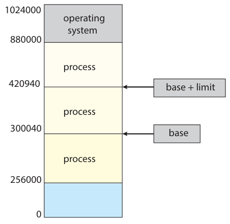
Practice练习
Q1. (Calculation) A process has \(\text{base}=300040\) and \(\text{limit}=120900\):Q1.（计算）某进程的基址寄存器 \(=300040\)、界限寄存器 \(=120900\)：
- What is its range of legal physical addresses?合法物理地址的范围是什么？
- Which of 300039, 300040, 420939, and 420940 cause a trap?300039、300040、420939、420940 中哪些地址会引发越界陷阱？
Answer
- Legal addresses run from \(300040\) through \(300040+120900-1=420939\) inclusive.合法范围为 \([300040, 420939]\)（闭区间）。
300039(\(<\text{base}\)) and420940(\(=\text{base}+\text{limit}\)) both trap;300040and420939are legal.300039（低于基址）与420940（等于基址加界限）触发陷阱；300040与420939合法。
Q2. (Compare) Compare compile-time, load-time, and execution-time binding. Which is required if the OS moves a process during execution, and why?Q2.（比较）比较编译期、装入期与执行期三种地址绑定。若操作系统需在进程运行过程中移动它的内存位置，必须采用哪一种？为什么？
Answer
- Compile-time: assumes the load address is fixed ahead of time and emits absolute code; changing location requires recompiling.编译期：预先假定固定装入位置并生成绝对代码，换位置必须重新编译。
- Load-time: emits relocatable code and binds final addresses when loaded; changing location requires reloading.装入期：生成可重定位代码，在加载入内存时一次性确定物理地址，换位置必须重新加载。
- Execution-time: defers address translation to runtime using MMU hardware (relocation register or page table); moving a process only updates that hardware register or table.执行期：将地址映射延迟到每条指令访问内存时由 MMU 硬件动态完成，移动进程只需修改相应寄存器或页表。
Moving a running process requires execution-time binding, because under the other two schemes absolute physical addresses have already been written directly into the loaded instructions and pointers.运行中移动进程必须使用执行期绑定：前两种绑定早已把物理地址写死进代码或指针里，搬家后无法仅凭寄存器修正。
Contiguous Memory Allocation ★★★连续内存分配
Goal. Allocate requests using first fit, best fit, and worst fit, identify the resulting fragmentation, and explain why compaction requires execution-time binding.目标。用首次适应、最佳适应和最差适应分配内存请求，辨析外部碎片与内部碎片，并解释内存紧缩为何依赖执行期绑定。
Step 1: relocation and limit registers第 1 步：重定位寄存器与界限寄存器
Core idea: first verify the logical address is below the limit, then add the relocation register to form the physical address.核心思路：MMU 先检查逻辑地址是否小于界限值，通过后再叠加重定位基址，合成物理地址。
Under contiguous memory allocation（连续内存分配）, each process sits inside one unbroken block of physical memory. Before every access, the MMU checks that logical address \(a\) lies strictly below the limit register and then adds the relocation register—both values are reloaded by the dispatcher on every context switch (Section 1.2).在连续内存分配下，每个进程占据一整段连续物理内存。每次访存时，MMU 先核验逻辑地址 \(a\) 严格小于界限寄存器，再叠加重定位值得到物理地址；分派程序会在每次上下文切换时重新装载这两个寄存器（见 1.2 节）。

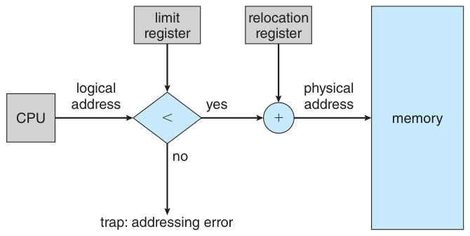
Step 2: variable partitions and the three fit rules第 2 步：可变分区与三种适应策略
Core idea: in variable partitioning, each process receives an exact-sized slice from a free block (hole), leaving unused fragments tracked in a free list.核心思路：可变分区按进程实际需要从空闲块（空洞）中“量体裁衣”，切剩的零头保留在空闲链表里供后续合并或复用。
In the variable-partition scheme, free memory is tracked as a list of available blocks called holes（空洞）. When a process arrives, the OS searches for a hole large enough to hold it, keeps any unallocated remainder in the list, and merges adjacent holes whenever a terminating process frees its partition. Deciding which free hole to pick is the dynamic storage-allocation problem（动态存储分配问题）, with three standard strategies:在可变分区管理下，空闲内存由一系列大小不一的空洞组成。每当新进程到达时，OS 挑选一个足够大的空洞划出所需空间，剩余边角仍留在链表原位；进程结束后释放的空间则与相邻空洞合并。挑选空洞的决策即动态存储分配问题，常用以下三种策略：
| Strategy策略 | Selection rule选取规则 | Search cost查找开销 | Leftover hole tendency剩余空洞特征 |
|---|---|---|---|
| First fit首次适应 | Allocate the first hole large enough从头查找，使用第一个足够大的空洞 | Fastest (stops on first match)最快（命中即停） | Varies in size (may cluster small holes near front)大小不一（前端易积累碎空洞） |
| Best fit最佳适应 | Allocate the smallest hole that is large enough找能放下的最小空洞 | Full scan unless sorted by size需扫全表（除非按大小有序） | Produces tiniest unusable fragments留下极细小的碎片空洞 |
| Worst fit最差适应 | Allocate the largest available hole永远先切分当前最大的空洞 | Full scan unless sorted by size需扫全表（除非按大小有序） | Leaves larger (more reusable) leftovers initially, but destroys big holes最初余量较大，但会迅速消耗掉大空洞 |
In both time and storage utilization, first fit and best fit outperform worst fit, with first fit generally being fastest.在时间开销与空间利用率上，首次适应与最佳适应总体均优于最差适应，而首次适应通常速度最快。
Hand-trace steps: write the holes in memory order, process each request sequentially, subtract the request size to update the chosen hole in place (even if leftover is 0, or remove 0-sized holes), and mark any request fitting no hole as waiting.手工演算要点：按内存次序横排写下空洞，依次处理请求；每次直接把被选空洞就地减掉对应大小（保留在原相对位置），若无一空洞够大则该请求等待。
Step 3: fragmentation and compaction第 3 步：内存碎片与紧缩
Core idea: external fragmentation strands free memory between partitions; internal fragmentation wastes space locked inside an allocated unit.核心思路：外部碎片是散落在已分配块之间、因不够大而无法利用的空闲空间；内部碎片则是已分给进程、但进程用不完的块内浪费。
| Dimension对比维度 | External fragmentation外部碎片 | Internal fragmentation内部碎片 |
|---|---|---|
| Meaning本质含义 | Total free memory suffices, but lies split across tiny non-contiguous holes空闲总量够大，但碎成无法连成一片的小空洞 | Allocated memory slightly exceeds requested size, leaving unused bytes inside the block按固定大小块分配时，末尾零头在块内闲置浪费 |
| Typical scheme常见于 | Variable partitioning可变分区分配 | Fixed-size allocation (e.g., paging)固定大小分配单位（如分页） |
| Remedy解决方法 | Compaction, or non-contiguous paging内存紧缩，或改用非连续分配（分页） | Smaller page/block sizes (trades off table overhead)缩小页/块粒度（需权衡表开销） |
According to the statistical 50-percent rule, with \(N\) allocated blocks under first fit, roughly \(0.5N\) additional blocks are lost to external fragmentation—meaning about \(0.5N / 1.5N = 1/3\) of memory becomes unusable.根据著名的 50% 统计规律，首次适应分配下每有 \(N\) 个已分配块，平均还会伴随约 \(0.5N\) 个碎片空洞——相当于约有 \(1/3\) 的内存空间因零碎而难以利用。
To reclaim external fragments without dropping contiguous allocation, compaction（紧缩）slides all running processes toward one end of memory to merge all holes into one large block. However, compaction is expensive due to massive memory copying and works only with execution-time binding (because base/relocation registers must update live addresses). A cleaner, hardware-supported solution is to abandon contiguity altogether via paging (Section 6.3).在连续分配框架下，可以通过紧缩把所有进程搬向内存一端、拼合全部零散空洞；但紧缩拷贝开销极高，且必须依赖执行期绑定。更彻底的解法是放弃连续性约束，改用分页机制（见 6.3 节）。
Practice练习
Q1. (Trace) Memory partitions of 100, 170, 40, 205, 300, and 185 MB (in order) receive requests of 200, 15, 185, 75, 175, and 80 MB (in order). Place them using first fit, best fit, and worst fit. Which requests fail, and which strategy uses memory best here?Q1.（手工演算）现有依次排列的内存空洞 100、170、40、205、300、185 MB，依次到来请求 200、15、185、75、175、80 MB。请分别用首次适应、最佳适应与最差适应分配，指出哪个请求失败及哪种策略表现最佳。
Answer
| Request (MB)请求（MB） | First fit首次适应 | Best fit最佳适应 | Worst fit最差适应 |
|---|---|---|---|
| 200 | 205 (leaves 5)进 205（剩 5） | 205 (5) | 300 (100) |
| 15 | 100 (85) | 40 (25) | 205 (190) |
| 185 | 300 (115) | 185 (0) | 190 (5) |
| 75 | 85 (10) | 100 (25) | 185 (110) |
| 175 | 185 (10) | 300 (125) | none失败 |
| 80 | 170 (90) | 125 (45) | 170 (90) |
Only worst fit fails: when the 175 MB request arrives, 525 MB remain free across the holes (100, 170, 40, 100, 5, 110), yet the largest single hole is 170 MB (external fragmentation). First fit and best fit satisfy every request, and best fit retains the largest intact hole (170 MB vs. first fit's 115 MB), managing memory best on this trace.只有最差适应失败：当 175 MB 请求到达时，各空洞合计空闲 525 MB（100, 170, 40, 100, 5, 110），但最大单个空洞只有 170 MB（典型的外部碎片）。首次适应与最佳适应均满足了全部请求，且最佳适应完好保住了最大的 170 MB 空洞（首次适应最大余量为 115 MB），故在本例中内存利用效果最好。
Q2. (Explain) Why can compaction not be used when addresses are bound at load time? What does it cost when it is possible?Q2.（解释）为何装入期绑定无法使用紧缩？即使采用支持紧缩的绑定方式，紧缩本身的代价是什么？
Answer
With load-time binding, absolute physical addresses are patched permanently into instructions and static pointers when the program loads, so shifting the process in RAM breaks those references. With execution-time binding, relocating a process only requires copying its bytes and updating its hardware relocation register (or page table). Its main cost is the CPU and memory bandwidth consumed by copying potentially gigabytes of active memory toward one end.装入期绑定在程序加载瞬间已把物理地址直接填死进机器指令与静态指针里，运行途中挪动内存会导致地址全部失效。在执行期绑定下，系统虽只需拷贝数据并更新重定位寄存器（或页表），但大量进程数据的整体搬移仍会消耗可观的内存带宽与 CPU 时间（需短暂挂起相关进程）。
Q3. (Calculation) A process has \(\text{relocation}=100040\) and \(\text{limit}=74600\):Q3.（计算）某进程重定位寄存器为 \(100040\)，界限寄存器为 \(74600\)：
- What is the physical address of logical address
74599?逻辑地址74599对应的物理地址是多少？ - What happens on logical address
74600?访问逻辑地址74600时会发生什么？ - The OS relocates the process to start at
250000. What changes?系统把该进程迁至物理地址250000起算，哪些值会改变？
Answer
- Since \(74599 < 74600\), \(PA = 100040 + 74599 = 174639\) (the highest legal byte).满足 \(74599 < 74600\)，故 \(PA = 100040 + 74599 = 174639\)（该分区的最后一字节）。
- Because \(74600 \ge \text{limit}\), hardware detects an addressing violation and traps to the OS.因 \(74600 \ge \text{limit}\)，MMU 触发越界陷阱交由操作系统处理。
- After copying the memory contents, only the relocation register updates to
250000; all logical addresses inside the program stay identical (requiring execution-time binding).拷贝数据后只需将重定位寄存器改写为250000，进程内部的全部逻辑地址原封不动（前提为执行期绑定）。
Paging ★★★分页
Goal. Split logical addresses into page number and offset in both decimal and binary, translate via a page table, and compute page counts, entry counts, and page-table sizes.目标。用十进制与二进制把逻辑地址拆分为页号和页内偏移、通过页表完成物理地址翻译，并计算总页数、表项数与页表内存占用。
Step 1: split the address第 1 步：拆分地址
Core idea: the upper bits of a logical address select the page number \(p\), while the low \(n\) bits act as the unchanged byte offset \(d\) inside that page.核心思路：逻辑地址高位直接作为页号 \(p\)，低 \(n\) 位作为页内偏移 \(d\)；翻译时仅替换页号为帧号，偏移量原封不动拼接即可。
Page sizes (equal to frame sizes) are always powers of two, \(2^n\) bytes, so hardware can split addresses with pure bit slicing instead of costly division. Given an \(m\)-bit logical address, the upper \(m-n\) bits form the page number（页号）\(p\) and the lower \(n\) bits form the page offset（页内偏移）\(d\).系统刻意把页大小（与帧大小相同）定为 \(2^n\) 字节，从而让硬件无需做任何除法运算，只需按比特位直接切分：对 \(m\) 位逻辑地址，高 \(m-n\) 位即为页号 \(p\)，低 \(n\) 位即为页内偏移 \(d\)。

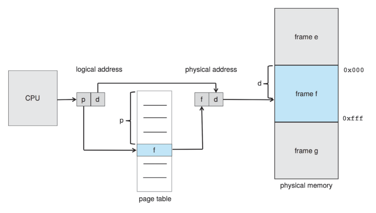
How to translate by hand:手工做题步骤：
- Determine offset width \(n=\log_2(\text{page size})\).由页大小求得偏移位数 \(n=\log_2(\text{page size})\)。
- In decimal, divide logical address \(a\) by \(2^n\) to get quotient \(p\) and remainder \(d\) (in binary, simply slice the low \(n\) bits as \(d\) and upper bits as \(p\)).十进制下用 \(2^n\) 除 \(a\) 得商 \(p\) 和余数 \(d\)（二进制下直接切出低 \(n\) 位作 \(d\)、其余高位作 \(p\)）。
- Look up frame \(f\) in page-table entry \(p\).查页表第 \(p\) 项得物理帧号 \(f\)。
- Combine to form \(PA = f\cdot 2^n + d\) (or concatenate binary \(f\) ahead of \(d\)).计算 \(PA = f\cdot 2^n + d\)（或直接把 \(f\) 拼在 \(d\) 前面）。
Step 2: how many pages, entries, and bytes?第 2 步：页数、表项数与页表体积
Core idea: a flat page table holds one entry per virtual page, so it scales directly with virtual address width and inversely with page size.核心思路：单级页表为每个虚拟页分配一项，因此地址越宽、页越小，页表就呈指数级膨胀。
Step 3: internal fragmentation第 3 步：分页下的内部碎片
Because any free frame can hold any page, paging eliminates external fragmentation altogether. Waste occurs only inside a process's last partially filled frame—internal fragmentation. For instance, with 2,048-byte pages, a 72,766-byte process occupies 36 frames (\(\lceil 72766/2048\rceil\)), filling only 1,086 bytes of the 36th frame and wasting \(2048 - 1086 = 962\) bytes. Worst-case waste is nearly one full page, and the average across processes is roughly half a page.因为任何空闲帧都能承接任意页面，分页彻底消除了外部碎片；唯一的空间损耗落在进程最后一页没装满的零头里——即内部碎片。例如 2,048 B 页大小下，一个 72,766 B 的进程需要 \(\lceil 72766/2048\rceil=36\) 帧，第 36 帧仅用掉 1,086 B，浪费 \(2048 - 1086 = 962\) B。最坏浪费接近 1 整页，统计均值约为半页。
Practice练习
Q1. (Calculation) With 1-KB pages, give the page number and offset for each logical address: (a) 3085, (b) 42095, (c) 215201, (d) 650000, (e) 2000001.Q1.（计算）页大小为 1 KB 时，求下列逻辑地址的页号与页内偏移：(a) 3085、(b) 42095、(c) 215201、(d) 650000、(e) 2000001。
Answer
Divide each address by 1024 (\(p=\lfloor a/1024\rfloor\), \(d=a\bmod 1024\)):代入 \(p=\lfloor a/1024\rfloor\) 与 \(d=a\bmod 1024\)：
| Logical address逻辑地址 | Page number \(p\)页号 | Offset \(d\)偏移量 |
|---|---|---|
| (a) 3085 | 3 | 13 |
| (b) 42095 | 41 | 111 |
| (c) 215201 | 210 | 161 |
| (d) 650000 | 634 | 784 |
| (e) 2000001 | 1953 | 129 |
Quick sanity check on (b): \(41\cdot 1024+111=41984+111=42095\).验算举例 (b)：\(41\cdot 1024+111=42095\)。
Q2. (Calculation) A logical address space has 64 pages of 1,024 words each, mapped onto a physical memory of 32 frames:Q2.（计算）某逻辑空间共 64 页（每页 1,024 字），物理内存共 32 个帧：
- How many bits are in a logical address?逻辑地址占多少位？
- How many bits are in a physical address?物理地址占多少位？
- If a 40,000-word process runs on this system, how many pages does it occupy, and how many words are lost to internal fragmentation?一个 40,000 字的进程占用多少页？产生多少内部碎片？
Answer
- \(64\cdot 1024=2^6\cdot 2^{10}=2^{16}\) words \(\implies\) 16 bits (6-bit page number + 10-bit offset).\(64\cdot 1024=2^{16}\) 字，故逻辑地址占 16 位（6 位页号 + 10 位偏移）。
- \(32\cdot 1024=2^5\cdot 2^{10}=2^{15}\) words \(\implies\) 15 bits (5-bit frame number + 10-bit offset).\(32\cdot 1024=2^{15}\) 字，故物理地址占 15 位（5 位帧号 + 10 位偏移）。
- It needs \(\lceil 40000/1024\rceil=40\) pages (39 full pages + 64 words on page 40). Since 40 pages equal 40,960 words, \(1024-64=960\) words are lost to internal fragmentation.需 \(\lceil 40000/1024\rceil=40\) 页（前 39 页写满，第 40 页占 64 字）。分配总量 40,960 字，浪费 \(1024-64=960\) 字。
TLB, Protection and Sharing ★★★TLB、保护与共享
Goal. Calculate effective access time (EAT) with a TLB, explain the role of ASIDs, and describe page-level protection, valid–invalid bits, and shared pages.目标。计算带快表（TLB）的有效访问时间，说明 ASID 的作用，并解释保护位、有效–无效位与页面共享。
Step 1: the page table in memory and the TLB第 1 步：内存页表与快表（TLB）
Core idea: storing the page table in main memory doubles every memory access; the TLB caches active translations on-chip so most accesses pay no extra RAM trip.核心思路：把页表放在主存里会让每次访存变两次；快表（TLB）将热点页表项缓存在芯片内部，使绝大多数地址翻译几乎零额外延迟。
Because a process's page table can span megabytes, it lives in main memory, pointed to by the hardware page-table base register (PTBR)（页表基址寄存器）. Without help, every instruction or data access requires two RAM reads—one for the page-table entry and one for the actual word. To eliminate this bottleneck, hardware adds a small associative cache called the translation look-aside buffer (TLB)（快表）, typically holding 32 to 1,024 entries:由于页表体积较大，它存放在主存中，由 页表基址寄存器（PTBR） 指向其首址。若无加速，每次读写都要访存两趟（一趟查页表、一趟取数据）。为此，MMU 内置了一块容量通常在 32–1,024 项之间的高速相联缓存——快表（TLB）：
- Hardware looks up page number \(p\) in the TLB in parallel.硬件并行在 TLB 中检索虚拟页号 \(p\)。
- On a TLB hit, frame number \(f\) arrives immediately without reading the in-memory page table.若 TLB 命中，瞬间拿到帧号 \(f\)，免去查内存页表。
- On a TLB miss, hardware walks the page table in RAM, retrieves \(f\), and inserts \((p,f)\) into the TLB.若 TLB 未命中，则回退读取主存页表获知 \(f\)，并把 \((p,f)\) 填入 TLB 备用。
- The physical word is accessed at \(PA = f\cdot 2^n+d\).最终拼接出 \(PA = f\cdot 2^n+d\) 访问真实内存单元。

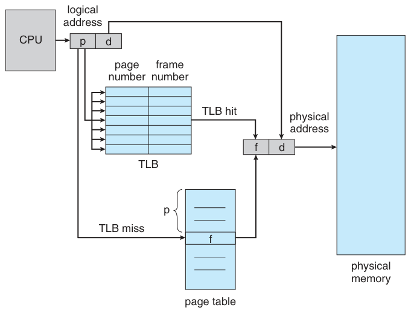
Step 2: effective access time第 2 步：有效访问时间（EAT）
Core idea: effective access time weights the fast TLB-hit path and the slower page-table-walk miss path by their probabilities.核心思路：有效访问时间（EAT）等于命中路径耗时与未命中路径耗时按各自比例的加权平均。
Step 3: ASIDs第 3 步：地址空间标识符（ASID）
Modern TLBs tag each cached entry with an address-space identifier (ASID)（地址空间标识符）naming its owning process; hardware matches an entry only when both page number and ASID match the running process. Tagging lets multiple processes' translations coexist safely inside the TLB without flushing on every context switch. Without ASID support, the OS must flush the entire TLB upon switching processes, lest stale entries map the incoming process's virtual pages to the previous process's frames.现代 TLB 通常为每条表项附带进程所属的地址空间标识符（ASID）：仅当“页号”与“当前进程 ASID”同时匹配时才算命中。有了 ASID，多个进程的翻译条目可以在 TLB 中安全共存，上下文切换时无需清空快表；反之，若硬件无 ASID，OS 每次切换进程都必须刷新整张 TLB（否则新进程会误用旧进程的残留映射），从而引发一段短暂的“冷启动”TLB 未命中高峰。
Step 4: protection and sharing第 4 步：页面保护与共享
- Protection bits: flags inside each page-table entry mark the page as read-write, read-only, or execute-only; writing to a read-only page triggers a hardware trap.保护位：页表项中的标志位规定该页的读/写/执行权限，任何越权写操作都会立刻触发硬件异常陷入。
- Valid–invalid bit & PTLR: the valid–invalid bit（有效–无效位）indicates whether the page belongs to the process's legal address space, trapping accesses to unmapped pages; alternatively, a page-table length register (PTLR)（页表长度寄存器）caps the legal page table span.有效–无效位与 PTLR：有效–无效位标注该页是否位于进程合法地址空间内，非法访问立即陷入；硬件也可配备页表长度寄存器（PTLR）来限制合法页号范围。
- Page-level granularity: protection checks act per whole page rather than per byte. In a 14-bit space with 2-KB pages, a program ending at byte 10468 occupies pages 0–5 cleanly as valid, making addresses up to byte \(6\cdot 2048 - 1 = 12287\) reachable without trapping—only byte 12288 (page 6) and beyond trap.整页粒度限制：有效位覆盖整页而非精确到字节。例如 14 位空间（2 KB 页）中程序实际止步于 10468 字节（占第 0–5 页），则直到第 5 页末尾的 12287 都不会陷入，唯有访问 ≥ 12288（第 6 页）才会触发越界异常。
- Shared pages: multiple processes can point their page tables at the exact same physical frames whenever the shared code is read-only and reentrant（可重入代码, never modifies itself during execution). For example, a 2-MB shared C library used by 40 processes consumes only 2 MB of physical RAM instead of \(40\times 2 = 80\) MB.共享页：只要共享的代码是只读且可重入的（运行中绝不自我修改），多个进程只需让各自的页表指向相同的物理帧即可完成共享。例如 40 个进程共用的 2 MB 标准库只需 2 MB 物理内存，而非 \(40\times 2 = 80\) MB。
Practice练习
Q1. (Calculation) A paging system stores its page table in main memory:Q1.（计算）某分页系统的页表驻留在主存中：
- If one main-memory access takes 50 ns, how long does a paged reference take without a TLB?若单次主存访问耗时 50 ns，无 TLB 时一次逻辑访存耗费多少时间？
- Adding a TLB yields a 75% hit ratio with a 2 ns TLB lookup time. What is the effective access time (EAT)?若加装 TLB（命中率 75%，查 TLB 耗时 2 ns），有效访问时间是多少？
- How does part (b) change if the system uses a two-level page table?若系统采用两级页表，(b) 中的有效访问时间变为多少？
Answer
- Two memory accesses (one for the page-table entry, one for data): \(2\cdot 50 = \mathbf{100\text{ ns}}\).需访存两次（先读页表项、再读实际数据）：\(2\cdot 50 = \mathbf{100\text{ ns}}\)。
- \(\text{EAT} = 0.75(2 + 50) + 0.25(2 + 50 + 50) = 39 + 25.5 = \mathbf{64.5\text{ ns}}\).\(\text{EAT} = 0.75\cdot 52 + 0.25\cdot 102 = \mathbf{64.5\text{ ns}}\)。
- A miss now walks two table levels before fetching data (\(k=2\)): \(\text{EAT} = 0.75(52) + 0.25(2 + 3\cdot 50) = 39 + 38 = \mathbf{77\text{ ns}}\).未命中时需访存查两级页表再取数（\(k=2\)）：\(\text{EAT} = 0.75\cdot 52 + 0.25\cdot 152 = \mathbf{77\text{ ns}}\)。
Q2. (Explain) Why are ASIDs included in TLB entries, and what must the OS do at a context switch if the TLB lacks them?Q2.（解释）为什么 TLB 表项中常常引入 ASID？若硬件没有 ASID，操作系统在上下文切换时必须做什么？
Answer
An ASID tags each TLB entry with its owning process. Because hardware checks both the virtual page number and the current process's ASID, entries from different processes can safely stay cached in the TLB across context switches without leaking another process's frames (enforcing protection). Without ASIDs, the OS must flush the entire TLB on every context switch so the incoming process never reuses stale translations—causing a burst of cold TLB misses afterward.ASID 标记每条快表项归属哪一个进程，硬件同时核对虚拟页号与当前运行进程的 ASID，因此既保证了地址隔离与保护，又允许不同进程的缓存条目在上下文切换后继续留在 TLB 内。如果硬件不支持 ASID，OS 在每次进程切换时都必须清空整个 TLB，防止新进程误撞旧映射；其代价是新进程每次恢复运行都要重新遭遇一连串冷启动未命中。
Structure of the Page Table ★★★页表的结构
Goal. Calculate the bit split and size of a two-level page table, explain how hierarchical paging saves memory, and compare hashed and inverted page tables.目标。计算两级页表的位宽划分与内存占用、解释多级分页为何省内存，并对比哈希页表与反置页表。
Step 1: why one flat table is too big第 1 步：为什么单级平铺页表行不通
A single-level page table allocates all \(2^{m-n}\) entries for every process—even when that process touches only a tiny fraction of its virtual space. On a 32-bit machine (4-KB pages, 4-B entries), every process pays 4 MB solely for its page table (Section 6.3); on a 64-bit machine, a flat table would need up to \(2^{52}\) entries, making it completely impractical.单级平铺页表无论进程实际用了多少内存，都要为其分配满额 \(2^{m-n}\) 个表项。32 位系统（4 KB 页、4 B 表项）下每个进程光页表就要占 4 MB（见 6.3 节）；到了 64 位地址空间，单级表项上限更是达到 \(2^{52}\) 项，完全无法落入物理内存。
Step 2: two-level paging第 2 步：两级分页
Core idea: two-level paging pages the page table itself, allocating inner page-table pages only for regions of virtual space the process actually uses.核心思路：两级分页把“页表本身”再分页，仅按需为进程实际使用到的虚拟地址区间分配内层页表，空洞区间直接留空。
Hierarchical paging（分级分页）splits the virtual page number into an outer index \(p_1\) and an inner index \(p_2\) so that every individual table fits cleanly inside a single physical page. For example, a 4-KB page holds \(4096\div 4 = 1024 = 2^{10}\) entries, so each table level consumes 10 bits—partitioning a 32-bit virtual address into 10 bits (\(p_1\)) | 10 bits (\(p_2\)) | 12 bits (\(d\)).在分级分页中，虚拟页号被进一步拆成外层索引 \(p_1\) 与内层索引 \(p_2\)，目标是让每一张子表正好塞满一页。例如 4 KB 页可放 \(4096\div 4 = 1024 = 2^{10}\) 项，故每级索引占 10 位，把 32 位地址划分为 10 位 p1 | 10 位 p2 | 12 位 d。
How to split and translate by hand:手工拆分与查表步骤：
- Find offset width \(n=\log_2(\text{page size})\).由页大小计算偏移位数 \(n\)。
- Compute entries per single-page table: \(\text{entries} = (\text{page size}) \div (\text{entry size})\).计算一页能装几项：页大小 ÷ 单项字节数。
- Take \(\log_2(\text{entries})\) as the bit width of an inner index.对该项数取 \(\log_2\) 即为内层索引位宽。
- Slice the \(m-n\) page-number bits from right to left into index chunks of that width (the top index \(p_1\) takes any remaining bits).将总长 \(m-n\) 的页号位从右向左按该位宽切分，剩余最高位全部划给外层 \(p_1\)。
- Translate: \(p_1\) selects the inner page table; \(p_2\) picks the entry holding frame \(f\).翻译时先用 \(p_1\) 索引外层表找到内层页表，再用 \(p_2\) 在内层表中读出物理帧号 \(f\)。

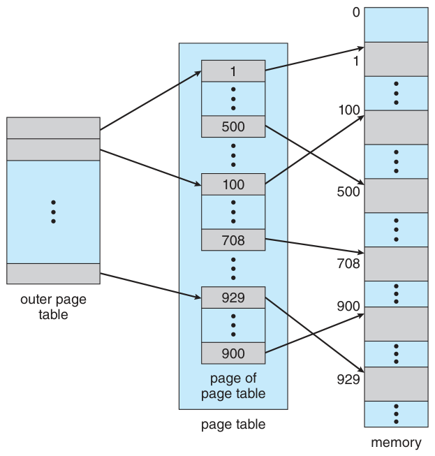
However, each extra level adds one more RAM access per TLB miss. For a full 64-bit space (4-KB pages, 8-B entries), \(\lceil 52/9\rceil = 6\) levels become too deep and slow; thus x86-64 restricts canonical virtual addresses to 48 bits and uses \((48-12)/9 = 4\) levels.但级数越多，TLB 未命中时的查表开销越高。完整 64 位地址若按 4 KB 页、8 B 表项算需要 \(\lceil 52/9\rceil = 6\) 级，访存过深；因此 x86-64 实际只启用 48 位有效虚拟地址，对应 \((48-12)/9 = 4\) 级页表。
Step 3: hashed page tables第 3 步：哈希页表
Core idea: a hashed page table hashes the virtual page number to a bucket chain and walks matching nodes to find the frame.核心思路：哈希页表直接对虚拟页号取哈希定位链表桶，再沿链表比对找出物理帧，适合超大稀疏地址空间。
Common for address spaces larger than 32 bits, a hashed page table（哈希页表）uses the virtual page number as its hash key. Each bucket points to a linked list resolving hash collisions, where every node carries three fields: the virtual page number, the mapped frame number, and a pointer to the next node. Hardware compares the target virtual page number along the chain until a match yields the frame. A variant called a clustered page table（聚簇页表）packs several consecutive page-to-frame mappings (e.g., 16 pages) per node, working well for sparse 64-bit address spaces.超过 32 位的地址空间常采用哈希页表：以虚拟页号为键计算哈希定位槽位，槽内链表通过拉链法解决冲突，每个节点存储“虚拟页号、物理帧号、next 指针”三元组；沿着链比对虚拟页号，命中节点即可取回帧号。进一步改进的聚簇页表让每个链表节点打包多页映射（如 16 页），非常适合稀疏的 64 位空间。

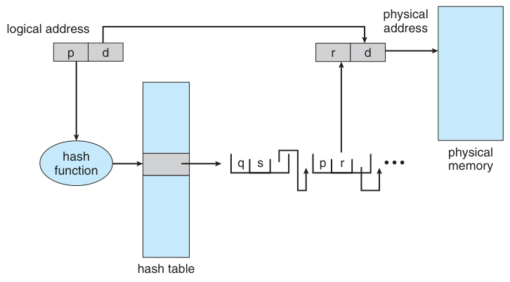
Step 4: inverted page tables第 4 步：反置页表
Core idea: an inverted page table tracks one global entry per physical frame rather than per virtual page of every process.核心思路：反置页表全系统只保留唯一一张按物理帧编号的表（有多少物理帧就有多少表项），使页表占用完全脱钩进程数量与虚拟空间大小。
Whereas conventional tables grow with every process's virtual space, an inverted page table（反置页表）flips the index to physical memory: it maintains a single system-wide array with one slot per physical frame, storing the pair \(\langle pid, p\rangle\) currently occupying that frame. Virtual addresses include the process identifier \(\langle pid, p, d\rangle\); finding \(\langle pid, p\rangle\) at table index \(i\) directly gives physical frame \(i\) and \(PA = i\cdot 2^n + d\).与每进程独占大页表的传统做法相反，反置页表全局只维护唯一一张表：第 \(i\) 号表项对应第 \(i\) 号物理帧，记录此刻占据该帧的 \(\langle pid, p\rangle\)。若在表项 \(i\) 找到匹配二元组，则物理帧号天然就是索引 \(i\)，从而算出 \(PA = i\cdot 2^n + d\)；若无匹配则判为非法或缺页。

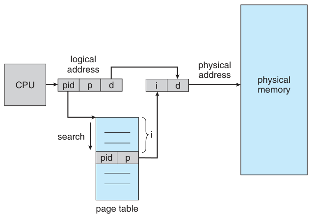
Because scanning all frames linearly on every TLB miss would be far too slow, systems pair inverted tables with a hash table keyed on \(\langle pid,p\rangle\), requiring at least two memory reads (hash bucket + inverted table) before fetching data. Moreover, because each frame stores at most one \(\langle pid,p\rangle\) mapping, implementing shared memory across multiple processes becomes awkward—when another process accesses a shared frame, a miss fault swaps the active mapping.不过，TLB 未命中时按物理帧线性遍扫太慢，因此通常需搭配以 \(\langle pid,p\rangle\) 为键的辅助哈希表（一次翻译至少耗费哈希查找 + 反置表读取两趟以上访存）。此外，由于每个物理帧只能登记一个 \(\langle pid,p\rangle\) 映射，多进程页面共享实现十分不便（不同进程访问同一物理帧会触发缺页互相顶替映射）。
Step 5: comparison第 5 步：四大页表结构综合对比
| Structure页表结构 | Size depends on占用大小取决于 | Accesses on TLB missTLB 未命中访存次数 | Page sharing页共享支持 | Typical use典型平台 |
|---|---|---|---|---|
| Single-level单级 | Virtual space (\(2^{m-n}\) entries/process)虚拟空间全量（每进程 \(2^{m-n}\) 项） | 1 + data1 + 取数 | Easy极易 | Small spaces小地址空间 |
| Hierarchical (\(L\) levels)多级（\(L\) 级） | Actually mapped regions + outer table仅实际使用的已映射区 + 外层表 | \(L\) + data | Easy极易 | 32-bit OS, x86-64 (4 levels)32 位系统、x86-64（4 级） |
| Hashed哈希 | Number of mapped pages已映射虚拟页数 | Hash + chain walk + data哈希槽 + 沿链比对 + 取数 | Easy容易 | \(>32\)-bit sparse spaces>32 位稀疏地址空间 |
| Inverted反置 | Physical RAM (1 entry per frame globally)物理内存大小（全局每帧一项） | \(\ge 2\) + data | Hard (1 mapping/frame)困难（每帧仅存单映射） | 64-bit UltraSPARC, PowerPC64 位 UltraSPARC、PowerPC |
Practice练习
Q1. (Calculation) A system has 32-bit logical addresses, 8-KB pages, 4-byte page-table entries, and 1 GB of physical memory:Q1.（计算）某系统具有 32 位逻辑地址、8 KB 页、4 B 页表项与 1 GB 物理内存：
- How many entries and how many bytes does a conventional single-level page table take?常规单级页表共有多少项？占多少字节？
- How many entries does an inverted page table require?反置页表有多少项？
- Design a two-level page table where each table fits inside exactly one page.设计两级页表（要求每张表恰占一页），给出各字段位宽。
Answer
Offset takes \(n=13\) bits (\(8\text{ KB}=2^{13}\)).8 KB \(=2^{13}\) 字节，故页内偏移占 13 位。
- \(2^{32-13}=2^{19}=524{,}288\) entries, totaling \(2^{19}\cdot 4 = \mathbf{2\text{ MB}}\).共 \(2^{32-13}=2^{19}=524{,}288\) 项，占 \(2^{19}\cdot 4=\mathbf{2\text{ MB}}\)。
- \(2^{30}/2^{13}=2^{17}=\mathbf{131{,}072}\) entries (one per physical frame).共 \(2^{30}/2^{13}=2^{17}=\mathbf{131{,}072}\) 项（每物理帧 1 项）。
- One page holds \(8192/4 = 2048 = 2^{11}\) entries (11 index bits per table). With 19 page-number bits across \(\lceil 19/11\rceil=2\) levels, the format is 8 bits (\(p_1\), outer table with 256 entries) | 11 bits (\(p_2\)) | 13 bits (\(d\)).一页可放 \(8192/4=2048=2^{11}\) 项（单级索引耗 11 位）。19 位页号分 \(\lceil 19/11\rceil=2\) 级：\(p_1\) 占 8 位（外层表 256 项）| \(p_2\) 占 11 位 | \(d\) 占 13 位。
Q2. (Calculation) An embedded system has a 24-bit virtual address, a 20-bit physical address, and 4-KB pages:Q2.（计算）某嵌入式系统拥有 24 位虚拟地址、20 位物理地址与 4 KB 页：
- How many entries are in a conventional single-level page table?常规单级页表有多少项？
- How many entries are in an inverted page table, and what is the maximum supported RAM?反置页表有多少项？最大支持物理内存是多少？
Answer
With 4-KB pages (\(2^{12}\) B), the offset uses 12 bits.4 KB 页对应 12 位页内偏移。
- Single-level table: \(2^{24-12}=2^{12}=\mathbf{4096}\) entries.常规单级页表：\(2^{24-12}=2^{12}=\mathbf{4096}\) 项。
- Inverted table: \(2^{20-12}=2^8=\mathbf{256}\) entries (one per frame); maximum physical memory is \(2^{20}\) bytes \(= \mathbf{1\text{ MB}}\).反置页表：\(2^{20-12}=2^8=\mathbf{256}\) 项；最大支持物理内存 \(2^{20}\) 字节 \(= \mathbf{1\text{ MB}}\)。
Q3. (True/false) State whether each claim is true or false and justify briefly:Q3.（判断正误）判断下列表述正误并简述理由：
- An inverted page table needs one entry for every virtual page of every process.反置页表需为每个进程的每个虚拟页都设立一条表项。
- A hashed page table resolves collisions by chaining.哈希页表使用拉链法解决冲突。
- With an inverted page table, two processes can map the same shared frame simultaneously.采用反置页表时，两个进程可以同时指向同一物理共享帧。
- With a four-level page table, a TLB miss requires four extra memory accesses before accessing data.四级页表在 TLB 未命中时，在真正读取数据前需要多访问 4 次内存。
Answer
- False: it keeps one entry per physical frame globally, so size scales only with physical RAM.错：全局按物理帧建表（每物理帧 1 项），表规模只由物理内存决定。
- True: each bucket points to a linked list of
(virtual page, frame, next)entries.对：每个哈希槽维护一条存储(虚拟页号, 帧号, next)的单链表。 - False: each frame slot holds only one
(pid, page)pair at a time, so access from a second process faults and swaps out the active mapping.错：每个物理帧槽位同一时刻只能记一组(pid, page)，另一进程访问该帧时会因未匹配而缺页替换原映射。 - True: four memory accesses walk the hierarchy, followed by a fifth access for the target data word.对：依次查 4 级页表，再访问 1 次实际数据（共 5 次访存，即多出 4 次）。
Swapping and Architecture Examples ★交换与体系结构实例
Swapping（交换）temporarily moves inactive memory out to a fast backing store（后备存储）and reloads it later when needed. Traditional swapping transfers entire processes at once and is prohibitively slow, so modern desktop/server kernels (Linux, Windows) instead swap individual pages in tandem with virtual memory (Chapter 7). Mobile OSs disable traditional swapping altogether because flash storage is capacity-constrained and suffers write wear—preferring memory compression or terminating background apps.交换指将暂不运行的进程或页面临时移出主存至后备存储并在需要时换回。传统整进程交换因搬移开销极大而被淘汰，Linux、Windows 等系统均将其演进为与虚拟内存（第 7 章）结合的按页换入换出；移动端系统则因闪存寿命有限与容量紧张彻底禁用传统交换，改用内存压缩或直接回收后台进程。
Real-world hardware hierarchies match these paging rules closely: IA-32 pairs segmentation with two-level paging (10 / 10 / 12 bits); x86-64 maps 48-bit virtual addresses across four 9-bit levels (9 / 9 / 9 / 9 / 12); and ARMv8 likewise supports up to four levels under a 4-KB granule.主流硬件架构实例：IA-32 先分段再做 10/10/12 两级分页；x86-64 将 48 位虚拟地址拆成四级（每级 9 位 + 12 位页内偏移）；ARMv8 在 4 KB 页粒度下同样支持最多四级分页。
Terms to recognize ★核心概念速览
| Term术语 | Key takeaway核心释义 |
|---|---|
| Dynamic loading动态加载 | A routine loads into memory only upon first call, keeping unused routines (e.g., error handlers) out of RAM; requires no special OS support.仅当某函数第一次被调用时才从磁盘装入内存（节省冷门分支内存），完全由应用程序自行控制，无需 OS 特殊支持。 |
| Dynamic linking动态链接 | Library linking is deferred until execution so all processes share one resident copy of a shared library (e.g., DLL/.so); requires OS support.将库函数绑定推迟至运行期（常借助 stub），全系统所有进程可共享内存中的同一份库代码；需要操作系统协同支持。 |
| Frame table帧表 | One system-wide OS structure with an entry per physical frame tracking whether it is free or allocated, and to which process/page.操作系统全局维护的一张表，为每个物理帧记录其空闲状态或当前归属的进程及虚拟页。 |
| 50-percent rule50% 统计规律 | Under first fit with \(N\) allocated blocks, roughly \(0.5N\) extra blocks become unusable holes—stranding about \(1/3\) of total RAM.首次适应分配下每有 \(N\) 个占用块，外部碎片就会形成约 \(0.5N\) 个零碎空洞（导致近 \(1/3\) 内存白白闲置）。 |
| Page size页大小 | Always a power of two (typically 4 KB–1 GB); larger pages shrink page tables but worsen internal fragmentation.必取 2 的幂（常见 4 KB 至 1 GB）：页越大页表越小，但块内碎片浪费越严重。 |
| Optimal page size最优页大小折中 | As page size grows, page-table overhead decreases while internal fragmentation rises; the optimum balances both costs.随页增大，页表存储开销下降而内部碎片上升，最优页大小恰处在两条成本曲线之和的极小值点。 |
| Wired TLB entries固定 TLB 表项 | Critical translations (such as key kernel code) locked permanently in the TLB so replacement never evicts them.把核心内核代码等高频映射长期锁死在 TLB 槽位里，禁止硬件淘汰替换。 |
| Segmentation分段机制 | Maps logical (segment, offset) pairs via a segment table of bases and limits; mirrors user program modules but suffers external fragmentation.逻辑地址按程序模块组织为 (段号, 段内偏移)，通过段基址+界限表转换，贴合程序员视角但受困于外部碎片。 |
| PAE (Page Address Extension)物理地址扩展 | IA-32 extension adding a third paging level to address 36-bit physical RAM (up to 64 GB) from 32-bit virtual addresses.IA-32 通过增加第三级目录将物理寻址拓宽至 36 位（最高 64 GB 内存），虚拟地址仍维持 32 位。 |
| Huge pages大页支持 | Hardware multi-size pages (e.g., 4 KB, 2 MB, 1 GB on x86-64) that dramatically expand TLB reach for large workloads.x86-64 同时支持 4 KB、2 MB 与 1 GB 页，大幅扩展 TLB 覆盖范围并减少大数据场景的快表未命中。 |
Exam-style questions考试题型练习
Q1. (Paging and multi-level page tables, 20 marks) A system has 32-bit logical addresses, 4-KB pages, 4-byte page-table entries, and 1 GB of physical memory:Q1.（分页与多级页表，20 分）某系统拥有 32 位逻辑地址、4 KB 页、4 B 页表项与 1 GB 物理内存：
- Give the bit widths of the page number, offset, and frame number, and the size of a single-level page table. (4 marks)给出页号、偏移与帧号位宽，并计算单级页表体积。（4 分）
- For a two-level scheme where every table occupies exactly one page, give the address format and entries per table. (5 marks)采用每张子表恰占 1 页的两级页表，写出地址位划分格式及每张表的表项数。（5 分）
- A process has 8 MB of code/data at the bottom of its virtual space and a 1-MB stack at the top (ending at
0xFFFFFFFF). Compare its page-table memory usage under single-level vs. two-level paging. (6 marks)进程在虚拟空间低端占 8 MB 代码与数据、最顶端占 1 MB 栈（止于0xFFFFFFFF），对比单级与两级页表的实际内存占用。（6 分） - Using the two-level scheme, translate
0x00403A7Cif outer entry 1 points to an inner table whose entry 3 holds frame0x05B. How many memory accesses occur on a TLB miss? (5 marks)若外层表项 1 指向某内层页表，其第 3 项为帧0x05B，翻译逻辑地址0x00403A7C，并指出 TLB 未命中时的访存次数。（5 分）
Answer
- With 4-KB pages (\(2^{12}\) B), the offset uses 12 bits and the page number uses \(32-12=\mathbf{20\text{ bits}}\). Physical memory is 1 GB (\(2^{30}\) B), so the frame number uses \(30-12=\mathbf{18\text{ bits}}\). A single-level table has \(2^{20}\) entries \(\times 4\text{ B} = \mathbf{4\text{ MB}}\).4 KB 页（\(2^{12}\) B）决定偏移 12 位，页号 \(32-12=20\) 位；物理内存 1 GB（\(2^{30}\) B），故帧号 \(30-12=18\) 位。单级页表共 \(2^{20}\) 项 × 4 B = 4 MB。
- One page holds \(4096\div 4 = \mathbf{1024}\) entries (\(2^{10}\)), consuming 10 bits per index. Format: 10 bits (\(p_1\)) | 10 bits (\(p_2\)) | 12 bits (\(d\)).单页容纳 \(4096\div 4=\mathbf{1024}\)（\(2^{10}\)）项，每级耗 10 位，格式为 10 位 \(p_1\) | 10 位 \(p_2\) | 12 位 \(d\)。
- Single-level: always 4 MB regardless of usage. Two-level: 8 MB \(=2048\) pages fill 2 inner tables; the 1-MB stack (\(256\) pages at top) sits inside 1 inner table; plus 1 outer table = \(4\) pages \(= \mathbf{16\text{ KB}}\).单级：无论是否稀疏恒占 4 MB。两级：8 MB（2048 页）占 2 张内层表 + 顶端 1 MB 栈（256 页）占 1 张内层表 + 1 张外层表 = 4 页 = 16 KB。
0x00403A7Cin binary is0000000001 | 0000000011 | 101001111100, giving \(p_1=1\), \(p_2=3\), and \(d=\texttt{0xA7C}\). Outer entry 1 + inner entry 3 yields frame0x05B, so \(PA = \texttt{0x05B}\cdot\texttt{0x1000}+\texttt{0xA7C}=\mathbf{\texttt{0x5BA7C}}\) (decimal \(375{,}420\)). On a TLB miss, hardware makes 3 memory accesses (outer entry, inner entry, data).将0x00403A7C拆成10 | 10 | 12位：0000000001 | 0000000011 | 101001111100，即 \(p_1=1, p_2=3, d=\texttt{0xA7C}\)。查得帧号0x05B，拼出物理地址0x5BA7C（十进制 \(375{,}420\)）。TLB 未命中时需 3 次访存（外层页表、内层页表、目标数据）。
Q2. (Effective access time, 15 marks) One memory access takes 100 ns, a TLB lookup takes 10 ns, and the hit ratio is 95%:Q2.（有效访问时间，15 分）主存访问耗时 100 ns，TLB 查找耗时 10 ns，命中率 95%：
- Compute EAT with a single-level page table. (4 marks)求单级页表下的 EAT。（4 分）
- Compute EAT with a two-level page table. (4 marks)求两级页表下的 EAT。（4 分）
- What minimum hit ratio keeps single-level EAT at most 120 ns? (4 marks)要使单级页表 EAT 不超过 120 ns，命中率至少需达到多少？（4 分）
- State the percentage slowdowns in (a) and (b) relative to an unpaged 100-ns access, and explain why a 95% hit ratio is realistic. (3 marks)计算 (a) 与 (b) 相对 100 ns 无分页访存的性能降幅，并解释为何 95% 的高命中率在现实中可行。（3 分）
Answer
- Hit time \(=10+100=110\) ns; single-level miss time \(=10+2\cdot 100=210\) ns. Thus \(\text{EAT}=0.95(110)+0.05(210)=104.5+10.5=\mathbf{115\text{ ns}}\).命中耗时 \(10+100=110\) ns，未命中耗时 \(10+2\cdot 100=210\) ns，故 \(\text{EAT}=0.95\cdot 110+0.05\cdot 210=\mathbf{115\text{ ns}}\)。
- Two-level miss time \(=10+3\cdot 100=310\) ns. Thus \(\text{EAT}=104.5+0.05(310)=104.5+15.5=\mathbf{120\text{ ns}}\).两级未命中耗时 \(10+3\cdot 100=310\) ns，故 \(\text{EAT}=104.5+0.05\cdot 310=\mathbf{120\text{ ns}}\)。
- Require \(\text{EAT}=10+100+(1-\alpha)\cdot 100\le 120 \implies (1-\alpha)\le 0.1 \implies \mathbf{\alpha\ge 90\%}\).令 \(110+(1-\alpha)\cdot 100\le 120\)，解得 \(1-\alpha\le 0.1\)，即命中率至少 90%。
- Slowdowns are 15% in (a) and 20% in (b). High TLB hit ratios are realistic because programs exhibit strong locality of reference, repeatedly touching a compact working set of pages that fits inside the TLB.相比 100 ns，(a) 与 (b) 分别慢了 15% 与 20%。由于程序具有显著的引用局部性，短时间内总是集中在少数热点页上运行，因此很小的 TLB 即可兜住 95% 以上的地址转换。
Q3. (Contiguous allocation and fragmentation, 15 marks) Five memory partitions of 100, 500, 200, 300, and 600 KB (in order) receive processes of 212, 417, 112, and 426 KB (in order):Q3.（连续分配与内存碎片，15 分）现有 100、500、200、300、600 KB 五个依次排列的空闲区，相继到来 212、417、112、426 KB 四个进程请求：
- Place the processes using first fit, best fit, and worst fit. (6 marks)分别用首次适应、最佳适应、最差适应完成放置。（6 分）
- Which strategy uses memory most effectively here? (2 marks)此处哪种算法内存利用效果最好？（2 分）
- Demonstrate how external fragmentation occurs under worst fit, and name how to eliminate it. (4 marks)结合最差适应的结果论证何为外部碎片，并说明如何消除。（4 分）
- Compare contiguous allocation against paging on external fragmentation, internal fragmentation, and code sharing. (3 marks)从外碎片、内碎片、代码共享三方面对比连续分配与分页。（3 分）
Answer
- Trace (noting leftover holes in place):
- First fit: 212 → 500 (leaves 288); 417 → 600 (183); 112 → 288 (176);
426waits (largest hole 300).首次适应：212 → 500（剩 288）；417 → 600（剩 183）；112 → 288（剩 176）；426失败等待（最大空洞仅 300）。 - Best fit: 212 → 300 (88); 417 → 500 (83); 112 → 200 (88); 426 → 600 (174). All 4 fit.最佳适应：212 → 300（剩 88）；417 → 500（剩 83）；112 → 200（剩 88）；426 → 600（剩 174），全部成功。
- Worst fit: 212 → 600 (388); 417 → 500 (83); 112 → 388 (276);
426waits.最差适应：212 → 600（剩 388）；417 → 500（剩 83）；112 → 388（剩 276）；426失败等待。
- First fit: 212 → 500 (leaves 288); 417 → 600 (183); 112 → 288 (176);
- Best fit performs best here because it is the only strategy able to place all four processes.最佳适应最好——它是唯一能容纳全部 4 个进程的策略。
- Under worst fit, free holes of
100, 83, 200, 300, 276KB total \(959\text{ KB} \ge 426\text{ KB}\), yet the 426-KB process cannot fit because free space is scattered into non-contiguous chunks (external fragmentation). Merging them requires compaction (which needs execution-time binding) or switching to paging.最差适应末尾空闲块100, 83, 200, 300, 276KB 合计高达 959 KB（远超 426 KB），却放不下 426 KB 请求，原因就是空闲区不连续——即外部碎片。需靠依赖执行期绑定的内存紧缩（或改用分页）消除。 - Contiguous: suffers external fragmentation, negligible internal fragmentation, hard to share code cleanly. Paging: zero external fragmentation, modest internal fragmentation (~half page/process), easy page-level code sharing.连续分配：有外部碎片、无显著内部碎片、共享困难；分页：无外部碎片、有少量内部碎片（平均半页）、极易按页共享只读代码。
Q4. (Page-table structures, 15 marks) A system has 48-bit virtual addresses, 4-KB pages, 8-byte page-table entries, and 4 GB of physical memory:Q4.（页表结构，15 分）某系统有 48 位虚拟地址、4 KB 页、8 B 页表项与 4 GB 物理内存：
- What is the size of a conventional single-level page table per process? (3 marks)单级平铺页表每个进程多大？（3 分）
- Assuming 8-byte entries, what is the size of an inverted page table? (3 marks)按 8 B 表项算，反置页表共占多大？（3 分）
- Explain how hashed and inverted page tables translate a virtual address. (5 marks)简述哈希页表与反置页表的地址翻译流程。（5 分）
- Why does an inverted page table complicate sharing, and how is its lookup sped up? (4 marks)为何反置页表难做页面共享？如何加速其检索？（4 分）
Answer
- Page number uses \(48-12=36\) bits \(\implies 2^{36}\cdot 8 = 2^{39}\text{ B} = \mathbf{512\text{ GB}}\) per process.页号占 \(48-12=36\) 位，每进程耗 \(2^{36}\cdot 8 = \mathbf{512\text{ GB}}\)。
- One entry per physical frame: \(4\text{ GB}/4\text{ KB}=2^{20}\) entries \(\times 8\text{ B} = \mathbf{8\text{ MB}}\) system-wide.每物理帧 1 项，共 \(4\text{ GB}/4\text{ KB}=2^{20}\) 项 × 8 B = 8 MB（全系统唯一）。
- Hashed: hash the virtual page number to a slot, scan its collision chain for a matching
(vpn, frame)node, and attach frame to offset. Inverted: match(pid, vpn)against global frame entries; finding a match at slot \(i\) produces \(PA = i\cdot 2^{12} + d\) (otherwise fault/illegal).哈希页表：对虚拟页号哈希进桶，遍历链表找匹配页号取出帧号拼接偏移；反置页表：检索全局表中的(pid, 页号)，若第 \(i\) 项命中即得物理帧号 \(i\) 与 \(PA=i\cdot 2^{12}+d\)。 - Because each physical frame slot holds only one
(pid, vpn)owner pair, two processes cannot map the same frame simultaneously without one triggering a fault and overwriting the mapping. Lookup avoids linear scanning via a TLB first and a hash table over(pid, vpn)(at the price of \(\ge 2\) RAM accesses on a TLB miss).每帧表项只容得下一组(pid, 页号)，第二进程访问同一共享物理帧会因查表失败而替换掉前者映射。检索方面则靠先查 TLB、未命中时借助以(pid, 页号)为键的哈希索引替代线性遍扫。
Q5. (Protection, sharing, and swapping, 15 marks)Q5.（保护、共享与交换，15 分）
- A 14-bit logical space uses 2-KB pages, and a process spans bytes
0to10468. Which pages are valid? What happens at addresses11000and12500, and what is the internal fragmentation? (5 marks)14 位逻辑空间、2 KB 页，进程仅使用字节0–10468：哪些页有效？访问11000与12500结果如何？内部碎片多少？（5 分） - Suppose 25 processes share a 120-KB editor. How much RAM holds code pages with private copies vs. sharing? What code property and protection bit keep sharing safe? (5 marks)25 个进程运行同一 120 KB 编辑器：私有副本与页面共享各占多少代码内存？需满足什么条件与保护措施？（5 分）
- Distinguish standard swapping from paging-based swapping, and explain why mobile OSs avoid traditional swapping. (5 marks)对比整进程交换与分页交换，并解释移动端系统为何禁用传统交换。（5 分）
Answer
- Total space is \(2^{14}=16{,}384\) B (8 pages of 2,048 B). Using 10,469 bytes reaches page 5 (\(\lfloor 10468/2048\rfloor = 5\)), so pages 0–5 are valid (covering
0..12287) and pages 6–7 are invalid. Address11000lies inside valid page 5—succeeds without trapping even though past byte 10468;12500falls in invalid page 6 and traps. Internal fragmentation is \(6\cdot 2048 - 10469 = \mathbf{1819\text{ bytes}}\).空间共 \(2^{14}=16{,}384\) B（8 页 × 2,048 B）。使用 10,469 B 延伸到第 5 页，故第 0–5 页有效（覆盖至 12287）、第 6–7 页无效。因此11000在有效第 5 页内正常访问不陷入；12500落入无效第 6 页触发越界陷阱。内部碎片为 \(6\cdot 2048 - 10469 = \mathbf{1819\text{ B}}\)。 - Private copies need \(25\cdot 120=\mathbf{3000\text{ KB}}\) (~2.9 MB), whereas sharing maps all 25 page tables onto one 120-KB (30-page) code copy, saving 2,880 KB. The code must be reentrant (non-self-modifying, private data per process), enforced by setting shared code PTEs read-only.私有副本耗 3,000 KB，共享仅需 120 KB（省下 2,880 KB）。要求共享代码为可重入代码，并由页表设置只读保护位在硬件上强制防篡改。
- Standard swapping transfers entire process images and is far too slow for modern workloads; swapping with paging transfers only individual pages (Ch. 7). Mobile systems skip flash-backed swapping because flash has small capacity, lower throughput, and finite write-erase endurance—preferring memory compression or terminating background apps.标准交换搬运整个进程映像（极慢）；分页交换只按单页粒度换入换出（第 7 章）。手机端因闪存写寿命有限、容量与带宽受限而弃用传统交换，改采内存压缩或主动回收后台进程。
Textbook exercises课后习题
Textbook exercises with answers: 27 questions教材习题及答案（共 27 题，点击展开）
E1. (Practice Exercise 9.1) Name two differences between logical and physical addresses.E1.（练习题 9.1）列出逻辑地址与物理地址的两点核心区别。
Answer
- Meaning: a logical address（逻辑地址）is an abstract location inside a process's own virtual space (typically starting at 0), rather than a physical RAM cell; a physical address（物理地址）identifies an actual memory location loaded into the memory-address register.含义不同：逻辑地址是进程自身虚拟空间里（常从 0 开始）的抽象编址，并不直接指向某块具体硬件单元；物理地址才是送入内存地址寄存器、对应硬件主存芯片上的真实位置。
- Origin: the CPU emits logical addresses, which the MMU dynamically translates into physical addresses (e.g., by adding a relocation register or walking a page table). Programs never generate physical addresses directly.来源不同：逻辑地址由 CPU 在执行程序指令时生成，再由 MMU（通过重定位寄存器加法或页表查询）实时转换为物理地址；用户程序本身从不直接产生物理地址。
Logical and physical addresses are equal under compile-time and load-time binding, whereas execution-time binding decouples them so the OS can relocate a process freely (for instance, with relocation \(14000\), logical \(346\) maps to physical \(14346\)).仅编译期和装入期绑定下二者重合；执行期绑定使二者解耦，方便系统随时移动进程（例如重定位值为 14000 时，逻辑地址 346 自动映射到物理 14346）。
E2. (Practice Exercise 9.2) Why are page sizes always powers of 2?E2.（练习题 9.2）为什么分页系统中的页大小总是取 2 的幂？
Answer
Choosing a page size of \(2^n\) bytes allows the hardware to split any logical address into page number \(p\) and offset \(d\) by pure bit wiring—no arithmetic needed. The low \(n\) bits form \(d\), the remaining high bits form \(p\), and concatenating the physical frame number \(f\) ahead of \(d\) directly yields \(PA = f\cdot 2^n + d\).若页大小为 \(2^n\) 字节，MMU 直接将低 \(n\) 位硬连线切出作偏移 \(d\)、高位作页号 \(p\)，查表拿到帧号 \(f\) 后直接与 \(d\) 高低拼接即得物理地址，全程无需任何算术运算。
A non-power-of-two size \(s\) (say 1,000 bytes) would force costly integer division/modulo (\(p=\lfloor a/s\rfloor\), \(d=a\bmod s\)) plus multiplication on every memory reference, severely slowing address translation. Moreover, powers of two partition any \(m\)-bit address space into an exact power \(2^{m-n}\) of whole pages with no leftover partial page (e.g., with 4-KB pages, \(n=12\), address 0x12345 splits immediately into page 0x12 and offset 0x345).相反，若页大小取 1,000 B 这类非 2 的幂数值，每次访存都必须执行耗时的除法取余与乘法，极大拖慢硬件速度；而且 2 的幂还能把 \(m\) 位空间整除为恰好 \(2^{m-n}\) 个完整页（例如 4 KB 页下 0x12345 肉眼可拆为页号 0x12、偏移 0x345）。
E3. (Practice Exercise 9.3) Consider a system in which a program can be separated into two parts: code and data. The CPU knows whether it wants an instruction (instruction fetch) or data (data fetch or store). Therefore, two base–limit register pairs are provided: one for instructions and one for data. The instruction base–limit register pair is automatically read-only, so programs can be shared among different users. Discuss the advantages and disadvantages of this scheme.E3.（练习题 9.3）设某系统把程序严格拆为指令区与数据区，CPU 可区分取指与数据读写，因此硬件配备两对基址–界限寄存器（其中指令寄存器对自动强制只读以支持跨用户共享程序代码）。讨论该方案的优缺点。
Answer
Advantages:优点：
- Code sharing: because the instruction region is read-only, multiple users can point their code base–limit pairs to one resident copy of a large program (such as an editor or compiler) while keeping separate private data pairs, saving substantial RAM.代码共享：只读代码段只需在内存中保留唯一一份公共副本，多用户只需各自将指令基址–界限对指向它、数据寄存器对指向各自私有数据区即可，显著省内存。
- Hardware protection: writes directed to the instruction region trap automatically (blocking self-corruption or code tampering), and instruction fetches stay confined outside writable data.代码防篡改：任何企图改写指令区的操作都会触发硬件异常，同时取指被严格锁在代码区间内，防止数据区被当作指令执行。
Disadvantages:缺点：
- Rigid separation: forbids self-modifying code, embedded read-only constants/jump tables inside code streams, and runtime JIT/code generation.代码与数据必须彻底分离：不支持自修改代码、代码内嵌常量/跳转表以及运行时动态代码生成（JIT）。
- Coarse sharing & reentrancy requirement: sharing applies only at whole-program granularity and demands strictly reentrant code.共享粒度较粗且须可重入：只能整段共享，且共享代码绝不能在自身区域保存任何进程私有状态。
- Still suffers external fragmentation: each process requires two contiguous memory holes instead of one, and context switches must save/restore twice as many registers.仍无法摆脱外部碎片：每个进程需要两块连续区域，上下文切换时还需保存/恢复两对寄存器。
E4. (Practice Exercise 9.4) Consider a logical address space of 64 pages of 1,024 words each, mapped onto a physical memory of 32 frames:E4.（练习题 9.4）某逻辑地址空间含 64 页、每页 1,024 字，映射到共 32 个物理帧的内存上：
- How many bits are there in the logical address?逻辑地址有多少位？
- How many bits are there in the physical address?物理地址有多少位？
Answer
Each page and frame holds \(1024 = 2^{10}\) words, so the offset needs 10 bits:每页/帧含 \(1024=2^{10}\) 字，故偏移量占 10 位：
- \(64 = 2^6\) pages require a 6-bit page number, giving \(6 + 10 = \mathbf{16\text{ bits}}\) per logical address (\(2^{16}=65{,}536\) words).\(64=2^6\) 页需 6 位页号，加上 10 位偏移得逻辑地址 16 位（共 65,536 字）。
- \(32 = 2^5\) frames require a 5-bit frame number, giving \(5 + 10 = \mathbf{15\text{ bits}}\) per physical address (\(2^{15}=32{,}768\) words).\(32=2^5\) 帧需 5 位帧号，加上 10 位偏移得物理地址 15 位（共 32,768 字）。
Note that logical space is double the size of physical RAM, so not every page can stay resident simultaneously.由于逻辑空间是物理内存的两倍大，进程无法把所有逻辑页同时放进物理内存。
E5. (Practice Exercise 9.5) What is the effect of allowing two entries in a page table to point to the same page frame in memory? Explain how this effect could be used to decrease the amount of time needed to copy a large amount of memory from one place to another. What effect would updating some byte on one page have on the other page?E5.（练习题 9.5）允许页表中的两个表项指向同一个物理帧会产生什么效果？如何利用这一机制快速“复制”大块内存？若修改其中一页上的某个字节，会对另一页造成什么影响？
Answer
- Shared physical frame: pointing two virtual page-table entries to the same physical frame causes both virtual pages to alias the exact same physical memory. For read-only reentrant code (editors, compilers, shared libraries), multiple processes or regions share a single copy in RAM.内存共享：两个虚拟页号映射至同一个物理帧，实现了同一块物理内存的共享（例如多个进程共享同一只读可重入编辑器或系统库，节省大量 RAM）。
- Zero-copy block duplication: to "copy" a huge buffer from source to destination, the OS avoids copying bytes altogether and simply points the destination page-table entries to the source frames (e.g., copying 1 MB with 4-KB pages touches only 256 page-table entries instead of copying \(2^{20}\) bytes).免字节搬运的快速复制：“复制”大片区域时不必逐字节搬移数据，只需把目标页表项改为指向源物理帧（例如拷贝 1 MB 数据在 4 KB 页下只需修改 256 个表项）。
- Write aliasing & copy-on-write: because both entries alias the same physical frame, modifying a byte through one page is immediately visible through the other. To preserve isolated copies when writes occur, systems mark shared PTEs read-only (copy-on-write): the first write traps to the OS, which lazily copies just that single modified page into a newly allocated writable frame.修改互见与写时复制：因为指向同一物理帧，修改一页上的字节会在另一页同步生效。若需要隔离的独立副本，系统将两边表项暂时标为只读（写时复制 COW）——唯有真发生写入的那一瞬间才触发陷阱，由 OS 单独复制那一页。
E6. (Practice Exercise 9.6) Given six memory partitions of 300 KB, 600 KB, 350 KB, 200 KB, 750 KB, and 125 KB (in order), how would the first-fit, best-fit, and worst-fit algorithms place processes of size 115 KB, 500 KB, 358 KB, 200 KB, and 375 KB (in order)?E6.（练习题 9.6）依次给定 300 KB、600 KB、350 KB、200 KB、750 KB 和 125 KB 六个空闲分区，分别用首次适应、最佳适应和最差适应算法放置 115 KB、500 KB、358 KB、200 KB 与 375 KB 的进程。
Answer
Holes remain in memory order; each allocation deducts the request size in place (notation "\(a\to b\)" means allocated inside a hole of \(a\) KB, leaving \(b\) KB):空闲块维持内存位置顺序，每次分配后剩余零头保留在原位（“\(a\to b\)”表示放入 \(a\) KB 空洞后余 \(b\) KB）：
| Request (KB)请求（KB） | First fit首次适应 | Best fit最佳适应 | Worst fit最差适应 |
|---|---|---|---|
| 115 | 300 → 185 | 125 → 10 | 750 → 635 |
| 500 | 600 → 100 | 600 → 100 | 635 → 135 |
| 358 | 750 → 392 | 750 → 392 | 600 → 242 |
| 200 | 350 → 150 | 200 → 0 | 350 → 150 |
| 375 | 392 → 17 | 392 → 17 | must wait (largest hole 300)失败等待（最大空洞仅 300） |
Remaining holes in memory order after the sequence:最终按原顺序列出的剩余空闲块：
| Algorithm算法 | Remaining holes (KB)剩余空洞（KB） | Total free (KB)总空闲量（KB） |
|---|---|---|
| First fit首次适应 | 185, 100, 150, 200, 17, 125 | 777 |
| Best fit最佳适应 | 300, 100, 350, 0, 17, 10 | 777 |
| Worst fit最差适应 | 300, 242, 150, 200, 135, 125 | 1,152 |
First fit and best fit place all five processes (best fit also preserves the intact 350-KB and 300-KB holes). Worst fit splits the largest holes repeatedly and fails on the 375-KB process even though 1,152 KB remain free in total (external fragmentation).首次适应与最佳适应均放置了全部 5 个进程（其中最佳适应还完好保留了 350 KB 和 300 KB 整块）；最差适应连续劈开最大空洞，导致总计尚余 1,152 KB 却因无单块够大而放不下 375 KB 请求（外部碎片）。
E7. (Practice Exercise 9.7) Assuming a 1-KB page size, what are the page numbers and offsets for the following address references (provided as decimal numbers): (a) 3085, (b) 42095, (c) 215201, (d) 650000, (e) 2000001?E7.（练习题 9.7）设页大小为 1 KB，求下列十进制逻辑地址的页号与页内偏移：(a) 3085、(b) 42095、(c) 215201、(d) 650000、(e) 2000001。
Answer
With 1-KB (\(2^{10}=1024\)-byte) pages, compute \(p=\lfloor a/1024\rfloor\) and \(d=a\bmod 1024\):页大小为 1024 B，令 \(p=\lfloor a/1024\rfloor\)、\(d=a\bmod 1024\)：
| Address地址 | Decomposition分解算式 | Page \(p\)页号 | Offset \(d\)偏移量 |
|---|---|---|---|
| (a) 3085 | \(3\cdot 1024+13\) | 3 | 13 |
| (b) 42095 | \(41\cdot 1024+111\) | 41 | 111 |
| (c) 215201 | \(210\cdot 1024+161\) | 210 | 161 |
| (d) 650000 | \(634\cdot 1024+784\) | 634 | 784 |
| (e) 2000001 | \(1953\cdot 1024+129\) | 1953 | 129 |
Every row satisfies \(1024p + d = a\) with \(0\le d < 1024\).每组均满足 \(1024p + d = a\) 且 \(0\le d < 1024\)。
E8. (Practice Exercise 9.8) The BTV operating system has a 21-bit virtual address, yet on certain embedded devices, it has only a 16-bit physical address. It also has a 2-KB page size. How many entries are there in each of the following, and what is the maximum physical memory in BTV?E8.（练习题 9.8）BTV 操作系统拥有 21 位虚拟地址、16 位物理地址与 2 KB 页大小。试求下述两种页表各有几项，以及系统支持的最大物理内存容量：
- A conventional, single-level page table.常规单级页表。
- An inverted page table.反置页表。
Answer
A 2-KB page equals \(2^{11}\) bytes, so offset bits \(n=11\).2 KB 页等于 \(2^{11}\) 字节，故偏移占 \(n=11\) 位。
- Conventional single-level page table: virtual page number has \(21-11=10\) bits, giving \(2^{10}=\mathbf{1024}\) entries per process.常规单级页表：虚拟页号占 \(21-11=10\) 位，每进程 1024 项。
- Inverted page table: physical frame number has \(16-11=5\) bits, giving \(2^5=\mathbf{32}\) entries system-wide (one per physical frame). Maximum supported physical memory is \(2^{16}\) bytes \(= \mathbf{64\text{ KB}}\) (32 frames of 2 KB).反置页表：物理帧号占 \(16-11=5\) 位，全系统仅 32 项（每物理帧 1 项）。16 位物理地址决定最大物理内存为 \(2^{16}\) B = 64 KB。
E9. (Practice Exercise 9.9) Consider a logical address space of 256 pages with a 4-KB page size, mapped onto a physical memory of 64 frames:E9.（练习题 9.9）考虑共 256 页（每页 4 KB）的逻辑空间映射到 64 帧的物理内存：
- How many bits are required in the logical address?逻辑地址需要多少位？
- How many bits are required in the physical address?物理地址需要多少位？
Answer
A 4-KB page (\(2^{12}\) B) fixes the offset at 12 bits.4 KB 页决定页内偏移占 12 位。
- \(256=2^8\) pages need an 8-bit page number \(\implies 8+12=\mathbf{20\text{ bits}}\) (1 MB logical space).256 页需 8 位页号，加上 12 位偏移得逻辑地址 20 位（1 MB 逻辑空间）。
- \(64=2^6\) frames need a 6-bit frame number \(\implies 6+12=\mathbf{18\text{ bits}}\) (256 KB physical RAM).64 帧需 6 位帧号，加上 12 位偏移得物理地址 18 位（256 KB 物理内存）。
E10. (Practice Exercise 9.10) Consider a computer system with a 32-bit logical address and 4-KB page size that supports up to 512 MB of physical memory. How many entries are in:E10.（练习题 9.10）某系统使用 32 位逻辑地址、4 KB 页与最大 512 MB 物理内存，分别求以下两表项数：
- A conventional, single-level page table?常规单级页表。
- An inverted page table?反置页表。
Answer
Because 4 KB \(=2^{12}\) bytes, the offset takes 12 bits.4 KB 页对应 12 位页内偏移。
- Virtual page number uses \(32-12=20\) bits \(\implies 2^{20}=\mathbf{1{,}048{,}576}\) (1M) entries per process.虚拟页号占 \(32-12=20\) 位，每进程单级页表有 \(2^{20}=\mathbf{1{,}048{,}576}\)（1M）项。
- One entry per frame across 512 MB (\(2^{29}\) B): \(2^{29}/2^{12}=2^{17}=\mathbf{131{,}072}\) (128K) entries globally.512 MB（\(2^{29}\) B）物理内存共 \(2^{29}/2^{12}=2^{17}=\mathbf{131{,}072}\)（128K）个帧，即反置页表总计 128K 项。
Note the single-level table has 8× more entries per process, whereas one inverted table serves the whole machine (though each inverted entry is wider since it also holds a PID and virtual page number).单级表每个进程的表项数是全局唯一反置页表的 8 倍（尽管反置表每项还要存进程 ID 与页号）。
E11. (Exercise 9.11) Explain the difference between internal and external fragmentation.E11.（习题 9.11）解释内部碎片与外部碎片的区别。
Answer
Internal fragmentation（内部碎片）is wasted memory trapped inside an allocated fixed-size block when the request does not fill it completely. External fragmentation（外部碎片）is unusable free memory stranded between allocated blocks when sufficient total free bytes exist, yet lie split across holes too small to fit an incoming request.内部碎片指被分配进某个固定尺寸单元里、但进程用不满而闲置的“块内浪费”；外部碎片指总空闲内存量明明足够，却因为零散分布在多个互不相连的小空洞之间而无法满足新请求的“块间浪费”。
| Dimension维度 | Internal fragmentation内部碎片 | External fragmentation外部碎片 |
|---|---|---|
| Location位置 | Inside an allocated unit已分配块内部 | In free holes between allocated partitions已分配分区之间的零散空洞 |
| Occurs in出现场景 | Fixed-size units: fixed partitions, paging (final page)定长分配单位：固定分区、分页（最后一页） | Variable-size contiguous allocation (first/best/worst fit)可变长连续分配（首次/最佳/最差适应） |
| Example示例 | 72,766-B process with 2,048-B pages allocates 36 frames (\(73{,}728\) B), wasting 962 B72,766 B 进程按 2 KB 页获配 36 帧（73,728 B），末尾浪费 962 B | Free holes of 100, 150, 120 KB total 370 KB yet fail a 300-KB request100、150、120 KB 三处空洞合计 370 KB，仍放不下 300 KB 请求 |
| Magnitude规模估算 | < 1 page/process (average half a page)每进程最多浪费接近 1 页，平均约半页 | 50-percent rule: roughly 1/3 of RAM lost按 50% 统计规则约损失 1/3 内存 |
| Mitigation解决方法 | Smaller page/block sizes (trades off larger tables)缩小页/块粒度（以更大页表为代价） | Compaction (requires execution-time binding) or paging内存紧缩（须执行期绑定）或改用分页 |
E12. (Exercise 9.12) Consider the following process for generating binaries. A compiler is used to generate the object code for individual modules, and a linker is used to combine multiple object modules into a single program binary. How does the linker change the binding of instructions and data to memory addresses? What information needs to be passed from the compiler to the linker to facilitate the memory-binding tasks of the linker?E12.（习题 9.12）考虑典型的编译链接流程：编译器为各独立模块生成目标代码，再由链接器把多个目标模块拼装成单一可执行程序。链接器如何改变指令与数据的内存地址绑定？编译器必须随目标文件传递哪些信息给链接器以完成该任务？
Answer
How the linker updates address binding: the compiler initially binds variables and code inside each object module to module-relative addresses starting from 0, leaving references to symbols in other modules unresolved. The linker lays all modules end-to-end inside one combined binary, offsets each module's relocatable addresses by that module's starting position in the executable, and patches every external symbol reference with its resolved program-relative address. (Final mapping to absolute physical RAM still happens later via the loader or runtime MMU.)链接器的地址绑定转换：编译器为每个独立目标文件生成的是从 0 起算的“模块内相对地址”，且跨模块外部符号暂留空。链接器把各模块拼接进同一可执行映像后，将每块代码的内部地址统一加上该模块在总程序中的起始偏移（变为“程序内相对地址”），同时把所有跨模块外部引用填上定义方的真实偏移。（最终物理地址仍在装入期或运行期 MMU 完成。）
Required metadata from compiler to linker:编译器需随目标文件提供的四项信息：
- Section sizes (code, initialized data, etc.) so the linker can compute each module's starting offset.各节（代码节、数据节）的长度，用于计算拼接偏移。
- An export symbol table listing globally defined symbols and their offsets within this module.导出符号表（本模块向外部提供的全局符号及其模块内偏移）。
- An import list identifying external symbols referenced and every call/reference site needing patching.导入/未解析符号列表（引用了哪些外部符号及所在位置）。
- Relocation entries marking every instruction or pointer containing an address that must be shifted when modules move (PC-relative offsets within a single module remain unchanged).重定位表（标出哪些绝对或跨段地址字段需要随模块偏移进行基址修正；模块内部 PC 相对跳转则无需改动）。
E13. (Exercise 9.13) Given six memory partitions of 100 MB, 170 MB, 40 MB, 205 MB, 300 MB, and 185 MB (in order), how would the first-fit, best-fit, and worst-fit algorithms place processes of size 200 MB, 15 MB, 185 MB, 75 MB, 175 MB, and 80 MB (in order)? Indicate which—if any—requests cannot be satisfied. Comment on how efficiently each of the algorithms manages memory.E13.（习题 9.13）现有依次排列的六个分区 100、170、40、205、300、185 MB，相继到来 200、15、185、75、175、80 MB 六个进程请求。分别给出首次适应、最佳适应、最差适应的分配方案，指出是否有请求失败，并评价内存利用效率。
Answer
Using the same in-place free-list rule as E6 ("\(a\to b\)" places the request in an \(a\)-MB hole leaving \(b\) MB; failed requests wait without blocking later ones):沿用 E6 规则（“\(a\to b\)”指放进 \(a\) MB 空洞后留 \(b\) MB；装不下的请求挂起等待，不阻塞后续小请求）：
| Request (MB)请求（MB） | First fit首次适应 | Best fit最佳适应 | Worst fit最差适应 |
|---|---|---|---|
| 200 | 205 → 5 | 205 → 5 | 300 → 100 |
| 15 | 100 → 85 | 40 → 25 | 205 → 190 |
| 185 | 300 → 115 | 185 → 0 | 190 → 5 |
| 75 | 85 → 10 | 100 → 25 | 185 → 110 |
| 175 | 185 → 10 | 300 → 125 | cannot be satisfied (largest hole 170)无法满足（最大空洞 170） |
| 80 | 170 → 90 | 125 → 45 | 170 → 90 |
| Algorithm算法 | Remaining holes in memory order (MB)最终剩余空洞（按顺序） | Total free (MB)总空闲（MB） | Largest hole (MB)最大空洞（MB） |
|---|---|---|---|
| First fit首次适应 | 10, 90, 40, 5, 115, 10 | 270 | 115 |
| Best fit最佳适应 | 25, 170, 25, 5, 45, 0 | 270 | 170 |
| Worst fit最差适应 | 100, 90, 40, 5, 100, 110 | 445 | 110 |
- Unsatisfied request: only worst fit fails—when 175 MB arrives, 525 MB remain free in total, yet no hole exceeds 170 MB (external fragmentation).失败请求：只有最差适应拒绝了 175 MB 请求——当时尚余 525 MB 空闲总量，却没有任何整块超过 170 MB（外部碎片）。
- Efficiency comparison: best fit manages memory best here (satisfying all six requests and retaining an intact 170-MB hole because 185 MB cleanly matched 185 MB). First fit also satisfies every request with lower search overhead, though it trims large holes earlier (leaving a 115-MB max). Worst fit shreds every large block early (300, 205, 190, 185) and performs worst overall—consistent with the general rule that first and best fit outperform worst fit.效率对比：此处最佳适应最优，不仅全部放入还保住了 170 MB 整空洞；首次适应速度更快、也全部放入（最大余洞 115 MB）；最差适应率先耗光所有大空洞，表现最差。
E14. (Exercise 9.14) Most systems allow a program to allocate more memory to its address space during execution, such as allocating data in its heap segment. What is required to support dynamic memory allocation under each scheme?E14.（习题 9.14）大多数系统允许程序在运行期间为其地址空间分配更多内存（例如在堆段中分配数据）。以下两种方案各自需要什么条件来支持动态内存分配？
- Contiguous memory allocation.连续内存分配。
- Paging.分页。
Answer
Contiguous memory allocation: Each process occupies a single block defined by a relocation (base) register and a limit register, so growing the heap requires expanding that block.连续内存分配：进程占据一段由重定位（基址）寄存器和界限寄存器界定的连续块，因此扩展堆区必须扩大该内存块。
- If an adjacent free hole is large enough, the OS takes space from it, increases the limit register, and updates its hole table.若紧邻该块的空闲分区足够大，操作系统只需从中划拨空间、调大界限寄存器，并更新空闲分区表。
- Otherwise, the OS must locate a larger hole (via first, best, or worst fit), copy the entire process into it, and update the relocation register—which works only with execution-time binding. Alternatively, the OS can compact memory or swap out another process to create room.否则，操作系统必须按首次、最佳或最差适应算法找到更大的空闲分区，将整个进程复制过去并修改重定位寄存器（仅执行时地址绑定可支持）；或者通过内存紧缩、换出其他进程来腾出连续空间。
- If no suitable hole can be formed, the allocation fails or the process blocks.若始终无法腾出足够空间，分配请求失败或进程阻塞等待。
- To keep small expansions cheap, the OS may pre-allocate extra headroom when loading the process, trading off higher internal fragmentation.为降低频繁扩容开销，系统也可在装入时预留多余空间，但代价是增加内部碎片。
Paging: Because pages need not be contiguous, the OS simply takes one frame per new page from the free-frame list, installs each frame number into the process's page table with valid and protection bits set, and expands the page-table length register if needed.分页：由于逻辑页无需占用连续物理帧，操作系统只需按新增页数从空闲帧链表中分配帧，将帧号写入页表并设置有效位与保护位，必要时调大页表长度寄存器即可。
- No data copying or relocation is needed, and no external fragmentation is introduced.全过程无需复制进程或重定位，也不会产生外部碎片。
- If no free frame is available, the OS must reclaim one (by paging out another page) or reject the request.若当前没有空闲帧，系统必须通过换出其他页面回收帧，或拒绝该请求。
E15. (Exercise 9.15) Compare contiguous memory allocation and paging with respect to each issue below:E15.（习题 9.15）就以下方面对比连续内存分配与分页方案：
- External fragmentation.外部碎片。
- Internal fragmentation.内部碎片。
- Ability to share code across processes.进程间代码共享能力。
Answer
| Issue对比维度 | Contiguous memory allocation连续内存分配 | Paging分页 |
|---|---|---|
| (a) External fragmentation(a) 外部碎片 | Present. Free memory fragments into scattered holes, so requests may fail even when total free memory suffices (about one-third is lost under the 50-percent rule). Compaction fixes this only with execution-time binding and heavy copying.存在。空闲内存被切分成零散空洞，即使总空闲量足够仍可能分配失败（按 50% 规则约损失三分之一内存）。紧缩虽可消除碎片，但依赖执行时绑定且复制开销大。 | None. All frames are uniform in size, so any free frame holds any page without requiring contiguous physical space.无。所有物理帧等大，任意空闲帧都能存放任意页，无需连续空间。 |
| (b) Internal fragmentation(b) 内部碎片 | Small with variable partitions (only unallocated slivers too tiny to track), but large with fixed partitions.可变分区时很小（仅为小到不值得记录的边角余料），固定分区时则较大。 | Present. Each process's final page is typically only half full on average, and waste grows with larger page sizes.存在。进程最后一页通常未填满，平均浪费约半页，且页面越大内部碎片越明显。 |
| (c) Code sharing(c) 代码共享 | Difficult. Because each process owns one private contiguous region, sharing requires extra hardware (e.g., a separate read-only code base–limit register pair) and works only at whole-region granularity.困难。进程各自独占单一连续区域，共享需额外硬件支持（如单独的只读代码基址–界限寄存器对），且只能整段共享。 | Easy and fine-grained. Multiple processes map page-table entries to the same physical frames holding reentrant code protected by read-only bits.容易且细粒度。多个进程的页表可直接指向同一组存放可重入代码的物理帧，并由只读保护位加以限制。 |
Overall, paging trades away contiguous allocation's external fragmentation in exchange for modest internal fragmentation and page-table overhead.总体而言，分页以可控的内部碎片与页表开销，彻底消除了连续分配的外部碎片，并极大简化了代码共享。
E16. (Exercise 9.16) On a system with paging, a process cannot access memory that it does not own. Why? How could the operating system allow access to additional memory, and why should it or should it not do so?E16.（习题 9.16）在分页系统中，进程无法访问不属于自己的内存，原因何在？操作系统如何允许其访问额外内存？应不应该这样做，为什么？
Answer
- Why isolation holds: Every logical address generated by a process is translated by hardware through that process's own page table, which lists only frames allocated to it. Unmapped entries are marked invalid, the page-table length register prevents indexing past table bounds, and modifying page-table entries or loading the page-table base register is strictly privileged, so a process cannot forge mappings to another process's frames.为何能实现隔离：进程生成的每个逻辑地址都必须经硬件查询其专属页表转换，而该页表仅收录分配给本进程的帧；其余表项均标记无效，页表长度寄存器也阻止越界索引，且修改页表或加载页表基址寄存器属于特权指令，因此进程无法私自映射到其他进程的物理帧。
- How access can be extended: First, on dynamic growth (such as expanding the heap), the OS can allocate extra free frames and install new valid entries in the process's page table. Second, for controlled sharing (shared memory, shared libraries, or memory-mapped files), the OS can map the same physical frame into two processes' page tables with appropriate protection bits (such as read-only).如何扩展访问：一方面，当进程动态扩容（如堆增长）时，操作系统可从空闲帧中增配帧并写入新页表项；另一方面，为实现共享内存、共享库或内存映射文件，操作系统可将同一物理帧同时映射到多个进程的页表，并设定相应的保护位（如只读）。
- Should it be allowed? Yes, only under OS mediation—via system calls, permission checks, and strict protection bits—because dynamic allocation, shared libraries, and fast IPC depend on it. Arbitrary process-controlled access must never be permitted, or a buggy or malicious program could read secrets and corrupt other processes or the kernel.是否应当允许：应当，但必须由操作系统受控代理——即通过系统调用完成权限校验并设定保护位后才修改页表，因为动态内存分配、共享库与高速进程间通信均依赖此机制；绝不能放任进程任意访问或修改映射，否则故障或恶意程序将窃取机密并破坏其他进程或内核。
E17. (Exercise 9.17) Explain why mobile operating systems such as iOS and Android do not support swapping.E17.（习题 9.17）解释为什么 iOS 和 Android 等移动操作系统不支持交换。
Answer
Mobile devices rely on flash memory rather than magnetic hard disks for secondary storage, and three physical constraints of flash make swapping impractical:移动设备使用闪存而非机械硬盘作为二级存储，而闪存的三个特性使传统交换得不偿失：
- Limited capacity: Flash storage is relatively tight and must be reserved for the OS, installed apps, and user data.容量有限：闪存空间较为紧张，需优先留给操作系统、应用程序和用户数据。
- Finite write endurance: Flash cells wear out after a bounded number of program/erase cycles, so continuous swap writes would permanently degrade the storage chip.写入寿命有限：闪存单元只能承受有限次擦写，持续的交换写入会加速存储芯片老化损坏。
- Low throughput and energy cost: Transfers between RAM and flash are far slower than RAM access and drain battery power rapidly.吞吐量低且耗电：主存与闪存之间的传输带宽较低，频繁交换既拖慢系统又消耗电池电量。
Instead of swapping, mobile OSes reclaim memory by discarding or terminating apps: iOS asks apps to free memory voluntarily (dropping read-only code pages that can later be paged back from flash, never evicting dirty data such as stacks, and killing apps that fail to comply), whereas Android terminates low-memory background processes after writing minimal application state to flash for fast restart.因此，移动系统改用丢弃只读页或终止进程来回收内存：iOS 会要求应用主动释放内存（丢弃日后可从闪存重读的只读代码页，从不换出栈等已修改数据，若应用未能释放足够空间则直接终止）；Android 则在内存紧张时终止后台进程，并事先将其关键状态写入闪存以便快速重启。
E18. (Exercise 9.18) Although Android does not support swapping on its boot disk, it allows swap space on a separate nonvolatile SD card. Why disallow swapping on the boot disk yet allow it on a secondary card?E18.（习题 9.18）尽管 Android 不在其启动盘上支持交换，却允许使用独立的非易失性 SD 存储卡设置交换空间。为什么会有这样的区别？
Answer
The physical drawbacks of flash (wear, capacity, and speed) carry completely different risks on the two devices:闪存的磨损、容量和速度缺陷在这两类存储介质上引发的后果截然不同：
- Irreplaceable boot flash: Internal flash holds the OS, apps, and user data and cannot be replaced by the user. Wearing it out with constant swap writes would permanently brick the device.不可更换的启动闪存：机身内置闪存存放操作系统、应用和用户数据且用户无法自行更换；若因持续交换而写坏，整台设备就会报废。
- Replaceable secondary SD card: An SD card is cheap, removable, and stores nothing required to boot. If swap traffic wears it out, the user simply swaps in a new card without harming device longevity or boot integrity.可更换的辅助 SD 卡：SD 卡价格低廉、可插拔，且不存放系统启动必需的文件；即使交换写入使其磨损，只需更换新卡即可，不影响机身寿命与启动完整性。
- Opt-in trade-off: Using an SD card for swap is a deliberate user choice to trade card wear for extra memory capacity, rather than an unavoidable wear burden imposed on every device.用户自主权衡：是否在 SD 卡上启用交换完全由用户自愿选择——以卡片寿命换取更大可用内存，而不是强加给所有设备的损耗负担。
E19. (Exercise 9.19) Explain why address-space identifiers (ASIDs) are used in TLBs.E19.（习题 9.19）解释为什么快表（TLB）中要使用地址空间标识符（ASID）。
Answer
Because each process has its own page table, identical virtual page numbers in different processes map to different physical frames. Without ASIDs, the TLB would have to be flushed on every context switch—otherwise the newly scheduled process could hit stale translations belonging to an earlier process. Flushing forces every resumed process to start with a cold TLB and suffer a costly burst of TLB misses.由于不同进程拥有各自的页表，相同的虚拟页号在不同进程中往往映射到不同的物理帧。若没有 ASID，每次上下文切换时都必须清空整个 TLB，否则新调度的进程可能命中旧进程的残留表项导致越权或错误访存；而清空 TLB 又会让进程每次恢复运行时面临冷启动和一连串未命中惩罚。
An address-space identifier (ASID) tags each TLB entry with its owning process ID, and hardware requires both the page number and the running process's ASID to match for a hit. This yields three direct benefits:地址空间标识符（ASID）为每条 TLB 表项打上所属进程标记，硬件在查找时要求虚拟页号与当前运行进程的 ASID 同时匹配才算命中，从而带来三方面收益：
- Coexistence with isolation: Translations from multiple processes can remain cached in the TLB simultaneously without risking cross-process access.共存与隔离兼得：多个进程的转换表项可以安全地共存在 TLB 中，互不干扰。
- Higher hit ratio: Context switches no longer flush the TLB, so a recently switched-out process retains warm entries when rescheduled, lowering effective access time.提高命中率：上下文切换无需清空 TLB，短期内再次投入运行的进程仍可复用已有表项，有效降低平均访问时间。
- Rare flushes: The TLB only needs to be flushed (or selectively invalidated) when an ASID is recycled.减少清空频率：仅当某个 ASID 被回收复用于新进程时，才需要刷新或局部清理 TLB。
E20. (Exercise 9.20) Program binaries often place code at a low virtual address (such as 0), followed by data and an upward-growing heap, while placing the downward-growing stack at the top of the virtual address space. What is the significance of this layout under each scheme?E20.（习题 9.20）程序二进制文件通常将代码放在较低虚拟地址（如 0），其后是数据段和向上增长的堆，而将向下增长的栈放在虚拟地址空间顶端。这种布局对下列方案有何意义？
- Contiguous memory allocation.连续内存分配。
- Paging.分页。
Answer
This layout produces a sparse virtual address space with active regions at both ends and a vast unused gap in between for the heap and stack to grow toward each other.这种布局形成了一个高度稀疏的虚拟地址空间：两端分别是活跃的代码/数据/堆与栈，中间留有大片可供堆和栈相向扩展的未用空洞。
Contiguous memory allocation: Because a process occupies a single contiguous block whose limit must span from address 0 up to the top of the stack, the OS would have to reserve physical memory for the entire huge gap at startup—creating severe internal fragmentation or failing to fit physical memory altogether. Its sole convenience is letting the heap and stack grow into that pre-reserved gap without moving the process.连续内存分配：由于进程独占一段连续物理区域且界限寄存器必须覆盖从 0 到栈顶的全部跨度，操作系统不得不在启动时就把中间巨大的空白区间一并预留为物理内存，这会造成极度严重的内部碎片甚至根本放不下；唯一便利之处仅在于堆和栈增长时无需搬移进程。
Paging: The OS allocates frames only for active pages in the code, data, heap, and stack, leaving the entire middle gap marked invalid with zero physical frames consumed. When the heap or stack expands, the OS simply assigns any free frame and sets that page-table entry valid without copying data. The trade-off is that a flat single-level page table would still allocate mostly invalid entries across the whole address space (e.g., \(2^{20}\) entries for 32-bit addresses and 4-KB pages), which hierarchical paging avoids by omitting second-level tables for unused regions.分页：操作系统只为实际使用的页（代码、数据、堆、栈）分配物理帧，中间大片空洞仅保持表项无效而不占用任何物理帧；堆或栈扩展时只需分配任意空闲帧并置有效位，无需复制或移动内存。不过若采用扁平的单级页表，仍需为整个虚拟空间保留海量无效表项（如 32 位地址配 4 KB 页需 \(2^{20}\) 项），而多级分层页表可彻底省去空洞区域对应的内层页表。
E21. (Exercise 9.21) Assuming a 1-KB page size, find the page number and offset for each decimal address: (a) 21205, (b) 164250, (c) 121357, (d) 16479315, (e) 27253187.E21.（习题 9.21）假设页大小为 1 KB，求以下十进制地址对应的页号和页内偏移：(a) 21205，(b) 164250，(c) 121357，(d) 16479315，(e) 27253187。
Answer
With a 1-KB page (\(2^{10}=1024\) bytes), the page number is \(p=\lfloor a/1024\rfloor\) and the offset is \(d=a\bmod 1024\).1 KB 的页包含 \(2^{10}=1024\) 字节，因此页号为 \(p=\lfloor a/1024\rfloor\)，页内偏移为 \(d=a\bmod 1024\)。
| Address地址 | Division breakdown整除拆解 | Page页号 | Offset偏移量 |
|---|---|---|---|
| (a) 21205 | \(20\cdot 1024+725\) | 20 | 725 |
| (b) 164250 | \(160\cdot 1024+410\) | 160 | 410 |
| (c) 121357 | \(118\cdot 1024+525\) | 118 | 525 |
| (d) 16479315 | \(16093\cdot 1024+83\) | 16093 | 83 |
| (e) 27253187 | \(26614\cdot 1024+451\) | 26614 | 451 |
Verification note: in every row \(p\cdot 1024+d=a\) and \(d<1024\) (for instance in (d), \(16093\cdot 1024=16{,}479{,}232\), leaving remainder \(83\)).验算：每一行均满足 \(p\cdot 1024+d=a\) 且 \(d<1024\)（例如 (d) 中 \(16093\cdot 1024=16{,}479{,}232\)，余数为 \(83\)）。
E22. (Exercise 9.22) The MPV embedded operating system uses a 24-bit virtual address, a 20-bit physical address, and a 4-KB page size. How many entries are in each table below, and what is the maximum physical memory size?E22.（习题 9.22）嵌入式操作系统 MPV 采用 24 位虚拟地址、20 位物理地址和 4 KB 页大小。以下两张表各自有多少个表项？该系统最大支持多少物理内存？
- A conventional, single-level page table.传统的单级页表。
- An inverted page table.反置页表。
Answer
Since a 4-KB page equals \(2^{12}\) bytes, the page offset takes 12 bits.4 KB 页大小为 \(2^{12}\) 字节，因此页内偏移占 12 位。
- Conventional single-level page table: It holds one entry per virtual page. Because the page number occupies \(24-12=12\) bits, the table has \(2^{12}=4096\) entries.传统单级页表：每个虚拟页对应一个表项；页号占 \(24-12=12\) 位，故有 \(2^{12}=4096\) 个表项。
- Inverted page table: It holds one entry per physical frame. Because the frame number occupies \(20-12=8\) bits, the table has \(2^{8}=256\) entries.反置页表：每个物理帧对应一个表项；帧号占 \(20-12=8\) 位，故有 \(2^{8}=256\) 个表项。
The maximum physical memory is \(2^{20}\) bytes \(=1\) MB (256 frames of 4 KB). Because physical memory (1 MB) is 16 times smaller than the virtual address space (16 MB), the inverted table needs 16 times fewer entries per table.系统最大物理内存为 \(2^{20}\) 字节 \(=1\) MB（共 256 个 4 KB 帧）。由于物理内存（1 MB）比虚拟地址空间（16 MB）小 16 倍，反置页表的表项数也相应减少为传统页表的 1/16。
E23. (Exercise 9.23) Consider a logical address space of 2,048 pages with a 4-KB page size, mapped onto a physical memory of 512 frames. How many bits are required in each address?E23.（习题 9.23）考虑一个包含 2,048 页、页大小为 4 KB 的逻辑地址空间，映射到拥有 512 帧的物理内存。以下地址各需要多少位？
- The logical address.逻辑地址。
- The physical address.物理地址。
Answer
A 4-KB page contains \(2^{12}\) bytes, so the offset requires 12 bits.4 KB 页大小为 \(2^{12}\) 字节，故页内偏移占 12 位。
- Logical address: \(2{,}048=2^{11}\) pages require an 11-bit page number, giving \(11+12=23\) bits total (an 8-MB logical space).逻辑地址：\(2{,}048=2^{11}\) 页需要 11 位页号，加上 12 位偏移共 \(11+12=23\) 位（8 MB 逻辑空间）。
- Physical address: \(512=2^{9}\) frames require a 9-bit frame number, giving \(9+12=21\) bits total (a 2-MB physical memory).物理地址：\(512=2^{9}\) 帧需要 9 位帧号，加上 12 位偏移共 \(9+12=21\) 位（2 MB 物理内存）。
E24. (Exercise 9.24) Consider a computer system with a 32-bit logical address, an 8-KB page size, and up to 1 GB of physical memory. How many entries are in each table below?E24.（习题 9.24）考虑一台采用 32 位逻辑地址、8 KB 页大小且最多支持 1 GB 物理内存的计算机。以下两张表各自有多少个表项？
- A conventional, single-level page table.传统的单级页表。
- An inverted page table.反置页表。
Answer
An 8-KB page equals \(2^{13}\) bytes, so the offset uses 13 bits.8 KB 页大小为 \(2^{13}\) 字节，因此页内偏移占 13 位。
- Conventional single-level page table: The page number takes \(32-13=19\) bits, giving \(2^{19}=524{,}288\) (512K) entries per process.传统单级页表：页号占 \(32-13=19\) 位，故每张表共有 \(2^{19}=524{,}288\)（512K）个表项。
- Inverted page table: Physical memory of 1 GB (\(2^{30}\) bytes) contains \(2^{30}/2^{13}=2^{17}=131{,}072\) (128K) frames, giving 128K entries system-wide.反置页表：1 GB（\(2^{30}\) 字节）物理内存共有 \(2^{30}/2^{13}=2^{17}=131{,}072\)（128K）个物理帧，故全系统仅有这一张 128K 表项的反置页表。
The single system-wide inverted table has \(2^{19}/2^{17}=4\) times fewer entries than one conventional table; compared with 4-KB pages on the same 32-bit space (E10), doubling the page size halves the conventional table.全系统共用一张反置页表，其表项数不仅比单张传统页表少 \(2^{19}/2^{17}=4\) 倍，而且相对于 E10 中的 4 KB 页大小，将页扩大到 8 KB 使传统页表项数减半。
E25. (Exercise 9.25) Consider a paging system with its page table stored in memory.E25.（习题 9.25）考虑一个页表存放在主存中的分页系统。
- If a memory reference takes 50 ns, how long does a paged memory reference take?若一次内存访问耗时 50 ns，则一次分页内存访问需要多长时间？
- If we add TLBs where finding a present entry takes 2 ns and 75% of page-table references hit in the TLB, what is the effective memory reference time?若加入 TLB（命中时查找耗时 2 ns）且 75% 的页表引用都能命中，则有效访问时间是多少？
Answer
Without a TLB: Every reference requires two memory accesses—one to fetch the page-table entry and one to read the target data—taking \(2\cdot 50=100\) ns.无 TLB 时：每次访问都需两次访存——一次读取页表项，一次访问目标数据，总耗时 \(2\cdot 50=100\) ns。
With a TLB: Assuming a single-level page table searched via the TLB on every access, a TLB hit takes \(2+50=52\) ns, whereas a TLB miss takes \(2+50+50=102\) ns (TLB lookup + page-table read + data read). With hit ratio \(\alpha=0.75\):加入 TLB 后：设采用单级页表且每次均先查 TLB，则 TLB 命中耗时 \(2+50=52\) ns，未命中耗时 \(2+50+50=102\) ns（TLB 查找 + 读页表 + 读数据）。代入命中率 \(\alpha=0.75\)：
\[\text{EAT}=0.75\,(2+50)+0.25\,(2+50+50)=39+25.5=64.5\text{ ns}\]
Equivalently, \(\text{EAT}=\tau+t_m+(1-\alpha)\,t_m=2+50+0.25\cdot 50=64.5\) ns—only 29% slower than unpaged memory (50 ns) and 35.5% faster than uncached paging (100 ns).等价地，也可由 \(\text{EAT}=\tau+t_m+(1-\alpha)\,t_m=2+50+0.25\cdot 50=64.5\) ns 直接求得——仅比无分页访存（50 ns）慢 29%，而比无 TLB 的分页（100 ns）快 35.5%。
E26. (Exercise 9.26) What is the purpose of paging the page tables?E26.（习题 9.26）对页表本身进行分页的目的是什么？
Answer
For a large logical address space, a flat page table becomes too large to keep contiguous in physical memory (e.g., 32-bit addresses with 4-KB pages and 4-byte entries yield a 4-MB table spanning 1,024 contiguous frames per process). Paging the page table (hierarchical or multilevel paging) breaks it into page-sized pieces indexed by an outer page table (page directory) for three main reasons:当逻辑地址空间较大时，单级页表本身会变得十分庞大，难以在物理内存中连续存放（例如 32 位地址、4 KB 页与 4 字节表项下，每个进程的页表就达 4 MB，即需 1,024 个连续物理帧）。页表分页（分层或多级页表）将页表切分为页大小的若干块，再由外层页表（页目录）索引，主要有三大目的：
- No large contiguous allocation: Each inner table fits inside a single physical frame anywhere in memory, eliminating external fragmentation from table allocation.免除大块连续分配：每一小块内层页表恰好占一个物理帧，可分散存放在任意空闲帧中，消除页表分配造成的外部碎片。
- Memory savings on sparse address spaces: Outer entries covering unused virtual regions are marked invalid, so no inner tables are allocated for those regions. Under a 10 + 10 + 12 bit split, a small process occupying three 4-MB areas (code, heap, stack) uses just \(1+3=4\) pages (16 KB) of tables instead of 4 MB.节省稀疏地址空间的内存：未使用的虚拟区间在外层页表中标为无效，根本无需分配对应的内层页表。例如在 10 + 10 + 12 位划分下，代码、堆、栈分处三个 4 MB 区间的进程只需 \(1+3=4\) 页（16 KB）的页表，而非 4 MB。
- Swapping idle table pages: Currently unused second-level page-table pages can themselves be swapped out to backing store.换出闲置页表页：暂时不用的次级页表页也可像普通页面一样被换出到后备存储。
The trade-off is extra memory lookups per level on a TLB miss, which the TLB mostly hides.其代价是 TLB 未命中时需多访问几级页表，不过高命中率的 TLB 掩盖了绝大部分开销。
E27. (Exercise 9.27) Consider the IA-32 address-translation scheme, where a logical address (a 16-bit segment selector and a 32-bit offset) is translated by the segmentation unit into a 32-bit linear address, and then by the paging unit into a physical address.E27.（习题 9.27）考虑 IA-32 地址转换方案：逻辑地址（16 位段选择子加 32 位偏移量）先由分段单元转换为 32 位线性地址，再由分页单元转换为物理地址。
- Describe all steps taken by IA-32 to translate a logical address into a physical address.描述 IA-32 将逻辑地址转换为物理地址的全部步骤。
- What advantages does such translation hardware offer to the operating system?这种硬件地址转换机制为操作系统带来了哪些优点？
- Are there any disadvantages? If so, what are they; if not, why does every manufacturer not use it?它有哪些缺点？为何并非所有厂商都采用该方案？
Answer
Translation steps: First, the segmentation unit computes the linear address:转换步骤：首先由分段单元计算线性地址：
- The CPU emits a 16-bit selector (13-bit segment number \(s\), 1-bit table flag \(g\) picking GDT or LDT, and 2 privilege bits \(p\)) plus a 32-bit offset.CPU 发出 16 位段选择子（13 位段号 \(s\)、1 位用于选择全局/局部描述符表 GDT/LDT 的标志 \(g\) 以及 2 位特权级 \(p\)）和 32 位偏移量。
- Hardware indexes GDT or LDT by \(s\) to fetch the 8-byte segment descriptor containing the base address, limit, and access rights.硬件以 \(s\) 为索引在 GDT 或 LDT 中读取 8 字节段描述符，获取段基址、界限与访问权限。
- It checks the offset against the limit and privilege rules, trapping to the OS on any violation.检查偏移量是否越界及权限是否合规，若违规立即陷入操作系统。
- Otherwise it adds segment base and offset to form the 32-bit linear address.通过校验后将段基址与偏移量相加，得到 32 位线性地址。
Next, the paging unit translates that linear address:随后由分页单元完成物理地址转换：
- The linear address is split into page-directory index \(p_1\) (10 bits), page-table index \(p_2\) (10 bits), and offset \(d\) (12 bits). Hardware searches the TLB first; a hit bypasses steps 6–7.线性地址按 10 + 10 + 12 位拆分为页目录索引 \(p_1\)、页表索引 \(p_2\) 与页内偏移 \(d\)。硬件优先查找 TLB；命中则直接得到帧号并跳过第 6–7 步。
- On a TLB miss, register CR3 locates the current page directory and entry \(p_1\) points to a page table (or, if the page-size flag is set, directly to a 4-MB page using the low 22 bits as the offset).TLB 未命中时，通过寄存器 CR3 定位当前页目录，取第 \(p_1\) 项找到对应页表（若页大小标志置位，则直接指向 4 MB 大页，线性地址低 22 位直接作为页内偏移）。
- Entry \(p_2\) supplies the frame number; if its valid bit is 0, a page fault traps to the OS.用 \(p_2\) 索引页表获取物理帧号；若有效位为 0，则触发缺页异常陷入操作系统。
- The frame base plus \(d\) yields the physical address, and the translation is cached in the TLB.帧基址与 \(d\) 相加即得物理地址，同时将该映射写入 TLB 缓存。
Advantages:
- Hardware handles the entire walk (descriptor checks, two-level paging, and TLB lookups) automatically, keeping translation fast while the OS only maintains the tables.全硬件自动执行：描述符校验、两级页表遍历及 TLB 查询均由硬件高速完成，内核只需构建与维护相应表项。
- The OS enjoys architectural flexibility: it can flatten segmentation (base 0, limit 4 GB) to use pure paging, or isolate logical units with per-segment limits and privileges (private LDT / shared GDT).架构灵活：操作系统既可将段设成平坦模型（基址 0、界限 4 GB）以专心使用纯分页，也可利用私有 LDT 与共享 GDT 为逻辑模块提供段级界限与特权检查。
- Paging prevents external fragmentation and enables page-level sharing and virtual memory, while two levels keep sparse page tables small.分页收益与紧凑页表：分页消除了外部碎片并支持页级共享与虚拟内存，两级结构也使稀疏地址空间的页表占用很小。
Disadvantages (and why other vendors skip it):
- Lookup overhead: A TLB miss requires two extra memory reads (directory + table), and loading segment registers adds descriptor fetches.转换延迟：TLB 未命中至少多出两次访存（页目录与页表），切换段寄存器还需读取描述符。
- Hardware and kernel complexity: Extra registers, descriptor structures, and table synchronization complicate both silicon and OS code.实现复杂：额外的寄存器、描述符表和状态维护增加了硬件与内核复杂度。
- Poor portability: Most competing architectures (e.g., RISC processors) provide paging without segmentation, so portable OSes like Linux configure IA-32 flat segments and leave segmentation unused—which is also why x86-64 later dropped most segmentation features.可移植性差：绝大多数其他体系结构仅支持分页而不支持分段，因此 Linux 等可移植系统只能把 IA-32 段设为平坦模式、绕开分段硬件——这也正是后来 x86-64 几乎废除分段的原因。
Chapter 7Virtual Memory虚拟内存Reading: Silberschatz Ch. 10
Demand Paging and Copy-on-Write ★★★请求调页与写时复制
Goal. List page-fault handling steps in order, compute effective access time (and the maximum fault rate for a bounded slowdown), translate addresses when a page is missing, and explain copy-on-write.目标。 按顺序列出缺页处理步骤，计算有效访问时间及给定变慢上限下的最大缺页率，处理缺页时的地址转换，并解释写时复制。
Step 1: why virtual memory and what demand paging needs第 1 步：为什么需要虚拟内存，以及请求调页需要什么
Programs rarely access all of their code and data simultaneously, so decoupling logical address spaces from physical RAM yields four major benefits:程序极少同时用到全部代码与数据，因此将逻辑地址空间与物理内存解耦可带来四大收益：
- A program can exceed the size of physical memory.程序规模可以突破物理内存容量限制。
- More processes stay partially resident at once, raising CPU utilization and throughput.更多进程可以同时部分驻留内存，从而提升 CPU 利用率与吞吐量。
- Startup and swapping need less disk I/O because unused pages are never loaded.由于未用到的页面无需加载，启动或换出时的磁盘 I/O 更少，响应更快。
- Pages can be shared safely across processes—such as read-only shared libraries or copy-on-write pages after
fork().页面可在进程间安全共享，例如多进程映射只读共享库或fork()后共享页面。
Core idea: Demand paging loads a page into physical memory only when it is first referenced.核心思路：请求调页只在页面首次被引用时才将其调入内存。
Under pure demand paging（纯请求调页）, a process begins execution with zero pages in RAM and faults immediately on its first instruction. Each page-table entry uses a valid–invalid bit（有效–无效位）to distinguish three cases: valid means the page is legal and resident in memory, whereas invalid means the address is either outside the process's logical space or legal but sitting only on secondary storage (swap space).在纯请求调页下，进程启动时内存中没有任何页，执行第一条指令即发生缺页。页表项利用有效–无效位区分状态：置为“有效”表示页面合法且已在内存中；置为“无效”则表示该地址越界非法，或虽合法但仍留在二级存储（交换区）上。
Supporting demand paging requires three capabilities from hardware and the OS:支持请求调页需要硬件与操作系统具备三项条件：
- A page table capable of marking absent entries invalid (via the valid–invalid bit or protection bits).支持将未装入页标记为无效的页表硬件（有效–无效位或保护位）。
- Secondary storage (typically a swap device or backing file) holding pages not currently in RAM.用于存放非驻留页面的二级存储（交换设备或后备文件）。
- Restartable instructions: CPU state saved on a fault (registers, condition codes, PC) must let the faulting instruction re-execute cleanly. For multi-location instructions like block moves straddling a page boundary, hardware either undoes partial writes or probes both ends of both blocks before copying.可重启指令：硬件保存的陷入现场（寄存器、条件码、PC）须能从头重跑指令；对于跨越页边界并可能修改多处内存的块移动指令，硬件须在执行前预先探测两端或支持回滚。
Step 2: the steps of a page fault第 2 步：缺页的步骤
Core idea: On a page fault, the OS checks legality, allocates a free frame, schedules a disk read, updates the page table, and restarts the trapped instruction.核心思路：发生缺页时，操作系统先核查访问合法性，再分配空闲帧、从磁盘读入页面、更新页表并重启被中断的指令。
Page-fault handling sequence (standard exam answer):缺页处理标准步骤（考场必背流程）：
- Hardware traps to the OS, which checks an internal table kept in the PCB to verify whether the memory reference is legal.硬件陷入操作系统，内核查阅伴随 PCB 保存的内部表以确认该内存引用是否合法。
- If the reference is illegal, the OS terminates the process; if legal but absent from RAM, it proceeds to load the page.若引用非法则直接终止进程；若合法但页面不在内存中，则继续调页流程。
- The OS obtains an unused frame from the free-frame list (or selects and evicts a victim page if none are free, as covered in Section 7.2).从空闲帧链表中分配一个空闲帧（若无空闲帧，则按 7.2 节所述选出并驱逐牺牲页）。
- The OS schedules a disk read to transfer the needed page into that frame, blocking the faulting process so the CPU can run another process meanwhile.安排磁盘读操作将目标页读入该帧；在此期间阻塞当前进程，让 CPU 转去运行其他就绪进程。
- Once the disk transfer finishes, the OS updates both the internal table and the process page table to record the frame number and mark the entry valid.磁盘传输完成后，更新内部表与页表，写入物理帧号并将该页表项置为有效。
- The OS restarts the instruction that was interrupted by the trap; the instruction now accesses the page transparently as if it had always been resident.重启此前因陷入而中断的指令，此时该指令会像页面始终在内存中一样正常访存。

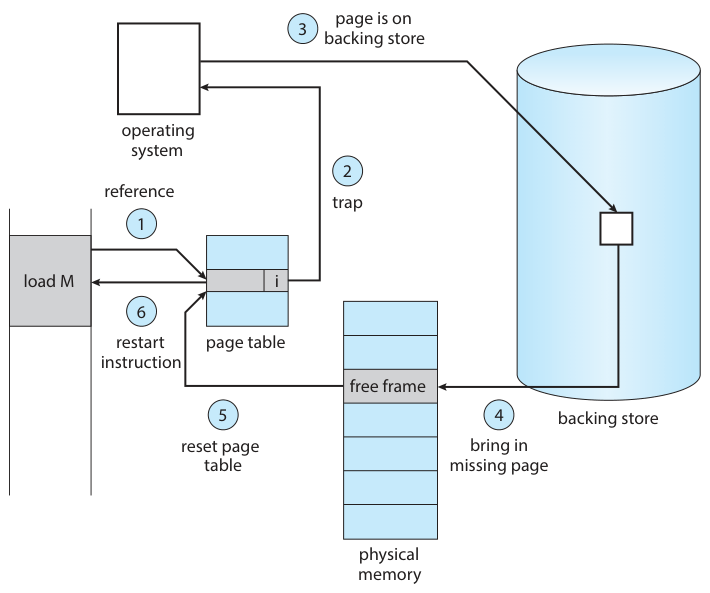
Step 3: effective access time第 3 步：有效访问时间
Core idea: Effective access time (EAT) is the probability-weighted average of normal RAM access time and disk-bound fault service time, making performance heavily sensitive to the fault rate.核心思路：有效访问时间（EAT）是正常访存耗时与缺页服务耗时的概率加权平均，因而系统性能对缺页率极其敏感。
A normal RAM access completes in roughly 200 ns, whereas servicing a page fault takes on the order of 8 ms—forty thousand times longer because of disk seek, rotational latency, and transfer delays.一次正常主存访问仅需约 200 ns，而处理一次缺页却要约 8 ms，因磁盘寻道、旋转与传输延迟而慢了四万倍。
How to compute by hand:手工计算步骤：
- Convert every time value to nanoseconds (\(1\text{ ms}=1{,}000{,}000\text{ ns}\)).先把所有时间统一换算为纳秒（\(1\text{ ms}=1{,}000{,}000\text{ ns}\)）。
- Substitute \(\text{ma}\) and \(T_{\text{fault}}\) into the EAT equation.将 \(\text{ma}\) 与 \(T_{\text{fault}}\) 代入公式。
- For a bounded slowdown requirement (e.g., at most 10% degradation), set \(\text{EAT}\le \text{allowed time}\) and solve for \(p\).若题干给出性能降幅上限（如不超过 10%），列出不等式 \(\text{EAT}\le \text{allowed time}\) 并反解 \(p\)。
When no free frames remain and a modified (dirty) victim page must be replaced, servicing the fault takes two disk transfers—writing the victim out before reading the requested page in—so the overall service time becomes a weighted average.若没有空闲帧且必须淘汰的牺牲页已被修改（脏页），一次缺页就需两次磁盘传输（先写出牺牲页，再读入所需页），平均服务时间需按比例加权。
If the system also uses a TLB, first compute the fault-free effective access time \(\text{EAT}_0\) from Section 6.5 and use it in place of \(\text{ma}\):若系统配有 TLB，则先按 6.5 节公式算出无缺页时的有效访问时间 \(\text{EAT}_0\)，再用它替代 \(\text{ma}\)：
Step 4: copy-on-write第 4 步：写时复制
Core idea: Copy-on-write shares physical pages between parent and child after fork(), duplicating a page only when either process writes to it.核心思路：写时复制使 fork() 后的父子进程先共享物理页，仅在任一方写入某页时才为其创建私有副本。
Calling fork() logically creates a duplicate of the parent process, yet eagerly copying the entire address space is wasteful whenever the child immediately calls exec(). With copy-on-write (COW)（写时复制）, both processes share the same frames initially and copy pages lazily:调用 fork() 逻辑上要创建父进程副本，但若子进程随后立即执行 exec()，预先复制整片地址空间纯属浪费。采用写时复制（COW）后，父子进程起初共享同一批物理帧，仅在写入时按需复制：
- Immediately after
fork(), parent and child point to the same physical frames, with shared pages marked copy-on-write (write-protected).fork()返回后，父子页表指向相同的物理帧，且共享页被标记为写时复制（即写保护）。 - When either process attempts to write to a shared page, hardware generates a protection trap.当任一方尝试修改共享页时，硬件触发写保护陷入。
- The OS allocates a free frame, copies the shared page's contents into it, and maps the new frame into the writer's page table with write permission enabled.操作系统从空闲帧链表分配一帧，复制该页内容，并将新帧以可写权限映射到写入方的页表。
- Pages that are never modified—such as read-only code—remain shared indefinitely.始终未被写入的页面（如只读代码页）则继续保持共享。
For example, if a child modifies only 60 of its parent's 2,000 pages, copy-on-write duplicates 60 pages instead of all 2,000.例如，若子进程仅修改父进程 2,000 页中的 60 页，写时复制只需复制 60 页而非全部 2,000 页。

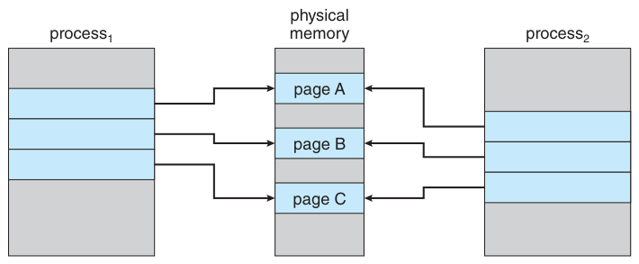

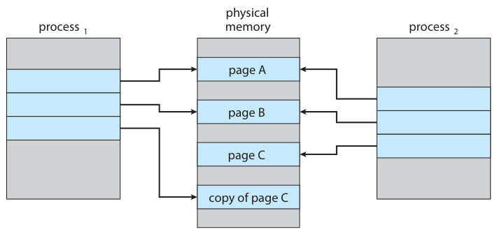
By contrast, vfork() performs no page marking or copying: the kernel suspends the parent while the child executes directly inside the parent's address space. Any writes made by the child mutate the parent's memory, so vfork() is safe only when the child calls exec() (or exits) immediately.相比之下，vfork() 既不标记也不复制页面：内核挂起父进程，让子进程直接在父进程地址空间中运行；子进程的所有写入都会直接修改父进程内存，因此仅在子进程立即调用 exec()（或退出）时才安全。
Practice练习
Q1. (Calculation) A demand-paged system has a memory-access time of 100 ns and stores its page table in registers. Servicing a page fault takes 8 ms when the victim frame is unmodified (or a free frame is available) and 20 ms when the victim is modified. Assuming every fault requires replacing a page and 70% of replaced pages are modified, what is the maximum acceptable page-fault rate for an effective access time of at most 200 ns?Q1.（计算）某请求调页系统的内存访问时间为 100 ns，页表存放在寄存器中。若牺牲帧未修改（或有空闲帧），缺页服务时间为 8 ms；若牺牲帧已修改，则需 20 ms。假设每次缺页均需替换一页，且 70% 的替换页已被修改，求使有效访问时间不超过 200 ns 的最大缺页率。
Answer
- Mean fault service time: \(T_{\text{fault}}=0.3\times 8+0.7\times 20=16.4\text{ ms}=16{,}400{,}000\text{ ns}\).求平均缺页时间：\(T_{\text{fault}}=0.3\times 8+0.7\times 20=16.4\text{ ms}=16{,}400{,}000\text{ ns}\)。
- Solve the EAT bound: \(\text{EAT}=(1-p)\cdot 100+p\cdot 16{,}400{,}000=100+16{,}399{,}900\,p\le 200\), so \(p\le 100/16{,}399{,}900\approx 6.1\times 10^{-6}\).代入 EAT 不等式：\(\text{EAT}=(1-p)\cdot 100+p\cdot 16{,}400{,}000=100+16{,}399{,}900\,p\le 200\)，解得 \(p\le 100/16{,}399{,}900\approx 6.1\times 10^{-6}\)。
Thus, at most about one access in 164,000 may fault.即大约每 164,000 次访存中至多允许 1 次缺页。
Q2. (Calculation) A system has 12-bit virtual and physical addresses and 256-byte pages. All entries below are hexadecimal; a dash indicates the page is not in memory.Q2.（计算）某系统采用 12 位虚拟地址与物理地址、256 字节页大小。下表各数均为十六进制，短横线表示该页不在内存中。
| Page页号 | 0 | 1 | 2 | 3 | 4 | 5 | 6 | 7 | 8 | 9 |
|---|---|---|---|---|---|---|---|---|---|---|
| Frame帧号 | – | 2 | C | A | – | 4 | 3 | – | B | 0 |
Free frames are allocated in order D, E, F. Translate virtual addresses 9EF, 111, 700, and 0FF, loading missing pages into the next free frame on a fault.空闲帧按 D、E、F 顺序分配。请转换虚拟地址 9EF、111、700 与 0FF，缺页时将页面装入下一个空闲帧。
Answer
With 256-byte (\(2^8\)-byte) pages, the lower two hex digits form the offset and the leading hex digit gives the page number:256 字节（\(2^8\) 字节）页对应 8 位偏移，即最后两位十六进制数字为页内偏移，首位为页号：
9EF: page 9 maps to frame0→ physical address0EF.9EF：页 9 映射至帧0→ 物理地址0EF。111: page 1 maps to frame2→ physical address211.111：页 1 映射至帧2→ 物理地址211。700: page 7 is invalid (page fault), loaded into next free frameD→ physical addressD00.700：页 7 无效（触发缺页），装入空闲帧D→ 物理地址D00。0FF: page 0 is invalid (page fault), loaded into next free frameE→ physical addressEFF.0FF：页 0 无效（触发缺页），装入空闲帧E→ 物理地址EFF。
Frame F remains unallocated.帧 F 仍保留空闲。
Q3. (Explain) What is copy-on-write, when is it beneficial, what hardware support does it require, and how does vfork() differ?Q3.（解释）什么是写时复制？它在何时收益显著、需要哪些硬件支持，并与 vfork() 有何差异？
Answer
- Mechanism: After
fork(), parent and child initially share the same physical frames marked copy-on-write. Only when either writes to a shared page does the OS allocate a new frame, copy the page, and remap the writer's entry; unmodified pages (e.g., code) stay shared.机制：fork()后父子进程先共享标为写时复制的物理帧；仅当任一方写入某页时，操作系统才为其分配新帧、拷贝页面并重映射页表，只读代码等未修改页始终共享。 - When it helps: Especially effective when the child quickly calls
exec()or touches few pages, making process creation rapid and memory-efficient.适用场景：当子进程随后很快调用exec()或仅修改极少数页面时收益最大，可显著加快进程创建并节省内存。 - Hardware support: Requires per-page write-protection bits in page-table entries, protection-violation trapping on writes, and OS remapping of the writer's PTE to a newly writable frame.硬件要求：页表项须支持写保护位、写保护违规陷入机制，以及将写入方页表项重映射到新可写帧的能力。
- Difference from
vfork():vfork()performs no page marking or copying; it suspends the parent and runs the child directly in the parent's address space, making writes visible to the parent—safe only if the child immediately callsexec().与vfork()区别：vfork()既不做写保护标记也不复制页，而是直接挂起父进程让子进程在父地址空间中运行，因此子进程修改对父进程立即可见，仅在立即调用exec()时安全。
Page Replacement: FIFO, Optimal and LRU ★★★页面置换：FIFO、最优和 LRU
Goal. Trace FIFO, OPT, and LRU in a table on a reference string, count faults, demonstrate Belady's anomaly, and identify which policies are stack algorithms.目标。 在表格中推演引用串上的 FIFO、OPT 与 LRU，统计缺页次数，演示 Belady 异常，并说明哪些属于栈式算法。
Step 1: basic page replacement第 1 步：基本页面置换
When physical memory is full, the page-fault handler from Section 7.1 adds an eviction step to reclaim a frame before loading the incoming page:当空闲帧链表耗尽时，缺页处理程序会在 7.1 节的基础上增加一轮淘汰写回步骤来腾出物理帧：
- Locate the requested page on backing store.在磁盘后备存储中找到目标页。
- Look for a free frame; if none is available, invoke the page-replacement algorithm to choose a victim, write it to disk if its modify bit（修改位）is set, and mark its page-table entry invalid.寻找空闲帧；若无空闲帧，运行置换算法选出牺牲页，若其修改位为 1 则先写回磁盘，并将其页表项置为无效。
- Read the desired page into the freed frame and update the page and frame tables.将目标页读入腾出的物理帧，并更新页表与帧表。
- Restart the user process at the interrupted instruction.从先前被中断的指令处恢复进程运行。
Hardware sets the modify (dirty) bit whenever any byte in the page is written. Clean victims can be discarded immediately without disk I/O—which is why Section 7.1 weights service time by the dirty fraction \(d\).只要页内任意字节被修改，硬件便会自动将修改（脏）位置 1；未被改过的干净牺牲页无需写盘可直接覆盖，这也正是 7.1 节需按脏页比例 \(d\) 加权缺页时间的原因。

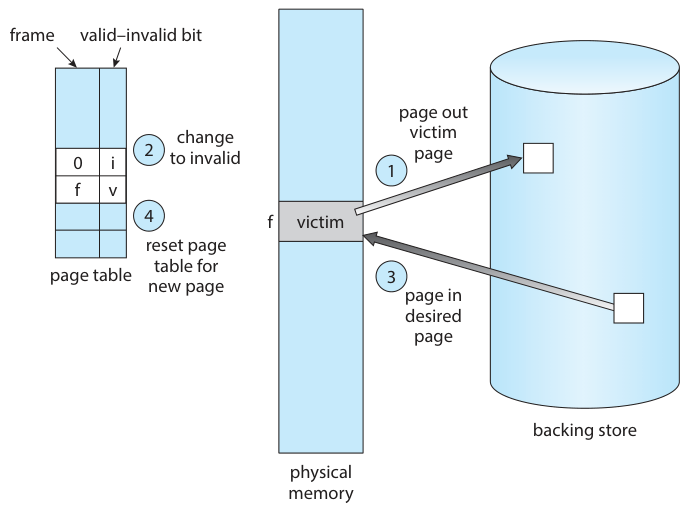
All three traces below run on the 20-reference string 7, 0, 1, 2, 0, 3, 0, 4, 2, 3, 0, 3, 2, 1, 2, 0, 1, 7, 0, 1 (6 distinct pages: 0, 1, 2, 3, 4, 7) with 3 initially empty frames.下方三种算法均在同一个含 20 次引用、6 个不同页面（0、1、2、3、4、7）的引用串 7, 0, 1, 2, 0, 3, 0, 4, 2, 3, 0, 3, 2, 1, 2, 0, 1, 7, 0, 1 上进行演示，初始分配 3 个空闲帧。
Step 2: FIFO第 2 步：FIFO
Core idea: FIFO evicts whichever resident page has stayed in memory longest, ignoring subsequent hits.核心思路：FIFO 总是淘汰最先进入内存的页面，无视期间是否被再次访问。
FIFO（先进先出）tracks resident pages in a simple queue ordered by arrival time, evicting from the head and appending newly loaded pages at the tail.FIFO（先进先出）按进入顺序用队列维护驻留页：新调入的页排入队尾，缺页置换时淘汰队首最老的页。
Hand-trace rules:手工推演规则：
- Allocate one column per reference.每次引用列出一栏。
- If the requested page is already in a frame, record a hit without modifying the FIFO queue order.若目标页已在帧中则记为命中，注意命中不改变到达队列顺序。
- Otherwise record a fault, filling any empty frame first.否则记为缺页，优先填入空白帧。
- When all frames are full, replace whichever resident page arrived earliest.若帧已满，则淘汰最早到达内存的页。
- Sum all faults, including initial cold-start fills.累计全部缺页次数（包含最初填满空帧的缺页）。
| Ref引用 | 7 | 0 | 1 | 2 | 0 | 3 | 0 | 4 | 2 | 3 | 0 | 3 | 2 | 1 | 2 | 0 | 1 | 7 | 0 | 1 |
|---|---|---|---|---|---|---|---|---|---|---|---|---|---|---|---|---|---|---|---|---|
| Frame 1帧 1 | 7 | 7 | 7 | 2 | 2 | 2 | 2 | 4 | 4 | 4 | 0 | 0 | 0 | 0 | 0 | 0 | 0 | 7 | 7 | 7 |
| Frame 2帧 2 | 0 | 0 | 0 | 0 | 3 | 3 | 3 | 2 | 2 | 2 | 2 | 2 | 1 | 1 | 1 | 1 | 1 | 0 | 0 | |
| Frame 3帧 3 | 1 | 1 | 1 | 1 | 0 | 0 | 0 | 3 | 3 | 3 | 3 | 3 | 2 | 2 | 2 | 2 | 2 | 1 | ||
| Fault缺页 | F | F | F | F | F | F | F | F | F | F | F | F | F | F | F |
Pages 7, 0, 1 fill the empty frames first; then 2 evicts 7 (oldest), 3 evicts 0, and the very next 0 faults again and evicts 1. In total, FIFO suffers 15 faults.前三步 7, 0, 1 填满空帧；接着 2 淘汰最老的 7，3 淘汰 0，而紧随其后的 0 又再次缺页并淘汰 1。最终 FIFO 共缺页 15 次。
Step 3: Belady's anomaly第 3 步：Belady 异常
Core idea: Under Belady's anomaly, giving FIFO more physical frames causes it to incur more page faults rather than fewer.核心思路：在 Belady 异常中，给采用 FIFO 的进程分配更多物理帧，缺页次数反而上升。
Intuitively, more memory should never increase page faults, yet Belady's anomaly（Belady 异常）proves otherwise on algorithms like FIFO: on the string 1, 2, 3, 4, 1, 2, 5, 1, 2, 3, 4, 5, FIFO incurs only 9 faults with 3 frames but 10 faults with 4 frames.直觉上内存越多缺页应越少，但 Belady 异常表明 FIFO 并非如此：在引用串 1, 2, 3, 4, 1, 2, 5, 1, 2, 3, 4, 5 上，FIFO 在 3 个帧时缺页 9 次，而在 4 个帧时反而增加到 10 次。
FIFO, 3 frames: 9 faultsFIFO，3 帧：9 次缺页
| Ref引用 | 1 | 2 | 3 | 4 | 1 | 2 | 5 | 1 | 2 | 3 | 4 | 5 |
|---|---|---|---|---|---|---|---|---|---|---|---|---|
| Frame 1帧 1 | 1 | 1 | 1 | 4 | 4 | 4 | 5 | 5 | 5 | 5 | 5 | 5 |
| Frame 2帧 2 | 2 | 2 | 2 | 1 | 1 | 1 | 1 | 1 | 3 | 3 | 3 | |
| Frame 3帧 3 | 3 | 3 | 3 | 2 | 2 | 2 | 2 | 2 | 4 | 4 | ||
| Fault缺页 | F | F | F | F | F | F | F | F | F |
FIFO, 4 frames: 10 faultsFIFO，4 帧：10 次缺页
| Ref引用 | 1 | 2 | 3 | 4 | 1 | 2 | 5 | 1 | 2 | 3 | 4 | 5 |
|---|---|---|---|---|---|---|---|---|---|---|---|---|
| Frame 1帧 1 | 1 | 1 | 1 | 1 | 1 | 1 | 5 | 5 | 5 | 5 | 4 | 4 |
| Frame 2帧 2 | 2 | 2 | 2 | 2 | 2 | 2 | 1 | 1 | 1 | 1 | 5 | |
| Frame 3帧 3 | 3 | 3 | 3 | 3 | 3 | 3 | 2 | 2 | 2 | 2 | ||
| Frame 4帧 4 | 4 | 4 | 4 | 4 | 4 | 4 | 3 | 3 | 3 | |||
| Fault缺页 | F | F | F | F | F | F | F | F | F | F |
Notice what happens at position 7 (5): with 4 frames, pages 1 and 2 arrived earlier without eviction on positions 5–6, so they get evicted right before positions 8–9 need them again; with 3 frames, they were refreshed into the queue later and stayed resident. Because FIFO depends on arrival timing rather than recency, the 4-frame resident set is not always a superset of the 3-frame set.可以看到第 7 次引用（5）处的差异：4 帧时，页 1 与 2 在第 5–6 步命中后并未刷新进入顺序，结果恰在再次使用前被淘汰并引发一连串缺页；而 3 帧时它们因此前换出又重入，反而在队列后端幸运保留。这说明 FIFO 下 4 帧驻留集并不总是 3 帧驻留集的超集。
Step 4: optimal replacement (OPT)第 4 步：最优置换（OPT）
Core idea: OPT evicts whichever resident page will not be used again for the longest time in the future (or is never used again).核心思路：OPT 总是淘汰下一次使用距离最远（或今后永不再用）的页面。
OPT（最优置换）, also called MIN, achieves the theoretical minimum number of page faults for any fixed frame count. Like SJF in CPU scheduling, it requires future knowledge and cannot be built in general kernels, serving instead as the benchmark for practical policies.OPT（最优置换，又称 MIN）在给定帧数下能达到理论最少缺页次数。正如 CPU 调度中的 SJF，它需要预知未来引用串而无法在通用内核中直接实现，通常只作评估实际算法的理论标尺。
Hand-trace rules:手工推演规则：
- When a fault occurs with all frames full, scan forward in the reference string from the current position.帧满发生缺页时，从当前位置向后查看后续引用串。
- For each resident page, note when it will next be accessed.找出每个驻留页下一次出现的位置。
- Evict whichever resident page has the farthest next use; any page never used again is an equally optimal victim.淘汰下一次使用距离最远的页；若多个页此后永不再用，任选其一效果相同。
| Ref引用 | 7 | 0 | 1 | 2 | 0 | 3 | 0 | 4 | 2 | 3 | 0 | 3 | 2 | 1 | 2 | 0 | 1 | 7 | 0 | 1 |
|---|---|---|---|---|---|---|---|---|---|---|---|---|---|---|---|---|---|---|---|---|
| Frame 1帧 1 | 7 | 7 | 7 | 2 | 2 | 2 | 2 | 2 | 2 | 2 | 2 | 2 | 2 | 2 | 2 | 2 | 2 | 7 | 7 | 7 |
| Frame 2帧 2 | 0 | 0 | 0 | 0 | 0 | 0 | 4 | 4 | 4 | 0 | 0 | 0 | 0 | 0 | 0 | 0 | 0 | 0 | 0 | |
| Frame 3帧 3 | 1 | 1 | 1 | 3 | 3 | 3 | 3 | 3 | 3 | 3 | 3 | 1 | 1 | 1 | 1 | 1 | 1 | 1 | ||
| Fault缺页 | F | F | F | F | F | F | F | F | F |
For instance, at page 2, OPT evicts 7 (unused until position 18) while keeping 0 (position 5) and 1 (position 14); next at 3, it evicts 1, the farthest-used of {0, 1, 2}. Total: 9 faults.例如引用 2 时，0 将在第 5 步用到、1 将在第 14 步用到，而 7 要到第 18 步才再次出现，因此 OPT 淘汰 7；同理引用 3 时在 {0, 1, 2} 中淘汰最晚才用的 1。总计仅缺页 9 次。
Step 5: LRU第 5 步：LRU
Core idea: LRU approximates OPT by looking backward, evicting whichever resident page has gone unused for the longest time.核心思路：LRU 用近期历史预测未来，总是淘汰过去最久未被使用过的页面。
LRU（最近最少使用）mirrors OPT in reverse: assuming that pages used recently will likely be used again soon, it replaces the page whose last access lies farthest in the past.LRU（最近最少使用）相当于“向回看”的 OPT：假设近期频繁访问的页不久还会再用，因此淘汰最后一次使用时间距今最远的页。
Hand-trace rules:手工推演规则：
- Every reference (hit or fault) marks the accessed page as the most recently used—update recency on hits so future victim choices stay accurate.每次引用（无论命中还是缺页）都将该页更新为“最近刚用过”——千万注意命中也要刷新其使用时刻。
- When a fault occurs with all frames full, scan backward in the string from the current position.帧满发生缺页时，从当前位置向前（向过去）查看引用串。
- Find the most recent reference for each currently resident page.确定当前每个驻留页最后一次被引用的位置。
- Evict whichever resident page has the earliest (oldest) last reference.淘汰最后一次使用位置最早（最久未访问）的页。
| Ref引用 | 7 | 0 | 1 | 2 | 0 | 3 | 0 | 4 | 2 | 3 | 0 | 3 | 2 | 1 | 2 | 0 | 1 | 7 | 0 | 1 |
|---|---|---|---|---|---|---|---|---|---|---|---|---|---|---|---|---|---|---|---|---|
| Frame 1帧 1 | 7 | 7 | 7 | 2 | 2 | 2 | 2 | 4 | 4 | 4 | 0 | 0 | 0 | 1 | 1 | 1 | 1 | 1 | 1 | 1 |
| Frame 2帧 2 | 0 | 0 | 0 | 0 | 0 | 0 | 0 | 0 | 3 | 3 | 3 | 3 | 3 | 3 | 0 | 0 | 0 | 0 | 0 | |
| Frame 3帧 3 | 1 | 1 | 1 | 3 | 3 | 3 | 2 | 2 | 2 | 2 | 2 | 2 | 2 | 2 | 2 | 7 | 7 | 7 | ||
| Fault缺页 | F | F | F | F | F | F | F | F | F | F | F | F |
The first 5 faults mirror OPT, until page 4 evicts 2 only for 2 to be requested right afterward, giving 12 faults overall.前 5 次缺页与 OPT 完全一致；直到访问 4 时 LRU 淘汰了 2，而紧接着又用到 2，最终共缺页 12 次。
Exact LRU requires updating recency metadata on every memory access, typically implemented in one of two ways:精确 LRU 必须在每次内存访问时维护访问顺序，经典实现主要有两种思路：
- Counters: Hardware increments a logical clock on every memory reference and writes it into the accessed page-table entry's time-of-use field; eviction scans for the smallest timestamp, incurring both a table write per access and a search on faults.计数器法：硬件维护逻辑时钟，并在每次访存时将时钟值写入对应页表项；缺页时检索时间戳最小的页，但每次访存都写页表且淘汰需遍历检索。
- Stack: Keep page numbers in a doubly linked list and move each referenced page to the top—leaving the LRU victim directly at the tail with no search—though updating pointers on every access is still too costly without special hardware.栈式链表法：用双向链表保存页号，每次访问将页面抽移到栈顶，则栈底始终为最久未用页无需查找；但每次访存都调整链表指针，若无专用硬件支持开销依然过大，因此真实系统多采用 7.3 节的近似算法。
Core idea: A stack algorithm guarantees that the resident set with \(n\) frames is always a subset of the resident set with \(n+1\) frames, preventing Belady's anomaly.核心思路：栈式算法保证 \(n\) 帧时的驻留页面集合始终包含于 \(n+1\) 帧的驻留集合中，从而彻底杜绝 Belady 异常。
Both OPT and LRU are stack algorithms（栈式算法）: under LRU, for instance, the \(n\) most recently used pages are always contained within the \(n+1\) most recently used pages. Consequently, any access that hits with \(n\) frames must also hit with \(n+1\) frames, so adding memory can never increase faults. FIFO is not a stack algorithm.OPT 与 LRU 都属于栈式算法：以 LRU 为例，任何时刻最近使用的前 \(n\) 个页面必然包含在最近使用的前 \(n+1\) 个页面之中；因此 \(n\) 帧时命中的访问在 \(n+1\) 帧时必也命中，缺页次数对帧数单调不增。FIFO 不满足包含性质，故可能出现异常。
Practice练习
Q1. (Trace) Given 3 initially empty frames and reference string 4, 2, 1, 4, 5, 2, 4, 2, 5, 4, 3, 5, count the page faults under FIFO, LRU, and OPT, identifying the victim at each eviction.Q1.（手工演算）现有 3 个初始空闲帧，引用串为 4, 2, 1, 4, 5, 2, 4, 2, 5, 4, 3, 5。分别统计 FIFO、LRU 与 OPT 的缺页次数，并指出每次置换的牺牲页。
Answer
- FIFO:
4, 2, 1fill;4hits;5evicts4(oldest);2hits;4evicts2;2evicts1;5and4hit;3evicts5;5evicts4. Faults: 4, 2, 1, 5, 4, 2, 3, 5 → 8 faults.FIFO：4, 2, 1填满空帧；4命中；5淘汰最早的4；2命中；4淘汰2；2淘汰1；5、4命中；3淘汰5；5淘汰4。缺页依次加载 4、2、1、5、4、2、3、5 → 8 次缺页。 - LRU:
4, 2, 1fill;4hits;5evicts2(least recent);2evicts1;4, 2, 5, 4hit;3evicts2;5hits. Faults: 4, 2, 1, 5, 2, 3 → 6 faults.LRU：4, 2, 1填满；4命中；5淘汰最久未用的2；2淘汰1；4, 2, 5, 4连续命中；3淘汰2；5命中。缺页依次加载 4、2、1、5、2、3 → 6 次缺页。 - OPT:
4, 2, 1fill;4hits;5evicts1(never used again);2, 4, 2, 5, 4hit;3evicts4(or2—neither is used again);5hits. Total: 5 faults.OPT：4, 2, 1填满；4命中；5淘汰之后永不再用的1；2, 4, 2, 5, 4连续命中；3淘汰4（淘汰2亦可，两者之后均不再使用）；5命中。总计 5 次缺页。
Thus OPT (5) \(<\) LRU (6) \(<\) FIFO (8); 5 is the absolute minimum because there are 5 distinct pages in the string.可见 OPT（5 次）\(<\) LRU（6 次）\(<\) FIFO（8 次）；由于引用串共含 5 个不同页面，5 次已达理论下界。
Q2. (Explain) Suppose a newly invented page-replacement policy exhibits Belady's anomaly on some contrived reference strings. Can this policy be optimal?Q2.（解释）假设你设计了一种页面置换算法，并发现在某些特定引用串上会出现 Belady 异常。该算法有可能是最优的吗？
Answer
No. An optimal algorithm yields the minimum possible faults for any frame count \(m\). Given \(n+1\) frames, an optimal policy can always match (or beat) its performance with \(n\) frames simply by ignoring the extra frame if helpful; therefore an optimal algorithm can never incur more faults when given more frames, whereas any algorithm displaying Belady's anomaly fails that guarantee.不可能。最优算法在任意帧数下都能取得最小缺页次数。当帧数从 \(n\) 增至 \(n+1\) 时，算法大可把多出的 1 个帧闲置不用，至少能维持与 \(n\) 帧完全相同的缺页次数；因此最优算法在增加帧数时绝不会缺页增多，凡出现 Belady 异常者必定非最优。
Q3. (Bounds) A process starts with \(m\) empty frames and executes a reference string of length \(p\) containing \(n\) distinct pages. Give tight lower and upper bounds on page faults for any replacement policy.Q3.（上下界）某进程初始拥有 \(m\) 个空帧，其长度为 \(p\) 的引用串包含 \(n\) 个不同页面。求任意置换算法缺页次数的下界和上界。
Answer
- Lower bound (\(n\)): Every distinct page must suffer at least one cold-start fault on its first reference, achieved whenever \(m\ge n\).下界 \(n\)：每个不同页面在首次访问时至少缺页一次，当可用帧数 \(m\ge n\) 时可取到该下界。
- Upper bound (\(p\)): Every single memory reference faults, achievable whenever \(m<n\) and each referenced page was previously evicted.上界 \(p\)：最坏情况下全部 \(p\) 次引用均触发缺页。
LRU Approximation and Other Refinements ★★★LRU 近似与其他改进
Goal. Trace the second-chance (clock) algorithm using reference bits, apply the 8-bit history register, and select victims under enhanced second chance's four \((R,M)\) classes.目标。 结合引用位推演第二次机会（时钟）算法，运用 8 位引用历史寄存器，并依据增强型第二次机会的四个 \((R,M)\) 类别选择牺牲页。
True LRU requires updating counters or reordering a linked list on every memory access, which few architectures support without prohibitive hardware overhead. Instead, most processors provide a reference bit per page and approximate LRU on top of it.真正的 LRU 需要在每次访存时更新计数器或重排链表，硬件代价过高；因此绝大多数处理器只在页表项中提供引用位，操作系统在此基础上构造低开销的 LRU 近似算法。
Step 1: additional reference bits第 1 步：附加的引用位
Core idea: Record an 8-bit periodic history of each page's reference bit and evict the page with the smallest unsigned byte value.核心思路：为每页定期采样并记录 8 位引用位历史，淘汰无符号字节值最小的页面。
How it works (step by step):操作步骤：
- At each timer interrupt (e.g., every 100 ms), shift every page's 8-bit history register right by 1 bit, discarding the oldest (lowest) bit.每次定时器中断（例如每 100 ms）时，将各页的 8 位历史寄存器右移 1 位，丢弃最旧的最低位。
- Copy the page's current reference bit \(R\) into the highest bit of its history byte.将该页当前的引用位 \(R\) 移入历史字节的最高位。
- Clear all hardware reference bits \(R\) back to 0 for the next interval.将所有硬件引用位 \(R\) 清零，准备下一采样周期。
- When a victim is needed, interpret each history byte as an unsigned integer and evict the smallest one (representing the longest-idle page).需要置换时，将各历史字节视作无符号整数，淘汰数值最小（最久未访问）的页。
- If several pages tie for the smallest value, evict all of them or break ties with FIFO.若多个页数值并列最小，可一并淘汰或按 FIFO 打破平局。
For example, if a page currently holds history 10010010 and was referenced during the last interval (\(R=1\)), shifting right and inserting 1 yields 11001001; if unreferenced (\(R=0\)), it becomes 01001001. Similarly, 11000100 represents more recent use than 01110111 because the high-order bit weighs the newest interval most heavily.例如，某页当前历史为 10010010：若上一周期被访问（\(R=1\)），右移并补 1 得 11001001；若未被访问（\(R=0\)），则得 01001001。又如 11000100 比 01110111 更新，因为最高位权重最大且代表最新时间片。
Step 2: second chance (clock)第 2 步：第二次机会（时钟）
Core idea: Second chance improves FIFO by granting a "second chance" to recently referenced pages: if R = 1, clear it and advance the clock hand; replace the first page with R = 0.核心思路：第二次机会（时钟）算法用引用位改进 FIFO：指针扫描时遇到 R = 1 的页则将其清零并跳过（给予第二次机会），遇到首个 R = 0 的页则替换。
The second-chance（第二次机会）algorithm arranges resident frames in a circular queue scanned by a pointer called the clock hand, earning it the name clock algorithm（时钟算法）.第二次机会算法将驻留物理帧组织成循环队列，并由“时钟指针”（hand）顺次扫描候选页，因此常被称为时钟算法。
Hand-trace rules:手工推演规则：
- Fill empty frames in order; every newly loaded page enters with \(R=1\) and advances the hand to the next slot.按序填满空闲帧；每次缺页调入的新页初始置 \(R=1\)，并将指针拨向下一帧。
- On a page hit, set that page's \(R\) to 1 without moving the clock hand.访问命中时，仅将该页引用位置 1，时钟指针保持不动。
- On a fault when all frames are full, inspect the page under the hand: if \(R=1\), clear \(R\) to 0 and advance the hand.帧满缺页时检查指针所指页面：若 \(R=1\)，将其清零并顺移指针。
- Repeat until finding a page with \(R=0\); replace that victim, load the new page with \(R=1\), and advance the hand past the newly loaded frame.重复扫描直至遇到 \(R=0\) 的页：将其替换并置新页 \(R=1\)，随后指针继续前移一格。
If every resident page has \(R=1\), the hand sweeps a full revolution clearing every bit and stops back at its starting frame—making second chance degenerate to pure FIFO.若所有驻留页的引用位全为 1，指针会转完整整一圈将全部引用位清零，最终还是淘汰回到起点的那一页——此时算法退化为 FIFO。

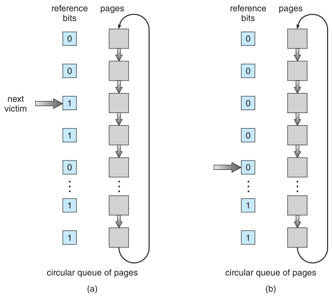
In the trace table below, an asterisk (*) denotes \(R=1\), and the Hand row indicates which frame the clock hand points to after handling each reference.下表中星号（*）表示该页 \(R=1\)，Hand 行记录每次引用处理完毕后指针停留的帧号。
Second chance on the example string, 3 frames: 14 faults示例引用串上的第二次机会算法，3 帧：14 次缺页
| Ref引用 | 7 | 0 | 1 | 2 | 0 | 3 | 0 | 4 | 2 | 3 | 0 | 3 | 2 | 1 | 2 | 0 | 1 | 7 | 0 | 1 |
|---|---|---|---|---|---|---|---|---|---|---|---|---|---|---|---|---|---|---|---|---|
| Frame 1帧 1 | 7* | 7* | 7* | 2* | 2* | 2* | 2* | 4* | 4* | 4* | 4 | 3* | 3* | 3 | 3 | 0* | 0* | 0 | 0* | 0* |
| Frame 2帧 2 | 0* | 0* | 0 | 0* | 0 | 0* | 0 | 2* | 2* | 2 | 2 | 2* | 1* | 1* | 1* | 1* | 7* | 7* | 7* | |
| Frame 3帧 3 | 1* | 1 | 1 | 3* | 3* | 3 | 3 | 3* | 0* | 0* | 0* | 0 | 2* | 2* | 2* | 2 | 2 | 1* | ||
| Hand指针 | 2 | 3 | 1 | 2 | 2 | 1 | 1 | 2 | 3 | 3 | 1 | 2 | 2 | 3 | 1 | 2 | 2 | 3 | 3 | 1 |
| Fault缺页 | F | F | F | F | F | F | F | F | F | F | F | F | F | F |
At the first 2, all three resident pages carry \(R=1\), so the hand sweeps once clearing all bits and evicts 7 just like FIFO; later at 3, page 0 has just been hit (\(R=1\)) so it is spared and 1 is replaced instead. Across the 20 references, second chance incurs 14 faults—fitting neatly between LRU (12) and FIFO (15).首次访问 2 时三页引用位全为 1，指针顺时针全清后仍淘汰最早的 7（等同 FIFO）；随后访问 3 时，刚命中的页 0 因 \(R=1\) 躲过淘汰，转为替换页 1。总计 14 次缺页，介于 LRU（12 次）与 FIFO（15 次）之间。
Because second chance preserves FIFO's arrival-order frame ring, it is still not a stack algorithm and can exhibit Belady's anomaly—for instance, on 1, 2, 3, 4, 1, 2, 5, 1, 2, 3, 4, 5 it suffers 9 faults with 3 frames versus 10 faults with 4 frames.由于第二次机会本质上仍以到达顺序排布帧队列，它并非栈式算法，因此同样可能触发 Belady 异常——例如在引用串 1, 2, 3, 4, 1, 2, 5, 1, 2, 3, 4, 5 上，3 帧时仅缺页 9 次，4 帧时反而缺页 10 次。
Step 3: enhanced second chance第 3 步：增强型第二次机会
Core idea: Enhanced second chance pairs the reference and modify bits (R, M) so the clock favors evicting clean, unused pages and avoids unnecessary disk writes.核心思路：增强型第二次机会结合引用位与修改位 (R, M) 分四级扫描，优先淘汰既未近期使用又干净的页面，尽量避免写回磁盘。
Combining the reference bit \(R\) and modify bit \(M\) partitions every resident page into four replacement priority classes:将引用位 \(R\) 与修改位 \(M\) 组合后，所有驻留页划分为四个置换优先级类别：
| Class类别 | \((R,M)\) | Meaning含义 | Replacement preference置换偏好 |
|---|---|---|---|
| 1 | (0, 0) | not recently used, clean近期未使用，干净 | Best victim (free to overwrite immediately)最佳牺牲页（无需写回即可直接覆盖） |
| 2 | (0, 1) | not recently used, modified近期未使用，已修改 | Second choice (must write out to disk first)次优选择（需先写回磁盘） |
| 3 | (1, 0) | recently used, clean近期使用过，干净 | Likely needed again soon近期很可能再次访问 |
| 4 | (1, 1) | recently used, modified近期使用过，已修改 | Worst victim (likely needed soon and requires write-out)最差选择（既可能再被用到又需写盘） |
Selection procedure:扫描选择步骤：
- Classify each resident page by its \((R,M)\) bits.按每页的 \((R,M)\) 值确定所属类别。
- Scan clockwise from the hand to replace the first page in the lowest non-empty class.从时钟指针开始扫描，置换当前存在的最低类别中的第一页。
- During multi-pass scans, if no class 1 page exists, look for class 2 while clearing \(R\) bits as pages are passed; several passes may be needed.若第一遍未找到第 1 类页，则在下一遍中寻找第 2 类（扫描过程中顺带清零途经页的引用位），至多可能需要数遍扫描。
For example, given four pages ordered clockwise as P1(1,0), P2(1,1), P3(0,1), and P4(0,0), P4 is class 1 and replaced first; without P4, class 2 is lowest, so P3 is evicted. Unlike basic clock replacement, keeping modified pages longer directly reduces expensive write-back I/O.例如按顺时针排列的四页 P1(1,0)、P2(1,1)、P3(0,1)、P4(0,0) 中，P4 属于第 1 类最先被淘汰；若没有 P4，最低类为第 2 类，则淘汰 P3。与基本时钟算法相比，该策略倾向保留已修改页，有效减少了磁盘写回 I/O。
Step 4: other refinements第 4 步：其他改进
Beyond clock variants, OSes also consider reference-frequency counters and asynchronous frame pools to cut replacement stalls:除时钟类算法外，还有基于访问频次计数以及利用异步缓冲帧池来降低停顿的改进方案：
- LFU (Least Frequently Used): Evicts the page with the lowest access count. Because a page heavily used only at startup retains a stale high count long after going cold, periodic right-shifts decay old counts.LFU（最不经常使用）：淘汰引用计数最小的页。若某页仅在启动阶段高频访问，过后会长期霸占高计数值，因此需定期对计数右移衰减。
- MFU (Most Frequently Used): Evicts the page with the highest access count, assuming the newest page has only accumulated a small count so far; neither LFU nor MFU approximates OPT well in general.MFU（最常使用）：假设刚调入不久的页计数较小而淘汰计数最大者。LFU 与 MFU 在一般负载下与 OPT 差距较大且实现成本高，很少实际采用。
- Page buffering: Maintains a pool of free frames so incoming pages can be read immediately without waiting for victim write-outs; modified pages are flushed lazily when the disk is idle, and evicted pages remaining in the pool can be reclaimed with zero disk I/O if referenced again.页缓冲：常备一个空闲帧池，使缺页读入不必阻塞等待牺牲页写出；脏页在磁盘空闲时后台异步刷盘，而被踢进缓冲池的旧页若很快再被访问，还可直接无 I/O 找回。
| Algorithm算法 | Information used所用信息 | Key trade-off核心特征 |
|---|---|---|
| FIFO | Arrival order到达顺序 | Simplest queue; suffers from Belady's anomaly实现最简；存在 Belady 异常 |
| OPT | Future references未来引用序列 | Minimum possible faults; unrealizable offline yardstick理论上缺页最少；需预知未来，仅作基准 |
| LRU | Exact order of last use精确最近使用次序 | Stack algorithm (no anomaly); needs costly per-access updates栈式算法（无异常）；每次访存更新成本高 |
| Additional reference bits附加引用位 | 8-bit history of \(R\)8 位 \(R\) 历史 | Closely approximates LRU; ties broken by FIFO接近 LRU；并列时退回 FIFO |
| Second chance (clock)第二次机会（时钟） | Arrival order + \(R\) bit到达顺序 + 引用位 \(R\) | Cheap FIFO approximation; still exhibits Belady's anomaly低开销近似；仍可能触发 Belady 异常（全 1 时退化为 FIFO） |
| Enhanced second chance增强型第二次机会 | \(R\) bit and \(M\) bit引用位 \(R\) 与修改位 \(M\) | Prefers clean victims within a recency class, reducing disk writes同类引用位下优先淘汰干净页、保留已修改页，从而减少写盘 |
| LFU / MFU | Access frequency counts访问频次计数 | High overhead, poor general OPT approximation; rarely used开销高、通用近似差，极少采用 |
Practice练习
Q1. (Trace) Trace second chance with 3 initially empty frames on 4, 2, 1, 4, 5, 2, 4, 2, 5, 4, 3, 5 (same string as Section 7.2 Q1). Count the page faults and compare against FIFO (8) and LRU (6).Q1.（手工演算）用 3 个初始空闲帧在引用串 4, 2, 1, 4, 5, 2, 4, 2, 5, 4, 3, 5（与 7.2 节 Q1 相同）上推演第二次机会算法。统计缺页次数，并与 FIFO（8 次）、LRU（6 次）对比。
Answer
| Ref引用 | 4 | 2 | 1 | 4 | 5 | 2 | 4 | 2 | 5 | 4 | 3 | 5 |
|---|---|---|---|---|---|---|---|---|---|---|---|---|
| Frame 1帧 1 | 4* | 4* | 4* | 4* | 5* | 5* | 5* | 5* | 5* | 5* | 3* | 3* |
| Frame 2帧 2 | 2* | 2* | 2* | 2 | 2* | 2 | 2* | 2* | 2* | 2 | 5* | |
| Frame 3帧 3 | 1* | 1* | 1 | 1 | 4* | 4* | 4* | 4* | 4 | 4 | ||
| Hand指针 | 2 | 3 | 1 | 1 | 2 | 2 | 1 | 1 | 1 | 1 | 2 | 3 |
| Fault缺页 | F | F | F | F | F | F | F |
At the first 5, all bits are 1 so the hand clears them and evicts 4 (same as FIFO). At the next 4, page 2 still has \(R=1\) from its recent hit and is spared while page 1 (\(R=0\)) goes; later at 3 all bits are 1 again so 5 is evicted, and the final 5 evicts 2 (\(R=0\)). Total: \(7\) faults—between LRU (6) and FIFO (8) because the reference bit protects recently hit page 2.首次引用 5 时所有引用位均为 1，指针全清后淘汰最早的 4（同 FIFO）；紧接着访问 4 时，刚命中的页 2 因 \(R=1\) 获保而淘汰页 1；随后引用 3 时三位再度全 1 而淘汰 5，末尾引用 5 时再淘汰 \(R=0\) 的页 2。总计 \(7\) 次缺页，介于 LRU（6 次）与 FIFO（8 次）之间。
Q2. (Calculation) Five pages carry 8-bit history registers: A 10010010, B 01110111, C 00101101, D 00101110, and E 11000100. Which page does the additional-reference-bits algorithm replace, and which was used most recently?Q2.（计算）五个页的 8 位引用历史寄存器分别为 A 10010010、B 01110111、C 00101101、D 00101110、E 11000100。附加引用位算法会置换哪一页？哪一页最近被使用？
Answer
Interpreted as unsigned integers: A \(=146\), B \(=119\), C \(=45\), D \(=46\), and E \(=196\). The minimum is C (45), so C is replaced (with D at 46 next in line). E (196) is largest with its two newest bits set, making it the most recently used page.按无符号整数换算得：A \(=146\)、B \(=119\)、C \(=45\)、D \(=46\)、E \(=196\)。最小值为 C（45），故替换 C（次小为 D = 46）；E（196）数值最大且最近两位均为 1，故 E 最近被使用。
Q3. (Analysis) A program scans four pages cyclically—1, 2, 3, 4 repeated five times (20 references)—in 3 frames. How many faults do FIFO, LRU, and OPT incur, which simple rule matches OPT here, and why does LRU perform poorly?Q3.（分析）某程序在 3 个帧中循环扫描 4 个页（1, 2, 3, 4 重复五遍，共 20 次引用）。FIFO、LRU 与 OPT 分别缺页多少次？哪条简单规则在此与 OPT 相同？为什么 LRU 失效？
Answer
- FIFO and LRU: 20 faults (every single access faults). Because four pages rotate through three frames, the oldest / least-recently-used resident page is always the exact page requested next.FIFO 与 LRU：均缺页 20 次（每次访问都缺页）。4 页轮流挤占 3 个帧时，队首或最久未用的页面恰恰就是下一次即将访问的页面。
- OPT (and MRU): 9 faults (3 initial fills plus one fault every two references at positions 4, 7, 10, 13, 16, and 19). Because the page just referenced will not be needed again until after all three other pages, the simple rule "evict the most recently used page (MRU)" matches OPT here.OPT（及 MRU）：仅缺页 9 次（前 3 次装满后，每隔两次引用缺页一次，即位置 4、7、10、13、16、19）。刚用过的页反而最晚才会被再次用到，因此“淘汰最近使用的页（MRU）”在此与 OPT 表现完全一致。
- Why LRU fails: LRU assumes the recent past predicts the immediate future, an assumption broken by cyclic or sequential scans larger than available memory—which is why database buffer pools avoid pure LRU during table scans.LRU 失效原因：LRU 假设近期访问规律会在短期重现，而超出内存帧数的循环或顺序扫描彻底打破了这一前提，这也是数据库系统在全表扫描时常改用类似 MRU/MFU 缓冲策略的原因。
Allocation of Frames ★★帧的分配
Goal. Compute equal and proportional frame allocations, explain architectural minimum frame limits, and compare global versus local replacement.目标。 计算平均分配与按比例分配的帧数，说明体系结构决定最少帧数的原因，并对比全局置换与局部置换。
Step 1: minimum and maximum number of frames第 1 步：帧数的最小值和最大值
The upper bound on frames for a single process is simply the total user-available frames in physical memory, whereas the lower bound is dictated by CPU instruction architecture: because a page fault restarts the faulting instruction from the beginning, the process must hold enough frames simultaneously to keep every page a single instruction could touch:单个进程可分配帧数的上限取决于物理内存总空闲帧数，而下限则由处理器指令集架构刚性决定：由于发生缺页时指令必须从头重启，进程至少要能同时容纳单条指令执行过程中可能触及的所有页面：
- One memory operand: at least 2 frames (one for the instruction, one for the data operand).带一个内存操作数：至少 2 个帧（分别存放指令和数据）。
- One level of indirect addressing: at least 3 frames (instruction, pointer page, and target data page).带一级间接寻址：至少 3 个帧（指令页、指针所在页与最终数据页）。
- An instruction straddling two pages with two multi-page indirect operands: up to 6 frames.一条跨页指令且含两个间接寻址操作数：最多需 6 个帧。
If a process is given fewer than this minimum, restarting the instruction simply evicts one required page to load another, trapping it in an endless fault loop with zero forward progress.若进程获得的帧数低于该最小值，每次重启都会换出当前所需的一页去读入另一页，陷入无限缺页死循环而无法前进。
Step 2: equal and proportional allocation第 2 步：平均分配与按比例分配
Core idea: Equal allocation divides frames uniformly among all processes, whereas proportional allocation scales each process's frame count to its virtual memory size.核心思路：平均分配将可用帧均分给所有进程，按比例分配则根据各进程自身大小按比例分配帧数。
Equal allocation（平均分配）gives each of \(n\) processes \(\lfloor m/n\rfloor\) frames (e.g., sharing 93 frames across 5 processes gives 18 each with 3 spare), wasting memory when small processes receive more frames than they have pages. Proportional allocation（按比例分配）allocates frames according to each process's size:平均分配给 \(n\) 个进程各分得 \(\lfloor m/n\rfloor\) 帧（如 93 帧分给 5 个进程则各得 18 帧、余 3 帧），极易把过剩帧浪费在小进程身上；按比例分配则依据进程逻辑大小分帧：
Allocation steps:手工分配步骤：
- Sum all process sizes to find \(S\).将所有进程页数相加求得 \(S\)。
- Compute \(a_i=(s_i/S)\times m\) for each process.逐个计算 \(a_i=(s_i/S)\times m\)。
- Truncate each \(a_i\) down to an integer.对每个 \(a_i\) 向下取整。
- If any \(a_i\) falls below the minimum frame bound, raise it to the minimum and deduct the difference from the largest process.若某进程低于最少帧数要求，将其补足到下限并从最大进程的配额中扣除差额。
For example, sharing 62 frames between a 10-page process and a 127-page process yields \(S=137\), giving \(a_1=10/137\times 62\approx 4.5\to 4\) frames and \(a_2=127/137\times 62\approx 57.5\to 57\) frames, with 1 spare frame left.例如将 62 帧分给 10 页与 127 页的两个进程：\(S=137\)，\(a_1=10/137\times 62\approx 4.5\to 4\) 帧，\(a_2=127/137\times 62\approx 57.5\to 57\) 帧，剩余 1 帧。
Step 3: global versus local replacement第 3 步：全局置换与局部置换
Core idea: Global replacement lets a process select a victim frame from anywhere in RAM; local replacement confines victim selection to the process's own allocated frames.核心思路：全局置换允许进程从全内存任意帧中选出牺牲页（可抢占其他进程）；局部置换则将其严格限定在自身已分配的帧内。
Global replacement（全局置换）allows a faulting process to reclaim a frame currently held by another process, dynamically shifting frame counts over time, whereas local replacement（局部置换）restricts each process strictly to victims among its own resident pages.全局置换允许缺页进程接管其他进程的物理帧，因此各进程持有帧数随运行动态变化；而局部置换只允许在进程自身的驻留帧内进行替换。
| Aspect对比维度 | Global replacement全局置换 | Local replacement局部置换 |
|---|---|---|
| Frames per process单进程持有帧数 | Varies dynamically at run time运行时可动态增减 | Fixed until allocation is explicitly recomputed在重算配额前保持固定 |
| Execution predictability执行性能可预测性 | Depends heavily on co-running workloads (the same run might take 0.5 s or 4.3 s)受同机并发进程影响极深（同任务耗时可能在 0.5 s 至 4.3 s 间波动） | Predictable; depends strictly on the process's own paging behavior稳定可预测，只取决于进程自身访存特征 |
| Memory efficiency & throughput内存利用率与吞吐量 | Reclaims cold frames from idle processes, yielding higher overall throughput能抽调其他进程不常用的帧，系统总吞吐量更高 | May leave spare frames locked in idle or over-allocated processes可能导致部分进程的富裕帧闲置浪费 |
| Thrashing containment抖动隔离能力 | One thrashing process can steal frames and spread thrashing system-wide单一抖动进程会四处抢帧，使抖动蔓延全系统 | Victim choice stays within the process (though disk queueing still slows peers)抢帧效应被限制在进程内部 |
| Practical adoption实际采用情况 | Standard default in general-purpose OSes通用操作系统主流方案 | Used where per-process isolation or predictability matters常用于需隔离性或性能可预测的场景 |
Practice练习
Q1. (Calculation) 100 free frames are shared among three processes of 8, 40, and 152 pages, with an architectural minimum of 6 frames per process. Compute both the equal and proportional allocations and comment on the difference.Q1.（计算）100 个空闲帧分给大小分别为 8 页、40 页与 152 页的三个进程，体系结构规定每进程至少 6 帧。请分别求平均分配与按比例分配的结果并评价。
Answer
- Equal allocation: \(\lfloor 100/3\rfloor=33\) frames each (1 spare). Because the 8-page process can never occupy more than 8 frames, 25 of its 33 frames sit wasted.平均分配：各得 \(\lfloor 100/3\rfloor=33\) 帧（余 1 帧）。其中 8 页进程至多用到 8 帧，分到的 33 帧白白浪费了 25 帧。
- Proportional allocation: \(S=8+40+152=200\) gives raw shares \(a_1=4\), \(a_2=20\), \(a_3=76\). Since \(a_1=4<6\) violates the architectural minimum, raise \(a_1\) to 6 and subtract 2 frames from the largest process (\(a_3=74\)), yielding 6, 20, and 74 frames (sum = 100). Proportional allocation aligns memory far better with actual demand.按比例分配：\(S=8+40+152=200\)，初算得 \(a_1=4\)、\(a_2=20\)、\(a_3=76\)。因 \(a_1=4<6\) 低于下限，将其上调至 6 并从最大进程扣除 2 帧，最终分配 6、20、74 帧（合计 100），明显更贴合各进程实际需求。
Q2. (Compare) On a busy system, the same process running identical inputs finishes in 0.5 s on one run and 4.3 s on another. Which replacement policy is likely active, and what key benefit would the alternative policy provide?Q2.（比较）同一进程以完全相同的输入在繁忙系统上运行，一次耗时 0.5 s，另一次却达 4.3 s。系统极可能采用哪种置换策略？另一策略又能带来什么优势？
Answer
Global replacement is active, because a process's available frame pool fluctuates depending on the paging behavior of all co-running processes. Under local replacement, its frame count stays isolated from outside interference, delivering repeatable, predictable execution times and preventing a thrashing neighbor from stealing its frames.系统采用的是全局置换：进程实际拥有的物理帧数会随同一时间其他进程的内存需求波动，从而导致运行时间剧烈变化。若改用局部置换，其驻留帧只受自身行为影响，运行耗时稳定可预测，且能防止抖动进程窃取他人的帧。
Thrashing and Working Sets ★★★抖动与工作集
Goal. Explain thrashing and its feedback loop, compute a working set and working-set size over window \(\Delta\), test whether total demand fits RAM, and explain page-fault-frequency control.目标。 解释抖动及其恶性反馈环，按窗口 \(\Delta\) 计算工作集及大小，判断总需求是否超出内存容量，并说明缺页频率调控机制。
Step 1: thrashing and its cause第 1 步：抖动及其原因
Core idea: Thrashing occurs when a process spends far more time paging between memory and disk than executing useful instructions.核心思路：抖动是指进程把大量时间消耗在频繁换页上，有效指令执行停滞的现象。
When a process holds fewer frames than its active locality requires, evicting one needed page immediately triggers another fault for that very page. Worse still, a destructive feedback loop between CPU utilization monitoring and global replacement turns localized paging into system-wide collapse:当进程分得的帧少于其活跃局部所需时，淘汰掉的页立刻又会被访问从而再次缺页；更严重的是，CPU 利用率调度策略与全局置换会联手触发恶性正反馈，导致系统吞吐量雪崩：
- Observing low CPU utilization, the OS scheduler increases the degree of multiprogramming by admitting another process.操作系统监测到 CPU 利用率偏低，便接纳更多新进程以提高多道程序度。
- When a running process moves into a larger locality, global replacement steals frames from other running processes.当某一进程进入更大的工作局部时，全局置换从其他进程手中抢占物理帧。
- Those starved processes begin faulting rapidly too, queuing up behind the saturated paging disk while ready queues empty and CPU utilization plunges.失帧的进程也开始密集缺页，大排长龙阻塞在换页磁盘队列上，导致就绪队列空空如也、CPU 利用率暴跌。
- Misreading this deeper CPU slump as idle capacity, the scheduler admits yet more processes—until useful throughput virtually hits zero.调度器误将更低的 CPU 利用率解读为“资源空闲”，继续放行新进程，最终使有效吞吐量彻底归零。

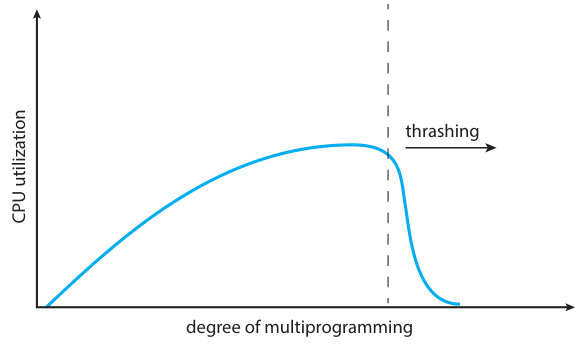
The genuine cure for thrashing is to decrease the degree of multiprogramming (by suspending processes) so active localities fit back in RAM; local replacement only isolates frame stealing without relieving disk queue congestion.消除抖动的根本办法是降低多道程序度（挂起部分进程），让剩余进程的活跃局部重新装入内存；局部置换虽能阻止相互抢帧，却依然无法缓解换页磁盘队列拥堵。
Step 2: the working set第 2 步：工作集
Core idea: The working set at time \(t\) consists of all distinct pages referenced within the most recent \(\Delta\) memory accesses.核心思路：时刻 \(t\) 的工作集等于进程在最近 \(\Delta\) 次内存引用中访问过的所有不同页面的集合。
Denning's working-set model（工作集模型）tracks program locality dynamically using a backward sliding window of width \(\Delta\) references: a page stays in the working set while actively reused and drops out once \(\Delta\) references pass without touching it.工作集模型借助宽度为 \(\Delta\) 的滑动窗口动态刻画局部性：只要页在近 \(\Delta\) 次引用中被访问过就保留在工作集内，超时未访问便自动移出。
Choosing \(\Delta\) requires care: too small a window omits parts of the current locality, while too large a window merges multiple distinct localities together.窗口大小 \(\Delta\) 须恰当选取：过小会割裂当前局部性，过大则会跨越并混入多个不同局部性。
Working-set procedure:手工计算步骤：
- At reference time \(t\), take the \(\Delta\) references spanning positions \(t-\Delta+1\) through \(t\).在时刻 \(t\) 取从 \(t-\Delta+1\) 到 \(t\) 的连续 \(\Delta\) 次引用。
- List the distinct page numbers within that window to form \(\text{WS}(t)\).去重后列出其中的不同页号即得 \(\text{WS}(t)\)。
- Count those distinct pages to obtain \(\text{WSS}(t)\).统计不同页号个数即为 \(\text{WSS}(t)\)。
- Sum \(\text{WSS}_i\) across all processes to find total demand \(D\), and verify whether \(D\le m\).将所有进程的 \(\text{WSS}_i\) 相加求得总需求 \(D\)，并与物理帧数 \(m\) 比较。
Whenever \(D>m\), the OS suspends one or more processes, writes out their dirty pages, and redistributes their frames to the remaining runnable processes—maximizing multiprogramming safely just short of thrashing.每当发现 \(D>m\)，操作系统便挂起一个或多个进程、写回其脏页并收回帧供给其余进程；如此便能在逼近极高并发度的同时恰好避免抖动。
Step 3: page-fault frequency第 3 步：缺页频率
Core idea: Page-fault frequency (PFF) monitors each process's fault rate directly—allocating another frame above an upper bound and reclaiming a frame below a lower bound.核心思路：缺页频率（PFF）直接按缺页率症状调控：缺页率超过上限就增加分配帧，低于下限就回收多余帧。
Rather than tracking sliding windows explicitly, page-fault frequency（缺页频率）control regulates frame allocations using upper and lower thresholds on observed fault rates:相比显式统计滑动窗口，缺页频率（PFF）调控直接以实测缺页率为反馈信号，通过上下阈值动态微调进程帧数：
- Fault rate above the upper bound: the process lacks frames for its working set, so grant it another free frame.高于上界：说明进程帧数吃紧，立即为其增配一个空闲帧。
- Fault rate below the lower bound: the process holds surplus frames, so reclaim one for the free pool.低于下界：说明帧配额有盈余，从中收回一帧归还空闲池。
- Fault rate high with zero free frames: suspend a process and reassign its freed frames to thrashing-prone peers.高于上界但无空闲帧：说明总需求超限，直接挂起一个进程并把腾出的帧分给高缺页进程。

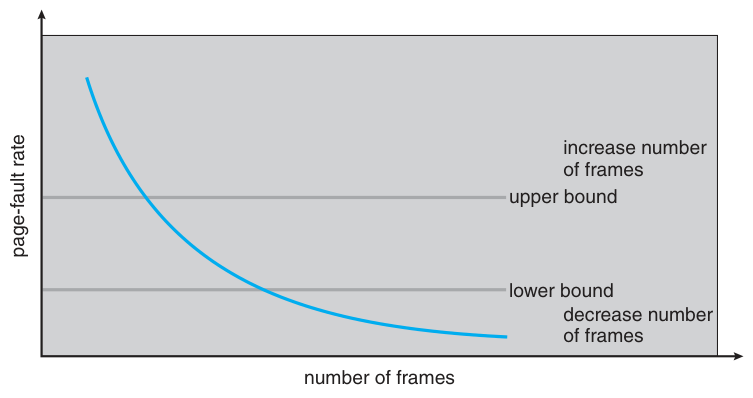
Practice练习
Q1. (Calculation) Given reference string 1 2 1 3 1 2 5 5 5 6 5 6 6 7 6 7 7 7 (times 1 to 18) and window \(\Delta=6\), compute the working set and its size at \(t=6, 9, 12, 14, 18\). At which time does frame demand peak, and why?Q1.（计算）已知引用串 1 2 1 3 1 2 5 5 5 6 5 6 6 7 6 7 7 7（时刻 1 至 18）与窗口 \(\Delta=6\)，求 \(t=6, 9, 12, 14, 18\) 时的工作集及大小。需求在何时达到峰值，为什么？
Answer
Evaluating the last 6 references ending at each \(t\):截取各时刻对应的最近 6 次引用：
- \(t=6\):
1 2 1 3 1 2→ \(\{1,2,3\}\), \(\text{WSS}=3\).\(t=6\)：1 2 1 3 1 2→ \(\{1,2,3\}\)，\(\text{WSS}=3\)。 - \(t=9\):
3 1 2 5 5 5→ \(\{1,2,3,5\}\), \(\text{WSS}=4\).\(t=9\)：3 1 2 5 5 5→ \(\{1,2,3,5\}\)，\(\text{WSS}=4\)。 - \(t=12\):
5 5 5 6 5 6→ \(\{5,6\}\), \(\text{WSS}=2\).\(t=12\)：5 5 5 6 5 6→ \(\{5,6\}\)，\(\text{WSS}=2\)。 - \(t=14\):
5 6 5 6 6 7→ \(\{5,6,7\}\), \(\text{WSS}=3\).\(t=14\)：5 6 5 6 6 7→ \(\{5,6,7\}\)，\(\text{WSS}=3\)。 - \(t=18\):
6 7 6 7 7 7→ \(\{6,7\}\), \(\text{WSS}=2\).\(t=18\)：6 7 6 7 7 7→ \(\{6,7\}\)，\(\text{WSS}=2\)。
Demand peaks at \(t=9\) (\(\text{WSS}=4\)) because the window overlaps the outgoing locality \(\{1,2,3\}\) with page 5 from the newly entered locality, matching the brief spike in fault rates typical of phase transitions.需求在 \(t=9\) 达到峰值（4 帧），因为此时窗口同时涵盖了尚未褪去的旧局部 \(\{1,2,3\}\) 以及刚进入的新局部页面 5；程序缺页率通常也在阶段过渡处达到高峰。
Q2. (Diagnose) A demand-paged system with multiprogramming degree 4 records three utilization profiles below. For each case, diagnose what is occurring, whether multiprogramming should be raised, and whether paging helps:Q2.（诊断）某多道程序度为 4 的请求调页系统测得下列三组利用率数据。请分析每种情况正发生什么、是否应提高多道程序度以及分页是否有利：
- CPU 13%, paging disk 97%.CPU 13%，换页磁盘 97%。
- CPU 87%, paging disk 3%.CPU 87%，换页磁盘 3%。
- CPU 13%, paging disk 3%.CPU 13%，换页磁盘 3%。
Answer
- Thrashing: Processes are stalled waiting for paging disk I/O (saturated at 97%). Do not raise multiprogramming—lower it (or add RAM). Paging hurts performance due to excessive fault overhead.正在抖动：换页磁盘已完全饱和，进程都在等换页 I/O 而无法运行 CPU。绝对不可继续提高并发度，应挂起进程降并发（或扩容内存）；此时高缺页率拖垮了系统。
- Healthy equilibrium: The CPU stays busy with minimal paging traffic. Keep the current degree rather than pushing memory into overload; paging helps cleanly by letting multiple jobs share RAM with negligible cost.健康均衡状态：CPU 满负荷运转且几乎不换页，并发度已接近最优（再加进程反而可能引发抖动）；分页成功以极低代价让 4 个进程共享主存。
- Underloaded system: Neither CPU nor paging disk is busy (processes are blocked on user/device I/O or too few processes exist). Raise the degree of multiprogramming to boost CPU utilization; paging is not the bottleneck.系统空闲/负载不足：CPU 与换页磁盘均不忙，说明进程在等用户或常规 I/O 或就绪作业太少。应当提高多道程序度以拉升 CPU 利用率，此时分页并非瓶颈。
Q3. (Design) With \(m=64\) available frames, four processes have working-set sizes of 24, 18, 30, and 12. Is the system thrashing, and what action should the OS take?Q3.（设计）现有 \(m=64\) 个可用帧，四个进程的工作集大小分别为 24、18、30 和 12。系统是否抖动？操作系统应采取什么措施？
Answer
Because \(D=24+18+30+12=84>64\), memory is oversubscribed and the system will thrash. The OS must reclaim at least \(84-64=20\) frames by suspending a single process: suspending the 30-page process drops demand to \(D=54\) (10 spare), or suspending the 24-page process leaves \(D=60\) (4 spare), whereas suspending only the 18- or 12-page process leaves \(D=66\) or \(72>64\). Selecting either the 30- or 24-page process (by priority or age), the OS swaps out its dirty pages, frees its frames, and restarts it later when \(D\le m\).总需求 \(D=24+18+30+12=84>64\)，明显超出物理帧上限，系统必然发生抖动。内核必须挂起至少一个拥有 ≥20 帧工作集的进程以回收 \(84-64=20\) 帧以上：挂起 30 页进程得 \(D=54\)（余 10 帧），挂起 24 页进程得 \(D=60\)（余 4 帧），而仅挂起 18 或 12 页进程仍超限（分别为 66 与 72）。内核可按优先级或驻留时间挑出 30 页或 24 页进程挂起、写出脏页并释放其帧，待日后满足 \(D\le m\) 时再恢复运行。
Memory Compression and Kernel Memory ★★内存压缩与内核内存
Goal. Explain why the kernel maintains separate allocators, trace buddy-system splitting and coalescing, calculate objects per slab, and compare both allocators.目标。 解释内核采用独立内存分配器的原因，推演伙伴系统的分割与合并，计算每个 slab 的对象数，并对比两种分配策略。
Memory compression（内存压缩）provides an alternative to disk swapping (especially on swap-less mobile systems): rather than writing pages to slow storage, the OS compresses several inactive frames into a single frame and transparently decompresses a compressed page on its next page-fault access.内存压缩可在无盘交换机制的系统（如移动设备）上替代传统页面换出：系统将若干不活跃物理帧压缩后并入同一帧中，日后进程再次访问触发缺页时再即时解压还原。
Kernel memory itself is managed apart from the user free-frame list for two fundamental reasons:内核内存与用户空闲帧链表彼此独立管理，基于两大原因：
- The kernel repeatedly allocates variable-sized data structures far smaller than a 4-KB page, demanding tight control over internal waste.内核频繁分配尺寸各异且远小于一页（4 KB）的小数据结构，必须严格抑制内部碎片。
- Certain hardware peripherals perform DMA directly against physical RAM and therefore require physically contiguous pages—unlike user pages, which can reside in arbitrary frames.许多外部设备通过 DMA 直接读写物理内存，往往要求多页物理上连续（不同于可分散映射的用户页）。
Step 1: buddy system第 1 步：伙伴系统
Core idea: The buddy system rounds requests up to a power of two and splits blocks into equal halves until the smallest fitting power-of-two block is created.核心思路：伙伴系统将请求向上取整到 2 的幂，并将更大块逐级对半拆分为伙伴块以匹配需求。
The buddy system（伙伴系统）carves physically contiguous power-of-two allocations out of a fixed pool of contiguous page frames:伙伴系统从一整段固定的物理连续内存池中按 2 的幂进行切分与分配：
Allocation and coalescing steps:分配与合并步骤：
- Round request \(r\) up to the nearest power of two \(b\).将请求 \(r\) 向上取整至 2 的幂 \(b\)。
- If no free block of size \(b\) exists, take the smallest larger free block and split it recursively into halves (buddies) until a block of size \(b\) is produced.若当前无 \(b\) 大小的空闲块，取最小的更大空闲块逐级对半拆成伙伴，直到切出 \(b\)。
- Allocate that block.交付所得块。
- On release, if the block's exact twin buddy is also free, coalesce them into one double-sized block and repeat upward as far as possible.释放时若其配对伙伴亦为空闲，立即合并为两倍大块并递归向上尝试继续合并。
For instance, requesting 21 KB from a 256 KB segment splits 256 → 128 + 128 → 64 + 64 → 32 + 32 and assigns one 32 KB block, wasting \(32-21=11\) KB. While buddies merge rapidly when freed, steep power-of-two rounding produces severe internal fragmentation.例如从 256 KB 段请求 21 KB，会依次切分为 128+128、64+64、32+32 并分配其中一个 32 KB 块（内部碎片 \(32-21=11\) KB）。伙伴系统释放合并极快，但向上取整常带来可观的内部浪费。

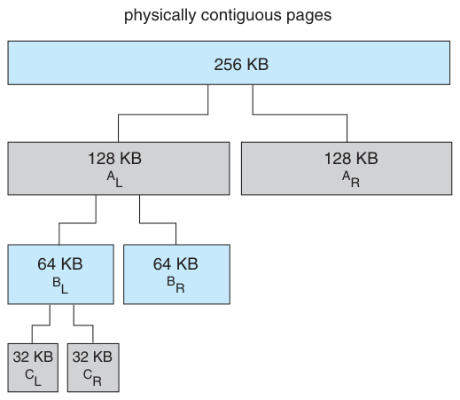
Step 2: slab allocation第 2 步：slab 分配
Core idea: Slab allocation maintains dedicated caches of pre-allocated, exact-size objects for each kernel structure type, achieving fast reuse and zero fragmentation inside objects.核心思路：slab 分配器为每种内核数据结构维护专属对象缓存，按精确尺寸预创建对象并循环复用，消除了对象内部碎片。
A slab（slab）comprises one or more physically contiguous pages, and a cache groups one or more slabs for a single kernel object type (such as process descriptors or file tables), populated ahead of time with initialized objects marked either free or used.一个 slab 由一个或多个物理连续的页构成；每种特定内核结构（如进程描述符、文件对象）各自对应一个由若干 slab 组成的缓存（cache），里面预先构造好了定长对象并标记为空闲或已用。
Each slab is classified as full (no free objects), partial (mix of used and free), or empty (all free). On allocation, the slab allocator checks partial slabs first, then empty slabs, and allocates a fresh slab from contiguous physical pages only if none remain; freed objects simply return to their slab marked free and remain ready for immediate reuse with zero object-level fragmentation.每个 slab 处于全满、部分使用或全空三种状态之一。分配时优先从部分使用的 slab 中取用空闲对象，其次取全空 slab，仅当无可用对象时才向系统申领连续物理页新建 slab；对象释放后只重置为空闲态留作高速复用，不产生任何对象内部碎片。
| Dimension对比维度 | Buddy system伙伴系统 | Slab allocationslab 分配 |
|---|---|---|
| Allocation unit分配粒度 | Power-of-2 block from a contiguous segment连续段中按 2 的幂切分的块 | Exact fixed-size object for a specific structure针对某内核结构的精确尺寸对象 |
| Internal fragmentation内部碎片 | Present, approaching 50% in worst case存在，最坏接近 50% | None inside objects (only minor slab-tail slack)对象内零碎片 |
| Primary strength核心优势 | Fast recursive coalescing of adjacent buddies相邻伙伴释放时快速合并大块 | Zero object waste and instant pre-initialized reuse空间零浪费且省去反复构造/析构开销 |
Practice练习
Q1. (Trace) A buddy system manages a 256-KB segment, always choosing the lowest-addressed free block of the required size. Given sequential requests A \(=21\) KB, B \(=12\) KB, C \(=40\) KB, and D \(=9\) KB:Q1.（手工演算）某伙伴系统管理一段 256 KB 内存，始终优先选择低地址空闲块。依次收到请求 A \(=21\) KB、B \(=12\) KB、C \(=40\) KB 和 D \(=9\) KB：
- Give the allocated block size and start offset of each request.写出各请求分得的块大小与起始地址。
- Compute total internal fragmentation.计算总内部碎片。
- Trace coalescing as blocks are released in order B, D, A, C.按 B、D、A、C 的顺序释放，演示合并过程。
Answer
- A (21 KB → 32 KB at 0): 256 splits into 128+128, 128 splits into 64+64, 64 splits into 32+32; A takes 0–31. B (12 KB → 16 KB at 32): free 32 at offset 32 splits into 16+16; B takes 32–47. C (40 KB → 64 KB at 64): C takes the free 64 KB block at 64–127. D (9 KB → 16 KB at 48): D takes the remaining 16 KB buddy at 48–63 (leaving 128 KB at 128–255 untouched).A（21 KB → 位于 0 的 32 KB 块）：256 依次拆为 128+128、64+64、32+32，A 占用 0–31；B（12 KB → 位于 32 的 16 KB 块）：将 32 处空闲 32 KB 拆成 16+16，B 占用 32–47；C（40 KB → 位于 64 的 64 KB 块）：C 直接占用 64–127；D（9 KB → 位于 48 的 16 KB 块）：D 占用 48–63（位于 128 的 128 KB 块仍空闲）。
- Internal waste: A \((32-21)=11\), B \((16-12)=4\), C \((64-40)=24\), D \((16-9)=7\) → total 46 KB.各块浪费分别为 11、4、24、7 KB，总内部碎片 46 KB。
- Free B (32, 16 KB): buddy D (at 48) is still allocated, so no merge. Free D (48, 16 KB): merges with free buddy at 32 into a 32-KB block at 32 (its buddy A at 0 is busy). Free A (0, 32 KB): merges with the 32-KB block at 32 into 64 KB at 0 (its buddy C at 64 is busy). Free C (64, 64 KB): merges with 64 KB at 0 into 128 KB at 0, which finally merges with free 128 KB at 128 to restore the full 256 KB segment.释放 B：伙伴 D 未释放，暂不合并；释放 D：立即与 32 处块合为 32–63 的 32 KB 块（其伙伴 A 仍占用）；释放 A：与 32 处 32 KB 块合为 0–63 的 64 KB 块（伙伴 C 仍占用）；释放 C：先合为 0–127 的 128 KB 块，再与 128–255 合并恢复完整的 256 KB 连续内存。
Q2. (Calculation) A slab cache stores 3-KB kernel objects in slabs composed of three 4-KB pages.Q2.（计算）某 slab 缓存用三个 4 KB 页组成一个 slab，用于存放 3 KB 的内核对象。
- How many objects fit per slab?每个 slab 可容纳几个对象？
- If each slab instead used only two pages, how many objects would fit and how much space would remain?若每个 slab 仅由两页构成，可放几个对象，剩余多少空间？
- Suppose the cache contains three slabs—slab 1 full, slab 2 with one free object, and slab 3 empty—and six allocation requests arrive back-to-back. Which slab serves each request?假设现有 3 个 slab：slab 1 全满，slab 2 余 1 个空闲对象，slab 3 全空；连续到来 6 次分配请求，各由哪个 slab 满足？
Answer
- \(\lfloor 12/3\rfloor=4\) objects, with 0 bytes left over.\(\lfloor 12/3\rfloor=4\) 个对象，无剩余空间。
- \(\lfloor 8/3\rfloor=2\) objects, leaving \(8-6=2\) KB (25% of the slab) unused.\(\lfloor 8/3\rfloor=2\) 个对象，末尾剩余 2 KB（占 slab 总容量 25%）。
- Request 1 takes the remaining free object in partial slab 2 (which becomes full). Requests 2–5 consume all 4 objects in empty slab 3 (partial after request 2, full after request 5). Request 6 finds all existing slabs full, so the allocator requests contiguous pages from the kernel pool to create a new slab (slab 4) and allocates from it.请求 1 取走部分使用的 slab 2 中仅剩的空闲对象（随后变满）；请求 2–5 依次消耗原为空的 slab 3 中的 4 个对象（请求 2 后变部分使用，请求 5 后全满）；请求 6 时现有 slab 全部占满，分配器向内核申请连续物理页新建 slab 4 予以满足。
Paging Design Issues and Operating-System Examples ★★分页的设计问题与操作系统实例
Goal. Calculate the net gain of prepaging and TLB reach, weigh the trade-offs of page size, show how loop order changes page-fault counts, and describe how Linux, Windows, and Solaris approximate LRU.目标。 计算预调页收益与 TLB 覆盖范围，权衡页面大小的影响因素，分析程序结构对缺页次数的影响，并说明 Linux、Windows 与 Solaris 的近似 LRU 策略。
Step 1: prepaging第 1 步：预调页
Core idea: Prepaging loads predicted pages in bulk before they are referenced, saving I/O only when a high fraction of those pages are actually used.核心思路：预调页在页面被首次引用前批量预读入内存以减少冷启动缺页；只有绝大多数预调页确实被用到时才净赚不亏。
Rather than faulting in one page at a time under pure demand paging, prepaging（预调页）brings multiple related pages into RAM together—such as reloading a swapped-out process's saved working set upon resumption. It saves fault overhead if most preloaded pages are accessed, but wastes disk bandwidth and frames if they sit unused.相比纯按需调页一次只载入一页，预调页会在一次操作中预取多页（例如挂起进程恢复时直接装入其上次记录的工作集）。若预取页命中率高即可省去大量缺页开销，反之则会浪费宝贵内存帧与磁盘 I/O。
Step 2: page size第 2 步：页大小
Architectures choose page sizes as powers of two ranging from 4 KB up to several megabytes because opposing hardware and locality pressures make any single size a compromise:页大小通常取 2 的幂（常见 4 KB 至数 MB），因为多种系统因素相互牵制，并无绝对最优值：
| Factor考量因素 | Favors倾向 | Reason原因 |
|---|---|---|
| Page-table size页表开销 | Larger pages大页 | A 4-MB space requires 4,096 entries with 1-KB pages versus only 512 entries with 8-KB pages.4 MB 地址空间用 1 KB 页需 4,096 个表项，用 8 KB 页只需 512 个。 |
| Internal fragmentation内部碎片 | Smaller pages小页 | On average half of each process's final page is wasted (256 B for 512-B pages vs. 4,096 B for 8-KB pages).每段末尾平均浪费半页空间（512 B 页平均浪费 256 B，8 KB 页浪费 4,096 B）。 |
| Disk I/O latency磁盘 I/O 效率 | Larger pages大页 | Seek and rotational latency (~8 ms) dwarf transfer time (0.01 ms per 512 B at 50 MB/s), so reading one 1,024-B page takes 8.02 ms versus 16.02 ms for two separate 512-B transfers.寻道与旋转延迟（约 8 ms）远超数据传输入时长（50 MB/s 下传 512 B 仅 0.01 ms）；读一个 1,024 B 页耗时 8.02 ms，分两次读 512 B 页却需 16.02 ms。 |
| Locality precision局部性分辨率 | Smaller pages小页 | Fine-grained pages load only actively needed code/data (e.g., 100 KB vs. 200 KB when a 200-KB job uses half its space).小页只载入真正活跃的字节（200 KB 进程若只用一半，细粒度调页只需 100 KB，超大单页却要载入整 200 KB）。 |
| Page-fault frequency缺页次数 | Larger pages大页 | A 200-KB workload faults once with a 200-KB page instead of 102,400 times with tiny pages, avoiding repeated trap and replacement overhead.同一 200 KB 程序用超大页仅缺页 1 次，若页极小则会频繁触发成千上万次中断、调度与置换开销。 |
| TLB reachTLB 覆盖范围 | Larger pages大页 | \(\text{Reach}=\text{entries}\times\text{page size}\).覆盖范围 = 表项数 × 页大小，大页能成倍扩展可高速映射的内存总量。 |
Step 3: TLB reach第 3 步：TLB 覆盖范围
TLB reach（TLB 覆盖范围）measures how much virtual memory the TLB can translate without missing into main-memory page tables; keeping a process's active working set inside TLB reach dramatically cuts translation latency.TLB 覆盖范围衡量单靠 TLB 就能直接完成映射而不必查主存页表的内存总量；只要工作集落在该范围内，绝大多数访存就无需额外页表开销。
TLB reach can be expanded either by adding expensive associative TLB entries or by supporting larger (or multiple) page sizes.扩大覆盖范围主要有两条路径：扩充成本高昂的相联 TLB 表项，或者支持大页与多页大小混合映射。
Step 4: program structure and page locking第 4 步：程序结构与页锁定
Code layout and data access patterns strongly govern virtual memory performance. Consider a \(128\times 128\) integer array stored in row-major order across 128-word pages (so each row fills one page), executed with fewer than 128 physical frames:代码编写与数据结构访问顺序对缺页率影响悬殊。假设一个 \(128\times 128\) 的整型矩阵按行主序存放，每页 128 字（每行恰占一页），且系统可用帧少于 128 个：
Page locking (pinning) prevents critical frames—such as kernel pages or DMA I/O buffers currently undergoing device transfer—from being chosen as replacement victims by setting a lock bit on those frames until I/O completes.页锁定通过在物理帧上设置锁定位，防止内核核心页或正在执行 DMA 传输的 I/O 缓冲区页在传输期间被置换算法误挑为牺牲页。
Step 5: operating-system examples第 5 步：操作系统实例
Modern operating systems combine demand paging, copy-on-write, and clock-inspired LRU approximations tailored to low overhead:现代主流操作系统普遍结合请求调页、写时复制以及低开销的类时钟近似 LRU 算法：
- Linux: Uses global replacement via two lists (active and inactive). Referenced pages stay on or advance to the tail of the active list while access bits are periodically cleared, allowing unreferenced pages to drift onto the inactive list where the
kswapddaemon reclaims them when free RAM runs low.Linux：采用全局置换与双链表（活动链表与非活动链表）。被频繁引用的页保留在活动链表尾部，内核定期清零访问位让冷页逐渐滑入非活动链表；当空闲内存偏低时，由守护进程kswapd扫描非活动链表回收页面。 - Windows 10: Uses demand paging with clustering (fetching neighboring pages alongside each fault) and manages memory with working-set trimming, reclaiming frames from processes exceeding their minimum working-set bounds when memory pressure builds.Windows 10：采用带聚簇预读的请求调页（缺页时顺便载入邻近页面）；当空闲内存紧张时通过工作集修剪机制从配额高于最小工作集的进程中回收页面。
- Solaris: When free memory falls below
lotsfree(typically 1/64 of RAM), the pageout daemon sweeps memory using a two-handed clock: the front hand clears reference bits, and the trailing hand frees any frame whose reference bit remains 0 when reached.Solaris：当空闲内存低于阈值lotsfree（通常为总内存的 1/64）时，换出进程启动双指针时钟算法：前指针负责清零引用位，后指针间隔一段距离随后检查，若引用位仍为 0 则回收该页。
Practice练习
Q1. (Calculation) A TLB holds 128 entries and pages are 4 KB.Q1.（计算）某 TLB 拥有 128 个表项，页大小为 4 KB。
- What is the TLB reach?TLB 覆盖范围是多少？
- A program's working set is 6 MB: how many TLB entries would cover it, and how can TLB reach be increased?某程序工作集为 6 MB，需要多少个表项才能全部覆盖？如何扩大覆盖范围？
- What is the reach using 2-MB huge pages, and what trade-offs does this bring?若改用 2 MB 大页，覆盖范围是多少？有哪些缺点？
Answer
- Reach: \(128\times 4\text{ KB}=512\text{ KB}\).覆盖范围：\(128\times 4\text{ KB}=512\text{ KB}\)。
- Coverage gap: \(6\text{ MB}/4\text{ KB}=1{,}536\) entries—12× the TLB capacity—forcing frequent page-table walks. Reach can grow either by adding associative TLB entries (expensive in hardware/power) or by supporting larger or multiple page sizes.需求缺口：\(6\text{ MB}/4\text{ KB}=1{,}536\) 项（达 TLB 容量的 12 倍），导致大量访问穿透去查内存页表。扩大覆盖范围可通过扩增相联 TLB 表项（硬件昂贵、功耗大）或启用大页/多页大小混合机制实现。
- 2-MB pages: Reach jumps to \(128\times 2\text{ MB}=256\text{ MB}\). Drawbacks include heavier internal fragmentation, larger page-in transfers, stricter contiguous physical frame requirements, and potential software TLB management to juggle mixed page sizes.2 MB 大页方案：覆盖范围跃升至 \(128\times 2\text{ MB}=256\text{ MB}\)；缺点是内部碎片放大、单次调页传输开销加重、要求大段连续物理内存，且多页混排可能增加 TLB 管理复杂度。
Q2. (Calculation) A row-major array A[100][100] starts at address 200 in a system with 200-word pages. The program occupies page 0 (addresses 0–199) in 1 of 3 physical frames, leaving 2 initially empty data frames under LRU replacement. How many page faults occur for each loop?Q2.（计算）按行主序存放的数组 A[100][100] 起始于地址 200，页大小为 200 字。程序代码占据第 0 页（地址 0–199）并常驻 3 个帧中的第 1 个帧，另两个数据帧初始为空并采用 LRU 置换。以下两种循环各产生多少次缺页？
- Outer loop over
j, inner overi(A[i][j] = 0).外层j，内层i（A[i][j] = 0）。 - Outer loop over
i, inner overj(A[i][j] = 0).外层i，内层j（A[i][j] = 0）。
Answer
Each 100-word row uses half a 200-word page, so two rows share one page and the array spans 50 pages (pages 1–50), competing for only 2 data frames:每行 100 字恰占半页（200 字/页），故两行共占 1 页，数组总计占用页 1 至页 50（共 50 页），竞争仅有的 2 个数据帧：
- Column-major order (outer
j): For each fixed columnj,itouches pages \(1, 1, 2, 2, \dots, 50, 50\)—the first touch in each two-row pair faults and the immediate second row hits, but with only 2 data frames LRU evicts every earlier page before columnj+1begins, causing 50 faults per column × 100 columns \(=5{,}000\) faults.按列遍历（外层j）：固定一列j时i依次访问页 \(1, 1, 2, 2, \dots, 50, 50\)，同页两行中的前一次访问缺页、紧随的后一次命中，但因仅 2 个数据帧，每遍历完一列前面所有页早已被 LRU 挤出，导致每列缺页 50 次，总计 \(50\times 100=5{,}000\) 次缺页。 - Row-major order (outer
i): Each page completes all 200 sequential element accesses before moving on, incurring just 50 cold-start faults.按行遍历（外层i）：每加载一页即顺序写满 200 个元素再换下一页，总共仅发生 50 次缺页。
Terms to recognize ★需要认识的术语
| Term术语 | Key takeaway核心释义 |
|---|---|
| Major and minor fault主缺页与次缺页 | A major fault requires disk I/O to load an absent page; a minor fault resolves cleanly in RAM (updating mappings for an already-resident page) without disk I/O.主缺页需从磁盘读入缺失页；次缺页所需页其实已在内存中（仅缺映射），改页表即可解决而无磁盘 I/O。 |
| Zero-fill-on-demand按需填零 | Wipes freshly allocated frames with zeros before mapping them so a process never reads stale data left by prior owners.将新分配帧在映射给进程前全部清零，防止残留前任进程的敏感旧数据。 |
| Reaper and OOM killer页面回收器与 OOM 杀手 | Background reapers reclaim frames when free memory dips; as a last resort, Linux invokes the OOM killer to terminate the highest-scoring memory-hogging process.内存紧张时回收器先行搜寻回收空闲页；山穷水尽时 Linux 启动 OOM 杀手强制终止得分最高的耗内存进程自救。 |
| Inverted page table and paging反置页表与外置页表 | With an inverted page table holding only resident frames, a separate per-process external table stores backing-store addresses and is consulted only upon page faults.反置页表仅记录已驻留帧，缺页时需查询各进程各自维护的外置页表以定位页面在磁盘上的换入位置。 |
| SLAB, SLOB, SLUB | Evolution of Linux kernel object allocators: classic SLAB (since 2.2), lightweight SLOB for embedded targets, and streamlined SLUB (default since 2.6.24) with minimal metadata overhead.Linux 内核对象分配器演进：经典 SLAB（2.2 起）、面向嵌入式极简系统的 SLOB，以及元数据开销更低的默认分配器 SLUB（2.6.24 起）。 |
Exam-style questions考试题型练习
Q1. (Trace, 12 marks) A process references pages 7, 2, 3, 1, 2, 5, 3, 4, 6, 7, 7, 1, 0, 5, 4, 6, 2, 3, 0, 1 with 3 initially empty frames:Q1.（手工演算，12 分）某进程在 3 个初始空闲帧下依次访问页面 7, 2, 3, 1, 2, 5, 3, 4, 6, 7, 7, 1, 0, 5, 4, 6, 2, 3, 0, 1：
- Trace FIFO and state total page faults (3 marks).推演 FIFO 并统计总缺页次数（3 分）。
- Trace LRU and state total page faults (3 marks).推演 LRU 并统计总缺页次数（3 分）。
- Trace OPT and state total page faults (3 marks).推演 OPT 并统计总缺页次数（3 分）。
- Compare all three results, compute the hit ratio of the best algorithm, and state whether adding a 4th frame could ever raise faults under each policy (3 marks).对比三种结果，给出最优算法命中率，并判断在各算法下增至 4 帧是否可能使缺页增加（3 分）。
Answer
Notation: page(x) denotes loading page while evicting victim x.记法：page(x) 表示调入 page 并淘汰牺牲页 x。
- FIFO (oldest arrived victim): faults on
7, 2, 3(initial fills),1(7), 5(2), 4(3), 6(1), 7(5), 1(4), 0(6), 5(7), 4(1), 6(0), 2(5), 3(4), 0(6), 1(2); only2(pos. 5),3(pos. 7), and7(pos. 11) hit. Total: 17 faults.FIFO（淘汰最早进入者）：缺页加载7, 2, 3（冷填）、1(7), 5(2), 4(3), 6(1), 7(5), 1(4), 0(6), 5(7), 4(1), 6(0), 2(5), 3(4), 0(6), 1(2)；仅第 5 步2、第 7 步3与第 11 步7命中。总计 17 次缺页。 - LRU (longest unused victim): faults on
7, 2, 3,1(7), 5(3), 3(1), 4(2), 6(5), 7(3), 1(4), 0(6), 5(7), 4(1), 6(0), 2(5), 3(4), 0(6), 1(2); only2(pos. 5) and7(pos. 11) hit. Total: 18 faults.LRU（淘汰最久未用者）：缺页加载7, 2, 3、1(7), 5(3), 3(1), 4(2), 6(5), 7(3), 1(4), 0(6), 5(7), 4(1), 6(0), 2(5), 3(4), 0(6), 1(2)；仅第 5 步2与第 11 步7命中。总计 18 次缺页。 - OPT (farthest next-use victim): faults on
7, 2, 3,1(7), 5(2), 4(3), 6(4), 7(6), 0(7), 4(5), 6(4), 2(6), 3(2); 7 references hit. Total: 13 faults.OPT（淘汰未来最晚用到者）：缺页加载7, 2, 3、1(7), 5(2), 4(3), 6(4), 7(6), 0(7), 4(5), 6(4), 2(6), 3(2)；共有 7 次命中。总计 13 次缺页。 - Comparison & 4th frame: OPT (13) \(<\) FIFO (17) \(<\) LRU (18). OPT achieves hit ratio \(7/20=35\%\) (LRU slightly trails FIFO here due to poor string locality—only OPT is guaranteed minimal across all strings). Because OPT and LRU are stack algorithms, a 4th frame can never raise their faults (with 4 frames they drop to 11 and 17); FIFO is not a stack algorithm and can exhibit Belady's anomaly in general, though on this particular sequence it stays at 17 faults.对比与 4 帧情况：OPT (13) \(<\) FIFO (17) \(<\) LRU (18)。OPT 命中率为 \(7/20=35\%\)（本串局部性较差故 LRU 略逊于 FIFO，仅 OPT 恒最优）。OPT 与 LRU 均属栈式算法，增至 4 帧绝不会使缺页增多（4 帧时分别降至 11 与 17 次）；而 FIFO 非栈式算法，一般情形下可能触发 Belady 异常（不过在此序列上恰仍为 17 次）。
Q2. (Demand paging and EAT, 10 marks) A paged system has 100-ns memory-access time with a single-level page table in RAM, and a 10-ns TLB with a 90% hit ratio. Servicing a fault takes 8 ms for a clean victim and 20 ms for a modified victim; 25% of victims are modified, and the fault rate is \(p=2\times 10^{-6}\) per access.Q2.（请求调页与 EAT，10 分）某分页系统访存耗时 100 ns，单级页表位于主存中，TLB 查找耗时 10 ns 且命中率 90%。若牺牲页干净则缺页处理耗时 8 ms，脏页耗时 20 ms（脏页占比 25%），且单次引用缺页率为 \(p=2\times 10^{-6}\)：
- Describe what hardware and OS do when an access meets an invalid PTE (4 marks).描述访存遭遇无效页表项时硬件与操作系统的动作（4 分）。
- Compute the no-fault EAT \(\text{EAT}_0\) (2 marks).计算无缺页时的有效访问时间 \(\text{EAT}_0\)（2 分）。
- Compute mean fault service time and overall EAT (3 marks).计算平均缺页服务时间及整体 EAT（3 分）。
- Find the maximum fault rate for which EAT does not exceed \(1.5\times \text{EAT}_0\) (1 mark).求使整体 EAT 不超过 \(1.5\,\text{EAT}_0\) 的最大缺页率（1 分）。
Answer
Hardware & OS response: On a TLB miss, the MMU reads the PTE, finds the invalid bit, and traps to the OS while saving process state. The OS then executes five steps:硬件与系统协作：TLB 未命中后硬件查页表发现有效位为 0，保存现场并陷入内核，随后操作系统依次完成：
- Check the PCB internal table; terminate the process if the access is illegal.核查 PCB 内部表判定访问是否合法，非法则终止进程；
- Obtain a free frame (or pick a victim, writing it to swap first if dirty).分配空闲帧（无空闲则选牺牲页，若脏则先写回磁盘）；
- Schedule a disk read into that frame and block the faulting process.调度磁盘读取目标页入帧，并阻塞当前进程让出 CPU；
- On disk-I/O completion, set the frame number and valid bit in the PTE and mark the process ready.磁盘 I/O 完成中断后更新页表帧号与有效位，置进程为就绪；
- Restore saved registers and restart the trapped instruction.恢复现场并重启先前中断的指令。
No-fault EAT: \(\text{EAT}_0=0.9\,(10+100)+0.1\,(10+100+100)=99+21=120\text{ ns}\).无缺页 EAT：\(\text{EAT}_0=0.9\,(10+100)+0.1\,(10+100+100)=99+21=120\text{ ns}\)。
Overall EAT: \(T_{\text{fault}}=0.75\times 8+0.25\times 20=11\text{ ms}=11{,}000{,}000\text{ ns}\), so \(\text{EAT}=(1-2\times 10^{-6})\cdot 120+2\times 10^{-6}\cdot 11{,}000{,}000\approx 120+22=142\text{ ns}\) (~18% slower than 120 ns).含缺页 EAT：\(T_{\text{fault}}=0.75\times 8+0.25\times 20=11\text{ ms}=11{,}000{,}000\text{ ns}\)，故 \(\text{EAT}=(1-2\times 10^{-6})\cdot 120+2\times 10^{-6}\cdot 11{,}000{,}000\approx 120+22=142\text{ ns}\)（比 120 ns 慢约 18%）。
Max rate for \(1.5\,\text{EAT}_0=180\text{ ns}\): \(120+p\,(11{,}000{,}000-120)\le 180\implies p\le 60/10{,}999{,}880\approx 5.5\times 10^{-6}\).不超过 \(1.5\,\text{EAT}_0=180\text{ ns}\) 的最大缺页率：\(120+p\,(11{,}000{,}000-120)\le 180\implies p\le 60/10{,}999{,}880\approx 5.5\times 10^{-6}\)。
Q3. (Thrashing and working sets, 12 marks) A multiprogrammed system using global replacement admits another process whenever CPU utilization falls below 40%. After a batch job starts, CPU utilization drops to 12% while the paging disk reaches 96% utilization.Q3.（抖动与工作集，12 分）某采用全局置换的多道系统规定 CPU 利用率低于 40% 即接纳新进程。一批批处理作业启动后，CPU 利用率跌至 12% 而换页磁盘忙率升至 96%：
- Explain what is occurring and why admitting more processes backfires (4 marks).解释当前现象及继续接纳进程为何雪上加霜（4 分）。
- With \(m=70\) frames and four processes having working-set sizes 25, 30, 20, and 15, is the system thrashing? Which single suspended process fixes it? (3 marks)若可用帧 \(m=70\) 且四进程工作集分别为 25、30、20、15，是否抖动？挂起哪一个进程即可恢复？（3 分）
- How does a PFF policy with bounds 0.05 and 0.01 respond to fault rates of 0.07 and 0.004? (3 marks)若 PFF 上下界为 0.05 与 0.01，测得缺页率为 0.07 与 0.004 时分别作何处理？（3 分）
- Why cannot local replacement alone cure thrashing? (2 marks)为何单靠局部置换无法根治抖动？（2 分）
Answer
- Thrashing feedback loop: The aggregate working set exceeds RAM, so processes fault incessantly and queue at the saturated paging disk (96%), emptying the CPU ready queue (12% utilization). When the scheduler misinterprets low CPU activity as spare capacity and admits more jobs, global replacement steals frames from active processes, creating even more faults and collapses throughput further. The OS must lower the degree of multiprogramming.抖动恶性循环：进程组的工作集总和超出物理内存，致使不断缺页并堵在已饱和（96%）的换页磁盘队列上，CPU 就绪队列空置（利用率 12%）。若调度器误将其当成空闲而继续加进进程，全局置换只会导致各进程被进一步抽走物理帧、缺页更加恶化；正途是挂起进程降低多道程序度。
- Demand check: \(D=25+30+20+15=90>70\), so the system is thrashing and needs to free at least \(90-70=20\) frames. Suspending any single process with \(\text{WSS}\ge 20\) (the 20-, 25-, or 30-page process; suspending the 15-page one leaves \(D=75>70\)) resolves it—suspending the 20-page process makes \(D=70=m\) fit exactly.工作集核算：\(D=25+30+20+15=90>70\)，处于抖动状态，须释放至少 \(90-70=20\) 帧。因此任意挂起 20、25 或 30 页进程均可解决（仅挂起 15 页进程仍余 \(D=75>70\)）；挂起 20 页进程恰使 \(D=70=m\)。
- PFF response: At \(0.07>0.05\) (above upper bound), grant the process another free frame—or suspend a process if none are free. At \(0.004<0.01\) (below lower bound), reclaim one surplus frame from the process.PFF 动作：0.07 高于上界 0.05 时，为其追加一个空闲帧（若无空闲帧则挂起一个进程腾帧）；0.004 低于下界 0.01 时，从该进程收回一个多余帧。
- Limits of local replacement: Although it stops thrashing jobs from stealing neighbors' frames, the thrashing jobs still flood the shared paging-device queue, inflating fault-service times and slowing every well-behaved process.局部置换局限性：它虽防止了跨进程抢帧，但处于抖动的进程依旧会大量排队占用共同的换页磁盘通道，推高每次缺页处理时延，从而同样拖慢其他正常进程。
Q4. (Allocation and replacement scope, 8 marks) Of 128 frames, the OS reserves 35 and shares the remaining 93 among three processes of 20, 60, and 120 pages, with a minimum of 3 frames per process.Q4.（分配与置换范围，8 分）系统共 128 帧，内核保留 35 帧，其余 93 帧分配给 20 页、60 页与 120 页的三个进程（架构要求至少 3 帧/进程）：
- Compute the equal and proportional allocations (3 marks).计算平均分配与按比例分配结果（3 分）。
- What happens if a process gets fewer frames than the architectural minimum? (2 marks)若分得帧数低于体系结构下限会如何？（2 分）
- Compare global and local replacement on throughput and predictability (3 marks).从吞吐量与可预测性对比全局与局部置换（3 分）。
Answer
- Equal: \(\lfloor 93/3\rfloor=31\) frames each (11 frames wasted on the 20-page process). Proportional: \(S=200\) gives \(a_1=\lfloor 93\times 20/200\rfloor=9\), \(a_2=\lfloor 93\times 60/200\rfloor=27\), and \(a_3=\lfloor 93\times 120/200\rfloor=55\) (91 total, 2 spare), all above the minimum of 3.平均分配：每进程 \(93/3=31\) 帧（20 页进程至多用 20 帧，浪费 11 帧）。按比例分配：\(S=200\)，得 \(a_1=\lfloor 93\times 20/200\rfloor=9\)、\(a_2=\lfloor 93\times 60/200\rfloor=27\)、\(a_3=\lfloor 93\times 120/200\rfloor=55\)（共 91 帧，余 2 帧），均满足最低 3 帧要求。
- Below minimum: A single instruction can touch up to that minimum count of distinct pages simultaneously; with fewer frames, restarting after a fault simply faults again, trapping the instruction in an endless loop.低于下限后果：单条指令可能同时访问多达下限数量的不同页；帧数不足时每次重启缺页指令都会挤掉另一必需页，陷入原地死循环。
- Global vs. local: Global replacement pools all frames to deliver higher memory utilization and throughput, but ties a process's runtime to other workloads; local replacement keeps performance predictable and isolates frame stealing, though unused frames in idle processes may go unshared.全局 vs. 局部：全局置换灵活调配全内存帧以换取更高吞吐量，但单个进程运行时延易受并发任务波动影响；局部置换可保障性能可预测并隔离抢帧，但可能让空闲进程的富裕帧闲置。
Q5. (Short answers, 10 marks)Q5.（简答题，10 分）
- For each combination below, state whether it can occur on a virtual-memory reference and give a one-line reason: TLB miss without page fault; TLB miss with page fault; TLB hit without page fault; TLB hit with page fault (4 marks).判断下列 4 种组合在虚拟地址访存中能否发生并一句话说明理由：TLB 未命中且无缺页；TLB 未命中且缺页；TLB 命中且无缺页；TLB 命中且缺页（4 分）。
- A parent with 2,000 resident pages forks a child that writes to 60 pages before exiting. Compare total page copies under copy-on-write vs. a plain copying
fork()(3 marks).拥有 2,000 个驻留页的父进程调用fork()后，子进程仅修改了其中 60 页即退出。对比写时复制与普通复制式fork()产生的页面拷贝数（3 分）。 - The kernel requests 70 KB from a buddy system managing an empty 256-KB segment. Give the allocated block size, internal fragmentation, and release behavior (3 marks).内核向管理 256 KB 空段的伙伴系统申请 70 KB。写出分得块大小、内部碎片与释放行为（3 分）。
Answer
- TLB miss, no fault: Possible—the page is resident in RAM, so its valid PTE is fetched from memory and loaded into the TLB.TLB 未命中且无缺页：可能——页已驻留主存，查主存页表即可取回有效映射并填入 TLB。
- TLB miss, page fault: Possible—the PTE is marked invalid, so the OS must load the page from disk.TLB 未命中且缺页：可能——页表项无效，操作系统须从磁盘调入该页。
- TLB hit, no fault: Possible—the common fast-path translation cached in the TLB.TLB 命中且无缺页：可能——TLB 缓存命中，即最常见的快速通道。
- TLB hit, page fault: Impossible—the TLB caches only valid resident translations and is invalidated upon page eviction.TLB 命中且缺页：不可能——TLB 仅缓存有效驻留页的映射，且淘汰页面时对应 TLB 项会同步失效。
- Copy counts: Copy-on-write duplicates only the 60 modified pages (leaving 1,940 shared), whereas a plain copying
fork()eagerly copies all 2,000 pages at creation.拷贝页数：写时复制仅需拷贝被修改的 60 页（其余 1,940 页全程共享）；传统复制式fork()会在创建瞬间直接拷贝全部 2,000 页。 - Buddy allocation: \(70\) KB rounds up to a \(b=128\text{ KB}\) block (splitting the 256-KB segment once into two 128-KB buddies). Internal fragmentation is \(128-70=58\text{ KB}\) (~45%). When freed, the 128-KB block coalesces with its idle 128-KB buddy back into the full 256-KB segment.伙伴分配：\(70\) KB 向上取整分配 \(128\text{ KB}\) 块（256 KB 段对半拆分为两块 128 KB 伙伴）；内部碎片为 \(128-70=58\text{ KB}\)（约 45%）；释放时与另一块空闲 128 KB 伙伴重新合并还原为 256 KB 段。
Textbook exercises课后习题
Textbook exercises with answers (43 questions; click to expand)教材习题及答案（共 43 题，点击展开）
E1. (Practice Exercise 10.1) Under what circumstances do page faults occur? Describe the actions taken by the operating system when a page fault occurs.E1.（练习题 10.1）缺页（page fault）会在什么情况下发生？发生缺页时，操作系统需要执行哪些操作步骤？
Answer
A page fault occurs when a process accesses a virtual page whose page-table entry is marked invalid—meaning the page is not currently mapped in main memory—which causes the hardware to trap to the kernel. Under demand paging, this occurs in three situations:当进程访问页表项被标记为无效（即当前未映射到物理主存）的虚拟页时，硬件会触发陷入内核的异常，这就是缺页。在按需调页下，缺页主要由以下三种情形引发：
- First reference: accessing a valid page that has never been loaded into memory.首次访问：访问一个合法但此前从未装入内存的页面。
- Evicted page: accessing a valid page that was previously replaced and currently resides only on the backing store.已淘汰页面：访问一个此前被置换出去、目前仅保存在后备存储器上的合法页面。
- Illegal access: referencing an address outside the process's allocated logical address space.非法访问：引用超出该进程逻辑地址空间范围的无效地址。
OS handling steps:操作系统的处理步骤：
- Trap and save state: The hardware traps to the OS, which saves the user registers and current process state.陷入与保存现场：硬件陷入操作系统，由内核保存用户寄存器及当前进程状态。
- Validate the reference: The OS checks an internal table stored with the PCB to distinguish an illegal access (terminate the process) from a valid page that simply is not resident.检查引用合法性：内核查阅随 PCB 保存的内部表，若为非法引用则直接终止进程；若页面合法，则确认其只是尚未驻留内存。
- Obtain a free frame: The OS allocates a frame from the free-frame list; if none is free, a page-replacement algorithm chooses a victim frame, writes it back to disk if its modify bit is set, and marks its page-table entry invalid.获取空闲帧：内核从空闲帧链表中分配一个帧；若无空闲帧，则由页面置换算法选出牺牲帧，若其修改位已置位则先写回磁盘，并将其页表项标记为无效。
- Schedule disk I/O: The OS issues a disk read to load the missing page into the chosen frame, blocking the faulting process and yielding the CPU to another runnable process.调度磁盘读盘：内核发起磁盘读请求以将缺失页面装入目标帧，同时阻塞当前进程并将 CPU 让给其他就绪进程。
- Update tables on I/O completion: When the disk interrupt arrives, the OS records the new frame number, sets the valid bit in the page table, updates its internal tables, and moves the process back to the ready queue.I/O 完成后更新表项：磁盘中断到达时，内核更新页表中的帧号、置位有效位并刷新内部记录，随后将进程放回就绪队列。
- Restart the instruction: Once rescheduled, the process restores its state and re-executes the faulting instruction, which now completes normally.重启引发缺页的指令：进程再次获得调度后恢复现场，重新执行原先触发缺页的指令，此时该内存访问即可顺利完成。
E2. (Practice Exercise 10.2) Assume that you have a page-reference string for a process with \(m\) frames (initially all empty). The page-reference string has length \(p\), and \(n\) distinct page numbers occur in it. For any page-replacement algorithm, answer the following:E2.（练习题 10.2）假设某进程拥有 \(m\) 个初始全为空的帧，其页引用串长度为 \(p\)，共出现 \(n\) 个不同的页号。对于任意页面置换算法，回答下列问题：
- What is a lower bound on the number of page faults?缺页次数的下界是多少？
- What is an upper bound on the number of page faults?缺页次数的上界是多少？
Answer
- Lower bound: \(n\). Because all frames start empty, the first reference to each of the \(n\) distinct pages inevitably causes a page fault under every algorithm (even OPT). This bound is achieved when \(m \ge n\), since no page ever needs to be evicted; when \(m < n\), evictions force later reloads and raise the fault count above \(n\).下界：\(n\)。由于所有帧最初均为空，无论采用哪种算法（即便是 OPT），\(n\) 个不同页面在首次被访问时都必然触发一次缺页。当 \(m \ge n\) 时，所有页面都能留在内存中而不必淘汰，即可取到该下界；若 \(m < n\)，页面被淘汰后的重新装入将使最小缺页次数高于 \(n\)。
- Upper bound: \(p\). A reference causes at most one page fault, so total faults cannot exceed the string length \(p\). This bound is achieved whenever every access misses—for instance, with \(m = 1\) and no two consecutive references naming the same page, or with LRU running on a cyclic reference string over \(m + 1\) pages.上界：\(p\)。每次内存引用至多触发一次缺页，因此总缺页次数不会超过引用串长度 \(p\)。当每次访问都发生缺页时可取到该上界，例如 \(m = 1\) 且相邻两次引用从不指向同一页，或者在包含 \(m + 1\) 个页面的循环串上运行 LRU。
Hence \(n \le \text{page faults} \le p\) holds for every algorithm.因此，对任意页面置换算法恒有 \(n \le \text{page faults} \le p\)。
E3. (Practice Exercise 10.3) Consider the following page-replacement algorithms: (a) LRU replacement, (b) FIFO replacement, (c) optimal replacement, (d) second-chance replacement. Rank these algorithms on a five-point scale from “bad” to “perfect” according to their page-fault rate. Separate those algorithms that suffer from Belady's anomaly from those that do not.E3.（练习题 10.3）考虑下列页面置换算法：(a) LRU 置换，(b) FIFO 置换，(c) 最优置换（OPT），(d) 第二次机会置换。按缺页率在从“差”到“完美”的五级量表上为它们评级，并区分哪些算法受 Belady 异常影响、哪些不受影响。
Answer
| Rank排名 | Algorithm算法 | Page-fault rate (five-point scale)缺页率（五级量表） | Belady's anomalyBelady 异常 |
|---|---|---|---|
| 1 | Optimal最优 | perfect完美 | no否 |
| 2 | LRU | good好 | no否 |
| 3 | Second chance第二次机会 | fair一般 | yes是 |
| 4 | FIFO | bad差 | yes是 |
Ranking rationale: Optimal (OPT) achieves the fewest possible page faults by evicting the page whose next reference lies farthest in the future, though requiring future knowledge limits it to an offline benchmark. LRU approximates OPT by looking backward and exploiting temporal locality, second-chance refines FIFO with a single reference bit (degenerating to FIFO once all reference bits are set), and pure FIFO ignores access patterns entirely.评级依据：最优置换（OPT）每次淘汰将来最晚才被访问的页，因而能取得理论最少缺页次数，但因需预知未来而仅作理论基准。LRU 借助程序的时间局部性“向后看”来近似 OPT；第二次机会仅用一位引用位粗略改进 FIFO（当所有引用位均为 1 时退化为 FIFO）；纯 FIFO 则完全忽略页面的访问热度。
Belady's anomaly and the stack property: An algorithm never exhibits Belady's anomaly (more frames yielding more faults) if it is a stack algorithm—meaning the set of pages resident with \(m\) frames is always a subset of those resident with \(m + 1\) frames. OPT and LRU satisfy this inclusion property, whereas FIFO and second-chance do not: on 1 2 3 4 1 2 5 1 2 3 4 5, moving from 3 to 4 frames raises FIFO (and second-chance) faults from 9 to 10, while LRU falls from 10 to 8 and OPT falls from 7 to 6.Belady 异常与栈性质：若某种算法属于栈算法——即分配 \(m\) 个帧时的驻留页集合始终是分配 \(m + 1\) 个帧时驻留页集合的子集——则它绝不会出现 Belady 异常（帧数增加反而缺页增多）。OPT 和 LRU 均满足栈性质，而 FIFO 与第二次机会不满足：例如在引用串 1 2 3 4 1 2 5 1 2 3 4 5 上从 3 帧增至 4 帧时，FIFO 与第二次机会的缺页数均从 9 升至 10，而 LRU 从 10 降至 8、OPT 从 7 降至 6。
Note that this ranking assumes typical workloads with locality; on a pathological reference string, FIFO can occasionally outperform LRU.注：上述排序针对具备典型局部性的程序；在个别特殊构造的引用串上，FIFO 的表现也可能偶尔优于 LRU。
E4. (Practice Exercise 10.4) An operating system supports a paged virtual memory. The central processor has a cycle time of 1 microsecond. It costs an additional 1 microsecond to access a page other than the current one. Pages have 1,000 words, and the paging device is a drum that rotates at 3,000 revolutions per minute and transfers 1 million words per second. The following statistical measurements were obtained from the system:E4.（练习题 10.4）某操作系统支持分页虚拟内存。处理器指令周期为 1 μs，若访问当前页以外的页面则额外增加 1 μs。页面大小为 1,000 字；分页设备是一个转速为 3,000 rpm、传输速率为每秒 100 万字的磁鼓。系统测得以下统计数据：
- One percent of all instructions executed accessed a page other than the current page.所有执行指令中有 1% 访问了当前页之外的页面。
- Of the instructions that accessed another page, 80 percent accessed a page already in memory.在访问其他页面的指令中，有 80% 所访问的页面已在内存中。
- When a new page was required, the replaced page was modified 50 percent of the time.当需要装入新页时，被置换出的页面有 50% 曾被修改过。
Calculate the effective instruction time on this system, assuming that the system is running one process only and that the processor is idle during drum transfers.假设系统仅运行单个进程且处理器在磁鼓传输期间处于等待空闲状态，计算该系统的有效指令时间。
Answer
- Drum transfer time: At 3,000 rpm (50 revolutions/s), one revolution takes 20 ms, giving an average rotational latency of 10 ms = 10,000 μs. Transferring 1,000 words at \(10^6\) words/s takes 1 ms = 1,000 μs, so one drum read or write takes 11,000 μs.单次磁鼓传输时间：转速 3,000 rpm（即每秒 50 转）对应每转 20 ms，平均旋转延迟为半圈 10 ms = 10,000 μs；以 \(10^6\) 字/秒传输 1,000 字需 1 ms = 1,000 μs，故单次读或写磁鼓耗时 11,000 μs。
- Mean page-fault service time: Reading the needed page always costs 11,000 μs, and with probability 0.5 the dirty victim must first be written back (another 11,000 μs), so the expected service time is \(11{,}000 + 0.5 \times 11{,}000 = \mathbf{16{,}500}\) μs.平均缺页服务时间：调入目标页固定耗时 11,000 μs，另有 50% 的概率需先写回被修改的牺牲页（再增 11,000 μs），因此平均缺页服务时间为 \(11{,}000 + 0.5 \times 11{,}000 = \mathbf{16{,}500}\) μs。
- Probability-weighted effective instruction time:按概率加权计算有效指令时间：
| Case情形 | Probability概率 | Time时间 |
|---|---|---|
| Instruction stays on the current page访问仍在当前页内 | 0.99 | 1 μs |
| Other page, already in memory访问其他页且已驻留内存 | \(0.01 \times 0.8 = 0.008\) | 2 μs |
| Other page, page fault访问其他页且发生缺页 | \(0.01 \times 0.2 = 0.002\) | 2 μs + 16,500 μs |
\[T_{\text{eff}} = 0.99(1) + 0.008(2) + 0.002(2 + 16{,}500) = 0.99 + 0.016 + 33.004 \approx \mathbf{34.0\ \mu\text{s}}\]
Takeaway: Even though only 0.2% of instructions trigger a page fault, drum I/O inflates instruction time by a factor of 34 and accounts for roughly 97% (33.0 of 34.0 μs) of total execution time.结论：尽管仅有 0.2% 的指令触发缺页，磁鼓 I/O 仍使平均指令时间放大至理想值的 34 倍，并占去总耗时的约 97%（34.0 μs 中的 33.0 μs）。
E5. (Practice Exercise 10.5) Consider the page table for a system with 12-bit virtual and physical addresses and 256-byte pages.E5.（练习题 10.5）考虑某系统的页表，该系统的虚拟地址与物理地址均为 12 位，页面大小为 256 字节。
| Page页号 | Page frame帧号 |
|---|---|
| 0 | – |
| 1 | 2 |
| 2 | C |
| 3 | A |
| 4 | – |
| 5 | 4 |
| 6 | 3 |
| 7 | – |
| 8 | B |
| 9 | 0 |
The list of free page frames is D, E, F (with D at the head of the list, E second, and F last). A dash for a page frame indicates that the page is not in memory. Convert the following virtual addresses (all given in hexadecimal) to their equivalent physical addresses in hexadecimal: 9EF, 111, 700, 0FF.空闲帧链表依次为 D、E、F（D 位于链首，E 居次，F 位于链尾）；表中帧号为“–”表示该页不在内存中。请将以下十六进制虚拟地址转换为等价的十六进制物理地址：9EF、111、700、0FF。
Answer
Because each page has \(256 = 2^8\) bytes, the low 8 bits (two hex digits) form the offset and the high 4 bits (one hex digit) give the page number. Translation replaces the page digit with its frame digit while preserving the offset; whenever a page is marked “–”, a page fault occurs and the OS allocates the next frame from the free list (first D, then E).由于页面大小为 \(256 = 2^8\) 字节，低 8 位（两位十六进制数）为页内偏移，高 4 位（一位十六进制数）为页号。地址转换只需将页号替换为对应帧号并保持偏移不变；若页号对应“–”，则触发缺页，由操作系统按序从空闲帧链表中分配（先取 D，再取 E）。
| Virtual虚拟地址 | Page页号 | Offset偏移量 | Page frame帧号 | Physical物理地址 |
|---|---|---|---|---|
| 9EF | 9 | EF | 0 | 0EF |
| 111 | 1 | 11 | 2 | 211 |
| 700 | 7 | 00 | not resident: fault, allocate free frame D未驻留：缺页，分配空闲帧 D | D00 |
| 0FF | 0 | FF | not resident: fault, allocate free frame E未驻留：缺页，分配空闲帧 E | EFF |
Note that the second fault (for 0FF) receives frame E because D was already consumed by 700.注意，0FF 触发第二次缺页时分得的是帧 E，因为链首的 D 已在 700 缺页时被分配使用。
E6. (Practice Exercise 10.6) Discuss the hardware functions required to support demand paging.E6.（练习题 10.6）简述支持按需调页所需的硬件功能。
Answer
- Page table with a valid–invalid bit: Checked on every memory reference so hardware can detect non-resident pages and trap to the OS on a page fault.带有效-无效位的页表：硬件在每次访存时检查该位，一旦访问未驻留页面即向操作系统触发缺页陷入。
- Protection bits: Enforced in hardware for read, write, and execute permissions; violations trap cleanly (a mechanism also leveraged by copy-on-write).保护位：硬件在每次访存时核验读/写/执行权限，越权时触发陷入（写时复制同样依赖此机制）。
- TLB (Translation Lookaside Buffer): An associative cache of recent page-table entries that keeps address translation fast without an extra memory read on every access.快表（TLB）：用于缓存近期页表项的硬件相联缓存，避免每次访存都因查页表而多耗一次内存访问。
- Reference and modify bits: Updated automatically by hardware so page-replacement algorithms can approximate recency and skip writing back clean victims.引用位与修改位：由硬件自动置位，使置换算法既能识别近期访问情况，又可跳过未修改（干净）牺牲页的写回。
- Restartable instructions: Hardware must preserve enough CPU state (PC, registers, condition codes) to replay a faulting instruction, and multi-address instructions (e.g., block moves or auto-increment operands) must either probe all target pages first or undo partial writes.可重启指令：CPU 须能保存足够现场（PC、寄存器、条件码）以在缺页处理后重执该指令；对涉及多个内存位置的操作（如块移动或自增寻址），硬件须先探测所有涉及页面或具备撤销部分修改的能力。
- Secondary storage with DMA: Fast backing store paired with DMA so page transfers proceed without tying up the CPU, allowing the scheduler to run other processes meanwhile.支持 DMA 的二级存储：配备 DMA 的高速交换设备，使页面读写不占用 CPU，调度器得以在 I/O 期间切换运行其他进程。
E7. (Practice Exercise 10.7) Consider the two-dimensional array A:E7.（练习题 10.7）考虑二维数组 A：
int A[][] = new int[100][100];
where A[0][0] is at location 200 in a paged memory system with pages of size 200. A small process that manipulates the matrix resides in page 0 (locations 0 to 199). Thus, every instruction fetch will be from page 0. For three page frames, how many page faults are generated by the following array-initialization loops? Use LRU replacement, and assume that page frame 1 contains the process and the other two are initially empty.在页面大小为 200 的分页系统中，A[0][0] 位于逻辑地址 200 处；操纵该矩阵的小进程驻留在第 0 页（地址 0 至 199），因此每次取指都落在第 0 页。若共有 3 个页帧（帧 1 固定存放进程代码，其余 2 帧初始为空）并采用 LRU 置换算法，下列两段初始化循环各会产生多少次缺页？
(a)
for (int j = 0; j < 100; j++)
for (int i = 0; i < 100; i++)
A[i][j] = 0;
(b)
for (int i = 0; i < 100; i++)
for (int j = 0; j < 100; j++)
A[i][j] = 0;
Answer
Assuming standard row-major storage (one location per element), A[i][j] sits at address \(200 + 100i + j\), which belongs to page \(1 + \lfloor i/2 \rfloor\). Thus each page holds two full rows, and the 10,000 elements span pages 1 through 50. Because instruction fetches always hit page 0 in frame 1, only two frames remain available for array pages.按行主序存储且每个元素占一个单元计算，A[i][j] 位于地址 \(200 + 100i + j\)，落在第 \(1 + \lfloor i/2 \rfloor\) 页内。也就是说每页恰好容纳两整行，10,000 个元素共占据第 1 至第 50 页。由于取指恒命中帧 1 中的第 0 页，留给数组页的物理帧仅有 2 个。
- Column-by-column traversal: \(5{,}000\) faults. For each fixed column \(j\), the inner loop sweeps through rows \(i = 0, \dots, 99\), visiting pages \(1, 1, 2, 2, \dots, 50, 50\). The second touch on each page hits, so each column incurs 50 faults; however, with only 2 data frames, by the end of a column LRU retains only pages 49 and 50 and has evicted page 1 before the next column begins. Across 100 columns, total faults equal \(100 \times 50 = \mathbf{5{,}000}\).按列遍历：\(5{,}000\) 次缺页。固定列号 \(j\) 时，内层循环依次访问行 \(i = 0, \dots, 99\)，对应页面序列 \(1, 1, 2, 2, \dots, 50, 50\)。每页的第二次访问命中，故单列触发 50 次缺页；由于数据区仅有 2 帧，每列结束时内存中只剩第 49、50 页，下一列开始时不得不再次从第 1 页起重新缺页调入。100 列共发生 \(100 \times 50 = \mathbf{5{,}000}\) 次缺页。
- Row-by-row traversal: \(50\) faults. The inner loop scans sequentially along address order—page 1 once, then page 2 once, up to page 50—so each of the 50 pages is loaded a single time and yields the minimum possible 50 faults.按行遍历：\(50\) 次缺页。访问沿连续内存地址推进，依次用完第 1 页、第 2 页直至第 50 页，每页仅需调入一次，缺页次数达到理论下界 50 次。
Takeaway: Matching loop order to row-major storage exploits spatial locality and reduces page faults by a factor of 100.结论：使循环顺序与数组的行主序存储保持一致可充分利用空间局部性，将缺页次数降低 100 倍。
E8. (Practice Exercise 10.8) Consider the following page-reference string: 1, 2, 3, 4, 2, 1, 5, 6, 2, 1, 2, 3, 7, 6, 3, 2, 1, 2, 3, 6. How many page faults would occur for LRU replacement, FIFO replacement, and optimal replacement, assuming one, two, three, four, five, six, and seven frames? Remember that all frames are initially empty, so your first unique pages will cost one fault each.E8.（练习题 10.8）考虑页面引用串：1, 2, 3, 4, 2, 1, 5, 6, 2, 1, 2, 3, 7, 6, 3, 2, 1, 2, 3, 6。假设物理帧数分别为 1 到 7（初始全为空，故首次出现的各不同页面各产生一次缺页），使用 LRU、FIFO 与 OPT 置换算法分别会产生多少次缺页？
Answer
Simulating each frame count yields a fault whenever a referenced page is absent from memory: FIFO evicts the oldest loaded page, LRU evicts the least recently referenced page, and OPT evicts the page used farthest in the future (or never again).针对每个帧数分别模拟：当引用页面不在内存时触发缺页，FIFO 淘汰最早装入的页，LRU 淘汰最久未被访问的页，OPT 淘汰未来最晚再被访问（或不再访问）的页。
| Frames帧数 | LRU | FIFO | OPT |
|---|---|---|---|
| 1 | 20 | 20 | 20 |
| 2 | 18 | 18 | 15 |
| 3 | 15 | 16 | 11 |
| 4 | 10 | 14 | 8 |
| 5 | 8 | 10 | 7 |
| 6 | 7 | 10 | 7 |
| 7 | 7 | 7 | 7 |
Traces for 3 frames (F = fault, . = hit; when multiple resident pages are never referenced again, OPT may break ties arbitrarily):3 帧下的详细跟踪过程（F 表示缺页，. 表示命中；当多个驻留页此后均不再被访问时，OPT 可任选其一淘汰）：
LRU (15 faults)
Ref 1 2 3 4 2 1 5 6 2 1 2 3 7 6 3 2 1 2 3 6
Frame1 1 1 1 4 4 4 5 5 5 1 1 1 7 7 7 2 2 2 2 2
Frame2 - 2 2 2 2 2 2 6 6 6 6 3 3 3 3 3 3 3 3 3
Frame3 - - 3 3 3 1 1 1 2 2 2 2 2 6 6 6 1 1 1 6
Fault F F F F . F F F F F . F F F . F F . . F
FIFO (16 faults)
Ref 1 2 3 4 2 1 5 6 2 1 2 3 7 6 3 2 1 2 3 6
Frame1 1 1 1 4 4 4 4 6 6 6 6 3 3 3 3 2 2 2 2 6
Frame2 - 2 2 2 2 1 1 1 2 2 2 2 7 7 7 7 1 1 1 1
Frame3 - - 3 3 3 3 5 5 5 1 1 1 1 6 6 6 6 6 3 3
Fault F F F F . F F F F F . F F F . F F . F F
OPT (11 faults)
Ref 1 2 3 4 2 1 5 6 2 1 2 3 7 6 3 2 1 2 3 6
Frame1 1 1 1 1 1 1 1 1 1 1 1 3 3 3 3 3 3 3 3 6
Frame2 - 2 2 2 2 2 2 2 2 2 2 2 7 7 7 2 2 2 2 2
Frame3 - - 3 4 4 4 5 6 6 6 6 6 6 6 6 6 1 1 1 1
Fault F F F F . . F F . . . F F . . F F . . F
Observations: With 1 frame, every access faults because no consecutive references match; with 7 frames (matching the 7 distinct pages), all three algorithms incur only the 7 compulsory misses. Across every row, \(\text{OPT} \le \text{LRU} \le \text{FIFO}\), and all three columns decrease monotonically as frames increase (no Belady anomaly appears on this string).观察：仅有 1 帧时因无相邻重复引用而每次都缺页；达到 7 帧（等于不同页号总数）时，三种算法均仅发生 7 次冷启动缺页。对所有帧数都有 \(\text{OPT} \le \text{LRU} \le \text{FIFO}\)，且三列缺页数随帧数增加均单调不增（此引用串上未触发 Belady 异常）。
E9. (Practice Exercise 10.9) Consider the following page-reference string: 7, 2, 3, 1, 2, 5, 3, 4, 6, 7, 7, 1, 0, 5, 4, 6, 2, 3, 0, 1. Assuming demand paging with three frames, how many page faults would occur for LRU replacement, FIFO replacement, and optimal replacement?E9.（练习题 10.9）考虑如下页面引用串：7, 2, 3, 1, 2, 5, 3, 4, 6, 7, 7, 1, 0, 5, 4, 6, 2, 3, 0, 1。在按需调页且分配 3 个物理帧的情况下，LRU、FIFO 与 OPT 置换算法分别会产生多少次缺页？
Answer
The page-fault counts are LRU: 18, FIFO: 17, and OPT: 13.缺页次数分别为：LRU 18 次、FIFO 17 次、OPT 13 次。
LRU (18 faults)
Ref 7 2 3 1 2 5 3 4 6 7 7 1 0 5 4 6 2 3 0 1
Frame1 7 7 7 1 1 1 3 3 3 7 7 7 7 5 5 5 2 2 2 1
Frame2 - 2 2 2 2 2 2 4 4 4 4 1 1 1 4 4 4 3 3 3
Frame3 - - 3 3 3 5 5 5 6 6 6 6 0 0 0 6 6 6 0 0
Fault F F F F . F F F F F . F F F F F F F F F
FIFO (17 faults)
Ref 7 2 3 1 2 5 3 4 6 7 7 1 0 5 4 6 2 3 0 1
Frame1 7 7 7 1 1 1 1 1 6 6 6 6 0 0 0 6 6 6 0 0
Frame2 - 2 2 2 2 5 5 5 5 7 7 7 7 5 5 5 2 2 2 1
Frame3 - - 3 3 3 3 3 4 4 4 4 1 1 1 4 4 4 3 3 3
Fault F F F F . F . F F F . F F F F F F F F F
OPT (13 faults)
Ref 7 2 3 1 2 5 3 4 6 7 7 1 0 5 4 6 2 3 0 1
Frame1 7 7 7 1 1 1 1 1 1 1 1 1 1 1 1 1 1 1 1 1
Frame2 - 2 2 2 2 5 5 5 5 5 5 5 5 5 4 6 2 3 3 3
Frame3 - - 3 3 3 3 3 4 6 7 7 7 0 0 0 0 0 0 0 0
Fault F F F F . F . F F F . . F . F F F F . .
OPT achieves the theoretical lower bound (7 hits out of 20 references, or a 35% hit ratio). Here LRU performs slightly worse than FIFO because this nearly uniform string lacks temporal locality—recently used pages are seldom reused soon—showing that no realizable heuristic wins on every possible trace.OPT 给出理论最优下界（20 次引用命中 7 次，命中率 35%）。本题中 LRU 略逊于 FIFO，原因在于该引用串几乎没有时间局部性，近期刚访问过的页面很快不再被复用——这也说明没有任何一种可实现的启发式算法能在所有访问序列上始终胜出。
E10. (Practice Exercise 10.10) Suppose that you want to use a paging algorithm that requires a reference bit (such as second-chance replacement or working-set model), but the hardware does not provide one. Sketch how you could simulate a reference bit even if one were not provided by the hardware, or explain why it is not possible to do so. If it is possible, calculate what the cost would be.E10.（练习题 10.10）假设你想使用一种依赖引用位的分页算法（例如第二次机会置换或工作集模型），但硬件并未提供引用位。请简述即使没有硬件引用位应如何模拟实现（若无法实现请说明理由），并分析模拟的开销。
Answer
Yes, a reference bit can be simulated in software by repurposing the hardware valid–invalid bit alongside a software reference bit \(R\) maintained in an OS frame/page table.可以，通过软件即可模拟引用位。核心思路是在内核页表/帧表中为每个驻留页维护一个软件引用位 \(R\)，并借用硬件的有效-无效位来捕获首次访问：
- Clear \(R\): At the start of a sweep interval, set \(R = 0\), mark the page-table entry invalid (keeping the page in memory, with its true residency recorded in the OS table), and flush its TLB entry.清零引用位：在每个扫描周期开始时置 \(R = 0\)，同时将该页的硬件页表项设为无效（页面本身仍留在内存中，内核表记录其真实驻留状态）并刷新对应的 TLB 表项。
- Trap on first reference: The first access in the new interval traps to the OS. Seeing from its private table that the page is actually resident, the handler avoids disk I/O, sets \(R = 1\), restores the hardware valid bit, and restarts the faulting instruction.首次访问触发陷入：该周期内首次访问此页时会陷入内核。异常处理程序查阅内核私有表即可得知页面仍在内存，因此无需磁盘 I/O，只需置 \(R = 1\)、恢复硬件有效位并重新执行原指令。
- Run at full speed thereafter: Subsequent references during the same interval hit the valid entry without trapping, while the replacement algorithm reads \(R\) just like a hardware bit.后续访问全速运行：同一周期内的后续访问因有效位已恢复而不再陷入，置换算法则直接读取内核维护的 \(R\) 位，效果与硬件引用位一致。
Cost analysis: If the OS clears bits every \(T\) seconds and \(k\) distinct resident pages are touched during an interval, the overhead per interval is roughly \(k\,t_{\text{trap}}\) (a few microseconds per trap, no disk I/O) plus the cost of scanning entries and invalidating TLB mappings. For example, \(k = 2{,}000\) touched pages, \(t_{\text{trap}} = 2\) μs, and \(T = 100\) ms yields 4 ms of trap time per 100 ms—about 4% CPU overhead. Crucially, the cost scales with the number of distinct first-touched pages per interval rather than total memory references.开销计算：设清零周期为 \(T\)，每周期内共有 \(k\) 个不同驻留页被访问，单次轻量级陷入耗时为 \(t_{\text{trap}}\)（微秒级且无磁盘 I/O），则每周期总开销约为 \(k\,t_{\text{trap}}\) 再加上清零遍历及 TLB 失效带来的额外缺失开销。例如当 \(k = 2{,}000\)、\(t_{\text{trap}} = 2\) μs、\(T = 100\) ms 时，陷入耗时为 4 ms，约占 4% 的 CPU 时间。关键在于该开销仅与每周期的首次访页数 \(k\) 成正比，而与总访存次数无关。
E11. (Practice Exercise 10.11) You have devised a new page-replacement algorithm that you think may be optimal. In some contorted test cases, Belady's anomaly occurs. Is the new algorithm optimal? Explain your answer.E11.（练习题 10.11）你设计了一种新的页面置换算法并猜测它可能是最优的，但在某些特殊构造的测试用例中却出现了 Belady 异常。该算法有可能是最优的吗？请解释原因。
Answer
No, it cannot be optimal. Let \(\text{OPT}(m)\) denote the minimum possible fault count on a given reference string with \(m\) frames. Any \(m\)-frame schedule can be emulated using \(m + 1\) frames simply by keeping one frame unused, so an optimal algorithm always satisfies \(\text{OPT}(m + 1) \le \text{OPT}(m)\): adding memory can never worsen optimal performance.不能。设 \(\text{OPT}(m)\) 表示某引用串在 \(m\) 帧下的最小可能缺页次数。在 \(m + 1\) 帧时只需闲置一个帧即可完全模拟 \(m\) 帧的调度序列，因此最优算法恒满足 \(\text{OPT}(m + 1) \le \text{OPT}(m)\)——增加内存绝不会使最优缺页数上升。
If your algorithm were optimal, its fault count \(F(m)\) would match \(\text{OPT}(m)\) everywhere and obey \(F(m + 1) \le F(m)\). Belady's anomaly yields some string where \(F(m + 1) > F(m)\), which implies \(F(m + 1) > F(m) \ge \text{OPT}(m) \ge \text{OPT}(m + 1)\)—proving the algorithm is strictly suboptimal with \(m + 1\) frames. Intuitively, OPT obeys the stack inclusion property by replacing whichever page is needed farthest in the future, whereas any algorithm displaying Belady's anomaly sometimes discards a page that will be reused sooner than necessary.若新算法最优，则其缺页数 \(F(m)\) 应处处等于 \(\text{OPT}(m)\)，从而必有 \(F(m + 1) \le F(m)\)。然而 Belady 异常意味着存在某序列使 \(F(m + 1) > F(m) \ge \text{OPT}(m) \ge \text{OPT}(m + 1)\)，可见该算法在 \(m + 1\) 帧时严格劣于 OPT。直观来看，OPT 始终淘汰未来最晚再用的页并满足栈包含性质，而触发 Belady 异常的算法必然在帧数增多后反而误淘汰了很快会再次用到的页面。
E12. (Practice Exercise 10.12) Segmentation is similar to paging but uses variable-sized “pages.” Define two segment-replacement algorithms, one based on the FIFO page-replacement scheme and the other on the LRU page-replacement scheme. Remember that since segments are not the same size, the segment that is chosen for replacement may be too small to leave enough consecutive locations for the needed segment. Consider strategies for systems where segments cannot be relocated and strategies for systems where they can.E12.（练习题 10.12）分段机制与分页类似，但使用的是长度可变的“页”。请分别基于 FIFO 与 LRU 页面置换策略设计两种段置换算法：由于各段大小不等，单个被选中的牺牲段可能不足以留出足够大的连续空间来容纳新段。请分别针对段不可重定位与段可重定位的系统给出方案。
Answer
Suppose the incoming segment requires size \(s\). Because individual segments vary in length, replacement must free at least \(s\) units of space—either already contiguous or made contiguous through compaction:设待调入段的大小为 \(s\)。由于各段长度不一，置换后必须腾出不少于 \(s\) 的空间；若系统不支持段重定位，这段空间还必须本身就是连续的：
Case 1: Segments cannot be relocated (the freed region must already be contiguous):情况一：段不可重定位（释放出的空闲区域必须原地连续）：
- FIFO: Maintain resident segments in load order. First check for an existing free hole of size \(\ge s\). If none exists, scan for the oldest segment that, combined with immediately adjacent holes, yields size \(\ge s\); if still insufficient, select a contiguous block of adjacent segments (plus flanking holes) totaling at least \(s\) whose frontmost member is earliest in the FIFO queue, evict them, load the new segment, and return any leftover space to the free list.FIFO：按装入顺序记录驻留段。若有大小 \(\ge s\) 的现成空洞则直接使用；否则寻找最早装入且与其紧邻空洞合并后大小 \(\ge s\) 的段；若单个段仍不够大，则选取合并后总大小 \(\ge s\)、且队列位置最靠前的一组连续相邻段（连同相邻空洞）整体换出，装入新段后将多余零头退回空闲链表。
- LRU: Track each segment's last-access timestamp. After checking existing holes, evict the least recently used segment (coalesced with adjacent holes) of size \(\ge s\); if none qualifies alone, evict a contiguous group of segments whose most recent access timestamp is oldest and whose combined space (with adjacent holes) reaches \(s\).LRU：记录各段的最近访问时间戳。若无可用空洞，则换出与其相邻空洞合并后大小 \(\ge s\) 且最久未访问的段；若无单个满足条件，则挑出一组总空间（含相邻空洞）\(\ge s\) 且组内最近使用时间最老的连续段一并换出，多余空间归还空闲链表。
Case 2: Segments can be relocated (memory compaction can merge non-adjacent free holes):情况二：段可以重定位（可通过内存紧缩合并分散空洞）：
- FIFO: Evict segments strictly from the head of the FIFO queue until total free memory reaches \(\ge s\), compact the remaining segments to coalesce free space into one contiguous hole, and load the new segment.FIFO：严格按装入先后从 FIFO 队首依次淘汰段，直至全系统累计空闲空间 \(\ge s\)，再紧缩驻留段合并出一块连续空洞并装入新段。
- LRU: Same procedure, except victims are chosen strictly from least recently used to most recently used.LRU：流程相同，仅改为严格按最近最少使用顺序从最老段开始依次淘汰。
Trade-off: Relocation preserves exact FIFO/LRU victim ordering without keeping hot neighbors captive, at the cost of copying memory and updating the segment table during compaction; disabling relocation avoids copying overhead but may force out useful neighboring segments just to form a contiguous hole.权衡：支持重定位能严格保持 FIFO/LRU 的淘汰次序，但内存紧缩需承担数据搬移及更新段表的开销；不支持重定位虽免去了搬移代价，却可能为了拼出连续空洞而不得不连带牺牲刚被访问过的相邻段。
E13. (Practice Exercise 10.13) Consider a demand-paged computer system where the degree of multiprogramming is currently fixed at four. The system was recently measured to determine utilization of the CPU and the paging disk. Three alternative results are shown below. For each case, explain what is happening, whether the degree of multiprogramming can be increased to improve CPU utilization, and whether paging is helping:E13.（练习题 10.13）考虑一个多道程序度当前固定为 4 的按需调页系统，近期测得 CPU 与分页磁盘的利用率有下列三种情况。针对每种情况，分别说明系统发生了什么、能否通过提高多道程序度来提升 CPU 利用率，以及此时分页机制是否在发挥正面作用：
- CPU utilization 13%; paging disk utilization 97%.CPU 利用率 13%；分页磁盘利用率 97%。
- CPU utilization 87%; paging disk utilization 3%.CPU 利用率 87%；分页磁盘利用率 3%。
- CPU utilization 13%; paging disk utilization 3%.CPU 利用率 13%；分页磁盘利用率 3%。
Answer
- Thrashing. The paging disk is saturated while the CPU stalls: the four active processes' working sets exceed physical memory, so they constantly fault and wait for page-ins. Do not raise multiprogramming (that will deepen thrashing); instead, reduce it (or add RAM). Paging overhead is currently hurting performance.发生抖动（thrashing）。分页磁盘接近满载而 CPU 几乎闲置，说明这四个进程的工作集之和已超出可用内存，程序大部分时间都在等缺页换入。此时绝不能提高多道程序度（否则会加剧抖动），反而应降低多道程序度或扩充内存；当前分页正在拖累系统性能。
- Healthy, CPU-bound operation. The CPU stays busy and disk paging is negligible, indicating that all four working sets comfortably fit in memory. Paging is helping because four programs share RAM with minimal I/O overhead. Utilization is already high, though multiprogramming could be increased slightly so long as the paging rate remains low.健康的 CPU 密集型状态。CPU 持续忙碌且换页 I/O 极少，说明四个进程的工作集均能稳定装入内存。分页机制发挥了正面作用——仅以极低代价便支持了四道程序共享主存。当前 CPU 利用率已较高；只要缺页率保持低位，可尝试小幅增加多道程序度。
- Insufficient workload (underutilized system). Both the CPU and the paging disk are nearly idle because too few ready jobs exist or processes are blocked waiting on other I/O or user interaction. Paging neither helps nor hurts here; raising the degree of multiprogramming will give the scheduler more ready work and boost CPU utilization.系统负载不足。CPU 与分页磁盘双双处于空闲状态，说明进程数太少或正等待其他慢速 I/O/用户交互，分页本身既无增益也未构成瓶颈。提高多道程序度可引入更多就绪任务，从而提升 CPU 利用率。
E14. (Practice Exercise 10.14) We have an operating system for a machine that uses base and limit registers, but we have modified the machine to provide a page table. Can the page table be set up to simulate base and limit registers? How can it be, or why can it not be?E14.（练习题 10.14）某操作系统原本运行于采用基址和界限寄存器的机器上，如今硬件已改为提供页表。能否通过配置页表来模拟基址和界限寄存器？若可以，如何实现；若不能，原因何在？
Answer
Yes, up to page-granularity constraints. Base and limit registers map a single contiguous logical interval \([0, \text{limit})\) into physical frames starting at base. Given page size \(P\), fill page-table entries \(0, \dots, \lceil \text{limit}/P \rceil - 1\) with consecutive frame numbers starting at \(\text{base}/P\) and mark all remaining entries invalid. Every logical address \(a\) then translates to \(\text{frame}(\lfloor a/P \rfloor) \cdot P + (a \bmod P) = \text{base} + a\), while referencing any higher page triggers an invalid-page trap.可以，但须受页粒度限制。基址与界限寄存器将进程连续的逻辑区间 \([0, \text{limit})\) 映射到始于 base 的连续物理空间。设页面大小为 \(P\)，只需将页表项 \(0, \dots, \lceil \text{limit}/P \rceil - 1\) 依次填入从物理帧 \(\text{base}/P\) 起的连续帧号，并将其余表项全设为无效。于是逻辑地址 \(a\) 会精准映射为 \(\text{frame}(\lfloor a/P \rfloor) \cdot P + (a \bmod P) = \text{base} + a\)，越过末页的访问则会触发无效页表项陷入。
Three restrictions apply:这一模拟存在三项限制：
- Page alignment: The starting physical address
basemust be a multiple of the page size \(P\).页对齐要求：起始物理地址base必须是页面大小 \(P\) 的整数倍。 - Page-granularity limit check: If
limitis not a multiple of \(P\), the final page suffers internal fragmentation and accesses to its unused trailing bytes will succeed rather than trapping.按页粒度检查界限：若limit不是 \(P\) 的整数倍，最后一页不仅存在内部碎片，且进程访问该页尾部超出limit的字节也不会产生越界陷入。 - Table overhead: The OS must allocate and initialize a full per-page table rather than loading two CPU registers, relying on the TLB to keep translations fast.页表开销：内核需为整个区域创建并维护多条页表项（而非只加载两个寄存器），并依赖 TLB 保障地址转换速度。
E15. (Exercise 10.15) Assume that a program has just referenced an address in virtual memory. Describe a scenario in which each of the following can occur (if no such scenario can occur, explain why): TLB miss with no page fault; TLB miss with page fault; TLB hit with no page fault; TLB hit with page fault.E15.（课后习题 10.15）假设某程序刚访问了一个虚拟内存地址。请分别给出以下四种情形可能发生的场景（若不可能发生，请说明理由）：TLB 未命中且无缺页；TLB 未命中且缺页；TLB 命中且无缺页；TLB 命中且缺页。
Answer
| Case情形 | Possible?是否可能 | Scenario发生场景 / 原因 |
|---|---|---|
| TLB miss, no page faultTLB 未命中，无缺页 | Yes可能 | The page is resident in RAM, so its page-table entry is valid, but the mapping is absent from the TLB—for example, on the first touch after a context switch/TLB flush, or after TLB capacity eviction. Hardware walks the page table and refills the TLB without disk I/O.页面正驻留在内存中且页表项有效，但 TLB 尚未缓存其映射（例如上下文切换刷新 TLB 后的首次访问，或该表项因 TLB 容量有限被挤出）。硬件查阅页表并将映射重新填入 TLB 即可，无需访问磁盘。 |
| TLB miss, page faultTLB 未命中，缺页 | Yes可能 | The page is not resident (never loaded under demand paging, or previously swapped out). Because no TLB entry exists and the page-table valid bit is cleared, the OS must trap and fetch the page from backing store.页面不在内存中（如按需调页下的首次引用，或先前已被换出）。此时 TLB 中无此映射且页表项有效位为 0，触发缺页陷入，由操作系统从后备存储读入页面。 |
| TLB hit, no page faultTLB 命中，无缺页 | Yes可能 | The normal fast path: the page was referenced recently, so its valid translation sits in the TLB and resolves directly to a physical frame.最常见的快速路径：该页近期被访问过，其有效映射缓存在 TLB 中，硬件直接译出物理帧号完成访存。 |
| TLB hit, page faultTLB 命中，缺页 | No不可能 | TLB entries are cached only for valid, resident pages, and the OS invalidates any matching TLB entry whenever it evicts a page. Thus a TLB hit guarantees the page is in memory. (Writing to a read-only copy-on-write page can still raise a protection fault on a TLB hit, but that is not a non-resident page fault.)TLB 仅缓存有效驻留页的映射，且内核在换出任何页面时都会同步使其 TLB 项失效，因此 TLB 命中必然意味着页面在内存中。（若命中时向只读的写时复制页写入，会触发保护异常，但那并非页面缺失引起的缺页。） |
E16. (Exercise 10.16) A simplified view of thread states is ready, running, and blocked, where a thread is either ready and waiting to be scheduled, is running on the processor, or is blocked (for example, waiting for I/O). Assuming a thread is in the running state, answer and explain the following:E16.（课后习题 10.16）将线程状态简化为就绪、运行和阻塞三种（分别代表等待调度、正在处理器上执行以及等待 I/O 等事件）。假设某线程当前处于运行态，请分别回答以下问题并说明理由：
- Will the thread change state if it incurs a page fault? If so, to what state will it change?若线程发生缺页，其状态是否改变？若改变，会转入什么状态？
- Will the thread change state if it generates a TLB miss that is resolved in the page table? If so, to what state will it change?若线程发生 TLB 未命中但可在页表中查得映射，其状态是否改变？若改变，会转入什么状态？
- Will the thread change state if an address reference is resolved in the page table? If so, to what state will it change?若某地址访问在页表中顺利完成映射，其状态是否改变？若改变，会转入什么状态？
Answer
- Yes: running → blocked. Handling a page fault requires slow disk I/O to read in the missing page, so the OS suspends the thread and schedules another runnable thread on the CPU. Once the disk interrupt signals completion, the thread moves from blocked to ready (not directly back to running).改变：运行态 → 阻塞态。处理缺页需要慢速磁盘 I/O 将页面读入内存，期间线程无法继续执行，故操作系统将其阻塞并把 CPU 让给其他就绪线程。待磁盘 I/O 完成中断到达后，线程会先从阻塞态转为就绪态，等待再次被调度运行。
- No: it remains running. Because the translation is present in the page table, the page is already resident in RAM. Reading the PTE (via a hardware page-table walker or a brief software TLB-miss handler) finishes in nanoseconds to microseconds with zero I/O, so there is no reason to deschedule the thread.不改变：仍保持运行态。既然页表中查得到有效映射，说明目标页已驻留主存。无论是硬件页表遍历器还是轻量级软件 TLB 处理例程，都能在纳秒至微秒内完成查询且不涉及 I/O，因此无需让出处理器。
- No: it remains running. A valid page-table resolution completes the memory access directly in RAM without any blocking I/O event.不改变：仍保持运行态。页表项有效时地址访问直接在内存中完成，不会触发慢速等待事件，线程状态保持不变。
E17. (Exercise 10.17) Consider a system that uses pure demand paging.E17.（课后习题 10.17）考虑一个采用纯按需调页的系统：
- When a process first starts execution, how would you characterize the page-fault rate?进程刚开始执行时，缺页率表现出什么特征？
- Once the working set for a process is loaded into memory, how would you characterize the page-fault rate?当进程的工作集装入内存后，缺页率又呈现什么特征？
- Assume that a process changes its locality and the size of the new working set is too large to be stored in available free memory. Identify some options system designers could choose from to handle this situation.若进程切换至新的局部性，且新工作集的大小超出了当前可用空闲内存，系统设计者有哪些应对策略？
Answer
- Very high. Under pure demand paging, no page is preloaded before execution starts, so the very first instruction fetch faults—as does the first touch to every initial code, data, and stack page—until the active working set is resident.极高。纯按需调页不会预先装入任何页面，因此从第一条指令的取指开始便触发缺页，随后首次访问的每一页代码、数据与栈均会缺页，直到初始工作集全部调入为止。
- Very low (near zero). Once the working set is resident, memory references hit pages already in RAM. Faults drop to nearly zero and reappear only in brief bursts when the process transitions into a new locality.很低（接近于零）。工作集全部驻留后，绝大多数访存都会命中内存页面，缺页率降至接近零，仅在程序切换进入新局部性时短暂出现脉冲式上升。
Design options when the new working set exceeds available free memory: Notice that pages belonging exclusively to the abandoned locality are no longer active and make the best immediate eviction candidates; beyond reclaiming those, the OS can:新工作集超出空闲内存时的应对方案：首先，仅属于旧局部性的页面不再活跃，应优先作为置换候选；在此基础上，系统设计者还可以采用以下措施：
- Reclaim from other processes: use global replacement (or steal frames from lower-priority processes), trading off higher fault rates for those victims;向其他进程借调物理帧：启用全局置换（或从低优先级进程中回收帧），代价是会推高受害进程的缺页率；
- Swap out processes: suspend one or more processes to reduce the degree of multiprogramming and free their entire frame allocations;挂起（换出）部分进程：主动降低多道程序度，释放被挂起进程占用的全部物理帧；
- Shrink caches or compress pages: reclaim frames from the file/buffer cache or compress idle resident pages;收缩缓存或压缩页面：从文件/缓冲区缓存回收帧，或对闲置驻留页进行内存压缩；
- Throttle or fail gracefully: run with fewer frames while letting page-fault-frequency (PFF) control monitor thrashing risk, add physical RAM, or terminate a process as a last resort.带监控限流或兜底处理：在缺页频率（PFF）控制下暂以较少帧运行，或者在系统层面扩容物理内存、极端情况下终止进程。
E18. (Exercise 10.18) The following is a page table for a system with 12-bit virtual and physical addresses and 256-byte pages. Free page frames are to be allocated in the order 9, F, D. A dash for a page frame indicates that the page is not in memory.E18.（课后习题 10.18）下表给出某系统的页表，其虚拟地址和物理地址均为 12 位，页面大小为 256 字节。空闲页帧按 9、F、D 的顺序分配；表中“–”表示对应页不在内存中。
| Page页号 | Page frame帧号 |
|---|---|
| 0 | 0x4 |
| 1 | 0xB |
| 2 | 0xA |
| 3 | – |
| 4 | – |
| 5 | 0x2 |
| 6 | – |
| 7 | 0x0 |
| 8 | 0xC |
| 9 | 0x1 |
Convert the following virtual addresses (all given in hexadecimal) to their equivalent physical addresses in hexadecimal. Whenever a page fault occurs, use the next free frame to update the page table and resolve the logical address: 0x2A1, 0x4E6, 0x94A, 0x316.请将以下十六进制虚拟地址转换为等价的十六进制物理地址；若发生缺页，则取下一个空闲帧更新页表并完成地址转换：0x2A1、0x4E6、0x94A、0x316。
Answer
With 256-byte (\(2^8\)-byte) pages, the low 8 bits (two hex digits) give the offset and the high 4 bits (one hex digit) select the page. Faults consume free frames in order—first 0x9, then 0xF.页面大小为 \(256 = 2^8\) 字节，故低 8 位（两位十六进制数）为页内偏移，高 4 位（一位十六进制数）为页号。依次触发的缺页按序占用空闲帧：先取 0x9，再取 0xF。
| Virtual虚拟地址 | Page页号 | Offset偏移量 | Page frame帧号 | Physical物理地址 |
|---|---|---|---|---|
| 0x2A1 | 2 | 0xA1 | 0xA | 0xAA1 |
| 0x4E6 | 4 | 0xE6 | not resident: fault, allocate free frame 0x9未驻留：缺页，分配空闲帧 0x9 | 0x9E6 |
| 0x94A | 9 | 0x4A | 0x1 | 0x14A |
| 0x316 | 3 | 0x16 | not resident: fault, allocate free frame 0xF未驻留：缺页，分配空闲帧 0xF | 0xF16 |
After these two faults, page 4 maps to frame 0x9, page 3 maps to frame 0xF, and frame 0xD remains free.经历这两次缺页后，页 4 映射至帧 0x9，页 3 映射至帧 0xF，队尾的空闲帧 0xD 尚未被使用。
E19. (Exercise 10.19) What is the copy-on-write feature, and under what circumstances is its use beneficial? What hardware support is required to implement this feature?E19.（课后习题 10.19）什么是写时复制（COW）特性？它在什么情形下有益？实现该特性需要哪些硬件支持？
Answer
- How copy-on-write (COW) works: Rather than eagerly duplicating a process's physical pages, the OS lets parent and child map the same physical frames with their page-table entries marked read-only (and tagged as COW in kernel metadata). If neither writes, no copy is ever made; when one process attempts a write, the resulting protection fault prompts the OS to allocate a fresh frame, copy that single page, remap the writing process's PTE as writable, and restart the write instruction. Once only one process continues sharing the original frame, it too can be marked writable again.工作原理：内核不立即拷贝整个物理地址空间，而是让多个进程共享同一组物理帧，并在页表中把这些页表项标为只读（同时在内核元数据中记为 COW 页）。仅当某进程试图写入时才会触发保护陷入，由内核新分配物理帧、拷贝该页内容、将写入方的页表项改为可写映射并重启写指令；原页保留给另一进程，待共享计数降为 1 时也可恢复可写。
- When it is beneficial: COW shines whenever processes share memory pages that are rarely modified—most famously across
fork(). Instead of duplicating the parent's entire address space, the child shares every page; if the child soon callsexec(), almost no copying takes place. It is similarly valuable for privately mapped files until a writer modifies a page.适用场景：最适合进程间存在大量共享且极少写入的页面，典型代表是fork()。子进程创建时无需立即复制父进程内存，特别是若子进程紧接着调用exec()，几乎零拷贝开销；私有文件映射（MAP_PRIVATE）在首次写入前也同样受益。 - Required hardware support: Per-page write protection (a read-only/writable PTE bit enforced on every write that traps to the OS on violation) and restartable instructions so the faulted write can be re-executed after copying. The MMU must also allow multiple page tables to reference the same physical frame and flush/update the TLB whenever write permissions change (while the OS uses software flags and reference counts to distinguish COW pages from genuinely read-only pages).所需硬件支持：硬件须提供逐页写保护位（每次写操作实时检查，只读写入触发陷入）、可重启指令机制，并允许多个页表映射同一物理帧及在权限变更时及时刷新 TLB（内核则借助软件标志与引用计数区分 COW 页与真正的只读代码页）。
E20. (Exercise 10.20) A certain computer provides its users with a virtual memory space of \(2^{32}\) bytes. The computer has \(2^{22}\) bytes of physical memory. The virtual memory is implemented by paging, and the page size is 4,096 bytes. A user process generates the virtual address 11123456. Explain how the system establishes the corresponding physical location, distinguishing between hardware and software operations.E20.（课后习题 10.20）某计算机为用户进程提供 \(2^{32}\) 字节的虚拟地址空间与 \(2^{22}\) 字节的物理内存，采用 4,096 字节大小的页实现分页虚拟内存。若某用户进程生成虚拟地址 11123456，请说明系统如何确定对应的物理地址，并区分其中的硬件操作与软件操作。
Answer
Interpreting 11123456 as the 32-bit hexadecimal address 0x11123456: a 4,096-byte (\(2^{12}\)-byte) page uses a 12-bit offset and a \(32 - 12 = 20\)-bit virtual page number (yielding \(2^{20}\) page-table entries). Because physical RAM contains \(2^{22}/2^{12} = 2^{10}\) frames, each frame number is 10 bits and each physical address is 22 bits:若将 11123456 视为 32 位十六进制地址 0x11123456：页面大小为 \(4{,}096 = 2^{12}\) 字节，则页内偏移占低 12 位，虚拟页号占高 \(32 - 12 = 20\) 位（对应 \(2^{20}\) 个页表项）；物理内存共有 \(2^{22}/2^{12} = 2^{10}\) 个帧，故帧号占 10 位、物理地址共 22 位：
\[\underbrace{0001\,0001\,0001\,0010\,0011}_{\text{page number }p=\text{0x11123}}\ \underbrace{0100\,0101\,0110}_{\text{offset }d=\text{0x456}}\]
Hardware operations (MMU):硬件操作（MMU）：
- Split the virtual address into \(p = \text{0x11123}\) and \(d = \text{0x456}\).将虚拟地址拆分为页号 \(p = \text{0x11123}\) 与页内偏移 \(d = \text{0x456}\)。
- Look up \(p\) in the TLB; on a TLB hit, extract the 10-bit frame number \(f\) immediately.在 TLB 中检索 \(p\)；若命中，立即取得 10 位物理帧号 \(f\)。
- On a TLB miss, walk the page table at \(\text{PTBR} + p \times (\text{PTE size})\) to read the page-table entry.若 TLB 未命中，则按 \(\text{PTBR} + p \times (\text{PTE size})\) 读取页表项。
- If the valid bit is 1, extract \(f\), refill the TLB, and concatenate \(f\) with \(d\) to form physical address \(f \times 4{,}096 + \text{0x456}\).若有效位为 1，取出帧号 \(f\) 回填 TLB，并将 10 位帧号与 12 位偏移拼接成物理地址 \(f \times 4{,}096 + \text{0x456}\)。
- If the valid bit is 0, raise a page-fault trap to the OS.若有效位为 0，向操作系统触发缺页陷入。
Software operations (OS): The kernel allocates and maintains page tables and reloads the PTBR on every context switch. When a page fault traps, the OS validates the access, selects a free or victim frame (writing back a dirty victim), reads page 0x11123 from backing storage while the process blocks, records the frame number with valid bit = 1 in the PTE, and restarts the instruction so the hardware retries translation.软件操作（操作系统）：内核负责创建并维护页表，并在上下文切换时重装页表基址寄存器；缺页陷入发生后，内核检查地址合法性、分配空闲帧或按置换算法淘汰牺牲帧（脏页先写回）、从后备存储读入第 0x11123 页、将新帧号及有效位 1 写入页表项，最后重启指令交由硬件重新完成翻译。
(Note: If 11123456 were instead decimal, the page number would be \(\lfloor 11123456 / 4096 \rfloor = 2{,}715\) (0xA9B) and the offset \(2{,}816\) (0xB00), following the exact same hardware–software steps.)（注：若将 11123456 视为十进制数，则页号为 \(\lfloor 11123456 / 4096 \rfloor = 2{,}715\) 即 0xA9B、偏移为 \(2{,}816\) 即 0xB00，软硬件处理流程完全相同。）
E21. (Exercise 10.21) Assume that we have a demand-paged memory. The page table is held in registers. It takes 8 milliseconds to service a page fault if an empty frame is available or if the replaced page is not modified, and 20 milliseconds if the replaced page is modified. Memory-access time is 100 nanoseconds. Assume that the page to be replaced is modified 70 percent of the time. What is the maximum acceptable page-fault rate for an effective access time of no more than 200 nanoseconds?E21.（课后习题 10.21）假设某按需调页系统的页表保存在寄存器中，内存访问时间为 100 ns。若存在空闲帧或被置换页未被修改，缺页服务时间为 8 ms；若被置换页已被修改，则需 20 ms。已知被置换页有 70% 的概率已被修改，若要求有效访问时间（EAT）不超过 200 ns，系统可容忍的最大缺页率是多少？
Answer
First compute the mean page-fault service time: \(0.3 \times 8 + 0.7 \times 20 = 16.4\text{ ms} = 16{,}400{,}000\text{ ns}\). Because the page table sits in fast CPU registers, memory hits incur only 100 ns, so for fault probability \(p\):先求平均缺页服务时间：\(0.3 \times 8 + 0.7 \times 20 = 16.4\text{ ms} = 16{,}400{,}000\text{ ns}\)。由于页表置于寄存器中，正常访存仅耗 100 ns，设缺页率为 \(p\)，则：
\[\text{EAT} = (1 - p) \cdot 100 + p \cdot 16{,}400{,}000 \le 200\ \text{ns}\]
\[p \le \frac{100}{16{,}400{,}000 - 100} \approx \mathbf{6.1 \times 10^{-6}}\]
Hence the system can tolerate at most roughly one page fault per 164,000 memory accesses: because a fault is 164,000 times slower than RAM, even 6 faults per million accesses double the effective access time.因此系统至多能容忍约每 164,000 次访存出现 1 次缺页：单次缺页比直接访存慢 16.4 万倍，哪怕每百万次访存仅缺页约 6 次，也足以使有效访问时间翻倍。
E22. (Exercise 10.22) Consider the page table for a system with 16-bit virtual and physical addresses and 4,096-byte pages.E22.（课后习题 10.22）考虑某虚拟地址与物理地址均为 16 位、页面大小为 4,096 字节的系统的页表：
| Page页号 | Page frame帧号 | Reference bit引用位 |
|---|---|---|
| 0 | 9 | 0 |
| 1 | – | 0 |
| 2 | 10 | 0 |
| 3 | 15 | 0 |
| 4 | 6 | 0 |
| 5 | 13 | 0 |
| 6 | 8 | 0 |
| 7 | 12 | 0 |
| 8 | 7 | 0 |
| 9 | – | 0 |
| 10 | 5 | 0 |
| 11 | 4 | 0 |
| 12 | 1 | 0 |
| 13 | 0 | 0 |
| 14 | – | 0 |
| 15 | 2 | 0 |
The reference bit for a page is set to 1 when the page has been referenced, and periodically a thread resets all reference bits to 0. A dash for a page frame indicates that the page is not in memory, the replacement algorithm is localized LRU, and all table values are in decimal:当页面被访问时，其引用位会被置为 1；内核线程定期将所有引用位清零。表中“–”表示该页不在内存中，置换算法采用局部 LRU，且页表内所有数值均为十进制。回答下列问题：
- Convert the virtual addresses
0x621C,0xF0A3,0xBC1A,0x5BAA, and0x0BA1to their equivalent physical addresses (hexadecimal or decimal), and mark the corresponding page-table reference bits as 1.将虚拟地址0x621C、0xF0A3、0xBC1A、0x5BAA与0x0BA1转换为等价物理地址（十六进制或十进制均可），并把对应页表项的引用位置为 1。 - Using the above addresses as a guide, give an example of a hexadecimal logical address that triggers a page fault.参照上述形式，举出一个会触发缺页的十六进制逻辑地址示例。
- From which set of page frames will localized LRU choose a victim when resolving a page fault?在解决缺页时，上述局部 LRU 算法会从哪一组页帧中挑选牺牲帧？
Answer
Since pages have \(4{,}096 = 2^{12}\) bytes, the low 12 bits (three hex digits) give the offset and the high hex digit gives the page number; decimal frame numbers in the table convert directly to the high hex digit of the physical address:页面大小为 \(4{,}096 = 2^{12}\) 字节，故低 12 位（三位十六进制数）为偏移，最高一位十六进制数为页号；将表中的十进制帧号转为十六进制即可拼出物理地址：
Virtual虚拟地址 Page页号 Offset偏移量 Frame帧号 Physical (hex)物理地址（十六进制） Physical (decimal)物理地址（十进制） 0x621C 6 0x21C 8 0x821C 33,308 0xF0A3 15 0x0A3 2 0x20A3 8,355 0xBC1A 11 0xC1A 4 0x4C1A 19,482 0x5BAA 5 0xBAA 13 0xDBAA 56,234 0x0BA1 0 0xBA1 9 0x9BA1 39,841 Accordingly, the reference bits for pages 0, 5, 6, 11, and 15 are set to 1.相应地，页 0、5、6、11、15 的引用位均被置为 1。
- Any virtual address lying in a non-resident page (“–”, i.e., pages 1, 9, or 14) triggers a page fault—for instance,
0x1A2B(page 1),0x9000(page 9), or0xE123(page 14).任何落在未驻留页（标记为“–”的页 1、9、14）内的逻辑地址都会缺页，例如0x1A2B（页 1）、0x9000（页 9）或0xE123（页 14）。 - Reference bits coarsely approximate recency: pages whose bit remains 0 have not been touched since the last periodic reset. Therefore, the algorithm selects a victim from the frames holding pages with reference bit 0—namely pages 2, 3, 4, 7, 8, 10, 12, and 13, residing in frames 10, 15, 6, 12, 7, 5, 1, and 0—while sparing frames 9, 13, 8, 4, and 2 (whose bit is 1). Since a single bit records no finer timestamp, any frame in that zero-bit candidate pool may be chosen.引用位粗略近似访问新近程度：引用位仍为 0 的页自上次清零以来未被访问过。因此，算法会从引用位为 0 的页面所在物理帧中选择牺牲帧——对应页 2、3、4、7、8、10、12、13 所占的帧 10、15、6、12、7、5、1、0，而刚被访问、引用位为 1 的帧 9、13、8、4、2 受到保护。由于单比特无法区分更细的时间顺序，候选集合内任一帧都可能被选中。
E23. (Exercise 10.23) When a page fault occurs, the process requesting the page must block while waiting for the page to be brought from disk into physical memory. Assume that there exists a process with five user-level threads and that the mapping of user threads to kernel threads is many to one. If one user thread incurs a page fault while accessing its stack, would the other user threads belonging to the same process also be affected by the page fault—that is, would they also have to wait for the faulting page to be brought into memory? Explain.E23.（课后习题 10.23）发生缺页时，请求该页的进程必须阻塞等待页面从磁盘调入物理内存。假设某进程包含 5 个用户级线程，且用户线程到内核线程采用多对一（many-to-one）映射。若其中一个用户线程访问栈时发生缺页，同一进程中的其他 4 个用户线程是否也必须随之阻塞等待？请解释原因。
Answer
Yes—all five user threads stall. Under a many-to-one threading model, the OS kernel recognizes and schedules only a single kernel thread for the entire process. When one user thread incurs a page fault, the kernel blocks that lone kernel thread until the disk transfer completes, preventing the user-level thread scheduler (which runs atop that same kernel thread) from switching to any sibling thread—even if those other threads' stacks and data are already resident in RAM.是，全部 5 个线程都会阻塞等待。在多对一模型下，操作系统内核只感知并调度属于该进程的唯一内核线程。当任一用户线程触发缺页时，内核会阻塞这唯一的内核线程直到磁盘 I/O 完成；由于用户态线程库本身就运行在该内核线程之上，即便其他 4 个线程所需的代码与栈早已驻留内存，它们也无法被调度执行。
Contrast: Under a one-to-one (or many-to-many) mapping, only the faulting kernel thread blocks, allowing the process's remaining threads to keep executing concurrently.对比：在一对一（或多对多）映射下，只有缺页的那个内核线程会阻塞，同进程的其他线程仍可在 CPU 上继续运行。
E24. (Exercise 10.24) Apply the (1) FIFO, (2) LRU, and (3) optimal (OPT) replacement algorithms to each of the following page-reference strings. Report the number of page faults for each algorithm assuming demand paging with three frames.E24.（课后习题 10.24）对下列各组页引用串分别应用 (1) FIFO、(2) LRU 与 (3) 最优（OPT）置换算法。假设采用按需调页且分配 3 个物理帧，给出每种算法的缺页次数。
- 2, 6, 9, 2, 4, 2, 1, 7, 3, 0, 5, 2, 1, 2, 9, 5, 7, 3, 8, 5
- 0, 6, 3, 0, 2, 6, 3, 5, 2, 4, 1, 3, 0, 6, 1, 4, 2, 3, 5, 7
- 3, 1, 4, 2, 5, 4, 1, 3, 5, 2, 0, 1, 1, 0, 2, 3, 4, 5, 0, 1
- 4, 2, 1, 7, 9, 8, 3, 5, 2, 6, 8, 1, 0, 7, 2, 4, 1, 3, 5, 8
- 0, 1, 2, 3, 4, 4, 3, 2, 1, 0, 0, 1, 2, 3, 4, 4, 3, 2, 1, 0
Answer
Starting from three empty frames, FIFO replaces the earliest loaded page, LRU replaces the least recently referenced page, and OPT replaces whichever resident page is referenced farthest in the future (or never again).从 3 个空帧出发，FIFO 淘汰最早调入的页，LRU 淘汰最久未访问的页，OPT 淘汰未来最晚再用（或不再使用）的页。
| String引用串 | FIFO | LRU | OPT |
|---|---|---|---|
| 1 | 18 | 17 | 13 |
| 2 | 16 | 19 | 13 |
| 3 | 15 | 16 | 11 |
| 4 | 20 | 20 | 16 |
| 5 | 12 | 11 | 11 |
Full trace of string 1 (F = fault, . = hit):引用串 1 的完整手工演算（F 表示缺页，. 表示命中）：
FIFO (18 faults)
Ref 2 6 9 2 4 2 1 7 3 0 5 2 1 2 9 5 7 3 8 5
Frame1 2 2 2 2 4 4 4 7 7 7 5 5 5 5 9 9 9 3 3 3
Frame2 - 6 6 6 6 2 2 2 3 3 3 2 2 2 2 5 5 5 8 8
Frame3 - - 9 9 9 9 1 1 1 0 0 0 1 1 1 1 7 7 7 5
Fault F F F . F F F F F F F F F . F F F F F F
LRU (17 faults)
Ref 2 6 9 2 4 2 1 7 3 0 5 2 1 2 9 5 7 3 8 5
Frame1 2 2 2 2 2 2 2 2 3 3 3 2 2 2 2 2 7 7 7 5
Frame2 - 6 6 6 4 4 4 7 7 7 5 5 5 5 9 9 9 3 3 3
Frame3 - - 9 9 9 9 1 1 1 0 0 0 1 1 1 5 5 5 8 8
Fault F F F . F . F F F F F F F . F F F F F F
OPT (13 faults)
Ref 2 6 9 2 4 2 1 7 3 0 5 2 1 2 9 5 7 3 8 5
Frame1 2 2 2 2 2 2 2 2 2 2 2 2 2 2 9 9 7 3 8 8
Frame2 - 6 6 6 4 4 1 1 1 1 1 1 1 1 1 1 1 1 1 1
Frame3 - - 9 9 9 9 9 7 3 0 5 5 5 5 5 5 5 5 5 5
Fault F F F . F . F F F F F . . . F . F F F .
Fault pattern of every string (F = fault, H = hit), aligned under the reference string:各引用串逐步的命中/缺页序列（F 表示缺页，H 表示命中）：
String 1 26924217305212957385
FIFO FFFHFFFFFFFFFHFFFFFF
LRU FFFHFHFFFFFFFHFFFFFF
OPT FFFHFHFFFFFHHHFHFFFH
String 2 06302635241306142357
FIFO FFFHFHHFHFFFFFFFFFFF
LRU FFFHFFFFFFFFFFFFFFFF
OPT FFFHFHHFHFFHFFHHFFFF
String 3 31425413520110234501
FIFO FFFFFHFFHFFFHHHFFFFF
LRU FFFFFHFFFFFFHHHFFFFF
OPT FFFFFHHFHFFHHHHFFFHH
String 4 42179835268107241358
FIFO FFFFFFFFFFFFFFFFFFFF
LRU FFFFFFFFFFFFFFFFFFFF
OPT FFFFFFFFHFHFFFHFHFFF
String 5 01234432100123443210
FIFO FFFFFHHHFFHHFFFHHHFF
LRU FFFFFHHHFFHHHFFHHHFF
OPT FFFFFHHHFFHHHFFHHHFF
Conclusions: OPT always achieves the minimum possible faults. Between the two realizable policies, neither uniformly dominates: LRU wins on strings 1 and 5 where recent pages are reused, whereas FIFO wins on strings 2 and 3. In string 4, every repeat access is separated by at least four distinct intervening pages, causing both FIFO and LRU to fault on all 20 accesses while OPT exploits lookahead to avoid four faults; in string 5, the palindromic sequence matches LRU exactly with OPT.结论：OPT 始终给出理论最少缺页次数。两种可实现算法各有胜负：在近期页复用的串 1 与串 5 中 LRU 更优，而在串 2 与串 3 中 FIFO 略胜。串 4 中任意同一页面的两次出现之间至少隔了 4 个其他页，因此 3 帧下的 FIFO 与 LRU 全程 20 次全缺页，只有借助未来信息的 OPT 能省下 4 次；串 5 呈对称回文结构，使得 LRU 与 OPT 表现完全一致。
E25. (Exercise 10.25) Assume that you are monitoring the rate at which the pointer in the clock algorithm moves (indicating the next candidate page for replacement). What can you infer about system behavior if you observe:E25.（课后习题 10.25）假设你正在监测时钟算法中扫描指针（指向待置换候选页）的移动速度。当观察到以下两种现象时，可以分别对系统状态作出何种判断？
- The pointer is moving fast.指针移动很快。
- The pointer is moving slowly.指针移动很慢。
Answer
The clock hand advances only on allocation demand, clearing set reference bits (\(R = 1 \to 0\)) until it finds a page with \(R = 0\). Its sweep speed therefore equals \(\text{(faults/s)} \times \text{(pages scanned per fault)}\):时钟指针仅在需要空闲帧时推进，沿途将 \(R = 1\) 的页清零并继续前进，直至遇到首个 \(R = 0\) 的页才停止。因此，指针扫过的速率等于“每秒缺页次数 \(\times\) 每次缺页平均扫描的页数”：
- Fast pointer (memory pressure / near-thrashing): Either page faults are frequent (heavy frame demand), or most pages still have \(R = 1\) because they were recently accessed—forcing the hand to scan far across frames on every fault. In either case, physical RAM is scarce relative to active working sets and the system is approaching thrashing.指针走得快（内存吃紧/接近抖动）：这既可能说明缺页十分频繁（空闲帧需求旺盛），也说明绝大多数物理页近期都被访问过（引用位多为 1），导致每次寻找牺牲页都不得不连续跳过大批页面。无论哪种情况，都反映出物理内存相对于活跃工作集偏小，系统已逼近抖动临界点。
- Slow pointer (healthy spare capacity): Either faults rarely occur, or a victim with \(R = 0\) is found almost immediately. Physical memory comfortably accommodates active working sets, programs exhibit good locality, and plenty of idle pages exist.指针走得慢（内存充裕/运行健康）：说明缺页稀少，或能很快碰到引用位为 0 的闲置页。这表明系统物理内存充足、程序局部性良好，工作集可以从容常驻内存。
E26. (Exercise 10.26) Discuss situations in which the least frequently used (LFU) page-replacement algorithm generates fewer page faults than the least recently used (LRU) page-replacement algorithm. Also discuss under what circumstances the opposite holds.E26.（课后习题 10.26）试说明在哪些场景下最不常用（LFU）页面置换算法比最近最少使用（LRU）缺页更少，在哪些场景下则相反。
Answer
LRU replaces whichever resident page has gone unused longest (recency), whereas LFU replaces the page with the lowest reference count since load time (frequency, with FIFO tie-breaking).LRU 淘汰最久未被访问的页（看重时间近因性），而 LFU 淘汰自装入以来访问计数最低的页（看重累计频次，同频时按先装入者淘汰）。
- When LFU outperforms LRU (scan resistance over a stable hot set): If a small set of heavily used pages is repeatedly interrupted by long one-time sequential scans exceeding RAM size, LRU flushes the hot pages and faults to reload them after every scan. LFU retains the high-count hot pages in two frames and sacrifices only the remaining frame for incoming scan pages. For instance, with 3 frames on
0 1 0 1 0 1 2 3 4 0 1 5 6 7 0 1 8 9 2 0 1, LFU incurs 11 faults versus 17 for LRU.LFU 优于 LRU 的场景（稳定热点集遭遇一次性长扫描）：当一小批热点页反复被访问，期间穿插着超过内存容量的顺序扫描时，LRU 会把热点页逐出内存，扫完后不得不重新缺页调回；LFU 则依靠高访问计数将热点页牢牢锁在内存中，仅用最后一个帧流转扫描页。例如 3 帧下访问0 1 0 1 0 1 2 3 4 0 1 5 6 7 0 1 8 9 2 0 1，LFU 仅缺页 11 次，而 LRU 达 17 次。 - When LRU outperforms LFU (phase transitions / stale counts): When a program moves from one execution phase to another, pages that were hot in the old phase accumulate huge counts and linger indefinitely under LFU, while pages entering the new working set start at count 1 and get immediately evicted before gaining traction. On
0 0 0 0 1 1 1 1followed by four repetitions of2 3 4with 3 frames, LRU settles at 5 faults while LFU suffers 14 faults (missing every loop iteration). To fix stale counts while lowering counter overhead, practical systems use aging (periodically halving counts).LRU 优于 LFU 的场景（程序阶段切换与陈旧计数累积）：当程序转入新计算阶段时，旧阶段不再使用的热点页仍保留很高计数值，导致 LFU 始终不肯淘汰它们；而新工作集页面刚进来时计数仅为 1，每次都会被优先逐出。例如 3 帧下先执行0 0 0 0 1 1 1 1再循环四遍2 3 4，LRU 仅缺页 5 次，而 LFU 每次循环全缺页、共达 14 次（工程中通常需靠定期右移减半的老化机制缓解这一缺陷）。
E27. (Exercise 10.27) Discuss situations in which the most frequently used (MFU) page-replacement algorithm generates fewer page faults than the least recently used (LRU) page-replacement algorithm. Also discuss under what circumstances the opposite holds.E27.（课后习题 10.27）试说明在哪些场景下最常用（MFU）页面置换算法比最近最少使用（LRU）缺页更少，在哪些场景下则相反。
Answer
MFU replaces the resident page with the highest access count since load time, under the rationale that a newly loaded page with a small count has barely started being used.MFU 淘汰自装入以来引用计数最高的页面，其假设是：计数低的页面刚刚载入，后续才刚开始使用，而高计数页可能已经完成使命。
- When MFU outperforms LRU (burst-and-done access): Suppose one buffer or lookup table is hammered intensively in a short burst and then never touched again, while older resident pages remain active. LRU mistakes the finished burst page for “hot” and evicts older useful pages instead, whereas MFU discards the high-count dead page immediately. With 3 frames on
1 2 3 3 3 3 3 4 1 2 4 1 2 4 1 2, MFU evicts page 3 when 4 arrives and finishes with 4 faults, whereas LRU evicts pages 1 and 2 and hits 6 faults.MFU 优于 LRU 的场景（“集中用完即弃”型访问）：若某缓冲区或临时表在短时间内被密集高频读取、随后永久不再访问，LRU 会误以为它很热而把它留下，反倒把仍需使用的旧页挤出内存；MFU 则在出现新页时立刻换出计数最高却已失活的页。例如 3 帧下访问1 2 3 3 3 3 3 4 1 2 4 1 2 4 1 2，页 4 到来时 MFU 淘汰页 3 并最终仅缺页 4 次，而 LRU 错换出页 1 与页 2 导致 6 次缺页。 - When LRU outperforms MFU (normal stable hot sets): Whenever high frequency signals “still actively needed,” MFU repeatedly shoots the program's most valuable page. With 3 frames on
1 2 1 3 1 4 1 5 1 6 1 7, LRU keeps hot page 1 locked in and pays only the 7 compulsory misses, whereas MFU evicts page 1 on almost every step and incurs 9 faults.LRU 优于 MFU 的场景（常规稳定热点集）：只要高频访问意味着“持续核心依赖”，MFU 就会不断误杀最常驻的热点页。例如 3 帧下访问1 2 1 3 1 4 1 5 1 6 1 7，LRU 始终保留高频的页 1 并仅缺页 7 次，而 MFU 每次遇到新页就换出页 1，导致 9 次缺页。
Takeaway: Because real programs follow temporal locality (recent accesses predict near-future accesses), MFU's assumption rarely holds in practice, making MFU seldom used.结论：真实程序普遍遵循时间局部性，MFU“高频即用完”的前提极少成立，因此在实际系统中极少采用。
E28. (Exercise 10.28) The KHIE operating system uses a FIFO replacement algorithm for resident pages and a free-frame pool of recently used pages, where the free-frame pool is managed using the LRU replacement policy:E28.（课后习题 10.28）KHIE 操作系统对驻留页集合采用 FIFO 置换算法，并另设一个存放近期用过页面的空闲帧池，且该空闲帧池按 LRU 策略管理：
- If a page fault occurs and the page does not exist in the free-frame pool, how is free space generated for the newly requested page?若发生缺页且所需页面不在空闲帧池中，系统如何为新请求页面腾出空间？
- If a page fault occurs and the page exists in the free-frame pool, how are the resident page set and the free-frame pool managed to make space for the requested page?若发生缺页且所需页面恰在空闲帧池中，驻留页集合与空闲帧池应如何配合调度？
- To what does the system degenerate if the number of resident pages is set to 1?若将驻留页数设成 1，整个系统退化为哪种策略？
- To what does the system degenerate if the number of pages in the free-frame pool is 0?若空闲帧池大小为 0，整个系统又退化为哪种策略？
Answer
Let \(R\) denote the fixed-size FIFO resident queue and \(P\) the LRU-ordered free-frame pool holding recently evicted pages whose contents are still intact in RAM:记 \(R\) 为定长的 FIFO 驻留页队列，\(P\) 为按 LRU 管理的空闲帧池（池中仍保留被换出页的数据内容）：
- Hard fault (page not in \(P\)): The oldest resident page leaves the head of \(R\) and enters \(P\) as its most recently used entry. If \(P\) is already full, its least recently used page is permanently evicted (written back to disk first if dirty), freeing that frame to load the requested page from disk and append it to the tail of \(R\).硬缺页（目标页不在 \(P\) 中）：将 \(R\) 队首最早装入的页面移出，置入 \(P\) 的最近使用端。若 \(P\) 已满，则将 \(P\) 中最久未使用的页面彻底淘汰（若脏则先写回磁盘），并用腾出的帧从磁盘读入新页，追加到 \(R\) 的队尾。
- Soft fault (page found in \(P\), zero disk I/O): The requested page is plucked directly from \(P\) and appended to the tail of \(R\); simultaneously, to keep \(|R|\) constant, the oldest page at the head of \(R\) moves into \(P\) as the most recently used entry, reclaiming its frame without any disk transfer.软缺页（目标页命中 \(P\)，零磁盘 I/O）：直接把该页从 \(P\) 中取出并追加至 \(R\) 队尾；为维持 \(|R|\) 大小不变，同时将 \(R\) 队首最老的页面移入 \(P\) 作为最近使用项，全程无需读写磁盘。
- When \(|R| = 1\): pure LRU over \(|P| + 1\) frames. The single entry in \(R\) is always the most recently referenced page, while every switch to another page demotes the previous one straight to the MRU end of \(P\) and evicts \(P\)'s LRU tail when full—yielding exact LRU behavior with \(|P| + 1\) total frames.当 \(|R| = 1\) 时退化为 \(|P| + 1\) 帧的纯 LRU：唯一的驻留页始终是刚刚被访问的页面；每当访问切换到新页，前一页便立刻进入 \(P\) 的 MRU 端，满了再淘汰 \(P\) 的 LRU 尾端，整体行为等价于 \(|P| + 1\) 帧的严格 LRU 算法。
- When \(|P| = 0\): pure FIFO over \(|R|\) frames. With no secondary cache pool, every page pushed out of \(R\) leaves memory immediately, reducing the system to standard \(|R|\)-frame FIFO replacement.当 \(|P| = 0\) 时退化为 \(|R|\) 帧的纯 FIFO：没有缓冲池留存被逐出页，离开 \(R\) 队首的页面即刻失效释放，整体退化为标准的 \(|R|\) 帧 FIFO 置换。
E29. (Exercise 10.29) Consider a demand-paging system with the following time-measured utilizations: CPU utilization 20%, paging disk 97.7%, and other I/O devices 5%. Indicate whether each of the following actions will (or is likely to) improve CPU utilization, and explain why:E29.（课后习题 10.29）某按需调页系统测得各部件利用率为：CPU 利用率 20%，分页磁盘 97.7%，其他 I/O 设备 5%。判断下列各项改动是否（或很可能）提升 CPU 利用率，并说明理由：
- Install a faster CPU.更换更快的 CPU。
- Install a bigger paging disk.更换更大容量的分页磁盘。
- Increase the degree of multiprogramming.提高多道程序度。
- Decrease the degree of multiprogramming.降低多道程序度。
- Install more main memory.扩充物理主存。
- Install a faster hard disk or multiple controllers with multiple hard disks.更换更快的硬盘，或配备多控制器与多块硬盘。
- Add prepaging to the page-fetch algorithms.为取页算法加入预调页（prepaging）。
- Increase the page size.增大页面大小。
Answer
Because the CPU is idle 80% of the time while the paging disk sits at 97.7% utilization, the system is actively thrashing: RAM is overcommitted and processes stall waiting for page-ins.CPU 有 80% 时间闲置而分页磁盘已达 97.7% 接近饱和，表明系统正处于抖动状态——物理内存过度超卖，进程将绝大部分时间耗在等待缺页换入上。
| Change改动 | Improves CPU utilization?能否提升 CPU 利用率？ | Reason原因 |
|---|---|---|
| (a) Faster CPU更快的 CPU | No否 | The CPU already sits idle 80% of the time waiting on disk I/O; making it faster merely leaves it waiting a larger fraction of the time.CPU 当前 80% 时间都在空闲等盘；换用更快处理器只会让每次运行瞬间更快回到等待状态，进一步拉低利用率。 |
| (b) Bigger paging disk更大的分页磁盘 | No否 | Swap disk capacity is not the bottleneck—paging bandwidth/latency is. Fault frequency stays identical.瓶颈在于分页设备吞吐速度而非存储容量，单纯扩容磁盘既不减少缺页次数，也不加速换页。 |
| (c) Increase multiprogramming提高多道程序度 | No (worse)否（反降） | Dividing fixed RAM across even more processes shrinks each working-set share, driving fault rates and disk queues even higher.进程增多会进一步压缩每道程序分得的帧数，导致缺页更频、磁盘队列更长、抖动恶化。 |
| (d) Decrease multiprogramming降低多道程序度 | Yes能 | Freeing frames from suspended processes allows the remaining active working sets to fit in RAM, collapsing the paging queue.减少并发进程后，留下来的进程得以获得足够承载其工作集的物理帧，缺页率和磁盘排队随之骤降。 |
| (e) More main memory扩充主存 | Yes能 | Directly eliminates the frame shortage so working sets stay resident and page faults drop sharply.直接补足物理帧缺口，使工作集安稳驻留，从根源上消除抖动。 |
| (f) Faster disk / multiple controllers and disks更快硬盘或多盘并行 | Likely yes很可能会 | Services each fault faster and increases parallel swap I/O throughput, cutting CPU idle wait time (even though underlying frame scarcity stays unchanged).虽未增加物理帧，但显著缩短单次缺页耗时并提升并行换页带宽，使进程等待变短、CPU 得以更快恢复运行。 |
| (g) Add prepaging加入预调页 | Maybe视访问模式而定 | Helps if access is sequential/predictable (one multi-page read replaces separate faults), but under scarce memory wrong guesses waste scarce RAM frames and disk I/O.若访存高度顺序可预测，一次合并预读可省下多次缺页陷入；但若猜不准则会白白占帧并加剧紧缺带宽消耗。 |
| (h) Increase page size增大页面大小 | Uncertain不确定 | Improves sequential spatial prefetching, yet fewer pages fit in fixed RAM and random accesses waste more memory and I/O bandwidth per fault.有助于降低顺序访问缺页率，但固定内存下页面总数减少且每次换入搬运量变大，随机访问下反而加剧抖动与内部碎片。 |
E30. (Exercise 10.30) Explain why minor page faults take less time to resolve than major page faults.E30.（课后习题 10.30）解释为什么次缺页的处理时间比主缺页短。
Answer
A major page fault requires reading the missing page from backing storage (disk or SSD): the faulting thread blocks, a context switch occurs, and latency is governed by millisecond-scale storage I/O.主缺页必须从后备存储（磁盘或 SSD）读取缺失页面：进程阻塞、触发上下文切换，总耗时受毫秒级磁盘/闪存 I/O 主导。
By contrast, a minor page fault performs zero disk I/O because the target page already sits in physical RAM—merely unmapped from the faulting process's page table (such as a shared library already loaded by another process, or a reclaimed page still sitting in the free-frame pool/page cache; OSes like Linux also classify first-touch zero-fill and copy-on-write traps as minor faults even though textbook definitions treat only pre-resident pages). The kernel simply resolves the frame mapping and updates the PTE at memory speed—taking microseconds rather than milliseconds.相比之下，次缺页完全不涉及磁盘 I/O：所需页面其实已经驻留在物理内存中，只是尚未映射到当前进程的页表里（例如其他进程已载入的共享库页，或仍保留在空闲帧池/页缓存中的页面；此外 Linux 等实际系统也将首次按需清零和写时复制归为次缺页）。内核只需在内存中更新页表映射即可恢复执行，仅耗时微秒级，比主缺页快出几个数量级。
E31. (Exercise 10.31) Explain why compressed memory is used in operating systems for mobile devices.E31.（课后习题 10.31）解释为什么移动设备的操作系统采用内存压缩技术。
Answer
Mobile devices avoid traditional disk swapping because flash memory suffers from finite write endurance, tight storage capacity, and high access/battery overhead—yet mobile OSes still must juggle numerous background apps inside limited RAM.移动设备通常禁用传统交换分区，因为机身闪存擦写寿命有限、容量紧张且读写耗时耗电；但与此同时，系统仍需在有限 RAM 中留存尽量多的后台应用。
Under memory compression, when free RAM drops, the OS compresses several least-recently-used pages into a single physical frame kept in RAM, freeing the remaining frames. Touching a compressed page later raises a minor fault that decompresses it straight back in RAM.采用内存压缩后，当可用内存吃紧时，系统将多个最近最少使用的冷页压缩拼装到单个物理帧中留存内存，从而释放出其余物理帧；日后若再次访问该页，只需触发一次次缺页并在内存中直接解压还原。
- Benefits: Reclaims memory with zero flash wear, avoids millisecond flash I/O delays (decompression runs in microseconds), saves battery energy, and keeps background apps resident for instant switching without killing them.收益：零闪存擦写损耗、微秒级解压远快于毫秒级读盘、显著省电，且保活后台应用使其可秒级恢复。
- Cost: Trades modest CPU cycles for compression/decompression, with savings proportional to page compressibility.代价：耗费少量 CPU 算力执行压缩与解压，实际省出的容量取决于数据本身的可压缩比。
E32. (Exercise 10.32) Suppose a machine provides one-level indirect addressing. If all pages of a program are currently nonresident and its first instruction is an indirect memory load, what sequence of page faults occurs? What happens if per-process allocation gives this process only two frames?E32.（课后习题 10.32）假设某机器支持一级间接寻址指令。当程序的所有页均不在内存，且第一条指令为间接内存加载操作时，会发生怎样的缺页序列？若按进程仅分配 2 个物理帧，系统会出现什么后果？
Answer
Executing an indirect load touches three items sequentially: (1) the instruction itself, (2) the memory word holding the pointer address, and (3) the final target operand. Starting with all pages nonresident incurs up to 3 page faults in that exact order—first the instruction page, next the indirect-pointer page, and finally the operand page (fewer only if two share a page).执行一次间接加载依次访问三个位置：(1) 指令本身、(2) 存放目标指针的间接字、(3) 最终操作数。若初始全不在内存，将按此顺序发生至多 3 次缺页——依次调入指令页、间接指针页和操作数页（若其中两项恰处同一页则更少）。
With only 2 frames, the first two faults load the instruction page and indirect-pointer page; when the operand page faults, one of those two must be evicted. Restarting the instruction immediately faults back on the evicted page, which evicts one of the other two—trapping the process in an infinite page-fault thrash with zero progress. This illustrates why CPU instruction architecture dictates a strict minimum number of frames (here, 3).若只有 2 个物理帧，前两次缺页填满指令页与指针页，等到访问操作数页缺页时必然要挤掉其中之一；随后指令从头重启又立刻因缺少被逐出的那页再次缺页，三个页面永远无法同时驻留，导致进程陷入无限缺页死循环。这正是指令集架构决定每进程最少帧数下限（此处为 3）的原因。
E33. (Exercise 10.34) Suppose a replacement policy sweeps memory periodically and discards every page unused since the previous inspection. What do you gain and what do you lose compared with LRU or second-chance replacement?E33.（课后习题 10.34）假设某置换策略定期扫描全内存，凡自上次巡检以来未被使用的页均予以丢弃。与 LRU 或第二次机会算法相比，这样做有哪些收益和损失？
Answer
- Gains:
- Implementation simplicity: Needs only a hardware reference bit and a timer sweep—no linked lists, queues, or fault-time victim search.实现极简：只需硬件引用位与定时扫描，无需维护链表或队列，缺页时也无需临时搜寻牺牲页。
- Immediate free frames: Pre-populates the free-frame list ahead of faults so faulting allocations proceed without stalling on victim eviction or synchronous disk write-back.备足空闲帧：提前腾出空闲帧池，缺页时无需现场等待搜寻或同步写回。
- Automatic working-set trimming: Idle processes naturally release frames over each sweep interval, mimicking a working-set window equal to the sweep period.自动缩容：闲置进程自动收缩占用帧，效果类似窗口等于巡检周期的工作集模型。
- Losses:
- Unnecessary faults when RAM is plentiful: Pages accessed slightly less often than the sweep period get discarded even when memory is idle, causing avoidable reload faults compared with demand-driven LRU or clock replacement.内存充裕时白白缺页：访问间隔稍长于巡检周期的有用页即便内存宽松也会被强行丢弃，导致比 LRU/时钟更多的重装缺页。
- Coarse victim quality: All unreferenced pages look identical, losing the fine recency ordering maintained by LRU.粒度粗糙：无法区分同属“本周期未用”的各页谁更冷，不如 LRU 精细。
- Hard interval tuning & bursty I/O: Too short an interval thrashes useful pages while scanning burns CPU; too long delays reclamation, and sweeps cause periodic bursts of dirty write-backs.周期难调与写回突刺：周期太短误杀有用页且扫描耗 CPU，太长又回收不及时，且易导致脏页集中爆发写盘。
E34. (Exercise 10.35) Suppose we try to minimize page faults by spreading active pages across all frames: each frame carries a counter of how many pages have been associated with it, and replacement chooses the frame with the smallest counter.E34.（课后习题 10.35）为尝试均匀分散热点页面，现为每个物理帧关联一个计数器，记录其累计关联过的页面数，缺页置换时选择计数器最小的帧：
- Define this page-replacement algorithm completely (initial counter values, when counters increment/decrement, and victim selection).完整定义该算法（初值、何时递增与递减、如何选择淘汰页）。
- How many faults occur with 4 frames on
1, 2, 3, 4, 5, 3, 4, 1, 6, 7, 8, 7, 8, 9, 7, 8, 9, 5, 4, 5, 4, 2?针对引用串1, 2, 3, 4, 5, 3, 4, 1, 6, 7, 8, 7, 8, 9, 7, 8, 9, 5, 4, 5, 4, 2和 4 个帧，计算缺页次数。 - What is the minimum fault count under OPT on the same string with 4 frames?同一引用串与 4 帧下，最优置换（OPT）的最少缺页次数是多少？
Answer
Algorithm specification:算法定义：
- Initial value: Every frame counter starts at 0.初值：所有帧计数器均初始化为 0。
- Increment: Add 1 whenever a new page is loaded into that frame.递增：每当有新页面装入该帧时加 1。
- Decrement: Subtract 1 when its occupant page is explicitly released by the process or upon process termination.递减：当帧中页面被进程释放或进程终止时减 1。
- Victim selection: Fill free (counter 0) frames first; when full, replace the page in the frame holding the smallest counter, breaking ties by FIFO order.淘汰选择：优先用计数器为 0 的空帧；帧满时选计数器最小的帧替换，并列按 FIFO 打破平局。
Because each replacement increments the chosen frame's counter, evictions rotate round-robin across frames—behaving identically to FIFO whenever pages are not freed.每次置换都会把所选帧的计数加 1，于是淘汰轮流扫过全部物理帧——在无释放操作时与 FIFO 完全等价。
4-frame counter trace (13 faults, matching FIFO):4 帧计数算法推演（13 次缺页，同 FIFO）：
Ref 1 2 3 4 5 3 4 1 6 7 8 7 8 9 7 8 9 5 4 5 4 2 Frame1 1 1 1 1 5 5 5 5 5 5 8 8 8 8 8 8 8 8 8 8 8 2 Frame2 - 2 2 2 2 2 2 1 1 1 1 1 1 9 9 9 9 9 9 9 9 9 Frame3 - - 3 3 3 3 3 3 6 6 6 6 6 6 6 6 6 5 5 5 5 5 Frame4 - - - 4 4 4 4 4 4 7 7 7 7 7 7 7 7 7 4 4 4 4 Fault F F F F F . . F F F F . . F . . . F F . . FAlthough evictions spread evenly over the 4 frames, the policy ignores page usage and prematurely evicts heavily needed pages like
1and5.该算法虽将淘汰均摊到 4 个帧，却漠视实际访问活跃度，过早逐出很快又用到的页面1与5。4-frame OPT trace (11 faults):4 帧 OPT 推演（11 次缺页）：
Ref 1 2 3 4 5 3 4 1 6 7 8 7 8 9 7 8 9 5 4 5 4 2 Frame1 1 1 1 1 1 1 1 1 6 7 7 7 7 7 7 7 7 7 4 4 4 2 Frame2 - 2 2 2 5 5 5 5 5 5 5 5 5 5 5 5 5 5 5 5 5 5 Frame3 - - 3 3 3 3 3 3 3 3 8 8 8 8 8 8 8 8 8 8 8 8 Frame4 - - - 4 4 4 4 4 4 4 4 4 4 9 9 9 9 9 9 9 9 9 Fault F F F F F . . . F F F . . F . . . . F . . FOPT reaches the theoretical minimum of 11 faults (9 compulsory cold faults plus reloads of page
4at9and page2at5), beating the counter policy's 13 faults.OPT 最少仅缺页 11 次（9 次初次强制缺页加上仅 2 次重装——页2与页4），优于计数算法的 13 次。
E35. (Exercise 10.36) A demand-paged system has a paging disk with 20-ms average access-and-transfer time, 1-μs RAM access time, and an associative TLB that catches 80% of lookups (reducing hit accesses to 1 memory reference instead of 2). Of the remaining 20% TLB misses, 10% (2% of all accesses) trigger a page fault. Compute the effective memory access time (EAT).E35.（课后习题 10.36）某按需调页系统分页磁盘平均访问加传输时间为 20 ms，主存访存耗时 1 μs，无快表时每次引用需 2 次访存。现增设 TLB，80% 引用命中 TLB（仅需 1 次访存），其余 20% 未命中中有 10%（占总数 2%）触发缺页。求有效内存访问时间（EAT）。
Answer
Break total references into three disjoint outcomes (note \(20\text{ ms}=20{,}000\) μs):全部引用分为三类互斥情况（注意 \(20\text{ ms}=20{,}000\) μs）：
- 80% TLB hit (resident): 1 memory access = 1 μs.80% TLB 命中：1 次访存 = 1 μs。
- 18% TLB miss, resident (\(0.20\times 0.90\)): PTE read + data access = 2 μs.18% TLB 未命中但页已驻留（\(0.20\times 0.90\)）：查页表 + 访问数据 = 2 μs。
- 2% TLB miss & page fault (\(0.20\times 0.10\)): 20,000-μs disk transfer plus 2-μs restarted lookup/data access = 20,002 μs.2% TLB 未命中且缺页（\(0.20\times 0.10\)）：20,000 μs 磁盘传输外加 2 μs 查表与数据访问 = 20,002 μs。
\[\text{EAT}=0.8(1)+0.18(2)+0.02(20{,}002)=0.8+0.36+400.04\approx 401.2\ \mu\text{s}\approx 0.4\ \text{ms}\]
Page faults contribute 400 of the 401.2 μs (99.7%), making the effective latency ~400× slower than RAM—far outweighing any TLB speed gain until the fault rate drops.缺页独占总耗时的 99.7%（401.2 μs 中占 400 μs），整体被拖慢约 400 倍——缺页率不降下来，TLB 加速杯水车薪。
E36. (Exercise 10.37) What causes thrashing, how does the OS detect it, and what actions can eliminate it?E36.（课后习题 10.37）抖动的成因是什么？系统如何检测并消除抖动？
Answer
- Cause: A process lacks enough frames for its active working set, triggering constant faults and re-faults. System-wide thrashing erupts when excessive multiprogramming + global replacement lets expanding processes steal peers' frames, saturating the paging disk and plunging CPU utilization—prompting naive schedulers to admit yet more jobs in a destructive feedback loop.成因：进程缺乏容纳其工作集的足够物理帧导致反复缺页。系统级抖动通常因多道程序度过高并配合全局置换引发：需求扩大的进程跨进程抢帧，拖垮邻居并堵塞换页磁盘，进而使 CPU 利用率暴跌并诱使调度器继续加进作业形成恶性死循环。
- Detection: Monitor CPU utilization alongside paging-device queue/fault rate: collapsing CPU utilization paired with heavy disk paging (especially after admitting a job), total working-set demand \(D=\sum_i\text{WSS}_i>m\), or fault frequencies exceeding upper thresholds with zero free frames.检测：结合监测 CPU 利用率与换页磁盘负载——CPU 利用率骤降而换页磁盘持续高饱和，或数学判定 \(D=\sum_i\text{WSS}_i>m\)、或无空闲帧情况下进程缺页率远超上界。
- Cure: Lower the degree of multiprogramming via medium-term scheduling (swap out/suspend lower-priority or large-working-set processes until \(D\le m\) and pause new job admissions), allocate frames using working-set or PFF policies, or add physical RAM. (Local/priority replacement limits cross-process frame theft, though total capacity still governs disk congestion.)消除对策：核心是降低多道程序度——中程调度挂起低优先级或大工作集进程直到满足 \(D\le m\) 且暂停新作业，配合工作集/PFF 动态分帧或扩容物理内存（局部/优先级置换可阻断跨进程抢帧扩散）。
E37. (Exercise 10.38) Can a single process meaningfully have two working sets—one for code and one for data? Explain.E37.（课后习题 10.38）同一个进程是否有可能拥有两个工作集——分别对应代码与数据？请解释。
Answer
Yes. Instruction fetches and data/stack references often exhibit very different locality sizes and turnover rates: a tight loop may keep instructions confined to a handful of code pages for millions of cycles while streaming sequentially across gigabytes of array data (or vice versa). The process's overall working set is simply the union of its code and data working sets.是的。取指令与读写数据/栈往往呈现截然不同的局部性规模和迁移节奏：紧密循环可能长期停留在寥寥几页代码上，却不断流式扫过大量数组数据页面（或相反）。进程的总工作集即为两者之并集。
Hardware reflects this split with separate instruction/data L1 caches and I-TLB / D-TLB units, while kernels treat read-only code pages specially—simply dropping unmodified code frames cleanly and re-paging from the binary file instead of writing to swap.硬件常为此分开配置指令缓存与数据缓存（及 I-TLB / D-TLB），操作系统也可对只读代码页采取丢弃不写回交换区的轻量淘汰策略。
E38. (Exercise 10.39) How do setting the working-set window parameter \(\Delta\) too small versus very large affect page-fault frequency and the number of active (nonsuspended) processes?E38.（课后习题 10.39）工作集窗口参数 \(\Delta\) 取值过小与过大时，对缺页频率以及系统中处于活动（未挂起）状态的进程数各有何影响？
Answer
Recall \(D=\sum_i\text{WSS}_i\) and active processes run while \(D\le m\):在工作集模型中，总帧需求 \(D=\sum_i\text{WSS}_i\) 且仅当 \(D\le m\) 时保持活跃：
- Small \(\Delta\): Fails to capture the full locality, underestimating every \(\text{WSS}_i\). Because computed \(D\) stays artificially low, the OS keeps many active processes concurrently, each starved for frames and suffering high page-fault frequency (risking thrashing).\(\Delta\) 过小：窗口囊括不住完整局部导致低估各进程 \(\text{WSS}_i\)；系统误判总需求 \(D\) 很小而允许大量活跃进程并发，结果人人缺页严重（缺页频率极高甚至抖动）。
- Very large \(\Delta\): Spans across old and new localities, inflating \(\text{WSS}_i\) with dead pages. Fault rate drops (low page-fault frequency), but wasted allocations make \(D\) exceed \(m\) quickly, forcing many jobs into suspension and leaving few active processes (risking CPU under-utilization).\(\Delta\) 过大：窗口横跨多个新旧阶段、把冷页计入工作集，虽使缺页频率很低，却因虚高 \(\text{WSS}_i\) 导致内存很快达到 \(D>m\)，被迫挂起大量作业只剩极少活跃进程，反而压低 CPU 利用率。
E39. (Exercise 10.40) In a 1,024-KB segment managed by the buddy system, draw the allocation tree for sequential requests of 5 KB, 135 KB, 14 KB, 3 KB, and 12 KB, then update the tree after coalescing releases of 3 KB, 5 KB, 14 KB, and 12 KB.E39.（课后习题 10.40）在采用伙伴系统管理的 1,024 KB 内存段中，依次分配 5 KB、135 KB、14 KB、3 KB 和 12 KB，画出分配树；随后依次释放 3 KB、5 KB、14 KB 和 12 KB 并尽量合并，给出释放后的树。
Answer
Convention: allocate from the smallest sufficient free block and always pick the lower-addressed buddy when splitting (units in KB):约定：优先取能容纳请求的最小空闲块，分裂时取低地址伙伴（单位 KB）：
| Request请求 | Block size块大小 | Block allocated分得区域 |
|---|---|---|
| 5 KB | 8 | [0-7] after splitting 1024 → 512 → 256 → 128 → 64 → 32 → 16 → 8[0-7]（将 1024 逐级对半切分至 8） |
| 135 KB | 256 | [256-511] using the free 256-KB buddy from earlier splits[256-511]（复用此前切出的空闲 256 KB 块） |
| 14 KB | 16 | [16-31] using the existing free 16-KB buddy[16-31]（复用空闲 16 KB 块） |
| 3 KB | 4 | [8-11] by halving free 8-KB block [8-15] into 4 + 4[8-11]（将 [8-15] 对半切分为 4 + 4） |
| 12 KB | 16 | [32-47] by halving free 32-KB block [32-63] into 16 + 16[32-47]（将 [32-63] 对半切分为 16 + 16） |
Allocation tree after all 5 requests:5 次请求完成后的分配树：
1024 [0-1023] split
├─ 512 [0-511] split
│ ├─ 256 [0-255] split
│ │ ├─ 128 [0-127] split
│ │ │ ├─ 64 [0-63] split
│ │ │ │ ├─ 32 [0-31] split
│ │ │ │ │ ├─ 16 [0-15] split
│ │ │ │ │ │ ├─ 8 [0-7] ALLOCATED (5 KB)
│ │ │ │ │ │ └─ 8 [8-15] split
│ │ │ │ │ │ ├─ 4 [8-11] ALLOCATED (3 KB)
│ │ │ │ │ │ └─ 4 [12-15] free
│ │ │ │ │ └─ 16 [16-31] ALLOCATED (14 KB)
│ │ │ │ └─ 32 [32-63] split
│ │ │ │ ├─ 16 [32-47] ALLOCATED (12 KB)
│ │ │ │ └─ 16 [48-63] free
│ │ │ └─ 64 [64-127] free
│ │ └─ 128 [128-255] free
│ └─ 256 [256-511] ALLOCATED (135 KB)
└─ 512 [512-1023] free
Release and coalescing sequence:依次释放与合并步骤：
| Release释放请求 | Freed block释放块 | Coalescing合并过程 | Remaining free blocks随后空闲块集合 |
|---|---|---|---|
| 3 KB | 4 [8-11] |
Merges with free buddy [12-15] into 8 [8-15]; buddy [0-7] is busy.与空闲伙伴 [12-15] 合并为 8 [8-15]；伙伴 [0-7] 忙，停止。 |
8 [8-15], 16 [48-63], 64 [64-127], 128 [128-255], 512 [512-1023] |
| 5 KB | 8 [0-7] |
Merges with free [8-15] into 16 [0-15]; buddy [16-31] is busy.与空闲 [8-15] 合并为 16 [0-15]；伙伴 [16-31] 忙，停止。 |
16 [0-15], 16 [48-63], 64 [64-127], 128 [128-255], 512 [512-1023] |
| 14 KB | 16 [16-31] |
Merges with free [0-15] into 32 [0-31]; buddy [32-63] is split.与空闲 [0-15] 合并为 32 [0-31]；伙伴 [32-63] 已拆（12 KB 在用），停止。 |
32 [0-31], 16 [48-63], 64 [64-127], 128 [128-255], 512 [512-1023] |
| 12 KB | 16 [32-47] |
Cascades up: merges with [48-63] → 32, [0-31] → 64, [64-127] → 128, [128-255] → 256 [0-255]; buddy [256-511] stays allocated.连续向上合并：与 [48-63] → 32 → 64 → 128 → 256 [0-255]；伙伴 [256-511] 仍被占。 |
256 [0-255], 512 [512-1023] |
Tree after all 4 releases:全部释放合并后的树：
1024 [0-1023] split
├─ 512 [0-511] split
│ ├─ 256 [0-255] free
│ └─ 256 [256-511] ALLOCATED (135 KB)
└─ 512 [512-1023] free
Note how total internal fragmentation before releases was \(3+121+2+1+4=131\) KB—mostly from rounding 135 KB up to 256 KB—while coalescing cleanly reassembled all freed subtrees back into 256 [0-255].5 项并存时内部碎片合计 \(3+121+2+1+4=131\) KB（大头来自 135 KB 向上取整至 256 KB），而伙伴合并最终干脆利落地重新拼回了完整空闲的 256 [0-255]。
E40. (Exercise 10.41) A system uses a one-to-one mapping between user-level and kernel-level threads. Does a multithreaded process have (a) one working set for the entire process or (b) one working set per thread? Explain.E40.（课后习题 10.41）某系统对用户线程与内核线程采用一对一映射。多线程进程是 (a) 整体拥有一个工作集，还是 (b) 每个线程各有一个工作集？请解释。
Answer
(b) Each thread has its own working set, and the process's working set is their union. Because locality follows a thread of control—each thread has its own PC, stack, and execution stream possibly running concurrently across separate CPU cores on distinct data—every thread forms an independent working set. Since all threads in one process share the same virtual address space (code, globals, heap), their working sets overlap, so the kernel sums frames over their union (counting shared pages once) when allocating memory per process.(b) 每个线程各有自己的工作集，而整个进程的工作集是它们的并集。局部性依附于独立的控制流：在 1:1 映射下，各线程拥有私有的栈与 PC 并可并发运行于不同核心访问各自数据，因而具有独立工作集；又因同一进程内线程共享代码、堆与全局地址空间，各工作集彼此交叠，操作系统按进程配额时以合并去重后的并集为准。
E41. (Exercise 10.42) Assuming one cache per object type, explain why standard slab allocation scales poorly across many CPUs and how to fix this scalability bottleneck.E41.（课后习题 10.42）若每种内核对象仅设单个全局缓存，解释为什么传统 slab 分配在多核 CPU 上扩展性差，并说明改进方案。
Answer
- Bottleneck: A single shared cache (with its full/partial/empty slab lists and free lists) must be lock-protected across all CPUs; frequent concurrent allocations/frees (e.g., network packets or file descriptors) cause severe lock contention and cache-line bouncing.扩展瓶颈：单一共享缓存及其满/部分/空链表必须加全局锁保护；多核高并发频繁申请/释放同一类内核对象时，会爆发严重锁争用与 CPU 缓存行颠簸。
- Solution (per-CPU magazines): Give each CPU a private per-CPU free-object list ("magazine"). Normal allocations and frees hit the lockless CPU-local list with great cache affinity, touching the global slab lock only rarely to refill or drain an entire batch at once.改进措施（每核局部缓存/弹匣）：为每个 CPU 核配一套本地私有空闲对象链表（即“弹匣”），绝大部分分配/释放在无锁的本地缓存直接完成并保持良好缓存亲和性，仅在本地全空或全满时才加一次全局锁批量换入/退回整批对象。
E42. (Exercise 10.43) Consider a virtual-memory system supporting multiple page sizes simultaneously. What are the advantages, and what modifications are needed in the virtual-memory architecture?E42.（课后习题 10.43）考虑同时支持多种页面大小的分页系统：有何优点？虚拟内存体系结构需要做出哪些相应改动？
Answer
- Advantages: Matches page granularity to region behavior—large pages shrink page tables, expand TLB reach, cut fault frequency, and amortize disk I/O on huge sequential arrays/databases, whereas small pages curb internal fragmentation on stacks, small executables, and sparse random workloads.优点：按内存区特性量体裁衣——大型连续数组/数据库用大页可显著缩小页表、成倍扩展 TLB 覆盖范围并降低缺页和 I/O 次数；小进程、栈与随机稀疏访问则用小页抑制内部碎片。
- Required modifications:
- MMU & TLB: PTEs and TLB entries must encode page size (or split TLBs per size) so translation extracts variable-width page numbers and offsets.硬件页表与 TLB：PTE 与 TLB 须携带页大小字段（或分设不同大小专用 TLB），支持可变位数页号/偏移拆分。
- Physical frame allocator: OS must track multiple power-of-two frame sizes (buddy/compaction) to supply contiguous aligned physical regions for large pages.物理帧管理：内核需维护多尺寸连续对齐帧池（伙伴或紧缩机制）并重新处理外部碎片。
- OS VM subsystem: Replacement, reference/modify tracking, swap I/O, shared-page compatibility checks, and promotion/demotion policies must all respect variable page sizes.换页与策略子系统：页面置换、状态位追踪、交换区传输、共享页对齐检查以及大页升降级策略皆须适配多尺寸页面。
E43. (Exercise 10.33) Based on the page-reference plot over execution time, which pages form the active locality at time (X)?E43.（习题 10.33）根据程序执行时间与页面引用分布图，判断时刻 (X) 处的活跃局部性包含哪些页面。

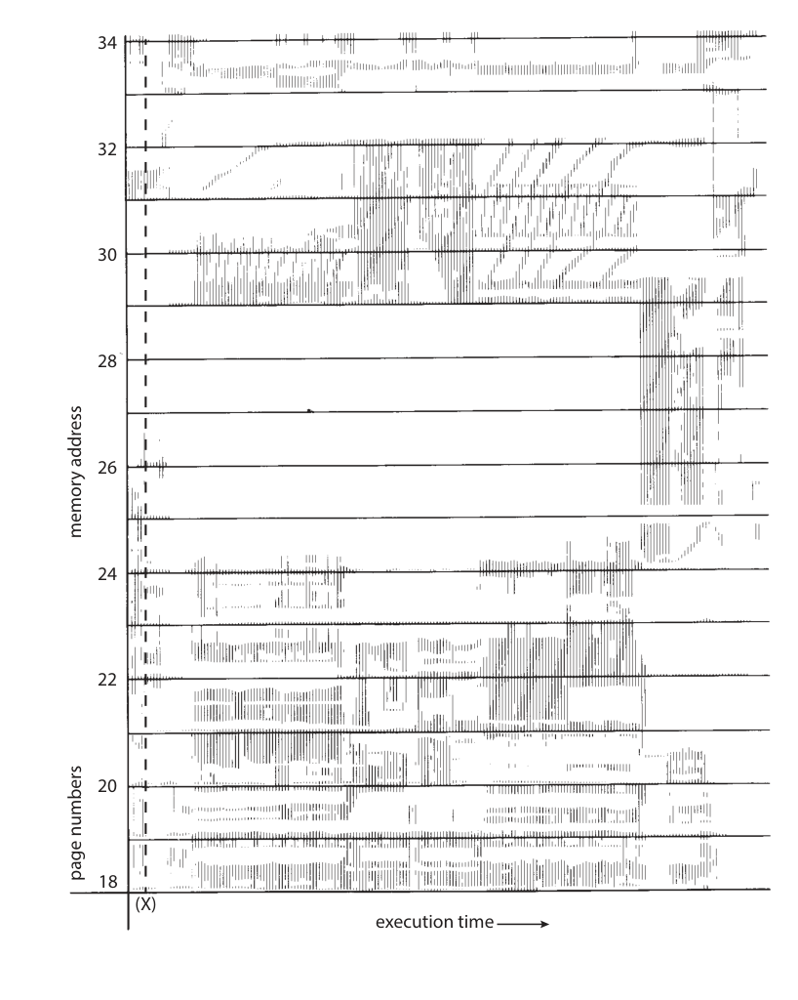
Answer
A locality consists of the pages actively touched around a given point in time. Reading across the dashed vertical line at time (X) (where page \(n\) is the horizontal band immediately above tick \(n\)) yields approximately \(\{18, 19, 20, 22, 23, 24, 25, 26, 31, 33\}\) (page 21 shows only faint edge dots near (X), while pages 27–30 and 32 are blank).局部性即某时刻附近集中访问的页面集合。沿时刻 (X) 的垂直虚线读取各横带（标号 \(n\) 上方对应第 \(n\) 页的访问点阵），得活跃页面约为 \(\{18, 19, 20, 22, 23, 24, 25, 26, 31, 33\}\)（第 21 页附近仅见零星微点，27–30 与 32 页完全空白）。
Beyond boundary reading, notice the key concept illustrated later along the timeline: the working set migrates cleanly as program execution enters new phases—first shifting to pages 29–31, and later to pages 25–28.从全图更可直观印证局部性的动态迁移特性：随着程序进入下一执行阶段，活跃工作集逐步转向第 29–31 页，而后又切入第 25–28 页。
AppendixFormula sheet公式速查
正文里所有 Formula 卡片按章汇总，点卡片标题跳回原处。
Chapter 1 Processes and Interprocess Communication
\[U=1-p^{n}\]
- \(U\): CPU utilization, the fraction of time the CPU is busy (e.g., 0.59)\(U\)：CPU 利用率，即 CPU 处于忙碌状态的时间占比（如 0.59）
- \(p\): fraction of time a single process spends waiting for I/O (e.g., 0.8)\(p\)：单个进程等待 I/O 的时间占比（如 0.8）
- \(n\): degree of multiprogramming—the number of processes resident in memory (e.g., 4)\(n\)：多道程序度，即内存中驻留的进程数（如 4）
- \(p^{n}\): probability that all \(n\) processes wait simultaneously (idle fraction), assuming independent I/O waits\(p^{n}\)：假设各进程等待相互独立时，所有进程同时等待（CPU 空闲）的概率
\[\text{overhead}=\frac{t_{cs}}{q+t_{cs}}\]
- \(\text{overhead}\): fraction of total CPU time lost to switching (e.g., 0.002)\(\text{overhead}\)：消耗在上下文切换上的 CPU 时间占比（如 0.002）
- \(t_{cs}\): context-switch time—time to save one process and load the next (e.g., 8 µs)\(t_{cs}\)：单次上下文切换耗时，即保存旧进程并装入新进程的时间（如 8 µs）
- \(q\): time slice (quantum) a process executes before switching (e.g., 4 ms)\(q\)：进程被换出前连续运行的时间片长度（如 4 ms）
- Useful CPU fraction is \(q/(q+t_{cs})\): shrinking \(q\) improves responsiveness at the cost of higher overhead.有效工作时间占比为 \(q/(q+t_{cs})\)：缩短时间片虽能加快交互响应，但会推高切换开销。
\[N=2^{n}\]
- Applies only to \(n\) consecutive or looped
fork()calls executed unconditionally by every surviving process; \(N\) includes the original parent, so \(N-1\) processes are newly created.仅适用于所有存活进程都无条件执行的 \(n\) 次fork()；总进程数 \(N\) 包含原始父进程，因此新建进程数为 \(N-1\)。 - Whenever a condition such as
if (fork() == 0)restricts who continues, trace fork by fork instead of applying \(2^n\).一旦出现if (fork() == 0)等分支控制，严禁套用 \(2^n\)，必须逐次展开计数。
\[\text{count}=(\text{in}-\text{out})\bmod N\]
- \(\text{count}\): number of items currently stored in the buffer\(\text{count}\)：缓冲区中当前存放的数据项个数
- \(\text{in}\): index of the next free slot (written only by the producer)\(\text{in}\)：下一个空槽下标（仅由生产者更新）
- \(\text{out}\): index of the first full slot (written only by the consumer)\(\text{out}\)：第一个满槽下标（仅由消费者更新）
- \(N\):
BUFFER_SIZE, the total number of array slots (e.g., 5)\(N\)：BUFFER_SIZE，即数组总槽位数（如 5） - Empty test:
in == out(\(\text{count}=0\)); Full test:(in + 1) % N == out(\(\text{count}=N-1\)). Maximum usable capacity is \(N-1\) items.判空：in == out（0 项）；判满：(in + 1) % N == out（\(N-1\) 项）；有效最大容量为 \(N-1\)。
Chapter 2 Threads and Concurrency
\[\text{speedup}=\frac{T(1)}{T(N)}\le\frac{1}{S+\dfrac{1-S}{N}}\]
- \(\text{speedup}\): speedup factor on \(N\) cores relative to 1 core (e.g., 2.1× faster)\(\text{speedup}\)：在 \(N\) 个核上相对于单核的速度提升倍数，例如 2.1
- \(T(1)\), \(T(N)\): execution times on 1 core and on \(N\) cores\(T(1)\)、\(T(N)\)：分别在 1 个核与 \(N\) 个核上的运行时间
- \(S\): serial fraction of the single-core run time (\(0\le S\le1\)), e.g., \(S=0.3\)\(S\)：单核运行时间中必须串行执行的比例（\(0\le S\le1\)），例如 0.3
- \(1-S\): parallel fraction that can be distributed across cores\(1-S\)：可分摊到各核并行执行的比例
- \(N\): number of processing cores, e.g., 4\(N\)：处理核心数量，例如 4
- This formula is a theoretical upper bound assuming fixed problem size, ideal parallel split, and zero thread overhead.注：该式是理想上界，隐含假设了问题规模固定、并行部分完全均匀可分且无线程管理开销。
\[\lim_{N\to\infty}\frac{1}{S+\frac{1-S}{N}}=\frac{1}{S},\qquad E=\frac{\text{speedup}}{N}\]
- Symbols \(S\), \(N\), and \(\text{speedup}\) match Amdahl's law above.符号 \(S\)、\(N\) 与 \(\text{speedup}\) 含义同上。
- \(E\): parallel efficiency—the fraction of ideal linear speedup (\(N\)) actually achieved (\(E=1\) is ideal; e.g., \(E=0.53\))\(E\)：并行效率，即实际加速比占理想线性加速比 \(N\) 的比例（\(E=1\) 为理想情况，例如 \(E=0.53\)）
- As \(N\) grows large, \((1-S)/N \to 0\), leaving a hard ceiling of \(1/S\): for example, \(S=0.5\) caps speedup at 2× and \(S=0.1\) caps it at 10× regardless of core count.当核数 \(N\) 趋于无穷时，\((1-S)/N\to 0\)，只剩硬上限 \(1/S\)：例如串行占 50%（\(S=0.5\)）时再多核也最多快 2 倍；\(S=0.1\) 时上限为 10 倍。
\[\text{speedup}_{\text{scaled}}=N-\alpha\,(N-1)\]
- \(\text{speedup}_{\text{scaled}}\): scaled speedup when problem size grows alongside the machine\(\text{speedup}_{\text{scaled}}\)：问题规模随机器核数同比例扩展时的加速比
- \(N\): number of cores (e.g., 16)\(N\)：核心数量，例如 16
- \(\alpha\): serial fraction measured on the \(N\)-core run (e.g., 0.1)\(\alpha\)：在 \(N\) 核机器运行大问题时串行部分所占的时间比例，例如 0.1
- Example: \(16 - 0.1 \times 15 = 14.5\), whereas Amdahl's law with fixed workload and \(S=0.1\) gives 6.4—the two laws answer different scaling questions.示例：\(16 - 0.1 \times 15 = 14.5\)；而固定问题规模下用 Amdahl 定律（\(S=0.1\)）算得 6.4——两者回答的是不同前提下的问题。
Chapter 3 CPU Scheduling
\[T_{\text{turn}}=T_{\text{finish}}-T_{\text{arrival}},\qquad T_{\text{wait}}=T_{\text{turn}}-T_{\text{burst}},\qquad T_{\text{resp}}=T_{\text{first}}-T_{\text{arrival}}\]
- \(T_{\text{turn}}\): turnaround time from arrival to completion (ms)\(T_{\text{turn}}\)：周转时间，从到达时刻至彻底完成（ms）
- \(T_{\text{wait}}\): waiting time spent in the ready queue (ms); under preemption, this sums all interrupted ready-queue gaps\(T_{\text{wait}}\)：等待时间，累计所有在就绪队列等待的间隔（ms；抢占模式下包含中途被切出后重新排队的间隔）
- \(T_{\text{resp}}\): response time from arrival to the first CPU dispatch (ms)\(T_{\text{resp}}\)：响应时间，从到达至首次分派到 CPU 的耗时（ms）
- \(T_{\text{finish}}, T_{\text{arrival}}, T_{\text{burst}}, T_{\text{first}}\): finish time, arrival time, CPU burst duration, and first start timestamp\(T_{\text{finish}}, T_{\text{arrival}}, T_{\text{burst}}, T_{\text{first}}\)：分别代表完成时刻、到达时刻、CPU 区间长度及首次开始时刻
- Under any nonpreemptive algorithm on pure CPU bursts, a process runs uninterrupted once dispatched, so \(T_{\text{resp}} = T_{\text{wait}}\).在纯 CPU 区间的非抢占式调度中，进程一经运行便直达终点，故恒有 \(T_{\text{resp}} = T_{\text{wait}}\)。
\[U_{\text{CPU}}=\frac{\text{busy time}}{\text{elapsed time}},\qquad X=\frac{\text{number of completed processes}}{\text{elapsed time}}\]
- \(U_{\text{CPU}}\): fraction of the schedule window during which the CPU is actively executing processes (e.g., 0.80 = 80%)\(U_{\text{CPU}}\)：CPU 实际忙碌执行时间占整个调度观察总时长的比例（如 0.80 即 80%）
- \(X\): throughput—completed processes per unit time (e.g., 0.2 processes/ms)\(X\)：吞吐量——单位时间内完成的进程数（如 0.2 个/ms）
- Idle intervals count toward
elapsed time(denominator) but not towardbusy time(numerator).甘特图里的idle空闲段必须计入分母总耗时，但不得计入分子的忙碌时间。
\[\tau_{n+1}=\alpha\,t_n+(1-\alpha)\,\tau_n,\qquad 0\le\alpha\le 1\]
- \(\tau_{n+1}\): predicted duration for the next CPU burst (ms)\(\tau_{n+1}\)：对下一次（第 \(n+1\) 次）CPU 区间的预测值（ms）
- \(t_n\): actual measured length of the most recent (\(n\)-th) burst\(t_n\)：刚刚结束的第 \(n\) 次 CPU 区间真实实测长度
- \(\tau_n\): previous prediction summarizing earlier history (\(\tau_0\) is the fixed initial estimate, e.g., 10 ms)\(\tau_n\)：上一轮预测值，承载全部历史累积权重（\(\tau_0\) 为预设初始猜测，如 10 ms）
- \(\alpha\): recency weight (\(\alpha=0\) ignores new measurements; \(\alpha=1\) remembers only the single latest burst; \(\alpha=\frac12\) balances both evenly)\(\alpha\)：最新样本权重（\(\alpha=0\) 固守初猜不更新；\(\alpha=1\) 只信刚跑完的那一次；常用折中取 \(\alpha=\tfrac12\)）
\[T_{\text{gap}}\le(n-1)\,q,\qquad u=\frac{q}{q+s}\]
- \(T_{\text{gap}}\): worst-case delay between two consecutive CPU turns for any ready process (ms)\(T_{\text{gap}}\)：就绪队列中任一进程两次获得 CPU 之间的最长等待间隔（ms）
- \(n\): number of processes in the ready queue; \(q\): time quantum (e.g., \(n=5, q=20\text{ ms} \implies T_{\text{gap}} \le 4\times 20 = 80\text{ ms}\))\(n\)：就绪进程数；\(q\)：时间片长度（如 \(n=5, q=20\text{ ms}\) 时，至多等 \(4\times 20=80\text{ ms}\)）
- \(u\): fraction of useful CPU time when every burst uses a full quantum and each context switch costs \(s\) (e.g., \(q=1\text{ ms}, s=0.1\text{ ms} \implies u = 1/1.1 \approx 91\%\))\(u\)：CPU 有效利用率（\(s\) 为每次上下文切换耗时；如 \(q=1\text{ ms}, s=0.1\text{ ms}\) 时 \(u=1/1.1 \approx 91\%\)）
\[U=\sum_{i=1}^{N}\frac{t_i}{p_i}\]
- \(U\): total CPU utilization requested by all \(N\) periodic tasks on a single processor (e.g., 0.75)\(U\)：所有 \(N\) 个周期任务合计所需的单核 CPU 时间占比（如 0.75）
- \(t_i, p_i\): per-period CPU burst and period of task \(i\) (in ms)\(t_i, p_i\)：第 \(i\) 个任务的单次 CPU 区间与释放周期（ms）
- \(U \le 1\) is a hard necessary condition for any single-CPU scheduler.\(U \le 1\) 是任意单核调度器想要不超时的绝对必要条件。
\[U\le N\left(2^{1/N}-1\right)\]
- \(U, N\): total CPU utilization and number of periodic tasks\(U, N\)：总利用率与周期任务数
- Representative bounds: 82.8% for \(N=2\) (\(2(\sqrt2-1)\)), 78.0% for \(N=3\), converging down toward \(\ln 2 \approx \mathbf{69.3\%}\) as \(N\to\infty\).常用阈值速记：\(N=2\) 时 82.8%，\(N=3\) 时 78.0%，\(N\to\infty\) 时收敛至 \(\ln 2 \approx \mathbf{69.3\%}\)。
- Sufficient, NOT necessary: passing \(U \le N(2^{1/N}-1)\) guarantees zero missed deadlines; exceeding it is inconclusive (you must draw the hyperperiod schedule or run the exact response-time check).注意这是充分非必要条件：低于该界限则必可调度；一旦超过界限并不等于必然失败，必须进一步画超周期图或用精确递推判定！
\[R_i^{(k+1)}=t_i+\sum_{j\in hp(i)}\left\lceil\frac{R_i^{(k)}}{p_j}\right\rceil t_j,\qquad R_i^{(0)}=t_i\]
- \(R_i^{(k)}\): \(k\)-th iteration estimating task \(i\)'s worst-case response time (ms); stop when \(R_i^{(k+1)} = R_i^{(k)}\) or \(R_i > d_i\)\(R_i^{(k)}\)：第 \(k\) 步估算的任务 \(i\) 最坏响应时间（算到前后两步数值不再变或超出截止期为止）
- \(hp(i)\): set of all tasks with strictly higher priority (shorter period under RMS) than task \(i\)\(hp(i)\)：所有优先级高于任务 \(i\)（即 RMS 中周期更短）的任务集合
- Schedulable under fixed priorities iff every task converges with \(R_i \le d_i\) (normally \(p_i\)).当且仅当每个任务收敛后均满足 \(R_i \le p_i\) 时，静态调度完全可行。
- Check on P2 above: \(R_2^{(0)} = 35 \to 35 + \lceil 35/50 \rceil 25 = 60 \to 35 + \lceil 60/50 \rceil 25 = 85 > 80\) → unschedulable.验证上方 P2：\(R_2 = 35 \to 35 + 25 = 60 \to 35 + 2\times 25 = 85 > 80\)，瞬间判明失败。
\[n = \lambda \times W\]
- \(n\): average queue length (mean number of waiting processes, e.g., 14).\(n\)：平均队列长度，即队列中平均等待的进程数（如 14）。
- \(\lambda\): average arrival rate (processes arriving per second, e.g., 7 /s).\(\lambda\)：平均到达率，即每秒进入队列的进程数（如 7 个/秒）。
- \(W\): average waiting time spent in the queue (in seconds).\(W\)：进程在队列中的平均等待时间（单位：秒）。
- Holds in steady state (arrival rate equals departure rate) regardless of scheduling policy or probability distribution.适用条件： 只要系统处于稳态（平均离开率等于到达率），无论调度算法和到达/服务分布为何，该关系恒成立。
Chapter 4 Process Synchronization
\[\binom{a+b}{a}\]
- Two instruction sequences of lengths \(a\) and \(b\) preserving internal order can interleave in \(\binom{a+b}{a}\) distinct ways; for
count++andcount--(\(a=b=3\)), there are \(\binom{6}{3}=20\) interleavings.长度分别为 \(a\) 和 \(b\) 的两个指令序列在各自内部顺序不变的前提下，共有 \(\binom{a+b}{a}\) 种交错排法；count++与count--（\(a=b=3\)）共有 \(\binom{6}{3}=20\) 种可能交错。
\[t_{\text{hold}}<2\,T_{\text{cs}}\;\Rightarrow\;\text{spinlock},\qquad t_{\text{hold}}>2\,T_{\text{cs}}\;\Rightarrow\;\text{sleeping lock}\]
- \(t_{\text{hold}}\): lock hold duration; \(T_{\text{cs}}\): one context-switch cost (blocking requires two switches—sleep and wake-up).\(t_{\text{hold}}\)：临界区持锁时长；\(T_{\text{cs}}\)：单次上下文切换耗时（睡眠锁需付出睡下与唤醒共两次切换代价）。
\[S=S_0-n_{\text{wait}}+n_{\text{signal}},\qquad \text{waiting processes}=\max(0,-S)\]
- \(S\): current semaphore value (e.g., \(-2\)); \(S_0\): initial value (e.g., 2).\(S\)：信号量当前值（如 \(-2\)）；\(S_0\)：初始值（如 2）。
- \(n_{\text{wait}}\): total completed
wait()calls (every call decrements, even when it blocks); \(n_{\text{signal}}\): total completedsignal()calls.\(n_{\text{wait}}\)：所有已进入执行的wait()总次数（含阻塞者）；\(n_{\text{signal}}\)：signal()总次数。 - Valid for blocking semaphores: a value of \(-k\) indicates \(k\) processes queued in
S->list.适用于阻塞式信号量：当 \(S = -k < 0\) 时，队列中正有 \(k\) 个进程阻塞。
\[\left\lfloor \frac{n}{2}\right\rfloor\]
- With \(n\) philosophers and \(n\) chopsticks (2 needed per diner), at most \(\lfloor n/2\rfloor\) can eat concurrently (for \(n=5\), at most 2).\(n\) 人配 \(n\) 根筷子（每人需 2 根），同一时刻至多 \(\lfloor n/2\rfloor\) 人同时进餐（当 \(n=5\) 时最多 2 人）。
Chapter 5 Deadlocks
\[F(R_j)>F(R_i)\quad\text{for every } R_j \text{ requested while holding } R_i\]
- \(F:R\to\mathbb{N}\): a one-to-one mapping assigning each resource type a unique integer rank\(F:R\to\mathbb{N}\)：为每种资源类型分配唯一整数序号的一一映射
- \(R_i\): a resource type currently held by the thread; \(R_j\): the next resource type it requests\(R_i\)：线程当前已持有的资源类型；\(R_j\)：接下来请求的新资源类型
- Equivalent rule: To acquire \(R_j\) when holding higher-ranked resources, first release every held \(R_i\) with \(F(R_i)\ge F(R_j)\) (and request multiple instances of the same type together in one batch).等价规则：若想请求序号更小（或相等）的 \(R_j\)，必须先释放当前持有的所有满足 \(F(R_i)\ge F(R_j)\) 的资源 \(R_i\)；同类型多个实例须在同一次请求中一起申请。
\[\text{Need}_{i}\le \text{Available}+\sum_{j<i}\text{Allocation}_{j}\qquad\text{for each } i \text{ in the sequence}\]
- \(\text{Need}_i\): remaining maximum claim of \(T_i\), equal to \(\text{Max}_i-\text{Allocation}_i\) (Section 5.5)\(\text{Need}_i\)：\(T_i\) 最多还可能继续申请的数量，即 \(\text{Max}_i-\text{Allocation}_i\)（第 5.5 节）
- \(\text{Available}\): vector of currently free resource instances\(\text{Available}\)：系统当前空闲的各类资源向量
- \(\text{Allocation}_j\): resources currently held by earlier thread \(T_j\) (\(j<i\)), which are returned once \(T_j\) completes; all vector comparisons are component-wise.\(\text{Allocation}_j\)：序列中先前线程 \(T_j\)（\(j<i\)）已持有的资源（它结束后归还）；向量比较按各分量逐一进行。
\[\text{Need}[i][j]=\text{Max}[i][j]-\text{Allocation}[i][j]\]
- \(\text{Need}[i][j]\): remaining instances of \(R_j\) that thread \(T_i\) may still request\(\text{Need}[i][j]\)：线程 \(T_i\) 后续仍可请求的 \(R_j\) 实例数
- \(\text{Max}[i][j]\): maximum instances of \(R_j\) that \(T_i\) can ever claim; \(\text{Allocation}[i][j]\): instances currently held by \(T_i\)\(\text{Max}[i][j]\)：\(T_i\) 申报的最大需求；\(\text{Allocation}[i][j]\)：当前已分配给 \(T_i\) 的数量
- Indices: row \(i\) (\(0\le i<n\)) indexes threads, column \(j\) (\(0\le j<m\)) indexes resource types, and row vectors are written \(\text{Allocation}_i\) and \(\text{Need}_i\).下标与行向量：行 \(i\) 代表线程、列 \(j\) 代表资源，第 \(i\) 行记为行向量 \(\text{Allocation}_i\) 与 \(\text{Need}_i\)。
- Arithmetic check: On any valid snapshot, \(\text{Available}+\sum_i\text{Allocation}_i\) must equal the total system instances.校验不变量： 任意快照下，\(\text{Available}+\sum_i\text{Allocation}_i\) 恒等于系统总资源向量。
\[\text{Finish}[i]=\text{false}\ \wedge\ \text{Need}_i\le\text{Work}\ \Longrightarrow\ \text{Work}\leftarrow\text{Work}+\text{Allocation}_i,\ \text{Finish}[i]\leftarrow\text{true}\]
- \(\text{Work}\): free instances currently available in the simulation (initialized to \(\text{Available}\))\(\text{Work}\)：推演当前累计可用的空闲资源向量（初值为 \(\text{Available}\)）
- \(\text{Finish}[i]\): becomes
trueonce \(T_i\) can finish; \(\text{Need}_i\), \(\text{Allocation}_i\) are row \(i\) vectors\(\text{Finish}[i]\)：\(T_i\) 已被确认能跑完时置真；\(\text{Need}_i\) 与 \(\text{Allocation}_i\) 为第 \(i\) 行向量 - Criterion & complexity: State is safe iff all \(\text{Finish}[i]=\text{true}\). Runs in \(O(m\,n^2)\) time: at most \(n\) iterations, each scanning up to \(n\) threads across \(m\) components.判据与复杂度： 当且仅当全部 \(\text{Finish}[i]=\text{true}\) 时状态安全。复杂度为 \(O(m\,n^2)\)（至多 \(n\) 轮，每轮扫描 \(n\) 个线程并比较 \(m\) 个分量）。
\[\begin{aligned}\text{Available}&\leftarrow\text{Available}-\text{Request}_i\\\text{Allocation}_i&\leftarrow\text{Allocation}_i+\text{Request}_i\\\text{Need}_i&\leftarrow\text{Need}_i-\text{Request}_i\end{aligned}\]
- \(\text{Request}_i\): instances currently requested by \(T_i\)\(\text{Request}_i\)：\(T_i\) 当前请求的资源向量
- \(\text{Available}\), \(\text{Allocation}_i\), \(\text{Need}_i\): system free vector and \(T_i\)'s held and remaining demand rows\(\text{Available}\)、\(\text{Allocation}_i\)、\(\text{Need}_i\)：系统空闲向量及 \(T_i\) 的已占有、剩余需求行
- Applied tentatively only after verifying both \(\text{Request}_i\le\text{Need}_i\) and \(\text{Request}_i\le\text{Available}\); commit iff the resulting state passes the safety test.仅在先后确认 \(\text{Request}_i\le\text{Need}_i\) 与 \(\text{Request}_i\le\text{Available}\) 后执行试探更新，且只在安全检验通过后才真正提交。
\[\text{Finish}[i]=\text{false}\ \wedge\ \text{Request}_i\le\text{Work}\ \Longrightarrow\ \text{Work}\leftarrow\text{Work}+\text{Allocation}_i,\ \text{Finish}[i]\leftarrow\text{true}\]
- \(\text{Work}\): simulated free instances at the current step (initialized to \(\text{Available}\))\(\text{Work}\)：推演当前累计空闲向量（初值为 \(\text{Available}\)）
- \(\text{Finish}[i]\): starts
truefor any thread holding \(\text{Allocation}_i=0\) (cannot hold up others), andfalseotherwise\(\text{Finish}[i]\)：若线程 \(\text{Allocation}_i=0\)（一无所持，不可能卡住别人）则初值为true，其余为false - \(\text{Request}_i\) & \(\text{Allocation}_i\): current request and held allocation vectors of \(T_i\)\(\text{Request}_i\) 与 \(\text{Allocation}_i\)：线程 \(T_i\) 当前正在请求的向量与已持有的向量
- Verdict & cost: Threads still having \(\text{Finish}[i]=\text{false}\) at termination are deadlocked; complexity is \(O(m\,n^2)\).判定与开销： 算法停机后仍为 \(\text{Finish}[i]=\text{false}\) 的线程全部死锁；总时间复杂度仍为 \(O(m\,n^2)\)。
Chapter 6 Main Memory
\[\text{base}\le a<\text{base}+\text{limit}\]
- \(a\): physical address generated for check in user mode (e.g., 300500)\(a\)：待检查的用户态目标地址（例如 300500）
- \(\text{base}\): contents of the base register, the first legal address (e.g., 300040)\(\text{base}\)：基址寄存器值，即合法首地址（例如 300040）
- \(\text{limit}\): contents of the limit register, the span in bytes (e.g., 120900)\(\text{limit}\)：界限寄存器值，即合法区间长度（例如 120900）
- The highest legal address is \(\text{base}+\text{limit}-1\); reaching \(\text{base}+\text{limit}\) already traps.最高合法地址为 \(\text{base}+\text{limit}-1\)；恰好等于 \(\text{base}+\text{limit}\) 也会触发越界陷阱。
\[PA=a+\text{relocation}\quad\text{if }0\le a<\text{limit},\ \text{otherwise trap}\]
- \(PA\): physical address sent to memory\(PA\)：最终送往内存总线的物理地址
- \(a\): logical address generated by the program (e.g., 74599)\(a\)：程序产生的逻辑地址（例如 74599）
- \(\text{relocation}\): relocation register, giving the partition's start physical address (e.g., 100040)\(\text{relocation}\)：重定位寄存器值，即分区物理起始地址（例如 100040）
- \(\text{limit}\): limit register, giving the logical address space size (e.g., 74600)\(\text{limit}\)：界限寄存器值，即合法逻辑长度（例如 74600）
- Example: \(a=74599\) translates to \(PA=100040+74599=174639\), while \(a=74600\) traps.示例：\(a=74599\) 映射为 \(174639\)；\(a=74600\) 因达到界限而陷入异常。
\[p=\left\lfloor \frac{a}{2^{n}}\right\rfloor,\qquad d=a \bmod 2^{n},\qquad PA=f\cdot 2^{n}+d\]
- \(a\): logical address (e.g., 5000)\(a\)：逻辑地址（如 5000）
- \(p\): page number (page-table index); \(d\): offset within the page\(p\)：页号（用于索引页表）；\(d\)：页内字节偏移
- \(2^n\): page size in bytes (e.g., \(2^{10}=1024\)); \(\lfloor x\rfloor\) denotes floor rounding\(2^n\)：页大小（字节，如 \(2^{10}=1024\)）；\(\lfloor x\rfloor\) 表示向下取整
- \(f\): frame number stored in page-table entry \(p\); \(PA\): physical address\(f\)：页表第 \(p\) 项中查到的物理帧号；\(PA\)：物理地址
- The offset \(d\) passes through unchanged—translation replaces only \(p\) with \(f\).翻译过程中偏移量 \(d\) 保持不变，硬件仅将高位 \(p\) 替换为 \(f\)。
\[N_{\text{pages}}=2^{m-n},\qquad N_{\text{frames}}=2^{k-n},\qquad \text{size}=2^{m-n}\cdot e\]
- \(m\): bits in a logical address (e.g., 32); \(k\): bits in a physical address (e.g., 30 for 1 GB)\(m\)：逻辑地址位数（如 32）；\(k\)：物理地址位数（如 1 GB 对应 30）
- \(2^n\): page size in bytes (e.g., \(2^{12}=4\) KB)\(2^n\)：页大小（字节，如 \(2^{12}=4\) KB）
- \(N_{\text{pages}}\): number of virtual pages (equal to page-table entries); \(N_{\text{frames}}\): number of physical frames\(N_{\text{pages}}\)：虚拟页总数（即页表项数）；\(N_{\text{frames}}\)：物理帧总数
- \(e\): bytes per page-table entry (e.g., 4 B); \(\text{size}\): per-process page-table size in bytes\(e\)：单条页表项大小（如 4 B）；\(\text{size}\)：单个进程页表总字节数
- Page-number width: \(m-n\) bits; frame-number width: \(k-n\) bits.页号位数为 \(m-n\)，帧号位数为 \(k-n\)。
\[\text{EAT}=\alpha\,(\tau+t_m)+(1-\alpha)\,\bigl(\tau+(k+1)\,t_m\bigr)=\tau+t_m+(1-\alpha)\,k\,t_m\]
- \(\text{EAT}\): effective access time per memory reference, in ns\(\text{EAT}\)：单次访存的平均有效耗时（ns）
- \(\alpha\): TLB hit ratio (fraction of lookups found in TLB, e.g., 0.80)\(\alpha\)：TLB 命中率（如 0.80）
- \(\tau\): TLB lookup time in ns (e.g., 2 ns, or 0 if hidden inside pipeline stages)\(\tau\)：TLB 查找时间（如 2 ns；若题目说明并入流水线则取 0）
- \(t_m\): latency of one main-memory access in ns (e.g., 10 ns)\(t_m\)：单次主存访问耗时（如 10 ns）
- \(k\): number of page-table levels (e.g., 1 for single-level); a miss reads \(k\) table levels before accessing data.\(k\)：页表级数（单级取 1）；每次未命中需额外访存 \(k\) 趟查表再读数据。
- Without a TLB, every access pays \(\text{EAT}=(k+1)\,t_m\).若无 TLB，则恒耗时 \(\text{EAT}=(k+1)\,t_m\)。
\[L=\left\lceil\frac{m-n}{\log_2(P/e)}\right\rceil\]
- \(L\): number of page-table levels (also the number of table accesses on a TLB miss)\(L\)：页表级数（也是每次 TLB 未命中时所需查表的次数）
- \(m\): logical address width in bits (e.g., 32); \(P=2^n\): page size in bytes (e.g., \(2^{12}=4\) KB)\(m\)：逻辑地址总位数（如 32）；\(P=2^n\)：页大小（字节，如 \(2^{12}\)）
- \(e\): size of one page-table entry in bytes (e.g., 4)\(e\)：单条页表项大小（字节，如 4）
- \(P/e\): entries fitting in one page; \(\log_2(P/e)\): index bits resolved per level (e.g., 10)\(P/e\)：单页容纳的表项数；\(\log_2(P/e)\)：每级索引耗费的位数（如 10）
- \(\lceil x\rceil\): ceiling rounding. Example: \(\lceil 20/10\rceil=2\) levels.\(\lceil x\rceil\) 表示向上取整。示例：\(\lceil 20/10\rceil=2\) 级。
\[N_{\text{inv}}=\frac{\text{physical memory}}{\text{page size}}=2^{k-n}\ \text{entries}\]
- \(N_{\text{inv}}\): number of inverted-table entries (one per physical frame)\(N_{\text{inv}}\)：反置页表总项数，严格等于物理帧总数
- \(k\): physical address bits (e.g., 30 for 1 GB); \(2^n\): page size in bytes (e.g., \(2^{13}=8\) KB)\(k\)：物理地址位数（1 GB 为 30）；\(2^n\)：页大小（字节，如 \(2^{13}\)）
- Example: \(k=30\) and \(n=13\) yield \(2^{17}=131{,}072\) entries for the entire OS.示例：\(k=30, n=13\) 时全系统共用一张 \(2^{17}=131{,}072\) 项的反置页表。
Chapter 7 Virtual Memory
\[\text{EAT}=(1-p)\times \text{ma}+p\times T_{\text{fault}}\]
- \(\text{EAT}\): effective access time—average latency per memory reference (in ns)\(\text{EAT}\)：有效访问时间，即单次内存引用的平均耗时（单位 ns）
- \(p\): page-fault probability per reference (\(0\le p\le 1\), e.g., 0.001)\(p\)：单次引用的缺页概率（\(0\le p\le 1\)，如 0.001）
- \(\text{ma}\): normal memory-access time without a fault (e.g., 200 ns)\(\text{ma}\)：未缺页时的正常内存访问时间（如 200 ns）
- \(T_{\text{fault}}\): total time to service one page fault including the restarted access (e.g., 8 ms), converted to the same unit as \(\text{ma}\)\(T_{\text{fault}}\)：处理一次缺页的总时间（含重跑访问，如 8 ms），须换算为与 \(\text{ma}\) 相同的单位
\[T_{\text{fault}}=(1-d)\,T_{\text{clean}}+d\,T_{\text{dirty}}\]
- \(T_{\text{fault}}\): average page-fault service time to substitute into the EAT formula\(T_{\text{fault}}\)：平均缺页服务时间（代入 EAT 公式）
- \(d\): fraction of victims that are dirty (modified), e.g., 0.7\(d\)：被淘汰牺牲页中脏（已修改）页的比例，例如 0.7
- \(T_{\text{clean}}\): service time when a free frame exists or the victim is clean, e.g., 8 ms\(T_{\text{clean}}\)：有空闲帧或牺牲页为干净页时的服务时间，例如 8 ms
- \(T_{\text{dirty}}\): service time when the victim must be written to disk first, e.g., 20 ms\(T_{\text{dirty}}\)：牺牲页须先写回磁盘时的服务时间，例如 20 ms
\[\text{EAT}=(1-p)\,\text{EAT}_0+p\,T_{\text{fault}},\qquad \text{EAT}_0=\alpha(\varepsilon+\text{ma})+(1-\alpha)(\varepsilon+2\,\text{ma})\]
- \(\text{EAT}\), \(p\), \(\text{ma}\), and \(T_{\text{fault}}\) retain the same meanings as above\(\text{EAT}\)、\(p\)、\(\text{ma}\) 与 \(T_{\text{fault}}\) 含义同上
- \(\text{EAT}_0\): average access time when no page fault occurs (in ns)\(\text{EAT}_0\)：未发生缺页时的平均访问时间（单位 ns）
- \(\alpha\): TLB hit ratio (fraction of lookups found in the TLB, e.g., 0.9)\(\alpha\)：TLB 命中率（页表查找命中 TLB 的比例，如 0.9）
- \(\varepsilon\): TLB lookup time (e.g., 10 ns)\(\varepsilon\)：TLB 查找时间（如 10 ns）
- Remember that a TLB miss only triggers an extra RAM read for the page-table entry—it is not a page fault注意：TLB 未命中仅多一次访问内存页表的开销，并非缺页
\[a_i=\frac{s_i}{S}\times m,\qquad S=\sum_i s_i\]
- \(a_i\): frames allocated to process \(i\)\(a_i\)：分配给进程 \(i\) 的帧数
- \(s_i\): size of process \(i\) in pages (e.g., 127 pages)\(s_i\)：进程 \(i\) 的总页数（如 127 页）
- \(S\): sum of sizes across all processes (\(\sum s_i\))\(S\)：所有进程的页数总和
- \(m\): total user frames available (e.g., 62)\(m\)：可分配的物理帧总数（如 62）
- \(i\): process index (\(1, 2, 3, \dots\))\(i\)：进程编号（\(1, 2, 3, \dots\)）
- Round each \(a_i\) down, raise any count below the architectural minimum, and ensure \(\sum a_i\le m\).将各 \(a_i\) 向下取整，若有低于体系结构最小值的则上调至下限，并确保总和不超 \(m\)。
\[\text{WS}(t)=\{\text{distinct pages among the last }\Delta\text{ references up to time }t\},\qquad D=\sum_i \text{WSS}_i\]
- \(\text{WS}(t)\): working set of a process at reference step \(t\)\(\text{WS}(t)\)：时刻 \(t\) 的工作集页面集合
- \(t\): discrete reference time index (\(1, 2, 3, \dots\))\(t\)：按内存引用计数的离散时刻（\(1, 2, 3, \dots\)）
- \(\Delta\): working-set window width in references (e.g., 5)\(\Delta\)：工作集窗口长度（如 5 次引用）
- \(\text{WSS}_i\): working-set size of process \(i\) (\(|\text{WS}_i|\)), i.e., the frames process \(i\) needs\(\text{WSS}_i\)：进程 \(i\) 的工作集大小，即其所需最少不抖动帧数
- \(D\): aggregate frame demand summed over all active processes\(D\)：所有活动进程的帧需求总量
- \(i\): process index\(i\)：进程编号
- \(m\): total available user frames; \(D>m\) causes thrashing, whereas \(D\le m\) lets every working set stay resident\(m\)：可用物理帧总数；若 \(D>m\) 则发生抖动，若 \(D\le m\) 则所有工作集均能安放
\[b=2^{\lceil\log_2 r\rceil},\qquad \text{internal fragmentation}=b-r\]
- \(r\): requested allocation size (e.g., 21 KB)\(r\)：实际请求的字节大小（如 21 KB）
- \(b\): allocated block size—the smallest power of two \(\ge r\) (e.g., 32 KB)\(b\)：分配得到的块大小，即不小于 \(r\) 的最小 2 的幂（如 32 KB）
- \(\lceil\cdot\rceil\): ceiling operator rounding up to the nearest integer\(\lceil\cdot\rceil\)：向上取整运算
- Internal fragmentation equals \(b-r\), approaching 50% in the worst case (e.g., 33 KB placed inside a 64 KB block)内部碎片为 \(b-r\)；最坏情况下近一半空间被浪费（如 33 KB 请求被迫占用 64 KB 块）
\[n=\left\lfloor \frac{\text{slab size}}{\text{object size}}\right\rfloor\]
- \(n\): number of kernel objects packed into one slab\(n\)：单个 slab 可容纳的内核对象个数
- slab size: total byte capacity of the slab's pages (e.g., 12 KB for three 4-KB pages)slab 大小：构成该 slab 所有连续页的总大小（如 3 个 4 KB 页合计 12 KB）
- object size: exact size of one kernel object (e.g., 2 KB)对象大小：单个内核对象的精确大小（如 2 KB）
- \(\lfloor\cdot\rfloor\) rounds down; any trailing remainder smaller than one object stays unused (e.g., \(\lfloor 12/2\rfloor=6\) objects)\(\lfloor\cdot\rfloor\) 向下取整，不足一个对象的末尾余量闲置（如 \(\lfloor 12/2\rfloor=6\) 个对象）
\[\text{gain}=s\alpha\,C_{\text{fault}}-s(1-\alpha)\,C_{\text{prepage}}\]
- \(\text{gain}\): net time (or cost) saved by prepaging (in ms); prepaging pays off iff \(\text{gain}>0\)\(\text{gain}\)：预调页节省的净时间（单位 ms）；当结果为正时说明预调页划算
- \(s\): total number of pages prepaged (e.g., 100)\(s\)：预调入的总页数（如 100）
- \(\alpha\): fraction of prepaged pages actually referenced (\(0\le\alpha\le 1\), e.g., 0.8)\(\alpha\)：预调页中实际被用到的比例（\(0\le\alpha\le 1\)，如 0.8）
- \(C_{\text{fault}}\): cost of a prevented page fault; \(C_{\text{prepage}}\): marginal cost of preloading an unused page\(C_{\text{fault}}\)：省下一次缺页的代价；\(C_{\text{prepage}}\)：白白预取一页未用页面的代价
\[\text{TLB reach}=(\text{number of entries})\times(\text{page size})\]
- \(\text{TLB reach}\): virtual memory directly cached by the TLB (in KB or MB)\(\text{TLB reach}\)：TLB 直接覆盖的虚拟内存总容量（KB 或 MB）
- number of entries: TLB slot count (e.g., 64 entries)表项数：TLB 硬件槽位数（如 64 项）
- page size: size of each mapped page (e.g., 4 KB)页大小：单个映射页面的大小（如 4 KB）
- Example: \(64\times 4\text{ KB}=256\text{ KB}\); raising the page size from 4 KB to 16 KB quadruples reach without adding costly associative hardware.例：64 × 4 KB = 256 KB；将页从 4 KB 扩至 16 KB 可在不扩容昂贵相联硬件的前提下把覆盖范围直接翻四倍。
AppendixTraps易错点汇总
正文里每一节的 Traps 框按章汇总，标题是所在的小节，适合考前最后过一遍。
Chapter 1 Processes and Interprocess Communication
- After I/O completion, a process transitions to ready, never directly to running.I/O 完成后进程进入就绪态，绝不会直接进入运行态。
- The standard diagram has exactly six labeled arrows; unlabeled arrows lose marks.五状态图共有六条带标签的箭头，漏标转换名称会扣分。
- The PCB stores the saved PC and registers of a process when it is not running; while running, those live values reside in the CPU hardware registers.PCB 保存的是进程未在运行时的 PC 与寄存器快照；进程正在运行时，最新值位于 CPU 硬件寄存器中。
- How to say it in the exam: "The PCB holds all state needed to restart a process, and scheduler dispatch is the only transition into the running state."考场作答模板：“PCB 保存重启进程所需的全部状态，而调度分派是进入运行态的唯一路径。”
- Always convert \(q\) and \(t_{cs}\) into the same unit (µs or ms) before dividing.代入公式前务必把 \(q\) 和 \(t_{cs}\) 换算成统一单位（同为 µs 或 ms）。
- The formula \(1-p^n\) assumes independent I/O waits—it is a simplified probabilistic model, not an exact measurement.公式 \(1-p^n\) 假设各进程等待 I/O 相互独立，它是理论估算模型而非实测值。
- Context-switch time is pure system overhead and is charged to neither the outgoing nor the incoming process.上下文切换是纯系统开销，既不算在换出进程身上，也不算在换入进程身上。
- How to say it in the exam: "A context switch saves the context of the running process into its PCB and restores the context of the next process from its PCB; no useful user work occurs during the switch."考场作答模板：“上下文切换将运行进程的现场存入其 PCB，并从下一进程的 PCB 恢复现场；切换期间不执行任何有效用户工作。”
- After
fork(), parent and child hold separate copies of variables; writes by the child never modify the parent's copy.fork()之后父子进程各自持有独立变量副本，子进程的修改对父进程完全不可见。 - Without
wait(), the relative output order of parent and child is nondeterministic.未调用wait()时，父子进程打印语句的先后顺序是不确定的。 - Trace conditional forks step by step; never apply \(2^n\) blindly when an
iforbreakguards afork().遇到带if或break的条件分支时切忌直接套用 \(2^n\)，必须逐次手算。 - How to say it in the exam: "\(n\) unconditional consecutive forks create \(2^n\) processes in total, \(2^n-1\) of them newly created."考场作答模板：“\(n\) 次无条件连续 fork 共产生 \(2^n\) 个进程，其中新建进程为 \(2^n-1\) 个。”
- Usable bounded-buffer capacity is \(N-1\), not \(N\); always check full via
(in + 1) % N == outrather thanin == out.循环队列有效容量为 \(N-1\) 而非 \(N\)；判满条件是(in + 1) % N == out，不能写成in == out。 inpoints to the next free slot andoutto the first occupied slot; swapping them inverts the empty and full tests.in指向下一个空槽，out指向第一个满槽，记反会使判空与判满完全颠倒。- Zero queue capacity forces the sender to block until the receiver retrieves the message (rendezvous).零容量队列意味着发送方必须一直阻塞，直到接收方取走消息（即会合）。
- How to say it in the exam: "With blocking send and blocking receive the two processes rendezvous, eliminating the need for explicit buffering code."考场作答模板：“当发送与接收同时阻塞时，双方实现会合，无需额外编写缓冲区管理代码。”
- Failing to close an unused write descriptor leaves the reader blocking forever because end-of-file is never signaled.读端进程若忘记关闭继承来的写端，即使写端进程已关闭，读端也永远等不到 EOF 并会一直阻塞。
- Two-way communication over ordinary UNIX pipes requires creating two separate pipes.用普通管道实现双向通信时，必须建立两条管道。
- In the POSIX shared-memory producer example, writing
"Hello", advancingptrbystrlen("Hello")(landing right on the trailing NUL byte), and writing"World!"overwrites that NUL so the consumer prints"HelloWorld!"; forgetting to advanceptroverwrites the start, leaving only"World!".在 POSIX 共享内存写入示例中，写完"Hello"后指针前移strlen("Hello")恰好停在结尾 NUL 字节处，再写入"World!"会覆盖该 NUL，最终拼出"HelloWorld!"；若忘记移动指针，则会从头覆盖导致只剩"World!"。
- A connection is defined by a pair of sockets; two connections from the same client to the same server cannot reuse the same client port.连接由一对套接字标识，同一客户机向同一服务器建立的多条连接绝不能共用同一个本地端口。
- At most once permits zero executions when a packet is dropped; exactly once adds ACKs and client retries to guarantee execution.至多一次允许因丢包而根本不执行；恰好一次必须靠 ACK 与客户端定时重传来兜底。
- How to say it in the exam: "Sockets exchange unstructured byte streams, whereas RPC adds procedure structure, stub marshaling, port binding, and defined call semantics."考场作答模板：“套接字只传输无结构字节流，而 RPC 增加了过程调用结构、存根参数编组、端口绑定与明确的调用语义。”
Chapter 2 Threads and Concurrency
- Threads share the heap and global variables, never the stack: each thread needs its own call stack for local variables and return addresses.线程共享堆和全局变量，但绝不共享栈——每个线程必须有各自的调用栈来保存局部变量与函数返回地址。
- Registers are strictly private because every context switch saves and restores a thread's own CPU execution state.寄存器同样严格私有，每次上下文切换都要保存与恢复该线程自己的寄存器现场。
- Lower switching cost comes at the expense of protection: threads inside one process have no memory isolation from each other.切换更快不等于更安全：同进程内的线程之间毫无内存隔离，一个线程误写指针就会污染其他线程的数据。
- Exam phrasing: “Threads share the enclosing process's address space and OS resources, while each thread maintains its own PC, register set, and stack.”考场得分句：“Threads share the enclosing process's address space and OS resources, while each thread maintains its own PC, register set, and stack.”
- Watch the wording: “60 percent parallel” means \(S = 0.4\), not \(0.6\).审题看清给的是串行还是并行比例：“60% 可并行”意味着 \(S=0.4\)，切忌直接代入 0.6。
- The limit \(1/S\) is independent of \(N\), and Amdahl's law always gives an idealized upper bound.最大上限 \(1/S\) 与核心数 \(N\) 无关；Amdahl 定律算出的是忽略切换与同步开销的理想上界。
- Concurrency can exist without parallelism (time-slicing on one core), whereas parallelism always implies concurrency.单核分时可以“有并发而无并行”，但“有并行必定有并发”。
- Following standard textbook examples, a web server running the same request-handling routine across threads on separate requests counts as data parallelism; specialized pipeline threads (one parses, one reads disk, one logs) represent task parallelism.按教材口径：Web 服务器用多个线程对不同请求执行同一套处理代码属于数据并行；若把不同职能拆给专职线程（解析、读盘、写日志）则属于任务并行。
- Exam phrasing: “Additional cores speed up only the parallelizable fraction, so the serial fraction \(S\) bounds maximum speedup to \(1/S\).”考场得分句：“Additional cores speed up only the parallelizable fraction, so the serial fraction \(S\) bounds maximum speedup to \(1/S\).”
- Many-to-one gets zero multicore speedup because the kernel has only one schedulable entity to place on a core.多对一模型在多核上没有任何加速效果，因为内核手头只有 1 个可调度线程。
- A purely CPU-bound workload gains nothing from having more kernel threads than cores; an I/O-heavy workload does gain—even on one core—because ready threads use the CPU while others block.纯计算型任务即便多建多于核数的内核线程也没用；但包含频繁 I/O 的程序哪怕在单核上也能通过多线程获益，因为阻塞时可让别线程接手 CPU。
- Many-to-many sounds ideal on paper, yet modern general-purpose OSes (Linux and Windows) choose one-to-one.多对多听起来最灵活，但千万别记混：现代通用系统（Linux 与 Windows）实际采用的都是一对一模型。
- Exam phrasing: “In the many-to-one model, a single blocking system call stalls the entire process, and threads cannot execute in parallel on multiple cores.”考场得分句：“In the many-to-one model, a single blocking system call stalls the entire process, and threads cannot execute in parallel on multiple cores.”
- Calling
t.run()instead oft.start()in Java spawns no new thread.Java 中直接调t.run()而不调t.start()不会创建任何新线程。 - Shared results written by worker threads are guaranteed visible only after
pthread_join()returns.只有等到pthread_join()成功后，主线程读取工作线程写入的全局变量才安全。 - When counting threads in a process, remember to count the initial
mainthread: callingpthread_create()once creates 2 threads total.统计进程内线程数别漏了最初的主线程：代码里调用 1 次pthread_create()，运行期间共有 2 个线程。 - Exam phrasing: “Asynchronous threading lets the parent continue independently; synchronous threading requires the parent to join all children before proceeding.”考场得分句：“Asynchronous threading lets the parent continue independently; synchronous threading requires the parent to join all children before proceeding.”
- A thread pool does not make a single task execute faster; rather, it eliminates per-request creation latency and bounds active thread count.线程池并不能加速单次任务本身的计算速度，它赚取的是省掉建毁开销以及限制并发总线程数以防止耗尽资源。
- When counting fork-join tasks, remember \(2L - 1\) includes both leaf tasks and internal splitting tasks—never count only the leaves.数 Fork-Join 任务总量时务必算上 \(L-1\) 个内部拆分任务，总数是 \(2L-1\) 而不是 \(L\)。
- Setting
THRESHOLD = 1spawns one task per array element, drowning real work in task-management overhead.把THRESHOLD设为 1 会让每个元素都对应一个任务，调度与汇合开销远超求和本身。 - Exam phrasing: “A thread pool reuses pre-created threads, bounds total concurrency, and decouples task submission from execution mechanics.”考场得分句：“A thread pool reuses pre-created threads, bounds total concurrency, and decouples task submission from execution mechanics.”
- Calling
fork()immediately followed byexec()replaces all threads anyway, so cloning only the calling thread is sufficient.如果fork()之后马上调exec()，原有线程反正会被整体替换，因此没必要全盘克隆，只复制调用线程就够了。 - Under POSIX semantics,
fork()creates a child containing only the calling thread—not copies of its siblings.POSIX 语义下，多线程进程调fork()后子进程里只有发起调用那一个线程，不包括兄弟线程。 pthread_cancel()merely submits a request, not an immediate kill; default mode is deferred cancellation.pthread_cancel()只是“提交取消请求”而非强行立刻处决，系统默认行为是延迟取消。- Exam phrasing: “Asynchronous cancellation may leave shared data inconsistent and allocated resources unreleased, so deferred cancellation at cancellation points is preferred.”考场得分句：“Asynchronous cancellation may leave shared data inconsistent and allocated resources unreleased, so deferred cancellation at cancellation points is preferred.”
Chapter 3 CPU Scheduling
- Only circumstances 2 and 3 offer a choice; nonpreemptive schedulers act solely under circumstances 1 and 4.四种情形中只有 2 和 3 存在“抢还是不抢”的选择；非抢占式调度只发生在 1 和 4。
- Do not confuse the scheduler (policy: picks the next process) with the dispatcher (mechanism: performs the context switch and mode switch).区分调度程序（做决策，决定下一个谁跑）与分派程序（搞落实，执行上下文切换并移交控制权）。
- Exam phrasing: “A nonpreemptive scheduler acts only when the running process blocks for I/O or terminates.”考场得分句：“A nonpreemptive scheduler acts only when the running process blocks for I/O or terminates.”
- Waiting sums every interval spent waiting in the ready queue (including gaps after preemption); response ends at the very first dispatch.等待时间统计全程在就绪队列里的总耗时（含抢占后重排的时间）；响应时间只算到第一次上 CPU 为止。
- Turnaround is always measured from a process's own
arrivaltimestamp, not from time 0.周转时间与响应时间务必减去该进程自己的到达时刻，绝非一律减去 0！ idleintervals count toward total elapsed time in utilization and throughput, never toward CPU busy time.idle空档算进利用率与吞吐量的总时长分母，但绝不计入 CPU 忙碌分子。- Sanity check: the final timestamp on the Gantt chart must equal total bursts plus total idle gaps.验算秘诀：甘特图最右端终点必须恰好等于“所有进程 CPU 区间之和 + 全部 idle 时长”。
- Exam phrasing: “Ties are broken in FCFS order, and context-switch overhead is assumed to be zero.”考场得分句：“Ties are broken in FCFS order, and context-switch overhead is assumed to be zero.”
- SJF compares the next CPU burst, never total lifetime runtime of a process.SJF 看的是下一次 CPU 区间长度，绝非进程全生命周期总耗时。
- When a new process arrives under SRTF, compare its burst against the running job's remaining burst—not its original burst.SRTF 遇新到达进程时，比的是新人长度与正在运行进程的剩余时间（不是初始长度！），且仅严格更短时才抢占。
- At \(t=0\), SJF can only inspect processes that have already arrived; never dispatch a job before its arrival time.时刻 0 决策时绝对不能“未卜先知”去挑尚未到达的短作业。
- Exam phrasing: “SJF minimizes average waiting time, but requires predicting future bursts and risks starving long jobs.”考场得分句：“SJF minimizes average waiting time, but requires predicting future bursts and risks starving long jobs.”
- In Round Robin, a new arrival at the exact instant a quantum ends enters the ready queue ahead of the preempted process.RR 调度中，与时间片到期同刻到达的新进程排在刚刚被换下的进程前面。
- Shrinking the quantum \(q\) improves response time at the price of extra context switches, and does not monotonically lower average waiting or turnaround time.调小 \(q\) 虽能改善响应时间，但平均等待与周转时间并不随 \(q\) 变小而单调下降（甚至常因多次切分而更糟）。
- Always double-check priority direction in the prompt (“larger number = higher” vs. “smaller number = higher”) before starting.动笔前第一眼先圈出题干优先级方向约定（大数优先还是小数优先）。
- In preemptive priority scheduling, an arriving process with equal priority does not preempt the running process.抢占式优先级调度中，同等优先级新进程到达不会立即抢占当前运行者。
- Exam phrasing: “Starvation is prevented by aging, which gradually increases the priority of processes waiting a long time.”考场得分句：“Starvation is prevented by aging, which gradually increases the priority of processes waiting a long time.”
- Only exhausting a full time quantum demotes a process; getting preempted early by a higher queue normally keeps the process in its current queue (always verify the problem's stated rule).正常只有“耗满完整时间片”才会降级；半途被上层队列抢占一般不降级（动笔前先核对题干是否有特殊交代）。
- Lower queues only get CPU cycles when all higher queues are empty, explaining why bottom queues risk starvation.底层队列必须等上方所有高层队列彻底清零才能动，因此容易饿死。
- Unlike SJF/SRTF, MLFQ needs zero prior knowledge of burst lengths—short jobs naturally finish in Queue 0 on their own.与 SJF 不同，MLFQ 完全不依赖未来区间长度预测，短作业自然就在 Q0 自行了结。
- Exam phrasing: “A process that uses its entire quantum moves down one queue, allowing CPU-bound jobs to sink while I/O-bound jobs remain at high priority.”考场得分句：“A process that uses its entire quantum moves down one queue, allowing CPU-bound jobs to sink while I/O-bound jobs remain at high priority.”
- Common queue = lock contention, automatic load balance, poor affinity. Per-core queues = no lock contention, strong affinity, needs load balancing.全局队列：省了负载均衡，但抢锁且丢亲和；每核队列：无锁且亲和好，但需额外负载均衡。
- Logical CPU count ≠ physical cores: always multiply sockets × cores per socket × hardware threads per core (e.g., \(2 \times 4 \times 2 = 16\) logical CPUs).逻辑 CPU 数不等于物理核数（须连乘处理器数 × 每片核数 × 每核硬件线程数，如 \(2\times 4\times 2 = 16\)）。
- Spread two independent CPU-bound threads across distinct physical cores rather than two sibling hardware threads on one core.调度器安排两个无共享的纯计算线程时，优先放进不同物理核心，而不是挤在同一物理核心的两个逻辑 CPU 上。
- Exceeding the RMS bound \(N(2^{1/N}-1)\) does not prove failure—the bound is only sufficient, so you must draw one hyperperiod or run \(R_i\) iteration.利用率超过 RMS 上界绝不等于调度一定失败！它只是充分条件，超了必须画图或用递推式实测。
- RMS derives fixed priorities strictly from task period, never from CPU burst duration.RMS 排序唯一依据是周期长短，绝不是单轮执行时间长短！
- EDF reaches 100% utilization only in idealized theory; real kernels lose headroom to context switches and interrupt overhead.EDF 跑满 100% 仅限于零损耗理想环境；现实中因中断与上下文切换开销，达不到满额 100%。
- Exam phrasing: “The RMS utilization test is only sufficient, so when \(U\) exceeds it I trace the schedule over one hyperperiod (or evaluate \(R_i\)) before concluding.”考场得分句：“The RMS utilization test is only sufficient, so when \(U\) exceeds it I trace the schedule over one hyperperiod (or evaluate \(R_i\)) before concluding.”
- Little's formula applies only in steady state (departures balance arrivals); do not apply it to transient overload bursts.Little 公式仅在稳态（进出速率平衡）下成立，不能直接套用于瞬时过载或刚启动阶段。
- Deterministic modeling gives an exact answer only for the one workload tested—never claim it proves one algorithm beats another in general.确定性建模只在给定的那一组负载上精确有效，切勿将单一算例的胜出写成“该算法普遍最优”。
Chapter 4 Process Synchronization
- A race condition requires three ingredients: shared mutable data, concurrent updates, and missing synchronization—even passing tests can mask a latent race that only fails under unlucky interleaving.竞争条件需同时具备共享数据、写操作与缺失同步三要素；测试偶尔跑对只是交错运气好，不代表代码正确。
- Distinguish progress (processes outside their remainder sections must choose within finite time, without being blocked by idle processes) from bounded waiting (a waiting process cannot be repeatedly overtaken without limit).切勿混淆前进（空闲让进）与有限等待：前者指临界区空闲时绝不能被无关/剩余区进程卡死不让进，后者指正在排队者不能被对手无限次插队饿死。
- Disabling interrupts protects kernel data only on a single CPU core; it fails on multiprocessors and is forbidden in user mode.关中断仅对单核内核态短临界区有效，多核无效且用户态禁止使用。
- Exam phrasing: “A race condition is a situation in which several processes access and manipulate the same data concurrently and the outcome depends on the particular order of the accesses.”考场定义背诵： “竞争条件是指多个进程并发访问并操作同一共享数据，且最终结果取决于访问具体先后次序的现象。”
- Peterson's algorithm satisfies all three requirements only under sequential consistency (without instruction/memory reordering).Peterson 算法同时满足三项要求的前提是读写不被重排序（顺序一致性成立）。
- Plain
test_and_setandcompare_and_swapspinlocks satisfy mutual exclusion and progress, not bounded waiting.朴素的test_and_set与compare_and_swap自旋锁虽保互斥与前进，但不具备有限等待。 - The \(n-1\) wait bound applies only to the cyclic
waiting[]CAS protocol, not to basic spinlocks.“至多等 \(n-1\) 轮”仅对带waiting[]扫描的改进 CAS 协议成立。 - Exam phrasing: “The process that wrote
turnlast is forced to wait, preventing both processes from entering together.”考场点题句： “双方同时到达时后写turn者被迫礼让等待，故不可能同时进入临界区。”
- Semaphore initializations: 1 for mutual exclusion, 0 for synchronization ordering, and \(N\) for \(N\) identical resources.牢记初值规律：1 表互斥，0 表顺序同步，\(N\) 表 \(N\) 份资源。
- In blocking semaphores, the value becomes negative and \(|S|\) equals the number of queued processes.阻塞式信号量允许为负，负数的绝对值恰好等于当前队列中阻塞等待的进程数。
- A spinlock never works properly on a single-core CPU (the spinner locks out the holder).单核 CPU 上绝对不要用自旋锁（自旋会占死唯一的核导致持锁者无法释放）。
- Exam phrasing: “Busy waiting is not eliminated completely; it is merely moved out of the application into the short critical sections implementing
wait()andsignal().”考场高分句： “忙等待并未被彻底消除，而是从应用逻辑转移到实现wait()与signal()的极短内部临界区中。”
- Calling
x.signal()when nobody waits onxis lost; any subsequentx.wait()still blocks (unlike semaphoresignal(S), which increments and persists).无人等待时调用x.signal()会直接丢失，随后的x.wait()依然阻塞（有别于信号量的永久累加计数）。 - Under signal-and-continue (Mesa) monitors, always re-check the wait predicate inside a
whileloop rather than anif.在“信号并继续”（Mesa）语义下，醒来后必须在while循环而非if中重新检查等待条件。 - A monitor guarantees mutual exclusion among its own operations, not that callers invoke
acquire()/release()in the proper protocol order.管程只保证内部方法的执行互斥，不负责检查外部调用者是否正确遵守“先申请后释放”规程。 - Exam phrasing: “Only one process at a time may be active within a monitor.”考场得分句： “任何时刻，管程内部至多只有一个进程处于活跃状态。”
- Priority inversion requires at least three priority levels (\(L<M<H\)); two levels alone do not cause medium-priority preemption delays.优先级反转至少需要三个优先级（\(L<M<H\)）；只有两级构不成中等任务对高优先级的间接封锁。
- Under high contention, traditional locks beat CAS because repeated failed CAS retries waste massive CPU and memory-bus bandwidth.极高争用下传统锁反而快于 CAS，因为海量失败重试会导致严重的自旋浪费与缓存震荡。
- For plain mutual exclusion (single resource, same owner releases), prefer a mutex lock over a binary semaphore.若仅做常规加锁互斥，优先选互斥锁而非二值信号量。
- Bounded buffer: Always wait on counting semaphores (
emptyorfull) beforewait(mutex); reversing them causes deadlock.有界缓冲区： 必须先wait(empty/full)再wait(mutex)；先后颠倒必死锁。 - Readers–writers (first problem): Only the first reader waits on
rw_mutexand only the last releases it—continuous readers can starve writers.读者–写者（第一类）： 首进读者占锁rw_mutex、末离读者解锁；读者不断时写者会饥饿。 - Dining philosophers: The naive left-then-right solution deadlocks, and even the deadlock-free monitor solution can still allow starvation.哲学家就餐： 对称先拿左筷子的信号量版会死锁；管程版虽消除了死锁，却仍未消除饥饿。
- Exam phrasing: “
emptyandfulltrack free and occupied buffer slots respectively, whilemutexensures mutual exclusion during buffer updates.”考场得分句： “empty与full分别计数空余与已占缓冲区槽位，mutex确保对缓冲区本身的读写互斥进行。”
Chapter 5 Deadlocks
- Necessary vs. sufficient: All four conditions can hold without deadlock when a resource type has multiple instances.必要非充分： 当资源有多个实例时，四个条件同时成立仍可能不死锁。
- Testing cannot rule out deadlock: A lock-order bug needs a specific interleaving, so passing thousands of test runs proves nothing.测不出来不代表安全： 加锁顺序冲突只在特定调度交错下触发，跑通成千上万次测试也不能证明没有死锁。
- Ground every condition in the scenario: Don't just list names on an exam—tie each condition directly to the prompt (e.g., "P holds the scanner and waits for the printer shows hold and wait").结合场景作答： 考试切忌只背名词，必须把每条条件对应到题干细节（如“P 占着扫描仪等打印机”即占有并等待）。
- Exam phrasing: "Mutual exclusion, hold and wait, no preemption, and circular wait must all hold simultaneously for deadlock to occur."标准表述： “死锁发生时，互斥、占有并等待、非抢占与循环等待四个条件必须同时成立。”
- Cycle with multiple instances: Only necessary, never sufficient—always check for a non-waiting thread outside the cycle that can release an instance.多实例图中的环： 仅是必要非充分条件，务必检查环外是否有无需等待就能归还实例的线程。
- Watch edge direction: \(T_i\to R_j\) is a request edge and \(R_j\to T_i\) is an assignment edge; reversing them swaps who holds and who waits.切勿画反箭头： \(T_i\to R_j\) 表示请求，\(R_j\to T_i\) 表示分配；箭头反了，持有与等待关系全错。
- Count dots first: A resource rectangle containing two or more dots is multi-instance, not single-instance.先数矩形内圆点数： 只要矩形内有两个及以上圆点，就不是单实例资源。
- Exam phrasing: "A cycle is necessary for deadlock and sufficient when every resource on it has a single instance. Here R2 has two instances and T4 is not waiting, so T4 can release one and break the cycle."标准表述： “有环是死锁的必要条件，当且仅当环上均为单实例资源时才是充分条件；本例中 R2 有两个实例且 T4 未阻塞，可以释放实例打破该环，故不死锁。”
- Match scheme to condition: Explicitly name the condition denied by each scheme; mutual exclusion generally cannot be eliminated for locks or other inherently exclusive objects.方案与条件一一对应： 作答须指明各策略破坏的哪一个条件；对于锁这类本质排他的资源，无法靠取消互斥来预防。
- Know the costs: Hold-and-wait schemes reduce resource utilization and risk starvation; preemption applies only to resources whose state can be saved and restored.别忘各方案代价： 破坏占有并等待会压低利用率并导致饥饿；抢占仅限状态可保存恢复的资源（如寄存器、事务）。
- Dynamic lock traps: Lock ordering must sort by a fixed intrinsic key (e.g., object ID), never by argument position.动态传参陷阱： 加锁顺序必须按资源本身的固有键值比较，不能按参数先后顺序加锁。
- Exam phrasing: "Global resource ordering denies circular wait because a waiting cycle would require the rank function \(F\) to increase strictly around a closed loop, which is impossible."标准表述： “全局资源排序破坏了循环等待条件：因为一旦成环，映射序号 \(F\) 沿环严格递增将导出矛盾，故不可能形成循环等待。”
- Worst-case check: Safety depends on remaining maximum claims (Need), not merely current requests—a state with free instances can still be unsafe.按最大声明判安全： 哪怕系统当前还有空闲资源，只要凑不出覆盖所有人最大需求的序列，就已经是不安全状态。
- Unsafe ≠ already deadlocked: Threads often ask for less than their declared maximum and finish cleanly anyway.不安全不等于死锁： 很多线程实际用不到申报的最大量，因此处在不安全状态中也可能顺利跑完。
- Always check the post-allocation state: Evaluate safety after tentatively applying the request, not before.先假装分配再判安全： 必须对“试探扣除请求后”的新状态运行安全检查，绝不能拿分配前的状态判断。
- Exam phrasing: "The state is safe because the safe sequence below enables every thread to satisfy its remaining Need from Available plus resources returned by earlier threads."标准表述： “系统处于安全状态，因为按如下安全序列依次调度，每个线程都能用当前可用资源加此前结束线程归还的资源满足其剩余 Need。”
- Sanity-check Need first: Always write the full Need matrix and confirm \(\text{Available}+\sum\text{Allocation}=\text{Total}\) before tracing.动笔前先做加和校验： 算出 Need 矩阵后，先核对 \(\text{Available}+\sum\text{Allocation}\) 是否等于系统总量。
- Show Work at every step: Write the updated Work vector after each completed thread; any valid safe sequence earns full marks.每步都写 Work： 考场上每完成一个线程都要把更新后的 Work 写清楚；安全序列不唯一，任一合法序列均给分。
- Three checks in strict order: \(\text{Request}_i\le\text{Need}_i\) (error if violated) → \(\text{Request}_i\le\text{Available}\) (wait if insufficient) → pretend allocation + safety check.三关顺序别乱： 先比 \(\text{Need}_i\)（超限报错），再比 \(\text{Available}\)（不足等待），最后才试探分配并测安全。
- Do not skip denials with free resources: Even if resources are available now, explicitly show where the safety loop gets stuck when denying an unsafe request.够用也可能被拒： 若试探分配后不安全，务必指明安全性算法在哪一步、哪个资源分量上卡住。
- Exam phrasing: "The request cannot be granted because the pretend post-allocation state is unsafe: no remaining thread has \(\text{Need}_i \le \text{Work}\)."标准表述： “不能批准该请求，因为试探分配后的新状态不安全：剩余线程中没有任何一个满足 \(\text{Need}_i \le \text{Work}\)。”
- Request vs. Need: Detection compares current \(\text{Request}_i\) with \(\text{Work}\), whereas the banker's safety test compares worst-case \(\text{Need}_i\) with \(\text{Work}\).别把 Request 当 Need： 死锁检测比对当前实时 \(\text{Request}_i\)；银行家安全检验比对最大声明余量 \(\text{Need}_i\)。
- Zero-allocation threads & side victims: Threads with \(\text{Allocation}_i=0\) start with \(\text{Finish}[i]=\text{true}\); conversely, threads finishing with \(\text{Finish}=\text{false}\) include not only cycle members but any thread blocked waiting on a cycle member.起点与死锁范围： 零分配线程初值置
Finish = true；而最后保持Finish = false的不仅是环上成员，也包含排在环上线程后面干等的线程。 - Wait-for graphs apply only to single instances: Never infer deadlock directly from a wait-for cycle when resource types have multiple instances.等待图只管单实例： 一旦涉及多实例资源，不能再用无权等待图找环定生死。
- Exam phrasing: "Threads T1–T4 remain unfinished with
Finish[i] = falsebecause none has \(\text{Request}_i \le \text{Work}\); hence those four threads are deadlocked."标准表述： “线程 T1–T4 均因不满足 \(\text{Request}_i \le \text{Work}\) 而停留在Finish = false，故判定这四个线程陷入死锁。”
Chapter 6 Main Memory
- The upper bound is exclusive: the last legal address is
base + limit − 1, sobase + limittraps.上界为开区间：最高合法地址是base + limit − 1，访问base + limit直接触发越界陷阱。 - Logical and physical addresses diverge only under execution-time binding (not load-time binding).逻辑地址与物理地址仅在执行期绑定时才相互分离（装入期绑定二者已相等）。
- Exam phrasing: "The MMU translates logical to physical addresses at runtime via hardware registers or page tables, letting the OS place and move a process anywhere in memory."考试作答句式：“MMU 在运行时通过硬件实时完成逻辑到物理地址的映射，从而使操作系统能够将进程灵活安放并在必要时重定位。”
- Always update a split hole in place inside the ordered free list rather than deleting it or moving it to the end.切分空洞后务必将其余量留在链表原位置（尤其影响 First Fit 的扫描顺序），切勿擅自删去或挪到末尾。
- If a fit strategy fails despite plentiful total free memory, identify the cause explicitly as external fragmentation.当总空闲量充足却分配失败时，题干作答务必点出核心术语：外部碎片。
- Compaction cannot work under compile-time or load-time binding.编译期和装入期绑定均不支持内存紧缩。
- Exam phrasing: "Variable partitions suffer external fragmentation; fixed-size units like pages suffer internal fragmentation."考试作答句式：“可变分区受困于外部碎片，定长分配单位（如分页）则产生内部碎片。”
- Address translation never alters the offset \(d\); only the page number \(p\) maps to frame \(f\).地址翻译绝不修改页内偏移 \(d\)，只把页号 \(p\) 替换为帧号 \(f\)。
- Always round required page counts up (\(\lceil\cdot\rceil\)): 72,766 bytes require 36 frames (2,048-B pages), not 35.算进程页数务必向上取整：72,766 B（2 KB 页）需 36 帧而非 35 帧。
- Watch units: \(2^{20}\) entries × 4 bytes is 4 MB of memory, not "4M entries".单位别看混：\(2^{20}\) 个表项 × 每项 4 字节得到的是 4 MB 字节数，而非表项个数。
- Exam phrasing: "Paging removes external fragmentation completely; only internal fragmentation remains inside each process's last allocated page."考试作答句式：“分页彻底消除了外部碎片，仅在进程最后一个未填满的页内留有平均半页的内部碎片。”
- A TLB miss costs \(k+1\) RAM accesses (not \(k\)), plus TLB lookup time \(\tau\); state explicitly whether \(\tau\) is nonzero or pipelined to zero.TLB 未命中需要访问 \(k+1\) 次内存（别漏了最后一次取数据！），再加 TLB 查询耗时 \(\tau\)；计算时务必看清题目是否忽略或给出了 \(\tau\)。
- Always convert percentages such as 95% to 0.95 before substituting into the EAT formula.代入 EAT 公式前务必先把百分数换算成小数（如 95% → 0.95）。
- Without ASIDs in TLB entries, the OS must flush the entire TLB on every context switch.若快表不支持 ASID，操作系统每次上下文切换都必须清空整张 TLB。
- Exam phrasing: "ASIDs bind each TLB entry to its owning process, allowing cross-process coexistence and avoiding costly TLB flushes on context switches."考试作答句式：“ASID 为每条 TLB 项打上进程归属标记，从而支持多进程表项安全共存，避免上下文切换时整表清空。”
- Each table in a multi-level hierarchy is sized to fit exactly one page, which determines bits per index.设计分级页表时，必须令单张子表正好占满 1 页，从而反推出各级索引位宽。
- An inverted table minimizes memory footprint, but slows lookups and makes frame sharing difficult.反置页表虽然大幅省下页表内存，但查表速度慢且难处理多进程共享帧。
- Hierarchical tables save space only on sparse address spaces—a process using its full address space still needs every inner table plus the outer table.多级页表仅在地址空间“稀疏”时才省空间；若进程占满全部虚拟空间，总耗费甚至比单级多出外层表的开销。
- Exam phrasing: "An inverted page table keeps one entry per physical frame globally, trading slower hashed lookups and limited sharing for a compact memory footprint."考试作答句式：“反置页表按物理帧建立全局表，以增加哈希检索开销及共享受限为代价，换取极小的页表体积。”
Chapter 7 Virtual Memory
- A page fault is a normal OS trap, not a crash; only an illegal reference terminates the process.缺页属于正常内核陷入而非程序错误；只有越界等非法引用才会终止进程。
- A TLB miss is not a page fault—a fault requires an invalid (non-resident) page-table entry.TLB 未命中不是缺页——只有页表项无效（未驻留）才会触发缺页。
- Convert ms to ns before applying the EAT formula, and enter \(p\) as a per-reference probability (e.g., \(10^{-6}\)), not a percentage.代入 EAT 公式前务必将毫秒换算成纳秒，且 \(p\) 须为单次引用概率（如 \(10^{-6}\)），切忌直接填百分数。
- Replacing a dirty victim adds a disk write before reading the new page, roughly doubling service time when I/O dominates; weight clean and dirty times by the dirty fraction \(d\).淘汰脏页需先写回磁盘再读入新页，I/O 主导时服务时间近乎翻倍，须按脏页比例 \(d\) 加权平均。
- Exam phrasing: "Demand paging loads a page only when referenced. Accessing an invalid entry traps to the OS, which allocates a free frame, reads the page from disk, updates the page table, and restarts the instruction."考场作答：“请求调页仅在页面被引用时才将其调入内存。访问无效页表项会陷入操作系统，内核随即分配空闲帧、从磁盘读入页面、更新页表并重启该指令。”
- Always include initial cold-start faults when filling empty frames.最初装入空白帧产生的冷启动缺页也要算进总缺页数。
- In FIFO, a hit does not update queue position; in LRU, every hit promotes the page to most recently used.FIFO 中命中不改变排队顺序；而 LRU 中每次命中都要将该页更新为最近使用。
- OPT looks forward in the string—a resident page never referenced again is an ideal victim, and ties among multiple never-reused pages perform identically.OPT 向后（未来）查看：此后永不再用的页面是最优牺牲页，多个不再使用的页任选其一效果相同。
- On individual strings, LRU can occasionally lose to FIFO; only OPT is guaranteed optimal across all strings.在个别局部性弱的序列上，LRU 也可能略逊于 FIFO；只有 OPT 保证在任何序列上都最少。
- Exam phrasing: "FIFO evicts the oldest resident page, OPT the page whose next use is farthest in the future, and LRU the page unused for the longest time in the past."考场作答：“FIFO 淘汰驻留最久的页，OPT 淘汰未来最久才会被用到的页，而 LRU 淘汰过去最久未被访问的页。”
- In second chance (clock), the hand advances only on a page fault; a hit sets \(R=1\) in place without moving the hand.时钟算法中，指针仅在缺页扫描或替换时移动；命中只将 \(R\) 置 1，指针不动。
- Any newly faulted-in page enters with \(R=1\), and the clock hand steps to the frame right after it.因缺页新调入的页面初始即带有 \(R=1\)，且替换完成后指针会前进到下一格。
- Second chance is FIFO-based, so it is not a stack algorithm and can suffer Belady's anomaly.第二次机会基于 FIFO 队列，因此不是栈式算法，仍可能出现 Belady 异常。
- In an 8-bit history byte, the most significant bit holds the newest interval—compare bytes directly as unsigned integers.8 位历史字节的最高位代表最近一个时间片，比较新旧时直接按无符号整数大小判断即可。
- Exam phrasing: "Second chance augments FIFO with a reference bit: if the oldest candidate has
R = 1, clear it and advance the hand; replace the first page withR = 0."考场作答：“第二次机会算法为 FIFO 增设引用位：若指针所指页面R = 1，则将其清零并跳过；遇到首个R = 0的页面时予以替换。”
- Always floor proportional allocations \(a_i\) and verify each meets the architectural minimum.按比例分配计算出的 \(a_i\) 须向下取整，并复查是否达到体系结构规定的最少帧数下限。
- Equal allocation ignores process sizes—never forget a process cannot meaningfully use more frames than it has pages.平均分配忽视规模差异，而进程实际最多只能用到与其总页数相等的帧数，超出部分纯属闲置。
- Contrast global vs. local along three axes: throughput, per-process predictability, and thrashing spread.对比全局与局部置换必答三要素：系统吞吐量、单进程可预测性、抖动传播控制。
- Exam phrasing: "Global replacement maximizes system throughput by borrowing underused frames across processes, whereas local replacement guarantees predictable per-process behavior at the risk of leaving idle frames unused."考场作答：“全局置换通过跨进程调剂闲置帧实现更高吞吐量，但会令单个进程的性能受他人拖累；局部置换能保障性能可预测，却可能闲置部分富裕帧。”
- When thrashing drops CPU utilization, the scheduler's naive instinct to admit more processes backfires—the fix is to reduce the degree of multiprogramming.抖动导致 CPU 利用率下跌时，若误判为空闲而继续加开进程只会火上浇油，正确做法是降低多道程序度。
- A working-set window counts \(\Delta\) consecutive references including repeats, while \(\text{WSS}\) counts distinct pages within that window.窗口跨度 \(\Delta\) 要原原本本数足最近 \(\Delta\) 次引用（含重复访问），但工作集大小 \(\text{WSS}\) 只数去重后的不同页数。
- Local replacement merely isolates frame stealing; it does not eliminate thrashing or shorten the paging-disk queue.局部置换无法根治抖动，它只能阻止抢帧蔓延，但磁盘换页队列堵塞仍会拖慢所有进程。
- Exam phrasing: "Thrashing occurs when total working-set demand exceeds physical frames (\(D>m\)), exhausting disk I/O and collapsing CPU utilization; the OS must suspend processes to reduce multiprogramming rather than admitting more."考场作答：“当工作集总需求超过物理帧数（\(D>m\)）时发生抖动，换页磁盘饱和导致 CPU 利用率暴跌；操作系统必须挂起部分进程降低多道程序度，而非继续接纳新进程。”
- Buddy blocks must be exact powers of two: a 70-KB request needs 128 KB, never 64 KB.伙伴块必须严格为 2 的幂：70 KB 须分 128 KB 块，绝非 64 KB。
- Only aligned twin buddies can coalesce—two physically adjacent free blocks of equal size that came from different parent splits do not merge.释放时只有真正的伙伴对才能合并；位置相邻但并非同一父块切出的两个等大块不能直接合并。
- Slab allocation priority: always try a partial slab first, then an empty slab, and create a new slab only as a last resort.Slab 取用顺序切记：优先部分使用，其次全空，最后才新建 slab。
- Exam phrasing: "The buddy system coalesces freed blocks rapidly but suffers up to 50% internal fragmentation; slab allocation eliminates internal fragmentation via type-specific caches of pre-allocated objects."考场作答：“伙伴系统便于快速合并空闲块，但可能存在近 50% 内部碎片；slab 分配器按数据结构建专属预分配缓存，从而消除了对象内部碎片并加速复用。”
- Larger pages shrink page tables and reduce fault counts, yet worsen internal fragmentation and inflate I/O transfer size.页面增大固然缩小页表并减少缺页次数，但会加剧内部碎片且放大单次换入的数据浪费量。
- TLB reach equals \(\text{TLB entries}\times\text{page size}\)—not merely the entry count alone.TLB 覆盖范围等于表项数与页大小之乘积，不能只看表项数。
- In nested array loops, matching the language's memory storage order (row-major in C/Java) cuts faults down to one per page.嵌套循环访问多维数组时，顺着底层内存布局方向遍历才能实现每页仅缺页一次。
- Exam phrasing: "Traversing an array in its storage order preserves spatial locality and limits misses to one fault per page."考场作答：“按数组在内存中的物理存储顺序遍历可充分保持空间局部性，将缺页率降至每页仅一次。”